| 【合本版】カボチャ頭のランタン 全3巻 | |
| mm | |
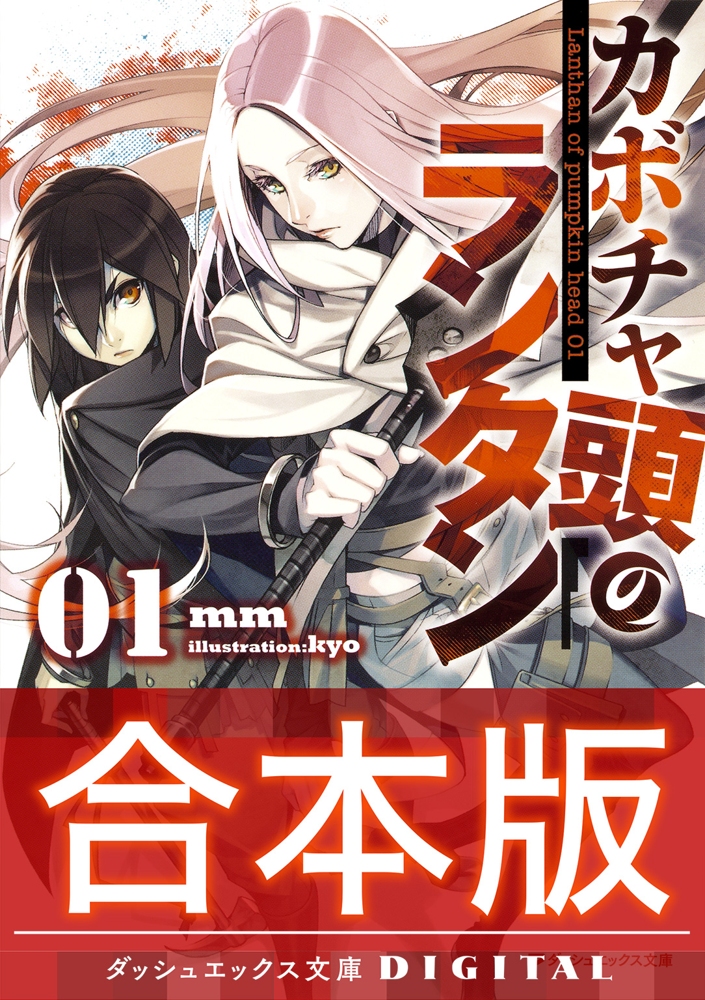
カボチャ頭のランタン 合本版
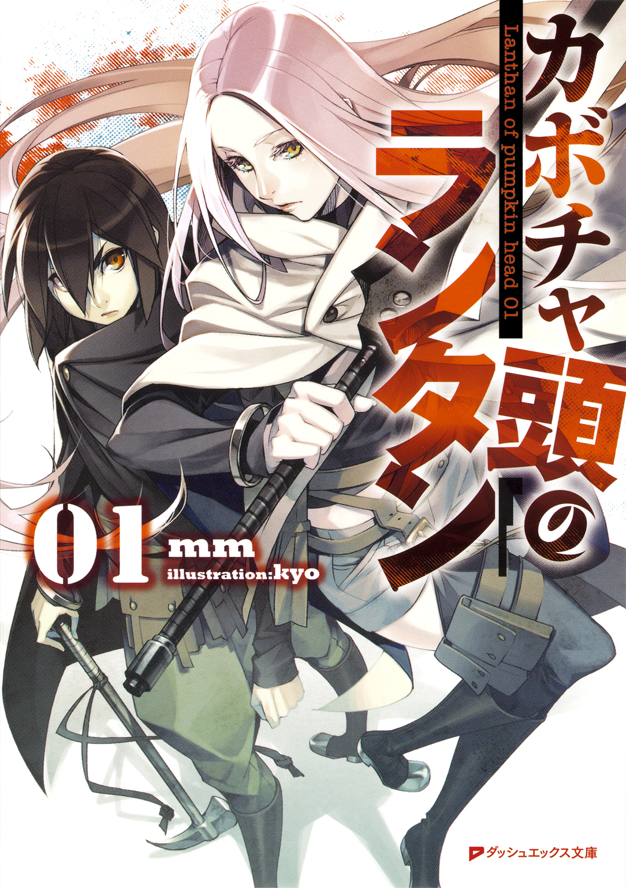
この本は縦書きでレイアウトされています。
また、ご覧になる機種により、表示の差が認められることがあります。
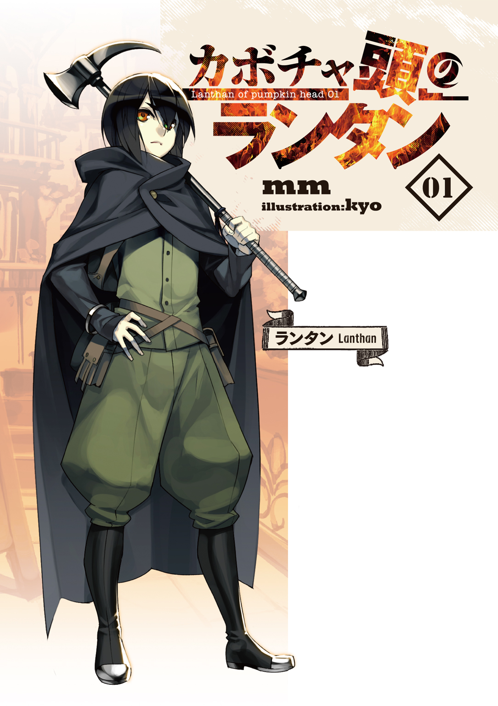
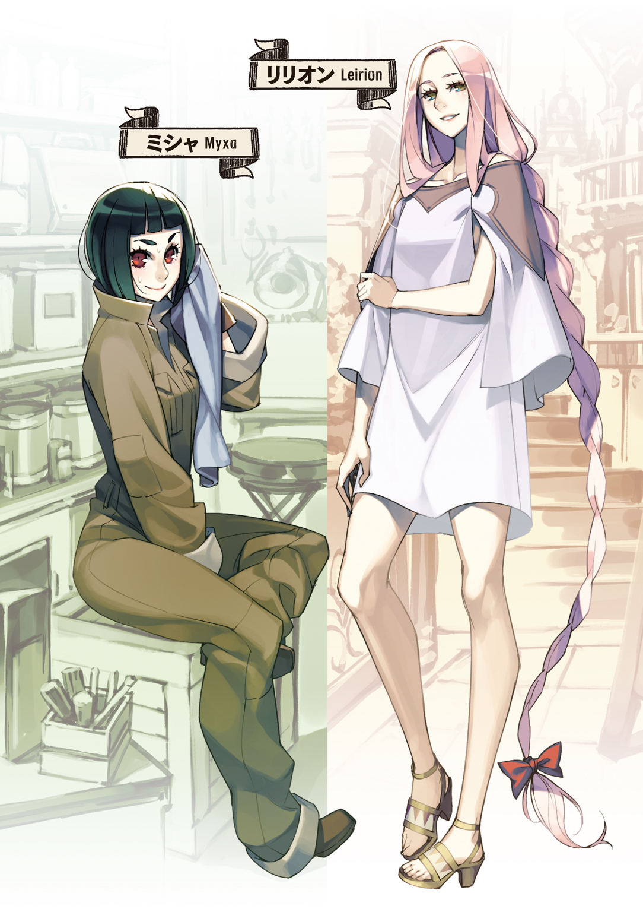
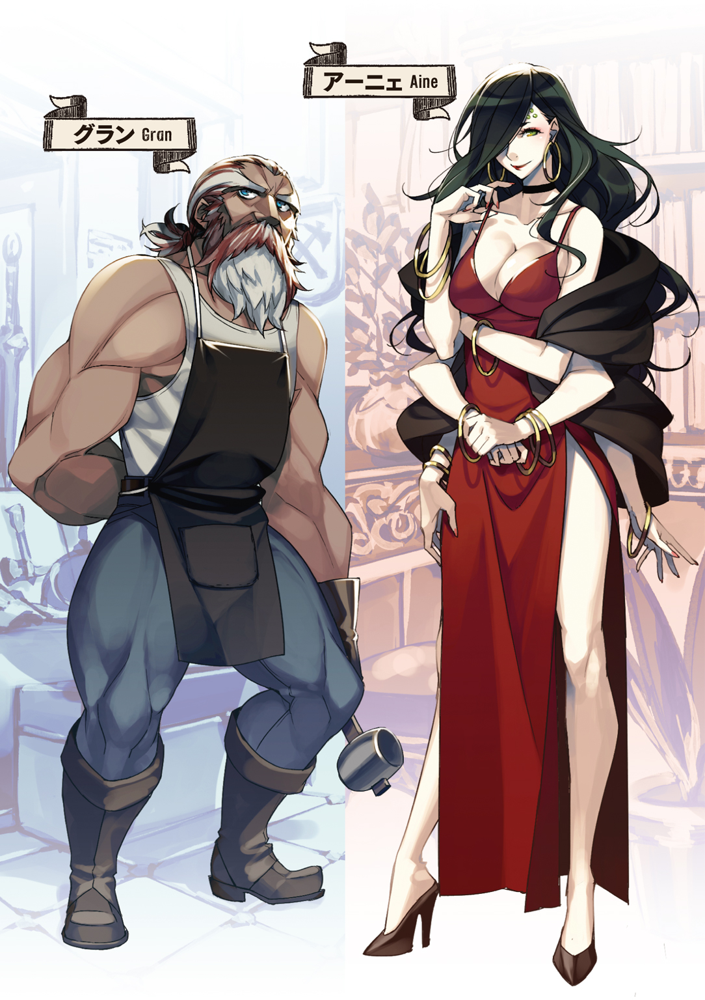
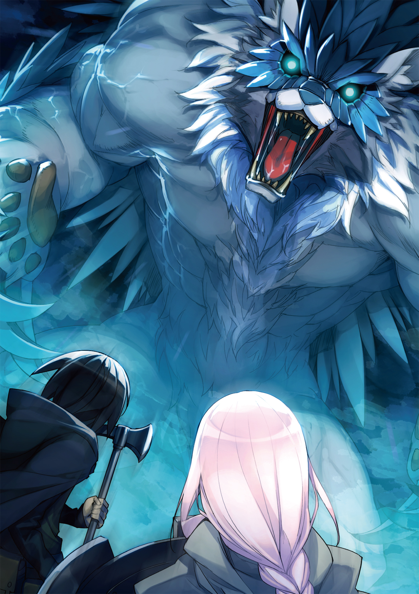
 ダッシュエックス文庫DIGITAL
ダッシュエックス文庫DIGITAL
カボチャ頭のランタン01
ｍｍ
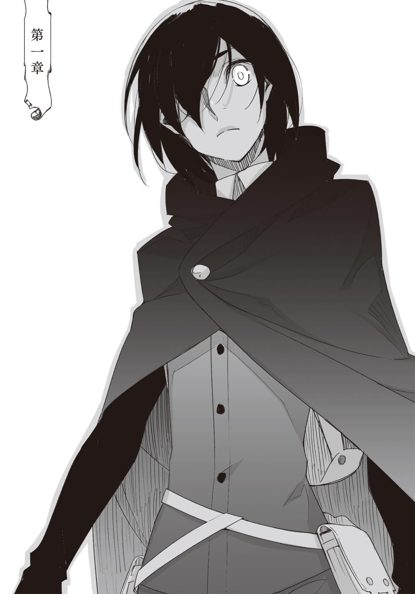
三日ぶりに見上げる空は残火のような茜色が広がっていた。夕と夜の狭間、地上の程近くに墨を垂らしたような濃紫の夜が滲み出している。
沈む夕日の傍に幾つか小さい星が見える。太陽が空を支配する日中には光に覆われて、夜になると地平の底へと太陽に寄り添いながら沈んでいく。
あの星々はこの時間帯にしか姿を現さぬ小さな輝きである。
うんざりするような、安心するようないつもの黄昏だ。
「ランタンさん、相変わらず時間ぴったりっすね」
馴染みの引き上げ屋であるミシャが慣れた手つきでランタンの腰からフックを外し、鋼鉄のロープを丸めていく。ランタンは夕日に目を細めながら曖昧に呻いた。
そんな疲れた様子にミシャは、労いに頰を緩める。
迷宮から引き上げられる際の浮遊感は何度体験しても好きになれない。それを知るミシャは丁寧に起重機を操ってくれるのだが、これはもう体質なのだろうとランタンは諦め気味である。
首を回すと肩が痛む。行きよりも随分と重たくなった背囊の背負い紐が身体に食い込んで稼ぎの多さを伝えてきた。
「五分前行動が業界の常識でしょ？」
「そんなこと言ってくれるのはランタンさんだけっすよ」
ミシャは少女ながらに豪快な動作で丸めたロープを起重機に放り込む。そして振り返ると白く小さい歯をちらと覗かせてランタンに笑いかけた。ランタンもつられて頰を緩めたが、笑い声は喉を微かに鳴らしただけだった。
「お疲れっすね」
「まあね。ほんっと疲れたよ。ほら見て」
ランタンはそう言って背囊を降ろして中を覗かせる。
「あらま、大儲けじゃないっすか」
収められた結晶を見てミシャは目を丸くした。
そこには迷宮兎から刈り取った笹形の魔精結晶がざらりと重なっている。ランタンにしては珍しい雑な結晶の扱いもまたミシャを驚かせるものだった。
「現物払いでいい？」
「ああ、はい。問題ないっす」
引き上げ屋への代金は半額を前金として払っている。後払い分は用意してあったが、それは帰る道すがらの夕食代にしたくなった。本当は探索者ギルドに寄って結晶を換金する予定だったのだが、迷宮探索で予想外の苦戦を強いられて気力を消耗してしまったのである。
ランタンはミシャに魔精結晶を一枚渡す。ミシャは水晶製の小さなハンマーを取り出すと手慣れた動作でそれを叩いた。魔精結晶はキンキンと軽い音を立てる。
「三級品っすね」
無駄な飾言は一つもない。悪びれることなく三級品と言ってのける遠慮の無さはランタンの疲れを慮ってのことだろうし、そもそもとして遠慮のいらない間柄でもある。ランタンは文句も言わずに背囊ごとミシャへと押しやって、ミシャは苦笑しながらその中に手を伸ばした。
「では失礼」
「うん」
「ひい、ふう、みい......はい。じゃあ確かに、頂いていくっすよ」
ミシャは金属製の集金箱に結晶を収めると、悪戯めかして商売用である満点の笑顔を作って頭を下げる。
「ありがとうございます。またご贔屓にお願いしますね」
「いいえ、こちらこそ」
ランタンもそれに軽口で応えて、まだ重たい背囊の口をきつく閉ざした。
背囊の中に入っているのは全て迷宮兎から刈り取った魔精結晶である。
斥候兎とも呼ばれる兎の魔物は四、五匹で迷宮を徘徊し、探索者を見つけると牙を剝いて襲いかかり、そして同時に仲間を喚ぶのである。単体の戦力はそれ程でもないのでさっさと殲滅してしまえればいいのだが、一匹でも逃がしてしまうと後に訪れるのは地獄の消耗戦だ。
その地獄たるやげっそりとしたランタンの姿に見て取れる。特に単独探索者であるランタンにとって消耗戦など最も避けて然るべき状況だった。ああ失敗した、とこうして愚痴を吐けるのはランタンの探索者としての実力と幾ばくかの幸運の賜である。
ランタンが背を向けると、その背中にミシャが声を潜めてそっと告げた。
「下街に襲撃者崩れが入ったらしいっす。念のため気を付けてください」
「うん、ありがとう。まあ探索者自体が、みんな襲撃者と大差ないけど」
「ふふ、ランタンさんはそうは見えないっすけどね」
ミシャはランタンの横顔に微笑む。
引き上げ屋の少女と大差のない身長に、三日間の迷宮探索を経てなお不思議と清潔さを感じさせる横顔は疲労の分だけ幼く見える。そうかな、と首を傾げると黒髪が夕日に揺れた。雌雄の区別も曖昧な童顔は、夕陽の茜で頰を染めると曖昧な均衡が傾きいっそ女のようである。
「では次の探索日程は明明後日の一四時で大丈夫っすね」
「あー、うん。たぶん」
「もう。はい、畏まりました」
「ちゃんと遅れないから。――じゃあね」
ミシャに背中を見送られ、ランタンはフードを目深に被ると重い足取りでその場を後にした。
迷宮特区と呼ばれる都市の中心部は、治外法権である下街とは別の意味で面倒の種が多く転がっている。今日のように背囊が重い日はさっさと抜けるが吉である。
大中小の様々な迷宮口を開く特区には、今から迷宮へ出発する気力充分の探索者と、ランタンのように精根尽き果てた探索者、そして運び屋や引き上げ屋が行き交っている。そしてそれらとは別に行き帰りの探索者を狙う商魂たくましい商売人や流しの医者、治安維持のための兵士もいる。
そしてそれらの陰には迷宮から帰還し疲弊した探索者に襲いかかり生命ごと金品を奪わんと舌舐めずりをする襲撃者と呼ばれる者どもも存在する。
迷宮特区では襲撃者を殺傷しても罪に問われない。殺さなければ殺されるのだ。何とも野蛮であるが仕方がない。
ランタンはいつも通りに周囲を警戒しながらも、ミシャからの忠告を話半分に聞いていた。都市の南側を下街と呼ぶ。
半開きの扇状に囲い込まれる下街は廃墟同然の貧民街で犯罪者も多く潜んでいるが、探索者もまた多く住んでいた。そして下街は為政者の建前はさておき治外法権であり、探索者の大半は気性が荒く、襲撃者と耳にしたら嬉々として狩りに出かけるような野蛮人ばかりである。
もしミシャの話が真実ならば、今頃大通りに襲撃者の首が晒されていても不思議はない。
しかしそれでも助言はありがたかった。
ミシャの目にはそれ程にランタンが疲れて見えたのだろう。ランタンは特区と下街の通用門である南門が近くなると、背囊を背負い直し、重い身体に鞭打って胸を張り背筋を伸ばした。
下街にある面倒事は何も襲撃者ばかりではない。掏摸や強盗もいれば、同業者相手に小遣い稼ぎをする探索者もいる。立ち振る舞いから疲労を隠せば、それだけで面倒事が多少は遠ざかる。
もっともランタンは、自分に限ってそれは気休めでしかないと理解していたが。
南門を抜けると、灰色にくすんだ街並みが広がっている。南門から真っ直ぐに、地獄の底までを貫く下街最大の大通りでさえも舗装は荒れ果てている。
だがそこに行き交う下街の住人たちは、それなりに生き生きとしていた。
迷宮特区の近くでは通りの左右に露店、屋台が並んで探索者や上街から怖いもの見たさでやって来た世間知らず相手に商売をしている。
武器防具の類から、合法違法を問わない薬品に、胡散臭い辻占や性別不明の娼婦。魔物と偽って皮膚病で顔の爛れた野良犬まで扱っているのだから質が悪い。
今はちょうど夕飯時なので飯屋台が多く出ていて、混沌雑多な匂いに腹の虫が鳴いた。
何を買って帰ろうか、とランタンは思う。
しかし大通りは下るにつれて売り物の質は下がり、かといって特区近くでは浮かれ気分の探索者や観光客をカモにしようとする輩が多い。ランタンは何の生き物かわからない肉や違法密造酒を取り扱っている屋台を避けて、脂の弾ける香りに引き寄せられた。
それは下街でよく見かける大鼠の肉ではないし、もう少しましな牙蛙の肉でもない。
それは牛の丸焼きである。
首と膝から下を切り落とし、皮を剝いで内臓を綺麗に取り除いてある。太い鉄串が尻から首まで貫通していて、一頭の牛が炭火で回し焼かれていた。豪快だが、下街ではなかなかお目にかかれない丁寧な仕事である。切り落とされた頭と臑と尻尾は隣の屋台でスープにされていた。
この屋台は上街から新規顧客を求めて出張販売しているらしい。けれど下街は貧民街と言ってよく、牛焼き屋台の商売相手はもっぱら探索者のようだった。
探索者の多くは高給取りであり、浪費家だ。迷宮探索にかかる費用は多く、だが出費の多さは倹約よりもむしろ金銭感覚の崩壊を招いた。探索によって明日の知れない人生を謳歌するために、探索者は酒も飯も快楽も心の赴くままに貪るのである。
ランタンは探索者にしては珍しく倹約家のきらいがある。だがやはり育ち盛りと言うべきか、この肉の焼ける匂いには抗いがたく、隣のスープも負けず劣らずの芳香を放っている。
屋台を囲むむさ苦しい客たちの隙間に身体をねじ込む。
牛はもう随分と瘦せていた。注文が入る度に店主の蜥蜴人族が大振りな牛刀で肉を削ぐのだ。
ごくりと喉を鳴らしたランタンに店主がギザギザの歯を剝いて笑いかけた。フードの下にある幼げな顔を覗き込み、あるいはそれは優しく微笑んだのかもしれない。
昔のランタンなら逃げ出していた程の凶悪な笑みだった。
「一つどうだい？ うんまいぞお！」
「......お尻の所のお肉、ください。持って帰るから包んでもらえますか？」
「お、通だね。あいよ、たんと食べな。おっきくなれよ」
店主は愛想よく笑って、ランタンの望んだ通りに尻肉を薄く削いだ。油紙の上にこんもりと盛られた肉は程良く生々しく、ほくほくと湯気を立てている。緑の鱗に覆われた硬そうな指で店主は器用に肉を包む。冷めても美味いぞ、とランタンに寄越したそれはずしりと重く温かい。
金を払い、隣のスープ屋台で全く同じ顔の蜥蜴顔に持参のコップにスープを注いでもらう。白濁した牛骨出汁のスープは何とも濃厚そうだ。大蒜と胡椒の匂いがびりびりと香る。
歩きながら食べてもよかったが、住み家までそれ程距離があるわけではない。黄昏時ともなると初春の風に冬の冷たさが戻る。懐の暖かさはありがたくも、空腹の身には辛くもある。それでも落ち着いて食べたい気分なのは、やはり疲労のせいなのだろう。
大通りを外れて、下街をさらに南下し奥へと進んでいく。幾つか迷路のような辻を曲がると、そこは地獄に爪先を半分踏み込んだような場所である。しかしここは地獄の瀬戸際にあって平和である。良からぬ輩の出入りする下水口どころか、そもそもとして人気がない。人気がなければ害獣どもの餌もないので、驚く程に静かなのだ。
あるのは形を保った集合住宅だけ。
二階建ての集合住宅は、一階部分は完全に廃墟となっていて居住できる状態ではなかったが、二階はそれなりに綺麗だった。今にも崩れ落ちそうな外階段を上がり、四つ並んだ扉の一番奥をランタンは塒にしている。外観はさておき隙間風も雨漏りもない良い部屋なのだ。
ランタンは扉の前に立つと、腰に吊った戦鎚に手を伸ばした。静寂で満たされている筈の室内から声が聞こえる。ランタンはフードの下で眉を顰めた。
ここはランタンの部屋だが、勝手に住み着いているだけである。
数日部屋を空けているだけで他人に部屋を取られるのも珍しい話ではない。人が住んでいた部屋はつまりは管理されていた部屋なので住むには都合がいい。
こういった場合の対処法は三つある。
諦めるか、話し合いをするか、暴力によって決着をつけるかだ。そして下街で最も多く取られる方法は暴力であり、ランタンもそれを行使することを、好ましい手法であるとは思わないが、仕方がないと割り切っている。
特に疲れていて、さっさと食事を摂って眠りたい時には躊躇いも薄れるものだった。
ランタンは夕飯を扉から離れた場所に置き、ついで背囊も下ろしてフードを外した。
ひんやりと冷たい扉に耳を当てる。ぼわぼわと反響して会話を聞き取ることは困難だが、複数の声を確認することができた。破裂するような怒声があることから何かしらの揉め事なのだろうと察せられる。
三人、いや四人か。
ランタンは擦過音が鳴らないように慎重にドアノブを捻り、ゆっくりと扉を押し開いた。僅かな隙間から中を観察することはできないが、それだけで声はよく聞こえる。侵入者は扉が開いたことにも気が付かない程に白熱していた。
チンピラの集団が私刑のような話し合いをしているのだろうか。暴力に酔う声が三つと苦痛が一つ。何とも一方的でランタンは気分が悪くなった。
他集団の揉め事に首を突っ込むのは野暮であるが、ランタンにはちょうどよく大義名分がある。腹は減ったし、眠たいし、ここは自分の部屋であるし、暴力はいけないことだ。それに苛立ちに気配を隠しきれぬランタンに気が付けないあたり、侵入者の脅威は低そうだった。
少し脅せば追い出せるかもしれない。
ランタンは迷宮作法でベルトに結ばれた留め紐を解き、戦鎚の握りを確かめる。扉を開いた。
部屋には窓がない。けれど天井に吊された光源に照らされて仄明るい。その明るさはいつものものだが、三日前とは明らかに別の、他人の臭いが充満している。床には幾つものゴミが散乱して、置きっ放しにしていた保存食が食い散らかしてあった。
そして土足に汚れたベッドが。
ランタンは急な乱入に色めき立つ室内に歩を進める。
私刑を受けて俯せに動かぬ襤褸雑巾のような者が一人。それを囲む暴力を執行していた者が二人。靴のままベッドの上に胡座を搔く者が一人。これがリーダー格だろう。
襤褸雑巾はボロボロすぎてよくわからないが、三人の男はその誰もが暴力的な容姿をしている。探索者のようでもあり、襲撃者のようでもある。もしかしたらミシャの言っていた襲撃者崩れであるのかもしれない。
なるほど、崩れと呼ばれるだけのことはある。
「なんだぁテメエ？」
ランタンの姿を上から下まで眺めた男たちの目には侮りがあった。胸を張ろうと背筋を伸ばそうと彼らに比べてランタンはあまりに小さく華奢である。探索帰りの草臥れた姿や頰の白い顔。握り締めた戦鎚がいかにも重たそうで、それは戦士ごっこをする子供そのものである。
「ここの家主。出ていくなら見逃してもいい」
さも面倒くさそうに言い放ったランタンに男たちは顔を歪めた。侮りはしても侮られることは許せないのだろう。歪みは苛立ちと怒り、そして優位を確信する愉悦の混ざった笑みである。
「はんっ、どおりで綺麗な部屋だと思ったぜ。汚しちまって悪かったなあ」
話し合いなんてするんじゃなかった。ランタンは内心拗ねる。
眼前の男たちのようになりたいとは思わないが、もう少し男臭い顔ならこんな面倒もないだろうと思う。男たちは武器も抜かずにヘラヘラしているだけで、外套の隙間からちらりと覗く華奢な肉付きを探る目付きは獣じみていた。
「まあ安心しな。これからは綺麗に使ってやるよ。なんならオメエも可愛がってやろうかあ？」
ランタンの視線が冷たくなった。ああもう話し合いなんてするんじゃなかった、と強く思う。その思いが軽蔑侮蔑を孕んだ溜め息に。
「こ――」
の野郎バカにしてんのか、などと続く筈の罵声は言葉にならない。
ランタンは一足飛びに二人の間を抜けるとリーダー格の顔面に戦鎚を振るった。
ランタンの扱う戦鎚は片側が鎚であり、もう片方は鶴嘴になっている。ランタンは男の頰を鶴嘴で貫くと、そのまま力任せにベッドから引き摺り降ろした。嫌な音で傷口は広がれど、裂けはしなかった。人間はそれなりに頑丈だ。
「出ていけって言ったんだけど、理解できない？」
ランタンは汚れたベッドを哀しげに見つめ、床で呻く男の顔を踏み付けるとぐりと捻って頰から鶴嘴を引き抜いた。男は絶叫とも呼べる悲鳴を上げたが、頰から抜ける息に緊迫感がいまいち足りない。ランタンは男を二人の方へと蹴り飛ばして、これ以上ベッドが汚れないように身体を入れ替える。
泥や食べ滓ならば洗えばいいが、血汚れがなかなか落ちないことをよく知っている。
ランタンは三人に戦鎚を向けると、できるだけの威圧感を込めて睨む。
「出ていけ」
その言葉は悲しいかな聞き入れてはもらえなかった。
「ひめぇえら、ひゃれっ！」
床で呻いていたリーダー格が頰から空気の抜ける声で二人を嗾けた。情けない姿を見せても手下二人を動かす力があるあたり、実はそれなりの実力者なのかもしれない。一人は剣を腰だめに構えて、もう一人は上段に振り上げて突っ込んできた。
「おおおおおおっ！」
気合いの声が鼓膜を揺らすが、ただうるさいだけである。
ランタンは腹に向かって突き出される鋒を軽く払い、それだけで剣は飴細工のように欠け、男は差し出した戦鎚へと慣性に従って自ら突っ込んでくる。
「ぐええっ」
鳩尾に埋まった戦鎚をランタンは軽く捻って服を絡め取る。そして上段構えの男へと押し返した。薄汚れた粗衣が破れ、二人纏めて扉近くまで吹っ飛ぶ。がらんと剣が床に転がり、その音は何とも安っぽい。
「な、......んだよ。てめえ、くそがっ！」
傷口を埋めるように布きれを巻き付けたリーダー格がまともな言葉で怨嗟の声を上げ、顔は出血と怒りで真っ赤である。ランタンは突き付けられるナイフがそれなりの輝きを持っていることに気が付いた。この輝きに見合うだけの実力があるのだろうか。
男は怒ってはいたが不用意に斬りかかってはこなかった。あれだけの動きでランタンの間合いを把握したのか、一足一刀の距離には踏み入らない。扉の近くで二人の男が起き上がろうとしていた。嘔吐でもされたら堪らないと手加減をしすぎたようである。
この期に及んでランタンは男のナイフを握る手、その指に装着している指輪に狙いを定めた。
砕く。
一歩踏み出そうと僅かに前傾した瞬間、男が叫んだ。
「捕らえろ！」
声と殆ど同時に今まで倒れていた襤褸雑巾が恐るべき速度で手を伸ばし、腕がランタンの片足に絡みつく。腕は二匹の蛇のようで瘦せた指先が脹ら脛と太股に嚙みついた。
襤褸雑巾へ一瞬意識が。その瞬間を見逃さずランタンの喉を目がけてナイフが奔った。持ち手が変わっているあたり芸が細かく、それは必殺の一撃と言っていい。
喉を裂くその瞬間、男の口元に確信的な笑みが浮かび、凍り付いた。
戦鎚が足元から、僅かな腰の捻りと腕の振りだけで、男が知覚する間もなく振り上げられていた。暴風のような風切り音が聞こえたその時には、男はナイフを握った腕の肘から先を失っていた。戦鎚が関節を砕き、勢いそのままに引き千切ったのだ。握られたままのナイフが冗談のように天井に突き刺さり、滴る血が雨漏りのようだった。
「止めろおおおっ！」
リーダー格は悲鳴混じりの叫びを上げて、痛みを感じさせぬ俊敏さで反転すると手下も押し退けて一目散に逃げ出す。そんな手下二人も慌ててリーダー格の背を追った。何とも潔い逃げ足である。最初からこれを見せていれば腕を失うこともなかっただろうに。
見逃してもよかった。この襤褸雑巾さえいなければ。
男の命令に従い、ランタンの前に立ちはだかった襤褸雑巾はさながら亡者のようだ。
足首近くまで伸ばし放題になった白髪に、首を差し出すような酷い猫背は、けれどランタンを見下ろしている。背が高い。本当に襤褸雑巾を身に付けているかのような粗衣に覆われた身体は、骨と皮しかない。白髪の隙間から覗く落ち窪んだ瞳がぎょろりと大きい。
まさしく異形であった。
瞳が恐怖に震えていなければ。
恐怖がある。今にも失禁しそうな程の恐怖が、襤褸雑巾の顔に満ち溢れていた。だと言うのにもかかわらず、襤褸雑巾は哀れな程に細い手足を広げてランタンの行く手を遮っている。
意思と行動がちぐはぐだ。
足止めはリーダー格の望みであって襤褸雑巾の意思ではない。だがそれを実行するということ、命令に従うことは襤褸雑巾の意思である筈なのだが、どうにも変だ。恐怖によって縛り付けられているのかもしれないが、現状のランタンに立ち向かう恐怖も並大抵のものではない。
殺すのは容易いが、殺したくはなかった。
「ねえ」
問い掛けに返答はない。
襤褸雑巾は私刑を受け、真意がどうであれ命令を遵守し、僅かばかりの時間稼ぎに捨て駒にされる。それはあまりにも切なすぎると思う。襤褸雑巾がランタンを殺そうとしているのならばともかく、これはただ行く手を遮っているだけである。殺意は微塵も感じられない。
少し小突いただけで砕けてしまいそうな瘦軀がランタンに戦鎚を振るわせるのを躊躇わせた。
だが躊躇は一瞬。ランタンは襤褸雑巾の足元に狙いを定め、身体を沈めた。砂像のように打てば全てが砕けるわけではない。関節から狙いを外せば慈悲にもなる。そう自分を納得させた。
低空の橫振り。狙いは臑。その一撃に手を抜いたつもりはないが、しかし戦鎚は空を切った。
「は」
不測の事態に戦鎚の重みで身体が泳ぎそうになる。
靴底が摩擦で焦げて悲鳴を上げた。ランタンは咄嗟に踏ん張ると、反射的に戦鎚を切り返して思わず顔を狙った。しかし鶴嘴が刈り取ったのは白髪の一筋だけである。追撃の一撃も皮膚に掠りもしない。雷速の如き一撃が、襤褸雑巾には見えている。
リーダー格すら足元に及ばない体捌き。ますます解せない。
だがその理由が襤褸雑巾の首にあった。それにランタンは見覚えがあった。
戦鎚の軌跡に遅れて巻き起こった衝撃が白髪を吹き散らす。
頭蓋骨に皮を張り付けただけの瘦せた顔。
女の顔だ。
そして瘦せた顔すら重たげな細首に巻かれた首輪。その銀に脈動する首輪は奴隷首輪と呼ばれる魔道の首輪だった。対になる命令指輪の持ち主の命令を、首輪の装備者に強制服従させる効果を持つ。複雑な命令や忌避感の強い命令などは効果も下がるが、単純な命令ならばあるいは死ぬまで。
首輪を壊せば命令は失われる。だが襤褸雑巾の反応速度は首輪だけの破壊を許さないだろう。
ならば方法は一つ。殺せばいい。
ランタンの足元が爆ぜた。紅蓮の閃光に床が焦げ、滴った血が蒸発し黒ずむ。
文字通りの爆発に押し出されたランタンは瞬間的に加速し、床から壁へと女の脇を抜けて、壁から玄関へと高速に弾け跳ぶ。
ランタンの超加速に魔道の命令が追いつかない。それでも素晴らしい反応速度で襤褸雑巾がランタンを振り返り反転したが、ランタンは既に廊下から身を躍らせていた。
血の道標の先に男たちの背中が見えた。ランタンは目を細める。彼我の距離はひとっ飛び。
ランタンは着地と同時に爆発加速を駆使して、男たちの背を抜き去り眼前に立ち塞がった。
「ひいっ」
ランタンは抜き去る瞬間に手下一人の後頭部を砕いた。男は顔面の穴という穴から血が溢れるのを隠すように俯せに崩れ落ちる。残り二人の向こう側に、命令を遂行しようと激走してくる襤褸雑巾の姿があった。
哀れ。
女の呪縛を解くには装備者を殺せばいい。首輪だろうと指輪だろうと、どちらでも構わない。指輪はリーダー格の指に嵌まっているが、ランタンは誰一人として逃がす気はなかった。
「わ、あ、悪かったっ。あいつは止めるっ。だから見逃して――」
「いやだ」
失血と恐怖で顔を青くした男たちが腰を抜かしたように這いつくばった。必死に命乞いを始めるがランタンはそれを一蹴した。ここまで来てなんとも往生際の悪い。どうせ甘さを見せたら、それに付け込むのだろう。あんな質の悪い魔道具を使うような輩はそうに決まっている。
男たちは項垂れた顔を上げて、無情なランタンを睨んだ。感情の混沌が渦巻く視線。それがランタンの視線と交わると驚愕に変わった。
口元に酷薄な笑みが浮かび、三日月に裂けたそこからはあどけない冷笑が零れた。
焦茶色だったランタンの瞳に、炎が灯っている。
「は、は、はは」
男たちの表情が驚愕から、諦念へと変じた。発した笑い声が乾いている。
茶から橙に、橙から赤へと揺らめく光芒の瞳は、世界の一切を染めあげる夕陽に似ている。
それは下街にまことしやかに語られる噂。
黄昏時に現れる気まぐれな幼神は、赤い揺らめきに見つめた者を決して生かして帰さない。
燃える瞳のランタンを見て、誰かが呼んだ。
「カボチャ頭......」
「なにそれ？」
無邪気に聞き返すランタンに、男の口が何かを呟く。
それは祈りのようで、それが男たちの最期の言葉になった。
戦鎚に合わせて爆音が炸裂すると、死体が二つ増える。爆炎を纏った戦鎚は男たちの頭部を砕いて消し炭に変えた。黒く炭化した首からじくじくと血が染み出して、死体は幼神に祈りを捧げる姿勢で突っ伏す。地面に広がる血溜まりは、失われた頭部の影のようである。
痛みのない死は、下街にあって幸運な結末であると言っていい。ランタンは熱を持った戦鎚を一振りして冷ますと、片手で器用に留め紐を結ぶ。
幕引きの奥に唯一の生き残りがいる。沸騰した大気に立ち上る陽炎の向こう側で、子供のように顔面から転ぶ襤褸雑巾の姿が目に入った。
「あーあ、痛そう」
焦茶色の瞳でランタンは呟いた。ぐるぐると腹の虫が鳴いて、欠伸が一つ零れる。
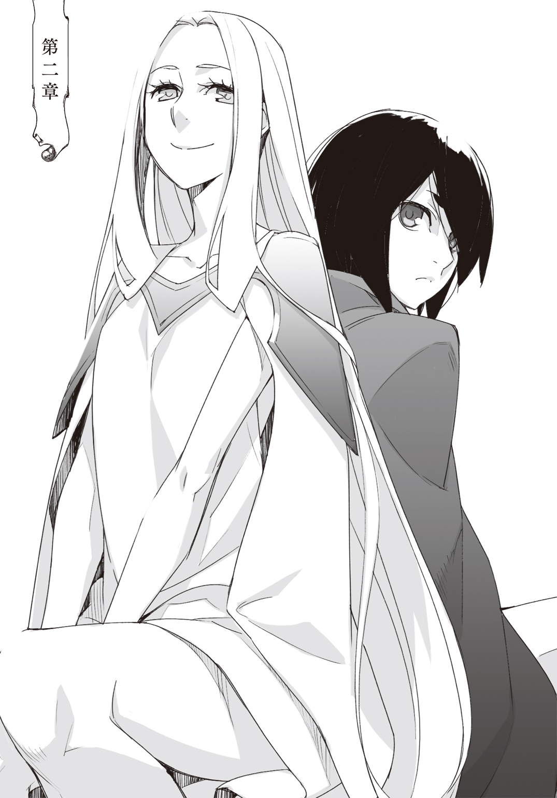
下街でよくある揉め事をよくある形で解決したランタンは、空腹の虫を宥め賺しながら後始末を淡々とこなした。
男たちの死体を漁ったのは彼らが何者であるかを知るためであったが成果はなく、金目の物は殆ど小遣いにもならないがこれを回収しなければならない。
死体は放っておけば害獣を引き寄せ、金目の物は放っておくとどういうわけか人を引き寄せるのである。害獣は死体を余す所なく処理してくれるが、人は大抵、問題事を連れてくる。再び住み家に目をつけられては堪らない。そういう理由で嫌悪感を我慢して追い剝ぎまがいの真似をしなければならないのである。
それにこれも。
奴隷首輪の対となる命令指輪をランタンはぶかぶかながらに装備して、襤褸雑巾の首輪を外した。首輪は指輪を近付けると生き物のように震えて、はらりと緩む。外してしまえばなんと言うことはない銀糸の首輪であり、恐るべき力が秘められているとはとても思えない。
ランタンはそれを他の金目の物と一緒くたに纏めてしまう。不愉快な魔道具だが捨ててしまうには高価な品である。魔精結晶と一緒に売り払ってしまおう。ランタンはそう考えを巡らせながら気を失っている襤褸雑巾を見下ろす。
死体は明日には骨も残らず処理されているだろうが問題は襤褸雑巾である。
保護してもいいが積極的にそれをする理由がなかった。結果として襤褸雑巾を救ったような状況になっているが、その過程は殆ど憂さ晴らしに近い。けれど、理由がなくとも見捨てられないのがランタンの甘さでもある。
この暴力的な世界での生活にランタンは随分と馴染んだ。
だがそれでも以前の世界で染みついた、甘やかな精神の全てを失ったわけではなかった。この世界でランタンの持つ常識は美点ではなく、他者に付け込む隙を与える欠点となることが多かったが、それを忘れようと努めたことはない。
ランタンはぐったりとした襤褸雑巾、――女を肩に担ぎ上げた。
女はぞっとする程に瘦せていたが軽くはなかった。
背が高く、剝き出しとも呼べる骨格がしっかりしているためだろう。
足を一歩進めるごとに、女の鳩尾にランタンの肩がめり込み、女は蛙の潰れるような呻き声を上げている。風が吹くと瑞々しさの一つもない白髪がランタンの顔に絡みつき、鬱陶しげにそれを払うと蜘蛛の糸のようにはらはら千切れた。そして何よりも酷い臭いがした。
ランタンはもうずっと呼吸を止めていて、階段を上がる頃には酸素不足で視界の端が黒ずんでいる。ランタンは扉の傍らにある夕飯を見た瞬間、反射的に呼吸を戻し、吸い込んだ臭いに食欲を減じたが、それでも腹の虫は鳴くのである。
女を風下に横たえて、部屋の扉を開くとランタンは扉に背を預けて扉止めと化した。
戦闘の残り香はおかずにならない。空気を入れ換えなければ落ち着いて寝られない。
ランタンは腰のポーチからハンカチを取り出すと水筒でそれを湿らせて手を拭い、口元も綺麗にする。それからようやく夕飯を手に取った。背囊から食べ残しの黒パンを取り出して、すっかり冷めた肉と白く脂の固まったスープを見つめ、溜め息一つ。
ランタンは腰から狩猟刀を抜き取った。これぐらいかな、と爆発一発。加熱された刃でスープを攪拌し、濡れた刃を拭うように黒パンに切り込みを入れる。そして黒パンに肉を挟み込むと、冷えた肉と黒パンはあっという間にローストビーフサンドへと変貌を遂げる。
「いただきます」
ランタンは肉パンに齧りついた。
肉は冷めていてもとても美味い。香辛料と塩の加減が抜群だった。赤身肉であったがぱさぱさしておらず、しっとりと柔らかい。けれど黒パンは乾燥してざらついて、嚙み締める度に口内から水分が失われた。ランタンは肉パンを口内に残したままスープを啜る。すると口の中でパンがほろほろと崩れていく。途端に小麦の甘さが染み出して、ランタンはほっと一息吐いた。
上品な食べ方ではないが、正しい食べ方である。
三日間、携帯性と保存性を重視した素っ気ない迷宮食ばかりだったため、あっという間に肉パンを食べ終わった。もう茜色の夕焼けは失われ、外気ははっきりと肌寒い。こうなると完全に晩冬である。ちびちびと飲む温かいスープが何ともありがたく、おまけのように入っていた尻尾の軟骨をランタンは口の中で転がした。
それをぷっと遠くに飛ばす様子は無邪気な子供のようだ。ランタンはスープを飲み干し仄かに白む息を吐き、すぐに睡魔が訪れる。大きな欠伸を吐き出して、勢いをつけて立ち上がる。
呼吸を止め、ランタンは女の首根っこを摑んで部屋の中に引き摺り込み扉を閉めた。内側から鍵を掛けて、ドアノブに女の両手首を縛り付ける。
ランタンは女を助けたが、女がランタンに助けられたと思うとは限らない。そのまま逃げ出すのならば構わないが、感謝しながらも寝首を搔こうとする矛盾めいた行動もありがちだ。女が敵対行動を取っても対処できる自信はあるが、助けた者を殺すのは馬鹿らしい。
囚人のような姿は窮屈だろうが、女はまだ侵入者の生き残りでしかない。生死を分けたのはランタンが哀れみを覚えたかどうかの違いでしかなかった。
女の処遇は目覚めてからだ。ランタンはもう考えることが面倒くさくなる程に眠気に支配されていた。部屋の惨状を重い目蓋の下で睥睨し、床に散らばったゴミ屑を蹴り飛ばすように部屋の隅に纏め、ベッド上の有様に無表情になった。
悪臭の染みついた枕を壁に投げつけて、シーツで汚れを包み込むとそれを苛立ちのままに壁際に放り捨てる。背囊と戦鎚をベッド脇に立てかけて、ランタンは靴だけを脱いで剝き出しのマットレスにようやく身を横たえた。
ランタンは自分の匂いを確かめるように外套に包まって、あっという間に眠りに落ちた。
金属音がランタンを夢の中から引き戻した。覚醒は一瞬で、ランタンは女の目覚めを悟った。
ランタンは外套に包まれたまま、しばらくその無遠慮な音を聞いていた、どうやら女は拘束から逃れられないようであるし、ドアノブの破壊も不可能なようだった。うるさいことにはうるさいが、そこに危険が伴わなければただの雑音である。無視を決め込んで再び寝ようか。
ランタンが目蓋を再び下ろすと、金属音に声が混じった。
最初は言葉ではない呻き。そして。
「だ、れかぁ......たすけ、......ぁ」
掠れた声だった。瑞々しさのない女の髪を思い出す。ぶちぶちと千切れた声は、裂いた喉から零れ落ちるようだ。
女は何度も何度も、助けを求める。時折咳き込み、引きつった荒い呼吸が痛々しい。声が震え、次第に湿り気が混ざり始める。女はランタンには気が付いていないようだった。女の求める助けは、迷子の泣き声のように無指向に発露した不安そのものである。
ランタンは鳩尾の辺りから全身に冷たさが広がっていくのを感じた。過去に自身も経験のしたことのある不安がランタンを支配しようとしている。目蓋の裏にいつかの孤独が蘇った。
ランタンは眠ることを諦めた。金属音はただの雑音だが、泣き声は精神攻撃そのものだ。それは耳の奥底で反響して、脳を搔き回し、そこに沈殿する過去の記憶を浮かび上がらせる。こんな状況で眠ることはできない。
鼻の奥が痛む。それは涙であるのかもしれない。
ランタンは身体を起こすと視線を女に向けた。その気配に女は驚き身体を震わせて、凍ったように身を固くした。光源の落ちた室内は真っ暗で、その表情を窺うことはできない。
ランタンは小さく喉を鳴らして苦笑する。
暗闇の中に浮かぶランタンの輪郭に、一体どんな想像を膨らませているのだろうか。
ランタンは厳つい人相体格が圧倒的多数派の探索者の中にあって、稀に見る大人しい容姿をしている。その姿を侮られることは多くとも、恐れられることは皆無である。
ドアノブが女の震えにカタカタと鳴って、ランタンが魔道光源を指で弾くと衝撃を受けた光源は柔らかい光を室内に広げた。
光に目を焼かれた女が小さく悲鳴を漏らす。
「ひゃ」
女が腕で顔を隠すように身体を縮こませている。ランタンが近付くと怖々と顔を擡げた。
光を恐れているのか、それともランタンを恐れているのか。表情の引きつる顔が、ランタンを見た途端に仄かに和らぐ。目が赤く充血していたが、頰は濡れていない。
真っ直ぐの視線。さてどうしたものか、とランタンは一瞬だけ思案して。
「おはよう」
女は落ち窪んだ眼窩にあって、零れ落ちそうに大きな目を瞬かせた。その目は妙に幼さを感じさせる。瞬く音が聞こえそうな程の沈黙が広がり始めて、ランタンは性懲りもなく再び、おはよう、と繰り返した。ランタンの首筋が仄かに赤く、それはランタンなりに気を遣ったユーモアであったのかもしれない。
「......お、おはよう、ござい、ます」
じっと見つめるランタンに根負けしたのか、女はついに目覚めの挨拶を口にした。ランタンは満足気に頷き、腰を屈めると女と視線を合わせる。
「さて、幾つか聞きたいことがあるんだけど。最初に一つ」
ランタンはぴんと人差し指を立て、女の手首を指差した。
「ちゃんと答えてくれたら、それは外すから」
「言う、わ。......ちゃんと、わた、し」
怯える視線と、割れた声が痛々しくランタンは差した指を唇に当てて黙るように促した。
「頷いてくれるだけでいい。それを外したら、貴女は暴れる？」
女は唇を真一文字にきつく結んだまま慌てて首を横に振った。すると白い髪が女の顔を覆い隠し、髪に目隠しされた女は、見えないことを恐れるように頭を振り乱した。
「動かないで」
一言だけで女は動きを止めた。それは奴隷首輪が未だに効力を残しているかのようである。
ランタンはあっさりと女の拘束を解いてやった。ランタンにはどうにもこの女が噓をつけるとは思えなかった。女は自由になった手で首に触れて、首輪がないことを確かめるように何度も撫でる。手首に赤く擦り傷ができていた。
「あ、あ、ありが、とう、ございま、す」
女は手首の傷を気に掛けず、ただランタンに感謝を伝えた。するとランタンは何だか落ち着かない。下げられた頭、女の後頭部を見つめる目付きはいっそ耐えるようで、ランタンはすぐに視線を逸らした。
「別に、いらないから。そういうの」
ランタンは差し出された感謝を突き返して、代わりに手を差し伸べる。
「立てる？」
女はその行動に困惑していた。女はランタンの手を取らず、立ち上がろうと蠢いているが腰が抜けているのか、結局は座り込んだままだ。そしてついに観念したのかランタンの手を見つめて、震えながら手を伸ばした。まるで自らの汚れを恐れるように。
「誰がここまで運んだと思ってるの？」
「あっ」
我慢できずランタンは女の腕を摑むと一気に引っ張り上げた。そしてそのままずんずんと部屋の奥へと引っ張っていく。骨張った手首は枯れ枝のように細い。けれどそこには生命の脈動が確かに感じられる。ランタンは振り返り、戸惑う女の顔を見上げた。
女は今にも倒れそうだった。ランタンは部屋の隅にある一人掛けのソファを引き寄せる。
「座って」
「で、も」
「いいから」
ランタンは突き飛ばすように女を座らせる。女は慌てて浅く腰掛けて、ランタンは言葉に迷う。ランタンの呆れた視線に気が付くと、女はそっと目を伏せた。艶のない髪や瘦せた肌は、女を老いているように見せるが、振る舞いや恥じらう姿は瞳と同じく不思議と幼い。
「ちゃんと座って」
「......はい」
女はおずおずと深く腰掛け、それでも背もたれを使うことはない。ランタンは探索に使った水筒にまだ水が残っていることを確認すると、それを女に手渡した。
「飲んで。いや、飲め。ゆっくりね」
命令すると、女は両手で大事そうに水筒を摑みそれを傾ける。命令通りにゆっくりと水を口に含み、染みこませるようにそれを飲み込んだ。余程に喉が渇いていたのだろう、ランタンを気にしているのも初めのことで、すぐに乳を吸う赤ん坊のように止まらなくなった。
ランタンはベッドに腰を下ろす。
「んっ」
女が空気を飲み込んで小さく呻く。中身を飲み干したのだ。哀しそうに何度も水筒を揺らし、怯えた視線をランタンに向けた。飲み干したことを咎められると思っているのだろう。
「足りないなら、底を叩いて」
水筒の底には水精結晶が嵌め込まれている。魔道光源と同じく特定の衝撃を加えることにより力を発揮する。光源は光を、水精結晶は水を発する。結晶に封ぜられた魔精は既にかなり消耗しているが、あと一度ぐらいは水筒を満たせるだろう。
「だいじょうぶ、です」
女が遠慮をしているのがわかったがランタンは頷いた。
掠れてひび割れていた声に瑞々しさが戻りつつあるようだ。掠れていた時は不協和音のような不快さのある声だったが、なかなかどうして悪くない声である。本調子になったのならば、もしかしたら可憐な声なのかもしれない。
「あ、あのっ」
「何？」
女の視線が思いがけず強い。
「助けてくれて、ありがとう、ございます」
「いらないって言ったと思うけど。そういうのは、別に――」
ランタンは落ち着かずそっぽを向こうとしたが、絡みついた視線がそれを許さなかった。
「わたし、覚えてる。あなたを止めようとして。......すごく怖かった。あの人の腕がちぎれたとき、わたしも、おんなじみたいになるんだって、そう思って、......いやだって思っても、あの、首輪が、わたしを」
女が震えを誤魔化すように水筒を引っ搔いている。言葉遣いも下手な敬語から段々と地が染み出していた。恐怖を思い出して、しかし見つめる視線に怯えはない。
「でもあなたは、わたしを殺さなかった。殺されてもおかしくないのに......」
「つまり、貴女はあの男たちの仲間でいいんだね」
首輪により支配されていても、女の意識は自分を男たちの仲間だと認識している。
「うん、わたしは......」
女は泣きそうに顔を歪めて、言葉を詰まらせる。ランタンは女が言葉を見つける前に、すっと目を細めた。そして発せられた声は底冷えしている。
「お前らは襲撃者か？」
「ちがっ、う、ます」
襲撃者は探索者にとって明確な敵である。ランタンは単独探索者であったが、探索者ギルドに属するものとして探索者に仇なす者を生かしておくわけにはいかない。
「わたしは、最近、あの人たちの、仲間に、なったの。......あの人たちは、探索者、です」
「貴女は？」
「わたしは探索者見習い、の......運び屋、見習い、です」
その返答にランタンは妙な顔つきになった。
運び屋は、探索者の代わりに迷宮で荷物を運ぶ者である。
迷宮探索には様々な物資が必要で、それらは命綱と言い換えてもいい品々である。しかし物資を増やせばそれはそのまま探索での枷となり、戦闘行為では命取りとなる。また持ち込みの物資が増えれば、それだけ持ち帰ることのできる迷宮資源は目減りしていく。
その解決として雇われるのが運び屋だ。
運び屋は探索者見習いであることが多い。探索者見習いは運び屋を経験することによって、探索者との繫がりを結び、また迷宮内でのイロハを教えられ経験を積んでいく。それ故に安い賃金で雇えるので探索者もこれを重宝している。
「運び屋見習いねえ」
「うん、あの人たちが、わたしは役立たずだから、運び屋の、見習いから始めろって。わたし、探索者になりたくて、どうしても......なりたくて」
「......見習いって何をやるの？ 運び屋とは別？」
探索者見習いと運び屋は殆ど同意である。しかし運び屋見習いとなると、それはなかなか聞き慣れない言葉であった。
「わたしは、あの人たちの代わりに荷物を持って、いっしょに探索をしました」
「それは普通の運び屋だね」
「......ほかにも、食事を作ったり、あの、......囮をしたり、しました」
「それは......普通の運び屋の仕事じゃないね」
運び屋は通常、戦闘には参加しない。命綱に自ら切れ目を入れる馬鹿はいない、とランタンは思っていたのだがどうにもそうではないらしい。
そもそも魔物の注意を引きつける囮役は前衛職、一人前の探索者の仕事である。それを。
いや、とランタンは思う。
女の反応速度を思い返せば、低難易度の迷宮探索ならその荒技も可能かもしれない。だがやはり、それでも荷物を背負ったままでそれを行うとなれば並大抵のことではない。真っ当な探索者に雇われていれば相応の給金も得られただろう。しかし女は己の能力には無自覚で。見習いという言葉に騙されていいように使われていたのだろう。
「お金はある？」
ランタンが聞くと女は顔を暗くして、予想通りに首を横に振った。
「わたしは、役立たずだったから」
女の顔にあるのは悔しさと、納得だった。男たちとの探索生活で、女は否定され続けたのだと思う。自己評価があまりにも低く、悔しさも男たちに向けられたものと言うよりは自らの無力さを嘆くようだった。
「僕には貴女を裁く権利がある。始末は自分で付ける。それが下街での仕来りだから」
「......はい」
女の顔には悲壮感がいっぱいで、ランタンはまどろっこしい己をなじる。
「始末はもう付けたよ。男たちの命で充分。だから貴女はお好きにどうぞ」
ランタンを見つめる女の目が、はっと見開いてすぐに潤んだ。ぷくりと丸い滴が浮いて今にも零れそうだ。
ランタンはあたふたする内心を抑え込むのに必死だった。こんな反応をする女性への対処法など全く知らない。ベッドから慌てて立ち上がると、瞳に溜まった滴が零れるより先にえいと払う。それだけで、どうすることもできず立ち尽くした。
女はぐずぐずと鼻を鳴らして、何度も瞬きをする。まだ湿り気の残る瞳をランタンに向けて、口を開こうとして躊躇った。女は口を、あ、の形に半開きにして慌てて口を押さえる。
ランタンが要らないと受け取らなかった、ありがとう、を何度も口の中で繰り返す。女はそっと眼差しを伏せて、長い睫毛がランタンを扇いだ。
「ええっと、それで。貴女はこれからどうするの？」
「わたしは、――探索者になりたい」
だろうね、と声に出さず呟く。
女が運び屋見習いという怪しげな職種に身を窶していたのは、まさに探索者になりたいがためのことだろう。
迷宮は宝箱のようなものだ。極低難易度の迷宮を専門にして日銭を稼ぐような探索者もいるが、高難易度の迷宮に挑みこれを攻略する高位探索者ともなれば莫大な財産だけでなく地位も名誉も手に入れることができる。それでいて探索者になることは難しいものではない。
探索者ギルドに幾ばくかの登録料を支払えば、その瞬間から探索者だ。それだけで迷宮特区の管理迷宮に挑む許可が下りる。しかしこれに挑まなくても登録の際に与えられる探索者証は、自らが探索者であることを保証してくれる。
また都市外に生まれる管理外迷宮を専門にする自称探索者も存在する。例えばあの三人の男たちは探索者証を所持していなかったので、これであると推測できる。だがそれでも自らを探索者だと名乗ったのならば、まあ探索者なのである。
探索者になることは簡単で、毎年膨大な数の探索者が生まれるらしい。けれど迷宮は枯渇せず、また迷宮に対して探索者が飽和することもない。迷宮で果てる探索者も多いからだ。新人探索者ばかりではなく、熟練探索者であっても未帰還の危険は常にある。
だがそれでも命を対価に一攫千金を狙う者は後を絶たない。女も、理由は何であれ、その大勢の内の一人に過ぎない。
「危険な仕事だよ」
ランタンは真剣な声で女に忠告した。けれど女の目に宿る意思は固い。
「わたしは、探索者になりたいです」
ランタンの忠告は純粋な善意から出たものだ。
だがランタンは女の瞳に安心もしていた。女には明確な目標があるようで、あの素晴らしい反応速度もある。身体が万全の状態ならば、その身体能力は更なる冴えを見せるだろうというのは想像に難くない。探索者にとって、それは大きな武器である。
多少短慮ではありそうだが、今回の件を教訓にすればまた騙されることもないだろう。
「お金も何もないのに？」
「それは......」
女は襤褸を一枚纏っているだけだ。いくら性能の良い身体を持っていても、それだけで探索者をすることはできない。先立つ物がなければ登録料すら払えないし、女の外見では運び屋に志願しても、余程の目利きか、悪食な探索者に巡り会わなければ選んでもらえそうにない。
ランタンは男たちから回収した品々をテーブルに並べる。銅貨ばかりの巾着に、無価値に程近い装飾品。剣はくず鉄と言って差し支えなく、けれど登録料ぐらいは捻出できるだろう。
「あの首輪は流石に渡せないけど、これだけあれば登録料にはなる」
「ひ――」
ランタンがそう言うと、天井からぼとりと腕が落ちてきた。ああ、そういえば忘れていた。
天井に突き刺さっていたナイフがようやく抜けたのだ。落ちた衝撃で腕はナイフを手放して、ランタンは腕を玄関近くに放り投げ、ナイフの柄を女に差し向けた。
「結構いいナイフだし、これを売れば最低限の装備を用意できるかな。運び屋としてのだけど」
それで無一文になってしまっても、下街での生活に金はかからない。
住み心地はさておき風雨をしのげる廃墟はそこら中にあるし、食料は大鼠なり牙蛙なりと捕らえて食べればいい。事実、下街の住人の多くはそうやって生活しているし、教会も配食会なるものを開いている。
女は腕が降ってきた驚きのままにランタンの顔と、受け取ったナイフを見比べた。膝上の水筒をお守りのように撫でながら、そっとランタンに尋ねる。
「あの......、あなたは探索者なの？」
「まあ、そうだね」
嫌な予感がする、とランタンは思う。
「このナイフも、お金もいらない」
ランタンは難しい顔をして黙っている。女は気にせずに言葉を続けた。
「わたしを運び屋としてやとって、ううん、わたしを、......わたしを使ってください！」
「いやだ」
間髪容れないランタンの拒否に女はぽかんと顔を歪めた。その顔は、やはり幼い。
「なんでよっ！」
今までのしおらしさをどこにやったのか、女は椅子を蹴って立ち上がると、かっと赤く頰を染めて声を張り上げた。急な負荷に喉が掠れて、しかしそれは力強く響く。
水だけでこれ程に回復するなんて、なんて探索者向きなんだろう。
ランタンは驚きに目を丸くして、大きな瞬きを女に向けた。
「あっ、あう......何で、ですか？」
そんなランタンに女ははっと我に返り、すとんと腰を抜かすように椅子に座った。クッションが女の尻を跳ね返すように包み、震えた身体に剝き出しのナイフが少しばかり危なそうだ。ランタンが鞘を渡すと、女は気を落ち着けるようにそっとナイフを収める。
ランタンは女が立ち上がった際に床に転がった水筒を拾い上げた。底に装着された水精結晶を指で弾くと、静寂の中に硝子を打つような音が響いて女は身を縮ませる。神経質な高音とは裏腹に、水精結晶は湧水のようにとぷとぷと水を発して水筒を満たした。
声を張り上げて女の喉が再び嗄れた。ランタンは水筒を女に渡したが、女はそれを受け取っただけで口を付けなかった。ただじっとランタンを見つめて、口を開くのを待っていた。
ランタンは微かなため息を漏らす。
「僕は単独探索者だから、......運び屋は必要としていない。理由はそれだけ」
ランタンが簡潔に理由を告げると、不安げに見つめていた女の眼差しがきっと吊り上がる。女は顔を、頰や目尻耳まで真っ赤にしてランタンを強く睨んだ。
「あなたはわたしのことを馬鹿にしてるの!? いくら単独だからって、たった一人で迷宮に行くような馬鹿がいないことぐらい、わたしだって知ってるわ！」
女はランタンを馬鹿呼ばわりしたことにも気が付かぬ程の勢いで一息にそう言いきって、けれどそれでも興奮が収まらず鼻息を荒げている。
「馬鹿って、もう。まあ、そうなんだけどさ」
ランタンは苦笑して微かに呟く。馬鹿呼ばわりはもっともなので怒る気にはならない。
ランタンは噓を言ってはいないが、女の憤りもわからないことではなかった。
迷宮探索は本来、探索者の集団によって行われる。地形や気候、出現する魔物など、迷宮での予測不能な自体に柔軟に対応するためには、まず何よりも数を揃えることが重要だった。
個人の技量は無論あるに越したことはないが、欠点のない万能戦士などそうそう存在しない。ゆえに各々の得意な役割を以て、他者の不足を補う。これが迷宮探索の基本だった。
もっとも集団の頭数が増えればその分だけ利益が等分されることになるので、探索班の員数が二桁になることは稀であったが。
しかしそんな探索者の中にあって単独を冠する者が少数ながら存在する。
だが真に孤独を伴って迷宮を探索する者をランタンは己の他に出会ったことはない。
単独探索者も迷宮に運び屋を連れて行く。ならば何故、彼らを単独探索者と呼称するかと言えば、運び屋は探索者ではないのでこれを伴っても探索者の集団にはならない、という言葉遊びが真っ当な意見として受け入れられているからである。
どうしたものか、とランタンは肩を竦めた。
ランタンは馬鹿にしたつもりは微塵もないのだが、女は瘦せた頰を子供っぽく膨らませていかにも不満げだった。
「じゃあ仮にさ、僕が運び屋を雇うとして」
「......うん」
「貴女を雇う理由って何？」
「わたしお金はいらないし、料理もできます！ がんばります！」
「お金は要らなくても渡すけど、......迷宮で料理ねえ。しないわけじゃないけどさ、基本は迷宮食だからなあ。ビスケットとか黒パンとか。作ってもお湯にぶち込むだけの乾燥米とかね」
「......わたし探索したことあります。外の迷宮だけど、迷惑はかけないから！」
外の迷宮。管理区域外の迷宮を未管理迷宮と言い、これは比較的に攻略難易度が低いことで知られている。それを迷宮ではないとは言わないが、あの男たちの実力から推測するに、女の探索したことのある迷宮は極低難易度迷宮の、それも上層を彷徨い歩いた程度だと思われる。それを探索と呼ぶのは詐欺のようなものである。
「僕に案内役でもさせたいの？」
金銭によって探索者を雇い、迷宮を案内させることは儘ある。
例えば新人探索者たちが金を出し合い熟練探索者に実地指導を請うこともあれば、金持ちが道楽として危険な迷宮を安全に散策するために護衛を求めることもある。
だが貴種である単独探索者ランタンに値段を付けるとすると、それは恐ろしく高額だ。
「そんなっ、つもりじゃない......」
女の顔が歪んだ。先程のような強い感情ではない。弱々しく、理解されないことを苦しむように目を伏せて、呼吸は溺れて喘ぐようだった。
ランタンはそんな女を冷たく見つめて、けれど堪えるように指先が膝に爪を立てる。
「......そんな顔しないで」
思わず零れたランタンの囁きはごく小さく、だが女は素直に唇を結ぶ。気持ちを落ち着けるように深く鼻から息を吸って、ゆっくりと吐き出した。そんな健気な姿にランタンははっとして己を恥じ、掌に浮いた汗をズボンで拭い、こっそりと太股を抓る。痛み。
「でも、やっぱり、......現実問題として貴女は、その、素人だし、装備だってないし、それを揃えるお金だって」
「だけど、......わたしは」
「探索者になりたい？」
女ははっきりと頷く。
「じゃあやっぱり、まずはギルドに登録をするといいよ」
探索者証は最もわかりやすく、そして自らを探索者たらしめる確実な証である。
「わたしが、なりたいのは......！」
名許りの探索者ではないのだろう。
女は驚く程に素直であったが、探索者になることにだけはひどく固執しているようだった。
ランタンは言葉の選び方が絶望的に下手な己に嫌気が差し、乾いた唇をちらと舐める。これ程に長々と人と会話をすることは久し振りのことだ。喉にちくちくとした痛みが浮き始めている。唾液を飲み込むが、ただ乾燥した食道を滑り落ちただけだった。
「ええっと、その、言葉が足らなかったね。探索者証を得て、それで終わりにするかは貴女次第だよ。さっきは素人って言ったけど、初めは誰でもそうだし。今は少し瘦せすぎだけど、......背だって――」
僕よりずっと、とは言葉にしない。
「――高いし、身体能力だって優れてる、たぶん。だから、ちゃんと食事を摂って、身綺麗にすれば、まずは運び屋として雇ってもらえると思う」
ランタンは女の手から水筒を取り戻すと喉を潤した。女の視線が、流れる水が透けるように白いランタンの喉を見つめた。水筒を口元から離し、ふう、漏らした吐息が甘い。
「えっと、それで、そこで貴女がちゃんと頑張れば、見てくれる人はちゃんと見てくれるよ。探索者見習いはそうやって探索班の一員になるらしいし、もしそうでなくてもちゃんとした経験は積めるし、そうすればもう素人ではないし、......ええと」
ランタンは女が受け取らなかった品々を指差した。
「それに加えて、少しぐらいなら生活費とか渡してもいい。僕の運び屋になんてこだわる必要はない、と思うのだけど」
女の身体能力はその片鱗を垣間見ただけでも、人並み外れて優れていることがわかる。その力が十全に発揮され人の目に留まれば多くの探索者から勧誘があることは必至だった。それも運び屋としてではなく、探索者としての勧誘である。
「さっきも言ったけど僕は単独探索者だ。もし貴女を連れ立って探索するとして、僕が倒れたら探索はそれでお終い。きっと貴女も道連れだよ。けど他の、普通の探索班ならそうじゃない。助けてくれる仲間は多い方がいいよ」
女はランタンの言葉を静かに聞いていた。先程までの感情の揺らぎを全て呑み込んで腹に収めているようだったが、眉や瞳にまた別の、新しく生まれた感情が見え隠れしていた。
「あなたは、とても優しいのね。わたしのこと、すごく大切にしてくれる」
ランタンは黙っていた。こんなものは優しさではないと思うが、女の口が笑むように綻んだ気がしてそれを口に出すことはできなかった。
「わたし、探索者になれるかな？ ちゃんとした強い探索者に」
「......他人を評価できるような、ちゃんとした探索者じゃないよ。僕は」
「お願い、なんとなくでもいいの。教えてほしいの」
あなたに。
ランタンが口から出任せに、褒めるにしろ貶すにしろ適当なことを言ったとしても、女はきっと探索者になるだろう。どんな言葉を使っても、結果は変わらないとランタンは思う。
だがそれでもランタンは重たげに、真剣に口を開いた。
「僕の前に立ちはだかった時の、あの時の動きは素晴らしかった。僕の戦鎚を避けられる人は、そんなにいない。探索者の中にも」
それがランタンに言える限界だった
しかしそれでも女は嬉しそうに目を細めて、溢れそうになる喜びを呑み込むように喉を震わせ、嚙み締めるように何度も頷くようだった。
「わたし、やっぱりあなたと迷宮に行きたい。......わたし、すばらしいなんて、初めて」
女は胸の前で手を重ねる。ランタンの言葉を大切に包み込むように。
そんな女をランタンは複雑な表情で見つめた。
「僕は、馬鹿な単独探索者だ」
ランタンはそれが残された最後の武器だというように繰り返す。
「だから、運び屋なんて要らない」
呻くような言葉とは裏腹な、ランタンは酷薄な冷笑を唇に浮かべる。優しげな童顔に浮かぶ歪な笑みに迫力はなく、だが女は震えて表情が強張る。瘦せた顔の中で瘦せた唇が引き伸ばされて、そこに滲むのは後悔だった。
「ごめんなさい、一人でなんて、そんな人のこと知らなかったから......。でも、今はあなたが噓を言っていなかったって、信じられるわ」
女が頭を下げ、白い髪が滝のようにざらりと流れて、膝に折り積もり床にまで溢れた。女はもう一度、謝罪を口にしてしばらくそのままで、ランタンは髪の中から浮き上がった女の瘦せた項、そこに浮かぶ頸椎の棘を、女が再び頭を擡げるまで黙って眺めていた。
「ねえ」
舌足らずな呼びかけにランタンは視線を動かし、女の問いかけは無邪気さすら感じさせる。
「ねえ、どうして？ どうして一人がいいの？」
「それは」
「なにか、理由があるの？」
「それは――......」
尋ねられてランタンは言葉を詰まらせた。
ランタンは己を異邦人だと認識している。
朧気な過去の記憶にある己の生まれた世界は、この世界とは別の物である。
ランタンは自分の意志とは関係なく、不運としか言い表せぬ不条理さでこの世界へと落ちてきたのだと、そう思っている。
ランタンはこの世界に這い出てから、常に独りだった。
この世界は何もかもがランタンの知らない常識で動いていて、頼ることのできる人間は一人も居らず、不潔で、暴力的で、ランタンに優しくはなかった。
危険な世界で天涯孤独。それが当時のランタンが認識した全てだった。
恐怖により大人しくて、どうしようもなく常識知らずで、不安さゆえに従順で、童顔なりに繊細な顔立ちをしていたランタンは気が付けば奴隷身分に置かれていたことがある。
奴隷商人やその教育係はランタンにとって人食いの化け物のように恐ろしく、折檻を受ける同じ身分の奴隷を目撃したランタンは状況に抗うことができなかった。
そこでは大人しさは美徳だった。素直なランタンはそれ程手酷い扱いは受けず、それどころか生まれたばかりの赤子のように物を知らず、その癖に物覚えはよかったので言葉に始まるこの世界の様々な知識を教え込まれた。
知識はランタンの自己認識を確固たるものにするもので、発狂しそうな程の絶望は一つランタンに力を与えた。いや、気付いたのだ。
男たちの頭部を消し炭に変えた爆発能力。
奴隷身分から抜け出し、探索者をやっていけるのはこの能力のおかげだった。
この世界に落とされた時に、同時に名前や色んな記憶も落としてしまって、その代わりに拾った能力なのだとランタンは認識している。
能力は暴力的で、この世界に、探索者としての自分によく馴染んだ。
気が付けば孤独も。
探索者ギルドに登録すると、出会ったばかりの同期と探索班を組んだり、先輩探索者に己を売り込んだりする新人探索者たちを横目に、ランタンは独りで迷宮に挑み続けた。
「なんでだろう......？」
ランタンは小さく呟く。両手で頭を抱えて、がりがりと爪を立てて、髪を搔き回した。
独りでいることは、当たり前のことで理由を考えたことはなかった。最初はきっと誰も信用できなかったからだ。人食いの奴隷商も、新人の探索者も、あるいは道々に行き交うただの人々も、全てがランタンにとっては恐ろしい化け物と同様だった。
だが今は。
この世界の常識や秩序や人々は、やはり当時の認識と同じく野蛮であるが、誰も彼もが心を許す頃ができない人面獣心の化け物ばかりではないこと、ランタンはもう知っていた。
例えば引き上げ屋のミシャにランタンは当たり前のように命を預けている。迷宮へ降ろしてもらう時も、迷宮から引き上げてもらう時も起重機の操作一つで、あるいはミシャが引き上げに来ないだけでランタンの命は迷宮に散ってしまう。
例えば金も実績もないランタンに武器を融通してくれた老職人もいる。探索者ギルドで柄の悪い同業者に絡まれていた時に追い払ってくれたギルド職員だっていた。他にもランタンはこの世界で幾つもの優しさに支えられたからこそ、こうして生きていられる。
何も知らなかった最初とは違う。
力が無くされるがままだった奴隷時代とは違う。
優しさを知らなかったあの頃とは違う。
ランタンは床に落ちる自分の影と顔を突き合わせて、まるで相談事をしているかのようだった。顔を上げたランタンの表情は妙に清々しいが、同時に子供っぽい拗ねた雰囲気があった。
「わからない」
唇を曲げる。
「一人でいることに理由は、たぶんない」
視線を逸らして唇を歪めたランタンの童顔に女はぱちりと大きく目を瞬かせる。そして途端ににこにこと表情を崩した。きらきらの視線に晒されたランタンは、もっと嫌そうな表情を作ったが女は全く気にも止めていなかった。
「ね、それならいいじゃない。一人の理由がないのなら、二人だっていいはずよ」
「だけど......」
ランタンは苦し紛れに口を開いたが、その先がすぐには出てこなかった。否定の理由を必死になって探す自分に気が付いて、だが開いた口を閉じるために無理やりに言葉を吐き出す。
「僕にこだわる理由って、何？ 探索者やるなら、やっぱりちゃんとした人たちがいる所の方が安全だよ」
言葉が上滑る。ランタンはその薄ら寒さに嫌気が差した。ちゃんとした人たちがいようと迷宮探索に安全などはない。
すっかり謝る機会を逸して意固地になる子供の気分を思い出して、ランタンは正に年相応の姿を剝き出しにしていた。そんなランタンに女は言う。
「わたしを恩知らずにさせないで......、わたし、がんばるから！」
女の直向きな素直さも、ランタンは恥ずかしい。身を切り裂かれるような気分で、もう女の視線をまともに受け止めることができない。逸らした視線が落ち着かずに彷徨って、ふと女の首が目に入った。
首輪の外された細い首から、視線を下げると胸が呼吸の深さに膨らんだり萎んだりしていた。更に視線を下げると、膝の上で色を失う程に手が握り締められて、小刻みに震えていた。
血の気を失った真白い指に見覚えがあった、行く当てがなくて座り込んだ路地で、軟禁された奴隷商の一部屋で、迷宮の壁に背を預けてランタンは同じように拳を固めた。
「ああ、くそ」
ランタンは額に拳を当て、そのままこつこつと己の額を小突く。
その手が女に摑まれた。女は椅子を蹴ると縺れ転がるようにしてランタンの手を取って包み込む。未だに血の気の戻らぬ白い手が不思議と温かい。女がすぐ目の前にいた。枯れ木のような白い身体に、赤や紫、黒い程の痣が露出した皮膚に幾つも浮いていた。
対峙して、抱え上げ、引き摺り、向かい合って言葉を交わし、ランタンは女のすぐ傍にあったが、その傷を今初めて見たような気がする。ずっと見えていたのに気にも留めていなかった。
女の境遇は、この世界ではありふれているとは言わないが、珍しい話ではない。ランタンだってそうだった。不幸も不運も、人々は笑い話にするか、同情するか、あるいは興味を示さないかもしれない。だがそれで終わりだ。
可哀相だからと誰彼構わず手を差し伸べれば、身を引き裂かれてしまう。
そんなことは聖人か、奇人か、馬鹿のすることだ。
ランタンは、女の姿に在りし日の己を見た。
ランタンは己を救ってくれる存在を強く願っていた。願いながら、誰も彼もを怖がって、帰りたいと何度も泣いて、自分を通り過ぎた人間を呪った。
汚れた女の姿が眩しい。それは在りし日に斯くありたかった己の姿である。
ランタンは恐ろしくて助けを口にすることはできなかった。それでいて誰かに助けてもらいたかった。女ははっきりとランタンに向かって手を伸ばしていて、それを頑なに拒むランタンに向ける視線に、呪うような八つ当たりは微塵もない。
凄いな、と素直に思う。恥ずかしさにランタンは眼差しを伏せて、再び己の影を見る。
斯くありたい過去の自分には終ぞなれなかった。
ランタンは既に助けを求める側ではない。
だが求めた誰かにならば、今ならなれる筈である。
女を暴力の渦から、魔道の拘束から解放したじゃないか。じゃあどうだ。その手を握ることは難しいことか。見捨てるのか。けち、ばか、あほ。なんでたすけてくれないんだ。やさしくしてくれたっていいじゃないか。みんなきらいだ。もういいもん。
足元で在りし日の己のようにうずくまる影が呟く。うるさいな、とランタンは口元を歪めた。もん、なんて言わなかったと思うし、少しばかり自己嫌悪に浸っているだけなんだから急かすなよ、とランタンは影を忌々しく踏み潰す。
人に優しくすることは当たり前のことだ。できること、できないことの選択はあっても救いを求める手を、わからない、から拒むなんてことは恥ずべきことだと知っている。
そして探索者としての歳月は、ランタンにできることを増やした。
「ねえ急にどうしたの？ 大丈夫なの？」
女の声にランタンは無口になった影から視線を持ち上げた。
「うん、大丈夫。――ちょっと死にたくなったけど」
「ええっ！ ね、ほんとに大丈夫なの？」
心配げな女の声がランタンの顔にぶつかって弾ける。まるで頰を張られたようで、気持ちがぴりっと引き締まった。睫毛が絡まりそうな程女の顔が近い。ランタンは女の壊れそうな細い肩を押し返して、大きく一つ深呼吸をした。
「ほんとに大丈夫だから、貴女と迷宮探索しないといけないし」
ランタンがしれっとそう言うと、女はぽかんと惚けた。表情の一切を失った顔は赤子のように無垢であり、それが喜びに染まるのは一瞬のことだった。ぱっと花咲くような笑みを浮かべて、肩を押し返すランタンの腕をかいくぐって頭を搔き抱こうとした。
並の相手ならばそのまま首を絞めるも折るも、それこそ抱きしめるのだって自在の素晴らしい動きであったが、ランタンはそれを上回る体捌きで女の腕から逃げ出した。目標を見失い、ただ空中に突き出された手を握ってやる。
女はランタンの身のこなしに驚いて、握られた手の柔らかさや温かさに笑った。
「ほんと？」
「本当」
「うそじゃない？」
「噓じゃないよ」
「なんで急に？」
「なんとなくね」
「わたしがんばるから！」
「うん、頑張って」
女はどうしてもランタンを抱きしめたいのか、手を握っているのをいいことにそのまま少年を一気に胸に引き寄せて力一杯に抱きしめた。だがランタンは身体を捻って蛇のように女の胸の中からすり抜ける。あっという間もなく、腕の中から消えたランタンに女は目を丸くした。
「......すごい！」
わっと感嘆の声を上げた女に、ランタンははにかんだ。
興奮した女は今すぐにでもランタンの腕を摑んで迷宮へと飛び出しそうな勢いだった。だがランタンは袖を摑んだ女の手を素っ気なく叩き払って、ベッドにどさりと腰を落ち着ける。
喜び一転、女はきょとんとして小首を傾げる。そんな女にランタンは呆れながらに言う。
「その格好で、どこに行くつもり？」
ランタンが指摘すると女は自分の姿を見下ろした。そして動物が毛繕いするように手櫛で髪を搔き回して、部屋中の掃除をした雑巾を仕立てたような粗衣の皺を伸ばす無駄な努力をした。最後に裾をきゅっと伸ばす悪あがきをして。
「どう、かな......？」
「動く死体って感じ」
「ひどい！」
詰め寄ろうとする女をランタンは追い払ってソファに座らせる。
女だけに限った話ではないが、ランタンの常識と照らし合わせるとこの世界の住人は誰も彼もが不潔だった。そもそもとして毎日風呂に入る習慣がないのだろうし、さすがに女性はある程度は身綺麗にしてはいるが、男性の、特に探索者の多くは行水や濡らした手拭いで身体を清めることすらも滅多にしない。
女の鼻は馬鹿になっていて自分では気付いてはいないのだろうが、控えめに言っても濡れた犬以下の臭いがした。だが動く死体呼ばわりされて既に傷ついている女に更なる追い打ちを掛ける程ランタンは非道ではないので黙っている。
ランタンは大きく欠伸を漏らした。眦に浮いた涙を拭う。
「まず身綺麗にしないといけないけど、まだどこの店も開いてない」
ベルトに結んだ時計を外し、文字盤を女に向ける。月が沈み始めて、地平が薄ぼんやりするような何とも眠たい時間である。
ランタンの欠伸に釣られたのか、女も同じように大きな欠伸をして目を擦った。
「だからまずは、できることをしよう」
「うん」
「じゃあ――」
寝よう。
「自己紹介ね。だってわたしもあなたも、名前だって知らないんだもの」
目をとろんとさせていたランタンは一瞬で覚醒して言葉もなくただ頰を引きつらせる。
自己紹介。そんな当たり前の常識がすっぽり頭の中から落っこちたのは、世界を渡った影響か、あるいは眠気のためか。
一緒に迷宮へ行く。
それは生死をともにすることに他ならないのに、女の名前すらを知ろうとしない。
それは孤独をこじらせた結果である。
ランタンは、ね、の形に半開きになった唇を、頰の引きつりを誤魔化すように笑みへと歪めて取り繕う。
「わたしはリリオンって言うの。もう貴女なんて呼ばないでね」
リリオンは胸に手を当てて名乗る。
「りりおん、リリオン」
ランタンが確かめるように何度か名前を繰り返して口に出すと、リリオンは少年の口から跳ねるように、甘く縺れるように自らの名が呟かれる度に喜びを露にした。
「僕はランタン、です。これからよろしく、リリオン」
差し出した手を躊躇いなく握る。女の瘦せた細い指は力強く、ランタンもまた己が手にするものを確かめるようにその手を握り返した。
「うん、よろしくねっ、ランタンっ」
◇◇◇
交換したのは名前だけ。
つつがなく自己紹介も終わり、ついに眠気の最高潮に達したランタンが仮眠を摂り、ようやく目覚めるとリリオンの顔が目の前にあった。リリオンにも眠るように促したのだが、どうやら彼女は眠れずにいたようだ。肉体精神ともに様々な疲労があるはずなのに、そういったものを上回って興奮状態にあるのだろう。
顔を覗き込んでくるリリオンの淡褐色の瞳が、不眠と興奮により血走っていた。
悲鳴を上げなかった自分を褒めてやりたい。ランタンはリリオンの死霊系魔物じみた容貌をまじまじと眺めながらそう思う。容貌ばかりではない、やはり寝て起きても変わらずに臭い。迷宮内の目覚めとどちらがましだろうか、とランタンは思う。眠気は一気に消し飛んだが、爽やかな目覚めからは程遠い。
ランタンはリリオンの顔面を押し退けて、欠伸を吐き出しながら身体を起こし、筋を引き千切るような勢いで身体を伸ばした。
「おはよう、リリオン」
「おはようランタン！」
ランタンは平静を装って挨拶をして、リリオンはランタンの内心になど全く気が付かず元気な挨拶を返す。ランタンがぐるりと視線を巡らせて、ソファの上に転がる水筒に手を伸ばすとリリオンは声を上げた。
「あっ」
水筒は軽い。空っぽだ。水精結晶から絞り出した最後の水は、寝ている間に飲み干されてしまったようである。寝起きの粘着く口内が気持ち悪いのは、昨晩よく喋ったせいだろう。
「あ、あう。ごめんなさい」
リリオンは先の元気もどこへやら、身体を小さくして俯いた。たかが水の一杯に酷い怯え様だった。ランタンは近くまで降りてきたリリオンの頭へ反射的に手を置いた。叩くでも撫でるでも、押さえつけるわけでもない。ぽん、と軽く。
「これぐらいで謝らなくてもいいよ。予備の水精結晶を切らすような真似はしないし」
ランタンは水筒の底に埋まった力と色を失った結晶を抜き取ると、水精の名にふさわしい透明な水色の結晶と入れ替えた。そして新品の結晶に衝撃を与えると、それは水を放出し、ほんの僅か色褪せる。
ランタンはリリオンに見せつけるように水筒に口を付けた。きんと冷えた水が口内の不快を押し流していく。刺激された腹の虫が鳴いた。
「あはっ」
その音を聞いてリリオンが小さく笑い声を零したが、また彼女の腹も少年よりも大きな音で空腹に鳴いた。リリオンはすぐに腹を隠して、頰に色味が浮き上がる。
ランタンはリリオンに水筒を押しつけ時間を確認する。確かに腹も空くだろう。下街の朝飯屋台は昼夜の仕込みのために一度店を閉めるような微妙な時間帯だ。
もともと上街まで足を伸ばして、探索者ギルドで換金を済ませようと思っていたので丁度良い。だがどうしても時間はかかる。ランタンはちらりとリリオンを見た。上街から帰る頃には餓死しているかもしれない、と言うのは大げさか。
「これ、あげる」
ランタンは背囊から迷宮食のビスケットを取り出して渡す。味はともかくとして栄養価が高く腹持ちが良い逸品だ。スープがあれば上等で、水分がなければパサつきに喉が塞がれることが確実な罠のような一面もあるが、探索者には馴染みの深い食べ物である。
「食べていいの？ ありがとう！」
「僕は取り敢えず上街でお金作ってくるから、それで食いつないどいて」
指ごと食べるんじゃないかという勢いでビスケットに齧り付き、一気に口中の水分を失ったリリオンは目を白黒させて、更にランタンの言葉にも驚いて激しく咳き込んでいた。
大慌てで水筒に吸い付いて、ごっくんと音を立てたリリオンは疑問をいっぱいに湛え、その重みに首を傾げる。
「わたしも行く」
「だめ」
「行きたい！」
「だめです」
駄々子のように奥歯を嚙んで呻き声を漏らすリリオンの恨めしそうな視線を受け流し、ぱっと背囊を背負い外套を羽織る。腰に戦鎚を結べばあっという間に出かけの準備は終わる。
「そんな格好で、女の人が外を出歩くもんじゃないよ」
ランタンはその姿を指差す。
ぼさぼさの頭も、やつれた顔も、汚れた服も。下街では似たような格好の人間は掃いて捨てる程いたが、ランタンの常識からするとやはり好ましくはない。よれて裾の短い服から剝き出しとなった足も色気のあるものではないが、それでも簡単に見せびらかすものではないと思う。
「ちゃんと留守番してれば、服もご飯も買ってくるよ」
ランタンが言い聞かせると、リリオンは悲喜こもごもな混沌とした表情を作る。
土産は嬉しいのだろうが、自由に出歩きもしたいのだろう。今まで一切の自由が奪われていたのだからわからないでもない。
「ちゃんとできたら、また上街行くから。装備も調えないといけないし」
「わかった。はやく帰ってきてね！」
「うん、すぐに帰ってくるよ」
ようやく納得したリリオンに部屋の隅に纏めたゴミを外に出すように頼んで部屋を出た。ついでに転がっていた片腕を蹴り出す。
貧民街である下街だけではなく、上街にだって屑籠が用意されているわけではない。
けれど街にゴミが溢れるようなことはない。放置されたゴミは、それに価値を見出した貧者たちがどこかへ持ち去り、その価値すらないものは風雨に任せて消え去るのを待つだけではなく超雑食性の害獣、大鼠の餌となったりしている。
現に男たちの死体は衣服の一切れも残さずに失われていた。黒ずむ血溜まりだけが、そこに何があったのかを示している。地面に伸びる引き摺った跡を追いかければ大鼠の巣に辿り着くことができるが、そんなものに用があるのは悪徳肉屋か食うに困った貧者ぐらいのものだ。
ランタンは影に似た血溜まりと点々とする黒ずんだ足跡を見送って、足早に上街を目指した。
都市は、その中央に迷宮特区を封じる形で円環状に広がっている。そして南西と南東の二カ所に上街と下街を断ち分ける隔壁が横たわっている。そこでは掃き溜めから良からぬ輩が入り込まぬようにと騎士が目を光らせていて、ランタンは疚しいことはなくとも、彼らを通り過ぎるのがあまり好きではない。
隔壁に差しかかる少し前から、戦闘靴の踵が硬い音を立てる。舗装が割れて砂利も同然となった地面から、ぱっと石畳へと切り換わるのである。だが変わるのは足元ばかりではない。門を抜けるとそこは別世界のような街並みが広がっていた。
南東門を通った先は、東区と呼ばれる上街の居住区域である。
濃淡の様々な白壁と木枠の家屋。屋根は暖色の屋根瓦でそれは炎の波が広がっているようだった。生活臭があり、しかしそれは清潔な匂いだ。
南東門の近く、下街の側から離れるにつれて住む人々の生活水準は向上するが、この瀬戸際であっても下街とは比べるべくもなく衛生的だ。
ランタンは南東門を通り過ぎ、一つも角を曲がることなく真っ直ぐと進む。南東門を行き交うのは殆どが探索者であり、誰も彼もが西へ西へと足を進める。東区を抜けると中区となり、そこは商業区域である。
目抜き通りまで出ると、そこにある活気はいつもお祭り騒ぎだった。
行き交う人々の姿は多種多様。
半数以上が人族で、髪目肌色が様々なのは過去から今に至るまで迷宮を求めて外から人々が流入した結果だった。だが人族の差異など些細な違いに過ぎない。亜人族たちの種種雑多な獣頭人身はもう何人族なのかランタンには判断が付かない。
亜人族たちの姿は視界に入ったときの驚きが大きく、今はもう慣れたものであったが、それでもふとした時に思わず視線が吸い寄せられることがある。ただ耳と尻尾だけに獣の特徴を発現させる血の薄い亜人族もいるが、獣をそのまま人の金型に嵌め込んだような者たちも多い。
毛皮や鱗に包まれた体軀に、風にそよぐ三本髭や、歩く度に揺れる尻尾。笑うと牙が零れ、青い舌がちらりと覗く。
野暮ったい装備に身を包む探索者。輝く鎧を身に纏った気障ったらしい騎士。掏摸を追いかける無骨な鎧の厳めしい衛士。通りにずらっと並んだ店々とその呼び込み。一秒でも遅れたか殺されるとばかりに駆けていく使いっ走り。好き勝手に注文する客を巧みに捌く飯屋台の店主。どこかでは笑い声の混じった怒声や、仲睦まじく買い物をする彼ら彼女らが目に入る。
喜怒哀楽が渾然一体となった目抜き通りの雰囲気は、活気に溢れているどころか、生命に溢れていると呼べる程に明るいものだった。目抜き通りをこのまま真っ直ぐに北上すると大教会があり、そこには上街を包むよう東西に腕を伸ばす緑の並木が広がっている。
並木に隔てられた向こう側が北区であり、そこは土地を一つ高くして街を見下ろすように貴族や大尽の居住区があって、ランタンどころか一般市民には縁がない。
ランタンは喧噪の隙間を横切って目抜き通りを外れ、どんどんと西へと進んでいく。
西区は工業区画で中区との境目辺りは、商工入り交じる汽水域であった。
汽水域は、探索者通りと呼ばれる。
探索者通りのとある店には様々な武具が陳列されており、また他に目を向ければ一種類の武器しか置いてないような専門武器店もあり、別の店先では若い鍛冶職人が回転する砥石に刃を当てて、火花と金属音を高らかに奏でていた。昼間からへべれけを製造している酒場もあれば、独特の臭気を撒き散らしている薬屋もある。
すれ違った探索者の集団は帰還したばかりなのだろう、かなり疲労しているようで、そんな彼らに娼婦が呼び込みを掛けていたが稼ぎがよくなかったのか集団は振り返りもせず宿に呑み込まれていく。大胆に肌を露出した娼婦の悪態を背後に見送ると目的地に辿り着いた。
細々とした店舗の連なる探索者通りに突如現れる場違いな程に巨大な建造物。
戦闘要塞だな、とランタンはその威容を見上げる度に思う。それは鋼を思わせる色合いのせいなのかもしれないし、立ち入ることを躊躇わせる重厚な扉のせいなのかもしれない。
これこそがランタンの所属する探索者ギルドである。
重たそうな扉は、けれど開閉に殆ど力は必要なく、そして音もなく押し開かれる。魔道による消音処理であるらしい。扉ばかりではない。壁にも床にも消音の魔道が仕込まれていて、はっきり言えばそれは金貨の山を踏みつけにするようなものだった。
そして更に勿体ないことに、玄関広間には多くの探索者がうろうろしており、彼らの喧しさは消音魔道ではどうにもできない程なのである。武器防具がガチャガチャと鳴る音ばかりではない。足音や話し声に笑い声、くしゃみの音などは爆発物のようだった。
相変わらずの喧噪だった。
ランタンは体重を感じさせない静かな足取りで玄関広間を抜けて買取施設へと足を進めた。金銭を扱うためか、こちらは流石に静かだとは言えなくともうるさくはない。複数ある受付の一つが運良く空いており、ランタンは小走りでそこへ向かった。
腕輪型の探索者証を左腕ごと受付に差し出す。
「買取をお願いしたいのですけど」
「はい、畏まりました。では探索者証の確認をさせて頂きます」
牛人族である受付嬢は生え際辺りから角の生えた頭を下げてランタンを迎える。角と瞳孔の大きな真っ黒の瞳、ややぼてっとした鼻頭。台の下には尻尾や蹄もあるのかもしれないが、ランタンにはそれを見ることができない。
受付嬢は手袋をした手でランタンの腕を取り、探索者証の表面をつるりと撫でた。すると表面にぼんやりと白い光で文字が浮かび上がる。感情を読み取るのが難しい黒い瞳が、その文字を解くように読んでいく。
「はい、乙種探索者ランタンさまですね。いつもご利用ありがとうございます」
手が離れると文字が消えた。だが受付嬢はランタンの小さな手を両手に握ったまま微笑んだ。
「買取の品は何になりますか？」
「結晶と魔道具も、あとは、......ごみ、じゃない。屑鉄です」
魔道具と聞いて受付嬢は一瞬だけ反応を見せたが、それは続いた言葉に苦笑へ転じる。そしてようやく手を離し、手元の書類に書き込みを加えてランタンに渡した。
「では鑑定部屋にどうぞ。中に待つ鑑定士へ、書類をお渡しください。双方にとって良い取引であることをお祈りしております」
いつもと変わらないやり取りにランタンは頷いた。
書類には部屋番号が記されており、ランタンは指定の鑑定部屋へ足を進める。探索者ギルドとの取引は明朗会計の単純な換金であるが、ランタンはこれがあまり得意ではない。
提示された金額に頷くだけでいいのだが、どうにも気が重いのだ。探索者の中には金銭交渉を行う者もいるらしいが、ランタンにとっては想像するのも嫌な難事である。
鑑定部屋は部屋数を多く取るためか天井が低く、やや狭いので圧迫感がある。清潔感があるのはいいのだが、それもまた圧迫感を増す一つの要素であるし、ゆったりとしたソファや無駄に大きなテーブルも物理的に部屋を狭くしている。
壁の棚には拡大鏡や天秤のようなわかりやすい道具から、一体何をどうするのか理解できない不思議な物体まで様々な鑑定道具が収まっていた。
鑑定士がソファの脇に立っていた。人族の男である。
背はそれ程高くはないが服の上からでもわかる筋肉の盛り上がりに、禿げていたがもみあげから伸びる髭は口を覆い隠す程で、それが顎の下で三つ編みになっている。右眉から頭頂を駆け後頭部に抜ける一条の傷痕が生々しい。迫力のある男だった。
元探索者であろう男は渋いバリトンでランタンを迎えた。
「ようこそ、おかけください」
ランタンはその言葉に従って、背囊を下ろしソファに腰掛ける。それをきちんと見届けてようやく男もソファに腰を下ろす。洗練された動作ではなく、探索者らしい荒々しさが抜けきらぬが、一つ一つを丁寧にこなしているという感じだった。
ランタンは男に書類を渡し、それに目を通している間に背囊の中身をテーブルに並べる。
汚れ一つない真っ白なテーブルクロスはいかにも高価そうであるが、他に置くべき場所がないので仕方がない。それなりのナイフに、屑鉄以上の価値がないので砕いた剣の残骸と似たり寄ったりの装飾品。迷宮兎の魔精結晶と、魔道の首輪と指輪。
「では鑑定を始めさせて頂きます」
男は荒々しい彫刻のような手に手袋を嵌めた。受付嬢の手袋が単純な白だったのに対し、男の手袋には銀糸で刺繡が施されている。甲側にはギルドの紋章、掌側には複雑な紋様が指先まで一面に刺繡されている。
剣や装飾品は予想通りに纏めて秤に掛けられて、ナイフも殆ど一瞥しただけだった。
魔精結晶は男が手に取ると小さく音を立てる。硝子が震えるような澄んだ高音であり、手袋の刺繡が淡く光り結晶と反応していた。結晶内に封ぜられた魔精の量や品質を調べているのだ。
男は数ばかりある結晶を、面倒くさがる素振りも見せずに一枚一枚丁寧に鑑定していく。
「......ふむ」
黙々と鑑定していた男が、小さな感嘆を漏らした。
最後に手に取った奴隷首輪が蛇のように脈動する。そしてテーブルの上では命令指輪も共振してちりちりと音を立てていた。もしかしたらランタンが考えるよりも高品質であるのかもしれない。男は魔道具から発せられる力を、指先でなぞり読み取っていく。
「この品はどちらで？」
ランタンは襲撃者崩れの男たちからこれを得たが、男たちはどのようにしてこれを入手したのだろうか。購入したという線はないだろうし、リリオンの持ち物であった線もまずないと言っていい。これはどうにも男たちには過分な品で、ならばランタンと同じように他者から奪い取ったという線が最も妥当か。
何にせよ推測に過ぎないし、答えは失われている。
ランタンは男の問い掛けに答えなかった。
「出過ぎた真似を。失礼しました」
「え、いえ......」
「素晴らしい品だったので思わず」
男の瞳がぎらりと笑っていた。鑑定士の澄まし顔ではなく、探索者が与太を飛ばすような荒々しさと愛嬌の混じり合った顔だった。男は手袋で自分の禿げ頭をつるりと撫で上げた。貴重な魔道手袋で汗を拭った男にランタンは思わず目を丸くする。
「こちらは余所に持って行った方がよろしいでしょうな」
探索者ギルドの鑑定は基本的に駆け引きを許さないが、それと引き替えに法外な安値で買い叩かれるということもない。一定の換金率は評定が渋いと言い換えることもできたが、ランタンにとっては面倒事が少ないことの方がありがたかった。
「いいんですか？ 僕は別に安くても構わないですけど」
「......あまり不用意なことは言わん方がいいしょう」
ついランタンが口を滑らせると、男は少しだけ眉根に皺を寄せた。
高品質の魔道具は然るべき場所に持ち込めば、値段が倍は違うこともある。そしてランタンの言葉は金銭への無頓着さと言うよりは、聞く人にとっては舌舐めずりをしたくなるような隙であった。
男の一つ目の助言は探索者ギルド鑑定士の立場から外れて一人の元探索者が若き後輩へと送った言葉であり、二つ目の言葉は親心とすら呼べるような幼い子供へと向ける心配だったのかもしれない。
ランタンが恥じるように眼差しを伏せて謝意を示すと、男は眉根を解す。目尻に浮かび上がった深い皺は、男の強面に老いを滲ませた。もしかしたら親心どころか、爺心であったのかもしれない。
だがそれも一瞬のことで男はすぐさま表情を鑑定士たる澄まし顔へと戻し、ランタンは探索者らしいはっきりとした顔つきになって男に対峙する。
「それでは」
男は品を一つ一つ手に取ると、それらに値段を付け、理由を説明し、ランタンに異議があるかを問うた。鑑定眼どころか、理由の真偽を判別する前提知識が乏しく、異議があっても本職相手にそれを口に出す意気地のないランタンは、そもそもとして探索者ギルドの仕事を信用しているので従順に頷く。
そして提示された総額に不満の一つもないのである。
結晶が数にものを言わせたのだろう。そうなると喉元過ぎれば何とやらで、迷宮兎との地獄の消耗戦も悪いものではなかったと思えてくる。何とも現金なものだな、とランタンは緊張から解放されて年相応に微笑みながら男に感謝を告げる。
「ありがとうございます。大満足です」
つられて男も笑った。
「ではすぐにご用意させて頂きます」
男はテーブルクロスの四角をさっと抓み、あっという間に広げられた品々を包み込んだ。男はそれを抱えて立ち上がると一礼して、部屋の隅にある扉の奥へと消えていった。支払い金を扉の向こうで用意しているのだ。
すぐ戻ってくることは経験から知っていたが、ランタンは大きく伸びをするとだらしなく背もたれに身体を預けた。腰に提げた時計を確かめる。
出がけにリリオンと約束した、すぐ、はいつまでがそうなのだろうかと諦めるように思う。
◇◇◇
「おそいっ！」
ランタンがどうやって部屋の扉を開けようかと迷っていると、リリオンが待ち構えていたらしく扉を開け放ち、ランタンは危うく扉に殴打されるところだった。もっとも探索者の身体能力を以てすれば、それを避けることなどは文字通りに朝飯前である。ランタンはむくれるリリオンをあっさりと通り過ぎ、ひょいと部屋の中へと足を進めた。
肌を刺すような怒気は不安さの裏返しなのだろう。しかしリリオンはランタンの姿を見ると、あるいはその両手を塞ぐいっぱいの食料を目にすると、少女のような嬌声を上げて喜んだ。
テーブルの上にどさりと荷物を置いて、ベッドの上に背囊を放り投げランタンは振り返る。
「ただいま」
「おかえり！」
リリオンの視線はランタンの頭上を飛び越してテーブル上の料理へと向かっている。それなりに掃除された部屋の中があっという間に食欲をそそる香りに満たされたのだ。リリオンは料理の中に顔を突っ込むかのように、ふんふんと鼻を鳴らしている。
餓狼と呼べば格好が付くがランタンはただ、犬だ、とその姿に思う。
リリオンはまだたっぷりと熱を保有し、何とも柔らかそうなパンから立ち上がる小麦とバターの甘い香りを嗅いでは頰を緩め、串焼き肉の滴る脂に唾を飲み込み、重ねられた薄切りの牛肉と乳白色の牛骨スープの湯気に待ちきれないとばかりにランタンを振り返った。
きらきらの瞳にランタンは食事の許しを出したくなったが、まだ頷くことはできない。
リリオンの風体は食事をするには汚すぎる。
「他にも土産があるよ」
ランタンはそう言って適当に見繕ったチュニックを取り出して広げてみせた。するとリリオンは揺らめく赤布に突進する闘牛のようにランタンに飛びかかる。止まれ、と口に出す暇もない。ランタンは滑るような動作で半身を引いてリリオンを避けた。
勢いのままに扉に激突しそうで、ランタンは咄嗟に手を伸ばしてリリオンの髪の中に手を突っ込み、後ろ襟を引っ摑んだ。
「あ」
襤褸はその力に耐えきれず濡れた薄紙のように呆気なく引き裂かれた。
真ん中から割れた髪。覗いた背中が垢じみてなお白い。骨が剝き出しなのかと、そう思った。項に浮かぶ頸椎の棘に皮膚が赤く痛々しい。背骨から枝を伸ばす肋骨の影が胸の方へと弧を描き刻まれて、くっきりと皮膚を押し上げる肩甲骨は羽を伸ばしきれぬ天使のようである。
瘦せている。削れている。失われている。
「わ、あ。ごめん！ なさい」
ランタンは目を逸らし慌てて、破れた襤褸布をどうにか継ぎ合わせるように背を隠した。
掌に背骨の硬さが触れる。
「ううん、平気よ！ だってこんなにきれいな服があるんだもの！」
にこにこしながら振り返り、ランタンの腕からするりとチュニックを受け取る。リリオンは身体に服を合わせながら、踊るような足取りでランタンにその姿を見せびらかした。
「どうかしら？」
「――とても、似合うよ」
ぴんと背筋を伸ばしたリリオンは、ランタンの見立てよりも背が高い。大きめに買った筈のチュニックが、少しばかり丈が足りない。袖は七分で裾は膝頭が覗くだろうか。チュニックは簡素ながらもさっぱりした白地であったが、汚れの下にある肌がやはり眩しい程に白い。
あの一瞬見えた背中は見間違いではないのだ、とランタンは思う。
「ランタンっ！ ありがとう、大切にするわ！」
その肌よりも更に眩しくリリオンは満面の笑みを浮かべた。ランタンもつられて頰を緩め、次の瞬間に凍り付いた、なんとリリオンは恥ずかしげもなく襤褸を脱ごうとするのである。
「待てっ！」
ランタンが焦って声を上げなければ、リリオンは脱皮するかのように一気に服を捲り上げていただろう。リリオンは裾をぐっと握った中途半端な姿で、大声を上げたランタンに対してきょとんとした視線を向けた。
「なあに？」
「なにじゃないよ、ああもう急に」
リリオンは肌を晒すことに羞恥を覚えていないようである。
ランタンはリリオンの年齢を計りかねているところがあって、その長身や瘦せた顔つきのせいでだいぶ年上として見ていたが、けれど言動の端々に感じる幼さが気になってはいた。
この世界の人間の年齢は、どうにも見た目からは推測することが難しい。例えば探索者は魔精の影響で実年齢よりもずっと若々しく強靱な肉体を手に入れているし、亜人種に至っては外貌から年齢を判別することは、動物の年齢を探ること程に困難である。
「ねえ、リリオンって何歳？」
「えっと、今年で――」
噓だ。
はっきりとランタンの頰が引きつった。
喘ぐように唇を震わせて、それは怒鳴り声だったのかもしれない。
「その身長でそんな歳なわけないよ！ 噓だよ！ なんでだよ！」
ランタンは鼻息を荒げ腰に手を当てて仁王立ちになり、自分よりも頭二つ以上高い所にある顔を睨んだ。自分よりも年下で、こんなに背が高いなんて全くそんなふざけた話はない。ランタンは面白くなさそうな唇の形を作って、そんなランタンにリリオンが問いを返す。
「ランタンは何歳なの？」
「一三か、四か、五ぐらい」
「......どうしてあやふやなの？」
「記憶が曖昧だから」
ランタンは答えながらも、もうなんだよ、と内心の憤りを隠す。言葉を理解しかねて困惑するリリオンに、ランタンは会話を打ち切るための冷静さを取り繕った視線を向けた。
年齢によって外見が変わるわけではないし、積み重なった数字に興奮や罪悪感を覚えるわけではないが、これ程に幼年ならば肌を見たことに慌てるのも馬鹿らしい。
「まあいい。よくないけど、いい。リリオン、ご飯を食べるのも、着替えるのにも、まず綺麗にしないとダメだ」
「ええっ、だってごはん冷めちゃうわよ」
「その格好で食事をすることは許しません」
ランタンは仁王立ちでいっそう胸を張り、取り敢えず年下であるという与太を納得する。そしてそれを優位性として、頭の位置はどうしようもなく下であったが上から物を言いつけた。それでも不満げな顔のリリオンに、ランタンは狩猟刀を抜き取ると外套で刃を磨き、薄曇りであったが鏡としてリリオンの顔を映し出す。リリオンは白刃に反射する自分の顔を見て、猫が顔を洗うように顔を擦る。だが汚れは薄く引き伸ばされただけである。
「女の子は、ちゃんとしないとね」
「でも、ごはん冷めちゃう」
「ごねるともっと冷たくなるよ」
リリオンは色気よりも食い気が優っているようだったが、ランタンは断固としてその我が儘を認めなかった。なんだかんだとランタンも空腹なのである。空腹こそが最高のスパイスだとは思うが、現状のリリオンと対面して食事を摂る気には全くならない。
ランタンからすると、リリオンは病気になりそうな程に不潔で野生動物以下の臭いがする。
「用意はしてあるから、隣の部屋に行くよ」
「......ごはん」
ランタンだって食べるのならば温かい料理がいい。
未練がましい視線を料理に向けるリリオンの腕を引っ摑み、ランタンは少女を引き摺るように部屋を出て隣の部屋へと向かった。
隣の部屋は住むには少しばかり荒れている。扉はやや歪んでいて開閉に悲鳴のような音を伴うし、窓には蜘蛛の巣のような白く罅割れた硝子があった。その罅は窓枠をはみ出して壁まで浸食していて、更に言えば天井の隅には大きな穴が空いている。穴は床にまで続いていて、まるで隕石が落ちたようだった。穴の縁まで行けば危ないが今のところ床が崩れる気配はない。
「なあに、ここ？」
「風呂」
部屋の中央に唐突に湯船が鎮座している。
がらんどうの部屋に湯船がぽつねんと横たわっている風景はなかなかに奇妙なものであるが、ランタンにとっては大切な部屋であり、ベッドと一、二を競うお気に入りの場所だった。
「お風呂？ でもわたしには、ちょっと小さいかも」
湯船はランタンでもどうにか足を伸ばせるかといったところで、リリオンが入浴する際には膝を抱えることになるだろう。
「行水するには充分だよ」
ランタンは水精結晶を取り出すと湯船の上で無造作にそれを握り砕いた。途端に手の中からバケツを引っ繰り返したかのように水が溢れる。生温く、飲料にするにはどうにも不味い。飲むと腹を下すという噂もあるが、安いのでこれを常飲する無頓着な探索者は多い。
ランタンは掃除、洗濯、入浴用としてしかこれを使用しない。けれどリリオンは砕かれる水精結晶に何度も目を瞬かせた。安いと言っても、相応の値段がするのである。
二つ、三つとばきばき砕いて、ようやく湯船の半分程に水が溜まる。それを確かめてランタンはリリオンを振り返る。リリオンはむくれているが、ランタンはもちろん無視する。
「リリオン。手桶はここにあるから、手拭いは何枚使ってもいいよ。これは最後に身体を拭くためのだから濡らしたらダメだよ。あ、あと靴はまだ使うから。服は捨ててもいいけど、靴は濡らすんじゃないよ」
ランタンは濡れた指であれやこれや指し示すが、リリオンはその指先を追わなかった。
「聞いてる？」
「きいてるわ」
「そう、ならいいけど。じゃあちゃんと洗うんだよ。基本は上から下に。まず髪を梳かして、髪を洗う時は乱暴にしちゃダメだからね。これ使って。ちゃんと腹の指で頭皮を揉むようにして、顔を洗う時は耳の後ろも洗って、それから――」
「もうっ！」
リリオンは捲し立てるランタンの指を摑んで急に叫んだ。
ランタンは一瞬指をへし折られるのかと思ったが、リリオンはそのまま握手をするように上下にぶんぶんと振った。
「握手なら後でね」
「ちがうっ」
リリオンは薄い頰を膨らませた。
「そんなに言うならランタンが洗ってくれればいいでしょ！」
「はあ？」
「だってランタンの言うことよくわからないわっ！ きれいにしないと、なんでごはん食べられないのよっ!?」
ランタンは喉の奥で小さく呻いた。
咄嗟に吐き出しそうになった何の遠慮もない言葉をどうにか呑み込む。リリオンが癇癪を起こすように、ランタンもまた空腹で気が立っているのである。脳への栄養が足らず、思考が回らないのである。
「わかった」
ランタンは戦闘靴を蹴っ飛ばすように脱ぎ、靴下も引っ剝がして、ズボンの裾を神経質に膝まで、袖を肘まで捲り上げて、その手を湯船にたっぷりと溜まった水の中へと埋めた。
ぼこん、とランタンの手の周囲の水が高熱により気化し水面で爆ぜた。一瞬で水から熱湯へと変わったそこから手を引っこ抜き、ランタンは冷ますためにもう一つ水精結晶を砕き、更に殺菌消毒作用のあるアラム石の粉末をばらまいた。
「今のなに？」
「何を指してるのかわからない」
爆発のことか粉末のことか。
ランタンはそっけなく疑問を一蹴する。そして一つ、二つと指を立てた。それは選択肢だ。
「自分で脱ぐか、脱がせてほしいか。それは選ばせてあげる」
ランタンが言うが早いかリリオンはあっという間に裸になって、襤褸布同然の服を丸めて隅の穴へと投げ捨てた。一糸纏わぬ汚れた姿を、リリオンは何一つ隠そうとはしなかった。
完全に露になったリリオンの肉体には、やはり肉がなかった。
胸の膨らみはただの種でしかなく、肩甲骨や鎖骨、骨盤が今にも皮膚を突き破らんばかりだった。手足はひょろりと長く、棒のように真っ直ぐで、小振りな関節さえ目立つ。長身は、子供の肉体を力ずくで引き伸ばしたような痛々しさがある。
ぼさぼさの髪は薄汚れた毛皮じみて、それは人間ではなく瘦せた獣も同然だった。
「座って。まず髪梳くから」
木製の腰掛けはランタンには丁度良いが、リリオンには低すぎる。ランタンは座面にタオルを敷いてやった。リリオンは薄い尻をちょこんと乗せて、だが長い脚は折り畳むと窮屈なので放り出していて、毛先は床に折り重なった。
金属製の極細歯の櫛はいわゆる虱取りである。ランタンは長い髪を根元から丁寧に梳り、歯の根元に溜まった雲脂や抜け毛や切れ毛、それに卵や虱どもを無表情に吹き飛ばしていく。わかっていたことであったが気持ち悪い。リリオンの髪は虱の楽園であり、乾燥してぼわぼわしているのにもかかわらず、同時に皮脂でべっとりもしている。
だがうんざりするランタンを余所に、リリオンは踵を支点に足を揺らしてご機嫌だった。
「リリオン、上向いて」
「んー」
生え際から、全ての髪を後ろに梳っていく。ランタンは手桶に湯を汲み取って、言われるがままに上を向いたリリオンの頭に遠慮なく湯を浴びせた。足元に蠢く虱どもが抜け毛に絡め取られ、湯に流されて穴へと吸い込まれていった。床が都合良く傾いているのだ。
長い髪が湯を吸って頭が重たそうだった。
「少し滲みるだろうけど、気にしないで」
「うん」
ランタンは虱駆除薬を掌に伸ばして、リリオンの頭皮を揉みほぐし、そして毛先にまで浸透させていく。つんと鼻を刺す薬草臭さは、煮詰めた緑の臭いそのものだ。
「あっ、あ、あう」
「我慢だよ。すぐ流すから」
ぎゅっと目を瞑るリリオンだったが、たっぷりの湯で薬を洗い流してやるときつく閉ざされた目蓋がふやけたように緩む。やることは変わらない、頭皮を揉み、毛先まで丁寧に。
「んふふふ」
あれ程食事に執着していたのに、今は洗ってもらう心地の良さに浸っていた。
洗い終わった髪をぎゅっと絞り、ぐるりと丸めて乾いた布で頭ごと包み込む。細く切れやすいリリオンの髪を、女の命だ、と自分に言い聞かせて丁寧に扱ったが、優しくするのもここまでである。ランタンはリリオンに濡らした手拭いを一枚渡した。
「前は自分でやるんだからね」
ランタンはそう言い放つと、リリオンが何か文句を言う前に問答無用で手桶に汲んだ湯を盛大に浴びせた。そして石像でも磨くように濡らした手拭いでリリオンの身体を擦りに擦った。
白い手拭いはあっという間に黒く染まり、ランタンはそれを次から次へと穴へと捨てて、新しい物へと交換する。
肌から垂れる滴は工業区で見られる有毒廃液のようであり、擦れば擦る程に、まるで皮膚どころか無い筈の肉が剝がれるように垢が削り落ちて、リリオンは擽ったそうに身を捩った。薄っぺらい身体のどこにこれ程の垢を纏っていたのか。ランタンの額に汗が浮く。
「あは、くすぐったいわ。ランタン」
「ああもう、動くな。ちゃんと洗えって。あ、こら、横着しない」
むずむず暴れるリリオンをランタンは押さえつける。大型動物を洗っている気分だった。
「ちゃんと指の間まで洗った？」
「あらったわよ」
「足の指だよ」
「ちゃんとしたよ」
「爪の隙間は？」
「んー、今やるから。――ほら」
「うん。ちょっと伸びてるね。後で削るか。よし、じゃあ流すよ」
湯船に溜めた湯はもう殆ど温くなっていて、湯船を傾けることでどうにか手桶に一掬いできる程しか残っていない。ランタンはその最後の湯で、満遍なくリリオンの身体を濯いだ。
温められて血が巡り、リリオンの身体は薄紅に上気している。
ランタンが大きな布をリリオンの肩に被せてやると、少女は身を隠すように水気を拭った。
「ランタン、どう？」
リリオンが布をはだけて、その裸体を惜しげもなくランタンに見せつけた。
髪は纏めたままでその身体を遮り隠すものは何もない。
雪のように白く輝く裸体にランタンは目を奪われた。瘦せた子供の身体であることに変わりはない。骨だって剝き出して、けれどどうしてこれ程に、とランタンは思う。
「綺麗だよ」
「やったあ！」
飛び跳ねんばかりに喜ぶリリオンからランタンはそっと目を逸らす。大きく息を吸い込んで、ゆっくりと吐き出した。一度高鳴った心臓がまた穏やかに響き始める。
ランタンはぱちんと手を鳴らした。
「ほら、食事にするよ。さっさと服着て」
チュニックを投げ渡すと、リリオンはその場に布をばっと手放して、大事そうにそれを受け取った。いそいそと頭からそれを被って、途中で腕が引っかかったりもしたがどうにか顔を出すと髪を包んだ布を外し、ぶんぶんと首を回している。まだ少し湿った髪が淡く波打っていて、薬の匂いがミントのように爽やかだった。
リリオンは新品の服が嬉しくて、くるくると回った。裾がふわりと膨らみ、白い太股が付け根近くまで露わになっても気にしない。
こんなに喜んでもらえるならば、もう少し上等な服を買ってこればよかった。
二人は部屋に戻り、まだ辛うじて温かい料理を前にランタンは、もうちょっと、とリリオンを宥める。リリオンの髪を手櫛で纏めて、服を買った時におまけでもらった飾り紐で、ざっくりと縛ってやった。ただ無造作に縛っただけである。
「わあ」
けれどリリオンは大変に喜んだ。
解いたままではきっと頰にかかる髪を食べてしまうだろう、という程度の気遣いでしかなかったのだが、リリオンは結び目に触れて頰を緩める。
離れ際にランタンは思わず頭を撫で、濡れた髪が柔らかい。
「はい、食べるよ。いただきます」
ランタンが几帳面に手を合わせ、食事が始まった。
まず二人は同時に果実水で口を潤した。果実水は僅かに発酵していて舌先でぴりりと泡が弾ける。林檎の香りが鼻に抜けて、酒精が僅かに喉を炙る。さっぱりした喉越しが心地良い。
串焼きは羊肉である。臭みを取るために香辛料がたっぷりと塗してあり、それは炙った木の実のような香ばしさがある。肉を嚙むともったりとした肉汁が溢れた。濃いめに味付けられた塩味と肉汁が混ざり、これがまた甘いパンとよく合った。
ランタンはぺろりとパンを平らげて、果実水をコップに注ぐ。
リリオンは片手に肉串を構えて、こちらは薄焼きパンを持っていた。そのまま食べようとしているリリオンを制し、ランタンはそのパンの上に肉と豆を辛く味付けしたものを載せてやった。勢いよく齧りついたリリオンは辛さに驚きに目を丸くしたが、果実水でそれを飲み込むと、鼻をぽっと赤くしながら果敢にも再び齧り付いて止まらない。
ランタンはその辛肉豆を薄パンに載せると蒸かした芋を混ぜ込んだ。辛肉豆の刺激がそれにより和らいで、複雑な香辛料の香りの中に芋のほろほろとした甘さが溶け込んでいく。削ったチーズを追加して、満足気に頰をもぐもぐと動かすランタンを見てリリオンが早速真似をする。
幸せそうな顔だ。
ランタンはリリオンの顔を眺めながら牛骨のスープをもそっと啜る。
昨日食べたスープである。上街で屋台を開いていた蜥蜴人族の店主はランタンを覚えており、昨日の今日で再び注文を入れると大いに喜んで、スープにはおまけの臑肉や尻尾肉がごろごろと入り込んでいる。持ってくかい、と差し出された牛頭はもちろん拒否した。本気なのか冗談なのか、好意なのか嫌がらせなのか判断は付かない。
丁寧にじっくりと牛骨を煮込み、別に作った野菜のスープで割ったそれは、昨日飲んだものよりもさっぱりしていて上品な味がした。下街好みの味、上街好みの味と作り分けるあたりに料理人としての技術と矜恃が垣間見られる。そしてどっちも美味いのだから堪らない。
ランタンはスープを飲みきって、ほっとした吐息を漏らした。しかしリリオンは育ち盛りの子供そのものの食欲を見せて、ランタンの余らせた肉にがぶりと嚙み付き、栗鼠のように頰を膨らませ、ぎしぎしと咀嚼している。
脂に照り光る唇が、ぷっくりと膨らみ柔らかそうだ。
「......ん？」
リリオンの、頰に剃刀を入れたかのように薄かった唇が、今は少し厚みを持っていた。ごっくんと肉を飲み込むと、しかしその頰にはまだ丸みがある。
果実水を一気に呷って満足気に漏らした吐息が甘く、唇を舐める舌が鮮やかに赤い。
食べた側から力が宿る。
食らった肉がそのまま肉に、飲んだ果実水がそのまま血になったかのように、リリオンの身体が一回り大きくなって、女らしい柔らかさを取り戻しつつあった。火を入れた炉にどんどんと石炭を放り込むように、リリオンはテーブルの上に残った料理を食らい尽くしていく。
ランタンと同じように締めにスープを飲む。すじ肉も軟骨も、あるいは白く硬い骨さえも気にせずバリバリと嚙み砕き、それら全てをスープで胃の腑に流し込んで、リリオンはそのまま眠りに落ちそうな程、幸せそうに目を細めた。
そして慈しむような手つきでぽっこりした腹を撫でている。
ランタンはそんなリリオンを引きつりながら見ていた。この世界はランタンにとって不条理で意味不明なものが多かったが、この少女も大概である。
年下なのに背が随分と高いことは、面白くはないが理解はできる。だがたった一食で、それも一時間足らずで骸骨戦士が受肉を果たすのならば、幾つもの迷宮の難易度に致命的な上方修正が施されることだろう。それは迷宮の摂理に逆らうことだ。
今、ランタンの目の前にいるのはやせ細った子供ではなく、すらりとした少女だった。
ランタンは混乱していたが少女のその変容を、何とも探索者向きなことだ、と自分に言い聞かせて納得する。これを疲労の抜けと呼んでいいかは不明であるが、探索においてこの性質は得難い長所であることは間違いない。
ランタンは果実水に手を伸ばし、それが空であったので水筒から水を飲む。
冷たくて美味しい。視線をリリオンに向けると、少女が手を伸ばしている。
「わたしにも、お水ちょうだい」
そう呟いた唇は脂でぬらぬらと濡れて、唇の端から頰へと赤い汁が伸びていた。
「いいけど、ちょっと待って」
ランタンはリリオンに水筒を渡したが、口を付ける前に濡らしたハンカチで顔を拭った。頰はまだ薄いが、やはり柔らかい。けれど顎の辺りは細く骨張っている。顔をこねくり回すように拭かれるのを、目を瞑ってされるがままに我慢している表情は子供のそれである。
「うん、綺麗になった」
「うふふ、きれい、きれい」
リリオンが目を開くと、今までよりもはっきりと瞳が生気を取り戻し、視線が交わると笑みが弾けた。淡褐色の瞳に映る自分の顔をランタンは無表情だなと思う。水筒に吸い付く少女に向けて、少し頰を吊り上げてみる。
「さて買い物だけど、どうする？」
「行く！」
間髪容れずリリオンは声を張り上げ、びしりと手を上げた。
だが立ち上がったのは左手だけで、リリオンの尻はソファに埋まったままである。立ち上がる気配は感じられず、リリオンは自分のことなのに首を傾げる。
「あれ？」
「満腹で動けないんでしょ？」
「......大丈夫！」
リリオンはそう言ったものの身動きが取れない。脳が未だに己を瘦せていると認識して、重たくなった身体に戸惑っているのかもしれない。いや、これは普通に食べ過ぎなのだろう。
ランタンはテーブルを片付けながら苦笑する。
買い込んだ食料は昼飯の名目であったが、余った分は夕食に回そうと思っていた。だがその目論見はリリオンによって阻止され、阻止した少女は不可解そうに腹を撫でている。
「まだ日も高いし、少し休んでから出ようか」
「......うん」
「お店は結構遅くまでやってるからね」
「......ランタン」
ゴミを纏め、テーブルを拭くランタンの背に声が掛けられた。
「なに？」
「どこ行くの？」
「上街の目抜き通りだよ。上街には――」
リリオンは眠たげに首を横に振った。
外より訪れて上街から都市に入るには検問を抜けなければならず、検問はそれなりに厳しいものである。あの男たちでは検問を抜けることはなかなかに難しいだろう。けれど下街からならば、それも簡単であるとは言わないが、その手段は腐る程に存在している。
「......でも、市場は、ちょっとだけ見たわ」
「ああ闇市ね。全然、闇じゃないけど。あれもなかなかだけど、上街の商店街はもっと凄いよ」
「ほんとう？......ん、たのしみね」
リリオンの目蓋はもう殆ど閉じており、言葉尻は睡魔に溶け伸びている。
ランタンが仮眠を取っている間、リリオンはずっと起きていたようだし、留守番中も眠らずに待っていたらしい。風呂と食事でようやく気が緩んだのだろう。
ランタンはリリオンの手から零れ落ちそうな水筒をそっと抜き取った。
瞬き一つ。その瞬間にリリオンはもう寝息を立てていた。桃色の唇、その隙間から響く寝息は穏やかである。夢の中ではまだ会話が続いているのか、それとも更に食事をしているのか。
リリオンの唇が小さく動く。髪と同じ色の睫毛が淡く震えた。
よく寝ている。
ランタンは何故だか少しだけ意地悪さを発揮して、少女の頰に生まれた肉を抓んでみたが、まったく起きる気配がない。ランタンは抓んだ頰を今度は撫で、そっと首筋に触る。血の流れを指先に感じ、ランタンは項から背に手を回す。
「よっと」
リリオンを抱え上げてベッドに寝かしてやった。
食べた料理の重量よりも、なんだか体重が増えているような気がした。腕に残った重みは、昨日肩に担ぎ上げた時とは比べものにならない。ランタンはリリオンの小さな頭部の脇に腰掛けて、すうすうと寝息を立てる顔を覗き込んだ。
睫毛が長い。その先端をそっと触ると、擽ったそうに甘えた声で呻いたがやはり起きない。
子供の寝顔。
こんなに背が高いのに、あの言葉は噓ではないのだろう。
ランタンは内心の葛藤に決着を付けて、それを口に出した。
「九歳の、女の子」
幼い。
けれど、だからといってこの無防備さにランタンは心配になった。
リリオンが身を置いていた境遇は最低に類するものだろう。暴力や、男や、人間そのものを軽蔑し恐怖を覚えてもおかしくない程に。
ランタンが一瞬、唇を嚙んだ。
しかしリリオンは留守番をしていろと言えばきっちりと留守番をしていたし、恥じらいもなく裸になるどころかその身を任せるし、満腹になったらこの有様である。
ランタンは頰を突く。この指に悪意があったらどうするつもりなのか。
この無垢で天真爛漫な性格は幼さのためか、それとも生来のものか。どちらにしろ良し悪しであるが、もし万が一、年齢通りの夢見がちさにランタンを白馬の王子か何かと思い込んでいるとしたら、とても面倒である。どのように対応していいかわからない。
「は」
ランタンはそんな風に考えて、一人で赤面して顔を覆い、後悔たっぷりな呻き声を上げた。自意識過剰も甚だしい。ただ野生動物の餌付けに成功しただけだ。それだけだ。
ランタンは何度も確認するように頷いて、それから虚無感に身を委ね、ふらりとベッドから立ち上がる。
僕も寝よう、とソファへ移動しようとして、もう一度だけリリオンの顔を見つめた。薄く開いた唇の端から透明な涎が垂れそうになっている。野生動物、野生動物とランタンは心の中で唱えながら、涎を拭ってやった。
餌付けした動物を面倒だからと無責任に放り出すのは、それは自分の手で殺すも同然だ。
ランタンは穏やかな寝顔に優しく微笑み、頰を抓ってからソファに座り目蓋を下ろした。
頰を抓られたらどうしようかな、と考えながら微睡みに身を委ねる。
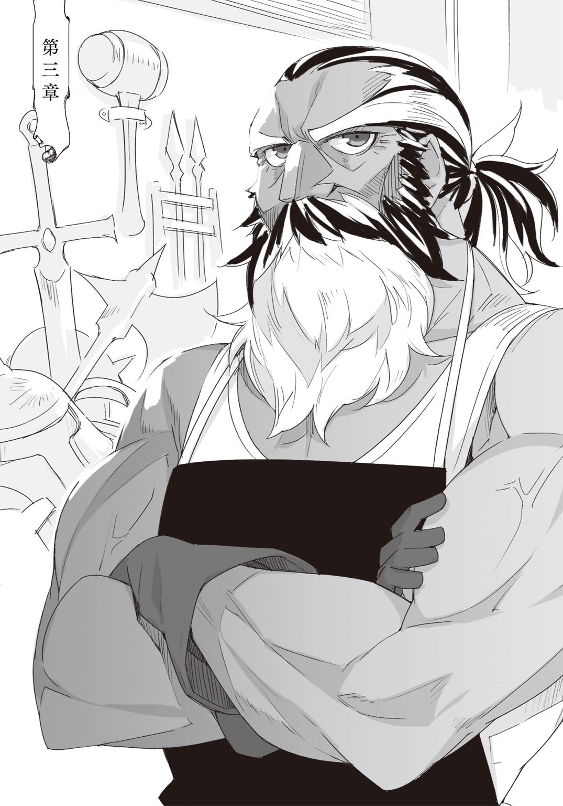
リリオンは陽の光の中を跳びはねるように歩く。ぴょんぴょんと躍る三つ編みが楽しいのか、ふわりと広がった裾が嬉しいのか。リリオンは道の先でくるりと回ってみせた。
何だかんだと部屋の中にずっと閉じ込められていたので、ちゃんとした外出は二日ぶりであるらしい。ランタンが結ってやった三つ編みは尻尾のようで、リリオンは己の尻尾を追いかけ回す犬のようにくるくるとはしゃいでいる。
たっぷりの食事。たっぷりの睡眠。そして陽の光を浴びたリリオンは狭い部屋の中から解放されて更に大きくなったような雰囲気があった。
空いっぱいに手を伸ばす少女の姿は銀を鈴なりに実らせた花木を思わせる。
「ねえランタン、はやくはやく」
白い腕を振ってリリオンはランタンを呼んだ。
リリオンの脚は長く、その分だけランタンとの歩幅に差がある。そんなリリオンが早足になると、ランタンは駆け足にならなければ追いつけない。今にも走り出しそうなリリオンを宥めるのはなかなかに大変だ。
ランタンはリリオンの隣に並ぶと、少女が早足になりそうな気配を察する度に服を摑まえて動きを制する。ランタンがちょうどいい位置に垂れる三つ編みを、思わず引っ張ってしまった時などは、リリオンは目を潤ませてランタンを睨んだ。
陽の下に出ると白かと思っていた髪色が銀であることに気が付く。
白銀の髪は様々に色を変えた。影の中では象牙色のように深く、次第に色を濃くする夕日を浴びればその髪は桃色を帯びる。ならば月夜ならば紫銀か、それとも月の白金か。
ランタンは三つ編みをこっそりと指で弾く。
リリオンは背囊を背負っている。質素なチュニックとは不釣り合いの、身長に見合った大型の背囊はランタンが外套の下に隠しているものより一回り大きい。背囊はそれ自体が迷宮探索用のものであり、またその中身にはリリオンの生活用品もあったが、頑丈な戦闘靴や探索服などのランタンとお揃いのような品々が詰め込まれていた。
相応の重量がある筈なのだがランタンが大盤振る舞いしたので背囊は完璧に荷重を分散させて少女の肩には食い込まない。
「ランタン、次はどこ行くの？」
リリオンの笑顔が眩しくて、ランタンは思わず目を細めた。
だがそれは微笑ましいものを見たという笑みではなく、多分に疲労の混じった苦笑である。
人混みをあっちへこっちへと彷徨うリリオンを連れての買い物は、一人気ままないつもの買い出しの倍の労力を要して足らない。
「あとは武器と、寝具かな」
ランタンの部屋には一つしかベッドがない。一日二日ならばソファで座り寝をさせてもいいが、ずっとそれでは可哀相である。一回り肉付きのよくなったリリオンには一人掛けのソファは窮屈だろうし、身体が資本の探索者にとって睡眠の質は死活問題である。
ベッドは無理だろうから、床敷きの寝具で我慢してもらおうか。ランタンが眉根を寄せて悩んでいると、リリオンはそんなランタンに目尻をぽっと赤く色づかせた。
「武器っ、いいのっ!?」
「わっ、何が？」
リリオンは抱きつくようにランタンの腕を取り耳元で叫んだ。ランタンは痺れる鼓膜と少女の体温に目をぱちくりさせて驚いている。
「急に、もう」
「だって、運び屋は武器持たないのよ」
呆然とするような声音に、ランタンは思わず笑った。
運び屋は武器を持たない。正確には自刃用の刃物しか持たない、が正解であるが、ランタンはあえてリリオンの言葉を否定はしなかった。運び屋が武器を使用するのは玉砕覚悟か、魔物によって与えられる残酷な結末に抗い、自らに決着を付ける時だけだ。
「探索者になるんでしょ？」
リリオンはあの夜、探索者になりたい、とそう言った。そしてランタンは。
「僕は単独探索者だから運び屋は要らない、だからリリオンは――っ！」
言葉の途中でリリオンは、ランタンを瘦せた胸の中に引き寄せてぎゅっと抱きしめた。
ランタンの顔をリリオンの心臓の鼓動が叩く。薄く、けれど柔らかな胸をあっさりと貫くその音色は、リリオンの興奮がそのまま響いて、まるで歓喜を歌うようである。リリオンはランタンの髪に顔を埋めて、犬のように何度も頰を擦りつけた。
「ええい、もう離れろ」
ランタンは驚きもしたが、流石に微笑ましく思い少女の頭を優しく撫でてやる。だがやがて本物の犬のように顔を舐めだしそうな程にリリオンの興奮は止まらず、ランタンは慌てて少女の顔を押し退けて引き剝がす。リリオンは一瞬だけ不満そうな表情を作ったが、ぼさぼさになったランタンの髪に気が付くと、慌ててその髪を撫でつけた。
「あう、あの、武器......」
「買ってあげるから。いいから行くよ、ほら」
ランタンは頭を撫でる手を邪魔くさそうにどけて、その手を繫いでリリオンを引っ張った。
「リリオンは、何か経験はある？」
「......剣」
リリオンは少しだけ寂しそうな表情を作り、おずおずと言葉を続けた。
「少しだけど」
その囁きには僅かばかりの恥じらいがあるような気がした。
探索者を目指していてちゃんとした経験がないことを恥じているのだろうか。けれど探索者の多くは自己流戦闘術の創始者ばかりだから気にすることではない。
ランタンは少しだけ心臓が早くなるのを感じた。踏み込んでいいのだろうか、と思う。自分が過去を語ることを好まないせいもあり、もう一歩が踏み込めない。何気ない話題が急に重たくなりそうな気がして、ランタンは尻込みをした。言葉を慎重に選び、声が僅かに強張った。
「剣、か。どんなのを使っていたの？」
「これぐらいの、すごい重い剣だったわ。えいって一回振るだけで、指がじんじんしちゃって。両手で持ってね、こう」
リリオンはランタンと手を繫いだまま、両手を広げて剣の大きさを示してみせた。その記憶がどれ程正確かはわからないが、刃渡りは一メートル強。片手用長剣よりは長く、両手用大剣にしては短い。ランタンの頰が引きつったのは、情報の曖昧さのせいではない。
「でも最後には、ちゃんと片手で振れるようになったのよ。......それは、なくしちゃったけど」
今よりももっと幼い頃に、それを片手で。年齢だけを思えば俄には信じがたい。
けれどこの世界では、それがまかり通るのも事実である。
ランタンはそれを己の身体で実感している。そっと腰の戦鎚に触れた。
同年代に比べても小さな手。決して肉付きの良いとは言えない細腕。ランタンの腰に下がる戦鎚は、重量にして五キロを超え、その大半は鎚頭にある。しかし先端に重心の寄った戦鎚をランタンは自在に扱うことができる。
そして武器屋には、この戦鎚など比べるべくもない超大超重の武器が飾られていたりもするのである。それも客寄せの飾りではなく、実用品として。
リリオンもそんな世界に生きる一人なのだ。
「ねえランタンの、その鎚はどこで買ったの？」
「これは、工房で作ってもらった特注品だよ」
ランタンは腰に下げる愛用の戦鎚を撫でる。その視線は少なからず誇らしげだった。
装飾も何もない戦鎚だが、折れず曲がらずの靭やかな柄と、何もかもを貫く鶴嘴と、鱗殺しと呼ばれる弧を描く打撃面。そしてランタンの爆発能力の行使に耐えることができる堅牢な造りを実現するためにかなりの出費を強いられたものである。
だがそれは命の値段と言い換えてよかった。迷宮探索をする際、この戦鎚を握り締めてどれ程の死地を踏み越えただろうか。
「まあ、これはちょっとお高いよ」
リリオンの命を預ける相棒を探しに行くとはいえ、この戦鎚と同程度のものとなると流石のランタンも気軽に出せる金額ではなくなる。
ランタンはリリオンにある程度の物を見繕うつもりではいたが、そもそも駆け出しの探索者の多くは倉庫の片隅から引っ張り出したなまくらや、武具店に十把一絡げに売られている大量生産品で済ませるものだ。あまり甘やかすのも成長を妨げる要因になる。ランタンはどこかで聞いた噂を思い出し、きっとそれは安物に納得をするための口実なのだと思う。
「だけど、話を聞くのはいいかもしれないね」
「え？」
「これを作ってくれた職人さんにさ。向こうは専門家だし、これの整備のついでに助言を貰いにね。どう？」
「うん、......ちょっと聞いてみたい、かも」
「よし、じゃあ通りを抜けるよ」
ランタンが頷くと、リリオンは追いていかれまいとして絡めた指の力を強めた。
目抜き通りを行き交う人の往来は、そこを抜けようと思うと濁流のような無秩序さを剝き出しにする。自らも濁流の一員である時はただ流されるばかりで気付きもしないが、いざ抜けようとすると人の流れは歩みに絡みつき、雑踏の中に引き摺り込もうと牙を剝く。
「おいで、遠回りだけど、こっちの方が早い」
ランタンはするりするりと人混みの中から抜け出して、リリオンを流れから強引に引き摺り出した。リリオンは繫いだ手を離したかと思うとランタンの腕にぎゅっとしがみついた。
建物と建物の間隔は狭く、それは猫の通り道のようである。リリオンは空の狭さゆえの薄暗さや、目抜き通りの喧噪が幻だったような静けさに満たされた細道を怖がったのか、ランタンから離れようとはしなかった。
小軀と瘦軀。腕にしがみつき身を寄せて、二人の脚が絡まり縺れそうになる。だがランタンは、少し道幅が開けてもリリオンに離れるようにとは言わなかった。
それは腕に押しつけられる柔らかな感触や、リリオンの温かさに絆されたからではない。
下街と比べればその治安に天と地の差がある上街であったが、薄暗い裏通りには人混みに嫌気が差して道を逸れたり、迷い込んだりする人々を獲物にしている者たちがいる。
三人の男たちが通路を塞いでいて、ランタンは喉の奥で小さく笑った。先日の男たちも三人組であった。それが昨今の流行なのだろうか。
暢気なランタンとは違い、リリオンは少し怯えていた。その震えを隠すようにランタンにしがみつく力をいっそう強めるが、それはより強くランタンへ怯えの感情を伝えるだけだった。
リリオンはこの三人の男たちに、先日の男たちを重ね合わせているのかもしれない。
「迷宮の魔物は、もっと怖いよ――」
「わたし、怖くないよ」
視線は男たちに向けたままにランタンがこそりと呟いて、抱きつく腕を放すように促した。
リリオンは口で強がってはいたが、腕を放すまでに時間を要し、それからランタンの小さな背中に隠れた。
ランタンが男たちを見ているように、男たちもランタンたちを見ていた。
値踏みする視線は、確かに先日を思い出させる。いいカモを見つけた、という下卑た視線である。昨日の今日では会話によって揉め事を回避する気も起きない。
だが下街には下街の流儀があるように、裏通りには裏通りの流儀がある。
それは上下をはっきりさせることだ。できるだけ簡潔に、穏便に、素早く、容赦なく。
「――魔物は急に襲ってくるから、ねっ」
魔物は男たちのように舌舐めずりなどしない。
ランタンは一足飛びに間合いを詰めると、真ん中にいた男の腹に有無を言わさずに前蹴りを叩き込んだ。爪先を向ければ文字通りに鳩尾をぶち抜いていたであろうその蹴りは、手加減として靴底で男の身体を押し飛ばしただけである。
男はくの字に折れ曲がり反吐を吐きながら人形のように吹き飛んで、地面を三度転がってようやく止まった。男はぴくりとも動かないが死んではいない。殺さないことも流儀の一つだ。
残された男たちはにやついた顔もそのままに、反吐に沈んだ男を視線で追って言葉もない。
ランタンが突き出した蹴り脚を下ろし踵を踏み鳴らすと、男たちは弾かれたようにランタンを振り返った。その目には理解の追いつかない呆然とした恐怖が滲んでいる。
「選べ。向かってくるか、道を開けるか。三秒待つ」
ランタンが人差し指、中指と順に立てると、その指が目に突っ込まれるんじゃないかと恐れるように目を瞑り、二人は横の壁と一体となった。嵐が過ぎ去るのを待つように息を殺した。
素直で大変よろしい。
「行くよ」
ランタンは残りの三指を広げた手をリリオンに向けて、少女がその手を握ると手を引いて二人の男の間を通り過ぎた。
「さっきの見てた？」
「うん、ランタンってすごいね。あんな風に優しく蹴って」
優しく蹴った結果を二人はぴょんと跨いで、その先に歩みを進める。
「普通は見えないんだよ」
ランタンが言うとリリオンは小さく首を傾げた。ランタンが振り返ると、リリオンは首を傾げたままに視線の先を追いかけた。
「だからあんなことになってる」
反吐に塗れた男は、二人の男たちに介抱されている。乱暴に頰を叩かれ耳元で大声で呼びかけられて、結局、意識が戻らず肩に背負われて運ばれていく。暫くは満足に食事もできないだろう。だが息の根が止まるよりはずっとましだ。男たちにとっても、ランタンにとっても。
治外法権も甚だしい下街とは違い、上街で人死にを出せば事件になる。だが、それでもやはりあの程度の暴力沙汰は特に咎めのない日常の一幕である。
幸運なことに裏通りではこれ以上の面倒事には出くわさなかった。
道幅も広がり裏通りから生活道路に抜けて、目抜き通りの喧噪がまた近付いてくる。それに合流することなく、通りの縁を沿うように中区を抜けて、西区へと足を進めた。
工業区域、職人街である。
職人街へ近付くにつれて人々の喧噪は、様々な物を作る音へと変わっていく。
低く断続的に響く機械音や、一定の拍子を刻む機織りの音。金属を加工する鎚と金床の重奏に、材木を切り出す鋸の小気味良い嘶き。荷馬車の足音、商品の重みに軋む車輪。
親方職人の異国語のような響きの指示に、野太い返事が木霊する。打ち鳴らしたような怒鳴り声があったかと思うと、破裂するような陽気な笑い声もまた響く。それらがまるで楽団演奏のような一種の秩序をもって奏でられていた。
職人街の通りは目抜き通りと遜色ない程道幅が広く、人混みがないためにより広々として見える。そこにはかっぽかっぽと荷馬車が行き交っていて、その後を付ける馬糞拾いの孤児や買い付けの商人、ランタンのような探索者の姿もちらほらと散見する。目抜き通りのように目的なく買い物をする人々の姿はなく、ここには目的ある人々しかいない。
通りの左右に連なる工房は、この街で売られている何もかもを製造している。
武具工房の集まる一画では、炎の熱気が立ちこめている。脳髄に叩き込まれるような金属音がそこかしこで鳴り響いていた。熱に乗って響く音が空気に溶け込んでいて、呼吸をする度に喉が焼けるようだ。
リリオンは三つ編みを鎖骨を通して胸の前に垂らした。
目抜き通りでは気になる物があれば右へ左へとふらふらしていたが、職人街の熱気には怖じけずいているようだった。鍛冶職人たちは誰も彼もが油染みて黒く汚れ、炉の熱で炙られた皮膚が赤く、金槌を振りかぶる背中の筋肉が見事に盛り上がり、顔には男臭い髭を蓄えていた。
控えめに言っても鬼のようである。
「リリオン、ここだよ」
ランタンは言って、だが閉ざされた入り口に困ったように眉根を寄せた。扉には鍵がかかっていて、工房の方も奇妙に静まりかえっていた。休日である。だがランタンは探索者としての知覚能力を存分に発揮し、人の気配を察知すると勝手知ったるというように店の裏へと回った。
鎧戸を開け放った石造りの工房は、煤や炎によって重い灰色に汚れている。
そこに金属音は一つもなく、炉もただ暗闇を囲っているだけで、一瞬にして別世界に足を踏み入れたような静寂だけがあった。
静寂の中で一人の老人の顔が煙草の火に照らされた。
「こんにちは、お邪魔していいですか？」
「あ？ おう、坊主か」
木の椅子に腰を降ろして、ぼんやりと眠たげにしていた老人はランタンが声を掛けると火の着いたままの煙草を握り潰し、もじゃもじゃの髭に覆われた顔を向ける。太く嗄れた声を紫煙とともに吐き出して、のっそりと椅子から立ち上がった。静寂に椅子の軋みが混じる。
この老人が工房の主、グラン・グランである。背が低く見えるのはひどい蟹股のせいで、脇の締まらない筋肉が老人を何歳も若く見せる。だが首の後ろでくるんと縛った癖のある赤茶の髪は、褪せたように色を薄くして幾筋も白いものが混じっていた。
「お久しぶりです。今日はお休みでしたか」
「まあな、たまには人も炉も休ませてやらんと」
ランタンが申し訳なさそうに頭を下げると、重たげに片手を持ち上げ、そして掌をランタンに差し出した。煙草の火を握り消して何ともない熟練職人の分厚い掌である。ランタンは腰から戦鎚を外すとそれを生みの親へと渡した。
戦鎚を受け取ると濃く太い眉の下で、黒目がちの目が鋭く細められた。つつ、と柄を撫で歪みを確かめ、太い指先が鎚頭の欠けを調べている。ふむ、と煙臭い頷きが一つ。
「よく使ってあるな。だが、まだ整備はいらんだろう」
そう言ってグランはランタンへ戦鎚を返し、その視線をリリオンの方へと向けた。厚い目蓋の下で瞳がぎょろりと動き、リリオンの姿を上から下まで品定めするように見回した。
「......また、何とも珍しいもんを連れてるな」
その声には疲れにも似た響きがあった。リリオンはびくりとしてランタンの背に隠れるように小さくなる。ランタンはそんなリリオンを前に引っ張り出して、軽く腰を叩いて勢いづける。
「ほら、挨拶して」
「り、リリオン、です。はじめまして」
「ああ、俺はグランだ」
リリオンは喉に詰まった飴を吐き出すような辿々しさで、殆ど囁くような声で名乗った。
いつもなら熱気の溢れる工房には冷気とも言える静けさがあり、髭面の厳めしい老人は認めた者には自らの作り出した武具を、そうでない者には金槌の一撃を振り下ろす気難しい鍛冶の神が顕現したようである。
怯えるリリオンにグランは髭に隠された口元に苦笑を浮かべた。
「で、今日は何の用だよ。祝儀の催促か？」
ランタンは常に一人で工房を訪れる。そんな少年が少女を伴ってきたのだから、これをからかわない手はない。グランが厳めしい顔ながらも瞳に茶目っ気を滲ませて、ランタンは呆れた溜め息を吐き出した。
「武具工房に求めるものはただ一つだけです」
「それもそうだな。中に行くぞ。祝儀は出さんが茶ぐらいは出してやる」
グランは手招いて歩き出し、ランタンたちはグランの背を小鴨のように追いかけた。工房を抜けて商談用の応接室に行くのかと思われたが、通されたのは生活感溢れる居間である。休日前に弟子たちが掃除をしたような痕跡があるものの、テーブルの上には昼食かそれとも朝食か、あるいは前夜の夕食の食器が出しっ放しでいかにも男やもめといった感じだった。
「まあ適当に座んな」
言われたがランタンは座らずテーブルの上に散らばる食器を手早く纏めて流しへ放り込み、台布巾を見つけると清潔そうな水に浸してきつく絞り、食べこぼしを拭き包み、それも流しへ。そして三つの湯飲みをざっと洗い、呆れた視線のグランの向かいに座る。
リリオンに隣へ座るようにと椅子を引いた。
グランは卓上の小型コンロに燐寸で火を入れて、その上に薬缶を載せた。火を消した燐寸を床に捨てて踏み付けて、目分量でどさりと茶葉をぶち込んだ。
「武器はまあいいんだがよ。坊主、その嬢ちゃんはどうしたんだよ？」
グランは厚い胸板が窮屈そうに腕を組んで、太く吐き出した息が髭を揺らす。
ランタンはふと考えを巡らせてみた。どうしたんだと、問いかけを突き付けられると、リリオンとの関係を表すこれといった言葉が思い浮かばなかった。共に探索をする仲間であるのだろうが、何かしっくりこないし、かといって友人というわけでもない。保護した子供、と言うのが最も適しているだろうか。いや、しかし。
「嬢ちゃんよ。嬢ちゃんは、巨人族だろ」
頭の中で言葉をこねくり回していたランタンは、グランの言葉の真意を理解できない。
巨人族。そんな種族もいるんだな、と思うだけである。
だが隣でリリオンが罅の入った氷のような音を立てた。それは強く握られた拳が軋む音だ。
白い顔を青くして、グランの言葉を肯定も否定もせずに、僅かに顎を引いて固まっている。
ランタンはそんなリリオンの顔を見て、視線をグランへと移した。
「坊主、知ってるか？」
「いいえ」
ランタンは首を横に振った。リリオンが何族かも知らなければ、巨人族が何であるかも知らなかった。人族に他の生物が混じったような亜人族たちとはまた別の区分なのだろうか。
しかしそれにしてもリリオンは子供にしては大きいが、いくら何でも巨人というのは大げさだと思う。それもただリリオンが幼体であるためなのだろうか。それともこの世界の巨人は、それなりの大きさなのかもしれない。
「そうか。だからこうして連れてきたんだろう」
「......どういうことですか。何か巨人であることに問題でも？」
グランは顎髭を揉みしだき、たっぷり煮出した茶を湯飲みにざぶざぶと注いだ。三人の誰もそれに手を付けず、黒い瞳がちらりとリリオンを見た。グランの瞳に潜む感情をランタンは読み取ることができなかった。けれど、それは悪いものではないと思う。
「古い種族だ。迷宮が生まれるより以前に、世界を支配していた。人も亜人も何もかもと争って、その全てに打ち勝った。力によって全てを支配していたんだ。神話の時代の話だが、事実でもある。迷宮が生まれ人々が魔精によって力を得るにつれて衰退したがな。今は数も減らして極北にある巨人族の国に封じられて、殆ど人目に付くことはない」
「ふうん」
ランタンは興味なさそうに小さく鼻を鳴らした。
グランの言葉はまだ続きそうだったが、その先の言葉は想像できる。
力によって押さえつけられてきた被支配側の種族は、自分たちを支配していた巨人族に対して決して好ましい感情を持ってはいないだろう。そしてその世界を支配していた巨人族が衰退すれば、その先に待っているのは立場の逆転した差別だけである。
だが起源をこの世界に持たないランタンにとっては、人々と巨人族の確執など何も関係のない話であった。話を聞く限り支配期間は相当に古い話である。神話の時代がいつか知らないが、それをまだ引き摺っている人間がいるのだろう。その時代を過ごしたわけでもなかろうに、何とも暇なことだ。
ランタンはあからさまな溜め息を吐いて、ふうふうとお茶を冷まし唇を湿らした。
グランがわざわざこの話をしたのは何故だろうか。
例えばグランが偏狭な巨人族差別主義者でありリリオンを糾弾しランタンの目を覚まさせるために、という線はまるっきりない。もしそうならグランは手ずから茶などを入れて卓を囲みはしないだろうし、そもそもそんな面倒くさい性格をしていないことを知っていた。
この厳めしい老職人は弟子たちにはたいそう厳しいのだが、ランタンにはなんだかんだと甘いのである。
「ランタン」
一瞬、名を呼ばれたとは気付けなかった。
ゆっくりと紙を裂くような、掠れた声でリリオンが名を呼んだ。
「だまってて、ごめんなさい。わたしには巨人の血が、流れています」
どのように言葉を返していいか、ランタンにはわからない。ランタンはそんなことを気にもしなかったし、そもそもそれを言う義務もなければ、自らの出生を謝るなどランタンの常識の埒外である。ぎくりと固まったランタンが言葉を探し迷い、間を埋めるようにグランが聞いた。
「純血統巨人族じゃないのか？」
グランの言葉にリリオンは小さく頷く。
「ママが半巨人族で、お父さんは人族だってママが......」
リリオンはすんと鼻を鳴らして顎を持ち上げた。そこに母親の大きさを幻視しているのか。もしかしたら涙を堪えているのかもしれない。微かに震える喉に、ランタンは思う。
四分の一の血統。それは巨人族ではなく人族だろう、とそう思った。だがこの世界ではどうやらそうではないようだ。ランタンがどれ程に無関心であろうとも、それこそこの世界の差別問題とは何も関係のない話なのである。
「ランタン......」
再び名を呟かれてはっとした。
この子は、なんて切ない声を出すのだろう。
「どうでもいい話だよ」
リリオンの口を塞ぐように、ランタンは珍しく声を張って言葉を吐き出した。己の名に続けて吐き出される言葉は少女の口から絶対に言わせてはいけないという確信があった。口から音となって零れ落ちた瞬間に、それは何よりも残酷にリリオンの心を傷つけるだろう、と。
リリオンの顔色は優れない。表情もぎこちない。テーブルの下で指先が落ちつきなく動いていて、ランタンが手を伸ばしてそれに触れると、やはり氷のように冷たい。
ランタンは抱きしめるように、強くその手を握った。
グランが言いたいのはつまり被差別者を連れて歩くことの意味である。リリオンは自分の存在が掛ける迷惑を先回りしてランタンに謝ろうとした。
ランタンから見れば身長の高い少女でしかないが、グランは一目見て少女が巨人族であることを見抜いていた。けれど一通り街を連れて歩いて、少女由来の問題事は起こっていない。チンピラに絡まれたのはむしろ、いかにもちょっかいをかけやすいランタンの外見のせいである。
やはりそれ程気にしなくてもいい。
だが人族と巨人族にはその身長差以外で、見る人が見ればわかる明確な差があるのだ。そしてそれに気付く者が、グランと同じだとは限らないのだ。
グランはランタンの世間知らずさを知っているからこそ、わざわざ忠告をしてくれた。そしてリリオンに告白の機会を与えた。きっと少女にはそれを隠す気などなく、一時浮かれていて、そんなことはすっかり忘れていたのだと思う。
出会いがそうさせたのならば。
ランタンは頰を淡く緩め、そして厳めしさの奥に甘さを隠しているグランに無言の謝意を伝える。聞こえる空咳はきっと照れ隠しである。
「ああ悪い、つまんねえ話だったな」
「ええ、それよりも武器の話をしましょう」
ね、とランタンがリリオンに顔を向けて笑いかけると、リリオンはぎゅっと手を握り返して、小さく頷いた。
◇◇◇
風切り音は軽薄な口笛に似ている。
ひゅるん、と振り下ろした鋒に音が纏わり付いていた。
グランがまずリリオンに渡した片手用直剣は鉄製の簡素な造りのものだった。刃渡りは八〇センチに足りず、片刃で背に贅肉のような厚みがあり、鋒は切り落として角となっているので刺突に向かない。鍔はなく、削り出しの金属柄に革が巻き付けてあるだけだ。
リリオンは右肩担ぎの構えから、踏み込みと同時に剣を振り下ろす。その一撃はなかなか様になっていて、続く逆袈裟からの横薙ぎも淀みない。素振りの度にひゅるひゅると風が鳴く。
「どう？」
感触を尋ねるとリリオンは残心もへったくれもなく剣を降ろし、躊躇いがちに首を振った。
「少し、軽いわ」
リリオンがそう言うとグランが髭の中で低く笑い、ランタンを横目に見る。
「軽いってよ」
その一言にランタンは不満気に鼻を鳴らす。
ランタンは今でこそ戦鎚を軽々と振り回せるが、過去のランタンはこの鉄剣を振り下ろし床を叩いた。この剣の鋒がないのは、その名残である。ランタンは当時の手の痺れと、グランの重い溜め息を思い出した。
「いちいち言わなくていいですよ。もう」
しかし、その鉄剣をリリオンは軽々と振り回した。やや身体が泳ぐのは身体が未だに万全でないためか、それとも鉄剣があまりにも軽すぎるからか。きっとその両方なのだろう。そして、それでもそれなりに見えるあたり、少女の能力の高さが窺える。
「ちょっと貸して」
ランタンはリリオンから鉄剣を受け取ると、洒落臭く手首を回し、連続して三度空を斬った。どうだと言わんばかりにグランへと振り返るが、老職人は一瞥もせず次の剣を用意していた。ランタンは素っ気ない横顔を睨む。わっと目を丸くするリリオンだけが救いである。
「次はこいつだな」
次の剣も片刃である。鋒に向かって幅広になり、造りは粗野で鉈を思わせる。だが刃渡りは先程の鉄剣と同じ。重量はおそらく倍に近い。リリオンは再び右肩担ぎの一刀から始めた。
「えいっ！」
声は先程よりも刀身が重いためだろうか。先太りした刀身の重心は先端に寄り、風切り音が先程よりもかなり重い。だが軽々と扱っている。ああこれは。軸足が滑るのは身体ではなく靴のせいだ。購入した戦闘靴を、迷宮探索で降ろそうなどという暢気な考えが仇になった。
けれどグランはリリオンの素振りを見て唸っている。
「どうだ嬢ちゃん。......今度は遠慮はいらんぞ」
グランが腕を組みながら言うと、リリオンは迷うような素振りでランタンを振り返る。ランタンはその視線を更に壁際に立てかけられた無数の剣へと促した。
グランが用意した試し振り用の剣である。刃渡りも重さも形状も様々な剣を用意している。一つ一つを吟味するには時間がかかりすぎる程の。
「遠慮しなくていいよ。時間は有限だしね」
「うん。あの、だいぶ、......軽いです」
「だろうな」
グランは呆れつつも、あっさりと頷く。リリオンの剣が振れすぎているのは一目瞭然だった。
次の剣は用意した剣の中で最も刃渡りがあり、ゆえに最も重たい剣である。刃渡りは一メートルを超え、真っ直ぐで野暮ったい造りをしていた。両刃で厚みがある。切れ味はおまけ程度で、殆ど棍と変わらないのではないかと思う。
柄が短く片手用長剣であるのだが、どうにも不格好だ。重心を整えるためか、鍔と柄頭に後付けの飾りがあり、きっとそのせいだろう。
「てえいっ！」
裂帛が甲高く、ランタンは少し気が緩んだ。
風切り音は今までと違う。今までが空気をかき混ぜていただけならば、間違いなくこの素振りは空気を斬った。鋒にまで充分な速度が乗って、斬撃は鋭さとともに重さを感じさせる。
このまま迷宮に放り込んでもそこそこの活躍をしそうだ。
ランタンは予想以上の身のこなしに、緩んだ気を引き締める。
迷宮特区や探索者ギルド、あるいは道ですれ違う駆け出しの探索者たち。どこにそんな金があるのか揃いの装備に身を包んで徒党を組む彼らよりも、安物のチュニックに身を包み、襤褸靴を履いて不格好な剣を振る少女の方がはっきりと輝いて見える。
ランタンもグランも、一心に素振りをするリリオンから目が離せなかった。
リリオンの身体は万全ではない。身体にいくらか肉が戻ったとはいえ、まだ瘦せすぎで骨張っていることに変わりはない。どこにこの長剣を振るう筋肉があるのかと、そう思う。
リリオンの剣舞は見事である。
だがリリオンの顔は晴れなかった。今はまだランタンよりも細い腕をしているというのに、どうやらその剣がまだ軽いらしい。その身に流れる巨人族の血に因るものか、黄金のような身体能力だ。きっとその黄金は迷宮を行けば、さらなる輝きを見せるだろう。
リリオンは真一文字の水平斬りで素振りを終えた。振り切った姿の残心は、鼻から息を吐いて霧散する。ランタンはリリオンの可能性に頰を緩めて、しかしグランは深く眉間に皺を寄せて難しい顔をしている。リリオンから剣を返してもらって、やはり重々しい溜め息を一つ。
「ここに並んでんのは、うちの弟子どもが打った出来損ないだ。なのになあ」
グランは困り顔のリリオンと、ランタンの顔を続けざまに見た。
「ったくどうして探索者って奴は。下手なもんでも振れちまうから若い職人が育たねえんだよ」
グランの目にも、リリオンの身体能力はやはり探索者並と映ったようだ。それは老職人の荒々しい賛辞であったが、リリオンはおろおろとしてランタンに縋るような視線を向けた。
ランタンはリリオンに微笑みかけて、安心させるように腕を叩いた。
「リリオンのこと、探索者だって」
「えっ、わっ、わたし、まだ」
ランタンは微笑みを苦笑に変えて、リリオンの尻を引っぱたいた。身体を動かしたせいだろうか、尻にはじんとした熱がある。
「ありがとうございますっ」
吃驚して頭を下げる少女をグランは見た。
「おう。だが、これもまだ軽いんだろう？」
「......はい」
グランは苦笑して、ぐるりと肩を回した。ばきばきと首も鳴らし、リリオンがまた驚く。
「坊主も嬢ちゃんも、そこのやつ持ってきてくれ。地下の倉庫行くぞ。その方が早そうだ」
グランは長剣を一振り肩に担ぐだけで、残りを若者二人に任せてずんずんと歩いて行った。
ランタンとリリオンは顔を見合わせると、壁に並べられた剣を手分けして両脇に抱えてその後を追った。ガチャガチャとした賑やかさが工房に響く。
「倉庫だって」
「僕も初めてだよ」
追った先にグランの姿はなく、地下へと続く緩やかな階段があった。
階段は暗く、その先は魔道光源に照らされて金属の冷たい匂いがした。倉庫は乾燥していて、けれど澱んだ空気が僅かに重い。広い土間には雑多な武具がぐっちゃぐちゃにしまわれていた。あるいはぶち込まれている、と言うのが適当かもしれない。
武具は壁際に寄せられていて、土間の真ん中は丸く土俵のようにがらんとしている。
「おう、それはその辺に立てかけといてくれ」
几帳面なランタンもこれを整理したいと思えど、しようとは思わない。ランタンはどこに剣を立てかけても雪崩が起きそうだったので、床にそっと降ろした。
「ほら、リリオンのも」
「うん、ありがとう」
ここにある武器はただの在庫ではないだろう。グラン武具工房の仕事ぶりをランタンはよく知っていて、ここにあるものはどれも造りが雑であったり、奇抜であったりした。
こういった武具を装備する探索者を時折見かける。これらも若手職人の練習作だ。
けれど練習作とは言え鍛造品。大量生産の鋳造品よりも、もっとも当たり外れはあるのだが、いくらか優れた掘り出し物として武器屋の軒先に並んでいたりもするのである。ここにあるのはグラン武具工房で働く職人の過去の集積であった。
「一から鍛えてやってもいいんだが、時間は有限なんだろ？」
次回の探索までに間に合わせるには、一から剣を造ってもらう余裕はない。
グランは何でもお見通しのようで、熟達の職人の目が二人を見る。がらくたのごとき武具を背に佇む老人は妙な迫力があった。魔道光源の光に髪が赤く染まり、老人の顔貌は炎の中にあるようだ。炎と鉄を支配する老職人は、好きに選べ、と一言言った。
二人が何を選ぶのか、それを楽しむように。
リリオンはそんなグランにガチガチに緊張していて、ランタンはむしろ気楽である。剣を選ぶことよりも、積み重なったそれを引き抜くことの方が神経を使う。
リリオンはおろおろとしてランタンの背中に引っ付いて、突き出された柄々に視線を彷徨わせるが、手が伸びることはない。ランタンはグランの真意などお構いなしに老職人に振り返る。
「ねえグランさん。重いのってどれですか？」
「おっ前なあ......」
嘆息。呆れの視線が一つの柄に移る。ランタンはその柄へと近付く。
「ま、待って」
「ほら、リリオン。これなんかどう？ 押さえてるから、抜いてみなよ」
「あう、うん」
そっと引き抜く剣に鞘はない。壁に突き刺さっていたのかと思う程の刃渡りは一・五メートル程でランタンの身長とほぼ同じである。両刃でやはり造りが厚いのは、薄くする技量がなかったためだろうか。それでいてべたっとした幅広で、素直に真っ直ぐな刀身は、けれど先端だけがひねくれるように反っていた。
「変なの」
鋒を見てリリオンが呟くが、握り心地は悪くないようでぐっと握って頰が緩んだ。
倉庫の天井は高い。横方向にも開けた空間がある。
ランタンはグランに視線を向けて、老職人は意を得たりと頷いた。
「よし、リリオン。靴替えて。僕と手合わせしよう。その方がわかりやすいでしょ？」
「え、でも、ランタン......」
戸惑うリリオンにランタンは有無を言わせなかった。その手から大剣を奪い取り、ほらほら早くと少女を急かす。リリオンは急いで背囊から戦闘靴を取り出して靴を履き替え、ランタンは視線を彷徨わせて武具の中から丁度良い長さの革紐を見つけ出した。
「ちょっと屈んで、腕開いて」
ひらりと腕に纏わり付く袖を襷掛けにしてやって、ランタンは少女の肩を叩く。
「さあ、やろうか」
ランタンはリリオンに剣を返し、距離を空けると戦鎚の留め紐を解く。
戦鎚を握り、手首を回す。戦鎚はまるで腕の延長である。
爪先を金属で補強した黒革の戦闘靴は新品で足にはまだ馴染んでいないかもしれないが、襤褸靴と比べれば天と地の差。ランタンの靴と同様のもので、臑の半ばまでを覆い足回りを固めてくれる。リリオンは剣を構えて、鋒をランタンに向けた。
迷いのある剣だ。鋒が風に煽られるようにふらふらとして定まらない。もしランタンを斬ってしまったら、などと考えているのだろう。鋒にも表情にもその躊躇いが透けて見えた。
当たり前の心配であるし、その優しさは美徳である。
けれどランタンは意地悪く、それでいて拗ねるように口元を歪めた。
やはり容貌のせいだろうか。グランの髭が羨ましい。
「僕のことちょろいとか思ってる？」
「――ちがっ」
「斬れると思ってるから、どうしようか迷ってるんだ」
「ちがうよ！」
「じゃあ本気でおいで」
ランタンは無造作に鋒へ向かって突っ込んだ。流れるがままに戦鎚を脇に構えて、体勢は地を這うように低い。ランタンは今に振り上げるぞと、戦鎚を握る右腕をぴくりと。
反応は良い。
リリオンが反射的に大剣を右肩に担いで、跳ね返るような上段斬りにはやはり迷いが。ランタンは蛇行する斬り落としをするりと潜った。そして左の手でリリオンの肩をぽんと押した。
「あわっ」
「お、転ばなかったか。残念」
後ろに踏鞴を踏んだリリオンが転びそうになってどうにか持ち堪えて、前傾姿勢に。
ランタンの見え透いた挑発に怒ったわけではない。だが少しばかりやる気になってくれたようだ。ランタンはリリオンを追って、振り下ろされた大剣の鍔元に突き上げるような蹴りを入れ、振り抜いた蹴り脚の勢いに腰を切った。
旋転。跳ね上がった踵は牽制だったがリリオンは慌てて大きく仰け反る。ランタンは最後の仕上げとばかりに戦鎚を振るった。
当てはしない。だが出会ったときのように。
リリオンの鼻先を風が舐めるように振るった戦鎚は、しかし微風すらリリオンの顔に浴びせることはなかった。本能がそうさせたのかリリオンは弾け飛ぶように後退して、奥歯で恐れを嚙み殺した。リリオンはランタンに向かって突撃してきた。
刺突。ぼっと大気に穴が穿たれ、鋒が霞む程の速度で繰り出された突きは、しかし戦鎚の柄を滑り、逸らされた。だがリリオンは逸らされた鋒を力ずくで修正しようとする。前のめりに流れる身体を押さえつけて、ランタンを吹き飛ばす勢いで横に薙いだ。
「わっ」
純粋な驚き。ランタンは自ら後ろに飛んで後退し、追撃の振り下ろしを避けた。なんという力の強さ。実際に受けてみてあらためて思う。一呼吸を置く間もなく跳ね上がろうとする鋒を戦鎚で押さえ込み、動き出しを制されたリリオンは体勢を崩す。
ランタンは再び懐に飛び込んで、左手を拳に固めた。斜め下から突き上げるような肝臓打ちを繰り出して、リリオンはどうにか腕を出して拳を防いだ。
撫でるような、ただそっと置いただけの拳にリリオンは恐れていた表情をぽかんと惚けさせ、ランタンはその隙に少女の頰を撫でて汗を拭ってやると余裕綽々に距離を取った。
遠間から微笑み一つ。
本気を出せば裸拳であろうと腕ごと肋骨を砕き、肝臓だけとは言わず内臓を破裂させ、背骨を圧し折ることも可能である。
だが当たり前だがそんなことはしない。リリオンを乗せるためとはいえ、戦鎚の一撃は少しやり過ぎだったかもしれない。ランタンがくるりと戦鎚を回してみせると、リリオンはいじけたような、照れるような顔をして、結局は怒ったように頰を膨らませた。
「どうしたの？ 顔怖いよ。気楽にやろう、遊んであげるからさ」
ランタンは気取って指先でちょいと手招きをした。
リリオンの肩から力が抜けた。膨らませた頰をゆっくりと時間を掛けてへこませて、息を吐ききった瞬間に地面を蹴った。視線が真っ直ぐランタンを捉えている。
鋭く滑らか。斬り落としから始まって、逆袈裟、横払い。反撃の戦鎚を長身を折り曲げて潜り、斬り上げ。途中で止めて、刺突へと。剣撃はどれも必殺と呼んでいい一撃で、だというのに避けられても、どんどんと次へ繫がっていく。
恐ろしい程の膂力に物を言わせた戦い方だ。慣性の法則を力任せに引き千切っている。それはきっとリリオンが未熟なためか。あるいは、これでもまだ膂力が足りていないのかもしれない。なんとなくそんな気がした。
「おっと！」
余計な思考一つで首が落とされそうだった。リリオンの身のこなしは先程までとは段違いで、ランタンの実力を信用してくれているのはいいのだが、幾ら何でも遠慮がない。
リリオンの剣はがむしゃらに振り回しているだけのものではなかった。
ランタンは大振りの横薙ぎを誘い、それを躱す。斬り返しがくる前に懐に入り、剣の腹に掌打を浴びせた。急停止させようとしていた剣が再加速して、少女の身体を引き摺った。リリオンの腹部は捻れて無防備だ。
ランタンはその無防備な腹に、軽い膝蹴りを放った。しかし直撃は少女の左の掌に阻まれる。
リリオンはそのまま左腕を振り払って、ランタンを押し返した。
「うん」
やはり、予想通りだ。
ランタンは乾いた唇をちろりと舐めて、一転して攻め始めた。リリオンが体勢を立て直す間もなく間合いを詰めて、どうにか構えた鋒を軽く払う。
戦鎚はあくまでも牽制用。リリオンが焦って攻守を交代しようとするところを挫き、隙を生み出してはそこに徒手格闘を滑り込ませる。
「ひゃ、はぅ、やっ」
完全に後手に回ったリリオンはランタンの攻撃を必死で凌いでいる。
リリオンは剣を構える右ではなく、素手の左をランタンに差し出している。今もまたランタンの中段蹴りを左手で払った。剣でランタンを傷つけまいとする配慮ではなく、それは癖だ。
工房までの道すがらリリオンは言っていた。
どうにか剣を片手で扱えるようになった、と。つまり片手で剣を振るわなければならない理由が、左手を空ける理由があったのだ。例えば楯を装備するために。
「そう、れっ！」
戦鎚を突き出す。リリオンはやはり左の掌で受け止めて、払い除けるように逸らす。ランタンの右半身が開いて、そこに活路を見出したリリオンが遠慮無用の剣を振り下ろした。
「――はい、お終い」
「......え？」
ランタンは握手するような気軽さで、リリオンの右手を柄ごと握って振りを止めていた。
ぴくりとも動かない腕にリリオンはまるで理解が追いつかず、目をまん丸にしている。ランタンはそんなリリオンの掌から、そっと剣を抜き取った。柄に少女の体温が残っている。
ランタンは土間に剣を突き立てて、背囊から水筒を取り出して喉を潤し、リリオンへと。
「はあ、ふう、ふう、ありがとう......」
リリオンは思い出したように荒い呼吸を吐き出し、浴びるように水を飲んだ。ランタンは少女の身体から革紐の襷を解いてやり、少女は汗といっしょに濡れた唇を拭う。そしてそのまま裾をはためかせて扇ぎ、服の中に空気を入れている。
ランタンが、はしたないと注意しようとすると、リリオンはそれを察したのか裾から手を離し、己の掌をじっと見つめた。左手を閉じたり開いたりしている。
最後の戦鎚を受け止めた衝撃で痺れているのだろう。
「当たり前だよ」
ランタンは呆れを込めて呟いた。手加減としていたとはいえ、戦鎚は質量の塊である。速度が乗っていなくとも、ただゆるゆる動くだけでも充分な凶器であった。
そしてこれが魔物の一撃であるのならば当然、手加減などは望めない。
ランタンはリリオンの手を取って、表情を確かめながら手を揉んでやった。
「痛い？」
「ううん、大丈夫」
掌には花が咲くような赤さがあった。骨に罅が入るわけでもなく、痣になる程でもない。ただ少し熱を持っているだけだ。掌だけではない、左の前腕にも幾つか薄い紅斑が浮かび上がっている。肌の色が白いので桃色が赤に見える。ランタンの手足を受け止めた証だ。
その手段はどうであれ、実際にリリオンはよくやった。
厳めしい老職人は頰の緩みを誤魔化すようにして髭を揉んでいた。のしのしとリリオンに近付いてくると、どかんとその背中を叩いて少女を驚かせている。
「ひゃっ!?」
「用意すんのはむしろ楯の方だったな。いい動きだった、坊主の最初なんてそりゃもう酷――」
「グランさん！」
ランタンが睨むと、グランは肩を竦めて視線を武具の山へ移した。
「もう、――ねえ、あれがリリオンの戦い方？」
「......うん」
リリオンはおずおずと頷く。
左手に楯を、右手に剣を。体勢は左前で楯を突き出し、剣は右肩担ぎ。足は地面にベタ付けで、それでいて重心はやや前に置く。相手の攻撃は受け止めるよりは受け流し、あるいは楯を打ち付けるように押し返す攻勢防御。そうして体勢を崩したところに必殺の一撃を叩き込み、外したとしてもその馬鹿げた身体能力によって次撃が飛ぶ。
ランタンはリリオンを軽戦士かと推測していたのだが、少女の類希なる反応速度は動き回るためのものではなく、相手の攻撃をぎりぎりまで引きつけて見極めるためのものらしい。
「ああ、もう」
ランタンはまだ息の荒く頰を上気させているリリオンの横顔を眺めた。
「おい坊主、嬢ちゃんに見惚れるのもいいが楯探せ」
「――見惚れていません」
「しかし嬢ちゃんの戦い方だと大楯がいいだろうが重戦士はあんまり流行じゃねえんだよな」
「流行がありますか」
「ああ、ある。重戦士は昔っからあんまり人気ないな。重いし、暑いし、高えしな。四〇年ぐらい前から坊主みたいに馬鹿みたいな軽量装備が流行って、まあそんときゃ死者が増えるだけですぐに廃れたが。それでもまだ軽めのが流行ってるな」
「僕のこと流行遅れだって言ってます？」
「言ってねえよ」
ランタンの装備は探索者とは思えない程の軽装である。暗色の戦闘服に防刃耐魔の外套を羽織るだけで、鎧の一つも身に付けてはいない。ランタンが侮られる要因の一つでもある。
「ねえ、あれは？」
くだを巻く二人に息を整えたリリオンが山の一角に指を差した。
「お、いいのがあったか？ やっぱり自分の武器は自分で選ぶと愛着も違うからなあ。おら、ランタン持ち上げろ」
「人使い荒いなあ、僕お客なのに」
ランタンはぶつくさ言いながらも武具山を観察する。中途半端に持ち上げると連鎖崩壊を起こしそうだ。ランタンはじろじろと山を眺めて、両手を隙間に差し込むと武具山を一纏めにごっそりと持ち上げた。
「さすが坊主。ご苦労さん」
「そう思うなら整頓しましょうよ」
楯を引き抜いたグランはランタンを労い、リリオンは自重の倍程を軽々と持ち上げるランタンに感嘆を漏らした。リリオンにもきっとできるが、少女はそんな自分に気が付いていない。なのでランタンは自慢げに笑っておいた。
「嬢ちゃん、どうだい？」
「かっこいい、――ランタン」
グランの問い掛けに、少女がぽつりと呟いた。
きらきらの視線に晒されてランタンは思わず照れた。何も言えず視線を泳がせて、にやつくグランの面に冷静さを取り戻す。
「何を当たり前のことを」
「うん」
冗談めかして誤魔化そうとして、リリオンは素直に頷く。ランタンの澄まし顔、その耳の先だけがやはり赤い。これ以上見られると赤くなるのは耳ばかりではない。
ランタンはきらきらの視線をあからさまに大楯へと誘導した。
「こいつはもう辞めた奴の作だな。まあまあ筋はよかったから、そんなに不出来なもんでもない。ま、さっき言ったみたいに流行遅れで売れなくて、それが理解できなかったんだろうなあ」
大楯は一枚の厚い鋼を成形した無骨なものであったが、その形状は爪のような縦長の逆三角形をしていた。上辺から柔らかく丸みを帯びて二辺が伸び、楯の内側には持ち手が複数付いていて、握り込むことも腕に嵌め込むこともできるようになっている。
そしてそれは楯でもあって、鞘でもあった。上辺に隙間があり、そこに収めるべき剣はない。
「剣だけ売れちまったんだろう。その大剣も長さは変わらんし、身幅を詰めて鋒も作り直してやるよ。ま、取り敢えず持ってみな」
グランが下端を地面に引き摺るようにして両手でリリオンに渡すと、少女はそれを片手で持ち上げてみせた。それを見てランタンもグランも唸った。大楯はランタンをすっぽり覆い隠す程の大きさがあり、腰を落とした左前に構えるとリリオンの姿は殆どが隠れる。
「ちょっとだけ、......重い、かな？」
リリオンはそんなことを言ったが、楯を押し出し、振り回す様子にはまだ余裕があった。
「ね、剣もいっしょに使ってみせて」
「......うん」
ランタンがお願いすると、リリオンは下唇を嚙んで恥ずかしそうに頷いた。けれどその先の剣舞は何一つ恥じることのないものだ。振り回される大剣と、連動する大楯。断頭台の一撃を思わせる剣撃もさることながら、大楯による追撃が凄まじい。
不意にリリオンが剣舞を止めて、ちらりとランタンに視線を向ける。視線が合って、どうしたの、と目で問うとリリオンはその視線を下へと逸らした。
「......そんなに見られると、はずかしいわ」
そう言われて今度こそランタンはかっと頰が熱を持つのを感じた。
ランタンは確かに瞬きするのも忘れてリリオンを見つめていた。リリオンに荒削りな部分は沢山あったが、しかし動きを一つ確かめる度にそれが少しずつ改善されていくのだ。母親が少女の髪を梳き、頰に紅を塗ってやり、綺麗な服を着せてやるように。少女は段々と美しくなる。
リリオンに剣を教えたのは、きっと。
「あ、ごめん......」
気の利いた言葉の一つも出なく、ランタンは咳払いをして無理矢理に場の空気をかき混ぜた。グランのからかうような視線はいっそうあからさまになっていたが、それはもう無視するしかない。下手に突っかかっても、きっと状況を悪くするだけだ。
「リリオン、それはどうだった？」
「とっても、すてき。ちょっとだけ重いけど、すぐになれると思う」
リリオンははにかんで満足気に頷き、ランタンは頰を緩めた。
「よし、じゃあ決まりだね」
頷き合い、揃ってグランへと視線を送った。老職人は、きちんと親方職人の顔をして頷く。
「握りが少し細いだろ。ちょっと手見せてみな。うん、革巻きの調整でどうにでもなるな。嬢ちゃんは身長が一八三、四だから。坊主よりも四〇ぐらい――、冗談だよ。三〇ぐらいでけえのか。剣は殆ど詰めなくてもいいな。あとは――」
既に出来上がっている大剣大楯はここからグランがリリオンに合わせて調整をしてくれるようだ。半注文品とでも言うような半端な品であるが、大量生産品に比べれば値段は遥かに高価であるし、親方職人であるグランが手ずから仕上げるとなると下手な特注品よりも高くつく。
リリオンはグランにあれこれと使い心地について聞かれ、何か要望はないかと脅すように問われていた。リリオンはあわあわとしてそれらに答えていたが、最後の最後で怖じ気付く。
「でも、こんなにいいものだと......」
チュニックの裾を握って、遂には俯いてしまった。ランタンは少女の視界に入り、見上げる。
「安いものだよ。リリオンのためなら」
ランタンはリリオンの顔を真っ直ぐに見つめた。
次回の迷宮探索の日取りが決まっていなかったら、きちんとリリオンのためだけに武器を新調してもいいとさえ思い始めていた。リリオンが大剣と大楯を構える姿は実に様になっており、ランタンは見惚れていたことを認めざるを得ない。
それは金貨の輝きとは比べるべくもなく、ランタンにとっては魅力的なものだった。
グランに手付金を支払って、工房を後にするとすっかりと陽が落ちていた。
街灯の光が通りの脇に並んでいて、道行く人々の影を地面に淡く焦がしている。
ポーチの中身は軽くなったが、グランは幾らかもおまけをしてくれた。
結局の所、大剣も大楯もグラン武具工房にとっては不良在庫のようなものであったし、高額商品を躊躇うことなく購入できるランタンは工房にとって上客である。それにリリオンが探索者として今後を期待できることを示したことも、グランの贔屓を受ける一つの理由になった。
稼ぎの良い探索者は金の卵を産む鵞鳥に等しい。囲い込むことができれば工房にとってはこれ程の幸運はそうない。
グランに支払った手付金、そして明日の引き取りまでに必要な後払いの代金も想定よりもだいぶ安いものとなった。だがそれを見たリリオンは非常に慌て混乱した。支払いに使用された大金貨は探索者の貨幣とも呼ばれる。額面が大きすぎて一般には殆ど流通していないのだ。
探索者をするのならば、この程度のことで取り乱してしまっては困る。
大剣大楯は駆け出しの探索者が使用するには申し分のない装備であるが、せいぜい中位探索者が使用する程度のものだ。場合によっては一度の探索で買い換えとなることだってある。装備だけではない、飲んでお終いの魔道薬などにはより高額な商品もありきたりに存在する。
探索者は稼ぎも良いが、出費も多いものである。そんなことはよく知られている筈だ。
節約を美徳であるとランタンは思っているし、無駄遣いは改めるべきだが、必要な物品に必要な金銭を支払うことを惜しむべきではない。
異邦人であるランタンも常識のある方ではないが、リリオンもまた似たようなものだった。
この少女はどのような生活を送ってきたのだろう、とふと思った。四半巨人族の少女。グランが言った極北にある巨人族の国からやって来たのか、それとも別の国で育ったのか。剣舞を見るに半巨人族の母親に育てられたのだと思う。では人族の父親はどうしていたのだろうか。
なぜ旅に出たのだろうか。探索者になりたい理由は。
疑問は多くあったが、ランタンはそれを尋ねなかった。半生を根掘り葉掘り聞くにはまだ出会ってからの時間が足りなかったし、聞いてもあまり愉快なことにはならないだろうな、という予感があった。語るを聞くのは吝かではないが、問い質すような真似は好みではない。
ランタンとリリオンは夜市を歩いていた。昼の喧噪とはまた別の猥雑な賑わいがそこにある。
ランタンはその喧噪から抜け出すために落ち着いた雰囲気の飯屋にでも入ろうかと誘ったが、リリオンがその店構えに物怖じをした。大剣大楯を買うことは納得させたが、リリオンはランタンに金銭を支払わせることに敏感になっていた。飯屋は大衆店と言って差し支えないが、古くから商売しているのだろう、よく手入れされた店構えにはそれなりの貫禄がある。
空腹も疲労も多少はあったが、嫌がる少女を無理に店へ引き摺り込む程ではない。食事は気兼ねなくとるのが一番だ。それに夜市の屋台飯も悪いものではない。支払いが銅貨ならばリリオンの気兼ねも少なくて済むようで、それでも健啖家の少女にしてはやはり遠慮がちである。
リリオンは果実水を片手に鶏のもも肉に齧り付いている。焦げた皮がぱりぱりと音を立てて、その下からは脂と肉汁が溢れ、唇から顎に汁が滴った。
「服、汚れるよ」
ランタンはリリオンの横顔に手を伸ばし乱暴な手つきでそれを拭い、汚れた親指をちろりと舐めた。塩の効いた脂の味だ。リリオンは羞恥している。世話を焼かれるのは恥ずかしいのに、頰をいっぱいに膨らませて食事をする様を見られるのは平気なのか、と不思議に思う。
「......まみまもう」
ありがとう、と言っているのだろうが口に肉が詰まったままなので、はもはもと言葉にならない声で喘いでいる。ランタンはそれを聞き流しながら、刻んだ牛肉と香味野菜が入った粥をスプーンに掬い、ふうふうと冷ました。香りも良く、米が出汁をたっぷり吸っていて美味い。
「ねえランタン......」
「はふ？」
表層は冷ましたが、粥が内包していた熱を口腔に溢れさせた。ランタンは口を半開きにしてリリオンを見上げた。大きなもも肉はもう殆ど骨に変わっていた。口の中で軟骨を飴のように転がしている。
「ランタンは、どうしてわたしに優しくしてくれるの？」
「やさしい、の？ 僕が？」
ランタンが聞き返すとリリオンはじっと見つめながら頷いた。ランタンは眉根を寄せて唸る。
自分がリリオンにしたことは何だろう、とそう思い返した。保護して、洗って、衣服を用意して、飯を食わせた。確かに見ず知らずの人間にするようなことではなく、同情にしては金額が高くついているような気もする。だがそれを甘いとは思っても、優しさかはわからない。
「わたし、ランタンの運び屋になりたいって、そう思ったとき、......こんな風にいろいろしてもらえるなんて、思わなかった」
リリオンは肩を揺らして背囊を背負い直した。
「今までみたいに、あのまま迷宮に行くんだって、そう思ってたの」
リリオンは変化に戸惑っているようだった。
夜風に身体を撫でられて、満たされた食欲に今度は安心ではなく不安に気付いたのだろう。
それは自分を振り返る余裕と言ってもいいのかも知れないが。
リリオンにとってはあの境遇が普通のことだったのだ。
「あんな格好でついてこられても――」
そしてランタンにとってもリリオンへしたことは普通のことだった。
「――足手まといになるだけだよ」
それがリリオンの求める答えではないことがわかっていたが、ランタンはそれだけ言うと粥を搔き込み、熱っぽい息を吐いた。首筋が、ぽっと耳が赤い。
ランタンが口にした答えは、あながち噓でもない。
ランタンは単独探索者だったが、二人以上で迷宮に潜るのならば帰還もまた二人で、と考えていた。探索班の中には、死者が出る状況を予め織り込むこともざらにある。
ランタンが探索中の迷宮は単独探索のためにある程度の余裕を取ってはいたが、低難易度のものではない。リリオンの身体能力を評価するのならば迷宮探索にも足りるだろうが、不測の事態というものは往々にして存在する。ランタンも充分に気を付けるつもりだったが、装備によって生存率が上がるのならばそれに越したことはない。
どれだけ素振りが上手くとも、体格は戻っていないし戦闘に参加させるかは迷いどころだ。
「探索は、明後日だよ」
「ほんとう!?」
ランタンが告げると、リリオンはごっくんと軟骨を飲み込み、手を叩いて喜んだ。
これで言葉を撤回することはできない。ランタンは、リリオンと迷宮に行くのだ。
明後日というのは引き上げ屋との契約である。それをずらすには違約金が必要であったし、一方的な契約の変更は引き上げ屋に多大な迷惑を掛けることである。他の探索班との兼ね合いもあって、タイミングが合わなければ次の探索がずるずると先延ばしになることもあった。
「あ」
「どうしたの？」
引き上げ屋に迷宮へ降ろす人間が一人増えたことを告げなくてはならない。
追加料金は幾らになるだろうか。ランタンにはそれを支払った経験がなかったが、残金には余裕がある。ランタンはちらりと時計を確認した。まだ引き上げ屋は営業しているだろうと思う。だが引き上げ屋は迷宮特区の外周沿いに店を構えていて、通りからは距離があった。
「引き上げ屋？」
「うん、通りから外れるから。まだ食べたい物があったら買っておいで」
リリオンはすっかり骨だけになったもも肉の残骸に視線を落として、ランタンから与えられた銅貨を握り締めて頷いた。ランタンは空になった粥の器を捨ててくるように頼んで、視界外にまで行かせるような真似はしないがリリオンを送り出した。
左右の屋台にきょろきょろとしている様子はいかにもなお上りさんだ。ランタンはリリオンがちゃんとできるかも見ていたが、送り出したくせに掏摸や何かに目を付けられないだろうかと心配だった。下街であるのならば面倒事は物理的に解決してお終いだが、路地裏ならばまだしも、上街のこんな人目である場所でそんなことをしたら衛士がすっ飛んでくる。
とは言えリリオンから盗めるものなどたかが知れている。背囊に収められた探索用品は掏り盗るには大きすぎたし、少女の全財産は握り締めた数枚の銅貨しかない。その銅貨もたった今クレープと引き替えられて、ランタンはほっと胸を撫で下ろす。
「おまたせっ。ランタン、ちゃんと買えたわ！ ほら！」
小走りに戻ってきたリリオンは両手に一つずつ持ったクレープをランタンに見せつけた。
薄焼き生地に豚肉と芋、溶けたチーズに胡椒がたっぷりと。刺激的な香りに唾が出る。
「はい、一つはランタンのよ」
「ありがとう、リリオン」
「ふふ、どういたしまして」
受け取ったランタンにリリオンはお姉さんめかして微笑んだ。クレープを一人で買えたことが嬉しいようで、くすくすと笑ってクレープに齧り付く。チーズが長く長く伸びる。
ランタンもクレープを食べながら、リリオンの手を引いて通りから抜けた。リリオンもだいぶ人混みには慣れたようだが、食べるのと雑踏を歩くのを同時進行はできないようである。
リリオンはクレープに集中していて歩調が遅く、ちょんと手を引くとその度に小走りになってランタンに並ぶ。何度かそんなことを繰り返しながら人混みを抜けると、ランタンは一息吐いた。道行く人の数が減るにつれ、設置された街灯の間隔が広くなり道幅が僅かに狭くなる。
薄闇の中を進んでいく。
なんとなく手を離すタイミングを逸してしまった。
道幅は狭くなったが、それ以上に人気がなくなり肩がぶつかるようなことはないし、暗闇も足元が見えない程ではない。路地が入り組んで道に迷うこともなければ、ただ真っ直ぐに迷宮特区の周壁を目指せばいいだけだった
もうリリオンの手を引く理由はない。だが離す理由もない。
ランタンがリリオンの顔を見上げると、少女は無邪気に笑った。
「これ食べる？」
リリオンはすっかりクレープを食べ終えており、ランタンは半分程を残していた。クレープは美味しいのだが、たっぷりの脂が乗った豚肉やほくほくした芋はランタンの胃に少し重い。
「いいのっ？」
「うん、もうお腹いっぱいだし。はい、あげる」
「わあ、ありがとう」
リリオンは差し出されたクレープにがぶりと齧り付いた。ランタンは予想外の出来事に思わず目を丸くする。リリオンは首を伸ばしてランタンの手ずからクレープを囓る。塞がっているのは片手だけであり、身長差のせいでなかなかに難儀しているがリリオンは楽しそうだ。
ランタンはリリオンが食べやすいようにクレープを高く掲げてやった。最後、リリオンがクレープごとランタンの指先を淡く食んだ。
◇◇◇
程なく周壁の威容が露わになった。伸しかかってくるような圧迫感のある白亜の壁。迷宮から魔物が溢れた際に街への侵入を防ぐための周壁は恐ろしく分厚く、背が高く、継ぎ目もなくぐるりと円を描いて、その内に迷宮を封じている。八方には塔が一体となって天に迫り出し、南東、南西の二つの塔からは上下の街を隔てる隔壁が伸びている。
上街側では、周壁と向かい合うように引き上げ屋がずらりと軒を連ねている。
「これ、ぜんぶ引き上げ屋さん？」
「そうだよ」
リリオンが左右を見渡して、軒先にぶら下がった看板を指差した。ランタンも数えたことはないが一〇〇軒近くあるだろう。特区の中には数多の迷宮があって、それに挑む探索者の数を思えば引き上げ屋の数は少ない程だ。事実、周壁の向かいに店を構えている引き上げ屋は一等地を押さえた幸運な店であって、この近隣にはまだ多くの引き上げ屋がひしめき合っている。
ランタンはリリオンの手を引きながら外壁に沿って歩き始める。
多くの引き上げ屋はまだ営業中で、覗き窓からは光が零れていた。けれどぽつぽつと光の筋に歯脱けがあり、ランタンは懇意にしている引き上げ屋は大丈夫かな、と足取りを速めた。
「ああ、よかった。やってるやってる」
「あそこ？」
「うん」
ランタンの視線の先をリリオンが指差した。そこには蜘蛛の輪郭を切り抜いた看板がぶら下がっていて、覗き窓からは光が零れて営業していることを告げている。
引き上げ屋は営業詰所とその脇に起重機の車庫が並んでいる。
引き上げ屋にとって起重機は最重要の仕事道具であり、これを失うことは店じまいと同意である。なので車庫は大きく立派で、詰所は必要最低限の大きさしかなくこぢんまりとしている。
ランタンはようやくリリオンの手を離して、詰所の扉を開いた。
「いらっしゃい」
受付には蜘蛛人族の女店主が座っていた。
その姿にリリオンが目を丸くして、慌ててランタンの手を握った。
女は名をアーニェと言う。濃い光沢のある緑の髪を物憂げに垂らして、三対六腕の一番下を机の上に組んでいかにも暇そうに顎を載せていた。眉上にある小さな六つの複眼と、眉下の色っぽい垂れ目がそろりと二人を見た。
ひどく血の濃い亜人族である。ランタンも初めて会ったときは驚いてしまって、けれどアーニェはそんな反応には慣れたものなのか気にしなかった。
「こんばんは、ランタンくん。こんな時間に珍しいわね」
「こんばんは」
小さく頭を下げたランタンの、その横でリリオンが慌てて頭を下げる。おどおどと顔を上げて、アーニェと向き合うと握る手に力がこもった
「あら、本当に珍しい」
アーニェは組んでいた腕から顎を浮かせ、ゆったりと身体を起こす。全ての腕を広げてわざとらしく驚きを表現してみせた。アーニェは柔らかく目を細めて微笑む。
「こんばんは、お嬢さん。それで今日はどんな御用かしら？」
「明後日の探索に、追加が一人」
ランタンはリリオンの腕を引いて、背に隠れるようにしている少女をアーニェの前に導いた。
「あう、あの、よろしく、おねがいします」
リリオンはアーニェの視線から逃げるように再び頭を下げた。
「お客様なんだから、そんなに畏まらなくっても構わないわよ。お嬢さん、お名前は？」
「リリオン、です」
「リリオンちゃんって言うの、いいお名前ね。私はアーニェよ、これからもよろしくね」
アーニェは椅子から立ち上がると、臍の辺りで落ちつかなげに指をこねているリリオンの手を、真ん中の右手で優しく摑まえた。唇に優雅な微笑みを浮かべている。
数多ある引き上げ屋の中で、周壁沿いに店を構える女の笑みだ。母性的でもあり、どこか魔性も香る。リリオンが視線を逸らしたが、それは照れであって恐れではない。
皺のない目元から滑るようにして視線がランタンを窺う。
「ランタンくんの予約は明後日の一四時ね。場所は二六二番、担当はもちろんミシャ。間違いはないわね？」
アーニェは束になった予約者表をざっと捲り、一瞬で次へと送られる書類の一枚一枚を八つの目が次々と捉えてゆき、書類の中から手品のようにランタンの予約者表を見つけ出す。
「はい、間違いないです」
アーニェは書類に変更を書き加えながら、顔をそちらに向けることはない。アーニェの八つの目は伊達ではなく、その視野はランタンの顔を見つめながらでも書類仕事を難なくこなす。
「リリオンちゃんの探索者証はある？」
「あ、あの」
「明日登録を済ませますので、今はまだ」
管理されている迷宮を潜るには探索者証が必要になる。探索者証は探索許可証とでも言えるもので、これを所持せずに管理迷宮へ赴けば罰則を食らい、未登録と知っても知らずも未登録の探索者を送り出した引き上げ屋にも同様に罰則がある。
「あらそうなの。でもランタンくんなら大丈夫よね」
「ありがとうございます」
「いーえ、ランタンくんの真面目さにはいつも助けられてるもの。はい、じゃあ確認お願いね」
渡された書類にランタンはざっと目を通す。異邦人であるランタンにとって異世界の文字は殆ど何が書いてあるかわからないが、数字はどこの世界でもそう変わらない。一人が二人になり、金額が倍程になる。それだけ確認できれば充分だった。
リリオンはランタンの脇から書類を覗き込み、真剣な顔で鼻息をふむふむと鳴らしている。
文字、読めるんだ。
ランタンは、ふうん、と気のない息を漏らした。
ランタンは書類から顔を上げると、追加金をアーニェに支払う。リリオンは書類に夢中で、支払われた金貨に気付かない。
「ふふ、ありがと。そうだ、ミシャがいるから会っていく？」
「うーん、仕事中なら悪いですし、いいですよ。どうせ明後日会いますし」
「あら、つれないのね。顔合わせも大切な仕事なのよ。遠慮することはないわ」
アーニェは、すぐ戻るわね、と席を立つと詰所の奥へと引っ込んでいった。
受付に取り残されるとどうにも居心地が悪い。信用されているというのは悪い気はしないが、大切な書類も売り上げを納めた金庫もすぐそこにあることを知っていると、悪さをする気がこれっぽちもなくても肩身が狭い。
リリオンはアーニェが席を外したことにも気が付かず真剣に書類を読んでいて、ランタンはなんとなしに少女の三つ編みの房を揉んだ。
書類読みの邪魔をするわけではなく、気付かれないようにそっとそれを弄ぶ。
髪が細い。髪も肉体と同様に健康的にはなっているが、やはり毛先には荒れが目立った。洗髪だけではどうにもできず、一度切ってしまった方がいいかもしれない。
「あ、枝毛だ」
呟きと同時に詰所の奥から小柄な人影が飛び込んできた。そしてゆっくりとアーニェが続く。
「ミシャ」
引き上げ屋の少女はランタンと殆ど身長が変わらない。もしかしたらミシャの方が大きいかも知れないが、変わらないと思っている。前髪を眉の上で切り揃え、丸く黒目がちな瞳は子供っぽい。だが一文字に切られたような薄い唇は少しの冷淡さを感じさせる。
「おまたせしたっす。こんばんは、ランタンさん」
「こんばんは。仕事中に悪かったね」
入ってきた勢いそのままに頭を下げたミシャが、その顔を持ち上げる。アーニェに急かされたのだろうか、ミシャの肩が大きく上下していて、荒い呼吸をどうにか抑えつけようとしていた。おかっぱ髪が少し外に跳ねている。
ミシャは倉庫で起重機の点検でもしていたのか、身に付けている暗黄色のつなぎに黒い油汚れが点々としていて、右頰にも汚れた手で擦ったのだろうか、うっすらと墨色が滲んでいた。
「今日はどんな――？ あら、そちらは？」
ようやく書類から顔を上げたリリオンがそっとランタンの袖を摑んで引き、ミシャはミシャで今リリオンに気が付いたようで、声のトーンが一つ下がった。
「あれ？ アーニェさんから聞いてないの？」
ランタンがアーニェへ視線をやると、彼女は悪戯っぽく微笑むだけだった。ミシャは一瞬だけ驚いた顔をして、すぐに少しばかり面白く無さそうな表情を作り口を開く。
「残念ながら報告を受けていないっす。ランタンさん、紹介してもらってもいいっすか？」
「うん、そうだね。ほら、リリオンおいで」
迷宮特区で探索をするにあたって、引き上げ屋の存在は欠かせないものだ。引き上げ屋がいなければ迷宮に挑むことも、帰還することもできない。優良な引き上げ屋との友好な関係はぜひにとも結んでおくべきだった。
その第一歩は自己紹介からである。
ランタンは袖を摑んだままのリリオンをそのまま引き寄せてミシャと向かい合わせた。対面させると身長差がかなり目立ち、ミシャの方が年上であるが逆転して見えた。つまり僕も、とランタンは考えないようにする。身長差はあっても、だが口を開けば年齢は正しく作用した。
「はじめまして。引き上げ屋のミシャっす。よろしくお願いしますね」
「......あの、リリオンです。......よろしく、おねがいします」
見上げる立場のミシャは顎を持ち上げて、いっそ胸を張るようにしているので堂々として見えた。その反面リリオンは俯いて、視線を合わせようともせず声も囁く程だ。
グラン工房でも思ったが、リリオンは随分と人見知りをするようである。
ランタンはリリオンを安心させるように背中を叩いた。だがリリオンはそれが合図であるかのように一歩後ろに引いてしまった。
「次の、ええっと明後日の探索にこの子も連れて行くことになったんだ」
「え？ あ、いや。そうなん、すか。急にまた、どうして？」
「ほんと急でね、まあ色々あったんだよ」
もう幾度となくランタンを単独で迷宮に送り出し続けてきたミシャはひどく驚いていた。ほんの先日の引き上げ時にはそんな気配すら微塵も感じさせなかったのだから、当然の反応なのかもしれない。ランタンも何だかんだで未だに白日夢を見ているような気もしている。
「あっ、そうだ。あの襲撃者崩れの話」
「ああ、はい。あれがどうかしたっすか」
「うん、あれ役に立ったよ。ありがとう」
「それは幸いっす」
リリオンは自分に関係のある話だとは気が付いていないようで、ミシャもまたリリオンがその関係者だとは気が付いていなかった。役に立った襲撃者の話、その結末には基本的に死体しか残らないのだからミシャが気付かないのも無理はない。
だがリリオンとの縁は、もしかしたらミシャとの会話から始まっているのかもしれない。
ランタンは少し可笑しくなって唇に拳を当てて笑いを嚙み殺した。
「どうかしたっすか？」
「どうかしたの？」
そんなランタンに二人が同時に尋ねて声が重なり、また視線も絡まる。声をかけるタイミングが重なっただけだというのに、まるで肩がぶつかったかのような妙な空気が流れている。
「どうもしないよ。それじゃあ、あんまり長居してもよくないし、今日はもう帰りますね」
ランタンは二人の視線の間で絡まっている糸をばちんと切って、アーニェに声を掛けた。
「あらそう？ じゃあまたね、ランタンくん、リリオンちゃん。探索頑張ってね」
アーニェは右半身の三つの手を軽く振った。
「ミシャ」
「はい、何っすか？」
「明後日はよろしく。リリオンは起重機は初めてだから、たぶん......乗ったこと、ないよね？」
お節介を焼こうとして何だか失敗してしまった。
ランタンがリリオンの顔を覗き込むと少女ははにかんで頷く。
「うん、はじめて」
「あら、そうなんっすか。じゃあ腕によりを掛けないといけないっすね」
ミシャは力こぶを作るように腕を折り曲げて笑った。つなぎに包まれているのは女の細腕であるが、ランタンはミシャの起重機の操作に信頼を寄せている。
「リリオンも期待してていいよ。ミシャの腕は確かだからね」
ランタンが褒めるとミシャは嬉しそうに笑い、リリオンも興味深く感嘆を漏らした。ランタンはその感嘆の終わり際に、軽くリリオンの尻を叩いた。するとリリオンは鞭を入れられた馬のように前に出て、ぎこちなく、深く頭を下げた。
「あ、明後日は、よろしくお願いします！」
ミシャはリリオンの後頭部を見て、驚きの表情でランタンの顔を窺い、また後頭部を見た。
そして、はい、と一つ返事を返した。
「こちらこそ、よろしくお願いします。無事に迷宮へ送り届けるので、安心してね」
それは子供に語りかけるようだ。
ミシャはリリオンに優しく笑いかけた。ランタンからはリリオンの表情を窺い知ることができないが、リリオンはすぐにランタンの後ろの定位置に戻ってきた。ランタンはそんなリリオンを労うように腕をさすった。
ミシャは二人を興味深げに見て、ランタンと目が合うと合点がいったように頷く。
「じゃあ、もう行くね。また明後日に」
「はい、また」
二人に見送られながら扉を潜ると、その扉が閉まるほんの隙間にリリオンは恥ずかしそうに手を振っていた。
◇◇◇
翌日。新品の探索服に身を包み、なかなか似合っているのにリリオンの表情は晴れない。
肩で大きく息を吸い込んで、震えながら絞り出すように全て吐き出した。握り締められた手から緊張が冷たさとともにランタンへと伝わってくる。万力のような力で締め付けられる手は痛んだが、ランタンは少女を安心させるためにそのままにしていた。
探索者ギルドを前にして足を止めて、それを見上げるリリオンの表情は泣き出しそうな程である。感極まっているわけではない。ランタンがちょっと手を引いてやっても、足の裏に根っこが生えたように微動だにしなかった。
「ほら、しっかりする。登録なんてすぐ済むんだから」
「で、でも、もしダメだったら」
「そんな話は聞かないよ」
ランタンは呆れた表情を作って、尻込みするリリオンの手を更にぐいと引っ張った。
金さえ払えば案山子だって探索者になれる。探索者ギルドに対するそんな陰口がある程に探索者証の発行は簡単なものだ。文字も読めない異邦人のランタンが、その事は聞かれなかったので伝えてないが探索者になれたのだから。リリオンがなれない理由はない。
リリオンは引っ張られた手を力強く引き寄せて抵抗し、そのままランタンに縋り付いた。ランタンの耳元にそっと唇を寄せて、誰にも聞かれないように小さく小さく哀れな声で呟いた。
「だってわたし、......巨人族だし」
「巨人族は探索者になれないの？」
「......わからない」
視線を横に動かせばリリオンの表情を窺うことはできる。だがランタンはそのままどこにも視線を向けず、柔らかくリリオンの髪に指を通し、頭蓋の丸みをなぞった。
「僕も聞いたことないよ。そんな規則。どんな亜人族だって探索者になれるんだから、だから大丈夫だよ」
探索者ギルドはそういった人種どころか、身分、民族、文化、性別、年齢等々に囚われはしない。この組織の末席に身を置いて一年近く、探索者ギルドはその浪漫のある名称とは裏腹に、とても事務的な組織だというのがランタンの抱いた印象だった。
そこに属する個人を見れば例外もあるが、組織全体を纏めて見ると感情を挟むことのない、一定の規則に則って動く機械のようにも思える。その規則さえ違えなければ、陰口だってあながち冗談だとも言い切れない。
「なるんでしょ？ 探索者に」
「うん」
ランタンは頭を撫でていた手をそのまま頰にまで滑らせて、少女の頰を撫で上げた。涙は流していない。瞳は少し潤んでいるだけだった。リリオンはその手に持ち上げられるように顔を上げて、ランタンと顔を見合わせると力強く頷いてみせた。
「よし、行くよ」
ランタンが扉を押し開けて、リリオンを先に通した。少女は一歩踏み込み、また立ち止まる。
「わあ......！」
リリオンは天井を見上げて声を漏らした。
空間を贅沢に使った吹き抜けが広がる。空を見上げるように高い位置にある天井には芸術的に意匠された、星を象る極大の魔道光源が浮いている。それはごくゆっくりと自転しながら、熱のない白金の光で辺り一面を満遍なく照らしている。
「扉の前で立ち止まらない。邪魔になるよ」
後続の探索者に文句を言われる前に先んじてランタンが叱り、リリオンを引っ張っていく。だがそれもこの辺りまでだ。ランタンは繫いだ手を離し、縋ろうとするリリオンを拒絶した。
「隣おいで」
リリオンは大股の一歩でランタンの隣に並び、裾を摑もうとする手を空かされる。
「ここからはもっと堂々と。ほら、顔上げて、背筋伸ばして」
ランタンが言うとリリオンは慌てて顔を持ち上げ、背中を叩かれ背筋を伸ばした。情けなく口角の下がる顔を凝視すると、どうにか唇を真一文字に結んだ。不安な表情はなくなったが、代わりに顔の真ん中に疑問符が張りついている。けれど唇を結んでいるので、どうして、と吐き出すことができない。
「登録はあっちだよ」
広間を抜けて廊下を進んでいくと、様々な人種性別年齢の探索者志望者が受付を目指している。年齢は中年以上の者も見受けられるが、探索は肉体労働なのでやはり二〇歳前後から三〇歳辺りの男が多く、リリオンは見た目はさておき最年少の部類になる。
探索者になるのは簡単だ。家柄も、学も、あるいは健康な肉体さえ要らない。必要なものは探索者証発行に掛かる金銭と、その際の受け答えで職員に歯向かわない程度の従順さだけだ。
探索者としての体裁を整えるにはその他諸々の経費がかかるが、とりあえず探索者になるには幾ばくかの銀貨さえあればそれで事足りる。
そういった理由もあって探索者証の発行受付には身体だけは丈夫な駄目人間たちが再起や、一攫千金を狙って集まってくる。それらは粋がるだけのチンピラや腕に覚え有りの破落戸同然の輩が多く含まれており、彼らはそういった輩の例に漏れず、頼まれもしないのに己の腕っ節を見せびらかそうとするのである。
例えば肩を怒らせて蟹股で闊歩し、例えば厳つい表情を貼り付けて周囲を威圧し、例えば揃いの服で徒党を組み、例えば気の弱そうな者にちょっかいをかけたり。
「だからね。面倒事を避けるには堂々としてた方がいいんだよ。やり過ぎは逆に目立つけど」
ランタンは観賞植物の脇に失神した男を座らせてリリオンに向き直った。リリオンはランタンに因縁を吹っ掛けて失神させられた男を何とも言えない目付きで眺めて、困ったようにランタンと見比べる。
堂々としていて目を付けられたランタンは素知らぬ顔をして言った。
「さ、こっから先は一人だから。頑張ってね」
「......ランタン」
リリオンを受付に並ばせようとするが少女はやはり怖がって、癖になってしまったのかランタンの裾を摑もうとした。だがランタンが優しげな瞳を向けると、摑む寸前で堪える。
「行ってくる」
「うん、行ってらっしゃい」
リリオンはランタンが渡した銀貨の詰まった小袋をお守りのように握り締めて、ようやく受付の列に並んだ。ランタンはそれを見届けると壁際に背中を預けて、リリオンがきちんと並んでいられるかを眺めて、不安そうに何度も振り返るリリオンにちゃんと前を向いて並ぶように音のない声で叱った。
きょろきょろするリリオンだが、それなりに緊張している者は多いので悪目立ちはしない。
むしろランタンの方こそ不安がるリリオンと同じぐらいに落ち着きがなく、組んだ腕の上で忙しなく指を動かしていて、その姿は目立っていた。壁際は付き添いや、既に登録を終えて仲間を待つ探索者ばかりである。
リリオンが扉の向こう側に吸い込まれて、ランタンはようやく一息吐いた。組んでいた腕を解き、ぐるりと肩を回す。その様子に辺りの人々から胡散臭そうな、邪魔そうな視線を向けられるが気にはならない。中にはカモを見つけたとでも言いたげな剣呑な視線も含まれていたが、ギルド内で単独探索者ランタンにそのような視線を向けるのは物知らぬ新人ばかりである。
ランタンは一瞥もせずにそれを無視した。
先程絡まれた時はリリオンへの見栄もあって少しだけ乱暴なことをしてしまったが、ギルド内で揉め事を起こしても得をすることはない。武装職員の介入を招けば血を見ることは明らかで、もし揉め事を起こすとしても自分からは動いてはいけない。あくまでも後手に回って正当防衛を行う口実を得ることが大切だった。
リリオンが戻ってきたら、こういったことも教えなければならない。
探索者証はものの一〇分もしない内に発行されて、リリオンが拍子抜けしたような顔つきで戻ってきた。ランタンも一年前は同じ表情をしていた。
受付に金を渡して、登録名を聞かれ、署名をして、腕輪型の探索者証を手首に嵌められ、魔道によって個人情報を刻まれたらそれで終いだ。
「ほら、何にもなかったでしょ」
ランタンはリリオンの手首に嵌められた探索者証に視線を落として、するりと腕輪を嵌めた右手を取った。新品のピカピカの銀色の腕輪だが、迷宮に何度か潜ればすぐにランタンの物と同じようにくすんで鈍色になる。その頃には新人探索者の冠も取れるだろう。少女は今まさに探索者としての出発点に立ったばかりだ。
「リリオン、今日からよろしく」
ランタンは柔らかく握手をして、両手でリリオンの手を包んだ。掌の中で殻を破ったばかりの雛鳥のようにリリオンの指が震え、ぎゅうと握り返してくる。
リリオンの顔にようやく自分が何者になったのかという実感が沸き上がっていた。
「ラン――」
だがこんな所で劇的な立ち振る舞いをしていては見世物以外の何ものでもない。今にも感情を爆発させて抱きつきそうなリリオンの意を空かして、ランタンはあっけなくその手を放した。
「もうっ、けち」
ランタンは雛鳥の群れにあって二番目に幼い。そして幼鳥は最も幼い一羽を導くのである。
◇◇◇
「ここで攻略する迷宮を決めるんだよ」
そこはギルド内の施設でも最も広大な面積を有する一つである。
探索受付と呼ばれるその施設は、玄関広間から真っ直ぐに進んだ先にあり、そこは混沌渦巻く迷宮とよく似ている。舞台広間のような円形の空間には、他の場所よりも強力な消音魔道が施されているのに、やはり探索者たちのざわめきに満たされている。
ここにいるのは探索者証発行受付に屯していた雛鳥どもとは明らかに雰囲気の違う、本物の探索者たちだ。ランタンにとっては見慣れた光景であるが、リリオンには刺激が強すぎるようだ。探索者たちはここまでくるともう人なのか魔物なのか区別が付かない。
むやみやたらと鋭い眼光に、鍛えられた体軀。ああだこうだと語り合う声は魔物の唸りのようにも聞こえる。おぞましいものを見たとでも言うようなリリオンの視線にランタンは何だか懐かしい気分になった。
でかい。怖い。うるさい。臭い。
「ぼうっとしない」
多少の刺激では戻ってこないだろう、とランタンは強めにリリオンの尻を引っ叩いた。尻で弾けた破裂音は床材に吸収されて、ひゃっと漏らした悲鳴だけがランタンの鼓膜を揺さぶった。
まだ少し強張った表情のまま尻をさするリリオンに、ランタンは素知らぬ顔で指を差す。
広間の中央に、円形の巨大な地図が鎮座していて、多くの探索者がそれを取り囲んでいる。ランタンはそこに隙間を見つけると、リリオンと一緒に身体をねじ込んだ。
それは縮尺された迷宮特区の地図であり、その地図の中で迷宮特区はパズルのように八〇〇ピース近くに区分けされている。端から順に番号が振られ、様々な記号が貼り付けられていた。
「明日行くのはあそこ」
ランタンが指差したピースには二六二の番号が記してあり、中央よりやや左寄りに一つの黒点が浮かび上がっている。それは地上に空いた迷宮口を表していた。その黒点は本当に深い穴が空いたような黒色である。
リリオンはその黒点を、身を乗り出すように覗き込む。地図上に穿たれたその小さな穴に、まるで身を躍らせるように。ランタンは前のめりになったリリオンを引っ張った。
新人丸出しのリリオンの振る舞いは探索者たちの目に付いていた。視線は無邪気な子供を見るような優しいものがごくごく少数。大半は目の前に集る羽虫を見るような邪険にしたもので、通常はこのような振る舞いをする新人探索者は人気のない所へ連れ込まれて世の厳しさを痛みとともに叩き込まれる。けれどリリオンを見て、その隣にいるランタンに気が付くとその殆どが、おや、と興味深げな目付きになった。
単独探索者は貴種である。ランタンは探索者にはよく知られていた。
そのランタンが見知らぬ探索者を連れているのだから、好奇の視線も当然のことだ。
ここに来るまでも幾つかの視線は感じていたが、今では視線の矢衾に全身を貫かれている気分だった。
どうせいつかは広まることだとは思っていたが好奇の視線は羽虫よりも鬱陶しい。
探索者たちの魔物じみた視線に気が付くと、リリオンはすっかりと怖気を思い出した。
仲間内でどの迷宮を攻略するかと相談をする探索者たちとは違い、ランタンはただこの場所を見せるためだけに寄ったのだ。一目見れば、もう用済みである。ランタンは視線を寄越してくる探索者たちをぐるりと、冷たく一瞥した。不敵なにやつきが返ってきて腹立たしい。
「行くよ」
リリオンの腕を引いて離脱の意思を伝え、リリオンが慌ててランタンに追い縋る。
地図から離れる背中に、視線が野良犬のように着いてくる。鬱陶しい。
「ねえ、ランタン......」
「なに？」
玄関広間まで戻ってようやくランタンはリリオンを振り返った。
「わたしたち、その、見られてた......？」
「まあ、そうだね」
リリオンは不安そうな顔をしていた。ランタンの袖を摑もうとして咄嗟に引っ込めて、視線が交わる寸前に不意に逸らし、困惑しているようにも泣き出しそうにも見えた。ランタンは引っ込む寸前のリリオンの手を捕まえて、落ち着いた足取りで柱の陰に連れ込んだ。
「リリオンのせいじゃないからね」
意を決したように口を開こうとしたリリオンに、ランタンは告げる。
リリオンは自分に流れている巨人族の血をひどく気にしている様子で、身に降りかかる面倒事の多くをその血による負債だと思っている節がある。だが、今は関係がないと断言ができる。
「見られてたのは僕だよ」
「ランタン、のこと？ なんで？」
リリオンは眉を八の字にして、瞳をしょぼしょぼと瞬かせて唇を強く嚙む。自分のせいだということを何一つとして疑っていない。
そんなリリオンに、ランタンは甘く甘く微笑みかけるのである。
「なんでって、――そりゃあ僕が可愛いからでしょう」
「ふへ......!?」
ランタンの黒髪がさらりと揺れて、長い睫毛の隙間から焦茶の瞳が少女を見上げる。
リリオンは小さくなっていた目をはっと見開き、笑い声にも聞こえる奇妙な呻きを漏らした。ランタンの姿を上から下までまじまじと見つめる。まるでその可愛さを確認するように。
ランタンは平気な顔で続ける。
「なにか？」
声は噓くさい程に平坦であるが、うっすらと赤くなったランタンの耳を目敏く見つけたリリオンは、その耳の先を、火の付いた燐寸に触れるようにちょんと触った。
「うふふっ」
探索受付にいたおぞましい探索者の群れを思い出してランタンと比べているのか、その耳の熱さが面白いのか、それとも渾身の軽口に気が付いてくれたのか。リリオンは小さく笑う。
耳を赤くした甲斐もあったというものだ。せっかくの門出だというのに不安な顔していては縁起が悪い。ランタンは羞恥を隠すように足早に扉を開けて、口元に笑みがくっついたままのリリオンに出るようにと促した。
外に出るとリリオンはもう我慢する必要ないとばかりに、抱きつくようにランタンと手を繫いだ。探索者ギルドを出たからといって探索者の視線がなくなるわけではないが、腕も指も絡められているので引き剝がすのは困難だ。
「リリオンお腹は？」
「ちょっと、空いたわ」
それならばとランタンは、また市場での食べ歩きをしたがったリリオンを小料理屋へと引き摺り込んだ。そこは通りの中にある一つの店で、珍しく昼間は酒を出さない店である。
値段帯は高めだが、客層は落ち着いているし、料理の味も悪くない。昼飯時だというのに席は七割程度しか埋まっていないのもいい。
ランタンたちはすんなりと衝立に区切られた奥のテーブルを得ることができた。
「好きなものを頼んでいいよ」
メニューはずらりと壁に貼り付けてあったがランタンは読むことができない。何とかのスープであるとか、牛肉のどうやら、と単語的に曖昧な注文を口にすることは躊躇われる。
なのでランタンの注文はいつもこうである。
「さっぱりしてるスープとそれに合う肉料理をお願いします。柔らかい牛肉がいいな」
ランタンはいつも通り、多少の気恥ずかしさとともに注文を店員に告げた。そしてリリオンがあれやこれやと遠慮の視線をランタンに寄越しながらも、遠慮なく注文を重ねていく。積み重なっていく値段は別に気にはならないが、思わず呆れてしまう。まるで大型の肉食獣のようにリリオンはよく食べる。あるいはこれでも遠慮をした結果なのかもしれない。
ランタンが野菜のざくざくした透き通ったスープと子牛肉のローストを食べる間に、リリオンは脂のたっぷり乗ったポークソテーをおかずに、皮をパリッと揚げた丸鶏の詰め物を食らっていた。口元を脂で濡らして、手羽を素手で引き千切り、細い骨ごと嚙み砕いている。
「鶏の骨は気をつけなよ。縦に裂けるから」
「うん、だいじょうぶ。おいしい」
リリオンは脂で汚れた指を舐って、その指をテーブルクロスで拭いた。ランタンはそれを野蛮であるとは思うが、別段のマナー違反ではない。テーブルクロスはそのためにあり、紙ナプキンやおしぼりなどは当たり前だが出てこよう筈もない。
ランタンはリリオンの指から視線を逸らした。
「リリオン、そのままでいいから聞いて」
「なあに？」
「ギルドでのことだよ」
「ランタンがとっても可愛いっていう話？」
リリオンは唇の脂を舌で舐めとって、真面目な顔で聞き返す。
「それは忘れていいよ、もう」
ランタンは後悔をありありと面に表して、うんざりした声を漏らした。慣れないことをするんじゃなかった、と後悔してももう遅い。
「......とは言え、僕が見られていたのは本当」
やはり単独探索者はどうしても目立つし、探索者ギルドという組織の中にあってランタンの存在は異質であると言って間違いはなかった。
探索班を組むとまではいかなくとも、探索者同士の横の繫がりは当たり前にあるものだ。
例えば迷宮の攻略情報であったり、儲け話、同業者の訃報に使えそうな新人探索者のことも。他にも探索班同士での金銭を含む戦力の貸し借りや、個人から班単位での敵対関係なども探索者同士では様々な繫がりはあって当然だった。
だがランタンは繫がりを持たない。
探索者になってからランタンはひたすらに迷宮に潜り続けていたし、探索者たちはその不可解な新人探索者の扱いを戸惑っているようだった。そうこうしている内にランタンは孤独にも慣れ、探索者たちは踏み込む隙を見失ってしまい、慣れは固執へと変わったのかもしれない。
単独探索者として名が知られるようになり、視線ばかりではなくランタンに声を掛けてくる探索者は多い。だがランタンは人見知りで、馴れ馴れしく粗野な探索者を、リリオンにはそんな気配を見せるつもりは微塵もないが、怖く感じるときもある。
ランタンのことを知りたくてリリオンに近づいてくる人間が出るかもしれない。それは探索者ばかりではなく、この世のすべての情報を金銭に依って取引する情報屋や、あるいはランタンに恨みを持つ者という可能性もある。下街で絡んでくる者どもは有無を言わさず殺すべきなのだろうが、ランタンはどうしても捨てきれない甘さを見せることもあった。
「なにかやったの......？」
「問題が起こった時に、暴力で片を付けることが多いからね。それに単独探索者は迷宮の資源を独り占めにする強欲な奴だっていう見方もあるし」
「何それ、ひどいわ！」
リリオンは憤ったが、ランタンは納得もしていた。
探索者は本来、迷宮に潜った際に様々な迷宮資源を持ち帰る。それは魔精結晶であったり、迷宮内部にしか存在しない鉱石であったり、魔物の素材であったりだ。
だが単独探索者が迷宮から持ち帰る資源は、その性質上どうしても少ない。
特に運び屋を伴わず積載量の乏しいランタンは、魔精結晶以外の資源を最初から諦めている。魔精結晶は換金率が高く、それ程嵩のあるものではないからランタンには都合がいい
その結果、一つの迷宮を攻略するまでにランタンが持ち出せる迷宮資源の量は、他の探索者と比べて圧倒的に劣る。
ランタンは自分の探索法が、迷宮の最も美味しい部分だけを掠め取りその他を廃棄するような傲慢な振る舞いに見えることを自覚していた。例えばある魔物から魔精結晶を剝ぎとって、残された見事な牙や爪を放置するときに、もったいないな、と思う。だが、だからと言って迷宮から持ち出せる一から十までを背負ったら、それが墓標になることは目に見えている。
「わたしは、どうしたらいいの？」
「どうしたらいい？」
リリオンの疑問をランタンは腑抜けたような声で鸚鵡返しにして、口の中で飴でも舐めるようにさらに繰り返した。
「どうしたらいいって、好きにしたらいいよ」
僕から離れるのなら今のうちだよ、と続けようとしたが止めた。すでにリリオンは唇を尖らせて不満気だった。ランタンはその表情を探るように見つめて、小さく呻いてから口を開いた。
「どうしたらいいかなんて、わかんないよ。僕に他人のこと聞いてくる奴なんていないし」
独り。
破落戸どもに囲まれるのは金銭や暴力、その他の肉体的快楽を求めてのことであって、ランタンから何かしらの情報を得ようなどと考える者はいない。もしかしたら無謀にも情報を求めた者もいたかもしれないが、そんな雰囲気になる前に片を付けてしまっている。
リリオンはきゅっと唇を結んで、重たげな視線をじっとランタンに注いでいる。
ランタンはその視線の擬似重力に押し潰されて、気怠げな雰囲気で肘をついた。拳の上に頰を載せて、柔い頰の肉が押し潰されて皮肉気に唇が歪む。
「それとも僕が、ああしろ、って言えばそれをするの？」
ランタンは悪戯っぽい視線で、手持ち無沙汰に湖面に小石を放るような気軽さで言った。
「するわ」
小石は一輪の波紋を広げただけですとんと呑み込まれ、水面は恐ろしく静かだった。
リリオンは真っ直ぐにランタンの視線を受け止めて、大真面目な視線を返した。
自分の口にした言葉が一分の隙もない完全理論であるかのように、もうそれ以上言うことがないとテーブルの上に残った鶏の解体を始める。
リリオンはスコップで土でも掘るようにフォークを扱い、丸鶏の腹の中から香味野菜と米が皿の上にぶちまけられた。もも肉を素手で毟り取っている。
「......」
ランタンは暫く肘を突いたそのままの形で固まっていた。
するわ、と間髪容れずに返ってきたリリオンの言葉が頭の中で反響している。
なぜだか耳が熱い。くだらない冗談を吐き出した時よりもずっと。
リリオンは探索者になったのだから食事以外でも、ある程度の自主性を発揮できるようになった方がいいと思った。そのきっかけ程度にはなるかと、突発的で不慣れで杜撰な遣り口であるが、それなりに考えての言動だったのだがそういった打算は全て吹き飛んでしまった。
迷宮内では、ねえどうしたらいい、などと悠長に助言を求めている暇はない。助けを求める視線を送った瞬間に、致命的な状況は更なる悪化への速度を速める。
そんなことは単独探索者であったランタンも承知しているのに。
赤く染まった耳の奥で心臓の鼓動が聞こえる。
それは差し出されたリリオンの心臓の鼓動のように思えた。
べったりと一人分の重たさがランタンの背中に張り付いたような気がする。その精神的な重たさは、不思議と不快なものではなく妙な心地良さがあった。気を抜くと頰が緩みそうだった。
「ランタンも食べたい？」
それを見ていたわけではない。けれどリリオンにはランタンの視線が鶏を見つめていると勘違いして、少女は無邪気に小首を傾げた。ランタンは皿の上の惨状をようやく把握して、じとりとリリオンを見つめた。皿の上には鶏があった筈だが、これはもう何が何だかわからない。
内側から爆発したとしても、もう少しましな筈である。
「いや、いらない。けど、――リリオンは僕が言えばそれをするんだよね」
「する」
「わかった、じゃあ」
ランタンは一呼吸を追いて立ち上がり、椅子を引き摺ってリリオンの隣に座り直した。
リリオンのフォークを握る手は拳で、ナイフは近接戦闘でも行うように逆手である。皿の上の惨状は目に見える以下でも以上でもなく、椅子の周りには嚙み砕けなかった骨が捨てられている。テーブルクロスにはべったりと指の形に油汚れがあり、ランタンが指摘するとようやく新品の探索服が汚れたことに気が付いた。
「やあん、うう......、あう......」
リリオンは汚れを取ろうとしたが、ただ指に付着した油汚れを服に擦りつけるだけだった。ランタンは嘆息して、ハンカチを取り出してまず始めに少女の手を綺麗にしてやった。
「リリオン」
「......なあに？」
「まずはフォークの持ち方からだ」
ランタンはリリオンが癇癪を起こすまで食事作法を叩き込んだ。
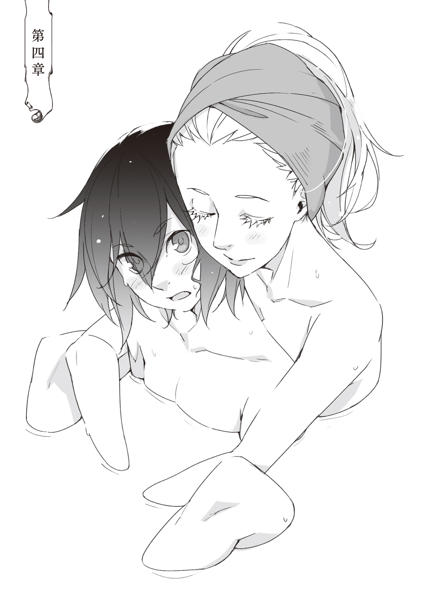
ソファに身体を預けて眠っていたランタンの目蓋が薄く持ち上がる。朝が来て自然と目が覚めた。探索当日はいつだってそうだ。意識は既に覚醒していたが、中途半端に開いた目蓋の隙間で、眼球が蜥蜴のように辺りを見渡す。
リリオンがベッドの上で眠っている。ベッドが小さいのか、リリオンが大きいのか、その両方か。リリオンは膝を抱えて丸まり、解いた髪の中に埋まるようにして寝息を立てていた。
寝具を買い忘れて、結局そのまま買わずじまいにしてしまった。だが年下の少女をソファで眠らせはしない。ランタンはリリオンをベッドに押し込んだのだ。
少女はランタンをソファで寝かせることに申し訳なさを感じていたようだったが、聞こえる寝息は何とも気持ちがよさそうだ。
ランタンはソファから身体を起こし、四肢の末端に残る擽ったく、痺れに似た眠気を振り払い大きく背伸びをする。欠伸が零れて、眦に一粒の涙が浮いて、それを指先で拭った。
水筒から水を飲み、ランタンはリリオンの顔を覗き込んだ。
ぐっすりと眠っている。
昨晩はグランから受け取った大剣大楯を身体に馴染ませるために組み手をしたのだが、少しばかり張り切りすぎてしまった。探索前夜の緊張をランタンはよく知っている。だから疲労を与えることで眠りに導くことを考えなかったわけではない。
探索に支障が出ないようにと気を付けるつもりではいた。いたのだが、張り切るリリオンの興奮にランタンも乗せられてしまったのだ。
ランタンは壁に立てかけられた大楯を眺めた。
大楯はグランによって見事に仕立て上げられている。
ただ平べったいだけだった大楯は、柔らかな丸みを帯びていて女の爪のようである。
丸みは攻撃を受け止めた際に衝撃を分散するように計算されていた。そして一枚の鋼板だった楯は内部に蜂の巣状の補強が組み込まれ複層構造となっているらしい。持ち手はリリオンの手に吸い付くようである。
ランタンがむきになったのは、これのせいでもある。
組み手の際に、攻撃があまりにも綺麗に受け流されたのだ。手加減はしていたし、真剣ではなかった。けれどそれにしたってすっ転びそうになる程、力を受け流されるなどここ最近は全く記憶にない。
新品の大楯は、右端に目立つ傷がある。ランタンが少しばかり本気で叩いた爪痕だ。
けれどこの程度。
ランタンを本気にさせたのは大楯の性能と、リリオンの技量があってのことだった。
リリオンは重量級の大楯を巧みに操り、技はあの試作に囲まれて手合わせをした時よりも更なる冴えをみせた。リリオンの腕前がなければ、楯の傷はあれだけでは済まなかっただろう。
そしてそれ程の攻撃を受け止めて、なお向かってくる気概もいい。
リリオンは怯えなかった。やってしまった、と我に返ったランタンの隙を見逃さなかった。不安定な体勢から上半身の振りだけで反撃を返してきた。
煌めくような、いい一撃だった。
あの不格好な大剣もグランによって打ち直されている。
刃渡りはほぼ変わらず、だがべたっと横広の鎬はすっと斬り落としたように洗練されて、捻くれた鋒はリリオンのように素直になっていた。
グランの仕事は見事の一言に尽きる。
大剣はリリオンのお気に入りとなって、それを振り回す少女は美しくすらあった。
その姿を思い出してランタンは口元を緩め、その緩みを確かめるようにはっと手で押さえた。
掌が唇を拭い、ランタンはそのまま己の首に触る。
肌が熱く、汗でべたついている。襟元を引き寄せて、すんと鼻を鳴らした。
ランタンはリリオンを起こさないようにそっと部屋を出て、浴室に向かった。
探索中は落ち着いて身を清めることはそうそうできないので、探索当日の朝に風呂に入るのがランタンの決まり事だった。
水精結晶を砕き湯船に水を溜めて爆発で熱する。ああもう、また熱くなりすぎた。ランタンは追加に二つ水精結晶を砕く。ぐるりと一度搔き回し、湯加減を確かめて裸になる。
手桶に湯を掬い、首元からそっと掛け湯をすると、湯の流れに沿って肌に赤みが差した。
寝汗を流すと、ランタンは湯船に肩まで沈んだ。思わず漏れ出た呻きが妙に甘い。
気持ちいい。この世界でも、この気持ちよさだけは変わらない。
皮膚から汚れが失せ、肉から皮膚が剝がれ、骨から肉が離れ、その骨さえも硬さを失って溶けて、やがて剝き出しとなった丸い魂だけが温かな湯の中に浮かんでいる。
解放されている、と思う。
ランタンは浅く膝を折り曲げて、湯船にもたれかかった。沈んでいくようにぐらりと顎が持ち上がって、天井を見つめる。その顔からは表情が失せている。
外を歩く時は緊張している。自分の身を守るために。
暴力を振るう時に嫌悪感を押し殺している、それを行使することを躊躇わなくなったことに。
世界に馴染む程に、ランタンは郷愁を忘れつつある。
寂しさも薄れてきた。思い出せない過去を探そうとしなくなった。
水面が柔らかに盛り上がる。水面を割ってぬっと腕が浮かび、眼前に持ち上がる。肌の上を幾つもの湯の珠が尾を引いて滑り、水面へと吸い込まれていく。ランタンは掌を陽光に透かすように、視線は二の腕から肘を、前腕を撫でて指の先までをぼんやりと眺める。
二の腕はほのかに脂肪が乗っていて、色が白くいかにも柔らかそうだ。前腕は淡く浮き出た筋肉の筋に、蔦草のような緑の血管が絡まっている。手首は女のように細い。掌には肉刺の一つもなく、指に産毛はなく、先端を飾る爪は形よくつやつやとしている。
暴力とは全く無縁そうな、それは敵を油断させる擬態でもある。
だが。
ランタンは外気に冷えた腕を再び湯に沈めた。暖められて広がった毛細血管に血が流れ込み肌が痺れる。その痺れる手で身体を撫でた。
柔らかい身体。
けれど身体付きは細く、薄膜のごとき皮下脂肪に幼い筋肉が浮かび上がる。胸や腹に淡い陰影があり、それは筋繊維が剝き出しになっているようだった。リリオンのことをとやかく言えない瘦せた身体。それははっきりしない実年齢よりも幾つも幼い身体だった。
ランタンの身体は殆ど成長していない。
過酷な世界での生活による精神的負荷によって成長が阻害されているのか、それとも魔精を体内に取り込むことで起こる保若効果のせいなのかはわからない。単に身体的成長の遅い、ただそういう身体であるだけなのかもしれない。
ランタンは首の据わらぬ赤ん坊のように頭をゆらゆらと左右に揺らして、そのままずるずると滑るように湯船に沈んだ。息を止めて、ゆっくり目蓋を閉じて、胎児のように膝を抱えて、頭の先まですっぽりと湯の中に潜った。
湯中で漂う髪が頰や首を撫でる擽ったさに唇の端から細かな気泡が零れた。耳の中に入り込んできた湯がざばざばと音を立てて、内部の全てを満たすと流れる血液の音が低く響いた。
心臓が血液を圧し出して、それは全身を巡り、再び心臓へと戻ってくる。
まるで塗り絵でもするように目蓋の裏側に自らの姿が思い浮かんだ。
元の自分と、そう変わらない。少し瘦せて、少し筋肉質になっただけ。服を着せて隠してしまえば、何も変わらない、筈だ。元の世界に帰ったとしても、きっと、大丈夫だ。
名前も思い出せないのに。
唇が歪む。
ぼこぼこぼこ、と口から大きな気泡が吐き出されて水面で弾けた。
その気泡を追うようにランタンは溺れたみたいに顔を上げる。
濡れた髪が頭蓋にべったりと張り付き、毛先から表情を押し流すように湯が流れた。ランタンは涙でも拭うように掌で顔を覆い、ゆっくりとゆっくりと熱い息を吐きだした。
指の隙間から視線が零れる。水面に映る自分の瞳は、遠くを見ているような、何も見ていないような。焦茶色の瞳が、重たそうな瞬きをしている。睫毛から滴が落ちた。
肌は薄紅色に染まっている。骨の芯まで熱が通った。
そろそろ上がるか、とランタンが湯船の縁に手を掛けた瞬間に扉が悲鳴を上げた。
蝶番が軋み、扉の下部が擦れて無遠慮に床を削る。そちらに目を向けると解いた髪に寝癖を付けたリリオンが、逆光の中に仁王立ちをしていた。
「見つけたわっ」
ぐっすりと眠っていたのでまだしばらくは起きないだろうと思っていたのだが、リリオンの目には眠気など微塵もなく、声は腹からしっかりと発声されていた。
声は浴室の中を跳ね回るようで、微かな残響を置いて天井の大穴から空へと抜けていく。
朝から何とも元気だ。昨夜の疲れはきちんと解消されている。
「......おはよう」
ランタンは肌を隠すようにそろりと湯の中に肩まで沈め、先程までとはまるで別人の柔らかな表情を浮かべる。
「おはよう。探したわ、ランタン！」
「どうかしたの？」
「いなかったから！」
「うん......？」
「いなかったから探したのよ。ここにいたのね」
ランタンはなんとなしに水面を波立てる。
何かランタンを必要とする用事でもあったのかと思ったが、どうやらランタンを見つけること自体が目的だったようだ。それならばリリオンの用事はもう済んだのだから、浴室から出て行くだろう。再び蝶番が軋みを上げて、扉が閉まった。
リリオンは浴室の内側に居る。
「......どうかした？」
両手で湯を掬い、再び湯の中に落とす。ランタンがその流れを追って視線を湯船に沈め、波立つ水面に少女の顔が映った。
リリオンは湯気を浴びるようにして大きく息を吸い込むと熱っぽい吐息を漏らした。そして遠慮なく手を伸ばして湯船に手を突っ込み、温度を測り、搔き回して渦を作った。
「わたしも入っていい？」
ダメ、と言いたかったが、リリオンからは甘酸っぱい汗の匂いが立ち上っていて、ランタンは言い淀んだ。
べたつく肌の気持ち悪さを、一刻でも早く落としたい心情をランタンはよく理解している。
けどな、と迷いを見せたその逡巡の隙を突いて、ランタンが答えを出すより先にリリオンはあっという間もない程の早さで全裸になっていた。
「は......？」
眼前に爪先。足首がきゅっと細い。
「狭いから無理だよ！ や、せめて掛け湯ぐらい――！」
「ランタン、そっち寄って」
リリオンはランタンの言葉を湯船の縁ごと軽々と跨ぎ、爪先が水面に波紋を作る。
爪先から脹ら脛、そして太股が白い大蛇のような艶めかしさをもって水面を割って沈んでいく。骨張っていた脚からは、想像もできない少女の肉付きにランタンは息を呑んだ。
真っ白な尻が鼻先を掠めるように落ちてゆき、それが沈みきると湯船の縁から滝のように湯が溢れた。少女の肉体の分だけ。
「なっ......！」
柔らかい。
リリオンの尻がランタンの胸から腹へと滑って股の間にすっぽりと収まる。視界一面が銀の髪で白く埋まり、リリオンがそれを胸元へとかき寄せると、髪よりもなお白い背中が露わになってランタンの胸にもたれかかってきた。
「わあ、あったかあい」
うっとりと声を漏らしたリリオンとは裏腹に、ランタンは身動き一つ取れず、息さえも止めて固まっていた。
リリオンはランタンにべったりと背中を預けて、股の間に収めた尻の収まりのいい位置を探り、割り込んだ脚の間に自らの脚を折りたたんで満足している。水面からちょこんと膝頭が顔を出していた。
リリオンはランタンの鎖骨に首を載せて、小さな頭部をこてんと肩に転がした。
「......痛い」
ランタンは小さな声で呟いて、それはリリオンに届かない。
肉付きがよくなったとは言え、それでもまだ肩甲骨が胸に、体重を掛けると尻肉を押し分けて骨盤がランタンの太股に突き刺さった。柔らかくはあるのだが、まだまだ未成熟な果実そのものの硬さを有している。
リリオンはランタンの手を取って、抱っこをせがむように両手を臍の辺りへと導いた。ぎゅっと、離れないでと言うように強く握られる。
胸に張り付いた背中が熱く、リリオンの項、後れ毛に玉の汗が鈴なりに実っている。湯気に炙られて少女の首筋は蒸れた香りを放っていた。
「なあにランタン、くすぐったいわ」
項の汗が滑り落ちるとリリオンはその擽ったさをランタンの仕業だと勘違いして、身悶えるようにして身体の向きを変えた。
向かい合う。幼くも柔らかな少女の胸が、ランタンの胸の上で乱暴に押し潰された。リリオンはランタンの首筋へ吸い付くように頰を押しつけ、腕を背中に回した。
ランタンがゆっくりと首を回して視線を向けると頰が赤く上気していた。
「ねえランタン。迷宮のお話を聞かせて？」
リリオンは昨夜も迷宮の話をねだった。
幼子が絵本の朗読をねだるように。リリオンは手合わせの疲れもあってすぐに寝てしまったので、そのことを未練に思っているのかもしれない。
予約時間までには充分な時間がある。けれどこんな所でするような話ではないと思う。
だがランタンはリリオンを押し退けることができなかった。すべすべとした皮膚刺激には、ランタンの理解の及ばない抗い難さがあった。
ランタンは湯中に漂い、リリオンの首に絡む銀の髪を一摑みにして絞り上げる。湯船の縁に掛けていた手拭いを使って髪を纏めてやった。リリオンの表情が緩む。首筋に触れた外気にほっと息を吐き、滑り落ちるようにランタンの胸元に耳を押し当てた。
「今日行く迷宮はね」
「うん」
その迷宮は一ヶ月程前に迷宮特区に口を開けた。
迷宮口はやや小さめで、そこから小規模の迷宮と判断され、探索者ギルド直属の先遣偵察隊により、中難易度森林小迷宮であるとの報告がなされた。
探索者は大きく甲、乙、丙の三つの階級に分けられる。
探索者証を受け取ると人は丙種探索者として登録され、探索者ギルドを通して迷宮を探索してこれを攻略、また提示、斡旋された依頼の遂行や、買取施設での売買など、探索者ギルドから評価を得ることにより乙種、甲種と階級が上がってゆく。
探索者になったばかりのリリオンは丙種探索者であり、ランタンは乙種探索者だった。
中難易度森林小迷宮というのは、迷宮の構造と出現する魔物の強さにより複合的に判断されるがおおよそは、乙種探索者主体の四、五名からなる探索班による攻略を推奨される森林環境の小規模迷宮、となる。
ランタンはこの迷宮へ二度潜っている。一度目は偵察のためだ。
先遣偵察隊の仕事ぶりは迷宮のごく序盤を探索する程度のものでしかないので、いざ探索者が迷宮に潜ってみると中難易度と指定されていても実際は子供のお使いのような簡単なものから、未帰還率が七割を超えるような地獄であることもあった。
先遣偵察隊、ギルドの探索難易度指定を信じて未帰還になる新人探索者は意外と多く、それを乗り越えた探索者たちはギルドの攻略難易度を偵察難易度と呼び変えて皮肉ること憚りなく、自分の目で、肌で感じたものしか信用しない。
偵察にかかる一手間は余計な出費ではなく生き残るための必要経費だった。
一度目の探索結果から言うとギルドの難易度指定は間違ってはいなかった。
迷宮の構造自体は左右に隙間なく針葉樹が連なった並木道である。
出現する魔物は獣系が主体で、その強さもランタンならば問題ない程度のものだった。幾つかある先遣偵察隊の中でも、辛口の評価を下す部隊ならば低難易度と指定をしたかもしれない。
「らんたんはすごいね」
「何がさ？」
リリオンは甘く呟く。
浮力に身体を固定しバランスを取ることが難しいのか、それとも湯に浸かる習慣がないせいかリリオンは落ち着きなくもぞもぞと体勢を変えた。その度に密着する肉体がぐにぐにと押し合い、ランタンはその柔らかさを知覚し、意識しないように努めた。
ふわりと柔らかさが離れていく。残されたのは突き刺さった骨の痛みか。
リリオンはランタンの胸元に俯せになっていた身体を起こして、向かい合うようにランタンの逆側に背もたれる。長い脚が窮屈そうに悶えて、ランタンの脚に絡まるとそここそが置き場所であるように大人しくなった。
「だって、らんたんはひとりでたんさくをしているんでしょ？ じゃあ、らんたんのつよさはたんさくしゃごにんぶんね」
無邪気な憧憬の視線が恥ずかしいが、ランタンはきわめて平静な顔つきで肩を竦めた。
そっと水面に視線を落とし、変な表情をしていないか確かめる。向い合い互いに表情を差し出し合っている状況下では、いかに皮膚の接触面積が低下しようとも気が抜けなかった。
「探索者の強さって、――そんなものじゃないよ。どんな迷宮だって、時間をかければ少人数でも攻略できるし。たぶん」
攻略難易度はそれなりの安全基準によって指定されている。
推奨される探索班であるのならば、小迷宮程度ならば余程の問題が起こらない限り二度の探索で攻略を終えていることだろうし、ランタンも前回の探索で可能ならば攻略してしまおうと考えていた。
それなのに最下層を確認するどころか、まだ下層の踏破すら済んでいない。
偵察は予定通りだった。一日掛けて上層をゆっくり進み、充分な余裕を持って一日掛けて帰還した。しかし二度目の探索では中層を踏破して、そのまま下層を攻略して、最下層にあって迷宮を鎮護する終端の魔物を、と思っていたのだが。
下層に足を踏み入れたらば、迷宮兎に出くわしたのだ。
三匹出て、三匹殺したと思ったら針葉樹の根元に四匹目が隠れていやがった。そいつが次々に仲間を喚んで、戦力を消耗し、ランタンは這々の体で帰還を果たしたのだ。
大量の迷宮兎はなかなかの儲けとなったし、換金して金貨を受け取った時にはその苦労も悪いものではないと思ったが、やはりそれは良い記憶ではない。
思い出すだけでランタンの表情がうんざりと歪んだ。
そして儲けの大部分はリリオンの身支度を整えるための諸経費に消えて、身体を休める筈だった三日間の休日は嵐のように過ぎ去った。
それは別に構わないのだが、疲労が少しばかり残っている。
リリオンが落ち着きなく、再びランタンにもたれるように身体を傾げて、しかし腕を伸ばした。ランタンは腕を摑まれると、軽くのぼせていることもあり、無抵抗に身体を引き寄せられてすっぽりとリリオンの股の間に収められ、背中から抱きすくめられた。
「......」
ランタンは鼻の下まで水面に沈めて、ぶくぶくと呻きを呟く。
リリオンはランタンをぎゅうっと抱きしめて重石代わりにしている。
浮力によって落ち着きのなかった尻がようやく落ち着いて、浮かれた鼻唄を一小節だけ歌い、無意識なのだろうランタンの腹を擦っている。腹筋のオウトツを迷路に指を這わせて、それは臍へと辿り着く。
「ちょっと、ん、もう、くすぐったいよ」
「じゃあさいごまでいくの？」
リリオンはランタンの抗議を完全に無視して、耳を食むようにして尋ねた。
ランタンは腹の上を這い回る指を排除しようと格闘しつつ、煮え切らない呻き声を漏らす。
単独での探索ならば最下層に突入して終端の魔物に敗北しようとも自業自得というものだが、そこに戦力の見極めが確定していないリリオンを伴うとなると話が変わってくる。
二人以上で迷宮を探索するとなるとそれはもう探索班であり、班というものは指揮者によって率いられるものだ。
探索前もそうであるし、探索中であっても班内では様々な意見交換やそれに伴う作戦変更が流動的に行われるが、探索続行や撤退などの最終決定は指揮者の一声によって決定される。
らしい。
だが残念なことにランタンにはそういった班を率いた経験も、あるいは率いられた経験もない。危険と命を天秤にかけたとき、その命が自分のものならば多少命を軽く見積もったとしても何の問題もないが、それが他人のものとなると問題しかない。
「一応、そのつもりではいるよ」
ランタンは取り敢えず口先だけでそう言った。
終端の魔物は迷宮の守護者である。
普通の魔物のように迷宮を徘徊することはなく、最下層にあって迷宮という空間を創造し、それを維持する迷宮核と呼ばれる高純度の魔精結晶を守っている。力の源である魔精の至近にあることによって、終端の魔物の戦力は通常の魔物とは比較することができない。
ランタンは今まで幾つもの迷宮を攻略し、幾匹もの終端の魔物を打倒してきたが、そのどれもが死闘と言ってよかった。結局は勝利を収めているのだが、もし戦闘が始まってしまえばリリオンに気を遣っている暇はないだろうと思う。
「わたし、がんばるわっ」
リリオンは張り切ってそう言ったが、頑張られても困ることもある。
例えば複数の魔物と戦闘行為を行う場合に、ランタンは左、リリオンは右と対処する魔物を分担できるのならまだならいいのだが、一個体をランタンと二人で攻めるとなると、どちらとは言わず足を引っ張り合う可能性が高い。
もしリリオンが終端の魔物との戦闘に耐えうる戦力を保有していようとも、拙い連携はかえって窮地を呼び込むものだ。
と噂に聞く。
リリオンには安全な場所で楯を構えて亀のように守りを固めてもらうのが一番の安全策だが、それでもリリオンから完全に意識を外すことはできないだろう。ランタンが上手くフォローできればまた話は別なのだが、複数名と連携した戦闘行動はランタンにとっては未知のものだ。
「と言ってもまだ終端の魔物を確認してないからね」
迷宮路が平坦道のように楽なものであっても、道中の魔物が拍子抜けする程の雑魚であっても、最下層はまず間違いなく虎穴である。
終端の魔物との戦闘を行うかどうかの最終的な決定は、その時の戦力の消耗度合いと終端の魔物の戦力を天秤に掛けて決めなければならないが、相対するまで魔物の戦力は不確定だ。
いざ考えてみると他人と迷宮に行くのって大変だな、と重い溜め息を吐き出す。
リリオンに対して散々高説を垂れ流してはみたものの、結局は噂に聞きかじったことを空覚えのままに、ある程度の体裁を取り繕って吐き出しているだけだ。
いざ迷宮に降りたのならば、僕はリリオンを導けるだろうか。
「わ――リリ――っ」
不意にリリオンに抱きしめられた。自信を喪失しかけたランタンを慰める、などという類の抱擁ではない。
触れ合っていない部分がないという程に身体を密着させて、首筋に、鎖骨に溜まった汗の粒を口に含むように、粘性の柔らかい唇が這った。
ランタンがその生々しい感触に言葉を失っていると、さらに追い打ちを掛けるかのように臍で遊んでいた指が無造作に下腹部を撫でた。
そしてその先に。
「ばっ――か！」
滝が逆流したような瀑布を立ち上らせランタンは全力の跳躍をもって湯船から飛び出す。辺りに飛沫が白い霧となって漂い、その霧の奥でランタンを失ったリリオンががくりと揺らいだ。
「......」
ランタンは一瞬だけ逡巡して、慎重に湯船に近づいた。
リリオンは肌を真っ赤にしてどこを見ているわけでもない虚ろな目をしていた。
完膚なきまでににのぼせている。
先に浸かっていたランタンも多少は頭がぼんやりとしているが、これ程酷くはない。この世界の人間は風呂に浸かる習慣がないので、風呂熱に対する耐性が低いのだろう。
ランタンは濡れた掌でリリオンの顔に浮き出た汗を拭ってやり、リリオンの脇に手を差し込んで湯の中から引き上げた。
「まったくもう」
身体から濛々と湯気が立つリリオンを湯船の縁に座らせようとしたが、リリオンは自分で自分の身体を支えることができない程ふらふらしている。ランタンはどうにかこうにか床にタオルを敷いて少女を寝かせてやった。
大人しくしている様はまるで精巧な人形のようだが、軽く頰を撫で叩くと締まりのない顔で笑みを零した。意識はあるようだが、肉体の制御は失われている。
「すぐ戻るよ」
リリオンは笑顔を不安に翳らせて、ランタンを摑もうと手を伸ばそうとしたが、腕は重たげに小さく反応しただけだ。
ランタンはざっと身体を拭くと下着だけを身に着けて部屋へ戻った。外気が肌に気持ちいい。だが不安そうなリリオンを思うと、廊下でのんびりとしている訳にはいかない。
部屋から水筒を取って戻り、冷水で絞った手拭いを額と脇の下に。
「ほら飲みな、ゆっくりね」
ランタンはリリオンの傍らに膝をついて水筒を口にあてがった。リリオンは頷き、赤ん坊のように吸い付いた。舌が先端に触れ、唇が迎え入れる。赤く色づく喉が動いた。唇の端から溢れる水すらもが気持ちよさそうだ。
探索前に英気を養うために風呂に入ったのだが、それで疲れてしまっては元も子もない。
まったく世話の焼けることだ、とランタンはリリオンの唇を拭う。
リリオンはランタンが身体に触れると安心してふにゃりと笑みをこぼす。
それは子が親に対して抱く接触欲求のようなものなのかもしれない。
肉付きは良くなったが、何も変わっていない。たった数日で九歳の子供がいきなり一八歳に変わるわけはないのだ。当たり前のことにランタンは溜め息のように苦笑した。
「らんたん」
「ん、なに？」
「おふろってきもちいいのね」
「......のぼせてるのに何言ってるの」
あるいはのぼせているからこその妄言なのかもしれない。
リリオンは唇を拭ったランタンの手に頰を擦りつけていて、ランタンはその頰の柔らかさを指で押し返していた。
「おゆはあたたかいし、らんたんはすべすべしててきもちいいんだもの。ねえ、またいっしょに、はいってくれる？」
実に無垢な甘い誘惑に、ランタンは頷く。
九歳の子と一緒に風呂に入ったからといって疚しいところなど一つもないし、むしろそれを拒否するほうが、自分の中にあるような気がしなくもない名状しがたい気持ちを肯定するような気がした。
何はともあれ探索当日に、それ以外のことで頭を悩ませるのは馬鹿らしい。
ランタンは探索者らしい切り替えの速さで自己の葛藤を棚上げして、迷宮で己の怪我を処理するような手際でリリオンの手当てをする。
そして、まだぽかぽかと暖かいリリオンを胸に抱きかかえて部屋へと戻った。
もう何度目だろうか、と胸に抱く重みにそう思う。
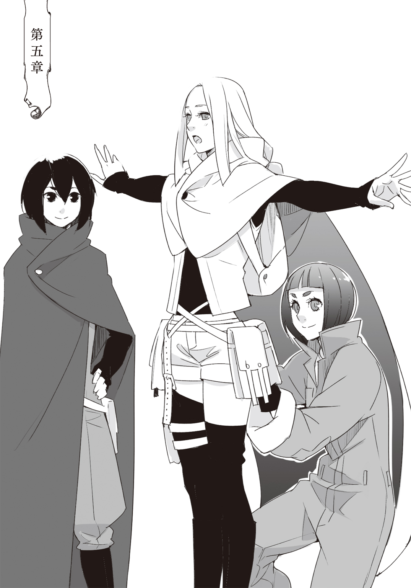
リリオンは湯疲れからすっかりと回復して、二人は朝食とも昼食ともつかない大量の食事を済ませる。腹ごなしの一休みを挟み探索服に着替えると、ランタンは気合を入れるように自らの頰を叩いた。リリオンもそれを真似して頰を叩く。
「行こうか」
「......うん！」
ランタンが腰に戦鎚を結べば、リリオンは大楯を背負った。
部屋を出て扉の鍵をかけると、ランタンの背中からリリオンが手元を覗きこんで呟く。
「その鍵って、意味あるのかしら？」
「あるよ、たぶん」
ランタンもこの行為が、他者の侵入を防ぐという本来の役割を果たしていないことを承知している。そもそも施錠を破って侵入した一人がすぐ背後にいるのだから、いやでも実感させられるというものだった。
「開けっ放しにするとなんか気持ち悪いんだよ」
泥棒に入られようとも貴重品は置いていないし、浮浪者に居座られようとも暴力に物言わせればいいだけなので、多少の面倒ではあるが大した問題ではない。何だかんだで掃除も嫌いではないし、最悪の場合に備えて他の住めそうな廃屋も幾つか見つけてある。
だが鍵のかけ忘れというのはランタンの精神状態に多大な影響を与える。家を空ける時は鍵をかける。それはランタンの身体に染み付く習慣だった。
一度、部屋の鍵をかけずに迷宮を探索したことがある。
その時は特区へ歩く道中ですら妙に落ち着かず、迷宮へ潜り魔物と戦っている時さえも頭の片隅に靴の中の小石のような煩わしさがあり続けた。
「ふうん」
リリオンはわかったような、わからないような気のない相槌を打って、ランタンの両肩に手を置いて押し出すようにして廊下を進んだ。
まるで遊びに行くように気が逸っているが、その軽い足取りのせいで階段を突き落とされてはかなわない。ランタンは肩に置かれる手を取って、慣れた仕草で少女を先導する。
手が温かく、柔らかい。
こうやって手を繫いで先導できるのも地上にいる時だけだ。いざ迷宮に潜ってしまえば、手を繫いでいるような余裕はないだろう。ランタンがなんとなしにそんなことを呟くと、リリオンは今さら気が付いたというように足を止めた。
「もうここから一人で歩く？」
「いじわる！」
リリオンはわっと言って頰を膨らませた。
手を引いてやってもよかったが、自主性は大切だ。ランタンは意地悪に手を離した。
「やだっ」
するとリリオンはランタンの腕にしがみつく。その勢いのまま少年を引き摺るように歩き出した。けれど勢いがあったのは歩き始めだけで、リリオンはランタンの温もりを惜しむように歩調を緩める。脚の長さに差があるので、ランタンとしては丁度良い。
だがどれだけゆっくり歩こうともやがては迷宮特区へと辿り着いてしまう。特区を取り囲む周壁の白が色を濃くして、大口を開けた門が大勢の探索者を呑み込んでいく。
これから迷宮に潜る探索者たちは気が立っており、いかにも荒々しい気配を振りまいている。
男女の二人連れで、それも仲睦まじげな手繫ぎ姿のランタンたちにすれ違う探索者たちの一瞥が痛い。胡乱げなものから、軽蔑、敵意もある。
探索前に無駄に体力を消耗する馬鹿は極々少数なので絡まれるようなことはさすがにないが、その気配に当てられてリリオンはランタンにしがみつく力を強めた。ランタンはリリオンを安心させるように撫でてやり、少し歩みを早めようとした。
門を潜るとき、周壁の内部でリリオンが天井を見上げる。
「あれ、なに？」
周壁の内部はトンネル構造になっていて、まるで石造迷宮のようである。
リリオンの指差した先には金属製の軌条が敷設されていて、トンネルの奥の方から低い嘶きが聞こえ、重い振動が近付きつつあった。
「ん、あれが走る線路だよ」
ごう、と風が巻いて頭上を懸垂式列車が走る。
迷宮から運び出した魔物の死骸と、迷宮から切り出した鉱石資源を積んでいた。それらは東区と下街の境目にある集積場に運ばれる。列車が走り去った後には生温い排気と魔物の死臭の入り交じった酷い臭いがする。
「もっとひどい時は血の雨が降るから気を付けないとね。あとフックを引っ掛けてタダ乗りしてる馬鹿もいるし」
「ふあああ」
リリオンは探索者たちの視線のことなどすっかりと吹っ飛んでしまったようだった。興味深そうに目を丸くして列車が消えた先を見つめ、楽しげに歩き出して門を潜り抜けた。
迷宮特区は、下街の廃墟じみた景観も大概だが、それに輪をかけて混沌とした景観が広がっている。元は上街のような上品な町並みが広がっていた名残が消し炭程残っているだけで、あとは火竜の群れに蹂躙されたかのような有様だ。
背の高い建物は一つもないが、急拵えの石壁が迷路のように張り巡らされ、道幅は起重機が行き交うために広い。三方を壁で囲われたどん詰まりには迷宮口が顎門を開き、またそれを閉ざした後にはぽっかりと円形の更地が広がっている。
石壁は攻略に失敗した迷宮から魔物が這い出た時に、街への進行を遅らせるためのものであり、それに道を妨げられるのは魔物ばかりではなく人間もだった。
二六二番地にランタンたちが攻略する迷宮がある。だが別段の目印があるわけでもなく、石壁に引かれる線はギルドで確認した地図に見た分割線とは何の関係もない。
角を曲がり、左右を見渡し、立ち止まって振り返る。石壁によじ登っている探索者もいる。
「もしかして迷子？」
「ちゃんと着いたよ、ほら」
そしてまた歩き出したランタンにリリオンは不躾に尋ねたが、ランタンは指を差してそれを否定した。過去に散々迷った迷宮特区は既にランタンの庭である。指の先には小型の起重機に寄りかかるミシャの姿があった。
ミシャは以前と同じく暗黄色のつなぎに身を包んでいて、顔に油汚れはなく、ランタンに気が付くと大きく手を振って迎えた。
「いつもながらお早いお着きで、今日はよろしくっす」
「うん、よろしく」
「よ、よろしくお願いします！」
ランタンとミシャが軽く挨拶を交わし、リリオンが大きく頭を下げた。
「......なんかお二人似てるっすね、服が」
「やっぱりそう思うよね、ったくだから言ったのに」
ランタンとリリオンを見比べたミシャが呟いて、ランタンはそれに同意するようにぶつくさと文句を垂れてリリオンの無防備な脇腹を突いた。
「ひゃん！」
「ほらやっぱり胴巻きぐらいするべきだよ」
リリオンは一つ悲鳴をあげて後ずさり、拗ねたように唇を突き出す。そして外套ごと自分の身体を抱きしめた。
「もうっ、だって、いいじゃない！ 真似しても！」
ランタンもリリオンも防具と呼べる装備は足を包む黒革の戦闘靴ぐらいなものだった。
無論、衣服も探索者用の装備なのでただの布で裁縫されたものではない。探索服は上下ともに靭やかで動きやすく、尚且つある程度の魔物の攻撃に耐えうる頑丈さも兼ね備えている。外套に至っては耐火、撥水、防刃、耐魔というちょっとした一品だった。
だが金属鎧どころか、革の小手や肘当て脛当てすら着けていない軽装で迷宮へ降るのは賭博場で尻の毛まで毟られた間抜けか、自殺志願者ぐらいのものだ。
ならばなぜ、そのどちらでもないランタンがこのような格好をしているかというと、単純にそういった防具が肌に合わないからだった。身体を守るための防具の硬さが逆にランタンの身体に食い込み、擦れて傷を残すのだ。
現在、装備しているこの戦闘靴でさえ、その中には厚手の靴下を履いて、さらに踝や脹ら脛に布を当てている有様だったし、腰のベルトの内側には保護材を縫い付けてある。
ランタンはそんな自らを虚仮にしてまでリリオンに防具の大切さを切々と説き、また露骨に真似されるのを嫌がったのだが、リリオンはそれに反抗して一緒がいいと駄々をこねた。
そのせいで丈が少し足りない。ランタンは裾を引っ張ってやりリリオンの腹を隠した。
結局リリオンはランタンと同じ型の戦闘服に身を包むこととなり、色を違えたのはランタンの最後の抵抗だった。
探索班を同じ装備で固めている探索者も居ることには居るのだが、それは騎士団や戦士団に憧れを持っている夢見がちな連中や、仲間の結束は血よりも濃いなどと恥ずかしげもなく吹聴する小僧どもと、そして大量生産品しか買えない新人の集まりぐらいのものである。複数種類の魔物との戦闘を想定するならば、装備もそれなりにばらけさせるのが常套である。
ランタンはそういった連中を何とも言えない微妙な気持ちで眺めていたのだが、まさか自分がそれらの仲間入りをすることになるとは思いもよらなかった。
「あー......ランタンさん」
満足気なリリオンと沈鬱なランタンを見比べたミシャはそこに渦巻く感情の波を読み取ろうとしていたが、結局はランタンの肩を軽く叩いて慰めの視線を送るにとどめた。自身の不用意な一言が今の表情を引き出したのだ、ということだけが理解できたからだ。ランタンはそんなミシャに哀れっぽい視線で応えた。
迷宮に降りてしまえば誰の視線もない。
ランタンがそう自分を慰め立ち直る頃には、降下まであと一五分という所だった。
その一五分はただ過ぎ去るのを待つ時間ではなく、ランタンにとって最終確認の時間だった。
探索者の中には降下時間ぎりぎりに訪れて飛び込むように迷宮へ向かう者もいれば、じっくりと神への祈りを捧げる者も、瞑想したり仲間同士で身体を動かしたり、中には娼婦を連れ立ってくる者さえいた。それらはまだましで娼館に立ち寄ったり、教会へ立ち寄ったり、そもそも道に迷ったり、端っから予約時間を守る気のない者もいる。
ランタンは今まで一度も遅刻をしていない。
散々、道に迷った時ですら、その時間を織り込んで行動している。
ランタンは食料や薬の類がきちんと揃っているかを確認して、軽い柔軟を始めた。
べたっと股割をして、そのまま地面に胸を付ける。その脇でリリオンは池の鯉でも眺めるように迷宮口に身を乗り出して、その暗闇を覗き込んでいる。
今にも転げ落ちそうな雰囲気だった。
「リリオン」
「なあに？」
「落ちたら死ぬからね」
迷宮口からの転落は有りがちな死亡要因だ。初探索で浮かれた新人探索者がリリオンと同じような状況から転落したり、あるいは疲労困憊に帰還した所で気を抜いて身体をふらつかせて転落したり、不運としか言いようがないが急に足元に迷宮口が開いてそのまま、ということもある。迷宮口の深さによるが、無事であることはまずない。
リリオンは慌てた様子で迷宮口から後退り、ミシャに笑われていた。だがそのままランタンに飛び付いたので、笑ったミシャが呆気にとられる。
ランタンは苦笑をミシャに向けて、慌てる少女の髪を撫でた。
「落ち着きなって。ミシャ、リリオンの用意をお願い」
「あ、はいっす！」
ミシャはリリオンに手を差し出して、思いがけない力の強さで少女を抱え起こした。
降下の準備をするにはいい時間だったし、ベルトを着けていればとりあえずは転落の心配はなくなる。
「でもリリオンちゃんって起重機は初めてなんっすよね」
「ああそっか、単独用じゃなくて二人用のって......」
「そんなこともあろうかと！ ちゃんと用意してあるっすよ」
ミシャは親指を立てると二人を連結する分厚いベルトに、複数の先端を持つロープを取り出した。そうなると用意をするのはリリオンだけではなくランタンも、となる。ランタンは開脚していた足を閉じると、跳ねるように立ち上がりミシャへと近付いた。
「今度からは檻式にしますか？」
「まあ、考えとくよ」
ベルトで固定される前にすべきことがあった。ランタンがベルトに結ばれた時計を外すとミシャも意を得たりと首に掛けた時計を取り出した。
ランタンはミシャとおでこをくっ付けるようにして互いの時計の針を、秒針まで正確に合わせる。今回の引き上げは翌日である。互いの時計の時間がずれていて、待ち惚けを食らうぶんにはまだいいが、ミシャを待たせて余計な不安を掛けるのは本意ではない。探索者によっては平気で降下時間に遅れるくせに、一秒でも引き上げが遅れたら怒り散らす輩もいるらしい。
「うん、ぴったり」
「はい」
「――っと、どうかした？」
時計を合わせ終えるとランタンはリリオンに腕を引っ張られた。尋ねてもリリオンは応えずに腕を取ったままじっとミシャを見つめた。ミシャはミシャでその視線を受け止めて平然とした仕草で時計をしまう。その横顔の笑みに気が付いたのはランタンだけだった。
その笑みが、ふと困る。
ミシャはベルトを片手にランタンとリリオンを見比べて、眉間に皺を寄せて考えるような仕草を見せた。
「なにか問題？」
「いえ、経験者が補助する場合は、――ランタンさんが後ろから支えるようにするのが普通なんすけど......」
ミシャが言葉をそこで切ったので、ランタンはリリオンを見上げ、そして想像した。リリオンの背中にベルトで固定される自分の姿を。それは母猿の背中にしがみ付く小猿の姿に他ならなかった。傍から見る分には愛らしいが、いざ自らがするとなると情けない姿である。
「嫌だな」
「なんでよ！」
ランタンが呟くとリリオンが怒鳴った。
「一緒がいいわ！」
リリオンがしがみつくようにランタンを抱きかかえた。
初めての起重機や、金属製とはいえそこから垂れる親指程の太さのロープを見るとその不安もわからなくはない。だがリリオンはともすればこのまま身投げしそうな勢いであり、ミシャが慌ててその間に割って入る。手刀をランタンとリリオンの間に突き入れて、まあまあ、と言葉の柔らかさとは裏腹な力強さで二人を引き剝がした。
「で、結局はこうか......」
ランタンは息苦しそうに首を伸ばす。それは小猿ではなく真緑の池に藻搔く鯉の姿に似ている。ランタンとリリオンは向かい合ってベルトにより一纏めにされていた。風呂でそうしたようにべったりと身体を密着させて、リリオンはランタンの背中に腕を回している。顔面のすぐ前にあるリリオンの胸からは早鐘にも似た心臓の鼓動が響いていた。
二人は起重機によって宙に吊られている。身体を支えるものはベルトの左右に引っ掛けられたロープと姿勢補助の鐙だけだ。一度、体勢を崩すとロープはそれ自体が振動するように震えて、身体が前に後ろに一回転してしまう。
ランタンはリリオンの背中をあやすように叩いて、ミシャに目で合図を送った。
「降下始めるっす！ リリオンちゃん、安全に送るので身体の力を抜くといいっすよ！ ――降下開始！」
リリオンの肩から力が抜けて柔らかくなった瞬間に、ロープが軋みを上げてゆっくりと起重機から吐き出され降下が始まった。ランタンはミシャに向かって声には出さず、いってきます、と口を動かす。そして縦方向に流れる景色を眺めた。
リリオンは先程よりは多少ましだが、やはり緊張している。ランタンは外套から、それにしがみつく指の強張りをはっきりと感じ取っていた。
「リリオン大丈夫だから。下を見ずに、視線はまっすぐ壁を眺めて」
怖いから下を見る。だが視線を下げると重心が前に傾いてしまう。それでなくともリリオンは重量のある大楯を背負っているのだから、ランタン一人でバランスを取るのは難しい。だがそれでもそれ程揺れずに降下できているのは、ミシャの優れた操縦技術の賜である。ロープを通して伝わる探索者の揺らぎを、さも目の前で吊られる探索者を観察しているかのように感じ取り、それに合わせて起重機を巧みに操っているのだ。
「いいよ、リリオン。上手、上手。その調子、その調子」
「う、うん！」
揺れなければ、それだけでリリオンにとっては自信になる。自信が付けば降下を怖がることもなくなり、怖がらなければ身体から力が抜け、結果バランスは安定する。
降下を開始して六〇秒がゆっくりと時間をかけて流れていった。すると静かに降下が停止した。上を見上げると小さな穴に、青空が広がって見える。だが足元には。
「リリオン、目線だけで下を向いて」
足元には乳白色の濃い霧が広がっている。まるで雲海に立っているようだった。
リリオンがごくりと唾を飲んだ。この先がいよいよ迷宮になることを、未管理迷宮にもこの霧はあるのだから当然と言えば当然だが、リリオンは知っているのだ。
「魔精酔いに気をつけてね」
「......」
気を付けたからといって避けられるようなものではないが、気持ち悪くなることを知っていれば、それに対して身構えることはできる。リリオンは何も言わず再び強くランタンにしがみついた。ロープが揺れるが、無理に引き剝がせば揺れるどころではないので仕方がない。
そして再び降下が始まり冷たい水に足をつけるように、ゆっくりと、そろりと爪先から霧の中へと呑み込まれてゆく。
この霧は境界である。
迷宮口は地表に出現するが、迷宮は地下に広がっているわけではない。もし迷宮が都市の地下いっぱいに広がっているのなら、今頃この都市は地食性の魔物に地盤沈下を起こされて滅んだどこぞの都市と同じような有様になっているだろう。
迷宮は異界だ、と誰かが言ったらしいが誰が言ったのかをランタンは知らない。曰く地獄だと言う者もいれば、精神世界だと言う者もいるし、別世界だと言う者もいるのだからいちいち覚えてなどいられない。酒場でくだ巻く探索者がそれぞれが好き勝手なことを言っているのが迷宮だった。
そもそも迷宮が何であるのかを知っている人間はいないとされている。国も都市も探索者ギルドも、真実はどうであれ、迷宮についての正式な見解を発表していないのだ。むしろ未知のものだからこそ、阿呆な男たちがこぞって迷宮へ夢を求めて旅立ち、そして魔精結晶を見つけてしまったものだから探索者などという職業が成り立っているとも言えた。
そして必要に迫られている、というのもある。
どうにもこの世界は化石燃料や鉱石資源がそう豊富ではないようだった。
例えば起重機や列車には内燃機関が組み込まれているが、工業の機械化は極々一部にとどまっている。石炭も使われていないわけではないが、燃料の多くは魔精であった。世界は迷宮資源に頼っていて、迷宮は膨大にあったが、しかし文明を押し上げる程ではなかった。
中にはただ迷宮の真相を探ることを命題とする探索者も存在するが、ランタンとしては迷宮が何であるかなど知らなくても、そこを探索し資源を持ち帰ることができるのだから、未知のものが未知のままでも何も問題はないと思っている。
真相を探るのはそれを必要な者がすればいい。
だが、この霧の向こう側に広がる場所が現世ではないことは、そんなランタンですら肌で感じ取ることができる。
魔精を含んだ霧の中に頭まですっぽりと呑み込まれた。霧は肌にまとわりつくが、冷たくも暖かくも、湿っても乾燥してもいない。酒精を嗅いだような僅かな酩酊感があるだけだった。
目の前のリリオンを目視することすらできない霧の中では自分が今、降下しているのか静止しているのか、それとも上昇しているのかさえ定かではない。時間の間隔さえも曖昧だ。
ただ顔に押しつけられる柔らかさだけは目の前にリリオンが居ることを告げている。
不思議な感覚だな、とランタンは思った。
迷宮に降りる際はいつでも一人だったので、他者が近くに居るのは妙な感覚だった。霧の中では自己が曖昧になるものだと思っていたのだが、リリオンが居るだけで随分と自分の輪郭がはっきりしている。少女の背中を撫でると背骨のオウトツや薄い肉の強張りが、胸に顔を押しつけると柔らかさや甘い匂い、体温や心臓の鼓動が感じられて面白い。
ランタンはふと安心している自分に気が付いて、これじゃあ本当に小猿だな、と思う。もしかしたら情けない顔をしていたかもしれないが、それを見られる心配はない。
「リリオン、抜けるよ」
足元から蛇のようにひやりとした気配が這い上ってくるのを感じると、程なく霧を抜けた。
乳白色に覆われた視界が開ける。仄かな明るささえもが眩しい。そこは既に迷宮である。
乾燥した木の匂いは少しだけ酸味を感じさせる。地に足を着けると、自分の体重が少し重い。
「うう......」
リリオンが青い顔をしてランタンにしがみつき、倒れまいとして必死だった。ランタンは片腕でリリオンの身体を抱えて、もう片方の手で手早くベルトを外した。口を押さえて膝から崩れるリリオンを、ランタンはゆっくりと座らせる。
「きもちわるい」
霧に含まれる魔精が体内に急激に取り込まれることで起こる魔精酔いと呼ばれる症状だった。
魔精は探索者、ひいては魔物の並外れた身体能力の源のようなものだ。それを急激に取り込むことによって起こる感覚の鋭敏化に脳の処理が追いつかないのだ。今のリリオンには自らの呼吸音すら煩わしく、平地さえもが荒波に晒される甲板のように感じるだろう。
ランタンはポーチから円形の金属缶を取り出して、その中から小さな丸薬を手の中に転がした。丸薬は麻の実程の大きさで、鮮やかな緑色をしている。ランタンは丸薬を指先に摘むと、意地悪な笑みを嚙み殺しながらリリオンの唇の間にそれを押し込んだ。
「奥歯で嚙んで」
囁くように告げると、リリオンの奥歯から丸薬が砕ける音が素直に響いた。
瞬間、虚ろとしていた表情が、正しく苦虫を嚙み潰したような険しいものへと変じた。
「!?」
限界まで目が見開かれ、眉根に深い皺が刻まれる。
リリオンの口に押し込んだ丸薬は、探索者の必需品である気付け薬だ。薄荷を煮詰めたような鼻に抜ける冷酷な清涼感と舌を灼く残酷な辛味が一気に意識を覚醒させる代物で、効果はリリオンを見れば一目瞭然だが、とびきりの不感症だとしても涙する刺激物でもある。
リリオンは見開いた眼に滴を溢れんばかりに溜めて、決壊直前にごしごしと腕で顔を擦った。
額と鼻と頰を赤くしてランタンを睨みつける。そこに魔精酔いによる鬱屈とした表情は見られない。酔いを覚まさせてやったというのに、ずいぶんと失礼な反応をするものだ。
「ひとこと言ってくれてもいいじゃない！」
リリオンは緑に染まった舌を出して、ひぃひぃと息を吐きながら喚いた。だがランタンはどこ吹く風といった様子で、それどころか小悪魔めいて楽しげですらある。
「これの味を知ってこそ、真の探索者だよ」
悪びれる様子もなく、そんなことを嘯く始末である。そして自らも一粒それを口に放り込み、やせ我慢をした。物凄く辛い。
リリオンはむくれて、平然を装うランタンを睨む。そんなリリオンにランタンはそっと手を伸ばし、赤くなった頰を撫でてやった。
「もう気持ち悪くないでしょ？」
「うー......うん」
あからさまに不満そうであるが、リリオンは言い返せなくて頷くしかない。リリオンは頰を丸く膨らませたまま、大楯を背負い直して辺りを見回した。
迷宮の構造は大別して二つある。人工迷宮と自然迷宮である。両者ともに自然発生したものであるのだが、人工迷宮は名の通りに人の手によって作られたかのような、例えば黴っぽい石組みの遺跡や、打ち捨てられた古城を模した迷宮のことである。そして自然迷宮は、今正に降り立ったこの森林迷宮がそうであるように、自然環境を落とし込んだかのような迷宮を指す。
リリオンが壁に触れた。
それは針葉樹だ。色の薄い樹皮は堅いが薄皮が剝けるようにささくれ立っている。針葉樹が円形にぐるりと隙間なく生えていて、見上げるとその梢は魔精の霧の中に隠れてしまっていた。
「......冷たい」
樹皮表面は冷たく、そして乾燥している。
「リリオン、集合！」
「はい！」
声が壁を反響して霧へと吸い込まれた。リリオンはランタンに駆け寄って、ぴたりと急停止した。訓練された犬のようだった。ランタンは事前に迷宮内での絶対服従を言い聞かせていたのだが、ここまで従順だと少しばかり気後れする。
「後ろを向いて」
「はい！ ......あ」
先程まで揺れていたロープが姿を消していた。
無事に二人を降ろしたことを確認したミシャがロープを回収したのだ。
「これでもう帰還する術はないよ。明日の夜まではね」
今回の探索の予定は一日目に下層を攻略し、最下層とそこに潜む終端の魔物の確認。そして二日目の朝に戦いを挑み、これを撃破して夜までに帰還する。
言葉にしてしまえばなんと言うことはない単純な予定である。
「――はい！」
だがリリオンは震える声を気合で押さえつけ、凜と返事をした。
言うは易く行うは難し、という慣用句を知っているのかいないのか、けれど少なくとも言葉程単純な探索ではないことを理解しているようだ。
「上層中層の魔物はたぶん再出現してない予定だし、下層だってわりと退治してあるから、そんなに力まなくてもいいよ、今はね。道中は根っこのせいで少し足場が悪いくらいだから、転ばないように気を付けること」
終端の魔物を討ち取らない限り、迷宮内に魔物はほぼ無尽蔵に湧き続ける。だがそれは断続的に生まれているというわけではない。魔物は迷宮を守るために配置された兵隊であり、迷宮毎に定められた一定の上限数をもって、迷宮内を徘徊している。
一度魔物を退治すれば、魔物が再出現するまでに幾ばくかの猶予時間が存在し、例えば小迷宮ならば目安としては撃破時より数えて一〇日前後と言われている。
再出現にはまだ充分の余裕がある。だが力まなくてもいい、と言うのは気を抜いていいと同意ではない。最初から最後まで十の力を発揮しようとしていては、道の半ばで気力が尽きてしまうことは明白だった。大切なのはメリハリだ。
ランタンが落ち着かせるように軽くリリオンの肩を叩いた。
「あ、......ランタン」
するとリリオンは反射的にその手を取って、自らの行動に戸惑うように視線を泳がせた。
リリオンの手は冷たく、ランタンの手を握ったまま離さなかった。
「あの、ランタン」
「なに、かな？」
ランタンは言いながら、頰に苦笑が浮かぶのを抑えられなかった。それは自分に向けてのものだ。もしかしたら自分は嬉しいのかもしれない、と思う。
縋るような、震える子犬にも似た瞳をしたリリオンが呟いた。
「手、少しだけでいいの。......つないだら、だめ？」
「......上層だけね」
魔物は出ない予定だし、と誰にともなく吐き出した言い訳が虚しく壁に響いた。
◇◇◇
迷宮路は左右を針葉樹に囲まれている。互いに癒着する程に隙間無くぎっしりと幹が密生して、しかし道幅は広く戦闘に支障はない。天井は頭上を覆い被さるように枝葉が伸びている。銀の針がどこからか降り注ぐ光を反射しながら揺れていた。
足元は根に覆われていて、それは不格好な絨毯である。長さも太さもまちまちな、捻れ、のたうつ根が絡み作られたそれは幾百幾千もの落葉を受け止めている。針葉が降り積もるその様は絨毯職人が癇癪を起こして針仕事を投げ出したようだった。
天井からはしゃらしゃらと、そして足元からはパキパキと音が鳴った。
探索には深度計と呼ばれる道具を用いる。その形状は様々だが、基本的に装飾品の形を取っており、ランタンが使用する物は革紐に涙型の水晶を垂らした首飾りである。
ランタンが服の中にしまっていた深度計をたぐり寄せると、リリオンがそれを覗き込む。
迷宮は小迷宮だろうと大迷宮だろうと、上層中層下層の三層に分けて考えられるが、実際に迷宮が三分割されているわけではない。迷宮は下るにつれて魔精を濃くし、その魔精の濃さを深度計で測るのである。
魔精の濃さと出現する魔物の変化を見極め、経験則から頭の中の地図に線を引くのだ。
深度計は水色を薄めたような色をしている。青が薄ければ大気中の魔精は薄く、青が濃ければ大気中の魔精が濃い証拠だった。
「うーん、......まだ、上層......？」
リリオンは深度計をじっとりと見つめて、恐る恐る呟いた。そうあってほしい、というような不安が感じ取れてランタンの頰に苦笑が滲む。
「残念ながら、もう中層だよ」
深度計の色の変化は非常に曖昧で淡いものだ。例えば深度計を黒い程の青に染めるためには最高難易度の最下層にでも行かない限りそれを叶えることはできない。この迷宮の最下層に到達したとしても深度計は青になるかどうかといったところだろう。
「もうっ、全然わからないわっ。さっきと同じ色よっ！」
「さっきはもっと薄かったよ。......といっても、まあわからないよね」
ランタンが色の変化に気が付けるのも、二度この迷宮に潜った経験があるからだ。迷宮深度を推し計るもう一つの目安となる魔物の出現もないので、初探索であるリリオンが迷宮深度を推測するのは難しいだろう。
「だから、もう手は離すよ」
ランタンがぱっと指を解く。リリオンは未練がましさを隠そうともせずにゆっくりとランタンの手から指を離した。まるで皮膚の癒着を無理矢理剝がす苦痛に顔を歪めてるようだった。
何とも大げさなことだ、と思考の浅い所で思い、しかしランタンもまたその表情から視線を外すことに多大な精神力を要していた。駄目だ駄目だ、と雑念を振り払い、しかしこびり付いた情がランタンにリリオンの腕を摑ませた。
ランタンは深度計を首から外すと、片手で器用にリリオンの腕に巻きつけた。
「これ預けるから、我慢してね」
「――うん、がまんする」
ランタンはリリオンの手首を飾る水色の光を指で弾き、リリオンはその幽光に眩しそうに目を細める。光の熱を確かめるようにちょいと指で突く。ランタンはその様子に顔を綻ばせた。
「熱くはないのね」
「熱かったら火傷しちゃうよ」
「そうね、そうよね」
リリオンはあはっと頰を緩めて、腕を前に突き出して見せびらかした。ぬっと眼前に現れた手をランタンは思わず捕まえて、慌ててぽいっと放り出す。
ランタンはリリオンに悟られないように、自分とリリオンの汗で湿った掌をズボンで拭った。汗はズボンにあっという間に吸い取られたが、掌には温かさも柔らかさも生々しく残っている。
これではまるでリリオンが手を繫ぎたがっているのか、それとも自分がそれを望んでいるのかわからない有様だ。
だがもし、万が一、何かの気の迷いで、まあそんなことはないのだけど、自らが手を繫ぐことを望んでいたとしても、それを実行に移すことは堪えなければならない。
「ぜんぜん魔物って出ないのね」
つまらなそうにリリオンが言った。
「まぁ処理済みだしね。 ――でも、そんなこと言ってると出るんだよねぇ、ひひひ」
「わたし、こわくないわ！」
ランタンが脅かすように囁くと、リリオンは虚勢を張った。
「動物を狩ったことなら、わたしにもあるのよっ」
リリオンは魔物と相対したことがあるが、これと剣を交えたことはないらしい。着の身着のままで魔物の前に放り出され囮役をやらされてはいたが、実際の戦闘行為はあの男たちの役割だった。それでもリリオンは動物を狩った経験を自信としているようだったが、それは向かってくる猛獣を相手にした戦闘行為ではなく食事のために小動物を狩猟した程度のものらしい。
「僕にしたら武器も持たずに魔物の前に行くほうが怖いけどね」
それは、僕にしたら、ではない。大多数の探索者、そして全ての人が何の守りもなく魔物の前に立つことのほうが恐ろしいと感じるだろう。リリオンの感覚はどこかずれている。いや、ずらさなければいけない境遇に身を置いていた、ということか。
ランタンは表情を変えずに口の中で舌打ちを転がした。
この意識のずれは早くに直しておいた方がいいだろう。とは言っても口頭で伝えるだけで直るようなものではないだろうし、失敗して戦闘行為だけではなく、魔物そのものに大きな恐怖を覚えるようになってしまったら目も当てられない。探索者としてやっていけない。
ランタンには、上層に出現する魔物程度ならば片手間でどうにでもできる、と経験からの確信がある
だが中層以下となると、片手間では済まない。リリオンを戦場に引き摺り出し、戦果を挙げさせる。そんなお膳立てができるだろうか。
「......やらなきゃ、ね」
中層の魔物は前回探索時に殲滅済みで、再出現までには猶予がある。となるとリリオンの初戦闘が下層になり、そうなると更に舞台を整えることは難しい。だが運が良ければ、あるいは悪ければだが、中層に魔物が出現している場合もある。
「でもでも、前の探索の時には再出現してたんでしょ？」
「まあそうだね。だいたい一〇日前後って言われてるけど、それも絶対じゃないし。はぐれって呼ばれるんだけど、一匹だけが出現してる場合はそれなりにあるんだよね」
「一匹だけなの？」
「うん。魔物は群れを作る奴もいるけど、そいつは絶対一匹だけ。迷宮兎だったとしても一匹だけしか出ないんだ。もし出たらリリオンにやってもらおうかな」
「一匹......、わたしがんばるわ！」
リリオンはぐっと拳を握って、その拳を天井に突き上げて吠えた。
はぐれ、と呼ばれる変則的に出現する魔物は、通常個体の平均値から大きく外れた強さを持っている。迷宮が魔物を出現させる際に分け与えられる魔精を独り占めにしているのか、通常時よりも強い個体の場合もあるし、急ぎ出現させるために魔精が足りずに、育ちきらぬままに産み落とされたかのように弱い個体の場合もある。だがこれの出現はあまり好まれない。はぐれ魔物の出現は、終端の魔物の脅威の暗示であると言われることがある。
「うん、がんばってね」
ランタンは極めて気軽そうに言う。プレッシャーを与えすぎて、本人のやる気や勢いを削いでは元も子もない。
強個体が出現すればランタンが処理し、そうでなければリリオンの糧とすればいい。
ランタンは腰に結んだ戦鎚の留め紐を外した。外れがたく解きやすい迷宮作法で結ばれた留め紐は小指の一搔きでその拘束を緩める。
柄を握り締めた。柔らかくもなければ、温かくもない。革を巻き付けた金属の棒だ。だがそれもまた掌には馴染んで、ランタンに安心感を与えるものである。
例えば終端の魔物が何らかの理由で最下層から抜け出し突然目の前に現れたとしても、リリオンを逃がすか、あるいは楯を構えさせる程度の時間ならば稼ぐことができる自負がある。前衛としてのランタンの力量は、控えめに言っても並の探索者に引けを取らない。
だが、それだけが探索者に求められる能力ではない。
探索者ギルドからの情報を元に、探索計画の立案やそれについての最終決定を下す指揮者としての仕事は、質の良し悪しはさて置いて、単独探索者として避けて通れないのでなんとかこなしてはいるが、いざ迷宮に入ってしまえば足りない能力は浮き彫りになる。
その最も顕著なものが、索敵能力だった。
魔物に発見される前に魔物を感知し、奇襲からの先制攻撃を与えることは、戦闘行動において重要な要素である。うまく事が運べば相手に攻撃の機会を与えることなく魔物を殲滅することも可能であるし、仕留めきれずとも不意の一撃というものは致命的なダメージを敵に与える確率が大きく上昇する。そうなれば続く戦闘を非常に有利に進めることが可能となり、結果的に味方側の消耗を抑えることに繫がる。
一度の探索につき戦闘が一度だけならば消耗を度外視してもいいが、そんなことが可能なのは最下層までの魔物の殲滅のみを行う探索班と終端の魔物との戦闘だけに特化した探索班というように複数の班を組める程の人員を抱える大規模探索団ぐらいのもので、ランタンどころか普通の探索班には縁遠い話だった。
通常の探索では魔物との複数回の遭遇、戦闘は避けられないものだ。戦力の消耗を恐れるがあまり、身を隠し、魔物を避けて進むということも過去には考えられたらしいが、現在では挟撃の危険を徒に増やすだけの愚かな行為だと言われている。
つまりランタンが魔物に遭遇した瞬間には、幸運が重なるか魔物が余程の間抜けでもない限り、もう既に戦いの火蓋が切って落とされているというわけだ。
「――リリオン！ 戦闘用意！」
「え、あ、――はいっ！」
ランタンが叫び、背後で楯を降ろし抜剣する金属の音色が響き、その時にはランタンは既に駆け出していた。
流れる景色の中で目を細める。
灰色の並木道を濃い茶色の塊が一つ。それは根を踏み折り、針葉を砕き、ランタンに目がけて一直線に突っ込んでくる。ずんぐりとした丸い身体をいかにも硬そうな毛皮で覆い、口から突き出た牙は短く、ラッパ状の鼻が特徴的だ。どこかコミカルな印象を受けるのは、毛に埋もれた短足を動かす様が慌しく、黒い瞳がつぶらなせいだろうか。
現れたはぐれ魔物。それは巨大な猪だった。
なんという名前だったかな、と思考の隅で呟きながらランタンは戦鎚を握り、身体を捻って振りかぶる。名前は思い出せないが、前に戦ったことがある。大きさはその時とさ程変わらないように思えるが、外見から強弱を推し計ることはできない。
毛は針金を編んだように硬質で、その下の肉はゴムのように弾力があり打撃に対して高い耐性を持っていた筈だ。突進速度はなかなかのもので、牙が短い代わりに鼻が黒鉄のように硬化しており、速度の乗った突進はその巨体と相まって真正面から受け止めることは難しい。
だが所詮は猪。巨体に埋まるように生えた短い足は、ただひたすらに重量を前に推し進めるためだけに付いており、急停止どころか方向転換もままならない。避けることは容易い。
しかし背後には初陣のリリオンがいる。猪はどこから走ってきたのか、足場の悪さも物ともせず充分に加速しており最高速度と言ってもいい。視界の先で拳大程の大きさだった姿が、もう目前にいる。こうなるともうコミカルどころではない。岩の塊が突っ込んでくるような圧力がある。猪はランタンの腰程の体高があり、これをこの速度のまま、無傷でリリオンへ通してしまっては先輩風を吹かせていたランタンの沽券に関わる。
「どっ、せぃっ！」
ランタンはすれ違いざまに猪の横っ面を戦鎚で引っ叩いた。醜い悲鳴が上がり、硬い毛皮を潰し、弾力のある肉を押し分け、硬い頭蓋の感触が掌に伝わってくる。
一瞬、猪の前足が二つとも地面から離れ、巨体がわずかに横にずれた。だが猪の突撃は止まらない。ランタンは叩いた衝撃で自らも横に跳んで猪から距離を取る。
溜め息のように一言。
「重い」
だがそれだけで、強くはなさそうだ。ランタンは、カモだな、と思わず呟く。
ランタンは戦鎚に付着した魔物特有の青い血を振り払い、即座に振り返って視線は猪を通り過ぎ、リリオンを見る。
「リリオン！」
リリオンはランタンの言いつけ通りに左前に大楯を構えた姿で、最初の位置から動かずにじっと猪を窺っている。楯の陰に隠れて表情をはっきりと確認することはできないが、どうにか落ち着いているように見える。まずそのことに安堵し、猪を視界に捉えてほっと一息吐いた。
猪はリリオンに向かったが、すぐに足を縺れさせ、根にも躓き、後ろ足が前足を追い抜くような形ですっ転んだ。丸い身体も相まって二つ三つと転がって、起き上がり小法師のように立ち上がると即座に走りだす。その先は、壁だ。
猪はランタンの打撃によって一時的に脳震盪を起こし錯乱している。
鶴嘴を使えば猪の頭蓋を穿孔することもできたが、ランタンが片付けてしまっては意味がない。それに虫の息まで追い込んで、はいどうぞ、ではリリオンの自信には繫がらない。
猪は硬い鼻で何度か壁を削り、その度にぱらぱらと針の雨が降る、皮膚を甘く刺す針葉の痛みか、猪は持ち前の頑丈さですぐに正気を取りもどした。こめかみから流れる青い血を払うように頭を振って、耳障りな音で鼻を鳴らし、攻撃的に嘶いた。
「リリオン！ そっちに行ったら任せる！」
猪の突進は脅威だが、それは充分に加速していればの話だ。猪はちょうどランタンとリリオンの中間地点で、どちらに狙いを定めるか迷うように落ち着きなく円を描いた。
「落ち着けば大丈夫だから！」
ランタンはリリオンに向かって叫ぶと、こちらを向いた猪に向かって走りだした。憎悪に濡れたつぶらな瞳を覗き込むように睨みつけ、殺意を注ぐ。ランタンの焦茶色の瞳が明るさを。
瞬間。
ひときわ甲高い鳴き声を発すると猪は踵を返し、猛然とリリオンに向かって走りだした。ランタンはそれを追い立てるようにその後ろに続く。
ランタンから慌てて逃げるように猪の蹄が根の上で空回る。それでなくとも満足な助走に必要な距離は存在しないので、猪は中途半端な速度でリリオンに向かわざるを得ない。落ち着いたリリオンならば大楯で受け止めることは容易いだろう。
なのに。
「リリ――」
リリオンが楯を横に払って空を扇いだ。目測を誤った、いや、視界が狭いのを恐れたのか。何にせよリリオンは全くの無防備だ。
ランタンの叫び声は間に合わない。リリオンは楯に身体を引き摺られるその勢いのままに、剣を大きく振りかぶっている。まだ、猪まで遠い。
左半身を開き身体を曝け出したリリオンをランタンは引きつった表情で見つめた。
リリオンは全然、まったく落ち着いてなんかいなかったのだ。
顔は真っ白で、一文字に結ばれた唇は青く、瞳には全く余裕がなく猪だけを見つめている。
リリオンは言いつけ通りに楯に隠れて、冷静に猪を窺っていたわけではない。緊張と混乱で一時的に凍り付いていたのだ。それが向かってくる恐怖の対象を見て、急速に解凍された脳髄が、本能的に身体を動かしている。
「踏み込めっ!!」
ランタンは殆ど悲鳴のような怒鳴り声を上げた。
「はいっ、いやぁあっ!!」
ランタンの命令がリリオンの本能行動の隙間にねじ込まれ、リリオンは猪に向かって大きく一歩を踏み込んだ。リリオンの左足の下で地面が砕け、右腕が撓ったかと思うと、剣を投げつけるように振り下ろす。
壁に反響するリリオンの気合を、爆音が吹き消した。
力任せに叩きつけた大剣が絡まる根を両断して鋒を地面に埋めている。外したのではない。
顔面をまるごと失った猪が弾けるように後方に転がって、数回大きく痙攣すると青い血の海の中で静かに横たわった。
「――わぉ」
猪の頭蓋骨が内側から爆発したような有様にランタンは小さく声を漏らした。
首無し猪の死骸を飛び越えてリリオンに駆け寄る。
リリオンは地面に埋まった剣を抜こうとしているのか、それとも柄に張り付いて剝がれない掌をどうにかしようと、肩で息をしながら必死に腕を動かしている。
猪の有様も、近寄るランタンにも気が付いていない。
「リリオン」
「――ひっ」
「その反応はちょっと傷付くなあ」
「えっ――きゃあっ！」
声を掛けたランタンにリリオンは怯えた表情を見せて、それがランタンだと気が付くと柄から手が滑って盛大に尻餅をついた。手の中から楯が零れ落ちて銅鑼のような音が響く。ランタンはその音に顔をしかめながら手を差し伸ばした。
「よくがんばったね」
ランタンはリリオンを引っ張り起こして、そのまま胸の中に収めた。剣を握っていた右の掌には剣撃の熱がこびり付いていたが、指先は氷のように冷たく震えていた。優しく背中を撫でてやると、そこからゆっくりと溶け出すようにリリオンの身体から力が抜ける。
「どうだった？」
「......わかんない」
「ふふふ、初体験なんてそんなものだよ」
胸の中でポツリと呟くリリオンにランタンは笑いかけたが、リリオンはぽかんとした表情になっただけだった。ランタンは軽く肩を竦めてリリオンを解放し、地面に刺さった剣を抜く。
なんとも深く突き刺さっている。
がむしゃらな一撃だったので、覚えていないのも無理はない。
剣はあれ程の勢いで叩きつけられたのにもかかわらず壊れてはいなかった。地面に埋まった部分の刃は若干潰れてはいるが、生半可な品質では折れるか拉げるかの一撃だったことを考えれば、さすがはグランと言わざるを得ない。いい仕事をしている。
「楯拾って――はい」
リリオンに楯を拾わせて差し出されたそれに剣を収める。
ランタンでは腕の長さが足りずに一人では剣を抜き差しすることができないのだ。
ランタンは羨ましそうな表情を隠して、すらりと手足の長いリリオンを眺めた。
あの脚の、あの腕の、あの剣の長さのどれか一つでも欠けていたら、今ごろリリオンは猪に蹂躙されていたかもしれない。
それを思うと胃が痛い。
きちんと防御を固めろだとか、楯があるのだから有効活用しろ、と本来ならばリリオンに説教をかますのが厳しい先輩探索者としては正しい振る舞いなのだろう。だが、せっかくの初陣を、ともかくとして傷一つなく無事に終えたのだから、水を差すような真似もしたくはなかった。
説教か称賛か、悩ましい。
「これ、リリオンがやったんだよ」
二人は猪の死骸を取り囲み、青い血を踏まないようにそれを覗き込んだ。
猪は首から大量の血を流し、巌のようだったその巨軀は一回りも二回りも小さく萎びている。だがそれでも十分に巨大だ。頭部を失っているのにもかかわらず二メートルはある。
「これを、わたしが」
リリオンは感慨深げにその死骸を眺めて、楯の角で死骸が再び起き上がるのを恐れるように軽く突いた。触れた毛並みの硬さに驚いている。この剛毛と厚い脂肪を纏った肉体は天然の鎧と言って差し支えないし、強固な頭蓋骨は兜さながらだった筈だ。
「これを一撃で仕留められれば、探索者として上等だよ」
「ほんと？」
猪の有様を見ればその一撃の凄まじさは語るまでもない。そこに至るまでの過程には、上等、などという形容詞は付けることができないがランタンはそれを口に出さなかった。何しろ自信を付けさせることが目的なのだ。
「ほんとほんと」
ランタンは、はっきりとした手付きで力を込めてリリオンの腕を叩いた。ばちん、といい音がなってリリオンは驚いた様子で目をまん丸にしてランタンの横顔を見た。
「頼りにしてるよ」
リリオンは叩かれた腕の痺れを撫でると、まるでその痺れが愛撫によってもたらされたものかのように頰を蕩けさせて、猪さながらの押し倒すような勢いでランタンに抱きついた。
「――ランらんっ！」
「誰だよ......むぐぅ」
少女の胸の中に搔き抱かれると生々しく冷たい汗の匂いがした。
そういえば自分の初陣でも、こんな風に冷や汗を搔いたような気がしなくもない。リリオンのことを兎や角言うことのできないような狂乱を晒していたというのははっきりと覚えているが、その印象が強すぎて相対した魔物もどのような種類かは定かではない。
「ちょっと、っ。倒れる！ 死体と添い寝なんてやだよ」
だが今は思い出を引き摺り出して感傷に浸っている場合ではない。
楯を持ったリリオンの体重を支えるには体勢が厳しすぎる。押し倒そうとする加重の向こう側には青い血の海と猪の死骸がある。皮を剝いで敷物にしたとしても最低の使い心地であることは想像に難くない。
「えいっ」
必死にバランスを取ろうとするランタンを、リリオンはいとも容易く持ち上げて踊るかのように身体を入れ替えた。そしてなんとも微妙な顔をするランタンに笑いかけると、仕切り直しとばかりに再び胸に抱いた。
「ねえランタン、これはどうするの？」
「そうだねぇ」
リリオンは死骸を指さし、ランタンは人形のように抱えられたまま、諦め混じりに説明する。
普通の探索者ならばまず大抵、最も価値が高く、時間経過により品質を落とす魔精結晶を第一に収集する。そして順次積載量の余裕を鑑みながら、例えば牙や爪、毛皮などの値段がつきやすい素材の剝ぎ取りを行う。
「猪の結晶ってどれなの？」
魔精結晶は魔物の種類によってそれを現す部位が異なる。
基本的にはその魔物の最も特徴的な部位が魔精結晶となることが多い。
「ええっと、それって」
「まあこれの場合は鼻だね」
ランタンが顎をしゃくって剣が叩きつけられた地面を指し示すと、そこには薄ぼんやりと光る砕けた魔精結晶が散らばっている。リリオンは、きゃあ、と一つ叫んでランタンを抱えたままそちらに走った。
地に足が付いていないのは落ち着かない。ランタンは身体を捻って拘束から抜け出し、リリオンはその場にしゃがみ込んだ。ランタンは地面に跪いてせっせと欠片を拾い集めるリリオンの肩を優しく叩いた。
「気にしなくていいよ。珍しいことじゃないから」
リリオンは掌に魔精結晶の欠片を載せて、悲しみの瞳でランタンを見上げた。ランタンは苦笑しながらポーチから特殊な布で編んだ小袋を取り出して、リリオンの掌から欠片を小袋へ払い落とした。
「あ......」
再び拾い始めようとするリリオンの目の前で魔精結晶の欠片が次々と地面に溶けるように消えていく。魔精が迷宮に還っていったのだ。そしてそれはまたいつか生まれる魔物の源となる。
「......きえちゃった」
「そんなもんだよ」
特徴的な部位とは、長所と言い換えてもいい。
魔物の長所をすみやかに潰すことができれば戦闘を有利に進めることができるが、だがそれは同時に魔精結晶の価値を大きく減ずることを意味する。安全を考慮して長所ばかりを狙うような戦闘を繰り返せばいずれは探索で消耗した装備を賄うことが叶わなくなり、また欲に目がくらめば寿命が縮む。
「どうしたらいいの？」
ランタンはリリオンの疑問に肩を竦めた。金銭を取るか、それとも安全をとるか。それは全探索者にとっての永遠の課題でもある。
「ランタンはどうしてるの？」
「僕はあんまり気にしてない、かな。余裕があれば避けるけど、怪我したくないし」
「......そう、なの？」
「単独探索者には小さな怪我も命取りだからね」
ランタンは笑いながらももっともらしく言う。だがその実、思いの外ランタンが無茶をすることを既に察しているのかリリオンはランタンの手を握り締めて、ぬっと顔を近づけた。
「わたし、頑張るから」
「――ええと」
「わたし頑張るから、頼りにしてね！」
うん、と頷くと唇が触れそうな程の距離に、ランタンはただ曖昧に笑みを浮かべた。
少しだけ煽りすぎたかもしれない、とそう思いながら。
◇◇◇
迷宮の道は平坦にも見えるがその実ややなだらかに傾斜している。迷宮を上中下と三分割し、深度計なる物を使用しているのにもかかわらず坂道であることを失念する者は後を絶たない。気付かない内に膝を痛めたり、脚を縺れさせて転んだりする。
いつリリオンが転んでも手を差し伸べられるように気を配っていた。
だが意外なことにリリオンの足取りは軽く、疲れた様子も見せてはいない。先の戦闘から軽い興奮状態をずっと維持しているのだ。あるいは、興奮していることにも気が付いていないのかもしれない。
「ねえ、ランタン！ これ見て！」
「んー、どうしたの？」
リリオンの手首に巻かれた深度計が色を濃くしている。秋空にも似た淡い色だが、中層に入ったばかりの頃と比べると一目瞭然に濃い。この色の意味するところは、ここがもう既に下層であるということだ。
「もう下層か、......よく気が付いたね」
ランタンはリリオンに向かって微笑み、その裏側で思考を巡らせる。
ランタンも何だかんだとリリオンの足取りに急かされていたのかもしれない。時計を取り出して時間を確かめる。やはり予定よりも随分と余裕を持って下層へ入っている。余裕があると捉えるべきか、焦っていると捉えるべきか。
猪を倒した後に一度の小休憩を挟んだが、ここら辺りでもう一度休憩してもいいかもしれない。下層はまだ半分以上が未踏破で、魔物の排除も済んでいない。
ここから先は複数の魔物との連戦になるだろうし、もしそうなればリリオンの体力は気が付いた時には底を突いている可能性が高い。
そうなるとリオンはただの護衛対象でしかなく、動くこともできなければそこに、足手まといの、という形容詞が付くこととなる。そうなればせっかく芽生えたリリオンの自信は猪の頭のように粉々になるだろう。
一度、完全にとはいかなくとも冷却時間を取ったほうがいい。とは思うのだがいつ魔物が襲ってくるかわからない下層でいきなり腰を下ろすわけにはいかなかった。
まずは安全を確保しなければならない。
「ランタンどうしたの？」
あからさまに歩調が遅くなったランタンにリリオンが並んで顔を覗き込んだ。血色の良すぎるその顔をランタンはじっと見つめる。
リリオンをここで待機させて、斥候に出るべきか。だがしかし浮かれているリリオンから目を離すのは少しばかり恐ろしい。地上ならば持ち前の素直さで言うことを聞いてくれるだろうが、迷宮という異界では普通では考えられないような思考に陥ることは儘あるし、興奮状態であることを加味するとその確率は更に高まる。
ならばやはり目の届く所に置いておくのが最善か。共に戦うとしても、守るとしても。
ランタンは駆け抜ける思考を継ぎ接ぎしてゆく。
「ここからは普通に魔物がでるよ。何匹も、纏めて。だから、――少し進んで、遭遇しなきゃここまで戻って、もう一度、休憩しよう」
ランタンは一つ一つ区切りながら、どうにか思考を纏める。
「わたし、まだぜんぜん疲れてないわ！」
「......僕は疲れたよ」
今まで一人で好き勝手に探索をしていたツケを一気に払わされているような気がした、そんなこと考えもしなかったんだから仕方がないではないか。ランタンはうんざりした顔でぶつくさと呟く。その顔にリリオンが手を翳し、前髪を払うと熱を計るように額に掌を触れさせた。
肩を竦めて手を退かす。リリオンの掌のほうがよっぽど熱い。
遠足熱だな、とランタンは小さく笑った。
「休める内に休んどかないと、魔物は疲れてても待ってはくれないからね。喉も渇いたし」
だが喉を潤している暇はなさそうだ。
ランタンとリリオンがほぼ同時に迷宮の奥へと視線を投げた。複数の足音が壁に反響して近付いてくる。共振するように頭上で針葉がさざめいた。針の雨が降る。
「リリオン、下がるよ！」
「わたし――」
大丈夫よ、と続けようとしたリリオンを肩に担いでランタンは大きく後ろに跳躍した。針の雨に混じり蛙の魔物が降ってきた。地上でも見られる牙蛙の原種である。拳大から人頭大まで大きさ様々な牙蛙はそのどれもが口から溢れんばかりに牙を剝き、その四肢には鋭い爪を有していた。交雑の進んだ地上生のものよりも遥かに醜悪である。
そして更に。
迷宮の奥から駆けてきたのは虎だった。木虎と呼ばれる魔物である。
虎は巨軀の輪郭を針葉樹林に溶かすようにして駆けてくる。数は三。象牙色の毛皮に、それよりもやや濃い茶色の縦縞。いかにも獰猛そうな顔には三つの目があって、ぎらぎらとした殺意を放射している。
前二匹は小型中型、後ろの一匹が二回り程大きい。柔軟な身体は伏せれば膝下程も小さくなるが、すっと背を伸ばした大虎はその耳先がランタンの胸にも届く。
蛙と虎。ともすれば食物連鎖の起こりそうな組み合わせであったが、迷宮内にあるのは常に人と魔物の殺し合いである。
「リリオンは蛙の処理！」
「わたしも――」
牙蛙は醜悪で凶暴である。だが下街では串焼きにされていたりもするし、原種であってもそう脅威度の高い魔物ではない。無論、指を差し出せば骨ごと食い千切られるし、口腔に収まりきらぬ牙は皮膚を切り裂くことを躊躇わない。だがいくら軽装備といえども黒革の戦闘靴に牙は通らず、探索服の防刃性能はそれなりだ。剝き出しの顔面もランタンならばいざ知らず、リリオンまで届く程の跳躍力はない。
「全部やっつけたら混ざりにおいで」
だからリリオンはより強そうな虎と戦いたがった。自らを確かめるために。
けれど木虎はなかなかの強敵である。
猫科特有のしなやかな身のこなしは変幻自在。牙も爪も探索服を紙のように切り裂き、眉間の三眼は魔眼であることもあった。リリオンに任せるにはやや荷が重い。
ランタンは牙蛙を飛び越えて駆け、リリオンは追いていかれまいとするように大剣を振るった。大きく踏み込んだ一歩は身体を沈め、右肩担ぎからの一閃は切り落としではなく地を擦るような大回りの薙ぎ払いだった。
牙蛙が纏めて血霞と化した。ランタンはその剣風に背中を押される。
まず中虎が撃ち出されたようにランタンに飛びかかった。大きく開け放った口は鋭い牙が立ち並んで、突き出された前脚から別の生き物のように爪が飛び出す。
ランタンは更に踏み込み、沈墜。前脚の内側に潜り込むと右下から戦鎚を振り上げた。
どう、と鶴嘴が前脚の付け根に埋まり、ランタンはその場で足を踏ん張ると鎚頭と化した中虎を力任せに振り回す。みしり、と響いたのはランタンの肉骨であり、また引き千切れた虎の肉体であった。小虎はランタンの脇を通り抜けてリリオンへと向かおうとしたが、悲鳴と青い血を振りまく中虎が錐もみしながら激突して妨げられる。
「くっ」
息吐く暇もなく大虎がランタンに目がけて突っ込んできて、高速で斬り返された戦鎚が虎口に捕らえられた。ランタンを見つめる三つの目が痛みを宿す。跳ね上げられた右足が虎の首を蹴りつけて、しかし恐るべき反射能力で大虎は後ろに飛んだ。首を蹴折り損ねた。
追いたかったが、復帰した小虎が壁を蹴って頭上に飛びかかってくる。そして足元には這うようにして中虎が。左前脚の付け根から血を流し、べったりと汚れた前脚を抱きつくように伸ばしてランタンの足を喰らいつこうと。
蹴り足を戻す暇もない。ランタンは勢いに任せて腰を切り、中虎を飛んで躱すと同時にぶん回された戦鎚が小虎の頭蓋を砕いた。その奥に大虎の殺意。
「ランタンっ！」
リリオンさえも反応する程のおぞましい気配に、脳漿を零す小虎がびくんと震えた。
それはいかなる生命力か頭蓋の内側に戦鎚を銜え込んだ小虎が身体を捩り、ランタンの手から戦鎚を奪い取る。
「なっ！」
空中で体勢を崩し、ランタンは声を上げた。大虎がその隙を見逃さず巨軀を躍らせる。地を蹴り、壁を駆けて、銀の雨脚が強まる。ランタンの身体はすっぽりと大虎の影に覆われて、自らから離れゆく戦鎚の、その柄に結ばれた留め紐を指に引っ掛けた。
竜種の髭を丁寧に編み込んだ留め紐である。そんじょそこらの重量では千切れもしない。ただ紐の食い込む指が千切れそうな程に痛むが無視をする。
ランタンは小虎ごと戦鎚を引き戻し、襲いかかる大虎を防ぐ壁とした。
戦鎚は脳を潰し、食道にまで落ち込んでいる。
ランタンは腰後ろから狩猟刀を抜き打つと小虎の喉を裂き、足元から跳び上がろうとする中虎への牽制として投げつける。どっと狩猟刀が虎の目を貫き刃元まで埋まり、牽制以上の効果を発揮した偶然をランタンは当然のことのように受け止めた。中虎はぎゃうわうと悲鳴を発しのたうって、生存を伝えるがしばらくは無力化されているだろう。
それを視界の端に収めながら、小虎から戦鎚を引き抜きざまにその死体を蹴っ飛ばした。
しかし小虎の壁など意にも介さず大虎は突っ込んでくる。ざん、と縦振りの前脚が小虎の身体を躊躇うことなく切り裂き吹き飛ばした。もしかしたら親兄弟の類であるかと思ったが、魔の虎にはそのようなものへ抱く情はないのかもしれない。
あるのはランタンへの敵意だけ。三眼が妙にぎらつき、虎口はランタンの頭蓋を砕いて満たされぬ殺意を喉奥から覗かせている。ぐるるあ、と生臭い呼気が吹き荒れて、ランタンは前肢の一撃を宙で躱すが突撃自体を避けるには至らない。
「ぐぎ」
虎口が銜え込んだのは戦鎚の柄である。どうにか嚙みつきの一撃は防いだが、しかし踏ん張れない空中では質量の差は如何ともしがたい。大虎の巨軀にランタンは組み敷かれて、小軀の上に伸しかかった大虎は暴れに暴れる。
それは興奮した虎が少年を犯すような荒々しさがあったが、突き刺したのはランタンである。
押し倒される瞬間に立てた膝に大虎は自らの重量をもって肋骨を砕き、華奢さゆえの細く鋭い膝は槍の穂先の如く虎の内臓深くを傷つける。錆混じりの生臭い呼気がランタンの顔を舐めて、大虎は銜え込んだ柄が口角に食い込むのも厭わず深く牙を剝く。
それは笑みにも見えた。
闇雲に振り回す前腕はランタンの位置が近すぎて威嚇以上の意味を持たず、縦に裂けたような眉間の三眼だけが冷酷にランタンを見下ろしていた。ランタンは柄と鎚頭の付け根を強く握り締め、荒れ狂う虎口を押し退けて睨み返す。
だが重い。刺さる膝を抜こうと藻搔き、ランタンを喰らおうと体重を掛ける。大虎の後肢はいずれ浮くのではないかと思う程で、強固な肉体を誇る虎の口角よりもランタンの掌の肉は柔らかい。今にも皮膚が裂けそうだった。
口腔から溢れる涎がランタンの顔を汚し、粘着く唾液は情欲のような熱を有していた。
臭い。
ランタンの顔が歪む。足音が聞こえる。
一つはリリオンであり、もう一つは中虎だった。狩猟刀は眼球ごとどろりと抜け落ち、駆け寄るリリオンは牙蛙を引き連れていた。組み伏されるランタンを目にして居ても立ってもいられなくなったのか、何度も名前を呼んで、きっと少女の目には中虎の姿は映らない。
視線が一瞬リリオンを探った。その瞬間、ランタンは反射的に首を傾げる。
熱。
灼けたのは擦った後頭部ではなく、幾筋かの髪と右の頰だった。三眼が圧縮するように細められて、放たれたのは殺意の収束する魔道の熱線である。ランタンが躱した先には、根の絨毯が炭化して穴となり、ちりちりと熱を燻らせている。三眼は瞬き一つ。再び収束する殺意を押し返すように、ランタンは戦鎚を突き放した。
掌が痛い。
だが虎が反ったのは一瞬で、ランタンが抜け出す暇はない。ただ反動を付けて今度こそランタンの顔面を喰らおうと振り下ろされる虎の顔面をランタンは両手に挟み込み、虎の勢いも利用して両の眼窩に親指を根元まで突き入れた。限界まで見開かれた三眼は自身を焦がす程の高熱を湛え、だがそれが放射される間もなくランタンは虎の頸椎を力任せに捩じ折った。
断末魔の悲鳴はなく、聞こえるのは少女の叫びと中虎の憎悪である。
「らんたんっ！」
自らの放った甘い叫びをリリオンは己の足で踏み潰す。ランタンの頭部のすぐ脇をリリオンは踏み付けて根の絨毯が酷い音を立てて砕け陥没した。ぼっ、と空気の逆巻く音があったかと思うと、絶命した大虎が逃げ出そうとするように、顔を摑んだままの腕が引っ張られる。
「は」
ランタンは咄嗟に眼窩の裏に親指を引っ掛けて、遠ざかろうとする顔を締め付けた。同時に荒縄が力尽くに引き千切られるような音が聞こえ、不意に押しかかる圧力が消失した。
手の中にある顔だけとなった虎が重たく感じる。
リリオンがランタンにのし掛かる大虎を蹴った。言葉にすれば単純であるが、頭部を抜いても大虎の重量は二〇〇キロを下るまい。それを吹き飛ばした少女の恐るべき脚力に驚愕する暇もなく、ランタンは虎の顔を払い退けるように投げつけた。襲い来る中虎はそれを躱し、狙いは蹴った勢いに身体を泳がせる少女であった。
憎悪はランタン。だが所詮は獣、狙いは近く隙のある者へ。
ランタンは左手を伸ばす。
その手は肉付きが薄いが柔らかそうだった。丸く整えられた爪は青い血に汚れ、血は垂れて細い指に螺旋を描く。それは白い手だった。探索者証の緩い手首が返されて、甘く手招きするような指使いに獣は抗うことができない。その手は何とも旨そうだった。
生暖かい呼気が指に触れる。べろんと血を舐め上げた舌が滑りざらつく。ランタンの手は虎口に捉えられ、その牙にとって細腕は飴細工に等しい。だが牙の嚙み合う音は永遠に響かない。
虎の頭部が四散した。咥えた手より放たれた爆発は虎の頭部を一瞬で消し炭として、ランタンは立ち上がると同時に炭化する虎の首を鷲摑む。振り返るリリオンに一瞬の笑みをくれて、ランタンは細腰を撓らせてまだ幾匹も残る牙蛙へと虎の死骸を投げつけた。
腰痛い。好き勝手に腰を振りやがって、と拗ねるような舌打ち一つ。命で購わせても安いぐらいだ。まったくもう、これだから獣は。
「ランタンっ、大丈夫っ」
「うん、大丈夫だよ。ありがと」
ランタンにダメージは殆どない。怪我らしい怪我の一つもなく、倒れた時に打ち付けた背中が多少痛む程度だが、衝撃の多くは背囊と外套により軽減されている。
ちりりとする頰の熱は痛みというよりは痺れで、中虎を投げ飛ばした腰の痛みは自業自得である。最も鬱陶しいのは擦りつけられた獣臭と頰を汚す虎の唾液だ。
ランタンはそれを掌で拭い、べったりと壁に擦りつけた。
「リリオン、あれは何？」
「あう、うう......、かえる」
「まだ残ってるね」
ランタンは爪先で戦鎚を蹴り上げて手の中に収める。感覚を確かめるようにくるりくるりと二回転させ、小器用に鶴嘴で狩猟刀を引き寄せた。ランタンは血を振り払い鞘に収める。
「だって、ランタンが......」
「うん、心配掛けた。でもまだ戦闘は終わりじゃないから、気を抜くんじゃないよ」
ランタンはその場で急に旋転して、戦鎚で木壁を叩いた。幹が拉げ、横ばかりではなく後ろにも木々の密集を伝える重い手応え。どんと衝撃が連接する幹に響き、しゃらしゃらと針葉が降る。リリオンが咄嗟に楯を傘にした。
銀の雨に紛れて樹上に潜んでいた虎が二匹。襲いかかってくるかと思っていたが、隙なく睨むランタンに恐れをなしたのか距離を取って着地する。
驚くリリオンの尻を引っぱたき、ランタンは言う。
「早くしないと、独り占めしちゃうよ」
「すぐ、戻ってくるからっ！」
リリオンは蛙に飛びかかった。
虎は強敵である。だが一匹程度ならば、リリオンに任せてもいいかもしれない。
ランタンはそんなことを思って、己の傲慢な考え方に苦笑を禁じ得ない。
ここまで連れてきて、今更何を躊躇っているのか。探索者として迷宮に連れてきたのだから、本来ならばそれ相応の扱いをするべきなのだ。それを怪我の一つもさせないようにと立ち振る舞うなど、それはリリオンへの侮辱に他ならないのではないだろうか。
だがそう頭で考えても、いざそのように立ち振る舞えるかというと難しい。
なんともままならない。ランタンはぐるりと手の中で戦鎚を回転させた。
一匹は小虎よりは大きく中虎よりは小さい。もう一匹は中虎よりも大きく大虎よりも小さい。樹上より降り注ぎランタンに存在を感づかせた殺意と憎悪は、三匹の虎を殺す度に強くなった。やはり木虎どもは親子であったのかもしれない。情の有り無しも、色んな意味で考え物だ。
ゆっくりと息を整えて、ランタンは眉を顰める。
やはり臭い。顔を塗らした唾液と青い血の臭気が、そして身体に擦り込まれた獣臭が鼻についた。まるで己自身が獣であるかのようだった。
背後からリリオンの気合が聞こえる。
えい、やあ、とお、とそれは甘く、弾け飛ぶ牙蛙の断末魔は無惨である。
頑張ってるな、と思う。
先の猪との戦闘も、ランタンのお膳立てを抜きにしてもリリオンはその能力をはっきりと示した。たった一回と見るべきか、それとも初めてをあれ程と見るべきか。
いや、牙蛙との戦闘だって魔物との戦いには違いない。数十もいた牙蛙をあれ程の短時間で一桁にするのは、なかなかできることではない。
たった二回、などと考えていてはリリオンは永遠に殻の付いた雛鳥のままで、もし本当に危険なその時は、ランタンが頑張ればいいだけの話である。
「ふふ」
ランタンは思わず声を漏らして笑った。それは優しげな微笑みであるが、虎がぎょっとして距離を取り、リリオンはあっという間に牙蛙を殲滅してしまう。
何もかも思い通りに進めようとすることこそが傲慢で、状況を選択することは普通のことだ。
望んだ方向に行かなかったとしても、ランタンはいつも切り抜けてきた。
ランタンは戦鎚を手の中で回し、隣に並んだリリオンの三つ編みをそっと揺らした。少女の頰は赤く、虎を睨み付ける目は明るい。
ぺろりと唇を舐めて、リリオンは大剣を右肩に担いだ。
「さあて、頑張るよ」
「まかせてっ」
リリオンはやる気満々に叫び、だがランタンは取り敢えず三眼だけは潰しておこうと思う。
◇◇◇
滑るように脇に移動すると、虎は魚のように身を翻してランタンを追った。頭上を爪が通り過ぎてランタンは虎の腹下に潜り込む。狙いは追い足の右後肢。逆袈裟の戦鎚が、けれど爪先で地面を蹴るだけの体捌きに躱される。左後肢が地面に取り残されている。虎はその足を基点に身体を捩ろうとして、しかしランタンが独楽のように旋転して蹴りを放った。
左膝。関節が柔かくも過伸展に耐えたのは一瞬で、膝を踏み折ったランタンは狩猟刀を抜刀し、体勢を崩す虎の肋骨に刃を滑らせる。
抵抗なく差し込まれた狩猟刀の刃はランタンの肘から手首程の刃渡りがある。分厚い毛皮と脂肪の層も貫通し、痛みに収縮する筋繊維を切り裂いた。臓腑の幾つかを横断し、心臓の位置がわからないのでランタンは取り敢えず刃を捩り、更に押し込む。
ぬとりとした体内の熱が血と共に溢れて、絶叫が上がる。ランタンは狩猟刀を抜きざまに虎の肋骨の数本を引き斬った。
ランタンは刃に付着する青い血を振り払い、のたうつ虎の首を踏んだ。
ランタンの体重は五〇キロに満たないかもしれない。それに探索装備を足しても、やはり虎の首を挫く重さには至らず、けれど振り子のような体重移動は虎の頸椎を呆気なく踏み砕く。
未だ二度三度と痙攣する虎を一瞥して、ランタンは少女に目を向ける。
リリオンはよく戦っている。虎の三眼はランタンが潰し、リリオンは青い涙に汚れた鼻面を楯で殴りつけた。追う大剣の一撃は虎の毛皮を刈り取って空かされ、返しの斬撃が虎に反撃を許さない。さらに追った大楯の振り回しを虎は前肢で受けて、宙を飛ぶ。壁を蹴って躍りかかると見せかけて、リリオンの一撃を誘い出し、粘着くように残った後肢が震えたかと思うとリリオンの頭上を跳び越えて背後を取った。
縦振りの一撃が軌道を変えて横払いに飜って背後の虎を狙った。振り向きざまのぶん回しは当たれば幸運で、牽制となれば御の字、沈み込まれたら悪手となる筈だった。
が、これは悪手どころではない。
横払いは腰を捩ることで行われたが、軸足が根の絨毯に滑り、身体が泳いだ。遠心力に身体が開き、柄が滑らないのは賞賛ものだが、虎はその歪な回転を充分に待っている。ずるりと斬り込んだのは木壁である。生木に埋まった刃はそうそう抜けない。そして人は咄嗟に剣を手放せるものではない。
ぐるがおう。それは牙を爪を存分に振るえる歓喜である。
「させないよ」
少女と虎の間に戦鎚がぬるりと滑り込む。
伏せるような姿勢から、リリオンに飛びかかった虎をランタンは迎撃する。背後に少女の荒い吐息を聞きながら、これで押し倒されたらまた心配を掛けてしまうなと余裕だった。
爪の一撃を戦鎚でいなし、身体の泳ぐ虎の側頭に左の回し蹴りをぶち当てる。
金属補強の上からでも爪先が痛い。さすがに頭蓋が堅く、衝撃は首の柔らかさに抜けたような気がする。虎は吹き飛んだものの着地は鮮やか。こめかみから流れた血をべろんと舐めた。
「リリオン、落ち着きな」
「大丈夫！」
「深呼吸二回。無理に剣は抜こうとしない。捩ると刃が歪むよ」
「わかった」
すうはあ、と戦場では致命的な深さの呼吸を素直に二回。虎は距離を詰めつつ、うずうずと戦意を高めていたが、少女の前に立ちはだかる、少女よりも少女めいたランタンの立ち姿に踏み込めずにいる。三眼に躊躇いなく突き込まれた指の細さを思い出しているのかもしれないし、唇に浮かぶ笑みが戦場にそぐわぬ嫋やかさを孕むからかもしれない。
ついでに四肢の一つでも折っておくんだった、と性懲りもなく考える自分をランタンは笑う。
リリオンは背後で慎重に大剣を引っこ抜いて、ランタンに並んだ。深呼吸をもう一度。
熱っぽい吐息は色気がある。それは疲れと言い換えてもいい。
リリオンはよく戦っていたが、己の緊張に気が付いていない。虎を追う踏み込みが大きすぎて剣撃に体重が乗らず、それを補おうと身体を振り回し体勢が崩れる。それでも攻撃が繫がっていくのは興奮によるもので、虎は追い詰められているように見せかけてリリオンを観察し、生まれながらの狩猟者と言うべき狡猾さでリリオンの体力を削いでいた。
リリオンが一方的に攻めていたのが功を奏した。なんだかんだと腕を振り回す子供の駄々に敵う者はなかなかなく、しかしやはりそれの隙は泣き疲れて回転が落ちたその瞬間である。
リリオンは本当によく戦っていたが、もう時間を掛けられない。これ以上の体力の消耗は後の探索に支障を来す。ここまで怪我なくやれた戦闘経験はリリオンの自信にも繫がっていると思う。それに。
隣に並んだ少女の横顔は嬉しそうだ。ランタンは少女の頰の赤さが首まで繫がるのをそっと見つめ、視線はするすると落ちていって少女の尻に犬の尻尾を幻視した。一緒に戦えることが嬉しいのかもしれない。四度目の深呼吸ですっかり肩から力が抜けた。
「リリオン」
「はいっ！」
「行ける？」
「行くわっ！」
左前、大楯を突き出しながらリリオンが駆ける。やっぱり一歩が大きい。楯の下部を虎に突き出すようにしての突貫はがむしゃらの一言に尽き、虎はランタンに注意を割きながらも難なく躱した。急停止。三つ編みだけがリリオンを追い越して、左半身を開くことで今度は意図的な遠心力に身体を預ける。軸足はぶれない。踏み込みと一緒に右手が伸びる。リリオンは旋転から続けざまに大剣を振り下ろした。
「ええいっ！」
行きの踏み込みが大きく、振り返っての一歩が足りぬ。
甘い裂帛を纏った鋒を虎は避け、しかし戦形は挟撃へと移行する。
虎は壁を蹴って二人の間から逃げ出そうとしたがランタンはそれを許さない。一歩後退、頭上を飛び越えようとする虎の首に鶴嘴を引っ掛けてランタンはそれを投げた。
虎は中空で縦回転し、身体を捩ってランタンと目があった。
虎の毛皮がぶわりと広がる。覗きこまれたランタンの目は潰された第三眼もかくやという魔眼である。焦茶のそこに赤が滲み、ありったけの抵抗を爪に乗せて虎は腕を振り回した。壁へ樹上へと身を躍らせる虎の巨軀は、溺れるように捻れてランタンを見失う。
虎影に潜む小軀は戦鎚を振り抜き、虎の身体は吹き飛んだ。
「とどめを！」
「はい！」
間髪容れずの返事に、大剣は既に加速を始める。虎はランタンから逃げるように、吹き飛んだ勢いのままリリオンへと襲いかかろうとして、その下半身がぴくりとも動かない。腰椎が砕けていた。最後の足搔きをした上半身の動きは、むしろ諦めに首を差し出すようである。
断頭。
振り下ろされた大剣は虎の首を落として止まらず、根を切り裂いて刀身のいくらをも埋める程だった。まったくもう、と思う。地面を斬るのは二度目だ。
「うん、上出来」
ランタンは首無し虎の死体を飛び越えて、柄を握ったまま抜くでもないリリオンの肩をぽんと叩いた。熱気がリリオンの肩から立ち上っている。リリオンは大きく息を吐きだして、ランタンの言いつけ通りに慎重に大剣を引き抜いた。欠けも曲がりもない。
ずるり。
楯に収めると、その重さに耐えきれぬように膝が崩れた。ランタンは咄嗟にそれを支える。
「あ、あれ、......ランタン。わたし......おかしいな......」
リリオンは戸惑ったように笑い、だが立ち上がれないことに気が付くと不安そうな瞳をランタンに寄越した。
先程まで指先に漲っていた力が、なぜないのかが理解できないのだ。興奮と安堵の落差に戸惑いがあり、それどころか先程まで己に恐怖や緊張があったことすら知らないのだろう。
「ほら、楯寄越しな。腕に摑まって」
ランタンは戦鎚を腰に結び、リリオンの手から楯を奪った。
二度、少女の太股を叩いて活を入れ、ランタンは自分の身体から臭う虎の体臭を嗅がれることを嫌って、リリオンに腕を取らせて少女の身体を導いた。
ランタンは辺りに散乱する虎と蛙の死体と青い血溜まりを避けて、通路の脇にリリオンを座らせた。背負わせていた背囊を胸に抱かせるようにして、そこから水筒を取り出してまず軽く手を流した。そして水筒を少女に渡す。
「ごめんなさい......、ランタン」
「何がさ。怪我もなく勝ったんだから、謝ることはないよ。この辺りの魔物の排除もできたし、先に休んでいて。でも、あんまり水は飲まないように、お腹ちゃぷちゃぷだといざという時に動けないからね」
「......うん」
ランタンは汚れを嫌って指先だけでリリオンの頭を撫でてやった。赤みを失い強張った頰が、ようやく緩む。がんばったね、と声には出さない。
取り敢えず顕現した魔精結晶を、これが迷宮に還る前に集めなければならない。とは言え牙蛙の結晶部位は牙爪の何れかで、けれど最大でも人頭大程の蛙はリリオンの剣撃を受け止めるには小さすぎる。ざっと見て四〇幾つ出現しただろう蛙の死体は木っ端微塵もいいところで、きらきら光る魔精結晶はもう殆どが氷のように溶けている。
虎の魔精結晶は眉間の三眼である。出現したのは五匹で完品は二つ。半端が一つ。最後の一匹と中虎の三眼はランタンが潰してしまったし、小虎の三眼は脳を割ると同時に転げてしまった。ランタンは握り拳程の三眼に指を突っ込んで、くるりと捩るように抜き取った。
魔精結晶ははっきりとした青色で、まさしく虎目模様の縦縞が中心に一本刻まれている。
まだ綺麗。魔精結晶は鮮魚のようなもので、処理が遅れればあっという間に品質が下がる。
ランタンは三つの魔精結晶を回収し、潰した三眼を念のために確認して結局は回収した。破裂した石榴のような魔精結晶の色は淡いがまあいい。大虎の魔精結晶はなかなかの高品質で、これさえあれば探索の収支は赤字にはならない。ここで引き返せば、の一言が付くが。
人員に余裕のある探索班には、魔精結晶の品質を高めるために戦闘中に結晶を刈り取る役がいたり、あるいは高位探索者には特殊な手法により魔物を生かしたまま動きを封じ、絶命させると同時に魔精結晶を刈り取るというようなことをするらしいが一人っきりだったランタンには縁のない話である。
「リリオン、水」
両手に持った結晶を水で洗い流し、ランタンはついでに手を洗う。そしてリリオンは結晶が綺麗になったことにランタンが満足したのを見逃さず、背囊から保存袋を取り出した。
それは金属を薄く伸ばしたような特殊な布の内側に、耐衝撃性のある柔らかな素材を縫いつけた袋である。いくら魔精結晶を高品質で獲得したとしても、ちゃんと保存しなければ魔精が結晶から溶け出し低品質になるどころか最終的には迷宮に還ってしまう。
「乱暴に扱ってもそれに入れとけば壊れないからね、――それと」
ランタンはリリオンに背を向ける。
形のいい小さい尻が眼前に揺れて、リリオンが反射的にそれを撫でた。
「そうじゃなくて、ハンカチ取って」
「ハンカチ？」
「うん、それそれ。ん、ありがと。ぬらして、しぼってー」
歌うように指示するランタンにリリオンがおっかなびっくりポーチからハンカチを取り出して、あわあわと指示に従う。そして湿らせたハンカチをおずおずと差し出した。
ランタンはハンカチを受け取るとそれを広げて顔面を押しつけ、そのまま気持ちよさそうな呻き声を上げながら皮膚を削ぎ落とす勢いで汚れを拭った。
顔から首筋を拭い、指先から手首までを清める。それだけで濡らした布はぼんやりとした紫に染まった。ランタンはそれを折りたたむと戦鎚と狩猟刀を汚す血脂を丁寧に拭いとり、もう使うところがなくなった布を四つ折りにして迷宮の脇にぽいっと捨てた。
そしてランタンは自分の手や首筋の匂いを嗅いで、少し不満気だが納得するとリリオンの隣に腰を下ろした。
「まだいっぱいあるけど、リリオンも使う？」
「......だいじょうぶ」
リリオンがふるふると首を横に振ると、それに合わせて鎖骨を流れるように垂らした三つ編みが揺れた。リリオンは隣に楯を立てかけていて、足を投げ出すように座っている。かと思ったら、ランタンがわざわざ一人分開けた隙間に尻を滑らせて、肩が触れる程の傍に寄った。
少女の身体にはまだ熱気がある。
「熱いんだから寄るんじゃないよ」
「わたしは平気よ？」
ランタンは嫌そうな顔をしてリリオンから離れようとしたが、リリオンは気にした様子もなくランタンの腕を取って逃がさない。戦闘のせいで身体が熱くなっていたのは事実だが、ランタンはそれ以上に拭いきれぬ虎の獣臭を嫌っている。
「......僕、今くさいから、においが移るよ」
ランタンは羞恥を押し殺して言い、摑まれた手を振り解こうとしていっそう強く引き寄せられる。リリオンはそのままランタンの首筋に顔を寄せてくんくんと鼻を鳴らして匂いを嗅ぎ始めた。首筋にあたる鼻息が擽ったく、探索服に染み付いた獣臭ではなく、自身の体臭を嗅がれていると思うとランタンは真っ赤になった。
「すぅー、はぁー、すぅー、はぁー」
「やめて」
「すぅ――はぁ――、......ランタンってあんまり匂いないのね」
ランタンがどうにかリリオンの顔を押し退けると、リリオンは小生意気に抵抗しながら不満気に呟いた。それは体臭を嗅ぐことを止めさせられたせいか、あるいはランタンの体臭が薄いせいかもしれない。だがその真意を尋ねて、妙な答えが返ってきたら嫌なので口を噤む。
「まったく、もう」
ランタンはリリオンの息の生暖かさが残る首筋を手で拭い、襟元を扇いで空気を入れる。リリオンは臭くないと言ったが、ランタンにはやはり獣臭を感じた。
不潔への耐性は探索者にとって必要な要素であったが、ランタンにはどうにもそれが欠けていて、また積極的に克服しようとする意思も薄かった。
襟元に一度滑り込んだ少女の視線が、首を這い上がってくる。
「ランタン、ほっぺが赤いわ」
はっとして押さえる。それは羞恥による赤ではなく、熱線の余波に炙られた結果だった。
「気にしないで。何でもないし、これぐらい――」
頰を舐めたのはリリオンの呼気である。ランタンはがっとリリオンの小さな頭部を鷲摑みにして、目隠しされた少女は口が半開きで、その奥から赤い舌が覗いている。
「もう、どうして？ 火傷は舐めれば治るのよ」
「舐めなくても治りますので結構です」
ランタンはつんと言い放ち、リリオンの頭を撫でるようにそのまま揺らした。
リリオンの神経は昂っている。戦闘の興奮が冷めて、疲労はきっと未知の感覚なのかもしれない。何故だか重い身体が不安でしょうがなく、リリオンはランタンに安心を求めている。ランタンは寄り添うリリオンの不安を肩に支え、その手から水筒を奪った。
冷たさは美味さだと思う。息を止めているので味もへったくれもなかったが、それでも水は美味い。ランタンはリリオンの膝にぽいっと水筒を転がし、リリオンはすぐに拾い上げてそれを咥え、浴びるように水を飲んだ。
「あ、こら。あんま飲んじゃ駄目だって」
ランタンがそう叱ると水筒から口を離して濡れた唇を袖で拭った。ふう、と一息。
「やっぱり、疲れちゃった？」
「うー......、わかんない。けど足が重いわ」
「それを疲れてるって言うんだよ」
ランタンが小さく笑うと、リリオンは納得いかないというような顔付きで自分の太腿をとんとんと叩き解していた。運動による疲労だけではなく、多くは無意識下の緊張のせいだろう。
「猪はよくわかんない内に終わっちゃったから、まともな戦闘は今回が初だしね」
慰めるように言った言葉に、むしろ少女はしゅんとした。
「あう、うう、ごめんなさい......」
「何言ってるの。よく頑張ったね、っていう話だよ」
疲労が少ないことに越したことはないが、こんなに無駄口を叩けるのならば上等である。
ランタンも一応の探索計画を立ててはいるものの、たとえ単独での探索であっても予定通りに探索を進められたことは一度としてない。計画はあくまでも理想であって現実ではない。
この程度の足止めは、いちいち謝る程のことではないのだ。もっともこのまま疲れただの、歩きたくないだのと泣き言を漏らすようではその限りではなかったが、幸いなことにリリオンには根性が備わっている。
「リリオン、猪の時はわからない内に終わったけど、......今回はどう？ まだ、やれそう？」
「大丈夫っ！」
「そりゃよかったよ」
リリオンは万歳するように両手を挙げて声高く宣言し、ランタンは耳元で鳴った大音声に苦笑を漏らす。リリオンの太股を揉んでやり筋肉の強張りを確認し、ランタンはよいしょと立ち上がり、少女に手を伸ばした。
「大丈夫ならもう行こうか。あんまりだらだらしてると、ミシャを待たせることになっちゃうし」
手を握ったリリオンをランタンは引き起こし、少女はそのままランタンに抱きついて深呼吸を二回。これで元気になるならそれでいいかもしれないと、ランタンは呆れていて、リリオンは手を離すと何度か屈伸をして、そして楯を担ぐと今度はその場で兎のように跳ねた。
ほんとに元気になってる。垂直跳びの高さにランタンは目を丸くして、銀の針葉をぱきりと踏み折ってリリオンはにっと笑った。これだけ動くことができるのならば探索に支障はない。回復の早さはもしかしたらランタン以上かもしれない。
つくづく探索者向きの身体をしている。
「よし、行くよ」
「うん」
ランタンの手招きに頷いたリリオンが周囲を見回した。
蛙の挽肉を素通りし、動かぬ五匹の虎を見る。
「毛皮いっぱいあるのに、全部置いて行っちゃうの？」
「置いて行っちゃうよ」
探索前にランタンは魔精結晶以外を諦めることを伝えていたが、こうして現物を目の当たりにするとどうしたって惜しくなる。象牙色の虎の毛皮は落ち着いた風合いで、きちんと処理をすればそれは見事な敷物になるだろうと思われた。
ランタンが歩き出すと、リリオンは慌てて背中を追った。
「素材採取はいろいろ大変らしいよ」
「そうなの？」
「そうだよ」
ランタンはもっともらしくそう言って、うんざりした様子で肩を竦めたが、実は魔物の素材を持ち帰ったことは殆どない。
「例えばさ、さっきの虎の皮を剝いだとするでしょ？」
「うん」
「それをどうやって持って帰るの？」
「え？ えっとねえ......」
ランタンはリリオンの沈黙を聞きながら、少女の足元に視線を滑らせる。考え込んで注意の疎かになった足取りは、ランタンの不安とは裏腹にしっかりしていて疲れは見えない。戦闘の昂揚はようやく過ぎ去り、他愛のない軽口がリリオンを冷静にさせているのかもしれない。
「えーと、ね。こう折りたたんで、ぎゅうってして、背囊に......」
「脂でべたべたで、血とかもいっぱい付いてるのに？ 僕は嫌だよ、そんなの」
背囊の中には着替えや食料、包帯も薬も詰め込まれている。魔精結晶や非生物系魔物の素材ならばまだしも生物系魔物の素材とそれらを一緒くたに纏める者は、大雑把な探索者の中にも少ないのではないかと思う。
何せ普通は運び屋を伴うのだから。運び屋は迷宮で荷車を牽く。それには探索用品も詰め込まれるが、基本的には迷宮資源を運ぶためのものである。
「じゃあ、じゃあ帰りに持って――」
「帰れません。魔精結晶程早くないけど、迷宮内に放っておくと魔物の死体もいつの間にか消えちゃうよ」
猪の死体は、あるいは既に失われているかもしれない。虎の死体も明日の帰路ではもう姿形もなくなっていることだろう。それらは魔精結晶と同じく、迷宮へと還っていく。
「魔物だけじゃないよ。迷宮に落とし物をしたら急いで取りに戻らないとまず見つからない。人の手から離れたら、迷宮は何だって呑み込んじゃうんだから」
ランタンがそうやって脅かすと、リリオンがぎゅっと袖口を引いた。我ながら甘い、とランタンは思ったがこの程度ならば何があってもすぐ振り解けるのでそのままに。
「だから探索は進むにつれて重くなる。けど重くなると動きが悪くなる。動きが悪くなると戦闘に支障がある。だから」
「運び屋がいる？」
「うん。それか、諦める、だね。まあ中には諦められなくて、沢山の運び屋を連れて行く探索班もあるけど」
「へえー」
ランタンが諦めているのは、そもそもとして魔物の肉と皮を綺麗に剝ぐ技術であったりもしたのだが、それは素知らぬ顔で黙っておく。とりあえずはリリオンの感嘆の声に満足したのか、ランタンは訳知り顔で言葉を続けた。
「本職の運び屋には、三連結ぐらいの荷車を一人で引く人もいるんだよ。そんなに力があるなら探索者になった方がいいよね」
「......でも、運び屋は戦わなくていいから」
「ああ、それもそっか。運び屋は運ぶのが仕事だからねえ。でも食事の準備とかは任されるらしいね。夜の見張りは免除だって聞くけど」
「わたし、全部してたよ」
「そっかあ」
寝ずの番をして、魔物を引きつける囮もして、荷物も。
ランタンは表情が歪むのを必死で堪えた。一瞬だけ能面のようになったランタンの横顔をリリオンは見ずに、あ、と声を上げると裾を強く引っ張った。
「じゃあ、じゃあ！ にく、お肉は！」
袖を引かれたランタンが、そんな乱暴なことをするならばと袖を摑む指を払い、リリオンはしゅんとして、しかしまたおずおずと袖口に指を伸ばした。
ランタンは悪戯をする子供を見るような呆れと微笑ましさの混じった視線をリリオンに向けて、肉ねえ、と呟き己自身が悪戯っ子となった。ランタンは忍び寄る指をぱっと摑んで握ってやった。驚きの視線が心地良い。
「ナマモノはもっと大変だよ。特殊な容器がないと腐っちゃうし」
魔物の肉は精が付く、と味の方はさておき一般庶子にもそれなりに需要がある。先程出現した牙蛙や、大鼠など下街で見かける害獣は交雑が進んでいるが、魔物と言えば魔物である。
食肉用以外にも、それこそ心臓を初めとする五臓六腑に眼球や脳、舌に性器などは魔道薬を含む様々な薬の原料となることも多く、物によっては魔精結晶よりも高値が付くこともあった。
だがその代わり保存容器はべらぼうに高価であるし、鮮度を保つためには魔物の仕留め方や臓腑への刃の入れ方一つに高度な技術を要するらしい。
「そうじゃなくて、......ここで食べるの！」
「ここって、迷宮で？」
「そう！」
「魔物の肉を？」
「うん！」
「まあ、ない話ではないけど」
どうだろう、とランタンは視線を傾げた。
「わたし食べたことあるよ！」
そんなランタンにリリオンは胸を張る。
「前の、......探索の、......時とか」
リリオンは勢いに胸を張ったが、それが良い思い出ではないことに遅れて気が付いたのか、声を落として背中を丸めた。前の探索、とランタンは声に出さず喉奥に呟く。
「......そもそも火の用意がね。炭って重いし、結局は運び屋の話に戻っちゃうんだよね」
「火精結晶は？」
水精結晶はその名の通りに水を生み出すが、火精結晶は火はなく熱を生み出す。火精結晶の放つ熱に可燃物を近づければそれによって火は生まれるし、活性化する火精結晶に肉を触れさせればそれ自体で火を通すこともできる。
だが水精結晶に比べて火精結晶は不安定である。ランタンも湯沸かしとちょっとした料理用の、決して安物ではない携帯用火精結晶コンロを所持していたが、それにしたって嵌め込まれている結晶は拳大でありながら、コップ一杯の水をきちんと沸騰させることもできれば、ごく稀にだが温める内から冷めていくこともある代物である。
「最初の猪ならまだしも、虎の肉ってどうなんだろう。あんま美味しそうじゃないなあ」
「食べてみないとわからないわよ！」
好き嫌いのなさそうなリリオンはそう言ったが、肉ならば牛豚鳥という常識のあるランタンはなかなかそれに頷くことはできない。上を見ればその限りではないが、一般的な飯屋で出てくる家畜肉でさえ基本は香辛料塗れであり、それは野生的な臭気を隠すためである。肉食獣の肉となるとその臭みは想像に難くない。
ランタンは頰に触れた虎の唾液を思い出して顔を顰めた。そんなランタンを元気付けるようにリリオンは繫いだ手を振り回す。
「わたし、お料理得意だから！ 帰ったらおいしいごはん作ってあげるわ！」
そう言えば、そんなアピールを前に聞いたような気がしなくもない。
ランタンは、すごいね、と口に出したもののあまり期待は抱かなかった。
「ねえ、ランタンはお料理しないの？」
「んー、まあ、ほどほど」
謙遜ではなく本当にほどほどである。
水道は水精結晶で代用できるとしても、火力調整の容易な複数個の熱源や、焦げ付かないフライパン等々がなければ、そもそもとしてやる気が起きない。
結果として屋台飯や飯屋ばかりになってしまった。当初は肉の獣の臭さにうんざりしていたが、今ではそれも許容範囲であるし、探索業が肉体労働のせいか塩味の強い濃い味付けにもだいぶ慣れた。美味いと思うことも多い。
だがたまに故郷の味も恋しくなる。はっきりとは思い出せないが。
「でも料理もいいかもしれないね」
「ね、ね、ね！ わたし教えてあげる！」
「僕はしないだけで、料理できないわけじゃあないよ」
「じゃあランタンの食べたい！」
迷宮では携行の迷宮食を摂ることが多いが、それらをもっと美味くしようと一手間加えることもあるし、一手間加えなければ食べられない物もある。このまま先に進んで夕食時になればリリオンの望みを叶えることはできる。もっともたかが一手間を料理と呼んでいいのかは迷いどころであるが。
そんなことを上の空で考えていると、しゃらん、と枝葉が揺れた。
上げた視線に影が覆い被さり、それが飛びかかってくる。
それは大きな猿だった。強引に毟り取った針葉樹の太枝を棍棒のように振りかぶり、針の葉をたっぷりと蓄えたそれはしゃらしゃらと鈴に似た涼しい音色を奏で、けれど凶悪である。叩きつけられたら針が刺さるだけではなく確実に頭をかち割られる。
ランタンはリリオンの腕を抱え込んで後ろに跳躍しようとして、思いがけぬ強い力でリリオンに抱き寄せられた。流れるような動作で頭上に翳された大楯が猿の一撃を防ぎ、鈴の音が砕けた。リリオンはそのまま片手で楯を振り回し、猿は弾き飛ばされつつ距離を取った。
一匹。斥候だろうか。
「ありがとう、リリオン」
それが襲いかかってきたということは、それだけランタンが隙だらけに見えたということだ。
「えへへ」
ランタンはリリオンに先輩風を吹かせていた手前、様々な感情が胸の内に湧き上がるのを感じた。唇を拗ねたように歪めて、行くか退くかの逡巡をしている猿を睨んだ。
大猿である。示威するように歯茎を剝き出しに牙を見せつけ、紅い瞳を煌々とさせてせせら笑うように吠えている。太く短い足が地壁問わず摑むように発達しており、だがそれ以上に太く長く逞しい腕が目を引いた。大猿は二人に見せつけるように太枝を真っ二つに圧し折った。
これがお前の未来だと言わんばかりの、人間臭い仕草である。
「料理もいいけど、ああいうゲテモノ系は嫌だよ」
「......わたしも、あれはちょっと」
ランタンの軽口にリリオンも顔を顰める。
「それはよかった。――じゃあ遠慮なく行こうか」
呟いた声は底冷えしている。
ランタンは戦鎚の留め紐を解くと、それをゆっくりと握り込んだ。
大猿は鋭く折れた枝を大きく振りかぶり、それが短鎗の如く投げつけられると同時にランタンは駆けた。
リリオンには申し訳ないが、この戦闘で少女の出番はない。
恥をかかせてくれた礼に、ランタンの手ずから死を与えなくてはならないのだから。
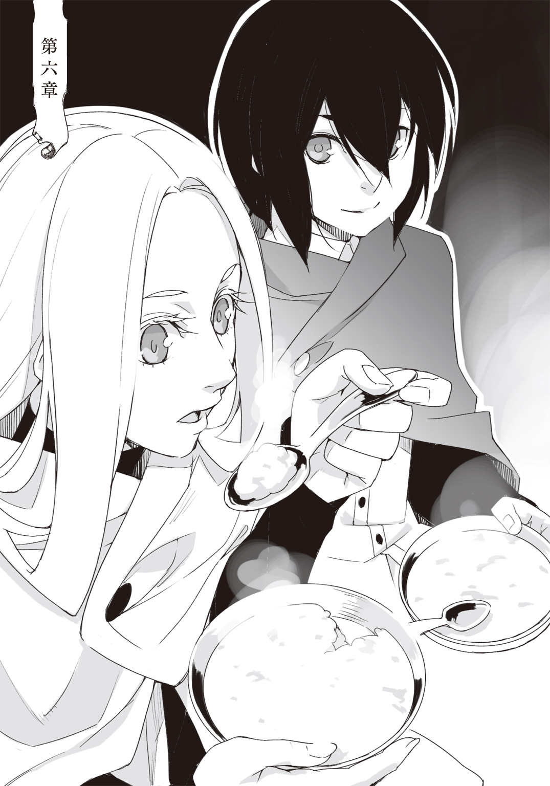
おおよそつつがなく探索は進む。
ランタンが八つ当たりぎみに大猿を挽肉へと変えたり、その強烈な一撃にリリオンが興奮したり、リリオンが転んだり、その際にランタンの外套を引っ摑んで巻き込まれたり、散発的に出現する大猿の群れと戦闘が発生したり、それを危なげなく勝利するなどしている内に迷宮の最奥へと近付いていた。
下層後半はどうやら大猿の住処であったらしい。
魔物は時折、迷宮より賜った武器を所有することもあったがこの大猿どもの武器は急拵えの自前である。大猿はその巨大な手に、針葉樹の太枝を握っていた。太枝を毟り取って武器とする知恵はあるが、それを加工して棍棒にするような文化はない、ということだ。
無論、棍術棒術を修めているわけもなくその使い方は力任せのぶん回しであり、ランタンはあっという間に四匹の大猿を片付けて最後の一匹を挟撃の戦形に落とし込む。
ランタンは戦鎚を手の中で回し、余裕の表情で肩に担いだ。
視線の先、大猿の背中の向こう側にリリオンがいる。
声を掛けようか掛けまいか。リリオンは身体の殆どを隠すように大楯を前に突き出した左半身。楯の上部からちょこんと顔が覗き、瞬きをしない目は大猿から逸らさない。
大猿は死んだ仲間の太枝を拾いざまに投げつけて、リリオンはそれを楯で受けつつじりじりと距離を詰める。大猿は性懲りもなく牽制として木壁を毟ってばらまく。だが、それだけだ。
ランタンの存在が大猿の後退を許さない。
リリオンは冷静だ。ランタンは頷き、ゆるりと息を吐きだした。
これまでのリリオンの働きぶりは初探索であることを鑑みれば、及第点どころか花丸である。けれどランタンは、あるいは少女自身も、少しの物足りなさを感じ始めていた。少女の能力はこの程度ではない。腕試しの手合わせ、月夜に剣を振るう少女の燦めきは黄金だった。
欲が出ているのかもしれない。
リリオンはいくつかの戦闘を経験し、その黄金の輝きの片鱗を垣間見せ始めていた。
大猿は投げる。木壁、枝葉、そして仲間の死体でさえも。リリオンは降り注ぐそれらを難なく受け止め、当初は楯に身を隠しているだけだったのが、今では受け流し、あるいは直撃に合わせて楯を押し出して迎撃すらしている。
攻撃を恐れず、攻めの姿勢を忘れない。
その姿をランタンは好ましく思う。
「リリオン、――気を付けるんだよ！」
そこそこ知能の高い大猿のことだ。リリオンに隙を生み出そうと投擲を繰り返しているが、それでは足りないことに気付いているだろう。
魔物は基本的に逃走行動を起こさぬ死兵である。最下層に退こうと上層へ抜けようと結局はどん詰まりだからかもしれないし、あるいは人類への敵意のためかもしれない。
そろそろ大猿の行動に変化が出る頃合いだ。その変化はより積極的で攻撃的。
大猿は根の絨毯を掘り起こし、そのまま地盤を引っ繰り返してリリオンに投げつけた。そしてそれを追いかけるように突進する。ランタンをまるっきり無視したのは、より可能性を高い方に賭けたのだろう。
大丈夫、な筈だ。
だがランタンは傍観しているだけで我慢はできない。援護できる位置まで身体を進めた。
「はあぁぁっ！」
リリオンは捲れ上がった壁の如き石塊に突っ込む。玉砕覚悟を思わせる鋭い加速は大楯を前に。石塊はリリオンの突撃に何の影響も与えなかった。楯の表面で爆ぜた石塊はまるで柔らかく握った雪玉のようで、突き抜けた先に大猿はいない。
「左！」
石塊を目隠しにリリオンの左へ回り込んだ大猿は、その手に木壁を握り込んで砕いていた。それは散弾である。大猿は鞭打つような鋭さでリリオンの横様へ投げつけた。
「るっ――らぁ！」
裏拳を放つように振り回された楯が突風を巻き起こし、風を受けた散弾が力を失い、また楯によって打ち壊されると粉塵となったそれが大猿の紅眼を襲った。
「――うん、よし」
ランタンが小さく呟くのと、リリオンが大剣を振るうのは同時だった。
大猿は一瞬だけ怯んだものの、剣撃を避けるために後方に跳躍し、迷宮の壁に指を突き立てて張り付いた。
だがそこは、まだ大剣の刃圏である。
リリオンの身体の影に隠されていた大剣は、鋒が地面を撫でるように滑り出し、そして鋭く浮かび上がった。大きく弧を描く逆袈裟は大猿の両膝を抵抗なく両断し、大猿は人間のような驚愕と、そしてすぐに苦痛を表情に浮かび上がらせた。
限界まで開かれた目は零れ落ちそうな程で、喉奥から絶叫を上げて大猿は壁から剝がれ落ちる。どう、と背中からまともに落ちて、大猿は痛みに藻搔いている。
その大猿にリリオンは隙なく距離を詰めた。
「えいっ！」
リリオンは楯を大猿の喉に叩きつけて、柔らかく尖った楯の下部は猿の喉にめり込んで頸椎を砕いた。大猿は背で地団駄を踏むように、大きく痙攣しやがて動かなくなった。
ランタンはリリオンが最後まで気を抜かずに止めを刺した光景に満足気に頷いて、まるで自らが戦闘を終えたかのように大きく息を吐く。そしてリリオンもまた大きな安堵を漏らした。
「はぁぁぁあ......、――やったあ！」
リリオンはランタンに振り返ると、大剣を掲げて喜びを露わにした。
リリオンが満面の笑みを向けると、ランタンもそれに応えて頰を緩める。リリオンが最初から最後まで一人で戦闘を終えたのだ。それも完勝といっていい内容だった。
ランタンはなんだか親鳥の気分だった。
大剣を楯に納めるリリオンにランタンは駆け寄りたい衝動を堪えて、勿体ぶって歩み寄る。
「やったね」
ランタンが掌を差し出すと、リリオンはその手にぱちんと手を合わせる。
その拍子にリリオンの手首に巻き付けられた深度計が揺れる。その色は青とも呼べないような青色だ。気の抜けた色だが、もう随分と深い所まできた。
「うん、やったわ！ でも、またランタンばっかり。一人でいっぱいやっつけちゃうんだもの」
笑顔のまま唇を尖らせて、ちらりとランタンを見つめるその視線。
自信は余裕と不満を生んで、ランタンは思わず苦笑する。ランタンは腰から狩猟刀を抜くと、くるりとリリオンへ柄を差し向けた。
「魔精結晶の剝ぎ取りもやってみようか」
「いいの!? うまくできるかしら？」
拗ね顔はどこへやら、あっと言う間にリリオンは破顔する。そして今度は不安へと。
ころころ変わる表情が面白い。
「楯はちょっと邪魔だね。僕が持ってるよ」
狩猟刀と引き替えに、ランタンはリリオンからひょいと渡されてずしりと受け取る。よくもまあこんな重たい物を振り回せるものだ、とランタンは呆れ半分称賛半分に思う。だがランタンも何だかんだで片手で楯を支えて、逆の手では戦鎚の鶴嘴で大猿を引っ掛けて、その死体を青い血溜まりから引き摺り出していた。
大猿の魔精結晶は右手の指だった。小指の退化した大猿の四指。ランタンは手首を踏み付けて、戦鎚を使って器用に指を伸ばす。リリオンはぺたんと座り込んで、それを覗き込んでいた。
青い結晶と化したのは人差し指の、その先端である。毛むくじゃらのごつごつした指が、第一関節から急に宝石のようになっている様子は悪趣味な義指を嵌めているようだった。
「ここ？ ここでいいの？」
「もうちょっと上だね。結晶の下側を削るように刃を当てて」
「うん」
「で、一気に、叩きつけるように。その狩猟刀は丈夫だから、遠慮いらないからね」
「――えいっ！」
指に刃を宛がって位置を確かめると、リリオンは一度深呼吸を。そして鉈で薪を割るように狩猟刀を振り下ろした。
きん、と硬質な音。結晶が指から切り離されて、リリオンは不安そうにランタンを見上げる。
「うん、上手にできたね」
一仕事終えた、とリリオンは額を拭う。転がった魔精結晶を拾い上げて、それを掌に載せた。
魔精結晶は蝮のように太く、第一関節だけだというのにランタンの中指程もある。毛むくじゃらと繫がっていた時は悪趣味だったが、リリオンの手の中にあってそれは宝石のようだ。
結晶は透き通る水青色である。
純度は高くもないが低くもないという所だろうが、そこに金銭的価値以外を見出したのかリリオンは魔精結晶に見惚れて口をぽかんと開けてにへらと頰を緩めた。
「見惚れるのもいいけどね」
宝石のような輝きにか、それとも自分の手際にか。
残念ながら魔精結晶は外気に触れさせていてはやがて溶けてしまう。魔精が溶け出さないように結晶を加工して装飾品とする道楽もあったが、装飾品としての魔精結晶は同重量の金よりも高価である。
「早くしないと台無しだよ」
ランタンが言葉で尻を叩くと、リリオンはあたふたと背囊を下ろそうとして混乱していた。
その姿は自らの尻を追いかける犬にも似ている。
「慌てなくていいから。背囊下ろして、結晶も貸して。向こうの四匹は一人でできる？」
「できるわ！」
「よし、じゃあ僕は待ってるから、やっておいで」
「やってくるね！」
ランタンはリリオンの背囊から保存袋を取り出して、今までに入手した魔精結晶の中に放り込んだ。リリオンは一つ結晶を切り取るとランタンの所に戻ってきて、名残惜しそうに結晶を袋に入れてはまた死体へと駆けていく。最後の魔精結晶を袋に入れて、それを覗き込むリリオンの視線を締め出すようにランタンは袋の口を三つ折りにした。
「ああ、わたしの結晶......」
「馬鹿言ってないで、ほら狩猟刀返して」
愛用の狩猟刀を取り戻し、鞘に収める。返される時にランタンはリリオンの指を見て、その指先の汚れが気になった。保存袋を背囊に放り込み、代わりに取り出したのは水筒である。
「あ、ありがとう。喉カラカラだったのよ」
「――手、洗ってからね」
「これぐらい平気よ」
リリオンは自分の手を確かめてそう言い、水筒を受け取ろうと差し出した。
ランタンはその指先に無言で水を垂らす。
「わっ、もうっ、......あう、はい」
リリオンは平気でも、ランタンは平気ではない。リリオンは急な冷たさに頰を膨らませたが、思いがけず厳しいランタンの視線に負けていそいそと指を擦り合わせた。
「きれいになったわ」
「うん、じゃあ」
ランタンはポーチからハンカチを取り出そうとしたが、リリオンはぱぱっと濡れた手を服で拭いて、ランタンの手から水筒を抜き取った。
「まあ、別にいいけど」
目を細めて喉を潤すリリオンを横目に、ランタンはぼそりと呟く。迷宮内でハンカチを使うランタンの方が異端であって、リリオンの方がこの点においては探索者らしい。探索に不潔は付きもので、ハンカチなんて洒落臭いものを所持する探索者は単独探索者と同程度に珍しい。
「リリオン、深度計見て」
「んー？」
水筒から口を離して、リリオンはぺろりと唇を舐めた。少女は水筒ごと手首を持ち上げて、深度計を眼前に揺らす。瞳はその水青色に気が付いて、はっと大きく開かれる。
「これって......？」
「そろそろ底が近いね」
「底？」
「最下層さ。ま、見ればすぐにわかるし、そんなに身構えなくてもいいよ。その色よく覚えておいてね」
「色？ うん、わかった」
「じゃあ、行こうか」
神妙な面持ちで深度計の色を目に焼き付け、ぶるっと身体を震わせたリリオンを安心させるようにランタンは軽く言った。荷物をしまうと寄り添うようにして探索を再開する。
きっともう魔物は出ないだろう。
◇◇◇
時計に目を向ける。
迷宮に降下したのは一四時丁度で、今の時刻は二一時を回ろうとしていた。これまで何度か小休憩とおやつのような栄養補給もしたが、さすがにそろそろ空腹を誤魔化しきれなくなっているし、疲労感も同様だった。
ランタンにあるのは肉体的な疲労よりも、ランタンは無自覚であったが、リリオンの前で気取っていたがための精神的な疲労である。欠伸を嚙み殺して、目を擦った。
最下層に到達したからといって、そのままそこに突入して終端の魔物と戦闘を開始するわけではない。取り敢えず今日の目標は最下層の確認までであって、それ以上は挑むにしろ引き返すにしろ明日の仕事である。
「ふぁぁ......」
嚙み殺した筈の欠伸がリリオンに伝染したようで、少女は声もなく吠えるように大きく口を開いて欠伸をする。そして猫のように目を擦り、ついでにその手で腹を押さえた。くるくるくる、となかなか可愛い音で空腹の虫は鳴いたが、ランタンは聞かなかったことにする。
「ほら、もうすぐだよ。深度計見て」
魔物も出現せずに三〇分程をひたすら歩いたところでランタンはリリオンに言った。
「あ、色が――薄い？」
「それが底が近い証拠」
周囲に漂う魔精の濃さに反応して青の濃淡を変える深度計が色を薄くしている。
最下層へ近付くということは、迷宮内の魔精の供給源である迷宮核に近付くことと同意であるので、本来ならば魔精は濃くなって深度計も色を濃く、と考えるのが普通である。
ならばなぜ深度計がその色を薄くするかというと、その原因は終端の魔物にある。
終端の魔物。迷宮の守護者。姿ある絶望。大妖。大魔。最終目標にして最大の障壁。ド畜生。
最下層にその身を構える終端の魔物は、その周囲にある魔精を貪っている。
やがて訪れる迷宮核を狙う不届きな探索者を八つ裂きにするために力を蓄えている。
ランタンもまだ薄ぼんやり知る程度であるが、熟練の探索者であれば深度計に頼らずとも、その身一つで魔精の増減をはっきりと感じ取ることができるようになる。
「魔精の減り方も、終端の魔物の強さを計る基準になるんだよ」
「減りが早いほうが、強い？」
「うん、正解」
ランタンは周囲に漂う魔精が薄くなっているのを僅かに、けれど確かなものとして感じ取っていた。その感覚は冬の風が身体から体温を奪ってゆく寒々しさに似ている。
それ程までに最下層付近の魔精の減少は著しい。
どうせまた阿呆みたいに強いんだろうな、と嫌な気分になった。
「ランタン、ランタン」
「ん？」
うんざりとしていたランタンの腕をリリオンが引っ張って、迷宮の奥を指差した。
「行き止まりよ！」
指の先には変わらず針葉樹の並木道が続き、けれど突き当たりが白い壁によって閉ざされている。それは突き当たりで直角に道が曲がっているわけでも、どこぞに隠された抜け道があるわけでもない。
これも知らないのか、とランタンは思う。
リリオンを連れていた奴らはやはり襲撃者崩れであって、探索者崩れですらなかった。
ランタンは足を止めて、胸に手を当てて息を整えた。
「――もう少し、近付こうか」
ランタンは袖を引いたリリオンの手を摑み、ゆっくりと行き止まりに近付く。
「あ」
リリオンはそれが何であるか気が付いたようで小さく声を上げた。
そこで足を止めるとリリオンがぎゅっと手を握り返してくる。
白い壁の正体は、濃い霧である。
迷宮口からミシャの手によって送り出されて、その際に通過したものと同じ類の魔精の霧だ。雪花石膏のように白く、あまりに濃密で滑らかなので道を塞ぐ霧が壁のように見える。
近付くことによって霧がほんの僅かだが、渦巻くように流れているのがわかる。
迷宮口の霧が地上と迷宮を隔てる境界であるように、この霧も迷宮と最下層が別世界である証明だった。森林迷宮の、果たしてその奥もまた針葉樹林であるのか、それとも。
「これって、どうやって、終端の魔物を確かめるの？」
リリオンは目を凝らして霧を眺めていたが、当たり前だがそんなことをしても最下層を覗き込むことはできない。視線は濃く分厚い霧の幕によって遮られ、リリオンは目の上に手を翳して背伸びまでして、遂にはふらふらっとそれに近付くのでランタンは慌てて手を引いた。
「ダメだよ」
自殺も甚だしい行為も自覚のないリリオンがランタンを振り返る。
ランタンは苦笑さえもなく、溜め息一つで背囊を下ろした。
取り出したのは魔精鏡と呼ばれる探索道具である。単眼円筒のそれを覗き込めば景色は青に染まって見えた。それは魔精の濃さである。
「へえー、ふあー」
手渡された魔精鏡をリリオンは早速覗き込んで、きょろきょろと辺りを見回した。そしてランタンの姿をじっと見つめて、唇がつまらなそうに突き出された。
魔精鏡を目元から外し、淡褐色の瞳がランタンを見下ろす。
「ランタンはあんまり青くないのね」
「そらそうだよ」
ランタンは見栄を張る様子もなく、肩を竦めて笑った。
魔精鏡には様々な種類があるが迷宮内で使用する物に限っては、どれも感度の低い、言うなれば意図的な粗悪品だった。そうでなければ地上とは比べるべくもなく魔精の濃い迷宮では、視界の全てが青く染まり何の役にも立たないのである。
そして霧の奥に、最下層に座する終端の魔物を確認するための魔精鏡は、廃品と言ってもいい程に感度が低くなっている。そうしなくては霧に含まれた魔精を透かすことができず、またあるいは、そうであったとしても青く見える程に終端の魔物がその身に纏う魔精が濃いとも言える。
「ま、そのおかげでこれは安いんだけどね」
ランタンは自分の魔精鏡を取り出して、霧の奥を覗き込んだ。
魔道具としては恐ろしく安いのには理由がある。どんな貧乏な探索者であっても、粗悪品であるがゆえに廉価な魔精鏡は所持している。魔精鏡を通して得られる終端の魔物の情報は決して多いとは言えないが、それでも無情報で挑むよりはずっとずっとましである。
挑むことをせず、逃げ帰る理由を得られるのだから。
「......――ふうん、......でかいなぁ。くそう」
ランタンは思わず悪態を吐いて、忌々しげに魔精鏡を外した。
隣ではリリオンがようやく霧の奥を覗き込み、騒ぎも動きもしない。恐怖に固まっていると言うよりは、鼻筋に皺の寄ったその顔は不満そうですらある。
どうしたんだろう、とランタンがその横顔を見上げると、リリオンも魔精鏡を外す。
「......よくわかんないわ、ぜんぜん動かないし」
魔精鏡を通して得られる終端の魔物の情報は基本的に四つある。
大きさ、形、動作、そして魔精の保有量である。
だがしかし、その四つですら確実に得られる情報ではない。
例えば、この霧の奥にいる終端の魔物は最低でも三メートルを超える体軀を持っていて、見る限りでは丸い。けれど丸い形をした魔物というわけではなく、ただ丸まって身を横たえているだけだ、と推測するのが精一杯だった。
獣が丸まって寝ているのかもしれないし、大型の不定系魔物かもしれないし、何か別のもっとおぞましい魔物であるかもしれない。
目に見えるのは青黒い小山でしかない。それは不吉が堆積しているかのようである。
リリオンが飽きるのも無理はない。子供にとって動かない青い塊なんて見ていても何も面白くはないだろうし、ランタンもそれを面白いとは思わない。
霧によって遠距離攻撃は阻まれるので、ここからではちょっかいを掛けることもできない。
「ま、しょうがないか」
「どうしたの？」
「取り敢えずはこれで充分」
得られたのは丸まった状態で三メートル以上の巨軀と、予想より高密度の魔精の保有量。それとおそらくは翼がない。なければいいなという程度の希望的観測である。たったこれだけだが、珍しいことではない。ランタンはさっさと魔精鏡をしまってリリオンの手を取った。
「今日の探索はここまで。ちょっとだけ離れて晩ご飯でも作ろうか」
ちょっとだけは本当にちょっとだけだ。
寝返りを打って霧の中に転がり込まない程度に距離を開けて、結局すぐに立ち止まった。
確かめるのは地面の感触だけである。太い根っこがあると寝る時に邪魔なので、できるだけ根が細かく編み込まれている場所がいい。
「――別にあれが起きたからって最下層から出てくるわけじゃないからね。それとも怖い？」
「怖くないよっ。もう、ランタンったらそればっかり」
リリオンは頰を膨らませて拗ねながらも、ランタンがよいしょと背囊を下ろせばそれを真似して、大きく背伸びをすれば少女も天井に向かって手を突き上げた。毛布を取り出して、ランタンが座布団代わりに尻に敷いて座り込むと、リリオンもそれに倣ってランタンのすぐ側にぺたんと座った。
ランタンが携帯用調理器具を取り出すのを、たったそれだけのことを終端の魔物を眺めるよりもずっと楽しそうに眺めていた。
「もう、近い。邪魔だよ」
「そんなこと言わないで。わたしお手伝いするから」
「じゃあ、これに水入れて。半分よりもっと上ね。結構たっぷり入れていいから」
眺めているよりも、自分でもやった方がもっと楽しい。ランタンはリリオンに飯盒を渡した。
「これなあに？」
飯盒の中には一度炊いた米を乾燥させた物と、刻んだ乾燥野菜と干し肉が入っている。これだけ見ると砂利かと思う残念さであるが、これを炊いて粥にするとなかなか美味いのである。
「水入れたら軽く混ぜて蓋して。指で混ぜるんなら手を洗ってからね」
「はあい」
ランタンはランタンで火精結晶コンロを弄っている。折りたたまれた四つの脚を立てて円形の五徳の下に嵌められている橙色の火精結晶に衝撃を与える。すると火精結晶は衝撃が通った部分から熱を発して、それは紙が端から燃え広がるように火精結晶全体を包み込む。
「あっつい！」
ランタンは慌ててコンロを地面に置いて、熱を持つ指先をちろりと舐めた。コンロの足に反射板を立てかけて火精結晶を覆う。これによって熱が上方に収束するのである。
リリオンが陽炎揺らめく五徳の上に飯盒を載せた。
「すぐできるかな？」
「んーこの熱の感じなら、一〇分、一五分かなあ」
ランタンが時間を告げると、リリオンはそれが永遠に出来上がらないと聞いたかのように、しょんぼりと肩を落とした。ランタンは再び聞かなかったことにしたが、リリオンの腹がぐるるると鳴いた。リリオンは恥ずかしそうにお腹を押さえている。
「できるまでこれ食べよっか。どうせ粥だけじゃ足らないし」
取り出したのは六枚綴りのビスケットと塊のチーズである。ビスケットは探索食として基本的なもので、プレーンタイプは味もへったくれもないが安価ゆえに新人探索者の常食であり、小金が入る頃にはその味に慣れてしまって何だかんだで愛されている。
だがランタンが好むのは木の実や干し果物が練り込まれたものだった。
取り出したそれは中に砕いた胡桃が練り込まれているし、生地自体もだいぶ甘い。それに薄切りにしたチーズを載せて食べるととても美味しい。
「おいしいねえ」
リリオンが頰を緩ませる。
ランタンが二枚を食べる間に、リリオンは四枚を腹に収めて、更にチーズを気持ち厚切りにしてそれだけを囓っている。長身のリリオンが両手でチーズを持って、遠慮がちに少しずつ囓っている様子は妙にいじらしい。
唇の端に付着しているビスケット屑をランタンはそっと払ってやった。
「ありがと。ねえ、ランタン」
「んー？」
「ランタンはさ、あの、お風呂の時とか、ええっと虎の時とか。こう、......ほら、ぼんってやったでしょ？」
「まあ、やったね」
要領の得ない言葉であるが、言わんとする所はわかる。ランタンはこくりと頷いた。
「ランタンって、......その、魔道使いなの？」
「ちがうよ、たぶん」
魔道使いとは身の内に保有する魔精を、様々な現象として発現させる技術を有する人々の総称であり、探索者の中にも少なからずその技術を保有するものがいる。
ランタンは爆発を起こせる。
襲撃者崩れを追いかけた時、湯船に溜めた水を熱した時、虎口に手を突っ込んだ時、それは起こった。少女の目には炸裂した爆発が魔道を行使したように見えたのだろう。
「ちがう、の？」
「うん、あれはねえ。......うーん」
どう説明すればいいものか。
俯きがちになり眉間に深く皺を刻むと、ランタンはむっつりと黙り込む。組んだ指の上に顎を載せてしばらく言葉を探していると、リリオンがじっと見つめていることに気が付いた。視線が質量を持つように肌を触った。
顔を上げてそちらを向くと、リリオンは言葉を待っているとは到底言えない顔をしていた。犯した罪を悔いるような、罰を恐れるようなそんな顔だ。
「どうかした？」
そう聞いてから、何となく気が付いた。
聞かれたくないことを聞かれた時の、言いたくないことを言う時の心の機微をリリオンはよく知っているのだろう。
少女はランタンの爆発を、己の血のようなものだと、沈黙を深読みして勘違いしたのだ。
「なんなんだろうね、これ。実はよくわかんないんだ。魔道かもしれないし、そうじゃないかもしれない。でもほら」
ランタンは右手を頭上に伸ばして、そこに太陽を握り込んだ。
一瞬の閃光と轟音。そして熱が広がる。
「かっこういいでしょ？」
爆発は少女の不安を吹き飛ばして、仄かな暖かさの残るランタンの右手がリリオンの髪を撫でる。ランタンはちょっとだけリリオンに顔を寄せて、淡褐色の瞳を覗き込むと悪戯っぽく片目を瞑って微笑んだ。
「でも急にどうしたの？ 気になっちゃった？」
――僕のこと。
甘ったるい囁きにリリオンは頰を赤くして、わたわたと手を振ってその表情を隠そうとした。
「ちがうわ！ あの、ちがわないけど......ちがうの！ あのね、えっとね。ランタンがぼんってやれば、そのすぐに、ごはんできるかなって、......思って」
沈黙は、恥ずかしい。
リリオンが首まで真っ赤になって、ランタンは珍しく大きく口を開けて声を上げて笑った。
「あっはっは。あー、あはは、はぁ、もう、おっかしいんだ。そうだね、そうかもしれないね。でもこれいまいち制御ができないんだよ。強い方にはどうにかなるんだけど、弱めるのがね。たぶん飯盒ぐらいの大きさじゃごはん台無しになっちゃうよ」
呼気に半分笑気が混じり息が抜ける。
ランタンは眦の笑い涙を何度も拭って、濡れた指で飯盒を指差した。
「でも、もう殆どできてるよ」
「えっ、ほんと!?」
飯盒がコトコトと鳴って、蓋の隙間から汁が吹きこぼれ始めている。ランタンは袖の中に手をしまって、そっと蓋を外すと米の甘い香りが湯気と共に立ち上った。
「わあ、いい匂い。もう食べていいの？」
「んー、もうちょっと水分飛ばそうか」
ランタンはスプーンで粥をぐるりとゆっくり攪拌し、その先端に粥を一掬いしてリリオンへと差し出した。
「ふうふう、......はい、味見して」
「あむっ、んっ。あつい、――んぅー、うすい」
出汁は干し肉から充分に出ているようだったが、塩分もとはいかなかったようだ。
ランタンは岩塩の欠片を指先で潰して粥の中に入れて味を調えていく。
乾燥米は当初の見た目は微妙だったが、出来上がりはなかなかのものである。
薄黄色の柔らかく溶けた米と水分を吸って膨らんだ乾燥野菜の黄緑色が目に美味しい。湯気の白に混じる香りはあくまでも甘く、けれど干し肉の棘のある臭気が舌を刺して唾液が溢れた。
ごくり、とリリオンが喉を鳴らした。
「さ、できたよ。お椀貸して」
新品の木椀にたっぷりと粥をよそってやるとリリオンは目を輝かせた。片手に椀を、片手にスプーンを構えて準備は万端だが、それでもランタンが自分の分をよそうまでは手を付けない。
肩を揺らして、はやくはやくとその瞳に急かされる。
「はい、じゃあいただきます」
「ます！」
ふう、と息を一つ吹きかけただけでリリオンはまだ湯気の立つ粥を口に運んだ。スプーンを口に咥えたままリリオンは目尻を蕩けさせた。
「――んー、おいしいっ！」
「うん、よくできてる。おいし」
米には肉の出汁がよく染みこんでいるし、乾燥野菜にはほろほろとした独特の食感とほっとするような甘さがある。干し肉にはまだたっぷりと塩気と芯が残っていて、嚙めば嚙む程に味が口の中に広がった。
「チーズ入れても美味しいかも」
熱さなど感じていないようにリリオンは一心不乱に粥を搔き込んでいたが、ランタンの一言によりぴたりと停止した。そして少なくなった椀の中とランタンの顔を何度も見比べている。
「おかわりはあるから大丈夫だからね。あと、ゆっくり食べな。粥とは言え消化に悪いよ」
「うん」
明日の朝には、最下層に入り終端の魔物と戦闘を行う。
目覚めた時に熱でも出ていればまた別であったが、口腔の火傷程度では探索を中止する理由にはならない。リリオンの存在も、やはりまだ不安は残るが、それも引き返すための理由としては不十分だ。終端の魔物の魔精保有量も気にならないわけではないが、それより青の濃い魔物とも戦ったことはある。
「......あつい」
ここまできたのだ。リリオンには最下層に踏み入るだけの資質も、資格もある。
「どうしたのランタン？ おかわりよそってあげようか？」
「......――うん、ありがと」
空になった椀を渡すと粥が山盛りに盛られて返ってきた。
手の中でずしりと重たく、熱すぎる程に温かい。
まるで生命そのもののようだ。
「リリオン」
「なあに？」
「んー、ふふ。ほっぺにごはん粒がついてる」
手を伸ばして頰に触れる。唇の近くの米粒をランタンはひょいと摘んで、リリオンは擽ったそうに目を細める。ランタンはそれをぱくりと食べてリリオンに尋ねた。
「おいしい？」
「とってもおいしいわ。今度はわたしが作ってあげるね！」
「それは楽しみ。またたくさんあるから、いっぱいお食べ」
「――うん！」
満面の少女の笑み。
ランタンの眼差しは優しく、明日はもうすぐそこに近付いてきている。
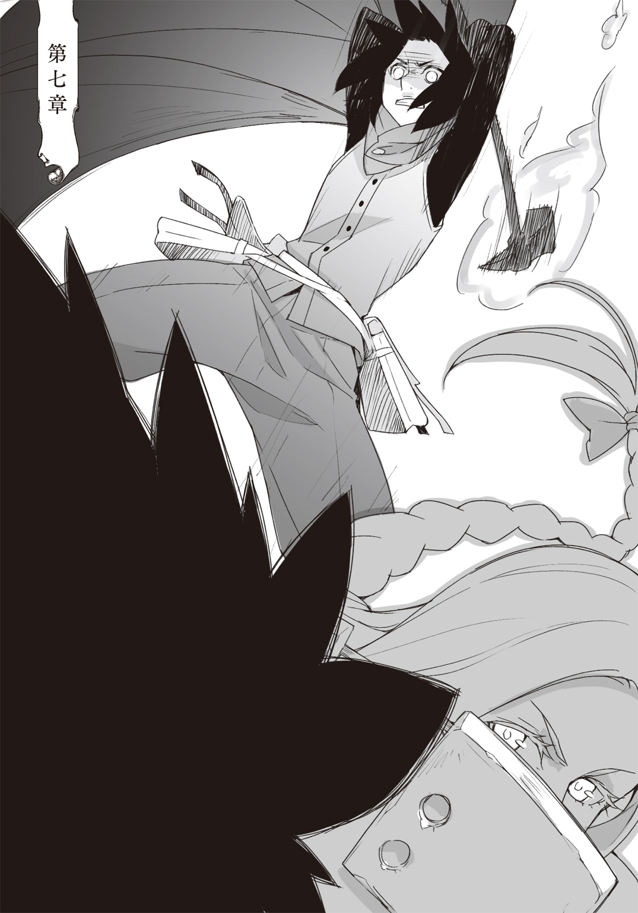
「やっぱり動かないわ。寝てるのかしら、それとも病気なのかしら」
終端の魔物の最後の確認をしてリリオンはそう言った。
睡眠はさておき、病気ということはまずないだろうと思う。何しろ相手は辺り一面の魔精をその身に宿す終端の魔物である。魔精により身体能力の強化は免疫機能にも作用するらしい。
もしも終端の魔物が病に身を伏せているのならば、弱っていることに幸運を覚えるよりも、それが感染性の物でないことを祈るしかない。
リリオンは魔精鏡を外し、それが動く瞬間をちょうど見ることができなかった。
膨らんで、萎む。たったそれだけの動きは、それが生物であることを示していた。呼吸は、もしかしたら欠伸だったのかもしれない。魔物はもう動かず、微睡みの中にいる。
ランタンは魔精鏡を外し、リリオンを見上げた。
少女は昨晩ランタンと一緒に眠ることを望んだ。
迷宮の最奥にあって不安だったのだろうし、恐ろしかったのだろうと思う。一緒の毛布に包まるとリリオンはランタンにしがみついて、ランタンが身体を撫でてやってようやく眠った。
その白い寝顔を見ていたランタンはあまりに眠れず、反面リリオンの寝覚めはよかった。少女は朝食もたらふく食べていたし、探索疲れも見られない。
「リリオン」
「なあに？ ランタン」
「もし寝てても、この霧を通ったら起きちゃうよ」
終端の魔物が睡眠状態であったとしてもこの霧を通り抜けようとする者は、霧に含まれる魔精を通じて魔物に感知される。この霧の魔精が終端の魔物に吸収されないのは、これ自体が魔物の感覚器官の一部であるという考察もあるが真実の程は定かではない。
なんにせよ霧を通るというのは視線を横切るどころか、体内を這い回るに等しい。この警戒網を搔い潜ることのできる探索者は高位探索者でも一握りであり、その技術はランタンには到底真似のできないものである。
「ええっと、......それって」
「霧を抜けたら即戦闘ってことだね」
にっこりと笑って言ったのは、リリオンを安心させるためである。
寝ているのかしら、病気なのかしら、という台詞は、リリオンは本当にそう思っているのではなく、そうあってほしいという願望なのだろう。リリオンはこの先にいる魔物を恐れている。
それは当たり前のことだ。ランタンだって戦うことは恐ろしい。
ランタンは背を丸めて俯いたリリオンの頰を両手でそっと包み込んだ。
淡褐色の瞳は感情がよく現れる。笑うと黄金程も明るくなり、今は緑が濃く重たげだ。けれど触れた頰は柔らかく、血色は良い。体温は少し熱っぽいけれど、それはきっと幼さゆえのものだろう。指先にそっとなぞった顎の骨が華奢だった。
両の掌に少女の頰を挟んだままランタンは背伸びをした。俯くぐらいでは足りぬ程にリリオンの顔は高い所にある。一晩寝て、もしかしたらまた大きくなったのかもしれない。
だけれども。
たった九歳の少女である。
白い寝顔と、縋り付いた腕の細さ。
撫でてやると震えるように力が抜けて、薄く開いた唇から漏れた寝息は甘やかだった。
ランタンが寝られなかったのは考え事をしていたからだ。
こんな迷宮の最奥までやって来て、こんな土壇場になってまで。
濃い睫毛に縁取られた目がランタンの目を覗き込み、しかし逸らされる。
ランタンはじっとリリオンの目を覗き込んだまま黙っていたが、このままでは埒が明かない。
「リ――......」
もしも、もしも少女との関係が恋人やそれに類するものであるのならば、このまま顔を引き寄せて口付けの一つでもして、君は僕が守る、などというような台詞を大真面目に伝えれば、この後の戦闘を含めた探索全般がなんだかんだで解決しそうなものである。
そうであったらどれ程楽だろうか、とランタンは思う。
今この場でそんなことを行えば、きっとそれは思考回路に異常があることが間違いないので、一目散に帰還の準備をしなければならない。
「――リリオン」
ランタンは正常だ。だから帰還はしない。
ランタンは最下層に入り、終端の魔物と戦う。これは覆ることのない決定事項だ。
リリオンの睫毛が震える。
少女は呼びかけに答えようと唇を開き、漏れたのは溜め息のような不安であった。
「......このまま、ここで待っていてもいいよ」
最下層直前、霧の前は安全地帯だ。この場所ならば魔物の出現はなく、終端の魔物は最下層に縛られていると言っていい。それがこの霧を抜けるのは、攻略されなかった迷宮が時間の経過に伴い崩壊するか、あるいは探索者に打倒されて迷宮資源の一つとなった時だけである。
ランタンが終端の魔物を倒せれば最善だが、あるいは負けたとしても一人で迷宮口直下を目指せばいい。ミシャに払う代金は背囊に納められている魔精結晶で賄うことができるし、残った分を換金すればそれからの生活だってしばらくは不便することはない。
リリオンが、まるでランタンの真似をするように、その両手で少年の頰を挟み込んだ。
顔が、目が、唇が近く。
「いたいっ！」
返答は頭突きだった。
「どうしてそういうこと言うのっ！」
リリオンは額を押しつけ、睫毛が絡みそうで、いっそ泣きそうな程の怒鳴り声はランタンの唇に嚙み付くようだった。大きく見開かれた瞳は奮然として、そこに涙のように湛えられていた不安の一切が消え失せている。
ランタンの弱気さえも。
「あんまり、行きたそうじゃ、なかったからね」
ランタンはそう言って少女の顔を押し返す。じんじんと痺れる額を片手で押さえ、赤くなったそこを撫でる。それは意図したものではなかったがリリオンからの視線を遮るようで、少女はランタンの細い手首を鷲摑みにして外した。
むう、と唇が尖る。それが引き絞るように横一文字に結ばれて、少女は鼻から大きく息を吸った。言葉に頰が膨らみ、あっという間に爆ぜた。
「わたしも絶対に行くからっ！」
「もう、顔近いって」
触れそうな程の至近で啖呵を切ったリリオンに、ランタンは笑った。最下層、白い魔精の霧の前で、終端の魔物との戦いを直前としてランタンはきっと初めて笑った。そして少女の顔を押し返すでもなく、その瘦せて柔らかい頰を撫で、笑みを意地悪に歪める。
「怖いのなら、無理をしなくてもいいんだよ」
その言葉にリリオンは噴火直前の火山のように顔を真っ赤に染めて、負けん気に目を吊り上げ、胸を反らす程に鼻から息を吸い込んだ。きっちり一秒。沈黙は吸気に感情を練り込むためのもので、リリオンは叩きつけるように吠えた。
「怖くないわっ!! ランタンの出番がないぐらいっ、わたしだって、とっても頑張るんだからっ!!」
じいんと響く鼓膜の痺れが心地良い。
ランタンはリリオンの頰から手を滑らせて、項を抱き寄せる。
こつんと額を合わせると、あっという間に少女は照れた。
「うん、がんばって。期待してるよ」
「......っ、――うんっ。わたし頑張るっ！」
「さて、僕もリリオンの出番がないぐらい頑張らないとね」
頷き、身を離す。ランタンは大きく深呼吸をして、ぐっと身体を伸ばした。
やるか。
ランタンの戦鎚も、リリオンの大剣大楯も戦闘に支障が出るような傷や歪みはない。リリオンにはいくつかの回復系の魔道薬を渡してもいるし、作戦と呼べる程ではないが戦闘方針も寝物語の代わりに伝えてある。
リリオンはまだ赤みの残る頰を抱きしめるように押さえていたかと思うと、その手を胸に当てた。それは昂った精神を落ち着けようとしているようにも、手の中にあるランタンの体温を胸の中にしまっているようにも見えた。
表情は穏やか。その黄金に似た淡褐色の瞳は力強い。
「リリオン、敵は生き物だよ。さっき欠伸してた」
「ええっ、ランタンばっかりずるいっ。わたしも見たかったのにっ」
「すぐに見られるよ。――作戦はちゃんと覚えている？」
最後の確認。リリオンは不満もたっぷりにこくりと頷く。最初はリリオンには後ろで様子見をしているように伝えてあった。終端の魔物がどのようなものであるか、それを知らないままに少女を前に出すのは、心が決まった今でさえ恐ろしすぎる。
「でもでも、じゃあ、わたしはいつ戦ったらいいの？」
「それはもちろん僕がピンチになったらだよ。その時は助けに来てね、リリオン」
「――まかせて！」
花咲くような笑顔で頷いたリリオンは、けれどはっとして。
「あれ、でもランタンがピンチにならなかったら――？」
「さてリリオン。最下層に行く前の最後の準備だ」
小首を傾げたリリオンをまるっきり無視して、ランタンは円形缶を取り出してじゃらりと鳴らす。するとリリオンは疑問も笑顔もすっかりどこかに追いやって、あからさまに嫌そうな表情になった。ランタンが取り出したそれは気付け薬の携行缶であり、その中に収められた丸薬の味をリリオンは思い出したようだった。
「わたし、飲まなくても、大丈夫だと、思う」
迷宮を探索することでリリオンは幾ばくかの魔精をその身に取り込み、身体機能の上昇にも、またこの迷宮の魔精自体にも慣れた。降下の際のような魔精酔いはおそらく起こさないだろうし、本当に大丈夫だと言う確信が己の内にあるのかもしれない。
けれど泳いだ視線はただ気付け薬を服用したくないと声高に宣言しているようなものだった。それに気付け薬は何も魔精酔いから復帰するためだけのものではない。
「必要なかったらぺってすればいいよ。嚙んだり舐めたりしなきゃそうそう溶けないから」
そう言ってランタンは手本を示すように丸薬を口の中に放り込み、舌先でそれを奥歯の隅へと転がしていく。
「うー、......んっ」
リリオンは摘まれた一つの丸薬をランタンの指先ごとぱくりと口の中に入れて、鼻頭に皺を寄せて一生懸命に舌で丸薬を隅っこへと追いやっている。
ランタンは携行缶をしまい、戦鎚を右手にくるんと手首を回した。リリオンも楯を左手に、けれど大剣はまだしまったまま。二人揃って深呼吸を。
「さあ、行こうか」
「――うん」
◇◇◇
手を繫いで、霧の中を行く。
霧は一気に走り抜けてもいいし、ゆっくりと歩いてもいい。霧に入った瞬間に終端の魔物はこちらに気が付くが、それで臨戦態勢になるわけではない。霧を抜けた瞬間に襲われることは、少なくともランタンは経験したことがなかった。今までのほぼ全ての終端の魔物は、霧からある程度の距離を保ち、何が出てくるかを窺っていた。
手を引きながら、ゆっくりと歩く。
視界は白一色で何も見えない。ただ肌にぴりりとした痺れがある。それは終端の魔物の視線なのかもしれないし、それが発する気配なのかもしれない。あるいは迷宮そのものの。
なんによせ友好的なものでは決してない。
リリオンもそれを感じ取っているのか、絡めた指の力が強められた。
このまま握り返してやりたいところだが、そろそろ手を離さなければならない。
「抜けるよ」
リリオンはそれを理解している。ランタンが指先から力を抜くよりも早く、少女は自らの意思によってその手を離した。霧の中で鞘鳴りが響いた。
そして視界は白一色から、光の下へ。
最下層は広く開けている。そこに森林迷宮の面影はない。霧の先は異界である。
直前の魔精の薄い寒々しさが消え失せて、空気がねっとりと肌に張り付くようだった。
針葉樹の姿は一つもなく、荒く掘り削ったような岩壁が空間を包んでいた。地層を縦にしたような複雑な暗色の複合。その継ぎ目から光が零れ、頭上高くには水晶に似た発光体が突き出ていた。霧の中の白い闇に慣れた目には眩しく思えるような光量がある。
光は中央に臥す終端の魔物を照らしている。光に浮かび上がる巨大な威容はまるで盛り上がった影のようでもあり、積み上がった泥の山のようでもある。のそっと顔をこちらに向けて、視線がランタンたちを捉えると酷く緩慢な動作で身を起こした。
その瞬間、影ははっきりと肉体を示し、泥は硬質さを帯びた。
微睡みを邪魔されて苛立っているのか、低く地鳴りのように喉を震わせる。
それは熊だ。
黒青色のいかにも硬そうな毛皮に身を包み、後肢二足で立ち上がったその姿は暴力的なまでに巨大だった。見上げるとランタンどころかリリオンの喉も白々と晒されるその体長は五メートルを超えている。左右に開いた腕が短く見えるのは、圧倒的な太さゆえの錯覚でしかない。その先端には湾曲刀を思わせる長く鋭い鉤爪が五つ剝き出しになっている。黒曜石を削り出したような黒い爪は、肉も骨も抵抗なく切り裂くだろう剣呑な輝きを放っている。
目が青い。口を開くと杭のような牙に囲まれた赤い口腔が覗く。
その瞬間にランタンの意識が塗り潰された。
「――っ!?」
それは熊の咆哮だった。衝撃波のような音圧に聴覚は音の一切を失い、叩きつけられた空気の振動に骨の芯までがびりびりと痺れて外套が飜った。ランタンは熊から視線を切った。
思考の一切を塗り潰したのは探索者の本能である。疾駆する熊の初動を見た。手足に力は入る。リリオンはどうだろうか、と振り返ると同時にランタンの足が跳ね上がる。
視界に入ったリリオンは放心していた。霧から抜けたそのままに大楯を左前に構えて、だが音を防ぐことはできなかった。自力で熊を避けるどころか、突撃を受け止めることすら適わないだろう。判断した瞬間にランタンはリリオンを蹴り飛ばしていた。
「しぃっ！」
力任せに押すような横蹴りがリリオンの身体を真横にすっ飛ばし、ランタンはその行く末を見ぬままに背後へ迫る気配へと意識を集中させる。蹴りの勢いのままに軸足を回して振り返り、目に触れんばかりのすぐそこに爪があった。
退くには遅い。蹴り足を大きく踏み込む。
ランタンは五爪の諸手を舐めるように搔い潜り、けれど懐に入り込んで利があるのは人間相手のことである。小軀のランタンにとって巨軀の懐は五臓六腑のいずれも好き放題に選べる狩り場であったが、四足を以て突っ込んできた熊の懐、双腕の内、眼前にあるのは幼身の頭蓋を丸呑みにして満たされず、上半身を喰らっても余りある獰猛な顎門だった。
戦鎚を勢い任せに橫に振ったのは探索者の本能そのものであり、口に放り込まれたものに取り敢えず顎門を閉ざすのもまた獣の本能である。
衝撃。
「ひうっ！」
喉奥から悲鳴じみた呼気が溢れ、ランタンの頭部がもげそうな程に後ろへ反った。しかしランタンは戦鎚を握って離さず、鎚頭の根元を左に摑み真一文字に構えて突進を受け止めた。
衝撃に奥歯で丸薬が砕け、熊の速度と重量は骨身のいずれも蹂躙して駆け、足裏に抜けた力は地面を放射状に陥没させた。
目が潤むのは砕けた気付け薬が辛いからだ。
「ぎいっ!!」
重い。嚙み締めた奥歯が砕けそうで、滲んだ涙を拭うどころか、口内を陵辱する気付け薬を飲み込む暇もない。ランタンはどうにか持ち堪えていたが、砕けた地面に足が滑り、熊を押し返すには衝撃の残滓が邪魔をしている。
口がでかい。捲れ上がった口唇から大きな牙が剝き出しになっていて、けれどそんな牙を使う必要もなく飲み込まれそうだった。
だが今、恐れるのは口の大きさでも、牙の鋭さでもない。凶悪な五爪は近すぎるがゆえに遠く、しかし暴力的な両腕をただ閉じるだけでランタンの小軀は薄氷のように砕けるだろう。
気付け薬のせいで口中に水っぽい唾液が溢れて止まらない。奥歯が滑る。
「――ぷっ」
緑が舞った。唾液で溶いた気付け薬をランタンは熊の鼻先に噴き付けて、熊の鼻腔粘膜と青眼を劇物とも称される刺激が灼いた。熊が、ぎゃう、と存外可愛く鳴いたがランタンの聴覚はまだ初撃の咆哮によって馬鹿になっているので聞こえない。
だが喉から溢れた悲鳴は頑なな咬合を弛緩させ、ランタンはその隙を見逃さず戦鎚を引き抜いた。手の感覚がない。僅かに仰け反る熊の動きに合わせてランタンの爪先が跳ね上がった。
「うっらぁっ！」
熊の横面を捉えた三日月蹴りは、しかしその首を動かすことすら適わない。頭部を支える頑強な頸椎に衝撃を殺されたどころではない。手応えは鋼鉄の塊を蹴ったような痛みである。
ランタンは一瞬で追撃を諦め、爪先に起こした爆発は熊の横面を踏み台にして後方に跳躍するためのもの。文字通り弾け飛んで熊から距離を取ったランタンは、着地と同時に駆けた。よろりと起き上がるリリオンの襟首を引っ摑むと、そして再び跳躍して熊の背後へ回り込む。
「ぐぅ――」
リリオンが呻いていたが、気にしている余裕はなかった。先程までランタンが居た場所には視覚嗅覚を消失しているとは思えない程、的確に爪痕が深く刻み込まれていた。
もう気付け薬から回復したのか。蹴りも、爆炎の影響も全くないようだった。
「しゃんとしな」
子猫の首根っこを摘み上げるようにリリオンを立ち上がらせて、少女は楯を杖に身体を支える。ランタンは戦鎚で楯の表面を小突く。音ではなく手に伝わる衝撃にリリオンは夢から覚めたようにはっとして、ランタンが涙を擦るのを見て慌てて自分の顔を拭う。
「こ――」
「怖くないからっ！」
強がった声。聴覚は復帰している。手の痺れも抜けた。
気付け薬の辛さに溜まった涙を少女は袖で拭い取り、ランタンが笑って緑の唾液をペッと吐くと、リリオンは口をもごもごとさせてぺえと垂らした。
「危なくなったら避ける、流す、受ける」
リリオンは頷いて、しっかりと楯を構える。その脇からそっと顔を覗かせた少女に、ランタンは熊に負けじと牙を剝くような笑みを浮かべる。
「それと、ちゃんと見ててよ。僕のこと。これくらいはまだ普通のことなんだから」
一言残しリリオンを背後へ置き去りにランタンは駆ける。
熊は立ち上がってランタンを待ち構えた。
腕が長い。ランタンは予測よりも随分手前で身体を沈めて、振り回された右爪の一撃を頭上に感じる。風圧で髪が暴れて、ランタンは叩きつけの一撃を外側に避けた。陥没する地面を横目に、狙いを肘に。左の袈裟懸けは肉も脂肪も薄い肘頭に叩きつけられて、しかし左腕が地面を掘り返して薙ぎ払われる。
「かったい」
岩石を纏い振るわれた腕に戦鎚を滑らせる。前腕から肘に滑り落ちて、ランタンは懐に飛び込む。がら空きの脇腹に戦鎚を叩きつけた。毛皮、脂肪、筋肉。ぐる、と熊の呻きが耳に聞こえ、掌に返ってくる衝撃は鈍い。ぐらりと熊が傾ぐが、それはただランタンを圧し潰そうとしているだけだった。
ランタンは熊の股下に飛び込んで、踵の浮いた左後肢を鶴嘴に引っ掛ける。意識的な横転に外力が加わり、胸から倒れようとした熊が地面を喰らうように顔面から突っ込んだ。自重の全てを首で支え、ぐらと傾いて肩を着く。瞬間、ランタンの頰が引きつる。
ぐるん、と。
体勢を立て直そうと熊が腰を捩り、回転は背骨を伝って接地する肩へ。力は肩甲骨で弾けて巨軀が振り回された。まるで水面蹴りだ。巻き上がった岩石が触れる傍から砕け散った。
振り回された鉞のような一撃をランタンは滑り込んでどうにかやり過ごし、けれど巻き起こる風に煽られて身体を浮かされた。間髪容れずの二撃目にランタンはやはり突っ込む。
四肢を使った獣の如き跳躍。襲いくる熊の臑に両手を突いて飛び越えて、回転の勢いに独楽のように立ち上る巨腕にランタンは不敵に笑った。頭上高くまで振りかぶられたそれはまるで巨木のようで、梢の五爪が黒い軌跡を引いて振り下ろされる。
爆発。身体が捻じ切れるような速度で射出された戦鎚が、振り下ろされる腕を横様に打ち付けて一瞬の停滞。それは沈黙に似て、弾けたのは鬩ぎ合う力の炸裂だった。雷鳴のような衝突音は最下層を揺らし、ランタンは右腕を伝う痛みごと戦鎚を振り切った。
があああ、と赤い口腔。払われた腕を引き寄せるように熊は顔面から突っ込んで食らいつこうと。ランタンは戦鎚の速度と重みに身体を引き摺られるままに膝を跳ね上げ、下顎を迎え撃った。牙が強引に閉ざされて火花を散らし、ランタンはそれを飛び越えて、五指を嘴鶴に纏めて腕を引き絞る。
青い目。
狙いを定め覗き込んだ瞬間にランタンの五指は獲物に飛びかかる蛸のように指を解いた。目潰しは眉間への掌打へと変じ直撃と同時に熱烈な紅蓮を撒き散らす。
ランタンと熊は反発するように弾き飛ばされた。
ランタンは中空で一回転して後方に音もなく着地し、熊はぐらりと後頭部から倒れ込み地面に鈍重な破壊を撒き散らしながらぐるんぐるんと後転二回。
「ふう、――はあ」
ランタンは喉の奥で留めていた呼気の全てを吐き出して、大きく肩を上下させて荒い呼吸を繰り返す。汗が頰を伝って顎から落ちて、肩口で顔を拭った。濛々たる砂煙の奥から視線は逸らさず、右腕を捩って感覚を確かめる。痺れはあるが無視できる。骨も肉も無事だ。
熊の青い目。底の見えぬ程、深い青は指を突っ込むことを躊躇わせた。きっと目を潰していたらそのまま眼窩に腕を囚われていただろうと思う。青い目。それはあるいはまだ、夢の中に身を横たえているがゆえのものかもしれない。
「寝起きの悪い......まったく」
のそっと立ち上がる熊の影が砂塵に透ける。
「リリオン！ 顔隠してろっ。吠えるっ」
背後に言葉を投げかけてランタンは距離を潰す。最も恐ろしいのは突進で、二足で立ち上がれば入り込んだ懐は人のそれとそう変わらない。ただ硬質な毛皮と、分厚い皮下脂肪と、高密度の筋肉とそれを支える堅牢な骨格が人のそれとは比べるべくもないというだけで。
目覚めの咆哮はもう音ですらない。
熊を中心に砂塵の一切が吹き飛ばされ、津波のような衝撃をランタンは戦鎚で迎え撃つ。
遠間で空打ったように見える縦振りは、しかし戦鎚に寄せる見えざる波を叩いて重い手応え。砂塵が晴れて姿を露わにしたそこには、紅蓮に顔を灼かれた化物が一匹。顔を覆う青黒い毛皮がいっそう濃くなり、ただ耳の先から煙を燻らせ、青い目はゆらりと燐光を引いた。
肉薄したランタンは熊の膝に蹴りを叩き込み、そのまま膝を足場に爪先立ちに。ぐるんと肩を回して戦鎚を振りかぶる。小軀を目一杯伸ばして戦鎚を喉元に打ち込み、反撃の薙ぎ払いをするりと躱し、再び膝を打つ。
振り回される五爪と、薙ぎ払われる巨腕を空かし、ランタンは股下さえも潜り抜けて戦鎚を振り回した。闇雲に振るわれているようでそれが狙うのは四つの関節と腰椎だった。熊に外傷はないに等しく、だけれどもそれはダメージがないわけではない。内部に蓄積する痛みに熊は苛立ち、己に纏わり付く羽虫のごとき小軀を追い払おうと身体を振り回す。
髪の幾筋かを爪が切り裂き、硬質化した剛毛に削られるように服が裂け、時にランタンは戦鎚で衝撃を受け流すも骨身に響く。一〇発打って与えた痛みを一発で逆転される不条理さ。窮屈そうに振り回される一撃がランタンにしてみれば必殺の一撃に等しい。
顔を舐める風圧さえも鬱陶しい。風は一粒、見えない程の砂粒を含み目を刺した。反射的に片目を閉じて、半闇の視界に地面を裂いて迫る鉤爪が見えた。
股下に迫る鉤爪を飛び越えて、ランタンは掌に足を掛け。
跳躍。
「あっ」
熊の力を利用しての跳躍は緊急回避のつもりだったのに、ランタンの小軀は天井近くにまで跳ね上げられていた。内臓の浮遊感に顔を顰め、水晶から放たれる冷光に目を細める。
「跳びすぎたぁ」
ランタンは一時の休憩とばかりにぐるりと首を回して、身体を捻って痛みを確認する。落下に合わせて、地上を見た。熊がこちらを見ている。せっかく閉ざしてやった口を馬鹿みたいに開けて、ゆるりと落下する小軀を待つ姿は餌付けされている飼い熊のようで。
ランタンは、――銀の尾を引く流星を見た。
リリオンが駆ける。左前に楯を構え、大剣は出遅れたように鋒を下に。飛び跳ねるような大股の一歩に少女の三つ編みが棚引いた。流星の速度。
その燦めきに熊が気が付いた瞬間、少女は前のめりに。
「あ、転ん――」
見たままを口にしたランタンは、リリオンが爪先だけで地面を蹴るのを見て心が震える。
楯を振り回し身体を開き、回し蹴りのような右足の踏み込みに大剣が追従した。流星かと思ったらそれは銀の龍であったのかもしれない。
三つ編みの尾が揺れる。大振りの横薙ぎ。リリオンの長身と踏み込み。大剣の射程は熊のそれを僅かに凌駕し、けれど鋒が舐めたのは毛皮の表面。薄皮一枚だけを切り裂かれた熊が見たのは、大剣に振り回された少女の背中である。
熊が笑ったように見えた。
牙を剝いて躍りかかった熊は五爪を開いて腕を振りかぶる。
助けに、と細めた目をランタンは思わず見開いた。
大剣に振り回されたのは上半身のみ。軸の右足は杭のように固定され、踏み込みの衝撃は腰まで駆け上がって力を伝える。回る。捻れた上半身が大剣ごと引き戻された。
「やあっ!!」
裂帛。少女の高く澄んだ声が熊の懐で響き、高速の斬り返しが熊の脇腹にめり込んだ。鍔元。大剣は肉を斬り裂くに至らず、脂肪層に深く埋まり、リリオンは更にそれを押し込んだ。
なんという膂力か。衝撃に熊の巨軀がぐらりと傾ぎ、斬り返しついでに引き戻された大楯が力任せに殴りつけた。
浮いた、熊の巨軀が。ほんの僅か、拳が入るかどうかの隙間だが、確かに浮いた。
「んうぅ」
ランタンは全身にたった鳥肌に妙な声を上げたかと思うと、爆発を背負った。
リリオンがあんなに頑張っているのに、こんな中空をふらふらしていては勿体ない。爆発加速に押し出された小軀は螺旋を描き、けれど一直線に熊に向かったその顔には上気して攻撃的な笑みが抑えられない。戦鎚を両手で握り込み、螺旋に委ねた身体が極限まで捩れる。
倒れゆく熊は空を搔き、その腕を、大剣と楯の間も通り過ぎ、いよいよ地面が近くなりランタンは身体の螺旋を開放する。撚った絹束が解けるように、なめらかに動き出した戦鎚が熊と地面の僅かな隙間に吸い込まれる。鎚頭が上向き、再びの爆発で花火のように跳ね上がった。
「ふっ!!」
両の掌に衝撃が食い込む。指と甲が揃って悲鳴を上げた。重い。熊の全重量が掌にある。骨の悲鳴が腕に、肩に、背骨を伝い、骨髄から血液さえを犯して全身に広がっていく。
ぎり、と奥歯さえもが軋みをあげて、視界の中にリリオンの戦闘靴が目に入った。
ここからでは膝頭までしか見えない。
ランタンは身体の上げる悲鳴を全て無視して戦鎚を振り抜いた。勢い余って身体が回る。
視線が膝頭から滑り、細い腰を、荒い呼吸に上下する未熟な胸を、白い喉へと昇っていく。
顎に汗、結んだ唇が柔らかそうに震え、頰が真っ赤。
「どうだあっ！」
リリオンはまん丸に開いた目で、錐もみ回転して吹っ飛んでいく熊を呆然と眺めていた。
ランタンはそんな表情に誇らしげに笑い声を漏らし、猫のような身のこなしで着地して、乱暴な動作で地面に鶴嘴を突き立てた。硝子を引き裂くような音を撒き散らしながら、地面にのたうつ搔き傷を描いてようやく止まった。
手応えは上々。
吹き飛んだ熊は緩慢に思えるように落下し接地横転すると、途端に水切り石のように大きく跳ね飛び、それだけでは留まらずに横滑りして地面を削り、遂には壁に激突してようやく止まった。最下層自体が真横にずれたような衝撃。
ランタンは揺れに足を取られぬように痛みを誤魔化しリリオンに近付く。
戦鎚で、ごん、と楯を叩く。
リリオンは白日夢でも見ていたかのようにはっとして、熊からランタンへと視線を動かした。花咲くように頰が赤く、まじまじと見つめる視線が熱っぽい。ランタンはその視線が妙に気恥ずかしくて、追い払うように手を振った。爪が内出血を起こして黒く染まっていた。
痛みは全身にある。
「もう、リリオン。まだピンチには遠いよ？」
それでもランタンは余裕綽々たる表情でリリオンに言った。
「――ランタン」
まだ夢の中にいるように名を呼ぶ。ランタンが視線で応えると、リリオンは赤い頰を更に赤く、意識だけが先走るように唇を震わせ、溢れた声はひたすら甘い。
「だって戦うランタンが、――とっても格好よかったんだもの」
リリオンが背筋を擽られたようにしなりと身を捩り、更に続ける。
「わたし、がまんできなくなっちゃったのよ」
胸の内から堪えきれぬ熱い吐息を漏らし、リリオンはきらきらの視線をランタンに向ける。追い払った手振りなどものともしない少女の視線に晒されてランタンの頰も色づく。
「もう、――なに言ってんの。堪え性のない」
ふいと熊に視線を投げて、呆れるような物言いは隠しきれない照れがあった。
「言うこと聞くって約束だったのに」
「だってだって、ランタンがあんまり格好良いのがいけないんだわ」
「――ああ、もうリリオン。あの熊公は、まだ死んじゃいないんだから集中っ！」
ランタンは自分に言い聞かせるように言って、少女はその一言に唇を結んだ。それでも抑えきれない喜色がある。共に戦うことを許可されて、リリオンの身体が歓喜に震えた。
ランタンは含羞を深呼吸の一つで散らし、ぐるりと手首を回す。
「リリオン、僕ばっかりじゃなくてちゃんと熊も見てた？」
「うん。大っきくて、重たくて、かたくて、はやい」
「ふふふ、その印象を倍に拡大するといいよ。腕の長さは爪を含めて更に倍。それにただ速いだけじゃなくて、猫みたいにしなやかに動く。全く以て嫌になるね」
「ランタン」
気を引き締めるために脅かすと、リリオンは興奮に僅かな不安を混ぜて名を呼んだ。ランタンはそんな少女に微笑みをくれてやり、少女の真似をするように戦鎚を右肩に担いだ。
「さあ、こっからが本番だ。気合い入れていくよ！」
途端に男らしい顔つきになった少年の横顔にリリオンが唾を飲み、少女はいつかランタンの手を握り締めたように大剣と大楯を強く握り締める。
待って、なんて少女は言わない。
「ランタンっ！」
先を駆ける小さな背中を追った。
濃い砂塵を切り裂いて、熊が爪も牙も、漲る殺意も大露わに飛び出した。熊の脇腹からじくじくと血が染み出している。リリオンの剣撃は分厚い脂肪に阻まれて致命傷とはならなかったが、それでもようやく傷らしい傷が熊に刻まれ、それがランタンの打撃によって内側から押し広げられている。黒青色の毛が青い血に濡れててらてらと不気味にぬめっている。
熊の怒りはリリオンではなく、ランタンに向けられていた。
熊は脇腹の傷よりも、小さな生き物に二度も吹き飛ばされたことの方が気に入らないのだろう。巨大な図体をして何ともみみっちい矜恃であることだ。
青の混じる唾液が牙に絡みつき、その奥から性懲りもなく咆哮が吐き出された。
「うるさ」
衝撃波にランタンは頭から突っ込んで、鼓膜が痺れて一時的な無音状態になるも、三度も喰らえば慣れたものである。意識は十全。熊の挙動の一つ一つがよく見えた。
砂塵から飛び出したそれは四つ足突進。熊は上体を捻り、大重量の巨軀を押し進めるのは既に慣性によるものに過ぎない。それは低空を飛んでいるようだった。捻転に合わせて左腕が持ち上がり、怒りがそこに流入するように左の肩背が隆起した。
瞬間。
巨腕が細竹のように撓る。肩に溜まった力の全てが腕を流れて、鉤爪の先端に収束した。
見える。ランタンは体勢を低くして爪に向かって加速する。間近に見る鉤爪は漆黒で、しかしうっすらと透けていた。
それがランタンの命を刈り取ることはない。
振り下ろされる渾身の怒りを一目見ただけで呆気なく視線を外し、するりと鉤爪の下を潜り抜けると熊の股下に滑り込んで背後に飛び出た。鉤爪はランタンの残影のみを捉え、水面を割るように地面に沈む。
あからさまな大振りなど、どれ程の威力を有しようと避けることは容易い。靴底が地面に触れた瞬間に爆発反転。骨折しそうな急制動の反動は幼身ゆえのしなやかな骨身に溶けてゆく。
熊の巨大な背中が全力攻撃を躱されたことで前に崩れる。そこにリリオンが駆け寄って、巻き上がった岩石から身を守るように楯を構え、今度は転ぶことなく最高速度で熊に激突した。
「らっ！」
鼻頭から横面を擦り肩口に突っ込む。リリオンの裂帛は衝突音に搔き消えた。気合いと一緒に一歩二歩と熊を押し返して進み、だが熊が一つ吠えると少女は一歩も動けなくなった。
均衡した力の鬩ぎ合いに、身動きが取れなくなったのは熊も同様である。
ランタンは担いだ戦鎚に左手を添える。狙いは延髄。首のやや後ろに浮かび上がり、彼我の距離は必中必殺。
呼気は鋭く、振り下ろした戦鎚は筆を払うような黒銀の尾を描き、直撃より先に破裂音がしたのは初速が音よりも速いせいだった。鎚頭が白い傘を突き抜けると、そこには陽炎が纏わり、しかしそれは大気摩擦でも断熱圧縮のせいでもない。
ふつ、とランタンの瞳が燃える。装甲のように固まった熊の剛毛が灼け縮れた酷い臭いに顔を歪める間もなく、陽炎揺らめく戦鎚が延髄に吸い込まれるように叩き付けられる。
爆炎。熱と燦めき。耳鳴りと。
聞こえたのは、熊の断末魔ではない。
それは超硬超重の金属同士が衝突するような鈍い音だった。手首に鋭い痛みがあって、肉に衝撃を吸収されるような手応えも、骨を砕く感覚も当たり前のようになかった。
散った黒の燦めきは戦鎚のものではない。
ランタンの頰が歪む。
「ずっりぃ......」
毛を失い剝き出しになった皮膚は、細かな黒鋼の鱗を十重二十重とびっしり貼り合わせたように硬質化していた。砕けて散ったのは表面から鱗の複層。
震える。鱗がちりちりと震動する。
「――な」
んだ、と口にする暇はなかった。寒さは汗に濡れた身体が風に撫でられたからで、それは熊の方へと流れる微風だった。全身が一気に粟立つ。
いや、これは。微風なんて生易しいものじゃあない。
それは魔精の流れである。
ランタンは咄嗟に腕で交差を作り身体を小さくした。瞬間、熊から放たれた激風にランタンは吹っ飛ばされる。上下左右もなく目まぐるしく回転する視界に一瞬リリオンの姿が映り、ランタンは少女を基点に天地と距離を反射的に導いた。
リリオンは楯を押しつけるように踏ん張っていたので、どうにか後ろに追い返されただけで済んだようだ。だがそれでも壁際近くまでの後退を余儀なくされている。熊と力比べをするような前傾姿勢に、べた足と低重心。それらを以てしても。
ランタンは壁に叩きつけられる直前、その身体に爆発を纏った。
「――ひぎっ！ ぐ、――あふっ、ごほっ」
殺しきれぬ衝撃に内臓が搔き回されて肋骨に罅が入った。しかし痛みは気付け薬の代わりに過ぎない。ランタンは剝がれ落ちるように落下して、着地の衝撃に顔を顰める。血が喉に絡む咳を漏らして、鉄臭い唾を吐き捨てる。
視線の先、ランタンは風を身に纏う熊を見た。足元から旋風のような風が立ち上っている。
熊が天を見上げるように吠えた。叩きつけるような咆哮ではない。長く喉を揺らして、歌うように高らかに吠える。響く声に天辺の光が震える。身に纏う旋風は勢いを増して嵐のように。
まさか空でも飛ぶんじゃないだろうな、とランタンは身を固くしたが、熊は重心深く地面を踏みしめている。
りん、と。
天辺に谺する残響の中、鉤爪が鈴のように鳴った。抑えきれぬような肉体の隆起は、熊の内にある魔精がざわめいているせいだ。
ランタンは息を呑む。
巨腕のその先には巨大な掌があり、そこから凶悪な鉤爪が五つ伸びて扇のように広げられている。爪が綴じ、薄く重ねられると、それには大鎌の如き不吉さが孕んでいた。
遠く、距離があった。熊がどれ程に腕を伸ばそうとも、どれ程の踏み込みをしようとも絶対に埋めることのできない間合いの遥か外。だがここは安全圏ではない、と産毛が総毛立つ。
天辺高くに谺する遠吠えの残響が降り注ぐ。
熊は極限まで反らした腕を、己を抱きしめるように振るった。
断ち裂ける。
鉤爪の軌跡は巨大な三日月を描き、風の刃が波紋のように広がり空間を切り裂いて疾走った。
「リリオンっ！」
刃は音よりも速いが叫ばずにはいられなかった。
ランタンは地面に飛び込むように刃を躱し、背囊を切り離し、前転して立ち上がると同時に走り出す。項に寒気。幾ばくかの後ろ髪と外套のフードが切り裂かれていた。
舌打ちを漏らす暇もなければ、安堵に胸を撫で下ろす暇もない。
それは高価な外套を台無しにされた苛立ちでも、首が繫がっていることへの安心でもない。
視界の奥でリリオンがどうにか風の刃を防いだのだ。楯を前に突き出すリリオンの基本の構えに風の刃が散った。
衝撃をまともに受け、リリオンは楯を跳ね上げられて体勢を崩した。
リリオンは熊を挟んだ向こう側にいる。がら空きの胴体。再び熊が風の刃を巻き起こしたら、少女の身体など容易く切断されてしまう。この距離ではランタンが庇うこともできない。
熊の身体に巻き付いた腕が、時間が遡るように解かれた。
「っ――らぁっ！」
刃が顕現する瞬間、ランタンが尋常ならざる加速で躍りかかると熊の腕に戦鎚を叩きつけ、爪の内出血が色を濃くした。ランタンの白目は毛細血管が破れて薄紅に染まり、だが赤光に染まった瞳孔に白くすら見えた。
熊の腕に纏わりつく風が霧散して、刃は形を成さずに砕け消えた。ランタンは打撃の反動で跳び、リリオンへの射線を遮るように立ちはだかった。足元で地面が焦げ付き、腰を沈める。
通さない。
ランタンは割れた地面の一欠片を爪先で蹴り上げると、振り上げた戦鎚がそれを砕いた。その行為を挑発と捉えたのか熊が苛立たしげに吠えて、腕を振るった。風の刃が飛ぶ。
見える。
一欠片分の砂塵に不可視の刃はその姿をありありと浮かび上がらせる。
まず一つ。ランタンは戦鎚を振り下ろして刃を砕く。初撃程の圧力はない。散った刃が割れた硝子のように外套を撫でたが、編み込まれた防刃耐魔がそれを無効化する。
ついで二つ。右腕によって放たれた刃は、ほんの僅か一つ目よりも更に弱い。脇腹の怪我のせいだろうか。ならば狙いは、とランタンは戦鎚に伝わる手応えに戦形を組み立てる。
そのごく僅かな間隙を縫って三つ目の刃が飛んできた。予想以上に連射が効く。手首を返して戦鎚を引き寄せ、刃を受け止めた。二つに割れた刃が服を浅く裂き、左の二の腕に血が滲む。
探索者にとっては怪我とも呼べぬ一筋。だがランタンは舌打ちを一つ吐き出して、鶴嘴で無数の瓦礫を掘り返して放り投げ、四つ目の刃を瓦礫ごと爆発で粉砕する。
熱砂を駆ける。
熊は左右の腕を振り回して次々と刃を生み出し、遠距離攻撃の術を持たないランタンがこのまま迎撃だけを続けていても、いずれ破綻が訪れることは明白だった。
二桁を超えて数えた風の刃をランタンは避ける。刃の狙いはランタンで、その行き先はリリオンではなく地面である。ばちん、と大地に亀裂。そしてもう一つ、熊が右腕を振るった。息つく間もない。砂の幕を抜け、ランタンは爪の角度から予測を付けて戦鎚を。
「――な!?」
予想していた手応えがない。射線がずれたのか、いや、ならば何故、身体に斬撃もないのか。熊はただ空を搔いただけで、ランタンは騙されたのだ。
「ぐ」
戸惑いを踏み潰し、ランタンが鎚頭の重みに泳いだ身体を斬り返そうと腹筋を固めた瞬間に、熊が本命の一撃を放っていた。脇腹の傷さえも擬態の一つ。風を纏った高速の薙ぎ払い。
見えはしない。だが確かにそこにある。圧縮された空気か、大気圧によって生まれた真空か。なんにせよランタンを裂かんとする不可視の刃がそこにあるのだ。回避も防御も間に合わない。
砕けば外套を撫で、割れば服を裂き、避ければ地面で爆ぜる。
腕一本。たぶん骨で止まる。だがそうなれば、この戦闘では殆ど使い物にならないだろう。残りの一本で殺せるだろうか。
ランタンは刹那の間に思考した結果を行動として吐き出そうと、左腕を引き寄せようとした。
影。
「――ランタンっ!!」
頭上を通して、どかん、と地面に打ち込まれた大楯の表面で風刃が砕け散った。びりりと痺れる破砕音が大気を揺らし、ランタンはリリオンによって楯の内側に抱かれた。ふあ、と一息。
楯の向こう側で熊が幾つもの風刃を放ったが、その全てが楯に防がれた。ランタンが振り返って見上げると、リリオンは表情を硬く睫毛を震わせた。
「ランタン、血が......」
「へーき。リリオン、助かったよ」
血が袖に染みを作っていたが出血は既に止まっている。風刃を腕で防いでいたらこの程度では到底済まない。切断された腕を繫げる術はこの場にはないし、腕が繫がっていても大出血は免れない。頭に昇った血を抜くにはいいかもしれないが、そのためだけでは割に合わない。
怪我の治療費は馬鹿にならないものだ。場合によっては探索収支が赤字になる。
だが治療費にもならないからといってこの熊、――嵐熊の脅威が減じるわけではない。
恐るべき巨軀とそれに見合った膂力。重さを感じさせない速度。急所を守る硬質な皮膚と、全身を覆う毛皮に脂肪に筋肉の鎧。それだけでもうんざりする程厄介だったのに、この風だ。
ランタンはそっと楯から顔を出した。
「ランタン、危ないわっ！」
「リリオンが守ってくれるんなら安心だよ」
風刃が楯に弾けてランタンの前髪を揺らした。直撃でも骨まで届かない。散った風の威力はないに等しく、取り敢えずの牽制という所だろうか。防がれるとわかっている攻撃に力を注ぐ程の低脳ではないようだ。直前、嵐熊の欺瞞に引っかかったランタンは皮肉気に唇を歪めた。
風刃は振り回した腕の速度だけで引き起こされた現象ではない。延髄を狙ったランタンを吹き飛ばしたあの激風も、鱗状の皮膚に風を排出する機構が備わっているわけでもない。ランタンは散った風に鼻を鳴らした。
「魔道だね」
例えば木虎がそうだった。虎が体内にある魔精を熱線として三眼から放ったように、嵐熊は魔精をもって風を操っているのだ。くそう出し惜しみしやがって、とランタンは唇を歪める。
嵐熊の最も恐ろしきは獣と思えぬ知性かもしれない。
腕を振るうことで発現させる風刃と全身から放出する激風。嵐熊の切った手札はこの二枚だが、まだ他に手札があるかもしれないし、その中に鬼札がないとも限らない。
だが余計な想像に攻め手を緩めるのはランタンの趣味ではない。
「あれは何を飛ばしてるの？」
「風の魔道。見えないし、リリオンはやっぱり取り敢えず防御優先」
「――ランタンは？」
リリオンをその場に釘付けにする風刃が止んだ。魔精切れや体力切れではなく、ただ楯の内側に二人が居る限りは無意味だと気が付いただけだろう。となるとこのままでは突進がくる。それは最も避けるべきだが、かといって身を晒せば再び風刃がくることは間違いなく、しかしランタンは楯の外へと飛び出した。
「攻めに決まってる！」
獣如きに騙される自分が嫌になる。だが騙される奴より、騙した奴の方が絶対悪い。
ランタンの瞳孔が苛立ちを示すように焦茶から橙へ、そして波に反射する光のようにまた焦茶へと不規則に色を変え、背負った紅蓮の赤さにその差異を失った。
爆発加速によって距離の大半を一瞬で潰し、向かってくるランタンに嵐熊の爪が空を薙ぐ。ランタンは沈み、その射線を躱した。欺瞞かもしれないし、そうでないのかもしれない。
だがないものを受け止めようとするから戸惑うのであって、全てを避けてしまえば問題はない。続く二撃目を飛び越えれば、もう目の前だ。
ランタンは振り下ろされた鉤爪に戦鎚を滑らせて受け流し、返す戦鎚で傷になっている脇腹を打った。しかし熊は怯むこともせず腕を振り回した。
脇腹の傷口は既に治癒している。
これ見よがしに脇を開けるのはやはり誘い。だがこの距離ならば風刃は関係ない。髪を揺らしたのはただの風圧で、風の魔道ではない。ランタンはそう自分に言い聞かせて、振り下ろされる一撃を紙一重で避け、嵐熊の二の腕に鶴嘴を叩きつけた。穿刺。肉を押し分けて骨に触れ、ランタンが引き抜くと血が溢れる。
出血は少ない。浅い位置の動脈を狙ったが外れたようだ。
舌打ちを、もしかしたら嵐熊もしたのかもしれない。
苛立つのは何もランタンばかりではない。ランタンに好き放題に打たれ、必殺の風刃も防がれた嵐熊の苛立ちは計り知れない。だがそれでも冷静である。
熊の大振りはランタンを叩き潰すためではなく退路を塞ぎ、身の内に抱き込むため。
巨獣の重心が沈む。震脚。
熊の足元で力が弾けて一人と一匹の中心に地震が起こり、地面が粉砕した。ランタンは咄嗟に体勢を立て直すも、跳ね飛んだ瓦礫の一欠片が額に小さな傷を作った。鈍い痛みに顔を歪めて、細めた視界に黒く突き出されたそれは破城槌のような膝である。
合わせる。ランタンは引き絞るように戦鎚を脇に構え、けれど突如伸ばされた膝から先がランタンの頭上を通り過ぎた。
退路を断ち、体勢を崩し、必中の膝さえ真意を隠す擬態。
狙いはリリオン。
ランタンは見えざる力によって己の首が後ろに捻られるような錯覚をして、だがそれを意思の力でねじ伏せる。がら空きの股関節。太股の動脈が硬質な毛皮を脈動させて浮いている。
あの子なら、きっと大丈夫。隙を逃がす手はない。
手首を返す。速度は重さ。ランタンは腕を鞭のように撓らせる。鶴嘴が深く太股に突き刺さった瞬間、嵐熊が劈くような悲鳴を上げた。どっと溢れた青い血に戦鎚が押し出され、直撃の衝撃が熊の身体を駆け抜ける。
地面に残った後肢が浮いた。巨獣の跳躍と回転。
ランタンの頭上に漆黒の影が差し、それは熊の全体重を踵に乗せた胴回しの回転蹴り。
「はああっ！」
迎え撃ったのは闇を払う銀の燦めきだった。
気合いが背後から響き、少女は大戦斧の如き蹴り足を楯で受け止め、横払いに弾き飛ばした。嵐熊は猫の身のこなしで着地をするも衝撃に血を溢れさせ体軸を乱し、ランタンの頭上を大剣が唸りを上げて横切った。
どいつもこいつも人の頭上で。防御優先と言ったのに攻めたがりなんだから、まったくもう。
どう、と左の二の腕に大剣が食い込む。毛皮を裂き、脂肪を貫き、筋肉を切断して、骨の半ばに埋まる。そこで止まった。ぎりり、と鋒が震える。
「押し込めっ！」
それは声ではなく、思念だったのかもしれない。だがリリオンはランタンの言う通りにした。
ランタンは滑り込むように位置を変え、戦鎚を大剣に叩きつけた。両刃の大剣。その刃が歪に潰れた。あとでグランに物凄く叱られるだろうが、嵐熊の片腕と引き替えならば安いものだ。
生木の割れるような音を立てて、嵐熊の左腕が切断された。どす黒い程に青い血が溢れる。
「――――」
音。鱗の振動音。
ランタンの目が見開かれ、血の流れを追った。
嵐熊の肩から連なる半ばまでの二の腕。そこから溢れた血の流れが歪んでいた。
「リリっ！」
かっとランタンの瞳に火が入ると同時に、嵐熊は全身から激風を放射した。
この激風は攻撃ではなく、防御のためのものだ。肉体にダメージが入り危機的に状況に陥ってからでないと発動しないのだろう。技ではなく本能で、発動直前に一度周囲の空気を引き寄せる予備動作があり、その際に延髄の鱗が震えて音を出す。
背後でリリオンがずるずると後退して、どうにか持ち堪えようとして地面を削る音が響く。予備動作と言っても一瞬のこと。リリオンは致命的な一撃を放つために攻撃に力を注いでいた。踏ん張れずとも仕方はない。
ランタンは激風に乗って後退し、視界に嫌なものを見た。青黒く、太く、きっと生暖かい。
狙ってやったわけではないだろうが、切断された嵐熊の腕が強烈な速度でリリオンに向かっていた。激風の影響で楯は半端、直撃は拙い。
ランタンは鶴嘴を地面に引っ掛け着地すると、爆発に身体を押し出す。横殴りに打ち付ける風の勢いに身体が捻じ切れそうだった。戦鎚を振り上げようとして肩の痛みに顔を顰め、一瞬のタイミングを逃さず左腕を槍のように突き出した。
指先に嵐熊の腕が触れた瞬間、硬く目を閉じる。目蓋を透かして閃光が瞳を灼き、指先に激痛。小さな手に生まれた爆轟は巨獣の肘を焼夷し両断するばかりではなく、熱に膨張する大気は両断された腕を左右に吹っ飛ばした。熱風に乗って硫黄に似た臭いが顔に触れ、灰となって髪に付着する。臭くて吐きそうだ。
嵐熊の腕は、それだけでランタンの体重を倍にして足らぬ程に重い。魔精が抜けようとも軽くなるわけではなく、高重量はそれだけで暴力だ。ランタンは拉げ折れた中指と薬指の痛みに顔を顰め、しかし骨接ぎをしている余裕がない。
激風が止み、静寂が一瞬。激風は強力だがその分だけ燃費は悪いのか。しかしあの巨軀にはまだどれ程の余力が残っているだろう。
嵐熊の全身は怒気と呼応するような逆巻く暴乱気流に覆われていて、太腿の穿孔からも二の腕の切り口からも忌々しいことに出血が止まっていた。
吠え、嵐熊が三肢で地面を蹴った。速い。身に纏う風が推進力となり、また空気抵抗を減らしているのか。ランタンは痛む身体に鞭打って戦鎚を構え、突進を受け止めた、筈だった。
「なっ!?」
衝撃が襲う直前に、踏ん張っていた足が浮いた。
嵐熊に纏わり付く荒れ狂う風がランタンを持ち上げたのだ。浮いた所に右腕が叩き込まれる。熊の前腕が薄い胴を消し飛ばす程の勢いで薙ぎ払われた。
防御も回避も間に合わない。
直撃の瞬間、衝撃を相殺するための爆発を巻き起こし、ランタンはすんでの所で胴を繫ぐ。だが殺しきれぬ衝撃に内臓が圧迫され、肋骨が幾つか割れた。迫り上がった横隔膜が肺腑の空気を残らず押しだし、ランタンは苦痛に喘ぐ。
「ひぎぃっ――ひ――ぇっ」
呼吸が引きつる。手中から戦鎚が零れ落ち、吹っ飛ぶ小軀に追い打ちの風刃が迫った。単発なのがせめてもの救いか。震える手が伸びて、ランタンはそれを受け止めようとした。
「ランタンっ！」
一瞬の意識の空白は、地面に叩きつけられた衝撃でも、腕を断ち切られた痛みのせいでもなく、リリオンに抱きかかえられた安堵によるものだった。ランタンは横合いから受け止められて、そのまま赤子のようにリリオンの胸に搔き抱かれている。
みっともない、とそう思ったが今、放り出されたらそれこそ赤ん坊のように無力である。ランタンは涎の垂れる口を喘ぐようにぎこちなく動かして息を整えた。
汗の匂い。甘酸っぱく湿ったリリオンの匂いがする。直前の硫黄臭のためか、それをいい匂いだと思った。ランタンはその甘美な匂いを胸一杯に吸い込むと、ついでに酸素が肺に取り込まれて暗転しかけていた視界が開ける。
「リぃ......」
リリオンはランタンを抱きかかえたまま逃げ回っていた。左腕に楯を嵌めて、右腕にランタンを抱いている。大剣は楯に収納されておらず、どこかに放り出されていた。
「ああ、よかった」
「リリオン......？」
呟いた言葉がリリオンの胸に押しつけられた。リリオンが急反転する際に強くランタンを抱きしめたのだ。ランタンは頰で柔らかくも小振りな胸を押し分けて、リリオンの顔を仰ぎ見た。
解けた銀の髪が靡いていた。光に透けて極光のように色を変える。
リリオンの髪が、ランタンが結い、三つ編みして足首近くにまで垂らしていた髪が腰の辺りでばっさりと断ち切られている。
「リリオン」
「わたしなら平気よ。怪我一つないわ」
「リリオン」
リリオンは応えず、その場に立ち止まるとランタンを降ろし両手で楯を支えた。嵐熊が突っ込んでくる。強烈な衝撃が楯に弾け、大気が震え、リリオンの髪が逆立った。足元で地面に罅が入り、だがそれだけでランタンは完全に守られている。
「――さっさと終わらせる。少し頼むよ」
「まかせて、――でも無茶はやあよ」
ランタンは笑うだけで言葉はない。折れた指を根元から扱き上げるように引っ張って接ぎ直し、喉奥に張り付いた血を吐き捨てた。親指で唇を拭うと、それは紅を引いたようである。
頭に昇っていた血がいくらか抜けた。ランタンは己の内に荒れ狂う感情を冷静に認識している。煌々と燃える瞳を彷徨わせて戦鎚を探した。それを見つけると少女の髪を愛おしく一つ撫で、少年は楯の内側から飛び出した。嵐熊の視線がランタンの尻を追いかけるが、リリオンが暴乱気流をものともせずに嵐熊を押さえ込んでいる。
ランタンは戦鎚の柄を引っ摑み、瞳から溢れた赤光が最短を駆ける。
その姿をカボチャ頭と誰かが呼んだ。それは橙に燃える瞳のせいかもしれないし、口元に浮くあどけなくも獰猛な笑みのせいかもしれない。あるいはくり抜かれたように空っぽな、後先を考えない苛烈な振る舞いのせいかもしれない。
ランタンはぞっとするような速度で嵐熊へと肉薄すると、楯をこじ開けんとする巨腕に鶴嘴を叩きつけた。暴乱気流にねじ込んだランタンの腕に無数切り傷が刻まれたが骨にまでは届かない。筋繊維が繫がっていれば充分だと言わんばかりに、一瞬で真っ赤に染まった腕も気にせずランタンは力任せに鶴嘴を深く押し込み、そして戦鎚が爆ぜて肉を抉った。
絶叫。風が止む。
その好機を見逃さずリリオンが楯をかち上げて嵐熊の身体を開く。激風はない。魔精が尽きたとは思えないが、来ないのならば攻めればいい。ランタンは自身の爆発で後ろに押し返される身体を強引に前傾姿勢に持ち直す。無理な挙動に罅で済んでいた肋骨は完全に折れた。
激風は本能だ。つまり今まで二度、嵐熊に命の危険を感じさせた。片腕の喪失はもちろん、延髄への打撃も。あれは完全に防がれたと思ったが、そうではないのだ。戦鎚が地面を舐める。
リリオンの髪を切り裂いた礼に顔面へ一撃ぶち込みたいが、腕を伸ばしても背伸びをしても届かない。
「うっらぁっ！」
ランタンの逆袈裟の一撃は爆発によって加速して嵐熊の胴、脇のすぐ下にめり込んだ。ぎし、と骨の軋みは己か獣か。ランタンは痛みに奥歯を嚙み締めて戦鎚を振り抜き、切り返し脇腹を殴打する。嵐熊の身体がくの字に折れ、ランタンは返しの一撃を腿に叩きつけた。
嵐熊が傾ぎ、それは意地の薙ぎ払いだった。
青く濡れる巨腕がランタンの頭部を砕かんと振るわれて、ランタンはそれを左手で受けた。
爆発。
繫いだばかりの指がまた折れ、甲が割れた。爆発は衝撃を相殺させるものではなく、自身の身体を旋転させるための更なる加速を呼ぶ。嵐熊に背を向けて、正面にはリリオンが。高速で流れる少女の顔が、はっきりとランタンを捉えて赤面した。
手負いの小軀。太陽の瞳。額を伝って流れる一筋の出血に片目を閉じて、青白い顔に血濡れた唇は紅い。血は凄艶な戦化粧のようで、唇に笑みが浮かぶ。
リリオンを背後に。
戦鎚が直撃する瞬間に嵐熊が激風を放射したが、旋転の勢いは止まらない。ランタンは寸前手首を返して嵐熊の肋骨さえ砕いて鶴嘴を根元深く突き刺し、だがランタンの握力は既に失われつつあった。掌の皮膚が引き千切れる既の所で戦鎚を手放して距離を取った。
嵐熊は弱っていたが、さすがに迷宮の主というだけあって気を抜けば膝が折れそうな程の重圧を放っていた。砕けた肋骨の影響を微塵も感じさせず、その腕を振り回す。
「わたしがっ！」
リリオンが楯を構えてランタンの横を駆け抜ける。抜き打ちに放たれた風刃は、地面を紙のように裂きながら猛烈な速度でリリオンに向かって疾走る。衝突まで瞬く余裕もなかった。だがリリオンが楯をほんの僅か、柔らかく寝かせた。風刃がその上を滑り、直撃を逸らした。
素晴らしい集中力だった。ランタンはその瞬間、リリオンにはっきりと見惚れた。
嵐熊は風刃を放ったまま腕を振り抜き、そのまま振り上げられた腕の間合いにリリオンが踏み込んでいる。真上から叩きつけられる一撃をリリオンは受け止めて、嵐熊は闇雲に少女に突進した。鼻頭をぶつける程に不格好な頭突きをして、楯の表面に牙を滑らせ、半ばまで二の腕さえ叩きつけて、鉤爪を振り回す。
リリオンはそれを逸らし、受け止め、殴り返すも嵐熊の猛攻は凄まじい。嵐熊の掌が楯の表面を叩き、鉤爪が楯の内側に引っ掛けられた。
跳び蹴り。ランタンの爪先が嵐熊の脇腹に突き刺さって鮮烈な紅蓮が迸る。硬質の体毛が灰になり、炭化した皮膚がぐずぐずと崩れ、その下から鮮やかな色の肉が。収縮。
劈くような大絶叫は、その喉奥から風を喚んだ。
嵐熊の口腔は今や血に染まって真っ青で、吐き出されたそれは漆黒の風塊だった。吐血を孕んだそれは楯の表面に壮絶な黒を撒き散らして、ランタンの心臓は高く鳴る。
ランタンの稼いだ須臾にも満たない間隙に、リリオンは体勢を立て直して受け止めた。
しかし大きく後退したリリオンの表情は強張っている。ランタンも口を半開きに肩で息をし、同じ表情をしている。
それ程にギリギリだった。
「剣をっ！」
「――はい！」
少女を勇気付けるようにランタンは表情を変じて叫び、リリオンは応える。
武器が必要だった。嵐熊は血を失うにつれて魔精を減じ、しかしそれでも爆発は命までは届かなかった。無手ではどうしようもない。ランタンは汗と血を拭い、そして己の状態と使えそうなものを確かめるように身体を撫でる。
視線を嵐熊の足元に。
「僕の――」
戦鎚を踏みつけにしている。
引き寄せられるように歩き、早足になり、走った。爆発による加速は必要ない。嵐熊の攻撃手段は突進、鉤爪、風刃。身に纏う暴乱気流は既に失われて、先程の風塊は激風と同じく不随意の魔道だ。ランタンの身体も十全ではないが、避けるのは難しくない。
横薙ぎは当初と比べると緩慢ですらあり、ランタンはそれを避け、何かに引き寄せられた。
激風とは違う、はっきりとした吸引。鉤爪の描く三日月の軌跡は、まさしく闇夜の月のようにそこに浮かんでいた。
真空の三日月にその欠けを埋めるように空気が流れ込み、ランタンは吸い込まれ――
「は」
ランタンは自らの首を裂くようにして外套の結びを解いた。切り離された外套によって真空は塞がれ、呆気なく自由になったランタンは鼻で笑った。鬼札にしてはお粗末だ。ただの悪あがきでしかない。踏みつけにしている戦鎚もあるいはランタンから武器を取り上げるためか。
ランタンは嵐熊に跳びかかった。もし激風が来ても耐えられるように嵐熊の毛に指を巻き付けて握り締め、腰から狩猟刀を抜き放って逆手に握り込む。
毛を摑む右手は振り解かれまいと力を入れた瞬間に傷口が開いて血が溢れ、骨折を無視して狩猟刀を握る手は痺れる程に痛く、熱い。
手間かけさせやがって。
ランタンは硬く握り込んだ狩猟刀を、鶴嘴によって穿たれた傷口に叩き込んだ。骨は既に砕いてある。狩猟刀は一息に根元まで埋まり、ランタンは手首を捻った。
嵐熊は絶叫し三肢を振り回したが、ランタンは祈るような澄んだ目をして平然としている。
深く、呼吸を一つ。
この狩猟刀は大振りでランタンの手には少しだけ余ったが、それでも何にでも使う程に気に入っていた。魔物の解体も、塩漬け肉を薄切りにするのも、バターを塗るのにさえ。
戦鎚と同じく、苦楽を共にした相棒である。肉体の一部である。
さようなら、と祈りを捧げてランタンはその刃を爆発させた。
砕けて無数の破片と化した狩猟刀が嵐熊の肺腑を攪拌する。
ランタンは嵐熊から飛び降りて、手元に残った柄をベルトに押し込み、足元から戦鎚を拾うと吐血を被らないように後退した。
嵐熊はもう痛み以外を、ランタンもリリオンも認識していなかった。大量の血を溢れさせて狂乱している。振り回した鉤爪から辺り構わず風刃を放って、それは生命の流出に他ならない。
さっさと息絶えればその苦痛から解放されるというのに、嫌になる程にしぶとい。
ランタンは焦茶色の冷めた視線で嵐熊を眺めた。激痛にのたうつまま、無秩序に暴れ回る嵐熊は、まさしくその身で嵐を体現しているようなものだった。
どうしたものか。
あの狂乱に飛び込む程の激情は、すでにランタンの中から失われていた。
そんなランタンの心中を察したわけではないだろうが、リリオンが剣を構えて走った。弓弦を引くように大剣を構えて、引き絞られた背筋から繰り出される平突きは幾重もの風刃を纏めて穿ち、歪むことなく一直線に嵐熊の胸に突き刺さって背中に抜けた。
ランタンによって一つの肺を潰されて、そして残った肺をリリオンに穿たれた嵐熊は声無き声で高く吠え、しかし重たげに腕を振りかぶった。リリオンの表情が驚愕に歪み、深く差し込んだ大剣は抜けず、焦りゆえに柄から手を放せないでいた。
まったくもう。
「ランタンっ!!」
「はいよっと」
助けを求める切迫したリリオンの叫びに、ランタンは大剣の鎬にふわりと飛び乗る。
「そのまま支えてね」
同じ目線に嵐熊の顔がある。腕を伸ばしても、背伸びをしても届かない顔が。
「おらぁっ！」
ランタンはその眉間に目がけて、骨身が軋むのも楽しげに全力で戦鎚を振り抜いたのだった。
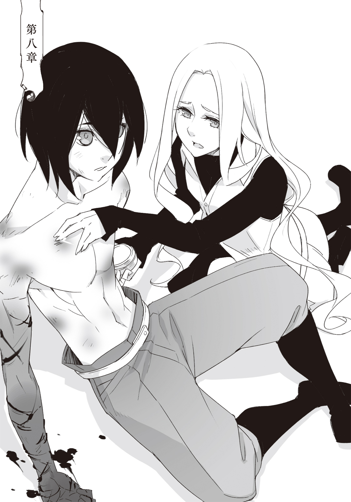
胸から生える大剣をずるりと引き抜きながら嵐熊がゆっくりと後ろに傾いてゆく。
ランタンは大剣から飛び降り、少女の隣へ。膝は柔らかく着地の衝撃を和らげたが、それでも全身に痛みが走った。
ランタンは、あ、と表情を歪める。
打撲、裂傷、骨折、その他。骨肉の全てから発せられる痛みが強く自己主張をし、乳酸の溜まった筋肉がこっちも忘れるなとふて腐れるように痙攣した。
かくん、とランタンの身体が沈んだ。
「わあ」
驚いた声にさえ張りがない。
「ランタンっ！」
リリオンがあれ程手放せなかった大剣をあっさりと投げ捨て、慌ててランタンの身体を支える。ランタンの代わりに地面に転がった大剣が鈍く響き、そしてその音色を搔き消すような地響きを鳴らして嵐熊が仰向けに倒れた。
最下層のすべてが悲鳴のような軋みをあげて、天井から剝離した光源の破片が、にわか雨のようにぱらぱらと降った。
リリオンに支えられてなお地面が揺れる。それは疲労によるふらつきのためではない。嵐熊があまりにも重たいせいだ。どうと倒れ込んだ際に巻き起こった風が、まるで最後の抵抗であるかのように瓦礫を巻き上げて吹き荒んだ。
リリオンがランタンを抱きしめてその風から身を守る。
こうして楯の内側に抱かれるのは何度目だろうか、とランタンは安心感を覚える己にふと気が付いた。この子は本当にピンチの時に来た。それは嬉しくもあり、恥ずかしくもある。
おかしいなあ、とランタンは思う。
リリオンの出番がないぐらいに、格好良く決めるつもりだったのに。
ランタンは痛む身体に鞭を打つ。ならば最後の最後だからこそ、しゃんとしなければならない。温かさや柔らかさが名残惜しくないと言えば噓になるが、ランタンは平然とした表情を作って少女の顔を見上げた。
「ありがと、もう大丈夫だよ」
「ほんとう？」
「ほんと」
心配するリリオンに頷きを返し、いよいよ震えそうになる足に力を込めた。それは男としての見栄だとか矜恃だとか、あるいは心配するリリオンを欺くためだけではない。
迷宮核が顕現するのだ。
穏やかな引き潮がやがてその勢いを増し、大きな波を連れてくるように。
自らの身体に宿る魔精が僅か、奪われるように失われたかと思ったその時、吐き気を催すような痛みがランタンを襲い、またリリオンが顔を青くして膝から崩れる。
「ぐっ」
ランタンはきつく奥歯を嚙み締めて、咄嗟にリリオンの腰を抱き支えた。痛みは全身の骨に鋭い棘が生えて内側から肉を刺すようだった。
凝縮して形を成した迷宮核。
それから零れ、溢れ出した魔精が最下層を満たし、二人の身体に吸収されたのである。
強く感じる痛みは魔精酔いによる急激な感覚の鋭敏化によってもたらされたものだ。
本来は魔精により感覚が鋭敏化しようとも痛みを強く感じることはない。正確には痛みに対する耐性も同時に向上し互いに打ち消し合うために強く感じることもなければ、弱く感じることもない。
だが急性中毒症状である魔精酔いの場合は全ての感覚が、一時的なものであるが無秩序に、滅茶苦茶に跳ね上がるのでこのようなことが起こる。
リリオンの手から楯が零れ落ちて音が耳を打った。その響きは熊の咆哮よりも酷く脳を搔き回したように思える。視界も先よりも大きく揺れた。地揺れは疾うに収まっているが、心臓の鼓動、その振動ですら拡大されている。
ランタンはゆっくりとした呼吸を何度も繰り返して、どうにかポーチから気付け薬を取り出してそれを奥歯で嚙み砕いた。味を感じないのは強化された味覚に対し与えられた刺激がその知覚の限界を大幅に超えたからだろう。ただぼろぼろと涙だけは流れている。
ランタンはそっと戦鎚を手放し涙を拭いて、リリオンを寝かせた。
魔精の吸収による能力強化は次第に慣れ、また強化率も大抵は鈍化していく。
初めて迷宮核の顕現に立ち会ったリリオンの感覚の跳ね上がり方は酷いものだろう。ランタンの初体験はちょっと思い出したくもない。
この様子では気付け薬を口に含ませたら、冗談ではなくその刺激にショック死してしまうかもしれない。可哀相だが苦しみは時間に癒してもらうしかない。最大の脅威である嵐熊はすでに排除されているのだから時間はたっぷりとある。
戦っている時には何時間も戦っているような気もしたが、時計を見てみれば実際に過ぎ去った時間は一時間に満たない。
ランタンは無言で、しかし安心させるように柔らかく微笑んだ。それが認識されていないと理解していても。罅の入った硝子に触れるように可能な限り優しく、短くなってしまった髪を撫でた。下手に触れると傷つけることになる。額に浮いた汗を拭ってやれないのがもどかしい。
すぐ戻ってくるよ。口には出さずランタンは立ち上がる。
背囊を回収し、水筒と保存袋を取り出す。戦鎚を、そして大剣を拾い上げると鋒を引き摺りながらゆっくりと嵐熊に近付いた。
ランタンの魔精酔いは既に殆ど治まっている。しかし怪我は当たり前に痛む。だけれども治療よりも先に迷宮核を回収しなければならない。迷宮核は終端の魔物の魔精結晶であり、道中の魔物とは違い結晶化する部位は決まっている。
心臓というべきか、あるいはその魂である。
解体のための狩猟刀は失われてしまった。ランタンは切なげに息を吐いて、その気持ちを洗い流すように口を濯ぎ、血と一緒に吐き捨てた。腰に戦鎚を結び、大剣を手にする。
血を流して萎み、しかし臥しても山のようである嵐熊の死骸によじ登った。
大剣の鋒を嵐熊の鳩尾に押し当て、強い毛皮に体重を使って突き刺した。体重を掛け刃を肉に沈め、鋒が胸骨に触れると骨の表面を撫でるように喉元まで裂く。むわりと生臭い熱が。
真白く分厚い皮下脂肪と弛緩した筋肉。
ランタンは身体ごと鋒の向きを変えて、肋骨から肉を削いだ。
硬い筈だ、と呆れる。太く白い肋骨が檻のように迷宮核を閉じ込めている。青い血溜まりの中に浸り、それでも青い迷宮核は嵐熊のしぶとさを納得させる巨大さだった。
ランタンは立ち上る強烈な死臭も気にならないように唾を飲んで、唇に垂れた汗をぺろりと舐めた。大剣を戦鎚に持ち替えて袖を肘まで捲り上げ、不安定な足場で戦鎚を構えた。
「えいっ！」
頑強な肋骨を砕き、その度に自身の肋骨も痛む。だがランタンは気にした様子もなく、嵐熊の肋骨を鶴嘴に引っ掛けて退かし、戦鎚の血を振り払うとベルトに結んだ。ランタンは身を乗り出し、指先で血溜まりに沈んだ迷宮核を寄せた。
生暖かく粘性のある血は蓮の葉を打つ雨粒のように迷宮核の表面を玉になって滑り落ちた。
両手に少し余る程の大きさ。光に透けて指の隙間から青が溢れる。色の表情を変える様は凝縮された魔精が嵐となって荒れ狂っているようだった。
「らんたん」
ランタンが死骸から降りもせず、うっとりとそれを眺めていると、まだ滑舌の覚束ないリリオンが下から声を掛けた。長く陶酔していたのか、それともリリオンの回復が早いのか。
ランタンははっと視線を向けて、死骸から飛び降りた。
「――いっ、――たくないよ」
着地の衝撃が傷に響く。学習しない己を内心で罵倒しながらランタンは強がる。
「ほんとだよ」
その表情は噓を吐いていることを白状しているも同然だったがランタンはもう一度、本当だよ、と繰り返して迷宮核をリリオンの眼前に突き出した。せっかくの迷宮核を目の当たりにしてもリリオンの表情は晴れない。
魔精酔いの影響も残っているのだろうし、ランタンのことも心配なのだろう。
もっと気合を入れて見栄を張ればよかった。ランタンは表情から苦痛の一切を消して、迷宮核の輝きに負けずとも劣らない輝く笑みを頰に湛える。
「ほら、リリオン。すごいでしょ？」
まだ青白さの残るリリオンの頰に薄紅が浮かび上がった。
「うん、すごいきれい！ すごい、おおきい」
リリオンは瞳をうっとりさせてランタンを、そして眼差しを伏せると人差し指で迷宮核の表面をつつと撫でた。まるで恥ずかしがってもじもじとしているようで、ランタンも何だか少し気恥ずかしい。
「撫でるのもいいけど、しまわないとね。そこの袋取れる？」
「――うん」
返事をしてからたっぷり五秒程結晶を撫でて、リリオンは嵐熊の脇に置かれた保存袋を拾い、その口を広げてランタンに差し出した。ランタンはその中に迷宮核をそっとしまう。
「じゃあ、この結晶もリリオンに持って帰ってもらおうかな」
「わたしが、いいの？」
「うん、――でも責任重大だよ。ちゃんとできる？」
「まかせて！」
口を縛った袋をリリオンは強く胸に抱きしめた。
ランタンはその様子を微笑ましげに見つめて、水筒の水でジャブジャブと手を洗った。神経質に爪の間まで清め、しかし内出血に染まった爪は塗ったように黒紫のままだった。ランタンを汚すのは青い血ばかりではなく、自分の赤い血もある。
右の前腕は粉砕機に突っ込んだような有様で水を掛けると染みて痛んだ。左手の折れた指は腫れていて冷やすと気持ちいい。冷静になると手首も挫いているのがわかった。
「リリオンは痛い所は？」
「ふえ？」
保存袋の上から迷宮核をぽんぽん叩いていたリリオンは悪戯が見つかったように変な声を漏らした。そして地面に保存袋を置いて、自分の身体を弄った。
「わたし、――平気よ！」
「左腕、痛いの？」
少女が左腕を揉んだ際の一瞬の違和感をランタンは目敏く見ていた。
「隠さなくてもいいのに」
リリオンは強烈な攻撃を何度も受け止めたのだから、腕の一つや二つが折れていても不思議なことではない。ランタンもリリオンによって幾つかの窮地を救われたことを自覚している。
魔精による強化も殆どない、すっぴんの身体だろうに。
これがきっと生まれ持った身体能力の差なのだろう。
さすがは――
ランタンはそこで意識的に思考を止めた。
「腕、出しな」
「平気だってば！ ほら！」
ランタンが腕を出すように要求すると、リリオンは無事を見せつけるように勢いよく腕を突き出した。
「それに――」
だがそれは見せるためではなく、ぐいとランタンの手を摑んで引き寄せる。
「平気じゃないのは、ランタンでしょう？」
ぐうの音がでない程のもっともな言い分だった。出血は既に殆ど止まっていたが、だからこそ剝き出しになった傷口は凄惨なものである。
その傷口を見てしまったリリオンの手が、声が震えた。
「大丈夫、......なの？」
「平気ですけど」
「噓よ！ 隠さないで！」
「冗談だよ。もう、そんな怒んないでよ」
半ば本気で怒っているリリオンをどうにか宥める。
多少の傷ならば自然治癒に任せても充分な身体であるが、この傷は多少の範疇を超えているし、治療をしなければならない部位は腕ばかりではない。ランタンは痛みに快楽を覚える類の嗜好を持ち合わせていないと認識しているし、実際にはのた打ち回りたい程に痛かった。
のた打ち回らないのは、リリオンが見ているからだ。そんなみっともない真似をするぐらいならば死んだ方がいい。
「これ使って！」
リリオンは戦闘前にランタンが持たせた魔道薬の一つを押しつけるように差し出した。銀の円筒容器に収められた水薬は治癒促進剤と呼ばれるものだ。代謝を促進させることで傷の治りを早める効果がある。この腕の傷ならば一晩と経たずパテで塞ぐように治癒するだろう。だが骨折した部位は歪に繫がる可能性もあるし、服用すると酷い睡魔に襲われる。
そして馬鹿みたいに高価だ。
「こっちで充分だよ。こんなのいつものことなんだから」
ランタンはポーチから傷薬を取り出した。四段構造の容器は、四種類の軟膏薬を収めている。それをリリオンにぽいっと放り、薬の臭いをすんすんと嗅いでいる姿を横目に服を脱いだ。血と汗を吸って、脱いだ服がべっとりと重たい。
「貸して」
「わたしが塗ったげる！」
「......」
「なんでよ！」
ランタンは何も言ってはいないが、服を脱いでから軟膏薬を取り出せばよかった、とは思った。そうすればリリオンに軟膏薬を渡さなくて済んだからだ。だがもう軟膏薬はリリオンの手中にあり、後悔はいつだって先に立たない。
「じゃあ、お願い......」
「まかせて！」
「でも、まずは身体拭くからちょっと待って」
取り敢えず指の骨をちゃんと接ぎ直す。びきっと音が鳴ってリリオンがびくっと驚く。
腕の裂傷には触れさせるつもりはないが、打撲骨折ならば多少乱暴に弄られても我慢はできる。ランタンは望まぬ初夜を迎える生娘のような悲壮な決意を固め、丁寧に身体を清める。そして傷ついた身体を諦め半分にリリオンへと差し出し、ぺたんと座った。
「いくわよ」
「どーぞ、お好きに」
消炎鎮痛剤を指先に掬い取り、真珠色の軟膏より白い指がランタンの身体に触れて這い回った。ランタンの身体には濃淡様々な打撲痕が浮かび上がっている。氷を押し当てられたように少女の指を冷たく感じたのは患部が熱を持っているためだろう。
リリオンの指が肋骨の下端、淡く浮き出たその硬さを丁寧になぞり、軟膏を擦り込んでゆく。
なんというか。
「......んぅ」
物凄く擽ったい。手つきは優しく、予想していた痛みはない。
鼻にかかった甘い声を漏らしたランタンに、リリオンは軟膏を塗る手を止めてその顔を窺った。奇妙な緊張を孕んだ視線が絡み合い、ランタンは小首を傾げる。
「なに？」
「......え、や。......なんでもない、わ」
つづけるね、とリリオンは言ってばつの悪そうに視線を逸らす。しかし指先に更に軟膏を取り、リリオンは掌にそれを広げると執拗にランタンの身体を触った。形を確かめるような指先は患部ばかりではなく、その周辺にまで及んでいる。
ランタンの幼身は、その肉付きの薄さとは裏腹に柔らかく、風呂好きも相まってすべすべとしている。そして出血の影響よりも、戦闘を経て筋肉に流入した血液は少女めいた身体に男性的な陰影を浮かび上がらせていた。それはまさしく探索者の肉体だ。
ランタンは香辛料を塗り込まれる生肉の気分になった。擽ったさの代わりに薄ら寒さを感じたのは、リリオンがごくりと生唾を飲んだからだろう。
リリオンの指がはっきりとした鎖骨をなぞり、胸筋の谷を下り、腹筋のオウトツを撫でて臍にまで伸びようとしたのでランタンは堪らずにこれを制止した。捌いた腹の中にまで香辛料を塗り込むのは料理の味を向上させる秘訣だが、今はこれっぽっちも関係ない。
「あとは自分でやるから、大丈夫。貸して、っていうか返して」
薬を取り戻そうと伸ばした手が摑まれる。
「わたしがやるから！ 痛くなかったでしょ？」
痛いかどうかを聞かれれば痛くはなかった。それどころか擽ったさには、そこはかとない艶めかしさすらあり、つまりは気持ちがいいということだ。それも痛みが引くことによる気持ちよさではなく、指の柔らかさだとか手つきだとかそういった理由によるもので。
折れた指は熱を持って腫れている。その指にベタつきが無くなるまでせっせと軟膏を塗り込むリリオンの指使いをランタンは無表情に眺めていた。諦めではなく無心であって、だがリリオンがその視線に気が付き顔を上げると、ランタンは視線を横に逸らした。
「痛くない？」
「うん」
「きもちいい？」
「うん」
「よかった！」
「......うん」
ただの治療を受けているだけなのに、込み上がる罪悪感がある。
リリオンの心底嬉しそうな笑顔がとても痛くて、ランタンは馴染みのないその痛みに内心狼狽している。魔精での強化や、根性では耐えられない不思議な痛みだった。
「でも、さすがにこっちの傷は自分でやるから。ありがとうね」
開いた傷口に触れる勇気はないのか、それとも有無を言わせない口調にたじろいだのかランタンはリリオンの手から軟膏薬を抵抗もなく奪い返した。代わりに背囊から包帯と着替えを出すように指示をして、その間に慣れた手つきで軟膏をべたべたと裂傷に伸ばす。糊付けするように傷口に軟膏を押し込み、剝がれた皮膚を貼り付ける。それは治療というよりも傷口に塩を塗り込む拷問のようだ。
この軟膏は血止めであり、化膿止めであり、痛み止めでもある。
だが染みて痛い。擽ったくも気持ちよくもないそれは、いつもの感覚だ。リリオンにやって貰えばこの傷でも気持ちいいのかな、などと思考が暴走しているがランタンは表情を変えず差し出された包帯をグルグルと腕に巻いて傷を隠した。
「指は？」
「指はこのままだね。添え木すると動かせなくなるし」
ランタンは鎮痛の錠剤を水で流し込み、予備の戦闘服に着替えて、すっと立ち上がる。
左手を握っては開く。薬がよく効いている。痺れはあっても痛みは微か。だが腫れのせいもあって握力は二割減といった感じである。右手は強く握ると皮膚が引っ張られて傷口がやや痛むが無視できる。身体を伸ばし、捩り、広げ、深呼吸。痛みと、可動域と、出力を確認する。
まあ、こんなものだろう。帰還には何の問題もない。いつものことだ。
ランタンはリリオンの背に手を伸ばし、白銀の髪に指を滑らせた。解けた髪は緩く波打ち背中に広がる。
「......短くなっちゃったね」
「うん、短くなっちゃった」
切なげな表情のランタンに、リリオンはゆっくりと首を振った。
リリオンは髪を一纏めにすると、まるで花束を差し出すかのように胸元に掲げる。そしてその切り口を、愛おしそうに撫でた。男が身体に刻まれた傷痕を勲章として誇るように。
それはランタンを守った証そのものだった。
リリオンはぱっと髪から手を離すと、その手をランタンへと伸ばした。指先が耳たぶを掠め、掌が項に触れて、髪の柔らかさを確かめるようにそっと少年の後頭部を撫で上げる。
「ランタンとおそろいよ」
そう言って微笑んだリリオンに、ランタンは一瞬ぽかんとして、そして声を出して笑った。
「......――あはっ、あはは！ そーだね、うん、確かにお揃いだ」
ランタンは頭を撫で続けるリリオンの手から逃れて、また自分でも短くなったその襟足に触れた。露出した首は涼しく、火照った身体にはちょうどいいのかもしれない。
「なんにせよ首が繫がっていてよかったよ」
ランタンは冗談めかしてそんなことを言ったが、リリオンは唇を尖らせて笑わなかった。
「本当だわ。もう、......ランタン」
「無茶しないで、って？」
戦闘時に楯に抱かれて言われた言葉をランタンは口に出した。
「無茶はするよ。だって見てみなよ」
嵐熊を指して肩を竦める。
腹を割かれ、心臓を取り出されたその姿であるのにもかかわらず、そこにはまだ重圧が燻っている。抜き取った迷宮核をぽいっと腹の中に放り込み、腹部を縫い合わせれば再び動き出すのではないかと思わせた。
無茶をしないで済むのならばそれに越したことはないが、無茶をせずに打倒できる相手ではない。リリオンもそれは身をもって体感した筈である。
「もっと――」
「ん？」
「もっとわたしを頼って！ わたしがんばるから！」
包帯を巻いた右腕を、そして腫れた左手もリリオンは白く滑らかな手にそっと握った。
「リリオンには充分助けられたよ」
それは本心だった。だがリリオンはそれを否定するように弱々しく首を振った。
「わたしがいなかったら、ランタンはこんなに......」
単独での戦闘と勝手が違うのは事実だった。だがそんなことは最下層までの道中で理解していたことで、傷ついた身体の言い訳をリリオンに求めるのは屑のすることだ。
リリオンが居なければ、確かにまた別の戦い方もあっただろう。そしてそれはもっと楽で安全な戦闘だったのかもしれないし、もっと酷い血みどろの戦闘だったかもしれない。
だがそれはもしもの話でしかない。
実際にリリオンとランタンは一緒に戦い、そしてランタンは窮地を救われた。
それで充分なのではないか、とそう思った。だがそれを口には出せなかった。
「ねえ、わたし、もっと強くなるから......！」
「ちょっとリリオン、どうしたの？ 急に変だよ」
傷を見て不安な表情になった。迷宮核を見て目を煌めかせた。身体に触れて頰を赤らめた。髪を掲げて誇らしくなった。それよりも前、嵐熊との戦闘の時はどうだったかな、とランタンはリリオンの表情を思い出そうとした。
だがこんな表情はしていなかった、と思う。
「わたし、だって、あれ、わたし......おかしい？」
見上げる位置にあるリリオンの顔を、ランタンは深い井戸の底を覗き込むように見つめる。
小刻みに揺れる淡褐色の瞳。様々な色を見せていた表情がすっぽりと抜けて落ちている。
戦闘により昂った精神が一度落ち着きを取り戻し、その揺り戻しが唐突にやってきたのか。
それとも。
下睫毛に滴が一つ、それはみるみるうちにぷっくりと膨らんで。
「......魔精酔いの影響がまだ残っているんだよ」
「ちがっ――」
「違いません」
強い口調にリリオンの身体が硬直した。
ランタンは摑まれた腕を外し、リリオンの項に手を掛けた。首ごと顔を引き寄せ、唇が触れるかという程の間近、驚く顔の少女に微笑みながら足を払った。
「きゃっ!?」
ランタンは素知らぬ顔で少女の身体を胸に抱きかかえる。
軽いが、重い。折れた肋骨が不満を垂れるように痛みを響かせ、他の部位もそれに呼応するかのようだったがランタンは全く表情を変えなかった。何事もなかったように平然と、リリオンの重さを感じさせぬ足取りで歩く。
途端に大人しくなったリリオンがしおらしく面差しを擡げてランタンを見つめた。
ランタンはそんな少女を壁際でそっと降ろした。人形を飾るように壁を背にして座らせて、リリオンはされるがままだった。ただ視線はひたすらにランタンを追いかける。
立っていると白い喉を晒してランタンの顔を見上げて、しゃがむとこくんと頷くようだ。
目線を合わせ頭を撫でると、最初はそれが何か分からないようにぱちりと大きく瞬き、それからようやく気持ちよさそうに目を細めた。
「ちょっと色々持ってくるから、大人しくしてるんだよ」
撫でていた手でぐいと頭を押さえつけて無理やり頷かせるとランタンは微笑みを一つくれてやって、返事を待たず踵を返した。
背囊を拾い、真空圧縮された外套を広げて皺を伸ばして羽織り、切り離されたフードも回収する。嵐熊を回り込む際に投げ出された腕を跨いで、ふと足を止めた。
ランタンは少し逡巡して、嵐熊の指を一つずつ砕いてその指先から鉤爪を引き抜く、そして更に首を回してもう片方の手を見つけるとその指も残らず砕いた。一〇の鉤爪、その先端を隠すようにフードで包む。延髄を守る鱗状の皮膚も回収しようか、と考えて嵐熊を裏返すのも面倒だと諦める。何より鱗を削ぐための狩猟刀も失われてしまっている。
鉤爪を結晶とは別の保存袋に収め、出しっ放しのあれこれと一緒に背囊にしまい、リリオンの大剣と大楯を持ち上げる。
それはひどく傷ついている。
大剣は大きく刃毀れし、大楯は歪み無数の抉れたような跡が刻まれていた。
一生懸命に戦った、その証。
「よくわからないな......」
茫洋と呟いたランタンは、困ったように頰を搔いた。
ランタンは歪んだ大剣を鞘となる大楯に力任せに押し込んで、ずるずるとそれを引き摺った。
「よ、っと」
戻る途中、横たわる三つ編みからそっと髪紐を抜き取ってポケットにねじ込んだ。
引き摺った楯の轍が深く、ランタンの足跡を削り取っていた。ランタンはさも重たそうに楯を壁に立てかけ、リリオンの隣に寄り添うように腰を下ろした。
視線を感じながらランタンは水筒を咥える。水を飲むとほっそりとした首が上下した。
「――いっぱい飲んだら動けなくなるわ」
「ん、ふふ、そうだね。はい、あげる」
唇の端から零れた水を手の甲でぐいと拭い、ランタンはリリオンに水筒を渡す。リリオンは天井を見上げるように、がぶがぶと水を飲む。それはまるで言いかけた言葉を呑み込むように、不安を押し流すように水筒を空にしてしまった。
空の水筒をそっと降ろし、けれどリリオンは淡く光る天井を眺めたままだった。
大きな瞬き。
やがてその淡い光に耐えかねるように、眩しそうに眼差しを伏せて俯いた。
少女の体温がはっきりと温かい。
「いっぱい飲んで動けないから、少し休もうか」
「......うん」
戦って、戦って、戦いの果てに訪れた休息。
リリオンはこてんとランタンの肩に頭を預けて何かを呟いた。
けれどそれはランタンには聞き取ることができず、ただ甘い吐息が耳を撫でるだけだった。
そしてリリオンの頭は重みに耐えかねたようにランタンの肩から胸を滑り、あるべくしてあるように太股の上に収まった。
白い寝顔をそっと撫でる。
「......よくわからないなあ、女の子は」
白銀の髪をさらりと持ち上げて光に透かす。
その髪を手櫛で柔らかく梳くとランタンは黙々と髪を編み始めた。
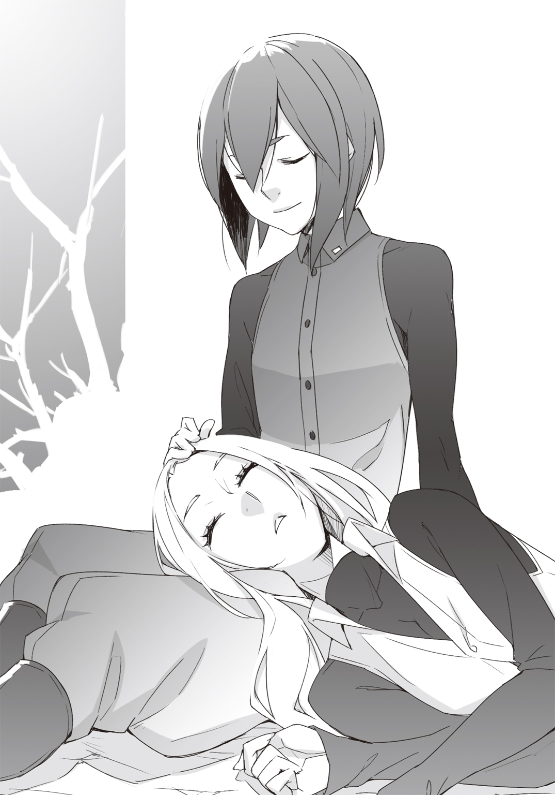
著者紹介
ｍｍ エムエム
知っている人も知らない人も、はじめまして。
電子の海から迷い込むように紙の上に這い出て、
まだ呼吸の仕方も覚束ないですが、よろしくお願いします。
早く進化したいなあ。
illustration
ｋｙｏ キョウ
富山県在住の水瓶座のＡ型で、
普段ゲームしながらたまに絵を描かせていただいてます。
よろしくお願いします。
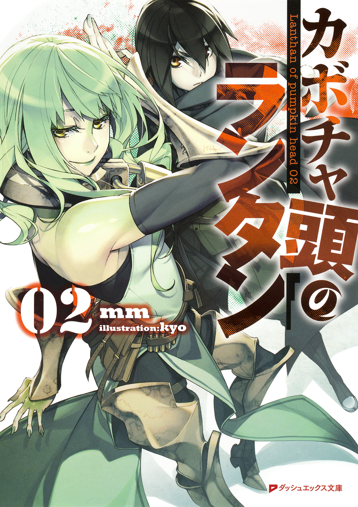
この本は縦書きでレイアウトされています。
また、ご覧になる機種により、表示の差が認められることがあります。
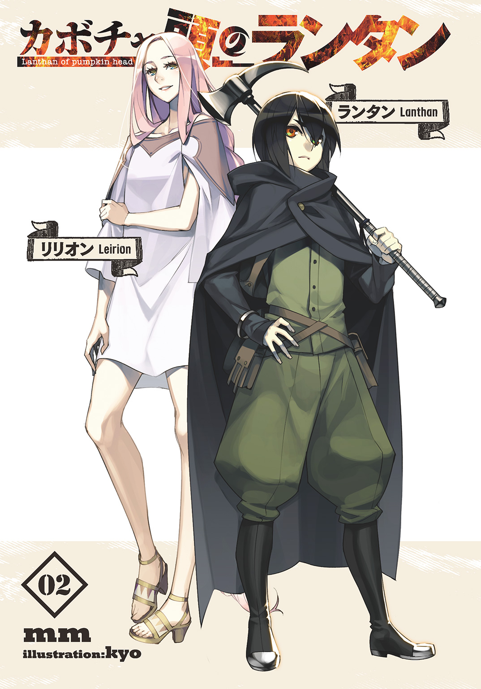
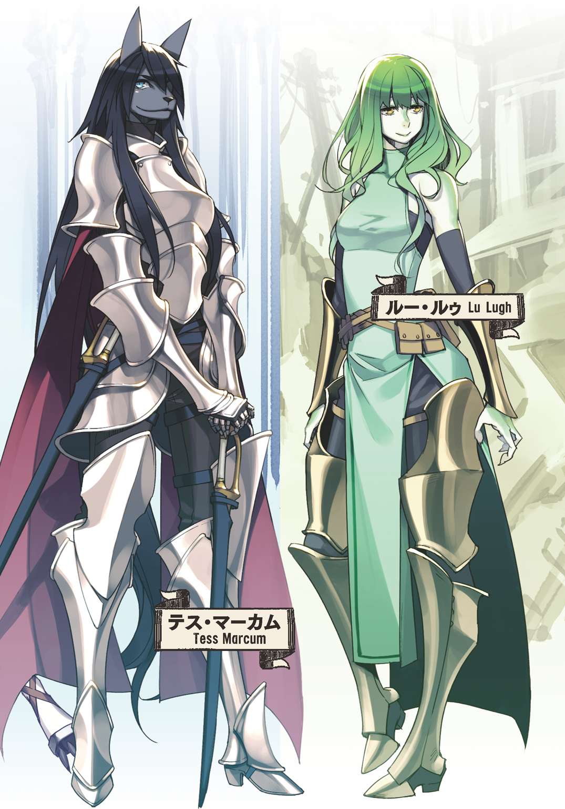
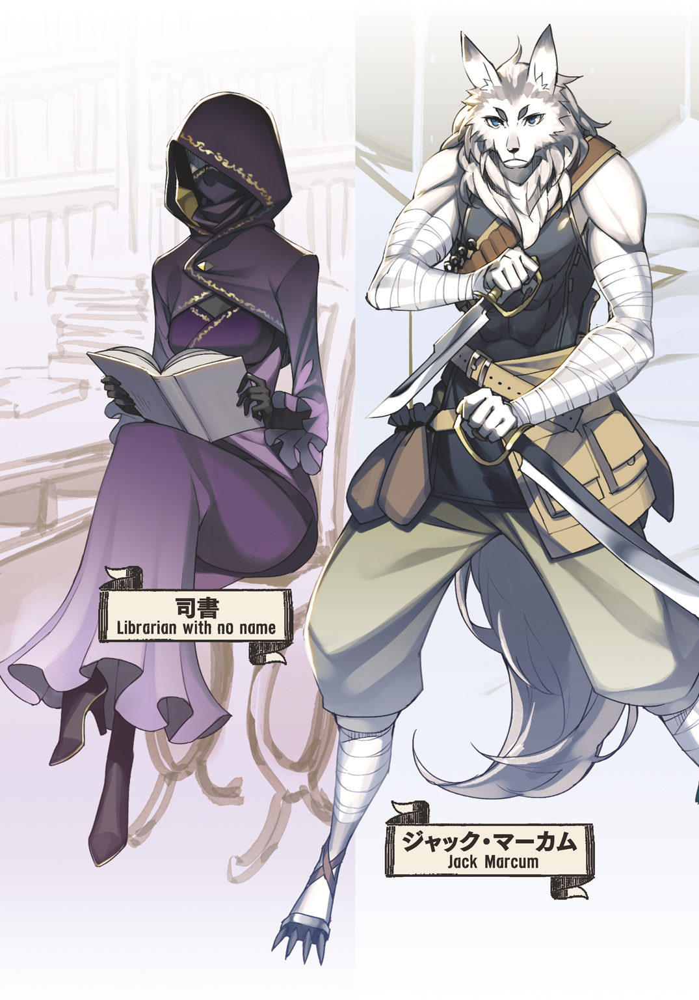
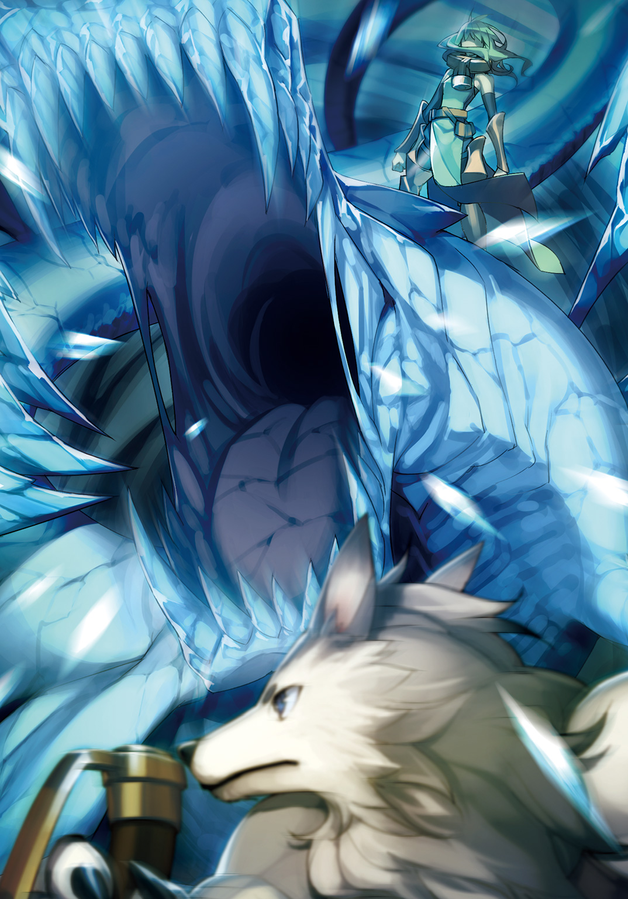
 ダッシュエックス文庫DIGITAL
ダッシュエックス文庫DIGITAL
カボチャ頭のランタン02
ｍｍ
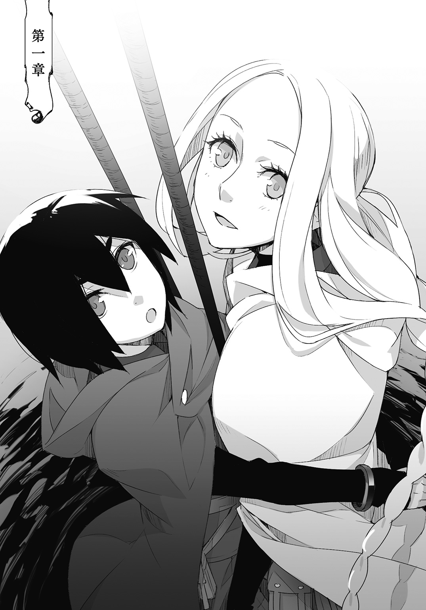
腕を回した腰が細い。
ランタンは左手で起重機のロープを握り締め、右腕をリリオンの腰に回して支えている。
身体を固定するごてごてとした四点方式のベルトは着けておらず、ロープ半ばのフックを自前のベルトに引っ掛け、そこからさらに伸びるもう一つの先端は鐙となっていた。
そこに片足を乗せているだけだった。
行きの降下時があまりに嫌々な表情だったので同情したのか、それとも呪うようなランタンの心中を察してくれたのか。二人用ベルトを寄越さなかったミシャに対して、ランタンは魔精の霧の中から感謝を捧げていた。
しかしそんなランタンに比べて、リリオンは不満そうだ。
リリオンは四点方式のベルトに雁字搦めに身体を吊られ、身動き一つ取れずにいる。
背負った楯も相まって、その姿は甲羅を摑んで持ち上げられる亀のようだ。
もっともリリオンの不満は、その愛らしくも無様な姿を晒していることに対してではない。
リリオンを吊るロープが少女の腕の可動域を制限するためだ。骨盤の左右から、身体の前を通して二本伸びるロープが少年の身体に抱きつくことを妨げている。
ずっと引っ付いていたのに、とランタンは苦笑する。
最下層で目覚めてから再び迷宮口直下に辿り着くまで、リリオンはずっとランタンから離れようとはしなかった。
ランタンは帰路に魔物が出現しないことを言い訳にリリオンの甘えを許したのだ。
腕を回したリリオンの腰が、降下時より一回りも細い。
甘やかしはそのせいもあるだろう。
「リリオン、大丈夫？ 気持ち悪くない？」
「大丈夫だけど、どうして？」
起重機に引き上げられる時に感じる内臓の浮遊感はやはり体質か。
ミシャの操縦技術には文句の付けようがない。だからランタンは臓腑に感じる気持ちの悪さを探索の疲労や背囊の重さのせいにしていたのだが、リリオンは最下層での魔精酔いが噓のようにけろりとしている。
「いや、大丈夫ならいいんだ」
月光を透かす程に薄くなった魔精の霧をゆるゆると上っていく。
ランタンは光の眩しさに目を細めて、欠伸を嚙み殺す。堪えきれずに染み出して眦に溜まった涙が夜空に散りばめられた星々の光を反射した。
ランタンはリリオンの腹に顔を押しつけて涙を拭いた。少女が微かに笑う。
「わあ、まぶしい！」
「ああ、疲れた」
いつからか聞こえていた巻き上げ機械の唸りが止んで、二人はすっかりと地上へと戻ってきた。起重機がゆったりと優しく横を向いて、足元にぽっかりと空く迷宮口から遠ざかる。そしてようやく足が地面を踏むと、リリオンはロープが弛むのに合わせて身体を折り曲げた。
ランタンに抱きついて、深く息を吐きだした。
体重を掛けるのは折れた肋骨が痛むからやめて欲しい。
そう思う反面、体重を掛けてもこの重さか、と思った。
戦士の、探索者の重さではない。これはまさしく少女の重さだ。
「お帰りなさい。ランタンさん、リリオンちゃん。お疲れさまっす」
「ただいま、ミシャ」
待機状態にした起重機から降りて駆け寄ってくるミシャに応え、ランタンは纏わりつくリリオンを押しのけた。ミシャと視線が交わると、ミシャはすっと目を細めて笑う。
ランタンの傍らに跪いて手早くベルトからフックを外した。
「ありがと」
ランタンは言いながらリリオンの尻をぱちんと叩き、少女が驚いた隙に側から離れた。
その際にミシャの細腕に軽く触れて、リリオンを拘束するベルトに手を掛けるのを待ってもらった。
弛んだとはいえロープに繫がれたままのリリオンは鎖に繫がれた犬に等しく、その行動半径の外に出ることができない。ランタンは自分へと伸ばされる手を素っ気なくすり抜けて、行動半径の外側に立った。リリオンの視線だけがランタンを追いかける。
「ほら、ちゃんとする」
「......――ただいま、ミシャさん」
リリオンは一度、空気を嚙むような息継ぎをしてミシャへと声を掛けた。
言い慣れない言葉を口にするような辿々しさがあった。
恥ずかしがるリリオンに、ミシャは大人びた微笑みを浮かべてそれに応える。
「はい、おかえりなさい」
そしてランタンにちらりと一つ目配せをして、ランタンは静かに頷いた。
「じゃあベルト外すっすよ」
引き上げの際に迷宮口から垂らされたフックやベルトを装着するのは探索者自身が行うことであるが、これを外すのは引き上げ屋の仕事である。
ほんの一秒、ほんの一動作で取り外しのできるフックでさえも地上では探索者の自由にしていいものではない。
それは伝統であり、引き上げ屋の矜恃である。
装具を外すということは、引き上げ屋の手で無事に探索者を帰還させた証だった。
凜々しさすら漂うミシャの横顔を眺めていると、拘束具の如くリリオンを縛っていたベルトがまるでリボンでも解くようにするりと外された。ミシャに手伝ってもらいながらリリオンが内股に通されたベルトから足を抜き、地面を踏む。
ランタンはリリオンの身体がふっと沈むのを見て軽く足を開いた。
拘束を解かれた少女は勢いよく。
「――ストップっす！」
リリオンが放たれた矢と化す瞬間に、ミシャは少女の外套を摑んだ。
一歩目から最高速度に乗れるほどの踏み込みは、しかし平然と引き上げ屋の細腕によって引き止められてしまった。外套に首を絞められたリリオンが情けなく呻き、恨めしそうにミシャを睨んだがミシャは余裕の微笑みを崩さない。
荒くれの探索者を相手にした商売の世界に身を置くミシャの胆力は並大抵のものではない。
何しろ引き上げ屋は探索者の命綱を、文字通りに握っているのである。ミシャにとってリリオンの一睨みなど、雛鳥がぴいぴいと囀っているのとさして変わりはないようだった。
「帰還したばかりなのに元気いっぱいっすね。リリオンちゃんは」
ミシャはリリオンを解放してやって、外套に刻まれた握り皺を叩くように伸ばした。
リリオンはされるがままで、ミシャの姿は妹の世話を焼く小柄な姉のようにも見える。
だがランタンはその姿に何となしの恐れを抱いて、その感情を見透かすように視線を寄越したミシャへ誤魔化すような曖昧な笑みを送った。
「――ランタンさんはまたボロボロっすね。大物だったんっすか？」
「まあね、しばらくは遊んで暮らせる程度には」
「もう、そんなこと言って。怪我を治したらすぐに迷宮へ潜るんじゃないっすか」
「ミシャが食いっぱぐれたら困るからね」
肩を竦めて軽口を叩くランタンに、ミシャは呆れと隠しきれない心配の眼差しを向けた。
ランタンはポーチから後払いの引き上げ料を取り出し、幾ばくかの色を付けてミシャに渡した。ミシャはそれを両手で丁寧に受け取ると、ありがとうございます、と頭を下げて集金箱へとしまった。
「あの、ミシャさん」
「ん？ どうかしたっすか、リリオンちゃん」
「ランタンが、また、って......」
「――ああ、お怪我の話っすか」
リリオンは躊躇いがちにこくんと頷いた。
ミシャは少女を気遣うような柔らかな表情で、唇を嚙む少女の顔を見上げる。
「終端の魔物を仕留めるって言った帰りはいつもこうっすよ、ねえランタンさん」
「......別に僕に限った話じゃないよ」
「まあ、そうなんっすけどね。それがどうかしたっすか？」
リリオンは疑るような視線をランタンとミシャに彷徨わせて、手繰り寄せた三つ編みの房をいじけるように指先で弄っている。
「だって、ランタンはすごく強いのに......」
ぽつりと呟いたリリオンの言葉に、ミシャは薄い唇にいやらしく笑みを浮かべ、からかうような目付きでランタンを見た。
ランタンはその視線を鬱陶しげに追い払おうとした。
だが簡単に追い払われるミシャではない。
「ランタンさんは、確かに凄く強いっすけどね」
「やめてよ」
ミシャは誇らしげですらある、わざとらしい声音で言う。そして少しだけ声量を落としリリオンの俯いた顔に語りかけた。
「でも、もっともっと強い探索者さんだって、高位の探索者さんだって、大人数の探索班だって探索帰りはみんなボロボロっすよ」
「......ほんとう？」
「本当だよって、何度も言ったよ」
リリオンはランタンに対して負い目がある。
自分と比べてひどく傷ついているランタンに申し訳なさを感じている。
だが、そんなものはお門違いの感情だとランタンは思う。
今回の負傷はいつも通りのことなのである。リリオンはまだ探索者に成り立てで、思うように力を発揮できなかったかもしれない。
だが、きっとリリオンの実力に関係なく、ランタンは怪我をするのだ。
皮を斬らせて、肉を斬らせて、骨だってほんの少し削らせて、自らの心臓のすぐ傍にまで魔物を引きつけて、力一杯に殴打する。
終端の魔物と戦う時、ランタンはいつだってそうしてきたのだ。
だからリリオンは気にする必要はない。
だがそれをどれほどにランタンが伝えようとも、実際に傷ついている本人から語られる言葉はただの慰めにしか聞こえない。ランタンが気にするなと言えば言う程にリリオンはますます気にしてしまう。
そんなリリオンに、ランタンはどうしていいかわからず困っていたのだ。
ミシャの口から語れる探索者の、そしてランタンの当たり前をリリオンは真剣な様子で聞いている。
胴体が千切れたわけでもなければ、腕が無くなったわけでもなし。この程度の怪我を気にしていては遠からず神経症になりかねない。
ミシャの援護もあってランタンは畳みかけるようにリリオンへと伝えた。
「終端の魔物と戦って怪我するなんて当たり前のことなんだから。それに未帰還だって多いんだよ」
「それは、そうなんっすけど、だからって、――怪我することがいいことではないんですからね。ランタンさん。ちゃんと休まないとだめっすよ。引き上げの時、もし待ち惚けなんてさせられたら最下層にまで取り立てに行くからね！」
「はいはい、気を付けますよ」
その時は超過料金と危険手当で尻の毛まで毟られるかもしれないが、遅れるつもりもなければ、尻に毛も生えてない。ランタンは肩を竦めて視線を逸らした。
叱るようなミシャの言葉をランタンは軽く受け流して、ミシャは大きな溜め息を吐き出す。ミシャはリリオンにどうしようもない苦笑を向けて、ランタンに対する呆れを唇に湛えた。
それは諦めのようでもあるし、諦めきれぬ心配でもある。
リリオンはそんなミシャに救われたように、恥ずかしげな笑みを浮かべた。
「まったくもう。リリオンちゃん、いい？ ランタンさんはこんなんだから、ちゃんと休むように見張ってるっすよ。人を心配させるのなんて、全然平気な人なんだから」
「うん、わたし見張るわっ」
「......余計なことを言わないでよ。平気じゃないし。悪いと思ってる。ほら、もう行くよ」
ランタンをだしにして仲良くなった二人は、拗ねるような疑るような視線をランタンに向けてくる。
見つめられたランタンは大慌てに二人に背を向けて、後ろ手にリリオンを呼び寄せた。
「じゃあ、わたし行くね。ミシャさん」
「よろしく頼むっすよ、リリオンちゃん――」
「うん、まかせて！」
迷宮で得た魔精結晶、その親玉である迷宮核を換金するために、そして迷宮の攻略を報告するためにこれから探索者ギルドへと赴かなければならない。正直なところ迷宮核の換金に付随する攻略報告は面倒極まりないが、それは避けて通れぬ探索者の義務である。
肉体、精神ともに疲弊していることに間違いはなかったが、探索者ギルドには終日営業の医療施設が併設されている。ランタンの本命はそちらだった。
面倒事を後回しにして得をすることなど何もないし、それが何かのついでに済ませられるのならばそれに越したことはない。
「――ランタンさんも、またのご利用をお待ちしております。ちゃんと休んでくださいね」
「うん、わかってる。またお願いね、それじゃあ」
ゆるりと手を振ってミシャと別れる。
リリオンはランタンと手を繫ぎたがったが、ランタンの言いつけ通りにそれを我慢するだけの分別はあった。
迷宮特区の帰り道は見栄を張らなければならない。
どれだけ疲れていようともできるだけ背筋を伸ばして胸を張って堂々と、外套の下に隠した背囊が重たげに見えるようでは襲撃者の目に留まる。
それこそ、お手々繫いで仲良く帰る、なんてことをしていては襲撃者にとってはどうぞ襲ってくださいと言わんばかりの暢気さであるし、襲撃者ほど物騒ではなくとも闇に潜む悪党に舐められてはつまらない。
ランタンはリリオンの顎の輪郭を撫でるように視線を持ち上げた。
宵闇に白く浮かび上がるリリオンの顔は瘦せて尖って見えるが、まあ悪いものではない。
まだ一度の探索を終えただけだ。だがこれからこの甘い顔がいつかは数多の女性探索者がそうであるように、凜々しく雄々しくなっていくのだろうかとふと考えてランタンは小さく震えた。二人の間を通り抜けていった夜風が冷たい。きっとそのせいだろう。
リリオンはそんなランタンにも気が付かず、視線を左右に鋭く動かして辺りに注意を払っていた。ミシャに焚きつけられたせいで面倒くさくなっている。
ランタンは微笑ましく思う。リリオンは番犬のようであり、守っているものは背囊に収められた迷宮核ではなくランタンだった。
もっともリリオンの番犬振りなどはたかが知れているが。
至近にいるランタンの視線にも気が付いていなければ、二人の背後を何気なくつけてくる男の存在にもまだ気が付いていない。襲撃者はそれほど頻繁に現れるものではなく、足運びの軽さから掏摸か物取りかと推測できる。
よくいる手合いだ。放っておいてもそれほど害のあるものではない。それにリリオンが大変わかりやすく警戒しているのだから、これにちょっかいを掛けるのはなかなかに難しい。
しかし迷宮特区を抜けたリリオンはほっと胸を撫で下ろして警戒を解いてしまった。
「ごくろうさま、さあギルドに行こうか」
これも勉強かな、とランタンは意地悪を隠すように口を噤む。
「うん、あの......ランタン」
リリオンはご褒美をねだるようにおずおずと手を差し出して、ランタンは苦笑交じりにそれを握ってやった。すっかりと日が落ちて久しく、街灯の光が幻想的な通りでは、手を繫いだり腕を組んだりして行き交う男女は珍しくない。
繫いだ手をぎゅっと握ったリリオンの花咲くような笑顔は眩しかった。
そして背後を振り向こうとしたリリオンを強引に引っ張ってランタンは歩き始める。
「ランタン、後ろ」
「うん、特区からずっとついてきてるね」
「......知ってたの？」
「まあね。右左を気にするのも良いけど後ろも、場合によっては下も注意しないとね」
「下？」
都市の地下に張り巡らされた下水道は、地下迷宮と揶揄されることがある。
下水道なりに不潔であるが雨風を防げ、そして衛士隊やら騎士隊やらの治安維持機構の目からも逃れられる。上街の下水道はある程度管理されている。だが下水道の住人たちの努力によって下街の下水道と行き来する通路が幾つも開通しているようだった。
「一回だけ見たことがあるけど、下水道の蓋の隙間からするっと手が伸びて酔っ払いを飲み込むの。あれはちょっと怖かったな」
「それ、どうなったの？」
「さあ？ でも飲み込まれたの探索者だったし、たぶん大丈夫なんじゃないかな。酔っ払ってるとはいえ閉塞空間で探索者相手にするのはね。でも地の利は向こうが上か......」
ランタンがふと思案を、そしてリリオンがまだ見ぬ下水道に思いをはせたその間隙に、後をつけていた男がわざわざ繫いだ手を引き剝がすように二人の間を走り抜けた。
「もうっ、なにっ」
「掏摸だよ。あんまり上等な部類じゃないね。もしかしたら手を繫いでるのが羨ましかったとかね」
ランタンは喉を震わせるように笑い、リリオンに再び手を差し出した。リリオンは飛びつくようにランタンと手を繫ぎ直して、二度と同じことがないように指を絡めた。それでもまだ不満そうに唇を尖らせて、転ぶように路地を曲がった男の後ろ姿を睨んだ。
だがそれも、路地の壁に反響して零れた悲鳴を聞くまでのことである。苦痛の音色にリリオンは怪訝そうな顔をして路地を覗き込もうとしたが、ランタンはリリオンの手を引いた。
ちらほらと路地を覗き込む野次馬が集まりはじめていた。
「どうしたのかしら？」
「掏摸をしたら手首を切り落とされるのが通例だからね。――冗談だよ」
と言ったものの冗談ではない場合も多々ある。切り落とされるのは手首ではなく、首であることもそんなに珍しい話ではない。
「ちょっと指を折っただけ、三本ぐらい。あと手首、と肘も。探索者相手に馬鹿な奴」
しばらくは商売ができないだろうが、これを機に真っ当な仕事についてほしいものだ。
ランタンはしみじみと頷き、そんなランタンにリリオンが何とも言えぬ表情になった。
「......わたしも、できるようになった方がいい？」
「まあ、できることは多い方がいいけど。時と場合によるかな。ほら、もう来た」
ランタンが視線で指し示したのは都市の治安維持機構の一つである、衛士隊に所属する兵士だった。騒ぎの臭いをかぎ分ける猟犬である彼らは、鎧を警鐘のように鳴らしながら二人の脇を駆け抜けていく。
こういう時だけランタンのいかにも大人しい顔立ちは好ましく作用する。
もっとも掏摸に目を付けられたのは、フードを失って大人しい顔が顕わになっていたからに他ならないのだが。
衛士隊は貴族派の治安維持機構である騎士隊と対をなし、市民の安全を守ってくれる正義の味方である。だが騎士にもだが、問題事を多く起こしやたらと腕っ節の強い探索者は衛士にあまり好感情を持たれていないのが実情であった。
探索者の厄介さといったら、ついには探索者ギルドが所有する独自の治安維持機構である探索者ギルド治安維持局に探索者への逮捕権や、探索者の絡む事件への捜査権などが公的に認められたほどである。
探索者ギルド治安維持局は探索者と同じほどに衛士隊や騎士隊から嫌われて、探索者からは鬼のように恐れられる武闘派集団だった。
「仕事が速いのはいいんだけどね。捕まるとねちねちうるさいから。下街なら好き放題に大暴れしてもいいけど、上街でやるなら静かに、手早く、容赦なく。そして速やかに現場から立ち去ること」
「うん、わかった」
ランタンの言葉にリリオンは素直に頷いて、ランタンの真似をするように澄ました表情を作った。いかにも騒ぎとは関係がありませんと辺りに吹聴するように。
「でも、どうして探索者を狙ったりするのかしら。探索者にはランタンよりも強い人も、ちょっとだけいるんでしょ？」
「ふふふ、まあ、ちょっとだけね。探索者を狙うのはリスクが高いけど、その分だけ見返りも大きいから今の僕らみたいに探索直後を狙えば成功率も少しは上がるし」
もし探索者の財布を掏り盗ることができればしばらくの間は食うに困ることがない。
探索後、攻略後の探索者は疲労困憊であるが大人しく休息を求める者と派手に散財することこそを愉しみにする者が半分半分に混在する。
生真面目に探索者ギルドへ直行するランタンはごく一部の少数派である。
散財はもちろん、自らへの褒美としての休息にはそれなりの金銭が要求される。なんだかんだと探索直後であっても探索者の財布は重い。もちろん探索者も警戒を怠ることはないが、それでも無事に生き残れたことの安堵に気が緩むことは避けられない。
「だからそれを悟らせないために、平気な振りして歩くんだよ。まあ、狙われたんだけどさ」
ランタンはふて腐れて頰を膨らませ、舌打ちをしてヘコませる。
狩猟刀もそうであるが、まずは外套を買い直さなければ。
外套によって傷ついた華奢な身体付きは隠せているが、フードを失ったことは痛手だった。
月光に照らされてランタンの青白いほどの顔色は、さながら誘蛾灯のごとく夜の闇の浮かび上がり人目を引いた。
それでも寄ってきた面倒事が掏摸の一人で済んでいるのは隣を歩くこの少女のおかげであるのかもしれない。
リリオンは立ち振る舞いに幼さこそあるが、澄ました顔して歩いていれば背の高さの分だけランタンよりも大人に見える。
「リリオンも気を付けるんだよ。これからはお金の管理しなきゃいけないし」
「でもわたし、お金ないよ」
「いやいや、何を」
澄ました顔の無垢な瞳は、その言葉を本気で言っているのだとランタンに理解させた。
リリオンは探索の結果である利益を、端っから求めていなかった。
今回の探索での自らの働きぶりを過小評価しているからのことではなく、そもそもとしてリリオンは自らの働きへの対価を放棄しているのだ。
それは少女の今までの人生がそうであったからか、それとも別の理由かはわからない。だがじっとランタンを見下ろすリリオンの純粋さはランタンを不安にさせるものだった。
「利益は山分けだよ」
「わたし、いらない」
「――いるいらないの話じゃなくて」
「わたしは、もう貰ったから」
水を、食事を、服を、大剣を、大楯を。
リリオンは一つ一つ与えられたものたちを数えていった。そして指の数が足らなくなると、遡るように一つ一つ指を折って丸い拳をつくりあげた。リリオンはその拳に唇を押し当てる。
まるで神に祈り、神の爪先に口付けるように。
「リリオン」
「なあに、ランタン」
ああ何と嬉しそうに。
ランタンは乾燥する唇を舌でちらりと湿らせた。
頰を緩ませ顔を覗き込むリリオンに、ゆらりとした意味深な視線を投げかける。
「家に帰るまでが探索だって言ったよね」
「うん」
「じゃあ、探索中は？」
もう何度か破られている。何の拘束力もない約束。
「絶対、服従！」
しかしそんな約束でも持ち出さなければリリオンは納得しないだろう。
「と、いうわけで命令です。利益は山分け。まあ、配分は考える。ううん、相談しながらね。わかった？」
柔らかくも有無を言わせないランタンに、リリオンは言葉を言い切ったうの形をしたままの唇を更に突き出すように尖らせて、服従とはとても思えない不満たっぷりの拗ねた表情で渋々頷いた。
この子は、まったく。
ランタンは堪えきれぬ苦笑を滲ませ、しかしそれはやがて憂鬱げな溜め息へと色を変えた。
「どうかしたの？」
「攻略報告って、結構面倒くさいんだよね」
探索者ギルドの建物は闇夜の中にあると、ただでさえ物々しい雰囲気に何とも言えぬ不気味さが混じる。明るい星明かりが降り注いでいても、どことなく重苦しい雰囲気を湛えているように思える。それはこれから果たさなければならない義務への煩わしさがそのまま浮き上がっているからなのだろう。
「ランタン、その前に怪我の手当てをするんでしょ？」
「わかってるって、もう。そっちは別に嫌じゃないから」
ランタンは魔道処理によって重さを感じさせない重厚な扉を、まるで内側から押さえつけられているかのようにゆっくりと押し開き、その隙間から溢れる眩い光の中に吞み込まれるように足を踏み入れた。
そろそろ迷宮内で服用した痛み止めの効果が切れる頃合いだ。
さっさと医務局を目指さなければ。
ランタンはいつか言った自分の言葉もすっかり忘れて、リリオンの手を握りしめたままギルド内を進んでいく。
◇◇◇
「雑だな、まったく」
ランタンの折れた指を見るなりにギルド医の大男が舌打ち混じりにそう呟いた。
「で、傷がこれっぱかしなわけないだろ。他はどこだ？」
そう続けたギルド医は何とも獰猛な人相をしていた。
怪我を見せてみろ、と差し出された手には幾つもの傷が刻まれていて、掌には刀槍を素手で受け止めたような抉れた痕があった。身体を治すよりも、壊す方が得意そうな手をしている。
探索者ギルドには引退した探索者が少なからず勤めている。だが全ての引退した探索者にその機会があるわけではなく、ギルド勤めには何かしらに秀でた技能が必要とされる。
このギルド医は野盗の親玉のような人相をしているが医療の専門家である。
もちろん元探索者なのでいざという時の腕っ節も強く、痛みに暴れる探索者を押さえつけるのもわけないということだ。
ランタンは素直に上着のボタンを外し、服を脱ごうとして怪我のせいで少しばかりもたつく。
すると背後でその様子を窺っていたリリオンが手を貸してくれた。上着を、そして肌着をめくり上げ、ランタンの腕から袖を引き抜いた。
見た目の清潔感ばかりではなく殺菌作用もある白々とした魔道光源の光にランタンに裸体が晒された。
「おねがいします」
ランタンが右腕を差し出すとギルド医は前腕を覆う包帯を解いた。
体液の染み出した包帯が傷口に張り付いていたが、ギルド医の太い指は痛みも感じさせる事なく傷口から包帯を剝離させる。
改めて目にすると傷口の凄惨さに表情が歪む。
背後でリリオンが息を飲むのが伝わってくる。
皮膚を削ぐように斜めに伸びる傷が手首から肘に、二の腕まで無数に刻まれている。
出血は止まっているが、それゆえに剝き出しになった傷口は果物彫刻の練習に使われたような有様だった。繫がったままの皮膚が白くふやけて捲れ上がり、その下には薄桃色の肉が覗いている。
背後から注視していたリリオンの視線が外れる。そしてランタンもまた自らの腕から焦点をずらした。見ていてあまり気分のいいものではなく、はっきりと確認するほどに痛みが増すような気がした。
「傷薬をつけ過ぎだ。まったく、傷口が塞がるのを邪魔してるぞ。接着剤じゃないんだからな。――少し染みるからな」
ギルド医は滅菌ガーゼを消毒液で湿らせて、繫がったままの皮膚を引き千切らないように患部を拭った。ランタンは睫毛が震えるほどにきつく目蓋を閉ざして、奥歯を強く嚙み締めた。傷薬を塗ったのは自分なので自業自得だが、少し染みるなどというのは明らかな噓である。嘔吐しそうな程に痛い。
神経に触れる痛みはギルド医が指にガーゼを巻き付けて傷口の軟膏を掘り返す痛みだ。
ランタンの額にじわりと脂っぽい汗が浮かび、だが少年は苦痛の一つも漏らすことはなかった。どうにか拷問のような時間を耐えきると、疲れた様子のランタンにギルド医は太く笑った。その内心はどうであれ悲鳴を上げなかったランタンへの賞賛だった。
これだから探索者上がりは、とランタンは思う。
元探索者は後輩の出来を確かめるために時折こういった乱暴を働く。賞賛よりも痛み止めが欲しい。痛み止めよりも思いやりがもっとほしい、とランタンは溜め息を漏らした。
「この様子なら縫わなくてもいいだろ。範囲は広いが思ったよりは浅いしな。傷口が多くて面倒だし」
ギルド医はそう言うとあらためて腕に消毒液を塗布した。剝がれた皮膚を傷口にぴったりと貼り合わせて、その上からごく薄く薬を伸ばした。淡い桃色の軟膏で全ての皮膚を傷口に固定すると、その上にガーゼを置いて新しい包帯で腕を包んだ。
「まだ若えしな、これぐらいなら寝て起きれば治るだろう。......完治じゃないからな。二、三日は皮膚が引っ張られるように感じるだろうが、生活には支障がないってだけだ。あと今夜は痒くなるが、絶対搔くなよ。皮膚が定着せんからな。わかったか？」
「はい」
「しばらくは、探索は絶対するなよ」
従順に頷いたランタンをギルド医は半眼で睨み付ける。
疑惑の視線に晒されたランタンは、素直に頷いたのにどうしてだろう、といかにも思い当たる節がなさそうに困った表情を貼り付けた。
だがランタンには同じような忠告を受けて、それを無視した経験が何度もあった。
怪我が怪我を呼び、どうにか帰還を果たしたがギルド医数名の手を煩わせたこともある。
その時の担当医は目の前の大男ではなかったが、どうやら探索者ギルド医療衛生局中に悪評が広まっているらしい。
面倒なことだ。
「ふんっ」
「痛っ――」
ランタンが白々しくもそんなことを考えていると、ギルド医は無言で左手首を摑み、折れた指をまるごと握りしめて一気にそれを引き伸ばした。骨の擦れる音が全身を駆け巡り、ついで何とも気持ちのいい音が響く。嵌まったのだ。折れてずれた骨が完璧に。
腕が手放されて、ランタンは内心ものすごく驚いていたが、それを押し殺して極めて事務的に軽く拳を握った。骨折による浮腫が取れていないので、上手に握ることはできないが痛みはまったくない。ランタンが自分でするのと変わらないぐらい乱暴だったが、その出来映えは比べるべくもない完璧な骨接ぎだった。
「当たり前だが、くっついてるわけじゃねえからな」
「はい、わかってます」
しれっと頷くランタンに先程と同じ視線を寄越したギルド医は、骨接ぎをした指を一本ずつ丁寧に非伸縮性のテープで固定する。関節は避けてくれているので動かすのに支障はない。
「――ったく。肋骨もだな。くそ、痛み止めを塗りすぎだ。内服薬も使ってるだろ、その内に効かなくなるぞ」
肋骨に触れ、ギルド医は皮膚表面を軽く引っ搔く。
そして爪の間に垢のように溜まった軟膏を見て悪態を吐いた。
その悪態に背後のリリオンが僅かに震える。ランタンはちらっと少女を振り返って小さく笑った。体中にベタベタと薬を塗ったのはリリオンだ。
「こっち向け、ゆっくり息を吐いて腹ヘこませろ。ちっ、よくもまあこれだけ折ったもんだな。内臓に刺さってないのは運が良かっただけだぞ。もうちっと気をつけろ。そのままへこませて、――息止めろ」
言われるがままに呼吸を止めて、ランタンは来るべき痛みに備えた。
当直の医者により腕の良し悪しはもちろん処置の方法にもばらつきがある。だが処置の多くに痛みを伴うことをランタンはよく知っていたし、腕と指の治療でこのギルド医が充分に荒っぽいことを理解していた。ギルド医は指を滑らせてランタンの肋骨の状態を確かめると、その太い指をいきなり肋骨の内側に差し込んだ。
「――っ」
覚悟を決めていたのに、表情が歪む。
この世界でも医療技術はある程度体系化されていたが、これはそこから逸脱している。
元探索者のギルド医は独自の技術を所有している。迷宮内での素人なりの応急処置から、あるいは魔物を破壊する技術から枝葉を伸ばして形作られた治癒術であるのかもしれない。
ランタンは声のない悲鳴を上げて、大きく痙攣するように跳ねた。だがリリオンがランタンの細い肩を押さえつける。一体いつの間にギルド医の手先になったのか、と叫びたいが声は出ない。痛みの強弱でいえば戦闘で負った痛みの方が遥かに痛い。
だが医務室での痛みは、質が違うのだ。
触れられた皮膚が柔らかいゴムにでもなったように、ギルド医は人差し指から小指までを鳩尾へと押し込んだ。肋骨の内側に指を引っ掛けて、ずれた骨を手前に引き出す。それを親指でそっと押さえつけながら形を整えるように、鳩尾から背骨に至るまでをぐるりと一周。内臓に響く骨の擦過音は地獄の底から響くようである。
まるで花器でも練り上げるような繊細かつ大胆な指使いは、過去に迷宮で、そして現在は医務室で多くの命を救う洗練された指使いだった。
だがランタンはその技術に感心している余裕はこれっぽっちもなかった。身体の内部を弄られる気持ちの悪さと、吐くこともできない痛みが過ぎ去るのをただ待つばかりだった。
「――よし、お嬢ちゃん、いいアシストだ。この暴れん坊を押さえるのは大変だろう。もう放していいぞ。まったくランタンよお、みっともねえな」
痛みに耐えた己ではなく、リリオンを褒めるギルド医をランタンは軽く睨み付ける。
ランタンは胸を張るようにゆっくりと身体を伸ばした。悔しいことに今ある痛みは治療の残滓ばかりで、骨折自体の不快感はさっぱりと消え去っている。
なまじ腕がいいだけに、もっと優しくしてくれてもいいのにとランタンは思う。
「肋骨は固定できないから――わかってるな。骨は寝て起きてもくっつかないからな！」
脅すような表情のギルド医に、もう三度目だよ、と呟く内心が表情に浮かび上がる。ふて腐れるランタンにギルド医は呆れて溜め息を漏らした。まったく人を探索中毒のように。
迷宮を一つ攻略し終えて区切りがついたのだから、わざわざリスクを背負ったまま無茶をするつもりはない。
もし一人であったのならばわからないが、少なくともリリオンを連れている間は。
熱した針で内出血を起こした爪に穴を空け血を抜き、残りの小さな傷を治療していく。
「大丈夫です。わかっていますよ。無理はしません」
ランタンはどうせ何を言っても疑惑の視線を向けられるので、丸椅子をぐるんと回してリリオンへと振り返った。心配げな少女の視線に安心させるような微笑みで応えて、服、と一言。
リリオンは胸に抱いたランタンの服を、しかしぎゅっと抱きしめた。
「ランタン、後ろ」
「何だあ、その頭は」
リリオンの言葉に振り返ろうとしたが、ギルド医はランタンの頭をむんずと摑み、ざんばらな襟足を指で弾いた。
嵐熊にフードごと切り払われた後ろ髪は、何だか少しみっともない。
「何だと言われましても」
名誉の負傷だと嘯きたいところだが、涼しげになった首筋のそれは結局のところ油断の現れだった。終端の魔物、嵐熊による魔道の行使を早々にないと決めてかかったのはランタンの見通しの甘さに他ならない。
ランタンがリリオンを導いているのは、リリオンがまだ何も知らないからであって、ランタンの探索者として能力はその外見同様に青い未熟さを多分に残している。
「切ってやるから動くなよ」
ギルド医に後頭部を晒すことと、リリオンと向かい合うことは同じである。
リリオンはランタンの服を大事そうに抱えたままじっと視線を向けてくる。その気遣わしげな視線はランタンの羞恥心を搔き立てるものだった。格好付けてこの様では、なんとも格好悪い。ランタンはギルド医の鋏によって、襟足がするりと整えられていくのを感じた。
こんな風に簡単に体裁を整えられたらどれほど楽だろうか。
「まあ、こんなもんだろ」
ギルド医が項に散った髪を払いながら言う。
ランタンは襟足を一撫でして、椅子ごとくるりと回転してリリオンに背を向ける。
「どう？ リリオン」
「ランタンは、どんな髪型でも格好良いよ」
リリオンはランタンの首筋に顔を近づけて、まだ残っている毛をふうと吹いて、背に張り付く小さな毛筋の一つ一つを指先に摘んだ。
「リリオンも毛先だけでも揃えてもらったら？」
ランタンはそうリリオンに提案する。それはリリオンの手から服を受け取る代わりに、なんとなしに手渡した言葉だった。
リリオンも嵐熊によって髪を切断されている。三つ編みにしているので一目見ただけではわからないが、短くなった三つ編みを解けばやや右上がりに斜めになっている。
「いい」
だがリリオンの答えは明確な拒絶だった。
「わたしは、いいわ」
リリオンは手を硬く握り込んでいる。ランタンは訝しげな視線をそっと送りながら、自らの襟足をもう一度撫でた。実はギルド医が失敗したという訳ではなさそうだ。
ならばリリオンのこの表情は一体何だろうか。
「まあ、結んでればわからないしね」
ランタンはリリオンの手を優しく一撫でしてギルド医に向き直った。
ギルド医の人相が悪いのでリリオンは怖がったのかもしれない。
ランタンは鋏をしゃきしゃきと鳴らすギルド医の顔をあらためて見つめた。
髪を切るその鋏使いはとても繊細だったが、鋏と人相を一纏めに見ると途端に耳でも削ぎ落とされるのでは、と思えてくる。
じろりとギルド医に睨まれたランタンは微笑みを返して上着のボタンを留めるついでに視線を逸らした。元であろうと探索者。何とも勘のいいことだ。
「じゃあ治癒促進剤と湿布薬、お嬢ちゃんの分も念のため出しておくから。三日分で足りるはずだが痛みが引かないようならもう一度取りに来いよ」
ギルド医は鋏をペンに持ち替えて診断書に筆を走らせる。絡まった糸のような何とも酷い癖字であるが、そもそも文字の読めないランタンには関係のないことだった。
「治癒促進剤は寝る前にな。患部が痛む場合は痛み止めに頼らずに冷やせ」
「はい、ありがとうございます」
正真正銘の感謝の念を込めてランタンは頭を下げた。しかし顔を上げるとやはり半眼のギルド医の表情がある。そんなギルド医にランタンは告げた。
「あと栄養剤もください。二つ」
嘆息するギルド医はランタンの左胸に指を突き付けた。
「怪我も治してやるし、髪も切ってやるが、死んじまったらどうにもできねえからな」
身体中から怪我の痛みは取り除かれていたが、なんとも耳の痛い話であった。
ギルド医は処方箋に栄養剤二本と書き込みを加えて、さっさと出て行けとでも言うように乱暴にそれを押しつけた。
「お嬢ちゃんもランタンの相手は大変だろうが――」
「そんなこと、ないです」
「――ああ、それならいいさ。お嬢ちゃんも髪切りたくなったらいつでも歓迎するぜ。怪我人の相手も飽き飽きだしな。べっぴんさんにしてやるぜ」
ギルド医は精一杯の笑みを浮かべたが、それはどうにも腹を空かせた肉食獣が唸っているようにしか見えない。リリオンはその笑みに、恐れるように震えながら頷いた。
そのちぐはぐなやり取りをランタンは面白く思いながらも、リリオンの手を取って早々に医務室を後にした。医務室の空気はリリオンにもギルド医にも決して良いものではなかった。
丁寧に医務室の扉を閉めてランタンは何とも言えぬ苦笑を頰に浮かべた。
「ああ、怖い顔だったね」
「うん」
「乱暴だったけど、腕はしっかりしてるんだよね」
こっちの方も、と付け加えて襟足を指すとリリオンは手を伸ばして項からそこへと触れた。
少し短くなった髪の、それでも柔からな感触をリリオンは楽しんでいるようだったが、されているランタンはくすぐったくて落ち着かない。
「リリオンも切ってもらえば良かったのに」
ランタンが言うとリリオンは項垂れるように手を下ろした。
「だって、......怖かったんだもの」
「切ってもらう時は、顔なんか見えないよ」
力無く垂れる手をランタンは握ってやり、リリオンは浅く唇を嚙んで躊躇いがちに頷いた。
リリオンの指が少し冷たい。リリオンはランタンの指先を甘えるようにこねて、ランタンはされるがままにギルド医に渡された処方箋をひらひらと揺らした。
「支払い済ませてくるけど」
「わたしも行く」
「お金払うだけだよ」
「わたしも一緒に行く」
見ていて楽しいものでもないだろうが、見られて困るものでもない。
だが受付台まで目と鼻の先なのに手繫ぎというのも間抜けである。ランタンはリリオンの手を放して、リリオンはランタンの外套を摑んで後ろを付いてきた。
書類を提出し、提示された診療報酬と薬代を支払う。そして治癒促進剤と湿布、栄養剤を受け取った。ランタンはリリオンの背囊にそれらをしまった。
「栄養剤も後で飲もうね。やたらと甘いから水割りにして。怪我は治らないけど、疲れはよく取れるんだよ。無理すると揺り戻しが酷いけど」
「うん、......でも薬って高いのね」
「これでも探索者用の値段だよ」
探索者用と一口に言っても、探索者ギルド医務局は探索者の経歴を見る。探索者の階級から、現在契約している迷宮の難易度、過去の活躍、銀行口座の残高まで。
処方箋なしでは経歴によって薬の種類や販売個数に制限がかかる。
例えばこれから高難易度の迷宮に挑むのならば稀少な魔道薬なども選べるが、低難易度の迷宮に挑むのならば低難易度なりの薬しか選ばせてはもらえない。
もっともギルド医に頼み込んで先程のように処方箋を書いてもらえば、その制限をかいくぐることもできる。だがギルド医に頼みを聞いてもらえるようになるには、それなりの怪我を何度も負って何度も治療を受けて顔なじみにならなければならない。
「でも他で買うよりはちょっとだけ安いよ。変な混ぜ物もしてないらしいし」
「へえ、そうなんだ」
「うん、それに命の値段だからね。安いもんだよ。さ、次の用事をさっさと済ませるよ」
面倒だけどね、とランタンはリリオンの手を取った。
迷宮資源の換金兼、迷宮攻略報告をしなければならない。
各種手続きはこの上なく面倒であるが、そうも言っていられない。
日をあらためて落ち着いてから行ってもいいのだが、何事も早め早めに済ませておいて損をすることは少ない。
しかしランタンの足どりは何とも重たいものだった。
夜も深くなりつつあるので買取施設は半分眠っているような状態だった。複数ある受付台は半分以下しか職員が詰めておらず、それでも余るほどしか探索者はいない。時間を持て余している受付嬢にランタンは探索者証を渡した。
「ほら、リリオンも」
ランタンが呼びかけるとリリオンは慌てたように探索者証を腕から引き抜く。
探索者、あるいは探索班が何を持ち込み、どれほどの金額を取引したかはギルドに記録され探索者の等級を定めるための指標の一つとされる。
丙種から乙種へ、乙種から甲種へと位が上がればギルドから受けることのできる恩恵の品質が上がっていく。
そのために探索班で得た迷宮資源を抜け駆けして個人で持ち込むこともあるらしく、それを引き金に探索班が解散することもあるようだった。あるいはそれは解散寸前だからこそなのかもしれないが。
またシビアな値段付けをするギルドの買取施設に持ち込むか、それとも他の買取施設に持ち込むかも探索者にとっては悩みの種らしい。もっともランタンにはあまり関係のない話だった。複雑な駆け引きを要する取引など考えただけで気後れしてしまう。
医務局に行く前に一度立ち寄って用件は伝えてある。
迷宮核の持ち込みはこの買取施設で取引される物品の中で、もっとも特別な物の一つだった。これを持ち込む探索者は深夜であろうが早朝だろうが歓迎される。
「はい、乙種探索者ランタン様、丙種探索者リリオン様ですね。攻略の成功と無事をお喜び申し上げます。すでにご用意はできておりますので、奥の部屋へとお通りくださいませ」
頷いたランタンは慣れたように腕を差し出し、受付嬢はランタンの細い手首にまるで下女のように探索者証を嵌めた。それを見てリリオンは真似をしたが、まるで炎に触れようとするようにおっかなびっくりとしている。
強張った指先に受付嬢は微笑んだ。探索者証に刻まれた情報からリリオンがド新人で、迷宮攻略どころか買取施設の利用も初めてだと確認済みなのだろう。
「あ、ありがとう、ございます」
「――よいお取引であることを、心よりお祈りしております」
書類を受け取り、受付嬢の一礼に見送られ買取施設の最奥へと足を進めた。
「あっちは？ みんなあっちに行くけど」
物珍しげに視線を彷徨わせるリリオンは、他の探索者が足を向ける個室が連なる通路が気になったようで指を差した。
「普通の買取は向こうだけど、迷宮核の持ち込みは別」
通り抜ける扉の雰囲気からしてまず違う。やや紫がかった褐色で、巨大な一枚板から作られた木目の美しい扉は何とも格調高くて場違いなほどである。
扉の脇にはギルド職員が待ち構えていて、ランタンたちが近付くと職員自体が扉の部品の一つであるかのように滑らかな動作で扉を開いた。
リリオンが職員の胡散臭い笑みに驚いてランタンの腕に縋り付き、ランタンは背後で扉が閉まる音を聞くと立ち止まった。
扉の先はまるで魔精の霧を抜けたような場の変わり様だった。
扉の奥の通路には柔らかな赤い絨毯が敷き詰められていて、天井には葡萄の房に似たきらびやかな装飾照明が光を放っている。空間の無駄遣いと言うほかない広大な廊下にはきっと高価なのであろう彫刻や絵画が、あるいは魔物の剝製なども飾られていた。
リリオンは恐る恐るといった様子で水晶細工の一輪挿しに触れようとしている。花瓶から茎の細い大輪の花、そして満たされた液体までもが全て水晶である。
「――わっ」
「ひっ！」
「あはは、壊したら破産だから気をつけてね」
「もうっ、ひどいわっ。どうしてそういうことするのっ！」
リリオンが拗ねた様子ながらもランタンにひっしとくっついて、美しいその美術品の数々に怯えをみせる。
「傷つけなきゃいい話だよ」
そんな風にランタンは言ったが、ランタン自身もこの品々に触れる気にはならない。
扉の外側の実務的な買取施設と比べて、ここはまるで貴族の館のようだった。
満たされた静寂。一定の温度に保たれた清潔な空気。戦果を湛えるように降り注ぐ魔道の光。踏み付けることで己が偉くなったかのように錯覚させられる柔らかな敷物。物言わぬ美術品の数々が頭を垂れて出迎える召使いのようである。
これは儀式的な催しだ。
迷宮を攻略した探索者たちを労い、賞賛し、気持ち良くさせるための。だが気持ち良くさせるだけでは済まない。無駄に長い通路は探索者を冷静にさせる。そしてふと振り返ると気が付くのだ。自らがこれから対峙する探索者ギルドという組織が有する権威に。
ランタンは突き当たりの大扉をノックしようとして思わず躊躇った。扉はこの通路に通じていた扉によく似ていたが、より一層重々しい雰囲気があった。そう感じてしまうのは大扉の奥に待ち構えている面倒をランタンがよく知っているせいもあるのだろう。
「どうしたの？」
「ん、どうもしないよ。リリオンはこれからのやり取りをちゃんと聞いてるんだよ。探索者になったんだから」
「うん、ちゃんと聞くわ」
少女の頷きに背を押されるようにランタンは小さく扉を叩き、堂々とした様子で扉を押し開いた。
溜め息が出るような部屋だ。
真珠色の壁に囲まれた広々とした部屋はすらりと天井が高く、その天辺は柔らかく丸みを帯びている。まるで大ききな卵の内側に閉じ込められているようだった。
空気が冷たく鈴蘭のような清廉な香りがする。ランタンは臑まで埋まりそうなほど柔らかな絨毯を踏み付けて、振り返った。
怖じ気づいて足が竦んでいるリリオンに手を差し出して、少年は少女を先導する。
広々とした部屋の中央に大水晶から切り出した見事な机があり、三人のギルド職員が座っていた。
一人は老年の鑑定士だ。
灰銀の髪を後ろに撫でつけて、理知的な細い顔には年齢の分だけ皺が刻まれている。探索者上がりの鑑定士にはない穏やかな学者然とした雰囲気を身に纏っている。表情の硬いランタンたちに向かって優しげな微笑を浮かべた。
もう一人は女の魔道職員だった。
象牙色の魔道衣に身を包んでおり、そのゆったりとした服の上からでもわかるほどに瘦せていた。まだ年若だが神経質そうな氷色の瞳でランタンたちを眺めている。魔精を読むことに特化した瞳に見つめられると、皮膚を透かして魂までも丸裸にされるような気分になる。
リリオンがぎゅっとランタンの手を握り、背の後ろへと隠れた。
彼女の役割は鑑定士と協力して迷宮核を鑑定することと、探索者証の情報を読み取り探索の記録をあばくことにある。ランタンが探索報告を偽証すると、例えばただの記憶違いであったとしても彼女から厳しい追及が入る。
どれほどの情報をどの程度の精度で読み取られるかを探索者は教えられていないが、完璧ではないにしろかなり正確な情報が筒抜けになるらしい。
そして最後の一人は迷宮管理局の職員だ。
この中でもっとも癖のなさそうな、やや仕事疲れの見て取れる隈のある目に、撒いたような顎の無精髭がみっともない冴えない中年男であり、もっともランタンを憂鬱にさせる男でもあった。
中年男は立ち上がり、やあやあ、と二人を出迎えた。
「お疲れでしょう、どうぞお掛けになってください」
ランタンは相変わらず緊張しているリリオンから背囊を預かり、椅子を引いて少女を座らせた。落ち着かせるように肩を一撫ですると、ランタンはどっかと腰を下ろした。
わざとらしく偉そうなランタンの仕草に中年男は口角の皺を深くする。
「ははは、ご自分のお家のように楽にしてくださって構いませんよ」
中年男の定型句のような冗談に愛想笑いを浮かべて、ランタンは書類を机に滑らせる。
「本日は二六二迷宮の迷宮核をお持ちいただいたということで――」
中年男は台本でも読み上げるように帰還したランタンたちを褒め称え、迷宮に散った過去の探索者たちを哀しみ、また一つ迷宮が攻略されたことを喜んだ。
毎度毎度聞かされる前口上にランタンはつまらない表情を隠さなかったし、リリオンは何のことかわからないようにおどおどしている。
それに魔道職員の女もじれったそうに机を指で叩いていた。
誰も得をしない長々とした口上を最後まで聞き終えて、中年男の咳払いを合図にランタンは背囊の中身を机の上に広げる。
猪、蛙、虎、猿、そして熊。
魔精結晶を一つ一つ並べて、最後に置かれた迷宮核に鑑定士と魔道職員が身を乗り出した。
そして中年男は二人とは逆にゆったりと背もたれに身体を預ける。
戦鎚を振り回すだけで済む迷宮探索の方が気が楽だ。
ランタンは中年男に促され探索の子細を語った。
◇◇◇
ランタンはくたくただった。
尋問じみた報告責任を果たし、とっぷりと夜に浸かった街を歩き、少女の髪を切った。
リリオンの三つ編みを解くとやはり切り口がやや右上がりで少しみっともない。どうしようかとランタンが尋ねると、リリオンは銀の髪をランタンに委ねた。
好きにして、なんて言われてどきっとしてしまった。
ギルド医のような技巧もなく、ただ真っ直ぐに鋏を入れただけだがランタンは何だかとても疲れてしまった。
けれどランタンのその疲労の分だけ、あるいはそれ以上にリリオンは喜んだ。
真っ直ぐに切り揃えられた髪を、飽きもせずに触っている。
「リリオン。食事時にあまり髪を触るんじゃないよ」
「はあい、うふふ」
ランタンは背もたれに重たげに預けた身体を起こして、囁くように少女の名を呼ぶ。
リリオンはぱっと髪を放して、背筋をぴんと伸ばして少年に向き直った。
テーブルの脇に置かれた小型の魔道光源が、蠟燭の炎に似た不安定な光を放っている。炎の風情を楽しむために作られた嗜好品だ。光の揺らめきに二人の表情が照らされた。
二人の表情には疲労があり、ランタンはそこに恥ずかしさを、リリオンは嬉しさを滲ませていた。
ランタンは恥ずかしさを誤魔化すようなわざとらしい咳払いをして、グラスを手に取ると表情を緩めた。ママゴトをするように気恥ずかしいが折角のことだ。ランタンは洗練された手つきで、黄金の林檎酒で満たされたグラスをリリオンに捧げるように掲げた。
ほらリリオンも、と目で促す。
「じゃあ、リリオンの初探索と、迷宮の攻略を祝して」
リリオンは緊張にグラスのステムを握り潰しそうにしながら、ずいとランタンにそれを差し出す。グラスの中で喜びと恥ずかしさが揺れた。
ランタンは口付けのようにそっとグラスを合わせた。
「おめでとう、リリオン」
「うん！」
「――さてと、冷めないうちに食べようか」
ランタンは込み上がってきた隠しきれない感情を林檎酒で喉奥へと押し流した。
リリオンは両手で包むようにグラスを持ち直して一息で飲み干す。
「すごおい、美味しい......」
呆然として呟くリリオンにランタンは満足感を覚えながら自らもグラスを空にした。
林檎酒は幾百もの細微な泡沫を立ち上らせ、それを口の中に含むと泡の一つが弾けるだけで芳醇な香りが口腔から肺までを満たした。舌の上を転がるくすぐったい炭酸の舌触りは林檎の酸味をはっきりと感じさせる。それは酸っぱさではなく爽やかさだ。
戦いに傷ついた内臓が、報告作業に摩耗した神経が慰撫されるのをランタンは感じてうっとりと吐息を漏らした。
探索者ギルドは探索者に様々な恩恵を与えてくれる。
例えば予約必須の高級宿に部屋を用意させたり、夜遅くに名物料理を作らせたりとかそういった我が儘を叶えてくれるというような。
迷宮を攻略した日にはこうして高級宿で身を休めるのがランタンのささやかな楽しみだった。怪我に障らなければ広い浴室のある宿を望むところだが、この宿もランタンの気に入っている宿の一つだった。
上街には探索者のための宿泊施設が無数に存在し、その内の多くは探索者ギルドと契約を結んでいる。
この黄金の林檎亭もそういった宿泊施設の一つであり、異様に美味い林檎酒を提供することで人気の宿だった。そして美味いのは酒ばかりではない。
黄金の林檎亭の名に恥じぬ、様々な林檎料理がこの宿の売りだ。
ランタンはアップルステーキにナイフを入れた。皮を剝いて芯を抜き、厚く輪切りにされた林檎はソテーされて黄水晶のように透き通っている。仕上げに林檎蒸留酒でフランベされており、立ち上る香りが芳しい。
一口大に切ったそれをフォークに刺すと黄金のように重たく、舌に載せるとねっとりと蕩けた。果肉の全てが林檎の蜜そのものであるような喉が渇く程の濃厚な甘さは、けれど不思議としつこくない。林檎の果肉は口内の熱に柔らかく溶けると、もいだばかりの林檎を囓ったような瑞々しさを感じさせる。
「おいしい？」
「んっ――すっごく！」
「そう、気に入ってくれてよかった」
リリオンは骨折しているランタンと同程度のぎこちなさでナイフとフォークを操り林檎を口に運ぶ。一口目はランタンの真似をして一口大に切り取ったが、二口目には残った全てを一刺しにして顔を寄せるように食らいついている。
頰に果汁が付着して、ぬらりと光っていた。
髪を切った後、大きなたらいに湯を用意させて身体を拭いたのだがまた汚れてしまった。
ランタンは反射的に尻の浮き掛けた身体をゆっくりと椅子へと戻した。
食べ終わったら纏めて拭いてやろう。
せっかくの食事に水を差すのは野暮である。ランタンは自身の食事を再開する。
夜も遅く、探索者ギルドの威光を持ってしてもフルコースとはいかない。それに終端の魔物との死闘を繰り広げた当日ではさすがの探索者であっても重い食事はなかなか摂れない。用意されているのは林檎酒とアップルステーキに白パンだけだ。
ランタンは空のグラス二つに林檎酒を注ぎ、千切ったパンにアップルステーキをバターのように伸ばした。
「わたしもやる！」
「お好きにどうぞ。でも、さっき一口で食べちゃったじゃん」
「あう......」
リリオンはパンを千切って、皿の上に残った蜜をせっせと丁寧に拭い取る。ランタンはそのいじましさに苦笑して、自らの皿の上に残っている林檎を半分に切った。
少しばかり大きい方をフォークに刺して持ち上げる。
「半分あげる」
「いいの？」
「ほら、パンで挟んで摑まえな」
「ありがとうっ！」
リリオンは林檎をサンドイッチのようにして、大切そうに小さな口でぱくりと囓った。
「んー、おいしー」
猫のように目を細めて笑む少女は、探索者ギルドにいた時は借りてきた猫のように緊張して沈黙していた。
あの個室ではリリオンは完全な傍観者であったのだから、目の前で繰り広げられるやり取りをつまらなく思っても無理からぬことである。何せ、やり取りを行ったランタンさえもがかったるく思っていたのだから。
探索者は探索した迷宮の情報を探索者ギルドに報告する義務が課せられている。
契約した迷宮を攻略した時、また攻略に失敗しかつ未帰還とならなかった時に義務を果たす責任が発生する。
提出しなければならない情報は、地形、気候、距離、終端の魔物を含む魔物の種類、先遣偵察隊の見立てと実際の難易度の差や個人的な感想に至るまで多岐に渡る。
つまりは探索者の持つ全ての情報を探索者ギルドは望んでいるというわけだった。それゆえに報告会を兼ねた取引は時間が掛かる。
そうやって収集された情報はギルドで精査、考察され探索者へと還元される。
例えば先遣偵察隊の見立てが正確になったりなどというように。
そういったありがたい恩恵を受けられるのだから情報の提出は当たり前の義務であり、当然のように金銭的な対価など存在しない。
だが命がけで持ち帰ったものを、と少しだけ思ってしまう。
「――ランタン、どうしたの？ お腹痛いの？」
残った林檎にフォークを刺してふと動きを止めたランタンにリリオンがそっと声を掛けた。
心配げな視線は、しかしちらちらと残った林檎へ向いたりもする。大きな目は、その視線がわかりやすい。
「わたしが食べてあげてもいいのよ？」
「大丈夫、ほら」
ランタンは林檎を半分に切り、ぱくりと口に運ぶ。
まったく何と薄情な。けれどリリオンの旺盛な食欲はこの程度の量では到底満たされないだろうし、何よりもここの料理は絶品なのだから仕方がない。
「ねえリリオン。換金の時、ちゃんと話聞いてた？」
ランタンが尋ねると、リリオンはあからさまに視線を逸らした。
「ええっと、......迷宮の、こととか......魔物の、お話とか......」
リリオンは自信なさそうにそう呟くと、開き直ったようにぱちんと手を合わせた。
「でも攻略した迷宮なんてどうするのかしら？」
「......攻略した迷宮は崩壊までに資源取りしたり、実地訓練にも使われるらしいね」
ランタンの言葉にリリオンは、話題を上手く逸らせたことにほっと胸を撫で下ろした。
わかりやすいその行動にランタンは苦笑を禁じ得ない。
迷宮特区に生まれる迷宮は全て探索者ギルドの管理下に置かれ、探索者はギルドから各迷宮に対して個別に条件を規定された探索権を購入し、その規定に従ってこれを探索しなければならない。探索者にとって迷宮そのものはあくまでも借り物だった。
条件は迷宮の種類、契約した探索者の階級や技能によって複雑に変化するが、必ず記されているものは探索権の有効日数と、探索者としての誇りを持って迷宮を攻略すること、の一文である。
探索権を取得し、これを攻略せずに放置することは許されないのだ。
迷宮は生まれ、やがて崩壊する。
しかし終端の魔物が斃れ、迷宮を維持管理する迷宮核を失った迷宮がすぐに崩壊するわけではない。極少数であるが核を失った迷宮にも魔物の再出現がある。
「攻略が早く済めばいくらか払い戻しもあるから。雑魚魔物なんか狩っても、引き上げ料ととんとんか下手すれば赤字だからね」
「へえー」
「へーじゃないよ。まったくもう、やっぱり聞いてない。あのおじさんが説明してたでしょ」
「うぅ、......ごめんなさい」
感嘆の声を漏らしたリリオンは、ランタンに注意されて一転してしょんぼりと肩を落とした。ランタンが溜め息一つに再び林檎を半分に。突き刺したフォークを差し出すと、沈んだ表情のままリリオンはぱくりと食べた。頰が緩む。
「リリオンもいずれはやる時が来るかもしれないんだから」
ランタンが言うとリリオンはフォークの先を口に咥えたまま、もごもごと口を動かした。
ランタンはフォークを引き抜いて訝しむようにリリオンを見つめた。舌の上で林檎を溶かして、白い喉が脈動した。嚥下した林檎が透けるようだった。
だがリリオンはまだ口を動かしていた。それはランタンの言葉を上手く飲み込めないようでもあり、また自らの言葉が喉に閊えているようでもあった。
「僕がいなかったら、リリオンは自分でやらなきゃいけないんだから」
ごくり、と飲み込む音が聞こえた。
「ランタンはいるのよ！」
「――......」
「ランタンは、......いるの。ずっと」
飛び出した言葉を、リリオンはゆっくりと嚙みしめるように繰り返した。
ずっと、ね。ランタンは口の中で言葉を転がして、ちらと唇を舐めた。
リリオンの言葉は年相応な駄々のようにも聞こえたが、それよりももっと切実な熱っぽさがあるような気がした。ランタンはじっと見つめる少女の瞳を見つめ返して、自分の中に名状しがたい持て余しそうな感情の奔流があるのを感じた。
「ふうん。食べていいよ、これ」
「――ふえ？」
「はい、口開けて」
ランタンは最後の林檎にフォークを刺して、リリオンに差し出した。戸惑いに閉ざされた唇に、ランタンは口紅でも塗るように林檎を押し付ける。半開きの唇をそっとこじ開け、歯茎をなぞると溢れた唾液を飲み込むようにしてリリオンは食いついた。
リリオンが半ば呆然としながら林檎を咀嚼しているのを横目に、ランタンは林檎酒をグラスに注ぎ、それを一気に呷った。
「リリオン」
ナプキンで乱暴に唇を拭う。
「――そんなこと言って、僕に面倒事を丸投げにする気？」
「ええっ!? 違うわっ、そうじゃなくてっ！」
「さあ、どうかな。本当かな？」
そうじゃないことはわかっている。ランタンはそれでも意地の悪い笑みを唇に貼り付けて、リリオンを言葉で攻めた。リリオンは心外だと言わんばかりに頰を膨らませて、どんとテーブルを叩いて立ち上がり、身を乗り出して声を張り上げた。
「本当よ！」
「うん、わかってるよ」
ランタンはずいと寄せられた少女の顔に手を伸ばし、汚れた頰や唇を拭った。膨らんだ頰を押すと悪態を吐くようにぶぶぶと唇から空気が漏れる。
リリオンは唇を尖らせてランタンを睨んだ。
「他の客に迷惑だから静かにね。探索者が多く泊まってるし」
「むー」
ランタンはその唇に人差し指でちょんと触れた。
もう日付も変わろうかという時刻だ。
高級宿だが急ぎで用意された部屋なのでそれほど上等ではなく防音処理もそれなりで、探索者御用達の宿でもあるので余所の部屋から苦情が来ると面倒だ。
ランタンは食べ終わった食器にナプキンを被せると、リリオンから逃げ出すようにベッドへと腰を下ろした。ランタンもリリオンも既に寝衣である。ランタンは室内履きを脱いで、ほっそりとした足を揺らした。
「リリオンはさ、ちゃんとした探索者になりたいって言ったよね」
「うん......」
「どうだった？ 探索者になってみて。迷宮を探索して」
リリオンは林檎酒のボトルを掲げてランタンに飲んでもいいかと尋ねた。ランタンが目を伏せるように頷くと、リリオンはグラスに注ぎ唇を湿らせるように口を付けた。
「はじめは、やっぱりちょっと怖かったの、......魔精酔いは気持ち悪いし、魔物はどれも大きいし。でもランタンがいっぱい助けて――」
「あ、そのへんはいいや。飛ばして」
「何でよっ！ ランタンのこといっぱい褒めたいわっ！」
「ありがとう、でもいいから」
褒められれば照れてしまうし、ランタン自身は今回の探索が褒められた内容ではなかったことを自覚している。案内役としても、指導教官としても二流だった。
指揮者としては生還できたのだから最低ではないとしても、それに近い評価を自らに付けている。落ち着いて思い返せば反省点の多い探索である。
褒めてもらうことは嬉しい。だがそれ以上に情けなくなり、自分のことだけでいっぱいいっぱいになってしまう。
ランタンは先を急かすように手を振った。
リリオンはグラスを深く傾けて林檎酒を飲み、ランタンの作ってくれた料理はとっても美味しかったわ、と早口で捲し立ててしてやったりと笑った。
「わたしね、あの熊を見た時はもう怖くなかったの。とっても大きくてびっくりしたけど、本当よ。わたし怖くなかったのよ」
ランタンはすっと目を細めた。強がりかもしれない。けれどあの嵐熊を怖くないと言い切れるのはいい事だ。
ランタンは身体に刻まれた痛みや衝撃を思い返して首筋が寒くなった。戦闘中はどうにも昂揚して自制が効かなくなっていけない。だからこんなに怪我を――
ああまた自分のことだ。ランタンは舌打ちをしかけて、それは音にならなかった。
「ランタンがいつもわたしの前にいてくれたもの。迷宮を進む時も、熊と戦う時も。ランタンの背中があって、だからわたしは、――ランタン」
「なに？」
「守ってくれて、ありがとう」
不意打ちだ。だからいらないって言ったのに。
「どういたしまして」
ランタンはどさりとベッドに仰向けに倒れ込み、真っ赤に羞恥した顔を隠した。林檎酒の度数は低く、探索者は酒に滅法強い。ランタンはそれほどでもなかったが、しかし酒に酔ったなどという言い訳はできない。羞恥は、嬉しさの裏返しだ。
ランタンはぼんやりと天井を眺めながら、何とも言えぬ声で呻いた。
「あーもう......リリオンは探索者、続ける？」
「......わたし、足手まといだった？」
「まさか、リリオンはよくやったよ。こちらこそ、ありがとう」
ランタンは自らの首に触れて熱が下がったことを確認すると、足を振り子にして上体を起こした。リリオンが顔を覗き込もうかというように側に来ていて、ランタンは少女の胸に顔から突っ込んだ。衝撃に折れた肋骨が痛む。
ランタンは肋骨をさすり、隣に座るようにぽんとベッドを叩いた。
「リリオンは怖くないって言うけどね、やっぱり終端の魔物って壁なんだよ」
「かべ？」
「うん。最下層から戻って来られない新人は多いんだ。生還しても、そのまま廃業したりね」
終端の魔物との戦闘で刻まれる傷は肉体にばかりではなく精神に、魂にまで達することがある。金さえ払えばある程度までの肉体的な損傷は治すことはできるが、心の傷は万能のように思える治癒魔道であってもなかなかに難しい。
「リリオンは、どうする？」
「続けるわ」
握り締められた拳の軋みがランタンにまで聞こえるようだった。
「やっと探索者になれたんだもの」
リリオンは即答し、その声はいつもと変わらず甘やかなはずなのに鋼の硬質さをランタンに思わせた。
「そっか、探索者になることが目標だったね」
つい先日のことなのにランタンは懐かしむように呟いて、淡褐色の瞳に問い掛けた。
「じゃあ、今は？」
ゆっくりとした瞬きを一つ。目蓋の下から現れた瞳は色を変えない。
「わたしは強くなりたい」
探索者になりたい。強くなりたい。それは目標であり、過程だ。
迷宮を鍛錬の場と捉える探索者もいる。強くなることのみを目標とした修行僧のような探索者もいることにはいるが、大多数は強くなることで地位や名誉を得ようとしている。武名を高めれば貴族に召し上げられることもあるし、そこからは爵位を望むことだってできる。
リリオンは強くなって、どうなりたいのだろうか。
「どれぐらい？」
「......一番、強くなるの」
「一番、か」
少女の世界はどれぐらい広いだろうか、とランタンは思う。
まだ九歳の、巨人族の血が流れる少女の世界の中で最も強いもの。人族か、亜人族か、魔物か、それとも巨人族か。そういった者たちを超えて強くなったその先にあるもの。
リリオンの呟きには一番への憧憬といった感情は見当たらず、ただ切実な響きがあった。
「それは、大変そうだ」
「ねえ、ランタンはどうして探索者をしているの？」
「僕は――お金のためだよ」
ランタンは言ってから、これも過程だな、と喉奥で呟く。
ランタンが探索者をしているのは生きるためだ。生きるためには金がいる。
下街の底の方へ行けば、鼠の肉を食らい泥水を啜り無一文に生活している人々もいる。
だがランタンが生きるためには金がいるのだ。
水、食料、服、それに風呂も。ランタンが満足のいく生活をするには、特に。
生きるために、あのような死地に赴くなど馬鹿げている。
だが我が身を省みれば、探索者が馬鹿だという事は自明の理である。
「ランタン」
「ん？」
「その顔やだ」
リリオンは唇を尖らせて、ランタンの頰に手を伸ばした。
細い指先が柔らかな頰を突き、押し、抓み、こねくり回す。ランタンが見ることの適わない、その顔が鬱陶しそうな表情に上書きされて、ランタンはリリオンの手を退かした。
リリオンはベッドの上に退かされた手をランタンの太股に重ねて、頰では飽き足らず太股を撫で回した。
「くすぐったいよ」
ランタンはその手を叩くように摑まえた。
「リリオン、お金は大切だよ。探索者を続けるにも、強くなるにも」
リリオンは金をいらないと迷宮特区からギルドへと向かう道すがらに言った。
あの場では命令という形でそれを納得させたが、リリオンがこれからも探索者であり続けるのならば、その理由をしっかりと知らなければならないと思った。
「例えば、次回の探索の予定を立てるとするでしょう？」
ランタンは壁際に立てかけてある大楯を指差した。
それは嵐熊の突進を何度も受け止めたのでへこみ歪んだり、表面の鋼板が切り裂かれて内部の蜂の巣構造が覗いてすらいる。そこに収められた大剣は刃が潰れ血脂で曇り、既に刃物ではなく鈍器でしかない。
普通の探索をする分には使えなくはないが、終端の魔物と戦うにはあまりにも足りない。
「武器の整備、場合によっては買い換え。僕の外套みたいに服や防具は壊れやすいし。食料、薬品の補充。それからギルドに行って潜る迷宮を決めて、探索権を買う。迷宮の地形とか魔物の出現情報によっては装備や道具を買い足したりするからね。それで引き上げ屋と契約を結ぶでしょ？ 何回に分けて迷宮を攻略するのか。それによって支払う金額は変わってくるけど、安いことはないよ」
「うー......」
「うー、じゃないよ」
ランタンは少女の手を離して、ぴんときていないリリオンの頰を優しく包み込んだ。頰肉の下から骨の硬さが掌に触れる。頰ばかりではない。身体を拭いた際に確かめたリリオンの身体は、蓄えた肉を一度の探索で再び失ってしまった。
「リリオンは、強くならないといけないんでしょ？」
「......うん」
「そのためにはご飯もいっぱい食べないといけないんだよ」
「ごはん？」
興味深そうにランタンを見つめたリリオンの反応に、ランタンは脳の底から知識を引きずり出そうとする。いつ得たのかも定かではない朧げな向こう側の知識。けれど三大栄養素がどうのと言っても理解はされないだろうな、とランタンは言葉に迷う。
「ええっと、お米とかパンとかの主食、それから肉と野菜を好き嫌いなく、いっぱい食べるんだよ。そうすると普通に生活しているよりも、もっと強くなれるよ。たしか、――たぶんね」
「わたし、好き嫌いないわ！」
「うん、それはいいね。でもお金がないと、何も食べられないよ。お腹が空くと力が出ないし、美味しいご飯が食べられると幸せでしょ？」
「うん」
「リリオン、お金はどうする？」
「ほしい」
こくんと頷いたリリオンにランタンは笑いかけた。
「これから少しずつ色々覚えていけばいいよ」
ランタンがベッドから降りると、リリオンは手を伸ばしてそれを引き止めようとした。
ランタンは裾を摑もうとする手を振り向きもせず躱して治癒促進剤を服用した。何とも言えない苦みのある後味を林檎酒で洗い流し、魔道光源を突いて灯りを消した。
部屋の中にベッドは一つしかないが、小軀と瘦軀の二人ならば充分な大きさだった。ランタンは横になったリリオンの頭を撫でて、その隣に身を横たえる。リリオンはもぞもぞと身体を寄せてきて、ランタンは少女を押し返した。
「......そっち行ってもいい？」
「やだ」
「どうして？」
「リリオン、おねしょするもん」
「い――いじわるなこと言わないで！」
治癒促進剤に誘発された眠気が這い上がってきていた。
ランタンは薄目を開いて部屋の隅に干された布きれを見つめる。汚れた衣服は宿に洗濯へ出したが、その布きれだけはリリオンが恥ずかしがったので手洗いしたのだ。
それが汚れたのはたぶん嵐熊に吠えられた時で、リリオン曰くちょっとだけらしい。怖くなかった、と言ったリリオンを思い出してランタンは優しく笑った。
「無視しないで」
「はいはい、......リリオンはさあ」
眠たく、声が間延びしている。
傷を癒やそうと肉体はランタンの意識を夢の中に追いやろうとしている。
ランタンは自分の声が他人のもののように思えた。
「一番強くなって、どうするの？」
胸の内に収めていた疑問が、欠伸のようにぽろりと零れた。
リリオンは答えなかった。
そこにある沈黙に、迷宮核の顕現の後に訪れた少女の混乱を思い出した。
闇の中を満たした静寂にランタンの肉体が赤子のように温かくなる。
肌に触れるリリオンの指先、リリオンが遠慮がちにランタンへと近づき、爪先でそっとランタンの臑を引っ搔く。
ランタンが無抵抗でいると、リリオンは閉じられたランタンの膝を割るように足を絡めた。
リリオンの四肢の冷たさが、ランタンを眠らせなかった。
ランタンはリリオンの身体を温めてやるように冷たい足を太股の間に挟み込んで、少女の身体を引き寄せる。背が高いな、とぼんやり思う。
リリオンの顔を胸に抱き寄せようとして、ランタンは逆にリリオンの胸へと引き込まれてしまった。リリオンはランタンの髪を食むかのように顔をすり寄せて、ランタンの耳に響く少女の鼓動に呟きが重なる。
ママと零したリリオンは、それっきり何も言わなかった。
「――大丈夫だよ。いっしょにいるからね」
ただ次第に大きくなるような心臓の音色が少女の呟きそのもののように聞こえて、ランタンは瘦せた背中を夢現に撫でてやった。
「おやすみ」
リリオンの穏やかな寝息を耳にするまで、ずっと。
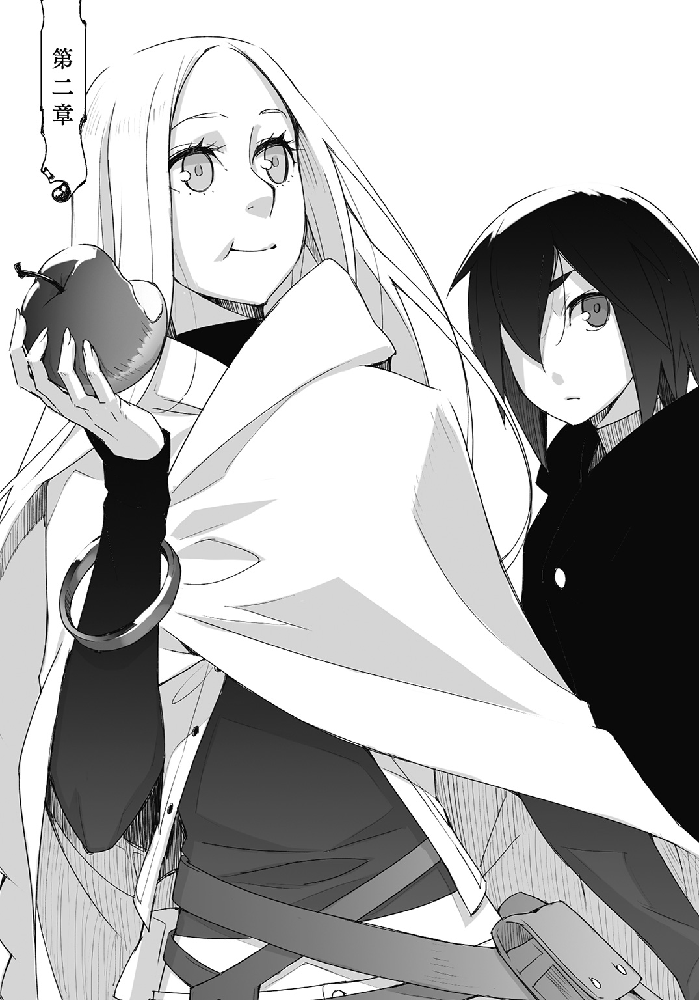
治癒促進剤からの目覚めはいつもそうだった。
微睡みはなく、だが爽やかな目覚めでもない。
ゆっくりと持ち上がった目蓋は少し腫れぼったく眩しさに目を細めるようにも見えた。
ランタンは気怠げな雰囲気を漂わせながら細めた視線を彷徨わせる。
感覚は指の先までしっかりと行き渡っている。
だが身動きが取れないのは傷を癒やすために体力の尽くが消費されたため。そして身体に張り付く少女の体温と、生暖かい湿り気のせいだった。
まさか。
ランタンが獲物を捕らえた蜘蛛のように絡みつくリリオンの手足を引き剝がして、念のため恐る恐る布団を捲り上げた。
世界地図は描かれていない。ランタンはほっとしてのそりとベッドから這い降りた。
シーツをぐっしょりと湿らせたのは寝汗だった。
ランタンは額に張り付く前髪を搔き上げて、濡れた掌を寝衣で拭った。その寝衣もひどく湿っていて重たい。
窓から差し込む朝日にランタンは大きく欠伸を零して目を擦る。
ランタンは部屋から一歩出て、小間使いの小僧を見つけると湯の用意を頼んだ。
小僧はすぐに湯気の立ったたっぷりの湯と、言われずとも預けておいた洗濯物を一緒に運んできた。なかなか気の利く小僧である。
ランタンはあられもない姿のリリオンを布団の下に隠してから部屋に通し、昨晩の食器類を片付けさせた。その仕事ぶりをベッドに腰掛けて眺める。
小僧の顔立ちは大人びて見えたが、ランタンとそう変わらない年齢だろうと思われた。
小僧は向けられる視線に緊張しているようだ。
寝汗に髪が張り付き、着崩れた寝衣一枚のランタンは奇妙な気配がある。
ぎしりとベッドが軋み、小僧がこっそりと視線を向けた。
布団の下から白い腕が伸びてランタンの腰に絡みつく。
「うー......、うぅ......」
リリオンが目蓋の持ち上がらぬ眠たげな顔を布団の中から亀のように覗かせた。そしてその顔をランタンの腰に押し付けて呻いている。
ランタンは淡く頰を緩めて、濡れて冷たい髪に指を通した。
小僧が驚いたように動きを止めた。
大人びた顔立ちが一転して純朴な少年のものになっていて、ランタンの腰に艶めかしく回された白い腕に唾を飲んでいた。ランタンはその視線を咳払い一つで追い払う。
小僧の位置からではリリオンの白い腕しか見ることができず、その腕の持ち主が涎を垂らしていたり目やにを付けている様などは知るよしもない。
小僧の頭の中ではこの白くほっそりとした腕の持ち主が、それに相応しい理想の女性の姿で補完されているのだろう。
ランタンは口元に哀れむような笑みを浮かべながらリリオンの後頭部から項に手を滑らせた。少女もランタンと同じ程に汗を搔いている。背骨の突起が指に触れた。
ランタンは腰に回った腕を解き、リリオンの寝ぼけ顔をシーツに沈めて隠した。
汗を落として、着替えをして、リリオンを起こして、それから。
ランタンは所要時間を計算し、一時間後に朝食を運ぶように小僧へ伝える。
ランタンは小僧に多めの心付けを握らせて部屋から追い払い扉に鍵を掛けた。
部屋に戻りながら寝衣を脱いで全裸になった。汗を吸った寝衣は床に落とすと重い音を立て、露わになった身体には部屋に籠もった空気さえ冷たく感じる。
指を固定していたテープを剝がし、傷口に巻いた包帯を外す。圧迫されていた患部に血が流れ込む痺れがあった。
ランタンはそっと腕を撫でた、
腕の裂傷は白い傷痕を残していたが、軟膏で貼り付けた皮膚は収まりよく癒着している。
だが指を握り込み、手首を曲げたりすると皮膚が引っ張られるような感覚がある。瞬間的に力が加わると、せっかく癒着した皮膚が千切れるだろう。戦闘には堪えられない。
上半身に集中する骨折も同じような感じだった。指の腫れは引いて開くも握るも不便はない。だが骨は完全に繫がっているのではなく、繫がり掛けている、という感じだった。
ギルド医の怖い顔を思い出した。わかってますよ、とそれを追い払う。
じゃぶじゃぶと顔を洗って、しっかりと絞ったタオルで身体の隅々にまで張り付く不愉快な汗の皮膜を拭い取った。ランタンは汚れたタオルを折りたたんで放り、下着だけを身につけるとゆっくりとベッドを振り返った。
「......」
盛り上がった布団の下から不埒な視線が覗いていた。
覗き見野郎は追い出したと思っていたが、どうやらこちらにもいたらしい。
ランタンは眉を顰めて、掛け布団を引っ剝がした。
「おはよう」
「......はよう」
ランタンが冷淡に見下ろすと、リリオンはバツの悪そうな顔をして、けれどそこはかとない満足感を隠しきれずにいる。ランタンはもう何度も裸を見られていたが、そうそう慣れるものでもなく恥ずかしさを隠すのに必死だった。そういう時は心構えが必要なのだ。
「見てた？」
「......見てた。綺麗だったわ」
ランタンは大きな溜め息を吐きだして表情を崩すと、リリオンの頭を撫でるように叩いた。
「じゃあ、どうすればいいかわかるね」
「ランタン――」
「手伝わないよ。――おねしょしたなら別だけど」
昨晩は手際が悪く手伝ってやったが、それを踏まえて時間は充分に取ってある。
ランタンはリリオンの甘えた声を一蹴して背を向けた。
「おねしょしてないよっ」
「はいはい、わかったから。早く済ませて」
リリオンがぺたぺたとランタンの背中を叩いて文句を言う。
それでもランタンは振り返らずに、背後から聞こえる衣擦れの音を聞きながら着替え始めた。一夜にして綺麗に洗濯、乾燥された服にはぱりっと糊がきいている。
外套買い直さないとな、と改めて考えながらズボンを穿き、胴衣のボタンを留めた。靴下を履いて、室内履きから戦闘靴に履き替える。とんとんと爪先で床を叩き、まだ背後から水音が響いているのでどうやって時間を潰そうか、とランタンは少し挙動不審だ。
覗き見野郎の仲間入りはごめんだが、すっかり着替えも終わっているのに壁を向いているのは馬鹿みたいだ。リリオンの裸体を見たからといって何があるわけではないのだから。
「ねえ、ランタン」
「なに？」
「こっち見て」
つまり振り返ったのはリリオンに呼ばれたからであって、そこにランタンの意思は介在していない。
背中に広がった髪の隙間から肩甲骨の浮き出る背中は相変わらず白く、背骨に沿って視線を下げると尾てい骨の尖った尻が丸出しだった。形はいいが小振りで肉付きが薄い。
昨晩はもう少し丸かったような気がする。汗の分だけ瘦せたようだ。
「背中、拭いて」
「他は」
「ちゃんと洗ったわ。指の間も」
ならばいいか、とランタンはタオルを受け取った。
リリオンは髪を項から一気に胸の前にかき寄せた。
リリオンは瘦せてしまっている。
背中を擦ってやると骨の硬さばかりが指先に触れた。やはり肉を食わせないとダメだな、とランタンはすっかり綺麗になった背中に指を這わせた。肉の厚みを測るように指で押すと少女が震える。
「やあだ、もう。ランタン。――くすぐったいわ」
思いがけぬ甘えた声に、品定めでもするような目付きになっていたランタンは慌てて指を放して目を閉じる。視界が闇に覆われるその寸前に、何一つ隠さず振り返ったリリオンの姿が映った。目蓋の裏側に小首を傾げる姿が思い描かれた。
「綺麗になった？」
「......うん」
「どうして目を閉じてるの？」
「特に、意味はない。早く着替えて、身体冷えるよ」
ランタンは平静を装って言い、聞き耳を立ててリリオンが服を身につける気配を探った。
下着に足を通し、肌着に袖を通し、ズボンを穿いてボタンを閉める。お揃いの胴衣を着て、巻き込んだ髪を外に広げて、リリオンは立ったままタイツを履けないのでベッドに座る。
そのベッドの軋みを合図にランタンは目蓋を持ち上げた。
「なんか、くるしい」
「......前後が逆だよ」
ノックの音が響き、ランタンはリリオンを扉から見えないところへと追いやった。
朝食が今朝の小僧によって運ばれてきて、小僧は部屋の中が気になったようだったがランタンが中には入れさせなかった。リリオンは涎も目脂も綺麗になっていたが、肌着の前後を直すために鳩尾近くまでが丸出しだった。
小僧が運んできた台車を部屋の中に入れて、ランタンは朝食をテーブルの上に並べる。
それはもうひたすらに。
昨晩は戦闘の後遺症もあって軽い食事をするにとどめたが、一夜明けた探索者の食欲は治癒促進剤の力も得て恐ろしい程に回復している。
朝食は多めに頼んだのだが、もっと増やしてもらってもよかったかもしれない。
リリオンは失った肉を取り戻そうとするかのような健啖家ぶりを発揮して、ランタンも傷を癒やすために消耗した熱量を欲していた。
卵を五つ使ったオムレツには賽の目に切った鶏肉と色目も鮮やかな野菜が混ぜ込まれていた。オムレツは甘い味付けで生クリームやチーズが混ぜられてふんわりとして、野菜はしゃきしゃきと歯ごたえよく、鳥肉の旨味は卵のまろやかさをよく引き立てた。
パンは林檎酒の酵母で発酵させたもので、林檎の果肉も練り込まれている。酵母パン特有の酸味が有り生地自体は硬めで素朴な味わいだった。林檎を搾ったジュースにはよく合って、リリオンはこれを気に入ったようだった。
他にも豆を磨りつぶした緑鮮やかなスープや、茸とほうれん草のパイ包み、分厚いハムステーキや山盛りのチーズサラダでテーブルの上はいっぱいになっていたが、それら全てをすっかり食べ終えても腹八分目という所だった。
ランタンですら八分目なのだから、リリオンはまだまだ物足りないようだ。
「ちょっと足らないね」
デザートのアップルパイはシナモンの香りがした。リリオンはそれを手摑みで丸囓りにして、ランタンは、まあこれぐらいなら、とフォークに突き刺した一切れを口に入れて注意の言葉と一緒に飲み込んだ。二口で食べ終えてしまっては注意する暇もない。
追加で料理を持ってこさせてもよかったが、どうせ通りを歩かねばならないのでそこで買い食いをすることにした。そう決めるとランタンは半分残ったパイをリリオンに食べさせてやって、リリオンの髪をざっと梳かして首の後ろで一纏めに縛った。
「忘れ物は？」
「ないよ！」
ランタンはフードを失った外套を羽織り、枕元にいくらかの銅貨を重ねて部屋を引き払う。
目抜き通りに出るまでの繫ぎとして二人は丸ごとの林檎を囓りながら朝の街を歩いた。
街はもうすっかりと目覚めていて、爽やかさと忙しい喧噪が日溜まりの中で混ざっている。
頰に触れる陽射しがぽかぽかと暖かくてランタンとリリオンは欠伸を漏らした。
「ねえ、これは？ フードあるよ」
「んー、ごわごわしてるから嫌」
「じゃあこっちは？」
「ちくちくするから嫌。そんなの着たら痒くなっちゃうよ」
林檎をぺろりと平らげたリリオンは、今は串焼き肉を片手に持っている。
目抜き通りの店々を冷やかしながら二人はのんびりと散歩をしていた。
ランタンが外套を探すとリリオンは張り切って視線を彷徨わせたがなかなかランタンの眼鏡に適うものはなかった。
「どうせなら仕立て直してもらおうかなあ。結構気に入ってるし、これ」
「――これにしましょうよ、わたしのと同じ色」
「......もうちょっと色々見てからね。外套って防具の範疇かなあ」
ランタンはリリオンの提案に言葉を濁して、リリオンの手を引っ張って指差した陳列窓の前から離れた。
「さっきのがいいのに」
拗ねるような声が幼気で、ランタンは少し心が動かされたがそうやって甘さを見せるとお揃い風装備が風ではなくなってしまう。
「防具なら、グランさんが作ってくれるの？」
「被服系ってお願いしたことないから、どうなんだろうね。あの指で針って握れるのかな」
二人が目指すのはグラン武具工房だった。
特注品の戦鎚とあり物を仕立て直した大楯を比べるのは可哀想であるが、戦鎚は素人目には問題なさそうで大楯は素人目にも整備行きだった。
大剣は鞘に収めれば人目から隠せるが、楯はそういうわけにはいかない。
使い込まれたと言えば聞こえがいいが、傷つき見窄らしい装備を衆目に晒しても得られる物は同情と侮りだけだった。
職人街に入ると爽やかさを吹き飛ばす忙しない音が響いてくる。日の出から日の入りまでこの調子だというのだから頭が下がる。ランタンは道中で紙袋一杯に買い込んだ揚げ芋をほくほくと食らいながら鎧戸の開放された作業場に足を踏み入れた。
「おはようございます！」
工房では既に多くの職人が仕事に勤しんでいた。
揃いも揃ってむさ苦しい男たちが、赤く焼けた鉄が跳ねるのも気にせず鍛え込まれた肉体も露わに金槌を振り下ろしている。
金属を叩き鍛える音色の隙間を子供特有の硬質な声が通り抜けた。
幾人もの職人が振り返り、野太い挨拶が返ってきてリリオンがランタンの手を握り締める。
以前訪れた時は休暇だったし、大剣大楯を取りに来た時は表から入った。
リリオンはまったく知らない場所へと来てしまったのではないかというような不安な顔つきになっている。
いや、これはただ単に職人たちが怖いのだ。
武具職人達は探索者顔負けの獰猛な雰囲気を持っている。
ランタンは手近な職人にグランを呼ぶように頼み、紙袋一杯の揚げ芋を差し入れに渡した。
「親方あっ！ ランタンくん来ましたあっ！ ――んまい」
ランタンの来店を伝える怒鳴り声が伝播して、工房の奥からグランがのそりと顔を出した。探索帰りの二人の無事な姿を見ると、おう、と太い腕を持ち上げて近付いてくる。
「よし、今回もちゃんと戻ってきたな」
グランは挙げた手を振り下ろしどかんとランタンの背中を引っぱたいて、その隣のリリオンにも手荒い帰還の祝福を喰らわせていた。
ランタンは治りかけの肋骨に染みた痛みに咳き込み、グランを睨みながら衝撃を防いでくれた背囊を足元に下ろした。
「おかげさまで、無事迷宮を攻略できました」
老職人は一通り帰還を喜び終えるといつものようにずいと手を差し出した。
ランタンは諦めたように睨むのをやめて、その手に戦鎚を渡した。リリオンの大楯は筋骨隆々の職人が二人がかりで預かって、重たげに支えている。
「......ふむ、象でも吹っ飛ばしたのか？」
「熊です」
「熊か。そらあ、難儀なことだ。――柄が少し反ってるな、鎚頭も熱で歪んでる。鶴嘴の先もちょっと潰れたか」
よくやったなあ、とグランはしみじみ呟いた。戦鎚の不虞を指先で愛撫するように撫でて、老職人はランタンたちの潜り抜けた戦闘を思い浮かべているようだった。
「まあ三日ってとこだな。だがこっちは酷えな」
グランは大楯を見て顔を顰めた。
その表情を見てリリオンが叱られたようにびくっと肩を震わせて、職人の一人が楯から剣を引き抜くとグランの表情はいよいよ恐ろしくなった。
ごつごつとした硬い手が、ランタンの小さな頭を鷲摑みにした。
「おい、あれ」
「......」
「どうみてもお前の仕業だよな」
大剣は刃の半ば辺りが拉げ潰れている。それはもう酷い有様だった。
「熊の腕を落とすのに、どうしても必要だったんです」
「ちっ......だからってなあ。鑿じゃないんだぞ。いっそ片刃のでも新調するか？」
なあ、とグランはランタンの頭を揺すりながらリリオンに問い掛けた。
リリオンはランタンの顔色を窺おうとしたが、ぐらぐらと揺れるランタンと視線が合わないので眉を八の字にして困り切った表情で二人の顔を何度も見比べた。
「あう、......あの、あの、わたし、今のままで、いいです」
「嬢ちゃんも客なんだから好き勝手に言ってくれて構わんぞ。楯が重いだの剣が軽いだのとな。――坊主なんてそりゃもう我が儘放題で」
「ちょっと整備以外にもお願いがっ――」
ランタンはグランが言い切る前に職人の手の中から逃げ出した。
「――ありましてですね」
「なんだよ。うるせえな」
ランタンは背囊から布きれに包んだ嵐熊の鉤爪を取り出した。
黒曜石に似た色合いの爪を見てグランはふんと鼻を鳴らした。
「どうせなら熊の手を丸ごと持って来いよ。ありゃ珍味だぞ」
「それは気が利かなくて申し訳ないです」
「冗談だよ。で、これはどうすんだよ？」
嵐熊の鉤爪は美しく湾曲して、充分な長さがあり、ランタンの戦鎚と打ち合っても欠けぬ程硬く、リリオンの大楯表面を切り裂く鋭さを有していた。そしてそれでいて軽金属のように軽い。失った狩猟刀の代わりにはならないだろうか、と思って持って帰ってきたのだ。
グランは爪の一本を手に取るとがじりと口に咥えた。そして干し肉でも嚙むように何度か咀嚼すると、考え込むような難しい顔をして吐き出した。
「ふうん、硬度は充分だな。靱性も悪くない。素材の特性を見るために一本潰しちまっていいか？」
「構いませんよ。と言いますか狩猟刀が二本できればいいので、余った分は好きにしてくださっていいです」
「鉈を作るわけでもあるまいに、何とも太っ腹なことだな。太っ腹ついでに言うが素材持ち込みとは言え特注品だからそれなりに高くつくぞ」
「全額前払いでも構いませんよ」
試すようなグランの物言いにランタンは余裕綽々に答えた。
何だかんだとランタンは高級取りで、迷宮を一つ攻略したばかりのランタンの懐は温かい。
そんなランタンの様子にグランは何とも言えぬ表情になって頭を搔いた。
物を見ずに全額前払いしても本当によかった。
どのような物であろうともグランの仕事ならば下手な物が出てこないことは当然のことで、ランタンはグランの仕事だけではなくその人格にも信頼を寄せていた。顧客に出来損ないを高値で摑ませるような真似はしないのだ。
グランは一つの工房を取り仕切る大商人でもあるが、それ以上に誇り高い職人である。
「柄にはこれを使えませんか？」
ランタンは以前の狩猟刀の柄をグランに差し出した。刀身は嵐熊の体内で爆発四散し、柄の中に挟み込まれた茎だけが狩猟刀の造りの厚さを思い出させる。
「ダメだ、使えない。ここの罅がぐるっと回ってるから、力入れたら割れちまう。補強してもいいが新しく拵えた物よりは当たり前だが強度は落ちる。こいつだって魔物相手に使ったんだろ？ ママゴトに使うんじゃねえからな。まあ握りの参考にはするさ」
「そうですか」
愛着があり名残惜しくはあるが、探索に使う道具だ。感傷に引きずられてはいけない。
ランタンは、お願いします、とだけ言って頭を下げた。
「ああちゃんと処理しておくよ。でだ、二本ってことは坊主と嬢ちゃんのだよな」
「はい」
「ふへっ？」
ランタンが当たり前のように頷くと、蚊帳の外で二人のやり取りを聞いていたリリオンが素っ頓狂な声を上げた。
「あれ？ 言ってなかったっけ」
「聞いてない」
狩猟刀は、というかいわゆる副装はいざという時のためにあって困るものではないし、今回の探索のように片方が壊れてしまった時の予備にもなるし、魔精結晶の採取なども二人で行えば効率が上がる。
せっかく探索班を組んだのだからその利点を生かさない手はない。
だがそれだけではなく別の理由もあった。
「じゃあちゃんと言っておかないと。リリオンの初探索のお祝いにプレゼントしてあげる」
リリオンは目を大きく瞬かせて、喜ぶよりも貰ってばかりで恐縮しているようだった。
しかしお祝いだと言われれば受け取らざるを得ない。
ランタンは困り顔のリリオンを見てほくそ笑んだ。
「あ、――ありがとう」
か細い声に、はにかみを浮かべて少女は言った。
「ランタンとお揃いね」
「あ......！」
「なあに嫌なの!?」
「いや別に」
不服そうな顔つきのランタンにリリオンは詰め寄って、なんでなんでと喚いている。
そんな二人にグランは呆れ果てた視線を送り、呆気に取られている職人二人に戦鎚と楯を工房の奥へと運んでいくように指示を出した。
「うゔん、――楽しくじゃれついてるところ悪いが、手のサイズを測らせてくれ。さて、坊主の手は大きくなったかな」
グランはわかりやすく咳払いをして、まずランタンの成長していない手の大きさを測った。
そしてリリオンは、グランに手を出すように言われても何だかまごついていた。
「ほら、リリオン」
「うん」
リリオンは指が反る程に手を開いている。
「でも大剣の時に測ったばかりじゃないですか」
「お前と違って大きくなりそうじゃねえかよ、嬢ちゃんは」
リリオンの腕を摑むランタンの掌に強張りが伝わってきた。
ランタンはこっそりとリリオンの表情を見上げる。半開きになった口から、呼吸が浅く速い。指を切り落とされるのでは、というような緊張があった。
「おう、もういいぞ」
リリオンの掌が砂金を塗したようにきらきらとしていた。それは汗だった。リリオンは浮いた汗を隠すようにズボンで拭って、そっとランタンの背に隠れるように足を動かした。
ランタンはリリオンの脇腹を擽るように揉みしだいた。
「わ、もうっ」
「もう終わるから」
小さく呟いてランタンは少女の尻を叩く。リリオンは尻を撫でながら微かに頷いた。
「整備の方は三日で終わらせるが、狩猟刀の方は一週間は欲しいな。どうする？ 狩猟刀の出来上がりに武器の整備も合わせるか？」
「いえ、三日後に武器だけ頂きに来ます」
「わかった、じゃあ整備間の代替品持って行け」
ランタンは戦棍を、リリオンは長剣を選んだ。
二、三試し振りをして二人揃って小さく首を傾げる。グラン武具工房の名誉に賭けて決して低品質の品ではないのだが、特注の戦鎚と比べてしまうとどうしても心許ない。ランタンはまあしかたないかと戦棍を腰に吊るして、リリオンのベルトに鞘を縛り付けてやった。
「作るのは狩猟刀だけでいいのか？ 十本もあれば他にも色々できるぞ。戦鎚の鶴嘴を鎌に取り替えたりな」
「他にですか？ うーん、何かあるかな？」
ランタンが何となくリリオンを見上げる。
「欲しいものある？ 探索で足らなくて何か不便だったとか」
リリオンは何か言いたそうにしていたので、ランタンは辛抱強く少女が口を開くのを待った。リリオンは胸の前で指をこねた。
「あのね、あのね」
長い睫毛を伏せて、その隙間から淡褐色の視線がランタンをちらちらと見た。
「不便じゃないんだけど、わたしね......」
「うん」
「ランタンに、わたしお料理作ってあげたいなって、思って、それでね」
リリオンはこねていた指を絡め、祈るように手を組んだ。
「ランタンに、......わたしを食べて欲しいな」
ランタンがその言葉にぽかんとすると、リリオンは自分の言い間違いに気が付いて恥ずかしげに唇を嚙んだ。けれどもう言ってしまったのだからと腹を括ったように、食べて欲しいの、ともう一度繰り返した。
「......すげえ殺し文句だな」
グランが腕組みをして頷きながら呟く。
ランタンはしばらくどうすることもできなかった。
◇◇◇
探索後の所用をあらかた済まし上街から下街へと下る頃には、住み家へと帰る路は夕焼けに染まっていた。
下街の目抜き通りを外れて、ランタンとリリオンは並んで道とも呼べぬ道を歩いていく。
廃墟同然の街並みを通り抜けた風はどこか埃っぽく、奥まった方へと進むにつれて石のような寒々しさを感じさせる。
それは崩れた街並みの影に溜まった冷気が、風に押し出されているようだった。
建物の中を通り抜けた風が、扉などあるはずもない玄関から突風のように吹き抜けてランタンのフードを外した。ランタンがいそいそとそれを被り直そうとすると、リリオンが外套に繫がれたフードを指の先でちょんと摑まえた。
リリオンは神妙な顔つきで恐れるように、柔らかく滑らかな生地を指で縒っている。その指先に摘んだ分だけで、どれ程の金額になるのだろうかと考えているのかもしれない。
フードが切れた外套を下取りに出して、ランタンは外套を新しく買い直した。もちろんリリオンの着ている物とは色が違う、以前と同じように黒い外套だ。
しかしただ黒いわけではない。
それは物質系魔物の外皮より取れる鉱物染料で染め上げた艶めかしい黒紫だ。まるで星月のない夜を切り取ったような美しい色合いであったし、ただ良い色合いであるだけではない。
妖蚕の繭を製糸した特殊な糸で織った生地は正に生きた布である。染め上げる際に同時に魔精加工を施してあり、その防御性能もなかなかの逸品だ。
火竜の息吹を遮断し、大海蛇の水砲さえも散らすらしい。
もしかしたら火竜も大海蛇も幼生体であるかもしれず、店員の売り文句に騙された可能性もあったがランタンは大満足だった。
防御性能はランタンにとってはあって困らない程度の要素でしかない。
ランタンはリリオンの頭を撫でるように、殊更優しく外套の表面を撫でた。外套の触り心地は絹よりも柔らかで滑らかだ。ランタンは今にも外套に頰ずりしそうな程だった。
装備を選ぶ時にランタンが最も重要視するのは着心地だった。
魔精によってどれだけ身体が強化されようとも、服を着た時に感じる首筋の毛羽立ちは我慢ならない。骨が折れようと、肉が裂けようと痛みを我慢することはできるが、ランタンは靴擦れになっただけで歩けなくなる。
人の身体は不思議なものだ。
「......うー」
リリオンが小さく唸って指先から弾くようにフードを手放したかと思うと、ランタンの手を取った。まるで外套からランタンを奪い返すように。
「わっ、なになに？」
リリオンが自らの胸にランタンの手を当てて、逃げ出さないように押さえつけた。
少女らしい慎ましやかな胸は、それだけに心臓に近い。
ランタンは足を止めて、そこから響く心臓の鼓動を掌で聞くばかりだった。
ほとんど平らなのに柔らかいものだな、と思わず本能的に動かした指先にリリオンが小さく表情を変えた。恥ずかしがっているのではないようだった。
「あの、――リリオン。ごめん」
ランタンは反射的に謝って、胸の中に埋まるような手をどうにか引き抜く。そして指を絡めて手を繫ぐとそのまま風の吹き抜けた玄関を潜り、リリオンを抱きしめて壁に押し付けた。
「きゃっ！」
壁に少女の声と、金属音が反響する。
ランタンが戦棍を右手に、振り下ろされた斬撃を受け止めていた。
切り取られた廃墟の中の空間。天井は半ば抜けて、二階に人の気配はない。
壁の向こうにも人はおらず、空間の中にはランタンとリリオン、そして襲いかかってきた赤ら顔の男がいるだけだ。
ランタンは戦棍と剣の間に起こった火花の散る一瞬に判断を下すと、手首を返して受け止めた剣を巻き落とし、前のめりに崩れる男の腹を蹴りつけた。
そしてリリオンを背中に守るよう身体を入れ替えた。
「ラン、タン......？」
驚きと怯えの入り交じった声を背後に聞きながら、ランタンは男を睨み付けた。
人気が少なく、それでいて通り道となりそうな廃墟に身を潜め、不意を衝いて襲いかかり、殺して金品を奪う。下街では騒ぎ立てる程のことでもないよくある犯罪の一つだった。
押し返した男はぐらりと二、三後退してしくじったことにむっとした顔つきになった。
わりと強めに蹴ったのだが男は持ち堪えた。靴底に伝わる腹筋はそれなりに硬く、酔っているようだったが身体の軸がしっかりしている。
だが状況判断は遅い。
ランタンはその顔面に問答無用に戦棍を振り下ろして鼻を潰すと同時に、足払いをしかけてその場に素っ転がした。
待ち伏せ強盗など掃いて捨てる程ある話ではあるのだが、万に一つということもある。
ランタンは比喩表現ではなく赤ら顔になった男の顎を戦棍で持ち上げた。
男は何やら汚らしい呻き声を上げたかと思うと、乱暴に鼻から息を吐いて鼻血を抜ききった。ランタンは咄嗟に戦棍を引っ込める。鼻水混じりの鼻血で汚れるのが嫌だったのだ。
「うおえ、ぐへ、あー、くそがっ。鉄臭え」
強盗は鼻を潰されたというのに何とも暢気なもので、鬱陶しがるように腕で鼻血を拭って汚らしいコートの懐を弄った。
あれえ、ないぞ、と独り言を呟いている。
「おい、勝手に動くな。殺すぞ」
「それはちょっと勘弁してくれ。くそ、ああ、よかった無事だ。へへへ」
ランタンが威圧しても、男はお構いなしだった。
こめかみに青筋が立ってもランタンの童顔は恐ろしくない。
だがそのことを差し引きしても異様な対応である。
痛がる素振りも、怖がる素振りも見せることがない。ランタンは油断無く男を睨み続けた。
けれど男が懐から取り出したのは凶器ではなく水筒だった。男はそれを耳元で揺らして、まるで自慢するようにへらへらと笑った。
「なあ、いいだろ？ 混ぜ物なんか一つもない上等な蒸留酒を先払いだぜ。ふへ、仕事終わりにやっぱり飲みたいじゃねえか」
「仕事？」
男の言葉にランタンは片眉をぴくりと持ち上げて、低い声で尋ねた。
だが男は震える手でどうにか水筒の蓋を開けようとするのに必死だった。
ランタンは戦棍で男の手を叩いた。蓋を握る男の中指が、ばきと音を立ててひっくり返るように根元から折れた。
「質問に答えろ。じゃないと手だけじゃなくて、あー、えっと、どうしようかな。――その水筒を砕くぞ」
「ダメだっ！」
顔を砕くぞ、と言うよりもそれは効果のある言葉だった。男は折れた中指のことなど気にもせず、それこそが命であるように水筒を抱きしめてランタンから隠した。
「先払いって言ったな。誰がお前に、何を命じたか言え」
「飲みたいのに我慢したんだ、仕事終わりに――」
「黙れ。質問に答えろ」
慌てて言い訳をする男に、ランタンは冷静だった。冷ややかな視線に晒された男は、酔っ払いが夜風に当たったように僅かに正気を取り戻した。
「ああ、ええと、たしか、あれ？ うん、誰かは知らん。でも、ここを通るガキを殺せば、酒と薬をくれるって」
そこで一度ひゅっと息を吸って笑った。
その時のことを思い出したのか無邪気さすらある笑みを。
「先払いでこいつと、薬はもう飲んじまったけどよ。これを満タンにしてくれるっていうんだぜ。ガキを一匹殺るだけで。だからいい奴だな、うん。な、いい仕事だと思ったんだよう、わかるだろ。あ、ガキにゃまだわかんねえか。こいつの美味さは――」
会話の途中で男の耳が飛んだ。
ランタンの背中からリリオンが飛び出して、長剣を振り下ろしたのだ。
ランタンが慌てて通り過ぎ様の髪を引っ摑んで止めなければ、長剣はそのまま鎖骨を割って胴を斜めに抜けていただろう。
長剣は男の肩の上に載っかるようにして止まっている。
「痛ぁっ！ 約束と違っ――ぐあっ!!」
「黙ってろって。......リリオン、どうしたの？」
顔面に蹴りを一発叩き込んで黙らせる。
汚れた靴底を地面に拭い、ランタンは摑んだ髪から手を離した。
そして乱暴にしたことを詫びるように優しく撫でた。
リリオンはゆっくりとランタンを振り返る。目を大きく見開いて、浅く開いた唇から漏れる吐息が震えていた。
「だって、この人、ランタンのこと殺すって！」
切迫したような早口でリリオンは捲し立てた。ランタンは少女を落ち着かせるように頷く。
「......うん、でもまあ、もうちょっと後でね。おい」
ランタンの呼びかけに、仰向けに倒れた男は精一杯に急いでいるのだろう緩慢な動作で身体を起こして、やはり気にしていたのは水筒だった。
もう死から逃れられぬ事を悟っているのか、それが死に水であるかというように水筒の蓋を口でこじ開けようとしている。
ランタンは戦棍を鋭く振り上げた。
――唐突に男の頭が弾けた。同時に、戦棍に指が痺れるような衝撃。
ランタンは再びリリオンを守るように一歩前に出て、地面に突き立った矢に視線を向けた。
それは男の後頭部をごっそりと抉るように貫き、深々と石の地面に埋まっている。ランタンが戦棍で迎撃した矢は砕けて辺りに散らばっていた。
窓から二本の矢が飛び込んできたのだ。
「な、なにっ？」
仰向けに倒れた男にリリオンが驚きの声を上げ、ランタンは手振りで後ろに下がらせた。
「口封じでしょ。あーあ、知らない奴でも頼まれた時に姿形ぐらいは見ただろうに。酔っ払いってだから嫌いだ」
ランタンは誘うように射線に身を晒したままだったが、三射目は来ない。
矢が撃ち込まれた窓に近付く。男の頭部を撃ち抜いた正確さや、その角度からいって死角からの曲射とは考え辛い。ならばあそこか、と夜空の中に浮かぶ影のような廃墟群、その中から突き出た一つの建物をランタンは見つめた。
「なかなかいい腕だな。一キロ以上あるかな、暗くてよくわかんないな」
夜の闇の中。あの建物からでは窓の大きさは親指の爪程もあるかといったところだろうし、その中にある男の頭部を正確に射貫いた技術は賞賛に値した。
そして男の頭を射貫いてなお地面に突き刺さる威力。速射した二発目にして迎撃した戦棍に伝播する矢の威力。
痺れを思い出しランタンは唇を歪め、戦棍に視線を落とした。
八枚の鉄板が放射状に並ぶ戦棍の先端。鉄板の内の一枚が矢の衝撃で歪んでいた。代替品だというのに。グランに怒られるかもしれない。
使用した弓もなかなかの強さのものだろう。
その威力を出すためには、それこそ探索者でないと引けない程の張力であったはずだ。だが探索者はあまり弓を使わない。
遠距離攻撃の有用性は言わずもがなであるのだが、魔物相手、そして迷宮相手にはなかなかその有用さが発揮されづらいのだ。
その弓術にこれ程の練度を有するのなら、迷宮外でそれ相応の訓練を積み腕を磨いた者である可能性が高い。
「となると襲撃者かな。騎士崩れって事はないだろうし。この帰り道はもう使えないかなあ」
ランタンは地面に突き刺さった矢を踏み折った。素材は何の変哲のない鉄。これから足取りを辿ることはできないだろう。職人ギルドや商人ギルドに所属する真っ当な工房や商店で製造販売されたのではなく、下街のどこかで製産された物だと思われる。
ランタンはリリオンを振り返った。
「もう壁から離れていいよ、敵はどっか行ったみたい」
ランタンが異様なぐらいに落ち着いているせいか、リリオンも男に斬りかかった時のような不安をすっかりとなくしたようだった。長剣を鞘に収めて、飛ぶような足取りでランタンの隣へ。そして男の死体を覗き込み、窓の外を見つめた。
「追いかけないの」
「別にそんな脅威でもないよ、これぐらい。よくあることだし」
治安の悪い下街に住む、小さく華奢で身なりのよいランタンは何だかんだと悪党によく絡まれるのである。そしてそれらの尽くを返り討ちにしているので、悪党たちからあまり好かれていない。
はっきりと顔が割れているわけではないのだが、フードを目深に被った小さい人影は目を引く姿である。
こういった待ち伏せは日常茶飯事だった。
「それにここで待ち伏せをしたって事は、家の場所はまだ知られてないって事だし」
この廃墟は住み家への路を選択する数ある分岐点の内の一つに過ぎなかった。
それも住み家からわりと遠い位置にある重要度の低い分岐点だ。この廃墟で待ち伏せをされたとして、ランタンとしてはそれほど脅威のあることではない。
「いざとなれば住み家を別に移せばいいだけだしね」
ランタンは念のために男の死体を漁ったが、身元を示すような物は所持していなかった。
鍛えた痕跡の残る萎んだ筋肉。矢の衝撃に直角に折れた首から、脱臼した肩に掛かる色の褪せた入れ墨。垢にまみれた不潔さ。腕には注射痕があり、内出血を起こしたように鈍い紫に染まっている。半開きになった口から覗く歯列はやせ衰え、最後の瞬間に水筒の蓋を強く嚙んだのだろう前歯は一つ残らず折れていた。
「んー、麻薬で痛みを消してたのかな。本当にお酒だけか、持ってるのって。ふうん結構いい値段付けて貰ったもんだな」
子供一人殺す報酬が酒と麻薬。
それは下街では充分すぎる程の報酬だった。
もっとも探索者相手の対価としては、安いどころの話ではない。おそらくランタンが探索者であることは男には伏せられていたのだろう。
そして、そもそも男に話を持ちかけた誰かは男がランタンを殺すことなど毛程も期待していなかったのだ。この男の役割はランタンを廃墟内に足止めする囮でしかない。
自業自得だな、と冷淡に思いながらもランタンは廃墟の隅に吹っ飛んだ水筒を仰向けになった男の胸に載せた。半開きになった蓋の隙間から透明な液体がじくじくと染み出して、ゆっくりとゆっくりと男の胸を濡らした。
「収穫無し。もういいや。帰ろうか。でも一応、周囲の警戒はしてね」
敵は逃げたが、ある程度の行動パターンは読まれていると思っていた方がよさそうだった。
帰り道の一つに待ち伏せがあったこともそうであるし、迷宮を攻略した直後の探索者は仕留めるには手頃だ。何しろ金は持っているし、高確率で手負いである。
それにランタンは怪我の具合にもよるが、上街に一泊、そして下街の住み家に帰るというパターンが多いことは確かである。おそらく狙い撃ちだったはずだ。
「うん、わかった、でも......帰るのに、そっち戻るの？」
入ってきた玄関から出ようとランタンがリリオンの手を引いて踵を返すと、少女は小首を傾げる。
「念のためね。こういう時のために帰り道は幾つか用意してあるからさ。たまには別のも使わないと忘れちゃうし。下水道を通る道もあるんだよ。まあ使いたくないけど。暗いし、変な虫とか鼠とかいるし、何より臭くて汚いからさ」
「ふうん、大変なのね」
「そんなこと言って、もう。リリオンもちゃんと覚えとかないとダメだよ。迷子になってもしらないよ」
「平気よ、だってわたしはランタンと一緒だもの」
リリオンはぎゅうっとランタンの手を握って、楽しそうに腕を振った。
「怪我に響くよ」
「わあ、ごめんなさいっ！ 痛かった？」
「ううん、平気」
リリオンは手を放して、まるで守るようにそっと腕を抱いた、
星が降り注ぐように夜空にあって、足元に落ちる影が夜だというのに濃い。
迷宮へ出発した時の路ともまた違う帰路に、リリオンはランタンに寄り添いながらきょろきょろと辺りに視線を飛ばしていた。
「ねえ、この道で合ってるの？」
最も人目のない帰路の一つである。
もうずっと廃墟と廃墟の隙間、路なき路を進むランタンとリリオンの足音しか聞こえず、まったくと言っていい程に人の気配がなかった。
ランタンが背後を確認すると、少女は髪の毛を振り回すように振り返ったりもする。
「合ってるよ。もしかして怖いの？」
「怖くないわっ！」
「ふうん、ほら、もうすぐだよ。そこを抜けたらね」
目の前には住み家にしている集合住宅の後ろ姿がある。裏側から住み家を見たことのないリリオンは、ランタンに手を引かれて前に回り込んでようやく少しだけほっとしたようだった。集合住宅は探索に出かけた前とまったく同じ姿でそこに建っている。
「暗かったから、ちょっとわからなかったのよ。朝ならわかるわ、本当よ」
「はいはい、星も月もこんなに出てて真っ暗だもんね。しかたないよね」
「もうっ」
意地悪そうに言うとリリオンは拗ねた声を上げる。そしてランタンの腕を引っ張るようにして外階段を一段飛ばしに上った。
「ちょっと、狭いし急なんだから引っ張らないで。危ないよ」
ランタンがそう言うと、リリオンは一度立ち止まってランタンの肩を抱きしめるようにしがみついた。狭い外階段を並んで上れるように。リリオンはこの集合住宅が似通っているだけの別の建物ではないかと、まだ少し怖がっているように思える。
明かりの灯らない建物は確かに少し不気味である。
だが、だからといって外に光源を置けば、集まってくるのは蛾ばかりではない。これまで隠し通してきた住み家は、あっという間に浮浪者に蹂躙されることだろう。
ランタンは玄関扉の前に立ち止まると、それがしっかりと施錠されたままであることを確かめる。それからようやく鍵を使って開錠した。
がちゃん、と響く金属音。
それを耳にした瞬間に、ランタンの身体が無意識に弛緩する。
扉を開くと、出かける前とまったく同じ部屋の景色がある。誰も忍び込んでいないことを伝える停滞した空気の中に自分の匂いを見つけ出して、ランタンはゆっくりと息を吸った。
「ただいまー、おかえりー」
ランタンは誰にともなく言いながら部屋に足を踏み入れた。歩きながら外套を脱いで、背囊を下ろす。魔道光源に衝撃を加えて部屋を照らし、戦棍を壁に立てかけた。
狩猟刀を外そうとして空を摑み、ランタンは苦笑を頰に滲ませながら最初からそうするつもりだったように腰に巻いたポーチを外した。
ベッドにどっかと腰を下ろして、このまま倒れ込んでしまいたい、と思った。
リリオンが扉の外に佇んでいた。
「どうしたの？」
家に帰るまでが探索だ。それは最後の最後まで気を抜くなというただの戒めに過ぎないが、リリオンにとってこの瞬間こそが初めての迷宮探索、その終わりの瞬間なのかもしれない。
ランタンはベッドのバネを軋ませて立ち上がり、その勢いのまま部屋の真ん中まで足を進めた。そして仁王立ちになると、両手を広げて目を細めた。
「ほら、おいで」
それから口元に優しげな笑みを浮かべて、少女の名を呼んだ。
「おかえり、リリオン」
「......――ただいまっ！」
リリオンは大きく一歩踏み出して敷居をまたぐと、そのまま駆け寄ってぎゅうっとランタンに抱きついた。
ランタンは後ろに踏鞴を踏んでベッドの上に尻餅をつき、リリオンはランタンの怪我に障らないようにゆっくりと少年の身体を押し倒した。そのままベッドの上によじ登った。
「ちょっと――」
リリオンはランタンの柔らかな髪に顔を埋めるようにして、ずっと抱きついたままだった。
「ああもう、靴脱いで、ほら、外套も、背囊も、ポーチも、それに剣だって」
「うん」
「ああ、まったくもう、探索は疲れたもんね」
「うん」
「頑張ったもん」
「......うん」
「しょうがないね、この子は」
ランタンはリリオンの背中に手を回すと、そっと身体を入れ替えて腕の中から抜け出す。
リリオンは眠っていた。
ランタンは外套も上着も、襟首を緩めてやり、靴も靴下も脱がせて、髪も解いてやった。
リリオンの長身をベッドの上にきちんと押し込む。
広がった銀の髪の中、背を丸めて、膝を曲げて眠るリリオンは妖精のように幻想的で儚げな雰囲気を纏っている。
色々なことがあったが探索は無事に終わったと言っていい。
リリオンが初めての探索を無事に終えたように、ランタンも初めての孤独ではない探索を無事に終えたのだ。
ふいにその事を強く実感させられた。心臓がどくっどくっと音を立てている。
ランタンもすっかりと身軽になると、リリオンの隣に身体を横たえた。
すると何をしても身じろぎしなかった少女は、すぐにランタンに抱きついてきた。
互いの心臓の音色を重ね合わせるように。
ランタンは無垢な少女の寝顔にそっと語りかけた。
「おやすみ、リリオン」
それは祝福のように響く。
二人は自然と互いを抱きしめ合いながら、そのまま夜の安息に沈んでいった。
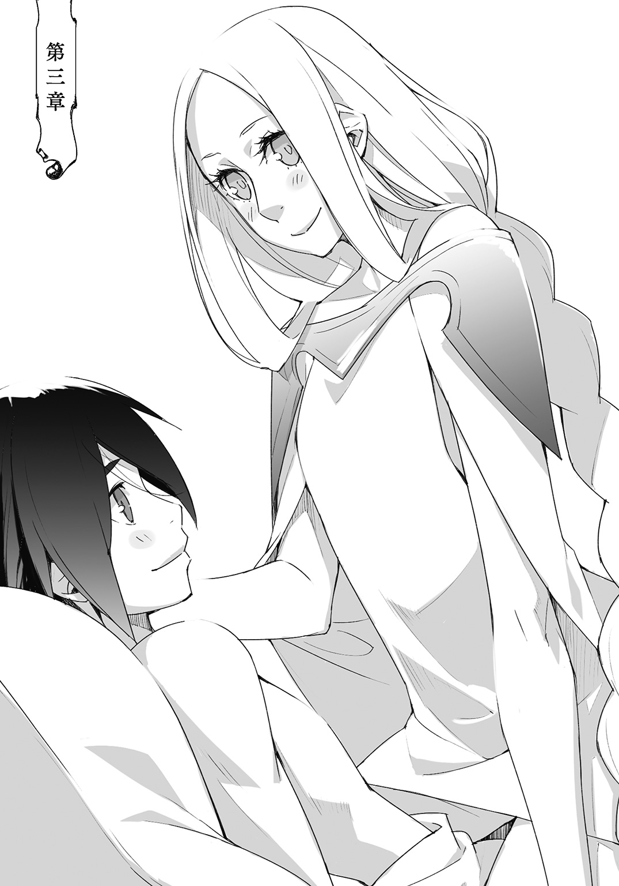
勝手に住み着いているこの部屋は、もしかしたら元は倉庫か何かだったのではないかとランタンは最近思い始めている。
玄関をくぐると長方形に切り取られた一つの空間がぽっかりとあるだけ。
そこから真っ直ぐ進んだ先にベッドがある。その脇に食事のための丸いテーブルがあり、少し草臥れている一人掛けのソファが半端な距離にぽつんと鎮座している。家具はそれだけで棚の一つもない。戦鎚や背囊といった探索道具は壁際に纏められている。
そして窓もなく、それがあったであろう壁は石が塗り込められてそこだけ僅かに色が違う。
魔道光源を消すとほとんど真っ暗で、玄関扉の下にあるほんの薄い隙間から入り込む光だけが唯一朝を告げるものであった。
荷物のように大人しくじっとするには都合のよい部屋だ。
床を這う光がそろりそろりとベッドに忍び寄り、やがてそこにある膨らみを照らした。
ベッドの上ではランタンとリリオンが一塊になって眠っている。
リリオンはランタンの身体を包み込むようにして、そしてランタンは胎児のように身体を丸めて小さな身体をいっそう小さくしていた。
三日間、そうやって過ごした。
誰に咎められることもなく、遮られることもなくひたすらに眠り、昼夜関係なく目を覚ませば背囊一杯に買い込んだ食料を貪った。そして空腹を満たしたならば再び眠りにつく。
それを日に何度も繰り返した。
この上なく無為で、非生産的な生活を送っているのにもかかわらずその姿に怠惰さを感じさせないのは、それが傷を癒やす獣の姿に似ていたからだろう。
探索者は次の迷宮を攻略するために眠りながらも爪を研ぐのである。
「ん、んうー、ふあ」
ランタンが目を覚ました。
そこがリリオンの懐の中だ、とはもう思わない。三日間の間にすっかりとなれてしまった。
ランタンは寝ぼけ眼の緩慢な仕草で、けれど服を引っ摑む少女の指を一本一本優しく引き剝がした。そしてその甘ったれた抱擁の中からするりと抜け出すと、そのままベッドの上に胡座をかいた。
「うあ、ああ、うがあ」
寝癖の立った髪をランタンは乱暴な仕草で搔き回して、牙を剝いて吠えるような欠伸を吐き出す。背筋がぴんと伸び、そこからさらに背をぎゅっと反らして、そのまま胸を突き出すように弓形に撓った。
するとびきびきと背骨が音を立てて、肺一杯に吸い込まれた酸素が血液によって筋肉に流れ込んで、童女のように細く小さいランタンの身体が一回りも大きく膨らんだ。
「ふむ......」
何かを納得するように小さく呟き、爪先で床を探すようにそっとベッドから降りた。
眠ったままのリリオンが言葉にならない言葉を呻き、遠ざかる体温を求めるように手を彷徨わせた。
けれどそこにはランタンの体温があるだけで、肉体はすでにベッドを降りている。
ランタンは口元を緩めて、自らのいた場所にそっと枕を近づけた。するとリリオンはそれを奪うように胸に抱いて、二度と離すまいと身体を丸めた。枕の端に嚙み付いているようにも、口付けを降らせているようにも見えた。
一体どのような夢を見ているのだろうか。
ランタンが顔にかかった銀の髪をそっと払ってやると、そこには穏やかな寝顔がある。
この三日間、この部屋を訪ねる者は一人もなかった。
リリオンはすっかりと気が抜けたようで、ランタンは目を覚まさない少女の頰を突いてから玄関の扉を開け放った。視界を白く染める眩しさに垢のように肌に張り付いていた眠気がはらはらと剝がれ落ちるようだった。
ランタンはすっかりと冴えた瞳で油断無く外を見渡し、知覚できる最大範囲までに隈無く探りを入れた。人の気配も、何かしらの違和感もないことを確認して扉を開けっ放しにする。
すると部屋の中の澱んだ空気が入れ替わっていく。
ランタンは清涼な外気と暖かい陽光を浴びながら、大きく伸び上がった。
筋の伸びる痛みをじっくりと味わうようにゆっくりと、大きく。服の裾からほっそりとした腹が覗き、吹いた風に臍がくすぐったかった。
目一杯に身体を伸ばすと、腹ばかりではなく、白い腕も袖から顔を出す。
半ばまで削がれ、再び貼り付けた皮膚はすっかり癒着して、けれど枯れた花びらのように褪せた色に染まっていた。ランタンは袖を捲り上げて、そんなことをしたのがバレたらば怒られることは目に見えているのだが、僅かにある痒みにこらえきれず腕を擦った。
古い皮膚は、正に薄皮を剝くように剝がれ落ちてその下からは薄紅色の新しい皮膚が再生していた。枯れた花びらが散って、新たな花が咲くように幾つもの薄紅色の花弁がランタンの腕に浮かび上がっている。
ランタンはその花弁の一つ一つを指先に触れて、手首を回して、それから骨が軋む程に拳を握った。
「うん」
皮膚の引っ張られるような感覚はない。
ランタンはそのまま肩甲骨を寄せて両腕を開き、肋骨を大きく広げ、限界まで横隔膜を押し下げ、深く息を吸い込む。破裂しそうな程に膨らんだ肺が内側から肋骨を押し上げる。
ランタンは何度も深呼吸を繰り返し、反動を付けるようにして何度も腰を捻り、手足を振り回し、最後に蜻蛉を切った。空中で一回転。着地に足音がない。
「よし」
消えがたく存在したこびりつくような痛みはすっかりとない。
ランタンは満足気に頰を緩めた。身体が思い通りに動くことは実に快楽的だ。
迷宮探索の疲労はなくなり、怪我も全て完治したといってよい。
強いて言えば今の今までベッドの上で生活をしていたせいで、身体が鈍っているような気がする。だがこれも精神的なものに過ぎない。いざ何者かに襲われたらば、ランタンは一瞬にして鋭さを取り戻す。探索者とはそういう生き物だった。
ランタンは絞り滓のようになった水精結晶から水を引き出して水筒を満たし、それを一口分だけ口の中に溜めた。舌の上で転がすように、ゆっくりと染みこませて喉を潤す。
水精結晶は魔精を失い、今は灰色にくすむ出来損ないの硝子片のようだ。もうこれが水を吐き出すことはない。水筒の中にある水だけがランタンの所有する唯一の水分であり、これをリリオンと分かち合い食事を済ませなければならない。砂漠の一滴に等しい貴重な水である。
「買い出しに行かないと、......二人だと減りが早いなあ。育ち盛りめ」
ランタンは振り返って、忌々しげに、そして悪戯っぽくそう口に出した。
探索前に増やした体重を、探索中にすっかりと減らしてしまった少女は、しかしこの三日間でそれなりに柔らかくなった。
似たような食生活を送っていたランタンとは比べるべくもない程に。
ランタンは陽光を背にベッドに近付いた。小さな背中では遮りきれない光から顔を逸らすように寝返りを打つ少女を覗き込む。
リリオンは胸に抱いた枕に顔を押し付けていた。押し潰された寝顔はよく言えば愛嬌がある。悪く言えば、まあ阿呆面である。
「あーあ、女の子がもう」
ランタンはわざと尻餅をつくようにどっかりとベッドに腰を下ろした。
寝こけるリリオンの頭がその震動に大きく跳ねて、けれど目を覚まさず、不機嫌そうに喉を鳴らして唸った。そっぽを向くように枕にいっそう顔を押し付けて俯せに。
「ほら、もう起きな」
ランタンは声を掛けながら少女の身体を揺すり枕を奪おうと手を掛ける。だがリリオンは必死に枕を握り締めており、強く引っ張るとむずがるように首を振った。まだまだ眠り足りないのか、それとも怠惰が癖になってしまったのか。
ランタンは呆れた視線を少女の後頭部に落とす。そして指先で軽く叩き、反応した瞬間を見計らって問答無用に枕を奪い取った。
「うー......！」
ベッドに突っ伏して不満げに呻いたリリオンを無視して、ランタンは潰れた枕を叩いて膨らませた。枕にはリリオンの涎がシミになっていた。ランタンはじっとそれを見つめると一つ嘆息して、枕を使ってリリオンを文字通り叩き起こした。
「ほらほら、さっさと起きる」
「うう、もう、......なによぅ」
「何じゃない、朝、――いや、もう昼だよ」
ランタンがそう言うと、リリオンはようやく目蓋を持ち上げた。眠りを妨げられたことではなく、朝食を逃したことを後悔するように重たげな欠伸を吐き出す。そして仰向けになると、甘えるように手を伸ばした。
「まったく、自分で起きなよっと」
言いながらもランタンはリリオンの手を取って、寝ぼける少女を引き起こしてやった。
もしかしたらリリオンが怠惰に浸ったのはランタンの所為なのかもしれない。
ずっと一人だったランタンは今まで発揮することなく埃を被っていた生来のかいがいしさや世話焼きな性質を惜しみなく、無意識的にリリオンへと注いでいた。
「ありがとう、おはよふわぁ」
大きく口を開いて欠伸混じりに言うリリオンは足を投げ出すように座り、小さな頭も重たそうにうつらうつらとして俯いている。
ざらりと垂れる髪を搔き上げる仕草が物憂げで、妙な色気を振りまいていた。
だが露わになった面差しには頰に枕の皺がくっきりと押し付けられて、口は半開きで今にも涎が落ちそうで、半分以上閉じた目には琥珀粒のような色の濃い目脂が付着していて色気もへったくれもあったものではなかった。
ランタンがあまりにもみっともないその顔を不憫に思い、唇を拭って目脂も取ってやった。
リリオンは擽ったそうに目を細めて、再び欠伸をしながら両手を突き上げて背筋を伸ばした。綺麗になった顔をランタンに見せるように。
ランタンは慎ましやかながらも寝衣をなだらかに膨らませる幼い胸に視線をやって、直ぐに逸らした。怠惰な生活により少女の体重は確実に増えた。それでもまだ細身であることは確かだったが、以前に比べれば確実に曲線的である。
「んー、お腹空いた。ご飯はなあに？」
ランタンは訊かれて、なんとなしに咳払いをする。そして手持ち全ての食料をテーブルの上に広げた。
五枚包みのプレーンビスケットが二袋。三分の一塊のチーズ。七面鳥の干し肉が一摑み。丸のままの林檎が二つ。各種調味料と、そして水筒。
「これで全部です」
「......ぜんぶ」
「水も、これで最後だから一気に飲まないように」
リリオンは水筒を取って耳元でちゃぷちゃぷと中身を鳴らした。
舐めるように一口だけ飲んでそっとテーブルの上に戻すと、夢見がちなふらりとした手つきで干し肉に手を伸ばした。
「こら、ちゃんと半分こするんだよ」
「はあい」
野菜は圧倒的に足りていないものの、必要な熱量を摂取するには充分な量の食事と言えた。
この三日間の飽食、そして暴食の日々を思い出せば質素どころの話ではないが不満を漏らしても量が増えるわけではない。
林檎を一口囓って口を潤して、それからビスケットの包装を開いた。
リリオンは石のように硬いビスケットをバリバリと言わせながら嚙み砕き、そのなだらかな胸元にビスケット屑をボロボロとこぼしている。ランタンは自らもそれを一枚口に咥え、自然と胸元の食べ汚しを払ってやっていた。
「ほら、水」
口の中の水分を失い、眉根を寄せる少女に水筒を押し付ける。ランタンは口の中でふやかしたビスケットを飲み込み、塊のチーズを指で千切って口の中に放り込んだ。そして余ったビスケットをリリオンに分けてやった。
ランタンは小軀であるが、鍛え上げられた肉体の維持に日々多量の熱量を必要とする探索者の例に漏れず、何だかんだで大食である。
だが腹を満たせるのならば何でもいいと、過酷な迷宮生活で大鼠もかくやという雑食性を獲得することを強いられる探索者の例には漏れ、ランタンは量よりも質を好む傾向が強かった。
怪我が癒えたランタンの身体はもうその必要もないとでもいうように、味気のない粗食にあっさりと飽きてしまったのだ。
だが、だからビスケットをリリオンに押し付けたわけではないし、もっと食べさせたら胸元がなだらかではなくなるかもしれない、と思ったわけでもない。
リリオンが食事をする姿を見ると、ランタンは穏やかな気持ちになる。
二人はあっという間に食事を終えて、けれどリリオンは最後の一つとなった干し肉を、まるで木の根を囓って飢えを紛らわせるように未練たらしく囓り続けていた。しかしそれもやがて繊維が解れて、囓ることもままならなくなる。
「ごはん、もうないのよね」
「ないよ。買い出しに行かないとね。工房にも行かないと......」
成長期の真っ盛りなのだろうか、少女の食欲はこれっぽちの量では到底満たさないようだった。けれどリリオンは最後の干し肉を飲み込むとごろんとベッドに横になる。
食べては眠る生活を繰り返していたせいで、食後には睡魔がくるように条件付けがなされているようだった。
そしてそれはランタンも同じで、このままでは背中に根が生えそうだ、とランタンは足を大きく振りかぶる。振り子の要領で大げさに上体を起こした。そんなランタンを薄目に見つめるリリオンが、もぞもぞとランタンに近寄る。
「買い出し行くよ」
「うん、......でも、ねむい」
リリオンは呟いて、そのままランタンの太股の上に頭を載せた。
少女の後頭部が熱い。髪に指を通すと、それは少し脂っぽくて緩やかに波打っている。ランタンが指の腹で頭皮を搔くように撫でてやるとリリオンは気持ちよさそうに身体を震わせた。
犬のように従順で、猫のように気ままである。
「眠いの？」
問い掛けると微睡むように曖昧に頷いた。
食事は終えたばかりであるし、今すぐに食料が必要だというわけではない。
今日中に買い出しに出かけられればそれで充分だ。
だが食事の後に睡魔が訪れるように条件付けされてしまった少女は、目覚めた後に食事を摂りたくなるように条件付けがなされている。
「じゃあ留守番してる？」
「......やあだ」
ランタンが困ったような表情で訊くと、リリオンはいやいやと太股に頰を擦りつけて、腹に顔を押し付けるようにランタンの細い腰に腕を回してしがみついた。
服を貫いてリリオンの吐息が臍を擽って生暖かい。
「ランタン、お腹ぐるぐる言っている」
腸の蠕動運動の何が面白いのかランタンにはさっぱりわからないが、リリオンは急にけたけたと笑いだした。先程食べた林檎が傷んで発酵していたのかもしれない、とそんなことを思わせるような笑い方だった。
「んー、んふふ」
「離れろ」
「やあよ」
「ええい、嗅ぐな！」
すんすんと鼻を鳴らしたリリオンの頭を押し返す。だが腰に回った手がいっそう頑なになって離れない。
「ねえ、ランタンも寝ましょ？」
リリオンは腹に押し付けた顔から、ちらりと視線だけをランタンに寄越した。
あ、こいつめ、とランタンは思う。よからぬことを考えている顔つきだった。
小悪魔めいた眼差しにランタンが一瞬の隙を見せると、腰に回されていた手が蛇のように背中を這い上がった。
そして蛇の顔であるリリオンの手指が牙を立てるように肩に嚙み付き、一気にランタンの身体を後ろに引き倒し、だめ押しとばかりにリリオンは顔と肩でランタンの腹を押した。
「わあっ！」
それは怠惰なる日々の中で、少女すらも気付かぬ内に研鑽された技だった。
ベッドの上でリリオンはランタンにくっつきたがり、ランタンはそれを拒んだ。
その理由の大半はどうしようもなく気恥ずかしかったからで、実のところランタンは本気で嫌がっているわけでもなく、ただ必死になるリリオンをからかっているだけでもあった。
結局はランタンが程々の所で折れてくっついて眠るのだが、そんな遊びのようなやり取りの中でリリオンは何かを摑んだようだった。実戦の中で技を磨く。リリオンの持つ探索者としての素質は中々のものだ。
リリオンは先程の眠たそうな顔つきは噓だったのではないかと思わせる身のこなしで、あっという間にランタンに馬乗りになった。
腹にのし掛かる重たさは、その長身を思えば幾分も軽い。
ランタンは取り敢えず脚を抜こうとしたが、リリオンの長い脚が巧みに絡みついてそれを許さない。身体を捩り藻搔いて、背を弓形にして振り落とそうとしてもリリオンは冷静に腰を浮かせて暴れるランタンを乗りこなしてみせた。
ランタンの身体からふっと力が抜けて、べしゃっと潰れるとリリオンは勝ち誇ったかのようにふふんと笑う。
「......まったく、眠たいんじゃなかったの？」
ランタンは自らの胴を挟み込むリリオンの足を弱々しく叩きながら、呆れて言う。
しかしリリオンはどこ吹く風といった様子でとろんとした眼差しのまま笑い、顔を覗き込んだ。ざあっとリリオンの髪が流れてランタンを囲った。
「うん、ねむたい。ね、いっしょに寝ようよ？」
リリオンが小首を傾げると髪が揺れてランタンの頰を擽った。なんとも蠱惑的な誘惑だ。
ランタンが諦めたように溜め息を吐くと、リリオンは身体を重ねるようにゆっくりと上半身を傾けた。
ランタンは近付いてくるリリオンの顔を無抵抗に眺めていたが、溜め息を吐ききった瞬間に手を伸ばして少女の奥襟を摑まえた。
「え、きゃあっ!?」
重心が胸まで上がってきていた。軽く引っ張るだけで尻が浮き、それは僅かな隙間だったがランタンの細くしなやかな身体には広すぎるぐらいだ。ランタンは瞬きも許さぬ速さで片足をするりと引き抜くと、その足で少女の腰を刈ってリリオンを転がした。
一瞬で上下を逆転させると、ランタンはリリオンの腹に腰を下ろして意地悪そうに口元を歪めた。
「ふふふ、さあて、どうしてくれようか。......って、ああもうっ、暴れるな！ ベッドが壊れる！」
身長差と、痛くできないせいで上手く押さえ込むことができない。
これが人型の魔物や敵対する人間相手であるなら問答無用で顔面に鉄槌を叩き込むなり、関節の一つ二つを逆に折り曲げたりできるのだが、リリオン相手ではそんな手段に出るわけにはいかなかった。
今後の課題だな、とランタンは思う。足を押さえれば腕が自由で、腕を押さえれば足が自由になってしまう。リリオンは股関節の可動域が広いので気を抜けば蟹挟みをされて引っこ抜かれそうだった。
「うー、ずるい......」
「ずるくないよ」
「いっしょに寝てくれるって、言ったのに」
「言っていません」
リリオンは、ずるいずるい、と喚きながらランタンの身体を摑まえようと腕を闇雲に振り回した。それを避けようとランタンは僅かに身体を後ろに反らすと、リリオンはその瞬間を見計らっていたのか予動作もなく腹筋だけで上半身を引き起こした。
手加減無しの頭突きをするような勢いで向かってくるリリオンをランタンはどうにか片手で押し止める。
「......！」
ランタンの右の掌に、柔らかな胸が乱暴に押し潰されて形を変えた。その感触が生々しく伝わってきたが、わざとではない。やっぱりある、とランタンが一瞬だけそう思ってしまった瞬間にリリオンは胸を鷲摑む手を取った。
深く押しつけられる。心臓にまで届くかという程に。
その一瞬は百秒よりも長い一瞬だった。
びっくりしているランタンは丸っきり無防備で、手首を極めるのも肘を折るのも好き放題だった。だからリリオンはもちろん好き放題にした。
手首から肘へ。そして二の腕を舐めるように撫で上げて肩口を摑むとリリオンは力任せにランタンを引き寄せてその身体を目一杯に抱きすくめた。
「やったあ」
リリオンは言うが早いか足を絡めて、脇の下から腕を差し込んでその身体をしっかりと抱え直した。ランタンは胸に顔を押し潰されて文句の一つも言えずに、文字通りお手上げ状態でリリオンの抱き枕と化した。
リリオンはランタンの髪に鼻を寄せると大きく息を吸い込んで、うっとりとした吐息を漏らした。あやすように背中を撫でる手つきが妙に執拗で、ランタンが胸の中でもがもがと文句を垂れるが、まるで聞いてはいない。
リリオンの胸の中は少女特有の甘ったるい匂いと、衣服に染みた汗や皮脂の酸化した独特の臭気が綯い交ぜとなって濃く香っていた。
それを胸に吸い込むと、まるで強烈な酒精を一息に呷ったように頭がくらくらとした。
「わたしの勝ちだから、ランタンはわたしといっしょに寝るのよ」
そんな取り決めはしていない。
だがこのままでは窒息しかねないので、ランタンは胸に顔を押し付けるようにして頷いた。
リリオンはその従順な様子をむしろ疑うように抱きしめていたが、ランタンが脱力して胸の中で大人しくなったのを確かめるとようやく抱擁を解いた。
ランタンは小さく息を吐きだして、首を伸ばして大きく息を吸った。
「ああ、苦しかった。......まったくもう」
首を伸ばして顎を持ち上げると、まるで口付けをせがんでいるようだった。
見下ろすリリオンの顔がすぐ目の前にあって、ぷっくりとしたランタンの唇が少女の鼻に触れそうだった。
「逃げないから、足絡めるのやめて」
「ほんとう？」
「ほんと、ほんと。逃げないよ。疲れたもん、僕も眠たくなった」
リリオンの足が緩められて、ランタンはそこから足を引き抜いた。肌の密着していた部分が熱を持って薄紅に色づいている。
ランタンはベッドに沈み込むように身体から力を抜いて、ぐるんとリリオンに背を向けた。
「なんでそっち向くの？」
熱は足ばかりではなかった。
組んず解れつの攻防のせいで首や背中にも熱があった。それに密着した肌の生々しさが、余計にランタンの体温を上げた。背を向けたのはただ単に恥ずかしいからだが、それを告げることはもっと恥ずかしいような気がしたのでランタンは黙っていた。
「いじわる」
無視されたリリオンが耳の先に嚙み付くように鋭く、小さな声で呟いた。
そしてそのままランタンの背中に身を寄せると、リリオンは爪先でランタンの脹脛を擽った。そして爪先をランタンの両足の隙間にねじこんだ。剝き出しの足が絡まり合う様子は、白蛇が身を寄せ合っているようにも見えた。
「うー、......なんで何も言わないの」
リリオンは拗ねるようにランタンの肩を唇で食んで、首筋に鼻を擦りつけた。そしてランタンが反応しないことを良いことに、ふんふんと鼻息を荒げだした。
「ランタン、汗の匂いがするわ」
急に何だ、とランタンの肩が震える。
リリオンはより一層、鼻を押し付けて胸一杯に匂いを嗅いだ。ランタンがくらくらしていたように、リリオンもくらくらしていた。リリオンは満足気に、艶めかしく吐息を漏らした。
首筋を擽る鼻息と、体臭を嗅がれる羞恥に堪えきれなくなったランタンは、ああもう、と悪態を吐いて寝返りを打った。
ようやく向かい合うことができてリリオンは、満面の笑みを浮かべる。
もしかしたらこうなることを見越しての行動だったのかもしれない。
いや、考え過ぎか。
リリオンはランタンを引き寄せると再び顔を寄せて髪に鼻を押し付ける。
「寝るんじゃないの？」
「ランタン汗の匂いがするよ」
まるで聞いていない。リリオンは髪から耳へ、耳から首へと鼻を動かす。
「もうっ、なんなの？」
「だって、ランタンが汗の匂いがするのよ」
ちゃんと風呂に入ったのは探索前のことだ。
毎日こまめに濡らしたタオルで身体を拭いてはいたし、もともとの体臭も薄いほうではあったが、熱を持った身体からは体臭が炙られたように隠しきれなくなっていた。
「お風呂に入れてないからね。誰かのせいで買い出しにも行けないし」
執拗に鼻を鳴らすリリオンの顔面を鷲摑みにして押し返し、ランタンは負け惜しみのように言う。
「お風呂、入るの？」
「入るよ、ようやく怪我も治ったからね」
「わたしも入っていい？」
先程までの強引さはどこへやら、一転してリリオンは不安そうな眼差しでランタンに尋ねた。淡褐色の瞳に、じっと見つめられるとランタンはどうにも弱い。
好きにすれば、と言いかけてどうにか口を噤んだ。リリオンの好きにさせるというのは、つまりそういうことなのだ。
「ねえ」
「......買い物の後にね」
そっと呟くリリオンにランタンはやっとのことでそれだけ返した。
結局はなるようにしかならないし、すでに一度一緒に風呂に入っている。二度目だからといって何かあるわけではない。こうしていっしょに眠ることが、そう不思議ではないように。
「ほら、早く寝て、早く起きて買い物に行くよ」
ランタンは言って、リリオンが何かを言う前にその頭を抱き寄せた。
優しく背中を撫でてやると次第にリリオンの身体から力が抜けてゆく。
そして少女の身体はぽかぽかと温かくなった。
玄関から差し込む陽射しの明るさと風の爽やかさに、そういえば開けっ放しだ、とランタンはぼんやりと考える。
だが何だかんだとランタンも眠たかったのでそのまま睡魔に抗うことをしなかった。
聞こえるリリオンの寝息を子守歌代わりにするように、一つ欠伸を漏らしてから重たげな目蓋を下ろした。
それは傷が癒える度に迷宮へと挑み続けたランタンにとって、自分でも驚くような怠惰さであった。
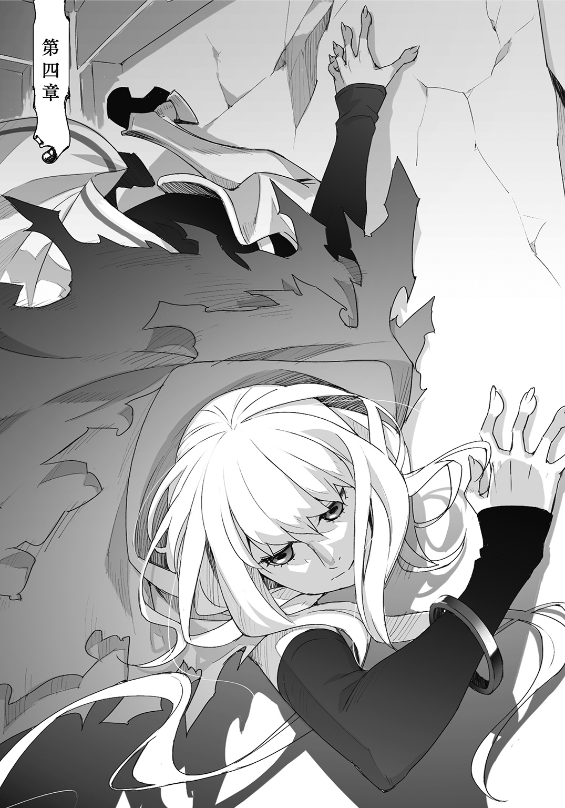
グラン工房へと整備に出した武器を受け取りに行った際に、狩猟刀の完成予定日と値段を訊いた。ランタンも思わず、わお、と声を上げるような金額はもちろんリリオンをあたふたとさせて、それを落ち着かせるまでに幾分もの日数を必要とした。
偏屈な老職人グランの持つ親方職人という肩書きはもちろん伊達なんかではなく、その卓越した技量によって得たものだ。そんな職人に一から物を作らせたのだから、素材持ち込みによって材料費を浮かせたとしてもその金額はなかなか気軽に出せるものではない。
だがランタンは探索者ギルド銀行に預けてある自分の口座から、その支払金を気軽に引き出した。そしてそれとはまた別に生活費と、先の探索で確定した利益の三分の一も。
そして三分の一が詰まった革袋をリリオンの手の上にぽんと渡した。
革袋は金貨の重みで破れそうな程だ。これが今回の探索でのリリオンの取り分だった。
リリオンは揃えた両手もそのままに、その重たさに驚いて身動き一つ取らない。ただじっとランタンの顔を見つめ続けている。どうしていいのかわからないのだ。革袋はリリオンの震えを伝えて、ちりちりと中の金貨を鳴らしていた。
これでも多いのか、とランタンは革袋を取り上げて、ついでに預かっていた探索者証を手首に嵌めてやった。リリオンは探索者証の軽さにほっとしてるようだった。
探索で得た利益の分配率は探索班によってさまざまだが基本的には等分である。
探索者の収入は魔精結晶をはじめとする迷宮資源を換金する事によって得られる。
そこから次回の探索にかかる必要経費を積み立て、これは探索班によって個人持ちか班持ちかは半々といったところだが、治療費や装備の整備代に、使用した道具や薬品の補充などの経費を除いた分が探索班の人数で割られる。だが通例として探索班の指揮者への分配率は、他の探索者よりも良いものである。
たった二名でも探索班。指揮者であるランタンに分配率で色が付くのは当然のことだったが、しかし倍も違うとなると明らかに取り過ぎだった。普通の探索班なら暴動が起きるか、あるいはもうやっていられないと探索班が解散になる。
金貨の重みから解放されたリリオンは、安堵で腰から崩れ落ちそうだった。
リリオンはまず金貨に慣れなければならない。それを得ることも、消費することも。まずはそこから始めなければならなかった。
ランタンはリリオンを一端の探索者として扱おうと考えてはいるのだが、まだ九つの子供でしかない。子供であろうともその存在を尊重し一個の自立する人間として扱うことは大切だが、だからといってそれは大人と同じように扱うこととは別である。
「リリオン、これはこれからのために必要なものだよ。リリオンがこれを貰ってくれれば、もし僕が大変なときは助けになる。なにもずっと持ってろっていうんじゃないんだから」
ランタンは革袋をお手玉して、それを無造作にリリオンに放った。
少女は反射的にそれを胸に受け止めて、ぎゅっと抱きしめた。
「口座に入れとけば盗まれる心配はないし、必要なときに自由に取り出せる。それに意識不明で医務局に運ばれたとき、口座にお金があればそれなりの治療がしてもらえる」
探索者ギルド銀行は個人口座の他に、探索班として共同口座を開設することもでき、それは口座を開設した探索班の班員ならば誰にでも自由に出し入れができる。
ランタンは先程出金する時にランタンとリリオンの名義でそれを開設し、共同口座に纏まった金額を積み立てた。
もしランタンが、そしてリリオンが意識不明で医務局送りになった際には自動的にここから治療費が引き落とされるように指定してある。そしてそれはリリオンに伝えてはいない。
リリオンはどれ程の期間かわからないが、少なからずの間、自由意志を奪われていた。急に何もかも自分で考えて、決めて、行動を起こすことは難しい。
ランタンも昔はそうだった。
探索者ギルドの建物内に併設された探索者ギルド銀行なんていうものを知らなかったから、一時期は金貨銀貨をじゃらじゃらいわせていた物騒な時期もあったものだ。それを止めたのはミシャに銀行のことを教えてもらい、口座を作るように世話を焼いて貰ったからだ。
「ランタン」
「それをばらまきでもしない限り、それを盗ろうなんて奴はここに現れないよ。そのお金はリリオンが好きに使っていい。欲しい物があったら何でも買っていいし、何も買わなくてもいい」
「なにも......？」
「そう、何も。好きにしていいっていうのは、絶対に使わないといけない、じゃないからね。必要なときに、必要なだけのお金があるってのはいいことだよ、ってこれもまだわからないか。うーん、ま、お腹空いたときに好きな物を食べられる。そういうことさ」
「......うん」
「じゃあ行っておいで、さっき僕が並んでいた窓口ね。お姉さんに話はつけてあるから」
共同口座はさておき、さすがにリリオンの個人口座をランタンが開設することはできない。一つの探索者証につき、個人口座は一つ。
共同口座は探索者証や委任状で本人の代わりになるが、個人口座は生身の肉体とその肉体に関連づけられた探索者証が揃っていなければならない。
リリオンはランタンに促されて窓口へ向かったものの、一歩二歩三歩とゆっくりと進んで振り返った、眉毛が情けなく八の字になっている。
「ちゃんと見ててね」
「いってらっしゃい」
小さく手を振るとリリオンはっしかりと頷いて、今度こそ窓口へと足を進めた。ランタンはリリオンを視界に収めながらロビーの柱に背を預けた。
大丈夫だったかな、とランタンは自らの頰を叩く。
自分の口はちゃんと言葉を発しただろうか。人に何かを伝える、と言うことは酷く精神を消耗する。迷宮攻略報告然り、リリオンに常識を教えることも然り。
前者はある程度慣れたものの、それは大人が相手だという頼もしさもあってのことだ。
「ふあ......」
欠伸のような溜め息のような倦怠を吐き出して、しかしランタンは険しげに目を細めた。
リリオンの姿が見えなくなったのだ。それはランタンが視線を動かしたからではなく、リリオンが視界の外に出たのでもない。ランタンの目の前に、大柄の人影が現れたのだ。
ランタンの視界の一切を埋める程、至近に。
ランタンは反射的な舌打ちをどうにか堪え、場所を変えようとした。
「おいおいランタン、そりゃないぜ！」
名前を呼ばれて、しかしランタンはそれを無視する。引き止めるように伸ばされた腕を避けて、しかし男はランタンの行く先を塞ぐように移動する。
ランタンはしかたなく再び柱に背を預けた。
苛立ちを隠そうともせず、ありありと会話を拒む雰囲気を醸し出して。
取り付く島もないランタンの対応に諦める人間はこれだけで諦めるだろうし、そうでない人間はどれだけ逃げても追いかけてくる。そしてその人影は後者であった。
ランタンは堪えた舌打ちを、今度ははっきりと鳴らした。
「無視しなくたっていいじゃねえか」
なれなしく自分の名前を呼んだ男をランタンは知らない。男はランタンを知っているようだがランタンは男をまったく知らない。
それはランタンにとっては慣れたことだった。
男はくすんだ金髪を刈り上げていて、広い額を隠すようにバンダナを巻いていた。バンダナは不自然な膨らみをみせていて、それは中に金属板を仕込んでいるからだ。顎に髪と同じ色の短い無精髭を蓄えている。バンダナ男はよく鞣された革鎧を身につけていて、心臓をはじめとする重要臓器を守る位置に金属の補強が縫い付けられていた。腰には幅広の曲刀。年の頃は三十前後といったところで、探索者というよりは山賊のような風体だったが、まあ探索者は大抵山賊のような風体である。
バンダナ男は視線を向けたランタンににっと笑いかけた。唇の隙間から黄色い歯が覗いて、ランタンは渋い表情をいっそう渋くし、さらに一歩近付こうとする男に冷淡な視線を返した。
「何か、ご用ですか？」
声は視線ほど冷淡ではない。
ただ明確な拒絶を感じさせるような素っ気なさを多分に含んでいる。
バンダナ男はランタンに近付こうとした一歩をそのまま半歩後ろに引いて、やれやれといったように肩を竦めた。しかしその浮薄な仕草とは裏腹にランタンへ向ける視線は粘つき、汚泥のような質量を感じさせた。視線はランタンの細い首筋からゆっくりと身体の線をなぞるように下っていく。
ランタンは外套の前をぴったりと閉じた。
「......ご用ですか、ってことはねえだろう？」
ここが下街ならば、と思ってしまう。
ここが下街ならば喧嘩を売ってきたということにして臨戦態勢をとればいいだけなので楽なのだが、ギルドの建物内でただ話しかけてきた相手にそんなことをして騒ぎになればランタンの方に咎がある。
残念ながらランタンにとれる手段は無視か、対話しかない。
「何か、ご用ですか？」
ランタンはまったく同じ声音で、同じ言葉を繰り返した。
バンダナ男の用事は察しが付いていたが、わざわざランタンの方から話題を振ってやらなければならぬ謂われはない。それにランタンの態度に、バンダナ男が気分を害して去ってくれれば御の字だとも思っていた。
しかしバンダナ男はランタンの挑発的な態度を面白がるように頰を歪めて笑い声を上げた。
「なあランタン、ウチの探索班に来いよ」
続けて提示された男の用事は、ランタンの予想した通りのものだった。
探索班への勧誘である。
「ごめんなさい、お断りさせていただきます」
一考する素振りも見せずランタンはにべもなく断ったがバンダナ男は引き下がらない。
壁にどんと片手を伸ばしてランタンが逃げ出せないように退路を塞いで、女を口説くように詰め寄ってきた。
革鎧はきちんと整備されていたが下に着こむ半袖の袖口が解れ、縮れた腋毛が覗いている。二の腕は筋肉が張ってよく鍛えられていたが、筋肉に刻まれた深い彫りや肘関節に垢が浮いていた。探索者らしい不潔さだった。
「嫌です」
ランタンは壁に預けていた背を、いっそ壁に同化する程に貼り付けておぞましさに表情を硬くする。黄色い歯の間から舌苔の密集する白い舌が見え隠れしている。ランタンの言葉が喉に張り付くように引きつったのは、鼻呼吸を止めたからだ。
「無理です」
ランタンの素振りは男を知らぬ処女のように頑なだったが、そういったランタンの初心さは男の強引さを誘うものでもあることに少年は気づきもしない。
バンダナ男はさらに勧誘の強引さを増した。
必死であるバンダナ男の心理も理解できなくはない。
多くの探索班は常に前衛戦力を求めている。
深く険しい迷宮の探索は万全の状態を期して開始されるが、それでもやはり万事が上手く行くわけではない。迷宮構造の険しさにやられることもあれば、魔物との戦闘によって怪我を負うことは当たり前の出来事であって熟練の探索者でもそれは変わらない。
即死以外の怪我は魔道を含む様々な手段で治癒可能であるが、全ての探索班が瀕死の怪我を癒やす程の恐ろしく高価な高品質の魔道薬などを購入できるわけはない。
また死の淵にある生命を引き寄せることを可能にする治癒魔道は稀少であり、そんな人員を抱えることのできる探索班は滅多に存在しないし、そもそも稀少な高位治癒魔道使いは死と隣り合わせの危険区域である迷宮には出向かない。
はっきり言ってしまえば前衛戦力は消耗品である。
迷宮内で命を落とすこともあれば、命はあろうとも四肢の欠損などの不可逆な傷を肉体に負えば探索者としての寿命は尽きたといってよく、また廃業の要因となる傷は肉体的なものばかりではなく精神的なものに由来することも多々ある。
それは一人前に程遠い新人探索者ばかりではなく幾つもの迷宮を攻略し探索にも慣れた、心身ともに強靱に鍛え上げられた探索者でも逃れることのできない呪いのようなものだった。
前衛戦力は常に不足しているわけではないが、常にそれを失う可能性を有している。
その備えとなるのが探索者見習いの運び屋である。
探索班に所属する探索者が増えれば増えるほど利益は頭割りに少なくなってゆくので、余剰戦力を抱え込むことは少ない。故にいずれ失われるであろう前衛戦力の予備として探索者見習いを一定の低賃金で雇い、育てるのである。
そうして雇われた探索者見習いは予備らしくその探索班で失われた探索者の代わりになることもあれば、あるいは衰えた探索者にとって代わることもある。
また別の探索班に欠員が出た場合に金銭を以て取引されもする。
探索班に欠員が出ずに、見習いという名の尻尾が取れたのならば独り立ちをすることもあるだろうし、そういった探索者が集ってまた新たな探索班は生まれる。
とはいえ悠長に探索者見習いを育てている暇などない場合の方が多い。
戦力が失われる場合は不意であり、一瞬である。
そして迷宮から引き返す、――逃げ帰るような不測の事態が起こった時、失われた探索者が一人で済めばそれは幸運なことだった。
探索に足る戦力がなければ、探索者見習いを育てることもできない。
多くの探索班は即戦力となる探索者を求めている。
それもできることならば若く、実力が確かで、金に卑しくなく、人間性も良い、完璧なる探索者を。
だが、そんな探索者は伝説の中にさえ存在しない。
若ければ経験が足りず、経験は実力に直結する。実力が確かならば金銭の大切さを知悉している。そして人間性が良ければ既にどこかの探索班に所属しているか、そもそも探索者などという職業に所属していない。
そんな中でランタンは珍しくも若く、幾つもの迷宮を単独攻略した実績があった。
人間性はその頑なな人見知りさ程度しか知られていないが、ランタンは少なくとも卑しい顔つきなどはしておらず、探索帰りであったとしてもなんとなく清潔感があってお上品な感じがした。
また単独探索者というのもランタンの価値を釣り上げる要因だった。
即戦力の補充を求める場合、その手段の多くは余所の探索班からの引き抜きがほとんどだった。迷宮の乱立するこの都市では使える探索者を遊ばせるような余裕はないのだから、戦力として数えることのできる探索者はすでに探索班に所属している。
例えばそこに班員間で何かしらの軋轢や、金銭関係などの問題で揉め事が起こっている場合は厄介払いの体で比較的スムーズに移籍が決まる。だが大抵は現所属よりも好条件であること、つまり利益の分配率、稼ぎのよさを餌に引き抜く。
金貨の輝きに目が眩むのは仕方のないことだ。
それだけ自分の価値を認めてくれているということなのだから。
だが引き抜かれた探索班からしてみればたまったものではない。
引き抜きは戦力の低下を意味し、戦力の低下はそのまま稼ぎの減少へと通じる一本道である。利益が減少すれば生活の質を落とすこととなり、生活の質の低下は苛立ちへとつながる。
苛立ちはそのまま人間関係に悪影響を及ぼし、仲良しこよしの探索班であっても散り散りになって各個、別の探索班に吸収されるということになりかねない。
なので引き抜かれる側の探索班は、可能な限りそれを阻止しようとする。
相手方から提示された条件と同等かそれ以上の条件を提示し、あるいは今まで苦楽を共にした経験から発生する人情に働きかけて。
だが無事に引き止められたからといって、一件落着というわけではない。
最低でも引き抜かれる側と引き抜く側の探索班間には軋轢が生まれ、血の気の多い探索者同士の軋轢は火の付いた導火線と言い換えても差し支えなかった。なまじ戦闘力があるものだから、小競り合いが殺し合いに発展しかねない。
人間関係とは無縁な傭兵探索者もいるが彼らはその多くが守銭奴で、単発的に契約を結ぶことはあってもそれを恒常的に雇うことはまずない。
探索者の移籍には様々な問題が付随するのだ。
その点、単独探索者はそういった問題とは無縁だった。
「なぁ、いいじゃねぇか！ 探索も今よりもずっと楽になるぜ！」
男の大きな声にランタンは顔を顰めた。
大げさな身振りで振り回した手が鬱陶しい。手指がゴツゴツとして、爪は白い部分が長く伸びていて隙間に黒い汚れが挟まっている。
ランタンはそこから目を逸らすように視線を下げた。
この男と一緒にいることで何か楽になるようなことは確実に無いとランタンには断言できた。現に、まさしく息が詰まる思いだった。
ランタンは完全に横を向いて視界から男を外し、肺の中で淀んでいる空気を入れ替えるように大きく深呼吸をした。
その視線を外した一瞬に、バンダナ男の手が肩を抱こうとするようにランタンへと伸びた。
首元へと向かってくる手をランタンは避けるよりも先に、反射的に身体が動いていた。バンダナ男の手首を取って、肘を、肩を捩じ切ってやる。
ランタンの手が外套の下で鎌首をもたげる蛇のように静かに狙いを定めた。
「――やめたまえ」
だが、ランタンがバンダナ男の腕を破壊することはなかった。
ランタンのではない手がバンダナ男の腕を摑んで止めたのだ。ランタンは一歩分バンダナ男の間合いから離れた。
バンダナ男の腕を摑む、その手には磨かれた銀の籠手が嵌められている。
ランタンはその手から腕を伝って顔まで視線を遡った。
「嫌がっているじゃないか、まったく――」
銀の籠手から伸びる指は白く、けれど剣を扱うに相応しく節立っていた。だが爪が綺麗に切り揃えられているせいかスラリとして見える。籠手と揃いの銀の腕甲は鏡のように磨かれており、顔までを防御するように立ち上がった左の肩甲には精緻な浮き彫りが施されていた。探索者というよりは騎士のいでたちである。
「――大丈夫かい？」
バンダナ男の腕を摑みながらもランタンを気遣う声は甘く、その顔もまた甘い。
後ろに流した濃い栗色の長髪が波打っていて、額に一房いやらしく垂れている。パッチリと二重で髪と同じ色の瞳が、上下ともに長い睫毛の間で微笑んでいた。鼻梁が細高く、顎も細いが軟弱な雰囲気がないのは口が大きくて唇に野性味のある表情を湛えているせいだろう。迫力ある表情が実によく馴染んでいた。
「ええ、どうも、ありがとうございます」
そこらへんの町娘ならば目を奪われるようなハンサムな男だが、その微笑みもランタンには無価値である。だが助けてくれたことには感謝していた。ハンサム男が来なければ、今頃は屈強な武装職員にバンダナ男共々地面に組み伏せられていたかもしれない。
「んだっ、テメェ！ 関係ないやつはスっこんでろよ！」
「いいや、関係なくなんかはないさ。私は前からランタンくんに声を掛けていたんだ」
「なんだと！ 俺だってそうだ！」
頭上で飛び交う応酬にランタンは小首を傾げ、ちらりと瞳だけを動かして二人を見上げた。
どちらにもランタンを勧誘した過去があるらしいのだが、ランタンにはさっぱり二人の記憶はなかった。
いや二人どころか、とランタンは過去を思い出そうとしてそれを諦めた。
過去、ランタンを自らの主催する探索班に勧誘した探索者は多くいたが、ランタンはそのほとんどを覚えてはいなかった。
こうして一人一人を観察すれば探索者は十人十色の個性の塊であるのだが、当時のランタンには探索者を観察する余裕などはなかった。老いも若きも、男も女も、人族も亜人族も、何もかも一纏めにした探索者という一つの恐ろしい何かでしかなかった。
久々の勧誘にはうんざりしていて、やはり余裕もなかった。
ランタンは視線を巡らせてリリオンの姿を探した。
リリオンは受付台の上で空になった金貨袋を畳んでいる。振り込みが済んだのではなく、職員が金貨の枚数やそれが偽造金貨ではないことを調べていてリリオンは暇なのだろう。
羨ましいことだ、とランタンは視線を戻した。
男たちは未だに言い争っており、ランタンから意識が逸れていた。この機を逃す手はない。
ランタンは二人を注視しながら、静かにすり足で場を離れようとした。
だが悲しいかな、その試みは何かに阻まれてしまった。
「ぶ」
猫が透明なガラスに気づかずに悠然と歩み寄りそのまま頭をぶつけるように、ランタンは自らの頰を何かに押し付けてしまった。それは固く冷たく、やや丸みを帯びていて脂と血の臭いがした。板金鎧だ。
「ごめんなさい」
ぶつかった相手にランタンはまず謝って、それから顔を見た。
それは突き出た鼻と、口から溢れる二本牙の逞しい猪人族の男だった。
濃い茶色の髪から小さな耳がピンと頭上に立っていて、ランタンが見上げると意識するようにぴくぴくと震えた。
「いや、こちらも申し訳ない」
謝ったランタンに猪男はゆっくりと首を振った。
「だがこれも何かの縁だ、よかったら向こうで話さないか？」
牙も剝き出しの荒々しい顔だが猪男の声は艶のあるテノールだった。
猪男は女をエスコートするようにそっとランタンの背中に手を添え、ごく自然にロビーの奥にあるラウンジへ導こうとした。猪男の腰には両刃の手斧が二振り抜き身でぶら下がっていて、それはよく使い込まれている。斧頭の付け根には拭いきれぬ青い血脂が染みこんでいる。
「おいおい、テメェ自分からぶつかっておいて白々しい！」
するとハスキーな声が飛び込んできた。
ランタンの背に添えられていた手が払われ、別の手がそこに収まった。
ランタンは古いブリキの玩具のように重たげに首を回した。
猪男の岩のような手に変わってランタンの背を支えた手は、指先まで白く短い毛に覆われていた。形良く尖った爪にピンク色のマニキュアを塗っているが、それが落としきれぬ返り血ではないという保証はない。
猫人族の女だ。ランタンは、猫という愛らしいものではない虎や獅子を思わせる獰猛な雰囲気の漂う猫女の顔を見上げた。
短毛種の白猫をそのまま人の金型にはめ込んだような猫女は瞳孔の縦に割れた目をランタンに向けて柔らかく微笑んだ。だがどうしてもその直前に猪男を睨みつけた苛烈な視線がちらついてしまい、ランタンはただ愛想笑いを浮かべる。微笑んだ猫女の口からは太い針のような犬歯が覗いている。隙を見せれば喰われそうだ。
「ねぇランタン」
猫女は少し掠れた甘い声で名前を呼んだ。
「あそこに仲間がいるんだ。一緒にお茶でもしないかい？」
顎をしゃくった猫女の視線の先には、三人の女探索者がいた。
ランタンが視線を向けると優雅に手を振って見せる。人族が二人と、猫人族が一人。目の前の猫女からは年齢を推し量ることはできなかったが人族と同年代だとすると二十半ばぐらいだろうか。
大人の女性からのお誘いは男どもの誘いよりは魅力的だったが、その誘いを受けるつもりは毛頭なかった。猪男のお話も、猫女のお茶も、その先に待っているのは拷問のような勧誘であることは明白だった。
勧誘をしてきた人間の顔は覚えていないが、見えない縄に拘束されるような苦痛の時間はよく覚えている。ランタンはこっそりと手首をさすった。
「ねぇどうだい？ あの女にいったい幾らで雇われたのかは知らないけど、うちに来ればもっといい思いをさせてあげるよ」
曖昧な表情を浮かべるばかりで煮え切らないランタンに、猫女の尻尾が大胆にランタンの太腿に絡みつき内腿を挑発的に擽った。
「やめてください」
ランタンはそっけない素振りで尻尾を払ったが、正確に言うならば引き剝がしたというのが正しい。猫女の白い尻尾はしなやかに見えたが、まるで大百足のようにランタンの太腿にしがみついていた。やろうと思えば関節を挫くことぐらいはわけないだろう。
「やめてください、だって」
からかうような言葉が飛んで、誰かが下品な口笛を吹いた。
気が付けばランタンは探索者たちに取り囲まれている。
猫女が言ったあの女とはリリオンのことだろう。
リリオンは身長だけは一人前にあるので少女ではなく大人の女だと思われているようだった。勧誘者たちはランタンとリリオンの関係を雇用者と被雇用者だと勘違いしている。
リリオンがランタンを案内役や指導教官として雇ったのだと。先の世間知らずなやりとりを盗み聞かれていた可能性もあった。
ここしばらくランタンに勧誘がなかったのはランタンが頑なに勧誘を受け入れなかったからであり、そのランタンが誰かといっしょにいるということは探索者たちに余計な希望を抱かせる変化であったようだった。
予想はしていたことだが、予想よりも動き出しが早い。
ランタンは眉間に皺を刻んだ。
――僕はあの子と探索班を組んだので、あなた方とは組めません。
リリオンを指差してそう言えば場を切り抜ける理由になる。
ランタンはそう思っていたし、この勧誘を予想した時に考えた言い訳の台詞を頭の中で何度か繰り返した。だがいざその場面になったら、それを口にすることができなかった。
それはまるでリリオンを言い訳に、生贄にするかのような行いに思えたのだ。
「おいっ！ 後からしゃしゃり出て好き勝手言ってんじゃねぇぞ！」
「きみはもう振られたんだ諦めるんだな。そしてきみたちも」
「ふんっ貴様のような惰弱な男が随分と偉そうにものを言う」
「はっ、この稚児趣味どもが。男娼が欲しいんなら色街にでも行きなっ！」
ランタンが口籠もっていると勧誘者たちは次第に声を荒げ、表情を歪めて言い争いを過熱させはじめた。相手を出し抜くよりも、蹴落とす方を選んだのだろう。そして罵声は建物内に敷かれた防音魔道から漏れるほどに大きく響いた。
ランタンを求める者は多かった。
探索者としての実力を買っている者も、単独探索者を麾下に加えることに価値を見出している者もいたし、その幼い姿を傍に置いておきたいという者もいる。
探索者の壁の隙間からリリオンの姿が見えた。
リリオンは探索者の集団から離れて立ち竦んでいた。縋り付くように空の革袋を握りしめて、囲まれるランタンを見つめていた。唇を嚙んで黙っていた。
そんなリリオンに近寄る者がいて、戸惑うばかりだったランタンは取り囲む彼らを乱暴に押し退けてリリオンに駆け寄った。
「邪魔――、っ何か？」
それは二人組の男だった。
リリオンを守るように立ちはだかったランタンごと無遠慮な視線に捉えてにやにやと見つめている。ちぐはぐな雰囲気のする男たちだった。
身体は程良く鍛えられていて、バンダナ男のように不潔な雰囲気は探索者のそれだが、小綺麗な革鎧は良く手入れをしてあるというよりはあまり使われていないような感じがした。腰に無骨な剣を下げていて簡素な柄巻は手垢に汚れているが、それだけだ。
「いやあ、別に。あのランタンをたらし込んだ女がどんなもんかと思っただけさ」
ひゃっひゃっ、と男が笑った。喉が掠れて、晒された歯が瘦せてすきっ歯になっていた。白目に黄斑が浮き出ている。目の下に隈があり、頰骨が浮いていた。身体付きに比べて瘦せた貧相な顔立ちだった。
「へえ、ランタンはこんな細っこいのが好みなのか。なあうちに来ればがりがりの女なんていくらでも用意してやるぜ。なんならそいつもいっしょに飼ってやろうか、そんときゃ俺らも使わせてもらうけどな」
「二人纏めて穴役でもいいけどよ――」
男が無造作に手を伸ばし、ランタンの外套の前を開いた。
ランタンはいくらでも下品な言葉を投げかけられた経験があった。
怖く思ったことも、悔しく思ったことも、腹が立ったこともある。だがそれでも問題を起こしてはいけない場所でならば、我慢をする分別も、忍耐力も有していた。けれどそれが一度リリオンに向けられたとき、ランタンの内に堪えきれない衝動が沸き起こった。
殺す。
突如ランタンから放射された激烈な気配に、空間内にいる全ての探索者らが本能的に臨戦態勢をとった。高位探索者ですら警戒心を露わにする暴力の予感に二人の男は慌てて腰の剣に手を伸ばし、その時には戦鎚を腰に結ぶ留め紐は解かれて久しかった。
抜く暇など与えるものか。
「――そこまでだ」
大きな声ではない。けれど銀行内部のざわめきなど意にも介さぬようにその声ははっきりと響いた。それは冷徹な声だった。ランタンの胸の内に燃え上がる激情に冷や水を浴びせ、ランタンが視線を動かすと、取り囲んでいた探索者たちが迷宮探索で培った技術と肉体を駆使して蜘蛛の子を散らすように音も無く現場から離脱していた。
暴力の気配よりも、探索者にとって最も恐ろしいものの一つが近付いてきていた。
黒い鎧。
現れたのは武装職員と呼ばれる、探索者ギルド治安維持局に所属するギルド職員だった。
武装職員がかつかつと踵を鳴らして近付いてくると、二人の男たちは盛大に舌打ちを響かせて慌てた足取りで逃げていった。
ランタンは戦鎚を腰に結びつけて、リリオンを背に守るように武装職員と対峙した。
敵対ではない。ランタンは頭を下げる。
「お騒がせしました」
「やはり君か」
本来こんな所で勧誘をするのはマナー違反であり、そうでなくとも騒ぎは大きくなりすぎていたし、ランタンの激情は探索者同士の私闘を禁じるギルド法に触れそうな程の危うさを秘めていた。
武装職員は全身鎧を身につけていて、ぎしりと鋼を軋ませて窮屈そうに腕組みをした。
犬頭を模した兜が辺りを睥睨して探索者の残滓を探るようだった。
ランタンは顔をすっぽり覆う犬兜に見覚えがあり、冷徹な声音にも聞き覚えがあった。
「ここ最近は落ち着いていたが、......ふむ、災難だったな」
そして冷徹さが抜けると、優しさを帯びる落ち着いた響きにも。
兜の内から響く声は女性のもので、それは騒ぎの中心にいたランタンを叱責するものではなくむしろ慰めるような音を孕んでいる。
ランタンは下げていた頭を持ち上げて、そのまま犬兜を見上げた。
兜の隙間から色の薄い碧い瞳がこちらを窺っている。
「以前も同じようなことがありましたよね。その節もありがとうございます」
「おや、覚えていてくれたのか。くふ、そうかそうか。うん、その時よりもだいぶ探索者らしい振る舞いをするようになったじゃないか」
「――ご迷惑をお掛けしまして」
「いや、いいさ。君が被害者だということはこちらも理解している。それにあれ程の凄味をみせれば、今日のようなことは少なくなるだろう」
武装職員はランタンの後頭部に柔らかく触れると、ではまたな、と言って踵を返して去って行った。去り際に鋼の指先が擽るように旋毛に触れた。数多の不良探索者から鬼のように恐れられ、武力を持ってギルドの平和を維持する武装職員の手は優しさを感じさせた。
「リリオン」
ランタンは振り返る。
リリオンは事態が吞み込めていないのか、革袋を握ったまま不安げな視線をランタンに向けている。何かを言おうとするように口を開いて、けれどなんと言っていいかわからぬように再び閉ざした。
「リリオン、ごめん」
ランタンは自分が何について謝っているのかわからなかったが、言わずにはいられなかった。自分の情けなさに突き動かされるように。
ランタンは革袋ごとリリオンの手を取って、指先の冷たさを感じながら銀行を後にした。
◇◇◇
ランタンはリリオンの手を引いて足早にギルドを後にした。
次の探索の下調べでもしようかと考えていたのだが、一秒だってあんなけったくその悪いところにいたくなかった。
どうせまた訪れなければならないと理解していたが、燻る腹立たしさが収まるのには今しばらくの時間を必要とした。その腹立たしさは、きっと自分にも向けられたものだった。
リリオンはまだ落ち込んでいる。
当たり前のことだ。まだたった九つの女の子が、あんな酷い言葉を浴びせられたのだから。
探索者はもれなく粗野で下品で口が悪いが、あれほど下劣な探索者はさすがに少ない筈である。
リリオンの指先が、まだ雪のように冷たかった。
「ランタン......」
リリオンがようやくランタンの名を呼んだ。
「......あれは何だったの？ ランタン、囲まれてた」
ああそっちか、とほっと胸を撫で下ろす。大丈夫だったの、と恐る恐る尋ねるリリオンに軽く肩を竦めて、いかに自分が無事であるかを示した。
ランタンが大勢の屈強な探索者に囲まれる様子は、一つの獲物に群れをなして襲いかかる肉食動物の狩りに似ていた。群れが離れたあとには骨も残らないような凄惨な狩りに。
「あれは、まあ勧誘ってやつだよ」
ランタンは下らないことだと吐き捨てるように素っ気なく呟いた。
勧誘を受けるということは、探索者たちから一定以上の評価を受けているということだったが、ランタンはまったくそれを誇る気にはなれなかった。
「うちの探索班に入りませんかって」
ランタンは言い終えると舌打ち代わりにふんと鼻を鳴らして、むっつりと唇を結んだ。
集団の中でランタンは声を掛けられるだけではなく、身体に触られもした。
人混みに紛れて腕をさすったり、尻を撫でたりなどという不埒な行いに及んだ奴が幾人かいて、その腕を折ってやろうと思ったら逆に指を扱き上げるように擦られた。糞野郎どもめ、と思う。次があったら消し炭に変えてやると心に誓う。
ランタンがその狼藉を思いだしてふんふんと怒っていると、掠れ声でリリオンが呟いた。
「やっぱり......」
「やっぱり？」
ランタンは憤懣やる方ないと歪めていた表情を僅かながらに緩めて、それでもまだ怒るような視線でリリオンを見上げた。
それを向けられたリリオンが唇を嚙むので、ランタンは気持ちを落ち着けるように大きく息を吐きだす。眉間に刻まれた皺を指で擦った。
「やっぱりって、何がやっぱりなの？」
「ランタンは、......ランタンはその誘いを、受ける、の？」
「は――」
リリオンが絞り出すように呟いたその言葉に、ランタンは燻り続けていた怒りや苛立ちさえも、そして歩くことさえもを忘れてしまって急に立ち止まった。繫いだ手がぴんと引っ張られて、しかしランタンが動かないのでリリオンが慌てて振り返る。
「僕が、誘いを......？」
リリオンの言葉を理解できずに呟き、それを理解した瞬間にランタンは一つ瞬きをした。一度目蓋の下に隠された焦茶色の瞳には、それまでにあった燻った感情の一切が失せていた。
そしてランタンは繫いだ手を引き寄せるように解き、いつもの位置、すぐ隣にやってきた少女の尻を問答無用に引っぱたいた。鞭のような平手打ちはさして肉付きのよくない少女の尻に甲高い破裂音を響かせる。
「なになに、なんで!?」
抗議の声を上げたリリオンをランタンは一睨みして黙らせた。
「なんで、じゃないよ、――まったく」
それは憤慨ではなく穏やかに呆れるような声だった。
甘い苦い笑みを湛えて、ほら行くよ、とリリオンと手を繫ぎ直す。
「だって、だって」
ぐずるように呟くリリオンが甘えるように繫いだ腕を揺らす。ランタンの気を引こうとするその幼い仕草は、けれどひどく切迫している。眉尻が下がって、暗闇の中で光を探すように目を細めている。
リリオンはランタンに触れたがる。
ランタンがふらっと先を行こうとすると、外套の端であったり、服の裾であったりをはっしと摑んで手繰り寄せる。あるいは手を繫いだり、腕を組んだりすることも好んだ。抱きしめたり、抱きしめられたりすることを。
歩くときランタンは手を引いて先導することが多いが、少女は時折甘えるように身を寄せることがある。それは置いて行かれることを恐れているのかもしれない。
ランタンがリリオンを置いて、どこかの誰かの元へ行くのを。
「だって、なに？」
「だってランタンは、あんなに強そうな人たちに、誘われて」
「はっ、嬉しくなんてないね」
ランタンはうんざりして吐き捨てた。
そんなランタンにリリオンは疑うような視線を向けて、ランタンはリリオンに自分がどれ程嬉しくないのかを伝えるように唇を歪めて牙を剝いた。それはあまりにも子供っぽい表情で、リリオンは目を丸くして驚き、言いかけた言葉を忘れてしまったようだった。
あのね、あのね、と少女は困ったように繰り返す。
「僕は、誘いの一つも受ける気はないよ」
「ほんとう？」
「本当、――それともどこかの探索班に入って欲しい？」
ランタンはふと立ち止まり、意地悪く挑発的な眼差しをリリオンに向けた。
「やだ！」
「うん」
リリオンは頭を振って、ランタンの手を胸に引き寄せる。
薄い胸の奥にある心臓の鼓動が手を叩いた。
「僕も嫌だね。あんな下品な連中の誘いを受けるなんて」
口付けるほどに顔を寄せたリリオンをさっと躱し、ランタンは再び手を引いた。
馬鹿な質問をした、と思う。顔を覗き込むリリオンの瞳に浮かんだ不安の色に、ランタンは罪悪感を覚えて胸がちくりと痛んだ。
ランタンは通りに出ていた屋台から果実水を二つ買い、一つをリリオンに渡した、コップの底に乾燥させたハーブが敷き詰められ、結露するほどの冷たい水には柑橘系の香りがつけられていた。ハーブの淡い緑が水に溶け出して、二人は唇を湿らせるようにコップを傾けた。
「リリオン」
「うん？」
「これからも、またリリオンに迷惑を掛けると思う」
あの勧誘者たちは、これまでランタンが弱気な姿勢を見せていたがために湧き出たものだ。今でもランタンは強面の彼らに取り囲まれると、心のどこかで恐れを抱いている自分に気が付く。恐ろしい魔物とはまた違う、別の恐ろしさを彼らは持っている。
勧誘者たちは結局ランタンがそうと口にできなかった事もあって、まだランタンを単独探索者だと認識しているようだった。
どんな心境の変化があったのかはわからないが、あのランタンがどこかの女に雇われたぞ、と。これは自分たちにもチャンスがあるぞ、と。
ランタンとリリオンの二人だけというのが、班という纏まりを想像させるに至らなかったのだろうし、リリオンの容姿もまた関係性を悩ませる一つの要因だった。
ランタンが装備を調えたので運び屋にはまったく見えない。そしてランタンも人のことは言えないが、リリオンの探索者にしては瘦せすぎな細身の身体付きと、そして年齢とまったく結びつかぬその容姿も探索者にしては綺麗だ。もちろん女探索者にも容貌の美しいものは少なからずいるが、彼女らはリリオンにはない強さがどうしても滲むのである。
幼さは儚さに似ていて、そんなリリオンの姿はちょっと探索者に見えない。
勧誘の探索者がリリオンへと向かわなかったのは、銀行でのやり取りからその世間知らずさを盗み聞きして、もしかしたら止ん事無き血筋の少女だと勘違いしたせいかもしれない。
それに、とランタンは少女を見上げる。
この見上げる分の身長差のせいで、リリオンの方が年上に見える。そのせいで世間知らずのわがまま小娘が大金を積み上げたのではないか、というような見方の方が説得力がある。
そして何よりランタンがリリオンを大切に扱う様子がだめ押しだった。
ランタンがそんなことをリリオンに言うと、少女は少年を見下ろしてあはと声をこぼして笑った。無邪気に笑うと、指先に熱が戻った。
「わたし、お姉さんに見える？」
「......見えない」
「えー、ランタンさっき言ったじゃない」
「言ってません」
「言ったのに......」
ぶつぶつ言うリリオンの口に、ランタンは屋台で肉串を購入して、それを猿ぐつわのように咥えさせた。大きな羊肉をがぶがぶ囓ってリリオンは脂に濡れた唇に無言の笑みを浮かべた。
「そのまま食べてて。さっきの馬鹿二人がつけてくる。振り向かないで、歩き続けるよ」
ランタンが呟くと、リリオンは口いっぱいに肉を頰張っているので驚きの声を上げることができない。
「さっきの話の続きね。ご覧の通り、ああいう勧誘って凄くしつこくてさ。僕に来ても無駄だって思ったら、今度はリリオンに行くと思う。さっきみたいに。どんな風に僕を雇ったんだって。もしかしたらリリオンに僕との仲介を頼むかもしれないし」
ごっくん、とリリオンの白い喉が動くのを横目に見る。リリオンはランタンの言いつけ通り後ろを振り向かない。
「わたし、そんなことしてない、って言えるわ。そんなことはしない、ってちゃんと言うよ」
「うん、――ありがとう」
けれど世の中には情報屋と呼ばれる者たちもいる。
彼らはそれを望む人間が一人でもいれば、どんな情報だって金に換えてしまうし、どんな情報だって曝いてしまう。後をつけ、耳をそばだて、ゴミだって平気で漁る。探索者ほどあからさまではないからいっそう質が悪い。
ランタンに探られて痛む腹はないが、リリオンのその血筋は知られてはならない。
それ自体が悪いことなのではない。だが悪意を持った人間が世の中には多すぎて、それらがリリオンを傷つけることを躊躇うはずがなかった。
ランタンはその悪意から少女を守る術を知らない。
「ねえ、ランタン。後ろのどうするの？」
「上街じゃ暴れられないから無視。腹ごしらえしつつ、グランさんの所に行こう」
「うん、ランタンもこれ食べる？」
「うーん、いいや」
ランタンが言うとリリオンは最後の羊肉をがぶりと横様に食らいついた。
「炭水化物食べたいな」
「わたしお肉食べたい」
野菜も食べな、と言いたいところだが屋台飯にはあまり野菜はない。
リリオンは揚げ鶏を屋台で買った。鶏肉を骨ごと、内臓ごとぶつきりにして油で素揚げしたものだ。塩胡椒だけで味付けしてあり、檸檬が搾ってある。油紙の皿にどんと一羽分が山盛りにされて、きんかんと呼ばれる成熟する前の卵が鮮やかなオレンジ色で転がっている。それに木串が二本突き刺さっていた。
ランタンは適当な屋台でヌードルを買った。木の器には米粉を練った細い麵と野菜出汁のスープだけで具材は何もなかった。屋台では使い捨ての油紙の器が普及しているが、紙皿ではどうにもならない汁物などには木や陶器が用いられた。
ランタンとリリオンはそれを分け合って食べ歩いた。
幾つも転がっていたきんかんをランタンは味見に一つだけもらい、肉は半分こにした。皮がぱりっと揚げられていて、嚙み締めると火傷しそうなほどの脂が溢れた。肉は弾力があって、嚙むほどに肉汁が染み出す。内臓は少しだけ苦くて、下処理の甘さを胡椒で誤魔化しているような感じだった。
「苦辛いね、お酒のおつまみっぽいな」
リリオンはその苦さも平気なようで頷きながらも、ばりばりと骨を砕きながら苦もなく食べている。
ランタンはぴりぴりする舌を洗うように、ちゅるちゅると麵を啜って黄金色のスープをこくこくと飲んだ。癖のない薄い塩味のスープはもちっとした甘い麵によく馴染んだ。
「ぷは」
ランタンが満足気に息継ぎをして、再び器に口付けるとリリオンが隣で跳ねている。
「わたしも、わたしも！」
リリオンはすっかり食べ終わった紙皿をぐしゃりと握り潰して、ランタンの腕を引いた。ランタンが器を差し出すと、リリオンは受け取ることはせずにそのまま少し屈んで器に口付ける。髪が垂れぬように自然な仕草で耳に搔き上げ、目蓋を伏せ、子供っぽく辿々しく啜った。そんなリリオンにランタンはフォークに麵を巻き付けて食べさせてやった。
そうしてスープまで飲みきって器が空になると、器の底に焼き付けられた商業ギルドの紋章が顔を出す。
ランタンは外套を引かれ、振り返るとそこには見窄らしい格好をした、ランタンよりもはっきりと小さい子供が期待に目を輝かせて両手を差し出していた。おそらく孤児である。
「食べ終わったんでしょ？」
「ああ」
ランタンはその子供に空の器を渡して、ついでに四半銅貨をその中に一枚入れてやった。
わあ、と子供が喜んだのは一瞬、ランタンは素っ気なくその場を後にして、呆気に取られた孤児がその場に立ち竦んだ。
「あれ、どういうこと？」
「ああいうちゃんとした器とか金串は戻すとお金が返ってくるんだよ」
商業ギルド所属の屋台、つまり真っ当に商売をしている屋台にギルドの紋章が刻まれた食器を返却すれば銅貨が返ってくる。だが、それはああいった孤児たちにのみ限ることで、そもそも器の一つだけでは最小貨幣の四半銅貨にもなりはしない。
どこから湧いてくるのかは知らないがこの街に孤児は多くいて、そういった子供たちを救済するために商業ギルドが主導して行っている活動の一つだった。
「ありがとうぐらい言わせてあげればいいのに」
「......そんなことは言わないよ。あれはもっとちょうだいの前兆。当たり前に善意を求めるようになると早死にしちゃうから、あんまり甘やかしすぎてもね」
ランタンはそう言って、やるせなく肩を竦める。
孤児を振り返ったついでに後ろを付けてくるあの二人組をはっきりと目視してしまった。気配を殺して迷宮を進むこともある探索者だとは信じられない尾行の杜撰さと、未だに気付かれていないと思っているようなしたり顔にランタンは苛々してしまう。
苛々を解消するためか、少し歩くと再び手は食べ物で埋まっている。
その量はグラン工房に着くまでの道すがらにリリオンが少し太るほどで、肉料理ばかりを食べたリリオンの唇は脂でぬらぬらしている。
ランタンはそんなリリオンの顔を綺麗にしてやってから、大きな声で呼びかけた。
「おじゃましますよー」
「おう――」
炎と鉄の音の中でグランが振り向いて、額に浮いた汗を腕で拭った。それからよく聞こえる舌打ちを一つして、ここじゃうるせえな、と店の方へと裏口から入っていく。その背中を追いかけると、グランは前を向いたままに言った。
「――最近よく裏からくるな」
「こちらの方に居られることが多いようなので」
「そうだけどよ、正面から来い正面から。嬢ちゃんは髪長えんだから危ねえだろ、お前も火傷するぞ」
もじゃもじゃの長い髭をして、身体の至る所に火傷痕をくっつけているグランが言うと説得力があった。グランは二人を応接室に案内して、叩き込むように中へ入れた。実際に背中を叩かれたランタンは痛みに顔を顰め、リリオンは少年の背中をこれ幸いと執拗に撫でた。
「お望みのもんはできてるから、ちょっと待ってな」
そう言って応接室から離れていったグランは、すぐ戻ってきた。
ランタンとリリオンの前に濃く煮出された茶と小さな飴菓子が置かれる。
リリオンは喜び、ランタンはびっくりした。星形の飴菓子は金平糖。お菓子が出るなんて珍しい、とランタンはそれを一粒口の中に放り込む。
ふわっと広がる甘みに苛立ちを一時忘れて頰を緩めたランタンたちの前に、甘さなど一欠片もない獰猛な刃物が二振り差し出された。
あの恐るべき嵐熊の鉤爪を加工して作った特注の狩猟刀だ。濃い飴色の革鞘に包まれていて、柄は臙脂色に染めた熊革が編まれて複雑な組み模様を浮かべていている。
それだけが二振りの区別を付けるもののように見えた。
「握りがそれぞれに合わせてあるから間違えないようにな」
熊革はよく鞣してあり、柄を握ると掌に吸い付くようだった。以前のものと遜色ないほど大振りな狩猟刀はくの字型に反っていて、鞘から抜き放つと獰猛な気配がいっそう露わになった。濡れた黒曜石のような刀身が、うっすらと透けながらもランタンの眼差しを映している。
「どうだ？」
「いいです、すごく」
「せっかく作ったんだ、嬢ちゃんも確かめてくれよ。それはもう嬢ちゃんの物なんだからな、遠慮なんてするもんじゃない」
「まだ支払いは済んでないですよ」
「坊主の金払いのよさは充分に承知してるよ」
グランは喉を揺さぶるように笑った。恐る恐る狩猟刀を鞘から引き抜いたリリオンがその笑い声に驚く。まるで狩猟刀が笑ったのかと錯覚したように。
「おお、気をつけてな。骨まで引いちまうぞ」
「はい、――わあ、きれい」
うっとりと呟くリリオンにグランの眦が下がる。
「前のより少し重いですね」
「ん、ああ、軽すぎても扱い辛いからな」
峰が厚く、刀身の上側が葉っぱのように柔らかく膨らむ。少しだけ幅広になっている。
「いや、さすがは終端の魔物。良い素材だった。靱性、硬度ともに一級品だ」
グランは顎髭を揉みしたきながら満足そうに頷いている。
「こう叩き付ける瞬間にな、身が締まって硬度が増すんだよ。だから骨やなんかに叩き付けても滑ったりして切り損じることも少なくてすむ。だけど硬いもんってのは欠けやすいんだが、そいつはほら、ゆっくり曲げてみな」
ランタンが言われるがままに刀身を指で摑み、力を込めた。
「硬いんだけど、曲がるんだよ。皮を剝ぐときなんかによ、刀身を肉に押し当ててやれば綺麗に剝げるぜ」
「ふああ、不思議ね」
「へえ凄い。これで爪何本使ってるんですか？」
「一振りにつき三本だな。爪の最も硬い芯を取って、それを左右から挟んでやんのよ。それをな――」
ランタンとリリオンが喜びながら、どうしてどうして、とグランに尋ねると老職人は気をよくしたようにあれやこれやと、狩猟刀の性質からタンパク質からなる爪を鍛造し刃物にする方法までを饒舌に語った。
グランは無口で昔気質な職人の一面と同時に、研究者と言うべきかオタク的な気質も持ち合わせている。
二人ともグランの言うことの半分も理解できなかったが、その説明を苦にする様子もなく耳を傾けていた。グランは少しばかり誇らし気で、それだけ満足のいく仕事ができたようだった。
グランはすっかりと冷めたお茶を年相応に爺むさく啜った。
「ありがとうございます、大切に使いますね」
「おうよ、じゃんじゃん使ってじゃんじゃん整備に出してくれ。それともう一つ、余った爪で作ってやったぜ」
そう言ってテーブルの上に出された刃物は包丁のようだった。
鉤爪の特徴的な内反りはまっすぐに伸ばされていて、狩猟刀にあった有機的な雰囲気の一切が無くなり重々しい鋼の気配を帯びている。峰から刀身の半ばまでは透けることのない墨色で、研ぎ出された刃は白く鋭い。だが不思議と狩猟刀のような、抜いたからには血を吸わねば収まらぬような危うさはない。
ぽんと台所に投げ出されていても不思議ではない雰囲気があった。
「坊主も前の刃物が気に入りすぎて、そればっかりだっただろ。それもあって別に作ってみたんだよ」
「まあ確かに、そうでしたね。おかげで......」
食事にもあの狩猟刀を使っていたので対人戦闘でそれを使用することはなかった。
刃物特有の向けられたときの恐怖心や斬られたときの鋭い痛みは、戦鎚にはないものである。刃物の利点はそれを理解できる人間にこそ向けるべきだった。だが自力で熱消毒ができるランタンも、人を斬った刃物で料理をする気にはさすがにならない。
「わあ助かります。このくの字じゃ料理は難しそうだったから。お幾らですか？」
「でも、ランタン。いいの......？ わたしが」
「いいの、いいの。必要経費だよ」
自分の殺し文句がランタンに余計な出費を強いたのではないかとおろおろするリリオンに、ランタンは何も心配することはないとでも言うように朗らかに応える。
「さすが坊主、それでこそよ」
グランは豪快に笑って包丁をもう一本テーブルに載せた。先程のものが大振りな牛刀だったのに対して、こちらは一回り小振りな造りをしていた。そしてそれの柄には見覚えがある。前に使っていた狩猟刀の柄を流用してある。
「料理なら乱暴に使うこともねえからな、それだってまだまだ充分使えるぜ」
「......でも、なんで僕のが小さいんですか？」
「理由を言って欲しいか？」
「いえ、いいです」
驚き、照れ隠しのように呟いたランタンにグランはしたりと笑みを浮かべる。
ランタンは礼も言えず、緩む頰を押さえた。
「な、嬢ちゃんも気兼ねせずに買ってもらえよ。どうせいつかは必要になるんだ。くくく、祝儀は出さねえが嫁入り道具ってことで安くしてやるからよ」
グランが包丁を綺麗な桐箱に収めリリオンに押し付けるようにしてそんなことを言う。
リリオンはそれを胸に抱いて恥ずかしそうにしていた。そんな姿を見るとランタンはグランに突っかかる気にも、リリオンをからかう気にもなれない。にやつく老職人に全部ひっくるめて幾らになるのかを尋ねた。
グランはすでに狩猟刀と包丁の請求書を用意しており、ランタンはそれに目を通した。なかなかいい値段である。それも包丁の方が特に。
だがランタンは表情を変えることもなく必要な金貨を用意していく。
「素直なのはいいことだけどよ、疑問は口にしろよ。商売なんだから訊かれりゃ答える。よっぽど疚しいことがなければな」
「......包丁がお高い理由は？」
「使いやすいように爪を真っ直ぐに伸ばしたわけだが、タンパク質のままじゃどうにも強度が保てない、逆に折ってるような物だからな。だから金属転成して鋼に変えた。その経費だな」
グランは一人で納得するように頷いていて、長々と有機物を無機物へと変じさせた処理について心の赴くままに語った。だがランタンにもリリオンにもちんぷんかんぷんだった。
二人揃ってきょとんと小首を傾げると、グランが言葉を詰まらせた。
「グランさんがやってるんですか？」
「まさか、俺ができりゃもっと安いよ。魔道使いのとこに頼むんだよ」
「何でもできますよね、魔道って」
「本当に何でもできたら今頃、俺は商売あがったりだ。まあ便利なのは否定せんがな。けど魔道がからむとやっぱ金はかかる。けど金属の方が整備はしやすいし、火を入れて鍛え直せば一生もんだ。嫁入り道具をっと――ああ、しつこいか。それにあんまり頼む客がいねえんだよ、魔道鋼は高いからなあ。せいぜい硬化処理ぐらいか。でもそれだと靱性が低くなりがちだからな。......まあ俺も色々試せて面白かったしよ」
楽しんで作った物はそれだけ良い物ができるんだ、とグランはもっともらしく結んだ。
「ま、いいですけどね、払えない額じゃないし」
大金貨がテーブルの上に当たり前のように積まれて、前もって言ってあったとはいえリリオンが目を丸くして驚いている。グランは数えることもせずに、それを手元に引き寄せた。
「ランタンの金払いは本当にほれぼれするなあ。またなんか入り用になったら言ってくれよ。最近よう、超硬合金ってのがあってよ。坊主の稼ぎならそんなに高いもんでもないから――」
「じゃあ行こうか、リリオン」
「え、え？」
「それではありがとうございました」
グランの話をぶつ切りにし、戸惑いの声を上げるリリオンの口に数粒の金平糖を放り込み黙らせて、ランタンは席を立った。
リリオンは金平糖を舐めながら困ったようにランタンとグランの顔を見比べて、ランタンが手を差し伸べるとそれを摑んでようやく立ち上がった。
「ちょっとした冗談だよ、まったく。おう、毎度あり。戦鎚がぶっ壊れたら、また考えといてくれや」
「グラン印の武器はなかなか壊れないですよ」
「よく解ってるじゃねえか。そのせいで最近客が来ねえんだよ」
「ふふ、困ったことがあったら頼らせてもらいます。たぶん、またすぐに。ね」
ランタンがリリオンを見上げると、少女はこくこくと頷く。
「ぐあっはっは、嬢ちゃんもそいつらを使い倒してくれよ。坊主がちっこいのはきっと好き嫌いが多いせいだから、美味いもん食わせてやってくれ。でも取り回しには気をつけるんだぞ」
「はい、大切にします」
「ああ、そうしてくれるとありがたい」
ランタンもリリオンも包丁を背囊にしまい、互いに狩猟刀を腰に括り付けた。
熊革の鞘は無骨な見た目に反して、腰骨に触れても圧迫するような痛みがなく柔らかい。
さすがは親方職人グランである。
グランは最後に余った金平糖をランタンに持たせて、正面玄関から二人を送り出した。店番をしていたまだ髭の生えそろわぬ若い職人が、ありがとうございましたあ、と尻上がりに声を上げて二人の背中を見送った。
「あはっ、またランタンとお揃いよ」
「んー、そうだね。そうしたのはリリオンじゃん」
煙るような職人通りを風が駆け抜けると外套が巻き上がって腰に差された狩猟刀がちらりと覗いた。
臙脂色の柄がまるで木陰に咲く赤い花のように二つ並んでいて、ランタンとリリオンの遥か後方にいる二人はそれを見ることはなかった。
「結構しつこいなあ」
「なんのこと？」
ぽつりと呟いたランタンに、リリオンは本当に何のことかわからないようで少年の袖を引っ張る。ねえねえ、と無邪気だ。
ランタンはリリオンの口の中に金平糖を放り込み、試し切りには丁度良いか、などと素知らぬ顔で考えていた。
リリオンは星を嚙み砕いて頰を緩める。
◇◇◇
「普通忘れる？」
「だってだって、ずっと待ってるなんて思わないわ。ずいぶん暇なのね」
「まあ、たしかにそうだね」
リリオンの物言いに苦笑しながら、ランタンは警戒心を高めていた。
グラン工房からの帰路、背後に張り付くべったりとした視線が途切れることはなかった。こうなってくるとただ事ではない、とランタンは思う。
ギルド内でのちょっとした因縁をこんな所まで運んできて、ただあやを付けるだけでは済まないだろう。こうも執念深いとなると何かしらの事情があるのかもしれない。
「下街に出たら襲撃に警戒。ほらこの前みたいに、矢が飛んでくるかもしれないから」
「うん」
「――あれ、二手に分かれた？」
上街と下街を隔てる門を潜り抜けて程なく一人の気配が回り込むように遠ざかった。そして背後を付けてくる者はいよいよあからさまになって姿を隠すこともしなくなる。
ランタンがちらりと振り返ると、距離はあってもはっきりと見えるほどに頰をにやつかせた。回り込むもう一人の気配も、一定の距離でつかず離れず。
「これは、なんとも」
「どうしたの？」
「いやこれは、......僕らをどこかに誘導したいみたいなんだけど」
回り込んだ一人はランタンたちの進行方向を制限するように、絶え間なく移動を繰り返している。一人でそれを行わなければならないものだから何だかとっても忙しそうだし、完全にランタンたちを誘導できるわけでもなかった。
方向転換は容易い。だがしかし、ランタンはあえて彼らの思惑に乗った。
「ねえリリオン、この道覚えてる？」
「ちゃんと覚えてるわ。迷宮からの帰り道よ」
「お、偉いね」
ランタンが褒めるとリリオンは慎ましやかな胸を張って、ふふんと自慢げに笑った。
「また性懲りもなく、あの廃墟に誘おうとしてるんだよ。あの弓使いが相手か、それとも同じところで情報を買ったのかな」
しかし情報屋にもここまでの情報しか摑ませないとは僕もなかなかのものだな、とランタンは一人笑った。
リリオンは状況が上手く吞み込めていないようだったが、ランタンが笑うので、それを真似るように笑い、深呼吸をすればそれも真似る。
「さて、リリオンは――」
「――防御優先、でしょ」
分岐路となる廃墟の手前で立ち止まり、ランタンの言葉をリリオンが横から掠った。
少女は拗ねるように唇を尖らせて、不満げな視線をランタンに向けている。
「そんな顔をしてもダメだよ」
ランタンは戦鎚を外套の内からずるりと引き出して、廃墟とランタンたちの間に、左右から安い演劇のように現れた二人の探索者を睨み付けた。
ここまで誘導しておいて背後を空けてしまうのか。これでランタンたちが振り返って逃げ出したらこれまでの無駄な努力が、本当に無駄になってしまう。伏兵の気配も感じられない。
ランタンは戦鎚を肩に担ぎ溜め息を、男たちはそんなランタンの様子を気にもとめぬようににやつきながら鞘を払った。幅広の山刀がいかにも修羅場を潜り抜けてきたというように曇っている。魔物よりも、人を多く斬った剣だ。
「よう、ランタン奇遇だな」
下手な芝居を、と思えどランタンはまったく答えない。
焦茶の瞳をただ二人の男に向けるだけである。
ランタンの佇まいには相手を油断させる雰囲気がある。持って生まれた清潔感や大人しげな気配は、相対した相手に無表情のランタンが怯えて言葉もないのだと錯覚させる。
男たちは愉悦に頰を歪めた。ランタンの身体は美味そうだ。
「ここなら邪魔が入らねえ」
なにが面白いのか甲高い声で笑い、その下卑た声にリリオンの肩が震えた。
ランタンは視線を男たちに向けたまま、そっとリリオンに触れて一歩前に出た。
「ギルドじゃ糞犬に邪魔されたからな。なあ、ランタン。その雌とてめえがどんな関係かしらねえけどよ。それ、俺らにくんねえか」
ランタンの眉間に皺が刻まれた。狙いが自分ではなくリリオンにある。なまじ顔が良いから、そっち方面で目を付けられたのだろうか。そういった経験もあるランタンの視線が探りを入れるように細められた。
その変化を男たちがどのように捉えたのか、二人揃ってランタンに近付いた。
「どうせ身体でたらし込まれたんだろ。寂しい寂しい単独探索者さんよう、ひとりぼっちのガキが。なあ、女の身体はあったけえだろう？」
「むしろお前の方がたらし込んだのか？ ああ、単独探索者だってのもうさんくせえ話よ。こんなチビガキが、どうせ魔精薬で強化してんだろ？ みいんな噂してるぜ、薬の金を身体で稼いでるってよ。そっちのも客の一人なんじゃねえか？」
ランタンはぞっとするような目付きになった。
情報を取ろうにも男たちはへらへらとして、おそらく麻薬か何かでまともな思考をしていないだろうと思った。そうでなくてはこれほど下劣な考えには及ばない。
「まあ待てよ。別におまえにゃ用はないんだ。そっちの雌だけで。お前は殺していいって言われてる」
「だけどよ、俺らの言うこと聞けば生かしておいてやってもいいぜ。なんなら薬をたらふく食わせてやってもいい。ほうら――」
二人は薄青く発光する液剤を取り出すとランタンに見せつけるようにして一息に呷った。投げ捨てられた硝子瓶が、地面に落ちて砕けた。男はしゃくるような呼吸を一つ。
瘦せた男の落ち窪んだ眼窩にある眼が、はっきりと獣欲に染まった。
「すぐ腹一杯にさせてやるぜ。二人揃ってひいひい言わせて――」
男は興奮を抑えつけるように自らの下半身を鷲摑みにして揉みしだき、ランタンはその手の上から勃ち上がりかけたものを蹴り潰した。男の手の甲が硝子のように割れ、その下にある汚らわしいものが纏めて粉砕された。
男は女のような悲鳴を発して、廃墟にすっ飛んでいった。男のいた位置にそのまま踏み込み、ランタンは身体を捩って容赦なく真横に戦鎚を振り抜いた。
「てめっ！」
液剤は探索者が戦闘前や戦闘中に服用する魔精薬と呼ばれるものだ。
魔精薬は迷宮に漂い、魔物を生み出し、生物の肉体を強化するあの魔精を溶媒に溶かし込んだもの。それを服用することにより一時的、ものによっては恒久的に身体能力が強化される。
男は自らの身体に振り回されるように後ろに倒れ込んで、頭蓋を砕くはずだった右から左への一撃が男の鷲鼻をへし折っただけになってしまった。
「こんなことをして――」
探索者同士の争いごとは御法度だ。
上街下街の区別なく、生死の区別なく、探索者ギルド法でそう定められている。だが探索者同士の争いごとは当たり前にあり、法にはいつだって抜け道がある。確かに探索者同士の争いごとは御法度だが、自らを、あるいは誰かを守るためならば許される。
これ以上男たちの戯言を聞いていたら死んでしまう。だからこれは正当防衛だ。
腐っても探索者。生死にかかわるその一撃を受けて男の顔つきが貧相ながらもみるみると戦士のそれに変わり、大上段から振り下ろされたリリオンの一撃を山刀に受け止める。それが砕ける一瞬の隙に後転して距離を稼いだ。中腰になり追撃のリリオンに握った砂を投げつけて、入れ替わりに距離を潰したランタンの冷静さに苦虫を嚙み潰した。
ランタンは男の肩口を蹴りつけて尻餅をつかせた。
「ここなら確かに邪魔が入らないな。呼吸が荒いけど、鼻づまりか？」
男の折れた鼻は真横を向いて捻れ、鼻血が塞き止められているのか倍ほどに腫れてどす黒く鬱血していた。鼻声の呻き声を聞いたランタンは寒々と尋ねる。そして無造作に左から右へと戦鎚を横に振ると男の顔面は平たくなった。
削ぎ落とされた鼻がどこかへ吹き飛び、男は顔面の中心から血を迸らせる。
「あああああああっ!!」
よく通る悲鳴を聞いて、ランタンはちらりとリリオンの表情を窺った。
鋭い視線で男を睨み付け、がちがちに大剣の柄を握っている。大楯は背負ったままで忘れられて、頰が白いなとランタンは思う。
雪のようないつもの白さではなく、血の気の失せた青白さだ。少し緊張と、恐怖があるようだった。ランタンの視線にも気付かない。少年は視線を男へと戻した。
うるさいな、と小さく呟くと痛みに喚く男がぞっと黙った。
「殺していいって、誰に言われた？ お喋りの続きを邪魔する人はいないし、さっさと吐いた方がいいと思う。――鼻だけじゃなくて、喉も詰まっているのか？」
死神そのものだった。
肩に担いだ戦鎚の鶴嘴が、まるで雑草のように命を刈り取る鎌のようだ。ランタンはゆっくりと鶴嘴の先端を男の頸動脈に押し当てる。性急な鼓動が、その先端から伝わってくる。男の呼吸は荒く、止めどなく滴る鼻血が唇に膜となってぶくぶくと泡立っていた。
冷たいランタンの瞳には苛立ちがある。一分一秒でさえ、この汚らわしい言葉を吐く生き物を生かしておきたくなかったが、耳を汚した会話の中には聞き逃せない内容があった。
「お、俺だって、探索者だ......っ」
「なるほど」
戦鎚が跳ね上がって、勢い任せに耳を千切った。
ランタンは戦鎚を揺らし、鶴嘴に刺さったそれを落とした。
「喉じゃなくて、詰まっているのは耳か。僕の言葉が聞こえてないみたいだな。――もう一度聞く。誰に、なにを命じられたか言え。できるだけ詳しく。その分だけ長生きできるし、痛みも少ない」
視線がランタンとリリオンを小刻みに往復し、それは焦点が合っていないだけかもしれない。地面に転がる砕けた瓶底には、泥状の沈殿物がへばり付いている。混ぜ物のしてある粗悪な魔精薬か、それともあえて麻薬を溶かし込んでいるのか。
どちらにしろ思考能力に影響を及ぼすものだ。
男は唇を舐めて、なにかを言おうにも渇いた喉を潤すように垂れ続ける鼻血を口に含んだ。染みこませるようにじゅくじゅくと口を濯ぎ、ランタンは嫌そうに表情を歪めた。
「うわっ！」
それを勢いよく吹きつけられて、ランタンは思わずリリオンの手を引いて後退った。今までの冷徹な表情が噓のように、汚らわしさを恐れる表情は子供のそれだった。
ランタンは散布された混合体液の霧に、男が立ち上がり逃げ出す隙を与えてしまった。そして泥遊びに出かける子供を引き止めるように、追おうとするリリオンの腕を引いた。
「どうして!?」
「ああ、うん、ごめん。でも汚いから。それに追わなくても、あいつらやる気みたいだ」
扉のない玄関から覗く男たちは、一人は顔面を、もう一人は下半身を赤く染めてなお好戦的に二瓶目の魔精薬を呷った。魔精薬は安い薬ではないのだが、まるで安酒を飲むようだった。
傷口もろとも唇を拭うと、薬の影響か出血が止まっている。そしてさらにもう一瓶、玉無し男がまるで清めるように口に含んだそれをズボンの中に吹きつける。空の瓶を威嚇するように投げつけてきた。
「なにか罠がしかけられてるかもしれないし。伏兵がいるのかもしれない。リリオン、まずは深呼吸。楯をちゃんと構えて」
「わたし、大丈夫よ」
少女は言いながらも、ようやく気が付いたように慌てて楯を下ろした。
室内戦闘は避けられない。大剣も大楯も閉塞空間では不利に働きかねないが、あの程度の建材ならばリリオンの膂力の前には紙も同然だろう。
殺すか、とランタンは声に出さず呟く。
情報は、もう引き出せないような気がした。どうしようもない屑どもであるが、あれはあれで探索者としての矜恃を有しているようだった。そういう手合いの口を割らせる手段を、リリオンの前で使いたくはなかった。
「まず僕が――！」
ランタンが言葉を言い切る前に、リリオンが楯を前に猛然と走り出した。
待ち構える男は山刀を振りかぶって、玄関から飛び込んだリリオンに叩き付ける。
だが少女の大楯に防がれたそれは硝子細工のように砕け、衝撃はリリオンを止めることすらできなかった。そして少女の背後に追撃することをランタンは許さなかった。
一秒の間もなく後を追ったランタンは左右に散開する男たちを視界に捉えると、砕け空中に飛び散る山刀の破片の一つを摑まえ、それを右の鼻無し男に放った。
丸鋸のように回転する刃を男は振り向いて廃墟に転がっていただろうなまくら刀で叩き落とす。左の玉無し男はリリオンの振り向きざまの一撃を獣の動作で躱していた。
「らあっ！」
石壁を裂いたリリオンの次撃を危なげなくやり過ごす。魔精薬の効果が存分に発揮されて、一端の探索者のような身のこなしだった。
それなりの粗悪品か。今頃になって効果が高まってきたのだろう。
ランタンを牽制するように瓦礫を投げつけ、鼻無し男が階段から飛び降り様にリリオンへと斬りかかった。折れた山刀となまくら刀の二刀流で、交差して打ち付けられた刃が楯の表面に火花を散らした。
その眩しさにリリオンが目を細め、即座に反転してランタンに向かう男の姿に声のない悲鳴を上げた。
「死ねやおらあっ！」
蹴り上げた瓦礫の目潰し。威勢のいい怒鳴り声。右揃えの二刀は目一杯振り絞られている。目が血走り、だがその奥にある瞳が異様に冷静だった。
そしてそれはランタンも同樣だ。瓦礫を潜り込んで躱し、相手の足指を潰すような踏み込み。ランタンは男の二刀を腹で受けた。屑刀の鍔元は外套の表面に受け止められて、男は苦し紛れに刀を引き絞ったが繊維の一筋も断たれていない。
「どけ」
男は刀を身代わりに戦鎚の一撃を防ぎ、ランタンはリリオンに絡む玉無し男を力任せに蹴り飛ばした。
すでに肩で息をしているリリオンに近付くと、おもむろに少女の脇腹を鷲摑みにした。
「ひゃっ？」
皮下脂肪が薄く、その下にある腹筋が鉄板のように硬くなっている。揉むように擽ってやると、それが少女の柔らかさを取り戻す。
リリオンは内股になって、もぞもぞと恥ずかしがった。頰が上気し、声をこぼさぬように我慢していた。
「大丈夫だからね――」
ランタンはリリオンの顔を安心させるように覗き込み、振り向きざまに戦鎚を一閃した。
相手の気配がない。
だが驚いてなどいられない。
眼前に迫っている鉄靴の靴底は、リリオンの瞳に映る姿に気が付かなければランタンの後頭部を砕いていたかもしれない。
ランタンは戦鎚を両手で支え、異様に重たいその一撃を受け止める。
掌に食い込む柄の痛みを無視してその足首を摑もうとする。
「リリ」
戦鎚の細い柄を足場として、鉄靴はリリオンの側頭を狙った。穴に落っこちたようにしゃがみ込んだリリオンの頭上を蹴り足が轟音を立てて通り過ぎ、残った軸足が柄を蹴って跳んだ。
リリオンを跳び越えてその背後に着地する。
「たあっ！」
すっかり硬さがとれて、燕のように振り返ったリリオンの横薙ぎは並の探索者ならば両断して余りある一撃だった。しかし突如現れた鉄靴の主は、その一撃を容易に躱してリリオンに拳を突き出した。
速い。踏み込みはなく、その場で重心を下に抜いた。鉄靴の足元で地面が割れた。
ランタンは大楯の内に身を滑り込ませ、少女の手を取って楯を操りその一撃を防いだ。鈍い音は、金属と骨肉の衝突音。
水っぽくもあるその音色は、衝撃をびりびりとランタンにまで徹した。
「ぐっ、――え、わあ！」
楯ごとランタンを抱きしめるようにリリオンが少年の背に身を寄せて、楯の向こう側にいるなにかを押し潰そうとするように猛然と足を進め、壁にぶち当たってようやく止まった。
「やっつけた？」
リリオンは戦いに汗するランタンの頭に鼻をくっつけて尋ね、楯とリリオンに潰されたランタンは少女を押し退けた。
「やっつけてない」
壁と楯の間に肉を潰す感触はなかった。
ランタンとリリオンは揃って振り返り、鼻無しと玉無し、二人の視線の先を追った。
「すごい......、どうやってるのかしら？」
それは場違いなほど無邪気に響く。
天井近くの壁に、一人の女が張り付いていた。まるで両手両足に吸盤があるかのようにべったりと。
緑の髪。薄い色の肌。身体に巻き付けた薄汚れたローブは端々が破れ解れ、それに不釣り合いな臑まで覆う鉄靴はいかにも重たそうで、楯を打った素手の拳からは赤い血が垂れて手首に絡む探索者証を汚していた。
「おせえぞっ、くそぼけ！ どこほっつき歩いてたっ！」
鼻無し男が声を荒げるが女は俯いたままで、濃い黄色の瞳が眠たげにぼんやりとしている。
「女の人に、助けを求めるのか？」
「てめえに言われたかねえよっ、クソガキがっ！ 早く降りてこい！」
妙な身のこなしだった。着地を狙おうと機を測っていたランタンが動けなかった。
壁から地上へと跳んだ女は、まるで無風の中に落ちる木の葉のようだ。重たそうな鉄靴がまったく音を立てない。
リリオンが大剣を女に向けて子猫のようにふうふうと唸って威嚇してるが、ちらりとも視線を向けない。黄色い瞳は茫洋な視線をランタンにだけ送っていた。
何という気配の稀薄な女だろうか。
腕に残る痺れが、まるで幻覚の痛みであるかのように思える。
「おい、聞いてるのか――、くそっラリってやがる。ってお前もかよ！」
女の動き出しにつられたのか、玉無し男も魔物じみた動きを見せた。
女の滑るような足取りとは比べるべくもない、乱雑な足取りは股の間にあったはずのものが失われているせいだろう。
「緑の人は僕がやる。任せて平気？」
「――わたし、怖くないわっ！」
「うん」
ランタンが階段方面に身を翻すと女はそれを追った。やはりじっと見つめる視線が示す通り、狙いはランタンのようだった。
そしてリリオンはその場でどっしりと構えて、男を迎えうった。リリオンの能力なら、強化されていようとも手負いの男二人相手に問題はないだろうし、どうやら男たちはリリオンを生かして捕らえるように命令を受けているらしいので命の危険も少ないはずだ。
いやらしい言葉を投げかけられなければいいが、とランタンは心配したがリリオンの攻撃の前に男たちにそんな余裕はないようだった。
「っと！」
槍のような目潰しを避けて、戦鎚を振り回す。
リリオンは、怖くないと言ったがどうにも強がりのようだった。
男たちに奴隷のような扱いを受けていた少女のこれまでを思えば、男性に対する恐怖心はあって当たり前だ。だが少女はそれを忘れたように戦っている。
きっと一人が男ではなくなったので気が楽になったのだろう。
あるいはランタンの言葉を支えにしているのか。
そうだったらいいな、とランタンは思いながらも、それが一時的な克服に過ぎないことを理解していた。身に刻まれた痛みや恐れに打ち勝つことは難しい。ランタンが戦鎚を振り回すのだって、恐怖に追い立てられているところがないわけではないのだから。
戦鎚をいなされた。素手の掌に受け止められて、ランタンはふわりと階段を落とされる。落下はランタンを傷つける高さではない。ランタンは不可解そうに戦鎚の先を見た。
当たり前だが鎚頭はちゃんとある。振り回した戦鎚の重さが完全に殺された。
落ち様にランタンは戦鎚を振りかぶる。鼻無し男がリリオンに何か言おうとしたようだが、どうせ碌でもない言葉であるはずだ。耳の汚れである。
ランタンは男に戦鎚を落として黙らせ、追いかけてきた女を迎え入れるようにその身から爆炎を立ち上がらせる。
だが炎が女を包むことはなかった。
まるで爆風に煽られたように女の身体が錐もみして吹き飛び、苦もなく壁に降り立った。女はランタンを見下ろし黙っている。さっきからずっと、どのような声も漏らさない。
「あれはなんだ。何でお前らの味方をする。何で何も言わない。あの人に何かしたのか？」
「うるせっ！」
すでになまくら刀は使い物にならない。鼻無し男はそれを投げつけ、玉無し男が諸手を広げて襲いかかってきた。まるで子供を驚かすように。
ランタンの小さな身体に男の影が覆い被さった。
既視感。
一本は頭蓋骨の縫合線を徹して左の眼窩から。もう一本は項から入り脊椎を避けて喉笛を食い破り。最後は肩甲骨の脇から内臓を搔き回し肋骨の隙間を抜けて。玉無し男の身体を貫いて三本の矢が正確にランタンの頭部と心臓、肝臓を狙っていた。
「やっぱりいるか、――染みにならなきゃいいけど」
咄嗟に背を向けて巻き上がった外套が矢を絡め取り、ランタンは舌打ちを漏らす。
買ったばかりの外套に穴が開いた。妖蚕より紡いだ生糸織りは多少の損傷なら自己修復するらしいが、はたしてどうだろうか。
頰を膨らませたランタンを矢から守るようにリリオンが楯の内に抱いた。
「平気？」
「まあね。上に注意をお願い。矢は、まあ無視していい」
「うん」
ランタンはのそっと楯から身を晒す。再び撃ち込まれた矢を叩き落とした。
「雇い主は、お前らのこと裏切ったみたいだな。さあ、これを撃ち込んでる奴はどこの誰だ。もう黙る必要なんてないだろう？ 言えば、見逃さないでも――」
「馬鹿にするなっ。死ぬことも、探索者の仕事の内だあっ！」
「まあ、たしかに」
天井に張り付く女を気にしたランタンが視線を上に向けた瞬間、鼻無し男が走った。
事切れる男の死体を蹴り上げて目隠しに、放たれた右の山刀はランタンの意識を引くためで、本命は死体の股ぐらさえを潜り抜ける死にものぐるいの突進だった。
叩き付けた戦鎚は右半身の尽くを粉砕したが、男の左手がランタンの足にしがみついた。執念という他ない。
「ランタンっ！」
「――これだけできるのに」
侮蔑を孕んだランタンの呟きに、男はけれど何とも言えぬ表情になって、その顔を貫いたのはやはり窓から飛び込んだ矢であった。口封じのそれはランタンに触れることもなく男を地面に縫い止める。ランタンの足を摑む左手が痙攣し、戦闘靴に爪が食い込む。
そしてランタンを狙った二の矢を蹴落としたのは、天井から降ってきた女だった。
高速で飛来する矢さえも女の足場にすぎなかった。射手にもそれは予想外のことだったらしい。三の矢が躱す必要もなく外れた。
ランタンの頭上を通り過ぎて女の突き蹴りがリリオンを襲い、リリオンがそれを大剣で打ち落とそうとすると女は斬撃を歩いた。あまりのことにリリオンの表情が驚きに染まる。女の足を刈ろうと振り回したランタンの戦鎚も躱されて、女は壁を走った。
四つん這いではない。
壁を足だけで踏みしめて、そこが地面であるかのように平然と。いやまさしく天井も壁も女にとっては地面と同じなのだろう。
濃い黄色の虹彩に楕円の瞳孔はおそらく蛙人族のものだ。爬虫両生類系亜人の中には、こういった特性を獲得して生まれる者もいると聞いたことがある。噓か誠か知らないが。
それにしたって異常な身のこなしであることは確かだが、取り敢えず今のところはそうだと納得しておかなければ女の行動をいちいち驚かなくてはならない。
「リリオン」
ランタンがリリオンの尻を引っぱたいた。リリオンは大きく頷く。驚きは後回しだ。
窓から的確に撃ち込まれる矢はランタンばかりを狙うので、リリオンの心配をせずにすむのがありがたい。そう思えるほどに女は手練れだった。
思いもよらぬ角度から二人に、特にランタンに襲いかかり、室内の狭さゆえに存分に武器を振り回せないリリオンではまったく相手にならない。
そしてランタンの戦鎚も相性が悪いようだった。骨を砕いて当たり前の一撃が、まるで影を打ったかのように手応えがないのだ。これほど激しく戦っているのに声の一つも上げず、そしてやはり気配が薄い。それは敵意や殺意の無さからくるものかもしれない。
視線を切った途端に、姿を見失いかねなかった。
リリオンの楯を蹴ってランタンに飛びかかる。女の踵が頭上に落とされて、ランタンは腕の交差にそれを捉えた。足音がないほどの軽い身のこなしをするくせに、一撃が馬鹿みたいに重たい。鉄靴の足首を渾身の力で握り締めて、ランタンは遠慮無用に女を地面に叩き付けた。
「あーもうっ」
まるで薄布を振り回したような手応えの無さ。間髪容れずに手の中で放った爆発は鉄靴だけを粉砕し、女は靴からするりと傷一つない素足を抜いて、しかし楯の叩きつけで頭部を砕き損ねたリリオンが食らいつくように逃げ道を塞いだ。
ランタンの左手が狩猟刀の柄に伸びた。
刹那の間に三度振るわれた狩猟刀は、超硬不壊を誇る探索者証に火花を散らした。
女が手首に巻かれた細い探索者証で斬撃を受け止めたのだ。熟練の探索者が、いざという時に使う技だった。探索者証が刀身を滑り、女の手がランタンの顔面を鷲摑みにした。
「ランタンっ！」
濡れたように冷たい手だった。
吸い付くような柔らかい肌触りで、しかし探索者らしくその握力は万力の如くだったが、それがランタンの顔面を握り潰すことはない。今までぼんやりしていた女が驚いたように目を見開きランタンから距離を取る。
ランタンは嚙み千切った掌の肉を吐き捨て狩猟刀を鞘に収める。
「鬱陶しい。リリオン、楯を傘にして、しゃがんで」
「えっ、うん」
唇の赤さを拭い天井近くに張り付く女を睨みながら告げて、ランタンは少女が頭上に掲げる楯に飛び乗った。
「対衝撃用意」
煌々と燃える瞳となったランタンの表情に、今の今までぼやっとしていた女の表情がはっきりと浮かび上がった。薄かった気配が僅かに濃い。大きな目がまん丸に見開かれ、唇は引き攣ったのか、それとも笑ったのか。
そして女は身を翻し、ランタンは高らかに叫ぶ。
「――消し飛べ!!」
ランタンの身体から吹き荒れた爆炎は二階の窓や屋根のない天井から溢れて空へと昇る。
楯の下でリリオンが驚いて悲鳴を上げた。
ランタンは黒々と焼けた壁に女の姿が焼き付けられていないことを確認して、半ば拗ねながらも警戒しつつ楯から飛び降りた。仕留め損なった。
「耳がじんじんするわ！」
「声大きいよ」
むわっと熱された空気と鼓膜に残るびりびりとした痺れに興奮して、爆音で耳が馬鹿になったリリオンが大きな声で叫ぶ。
ランタンは苦笑を漏らした。そして苦笑がふと凍り付いた。
焼け焦げた壁に罅が入り、欠片が一つ転がり落ちた。それを合図にするように壁の罅が一斉に広がり、ランタンは誤魔化すように笑ったが、リリオンの表情は固まった。
ランタンは鶴嘴で地面に転がった男たちの探索者証を二つ引き寄せて、固まるリリオンの脇腹をむんずと摑んだ。少女の腹が柔らかい。
「ひゃっ、な、なにっ!?」
「逃げよう」
やっちゃった、と悪びれることなく笑ったランタンはリリオンの手を引いて駆けだした。
背後では小降りの雨が次第にその勢いを増すように、罅割れからばらばらと壁の欠片が吐き出され、そして轟音を上げながら廃墟は崩れ落ちた。
辺り一面に広がった粉塵は宵闇の中に逃げ込む二人の姿を覆い隠した。
◇◇◇
分岐点となった廃墟はもう完全に放棄せざるを得ない。崩れゆく建物は左右の廃墟をも巻き込んで連鎖崩壊を起こし、夜に染まりつつある空に盛大な粉塵と轟音を撒き散らした。
瓦礫が水切り石のように地面を跳ね転がって、細かいものはさておき大きなものは当たれば致命傷になりかねない速度でランタンのすぐ脇を抜き去っていった。
ランタンはリリオンの手を引いて追い立てられるように、そしてその崩壊を隠れ蓑としながら素早く戦場から離れた。
逃げるのはあまり好きではない。憂いはすぐに断つべきだと思う。だが仕方がない。
廃墟の群れなすあの周辺では、女の相手をするのは面倒だった。壁も天井も自由自在に歩く能力も厄介だが、それ以上に近距離格闘の技術の並外れた高さが問題だ。室内戦闘は迷宮での戦いとはどうにも勝手が違う。
爆発能力のおかげでランタンの閉鎖空間での殺傷能力は極めて高いが、女を殺そうと思えばリリオンを巻き込みかねない。
粉塵はランタンたちの姿を覆い隠し、足音は轟音に搔き消え、気配は崩落に吞み込まれた。
そして射手も緑の女もランタンたちを見失い、同時にランタンも女の姿を見失った。もとより気配の稀薄な女だ。ランタンの索敵能力ではどうにもならないし、女もおそらく射手かそれに通じる者に雇われた刺客だろう。
殺したからといって何かが解決するわけではないのだから、深追いする必要はなかった。
尾行もされていないと思う。だが警戒を怠ることはない。ランタンは時折後ろを振り返り、左右を確認し、廃墟の影を忍ぶように足音を殺して歩いた。
リリオンも下手ながらランタンの真似をして、猫のように足を運ぶ。そして戦場となった廃墟から充分に離れると、天井と壁の半分がない廃墟の中に浮浪者たちが住み着いていないことを確認してするりと立ち入る。
ようやく安心したように息を吐き出して、リリオンの手を解いた。
「ランタン真っ白よ」
リリオンはそう言って笑みをこぼすとランタンの頭に手を伸ばした。
ランタンの黒髪がまるで粉砂糖を振ったように白く染まっており、外套も灰白に汚れて下街迷彩を施したようだった。
リリオンがランタンの髪をがさがさ揺らすと粉が舞い上がり、少女は鼻を震わせた。
「――っくしゅん！」
「きっ――」
たない、と言ったらリリオンは傷つくかもしれない。くしゃみを浴びせられたランタンは口を噤み、袖で顔を拭った。
リリオンがもう一度くしゃみをして身体を大きく震わせると、少女の身体から白い粉が立ち上った。もともとの髪色が白いのでそれに紛れていたが、リリオンの長い髪にはその長さの分だけ粉塵が付着していたようだった。
ランタンはくしゃみの止まらなくなったリリオンから一歩離れて、乱暴な手つきで自分の髪を搔き回して粉を落とし、外套を脱ぐとそれをばさばさと振り回した。
「うう、ランタン......くしゅっ」
「はいはい、ちょっと待って。――ほら、鼻かんで」
ランタンは外套を羽織り直すとポーチからハンカチを取り出して、ぐずるように鼻を啜る少女の鼻に当てた。
リリオンはランタンの手ごとハンカチを顔に押し付けて、勢いよく洟をかんだ。
「んぅ、......ありがと」
鼻を赤くして眦に涙を浮かべているがリリオンはすっきりとした顔つきではにかんだ。
ランタンは洟を包んだハンカチをぽいっと捨てる。
リリオンはくしゃみをする度に白い粉を舞い上がらせた。
ランタンはリリオンを座らせた。そうしないとしっかりと頭に触れることができない。
「ほらもう一枚あるから、これで口と鼻を塞いで。目も閉じてな」
リリオンは渡されたハンカチで言われた通りに鼻口を塞ぎ、洗髪を怖がる子供のようにしっかりと目蓋を閉ざした。ランタンはリリオンの髪を解くと、たっぷりとした髪に指を通して大きく揺らすようにそれを梳いた。
まるで脱皮だ。極小さな幾万もの鱗が剝がれ落ちるように髪から白い粉が零れると、その下から月光に色づく銀の髪が現れた。
「星が出てきた。――よし、もういいよ」
ランタンは言いながらリリオンの外套を剝ぎ取り、粉塵を叩いて落とした。塵の一粒も残さずに、とはいかないがもうくしゃみは出ないだろう。
リリオンは恐る恐る目蓋を開いて、濡れた犬がそうするように勢いよく頭を揺らした。
「どう？」
「うん、もうだいじょうぶみたい。くしゃみもとまったわ」
座ったままのリリオンがランタンの顔を見上げ、少し鼻声で答える。ランタンは少女の肩に外套を掛けてやり、水分の失われた髪を一撫でして項の高さで緩く縛ってやった。
「あーあ、酷い目にあったよ」
廃墟を壊したのはランタンだったが、戯けるように恨めしそうに呟く。はたき落とした粉塵を集めたら、あばら屋ぐらいなら建てられるんじゃないかと冗談交じりに思った。
あの崩壊では戻ったとしても探索者たちの死体を検めることはできないだろうし、元よりそのつもりもない。
最後の最後で回収した二つの探索者証は、事の経緯を説明するために探索者ギルドに提出する。止めを刺したのはランタンではなく射手であったが、私闘を禁じる掟を破ったのだから何かしらの咎はあるかもしれない。だが、それでも。
どちらに非があろうとも馬鹿正直に殺した者の探索者証を提出する真面目な探索者は少ない。だが探索者証に刻まれた個人情報の中にランタンの知りたい情報が収められている可能性が高かった。そして正規の手段でそれを取り出せるのは探索者ギルドだけだ。教えてもらえない可能性も充分にあったが、手がかりは少ない。
しかし今日はもう上街に引き返す気にはならない。
ランタンはリリオンに手を差し出して立ち上がらせる。手を繫いだまま歩き出した。
「ランタン、これからどうするの？」
「んー、帰るよ。......少し遠回りしてね」
ランタンがつまらなそうに言うとリリオンは一つ間を置いてから、やっつけないの、と尋ねた。目を何度も瞬かせるその表情が、ランタンの答えが意外だったと雄弁に語っている。
ランタンは苦笑して肩を竦めた。
リリオンはランタンの大人しげな佇まいの下にある、苛烈な性格を充分に理解しているようだった。暴力に即応することはこの世界を生き抜き、そして探索者として身を立てるために必要な能力だ。
だがそれが、まだたった九歳の少女の情操教育に悪影響を与えないとも限らない。
もう少し我慢強くなろう、とランタンは守れもしない決意を固めた。
「やっつけられるならそうしたいけどね。相手が誰かもわからないし、どこに居るのかもわからないんじゃどうしようもないでしょ？」
「そっかあ」
強弓を三連射する早打ちと、狙いが手にとってわかるほどの精密な技術を有する射手は結局最後まで姿を現さなかった。潜んでいたであろう背の高い建物に一度足を運んでみるべきだろうか。けれど足取りを追える残留品はなさそうな気がする。何せ半生半死の鼻無し男に止めを刺すほどだ。慎重というよりも小胆。
ランタンは弓で狙われた経験が数度ある。見つけ出して仕留めた者もいるし、見つけられなかった者もいる。生き残りが今回の手合いかはわからないが、ランタンは射手の実力を余り気にしていなかった。実力はあるが、あの程度の腕ではランタンの命に届かない。
緑の女の脅威は射手を遙かに上回るので、そちらの印象が強く残っていた。
気配の稀薄さは相対してなお戸惑うほどだが、こうして思い出そうとするとその稀薄さが不気味で印象深くすらあることに気が付く。
ただ不気味なだけではない。射手の援護があったがランタンとリリオンを相手にして渡り合う体術に、掌を食い破られて声一つ漏らさない胆力。
いや、あれは胆力と呼ぶには違和感のある沈黙だった。射手の小胆さによって、沈黙を強いられていたのかもしれない。
ランタンは不機嫌そうに唇を歪めた。
二人の男も、緑の女も探索者だった。
ランタンは探索者があまり好きではなかった。不潔で、下品で、粗暴で、命を屁とも思っていない。この世界に這い出て彼らに不愉快な気分にさせられた経験は枚挙に暇がない。今回のことも射手から仕事を引き受けたのは彼らで、ランタンたちは襲われたのだから同情する理由はないし、同情しない。
射手の実力は相手にならない。だがその存在を見逃すことはできない。
「ランタン......ちょっと、痛い」
「あ、――ああ、ごめん」
リリオンが小さく、申し訳なさそうに呟いた。その声にランタンははっとして立ち止まった。そしてリリオンの手を強く握り締めている自分に気が付いた。まるで失うことを恐れるかのように。
ランタンは慌てて強張る指先を解き、リリオンの手を解放した。少女の手の甲にランタンの指先が白い跡を残していた。
「ううん、いいの」
リリオンは小さく首を振り、その手を胸に抱いた。圧迫されて塞き止められていた血が流れ出すと、ランタンの指の跡は薄赤に押し流されるように消えた。リリオンは手の甲を一撫ですると改めてランタンに差し出した。
再び痛みを求めるように。
そこにあった痛みが名残惜しいとでもいうような、物欲しそうな表情で。
ランタンは恐る恐るその手を握った。
リリオンはしなやかに指を絡めると、解けぬことを確かめるようにゆらゆらと揺らした。
ランタンは深淵を覗き込むように、おっかなびっくりとした顔つきでそっとリリオンの顔を盗み見た。少女は手を繫いで満足したのかすっかりと物欲しげな表情は失せ、淡く口角の端を持ち上げて満たされた顔をしていた。
しばらく横顔を見つめて、やがて諦めたように視線を下ろした。
淡褐色の瞳から頰を滑り落ちて、喉が白い。肩が瘦せているので、少し首が長く見える。ほっそりとしたそれは小さな顔ですら重たげで、花を擡げる百合の茎を思わせた。
壊れそうなほど、綺麗。
ぼんやりと眺めていると、それがさっと隠された。
「......あんまり見ないで」
リリオンが浅く下唇を嚙むようにして恥ずかしげに呟く。こちらに顔を向けず睫毛を伏せた眼差しだけが、ひっそりと気配を探るようにちらちらと動いた。
ランタンはバツの悪そうな顔で慌てて視線を逸らした。繫がれた手の中で汗が浮いたような気がしたが、手を振り解こうとは思わなかった。
裸体を晒しても平気なくせに妙なところに羞恥を感じる繊細さに、ランタンは耳を赤く染めた。まるで少女とお揃いの耳飾りを付けるように。
女の子って、不思議。
もしかしたらその深淵の謎に挑むべく射手はリリオンを求めたのかもしれない。
ランタンは恥ずかしさを誤魔化すようにくだらないことを考えて、そのくだらなさに幾許かの冷静さを取り戻した。自分に呆れるような、胸の内に残るもやもやとした熱を吐き出す。
リリオンが狙われた理由は何だろうか。
そう考えるとまた胸の辺りが熱くなる。
もやもやとした中途半端な熱ではない。心臓に火を入れたような、己の身さえ焦がすような熱さ。ランタンは息を吐き切って、大きく息を吸い込んだ。星月の光を孕むような静謐な夜の空気は冷たかった。風が吹いて外套が巻き上がりランタンの身体から熱を掠っていった。
どこまで。
このたった九歳の少女は、どこまで己の置かれた状況を理解しているのだろうか。
「ねえ、ランタン......近くにいっていい？」
ふとリリオンが呟いた。手を繫いでいて、詰める距離などほとんどない。
けれどランタンはリリオンを手繰り寄せた。
ああこの子は、理解しているのだ。
夜風のせいではない冷たくなった指先に、ランタンはこの無邪気な少女がどうやってこれほどの聡明さを得ることになったのかを知ったような気がした。
「リリオン、手冷たいね」
ランタンは繫いだリリオンの手を口元に運び、その指先を温めた。
「たぶん、しばらくはないだろうけど、また襲われると思う」
「......うん」
「僕ってさ、色んな人から嫌われてるから」
ランタンは笑いながらそんなことを言った。リリオンは驚いたような、怒ったような表情になってランタンの顔をまじまじと見つめた。
「どうして？」
「前に言った単独探索者だからっていうのもあるし、ほら勧誘のことも快く思わない人もいるし。それにさ、まあなんて言うか、僕って結構襲われやすいの」
「可愛いから？」
「――それはもう忘れてよ」
探索者としては貴種というほどの小さな身体はフードで顔を隠していても、それ自体が目印になる。そのために探索者の怨敵である襲撃者に襲われることもあるし、そうと知らない悪党には小さな姿が世間知らずな子供にしか見えないので、やはり襲われることになる。
そしてその大人しげな顔を晒して歩けば、まあやはり襲われるのだろう。
「大丈夫だったの？」
「それはもちろん傷一つないよ。でも、そのせいでたくさん恨みをかっててね」
「ランタンは、悪くないわ！」
憤慨するように声を荒げたリリオンに、ランタンは静かに頷いた。
「うん、僕は悪くないよ。だって普通に過ごしてるだけだもん。それが悪いことのはずないよ。悪いのは、襲ってくる方だよ」
「......うん」
リリオンは夜空を見上げた。少女の瞳に星の輝きが映る。まるで水面に反射するように。
少女はしばらく星空ばかりを見て、ランタンは少女が転ばないようにゆっくりと手を引いて歩いた。
「ねえ、ランタン」
「んー？」
「しばらくって、どれくらい？」
「さすがにそれはわからないけど。でもまあ、そんなに気を張っても仕方ないからね」
「そうなの？」
「そうだよ。初動を間違えなきゃどうにでもなるし――って、そうだ。リリオン」
「な、なあに？」
声音の微妙な変化を捉えて、リリオンが怖々と少年の顔を覗き込んだ。
「今日のあれ何？ 最初に突っ込んでいったの」
「あれは......」
リリオンは口籠もって、視線を彷徨わせた。リリオンは自分が男性を怖がっていることを自覚していて、そんな自分を恥じているようだった。ランタンにそれを打ち明けることに不安を感じているようで、ランタンは少しだけ寂しい気持ちになった。
「ねえ、迷宮で魔物と戦った時と、今日戦った時とどっちが怖かった？」
「わたし、怖くないわっ」
「へえ、そうなんだ」
「本当よ。怖がってなんかないのよっ」
自分に言い聞かせるようにリリオンは啖呵を切った。
「大丈夫だよ――」
寂しさはあったが、強がりを言える少女の強さを嬉しくも思った。
ランタンはまだ言い足りぬように言葉を紡ごうとするリリオンにはっきりと告げる。
「――だって僕が付いてるんだから」
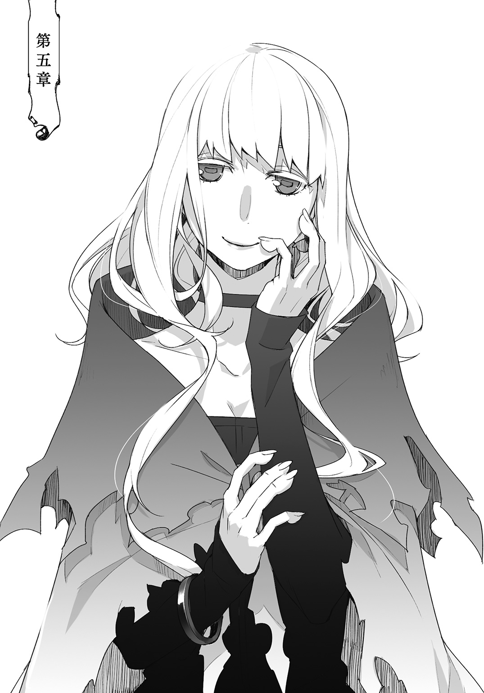
「ああ、なんて良い、匂い――」
回収した探索者証を提出しに探索者ギルドへと向かう途中、下街の通りでそれは起こった。
人目の多い大通りでまさか襲われることもないだろうとは思っていたが、闇市の人混みには掏摸や痴漢はもちろん、因縁を吹っ掛けて金銭をせびる輩も少なくない。
だから全くの無警戒ではなかった。
にもかかわらず抱きつかれるまで接近に気付きもしなかった。
そこには殺意も、悪意も、敵意もない。
蝶がただ羽を休めるためにひらりと花弁に降り立つのと何ら変わることはない。
後ろから抱きすくめて項のあたりに鼻を寄せるその仕草は、ランタンがもう追い払うのも面倒になったリリオンのじゃれつく仕草に似ている。後ろから抱きついてきたのがリリオンならば恥ずかしさもあるが、何だかんだと微笑ましいものだ。
だが当のリリオンはランタンの手を握り締め、すぐ隣でびっくりしている。
それは突如ランタンに覆い被さった人物の登場にであり、そして次の瞬間にはその人物が宙を舞っていたからである。あるいはしっかりと繫いでいた手が解けたからかもしれない。
ランタンは後ろを振り返りもせず肘突で抱きついてきた人物の胸を殴打し、乱暴な仕草で衣服を摑むと股ぐらを後ろに蹴り上げ、片腕一本で強引に背負い投げた。
柔らかい。無い。軽い。
ランタンはそれが変質者であると決めてかかって問答無用に地面に叩き付け、そのまま自らも倒れ込んで変質者の顔面に膝を落とした。眉間に狙いを定めて、たかだか五十キロかそこらであるが全体重を浴びせたはずだった。
軽い。自分の身体じゃないみたいだ。
変質者の頭部は地面と膝に挟み込まれて、軋みの一つも上げなかった。悲鳴の一つも漏らさなかった。
影を踏んだような手応えのなさにランタンは己の身体から重さが失せたように感じ、しかしふと肉体の重みを取り戻した。
それと同時に影であった変質者の肉体もはっきりと感じ取れるようになった。
一度、経験したことがある感覚に似ていた。過去探索した迷宮の一区画に低重力空間とでも呼ぶべき場所があった。一歩踏み入ると足元が不安定に感じるほどふわふわとして、一歩外に出ると今まで意識することもなかった自分の重さを再認識される。
あの異様な感覚に似ていた。
地面には緑の髪が広がっている。
ランタンは変質者の顔からゆっくりと膝をどけて、一歩離れた。
変質者は女だった。だから追撃して止めを刺さなかったわけではない。相手が誰であろうとも、躊躇う気持ちはあっても、必要なら暴力の行使に躊躇はしない。
女から抵抗の意志を感じなかった。
抱きついた時と同じ、まったく空っぽな気配が横たわっている。膝を落とした眉間はうっすらと赤く染まっていたが出血もなければ、腫れてもいない。
その赤さを見るように黄色い瞳が寄り目になっていて、ぐるんと外回りに一回転して焦点を取り戻す。それでもぼんやりしているように見えるのは、大きな瞳が眠たげだからかもしれない。何度も大きな瞬きを繰り返して、大きな欠伸をした。
まるで今、眠りから覚めたとでもいうように。
「ねえ、ランタン、この人」
「うん」
ランタンは大の字に倒れる女の手を爪先で動かし、手首を踏み付け掌を上にする。
「この前の女の人だね、たぶん」
女の掌に、ランタンの食い千切った傷痕が残っていた。それほど深く嚙み付いたわけではなかったから、並の探索者ならばすでに治癒している程度の傷だったはずだ。だが傷痕が残っている。あれほどの技量を有していて、並以下の探索者なはずがないのに。
あるいはもしかしたら他人の空似で、偶然に同じ箇所を誰かに嚙まれたのかもしれない。
「やっつける？」
「いや、様子を見よう」
うずうずと大剣に手を伸ばそうとした少女をランタンは落ち着かせる。
通りの人は多く、治安は悪い。
喧嘩や乱闘は見世物程度の認識でしかなく、これは儲けになるだろうかと賭け事の胴元に転職しようかしまいか屋台主たちが牽制しあう。ランタンが去ったら女の身ぐるみ引っ剝がして骨の髄までしゃぶり倒してやろうとする獣どもがぎらぎらと目を輝かせ、他の大勢はことの成り行きを楽しもうと野次馬根性丸出しだった。
今更ながらフードを外されたことに気が付いた。遅きに失したランタンは舌打ち一つを転がして、顔を隠すように俯いて女の目の中を覗き込む。はっきりと意識を取り戻した視線に見つめ返され、ランタンはびくっとした。
視線が交わると、女はすぐに唇に笑みを浮かべた。
廃墟で浮かべた不気味な笑みとは違う、頰まで裂けるような大きな口だが不思議と愛嬌があった。血の気の薄い青みがかった頰は元々の肌色が僅か黄緑色を帯びるためにいっそう瘦せて見えた。だが丸い顔立ちには温和そうな柔らかさがあった。
ランタンよりも幾つも年上だが、微笑むと年頃の娘のように無邪気だ。
「あらぁ、わたくしったら何を......」
おっとりとした口調で呟いた。往来の道端で仰向けに寝転がされているのに、そんなことなど気にもしていないように、あるいは気付いてもいないように。
女はもぞもぞと身体を動かして、はっとランタンを見た。
「あの、わたくしの手を踏まれているのですが」
女はまるでランタンが自分の手首を踏んでいることに気が付いていないのではないかと、本気で思っているような口調でそう告げた。
それが本気なのか、噓なのかランタンには区別が付かなかった。これは襲撃者というよりも変質者で、変質者というより変な人である。
「ごめんなさい」
「いいえ、かまいませんわ」
ランタンは曖昧に微笑んで、いざとなったら手首から先を灰に変えてやろうと寝転がる女に手を伸ばした。リリオンが心配げにランタンの外套を摑んだ。
「大丈夫ですか？」
「あら、恐れ入ります」
女は少しだけ驚いたように目を見開いて、ランタンの手を摑んだ。
女の手首に探索者証が揺れていて、しかしそこに刻まれた傷は無数にあって狩猟刀由来のものを確認することはできない。だが濡れたような体温の低さ、しっとりと吸い付くような肌触り、握り締める力と僅か膨らんだ指先。
その感覚は、顔面を鷲摑みにされたときのことを容易に思い起こさせた。
この女で間違いないようだ。
ランタンが内に隠していた警戒心を露わにしたが、女に変わった様子は見られなかった。
ランタンはいつでもその手を破壊できるように意識しながら、女の身体を引き上げた。瘦せて見える頰や、手首とは裏腹にそれなりの重量がある。
重心は下寄り。尻が丸くて、太股が張ってる。立ち上がるとランタンよりも、例外なく探索者はそうなのだが、背が高い。女はごく自然に、それでいて名残惜しげにランタンの手を離して頭を下げた。
ランタンが引き起こす僅かの間に、空っぽの気配が満たされた。
「ありがとうございました、――ランタンさま。それにリリオンさまも」
手を差し伸べたときから、野次馬たちは数を減らしていた。
表面上の穏やかなやり取りは、顔面に膝を落としたことさえ勘違いではなかったかと錯覚させるほどで、血に飢えた野次馬たちはつまらなそうに踵を返し、僅かに残った暇人たちは一変したランタンの気配を敏感に察知して慌てて姿を隠す。
女は戸惑っているようだった。
どうしてランタンが怒っているのか本当にわかっていないように。
もしこれが演技なら相当な役者と言わざるをえない。だが場違いなほどの女の困惑振りにランタンは毒気が抜かれてしまった。ちらとリリオンを見上げると、少女も困惑していた。
ランタンは眉間を揉みほぐして溜め息を吐いた。
「僕らの名前を、どうして知っている？」
ランタンの問い掛けに女はほっとして、胸の前に手を合わせた。
「ああ、こうやってお会いするのは初めてですものね。わたくしったら自己紹介もしないで、とんだご無礼をいたしました」
それこそがランタンの怒りの原因なのだと信じて疑っていなかった。
「はじめましてわたくしルー・ルゥと申します。ランタンさまは有名ですもの、お名前はかねがね。そんなランタンさまのお側におりますからリリオンさまのお名前も耳に届きますわ。それにわたくし傭兵探索者ですから、探索者様方の情報には敏感ですの」
「......ああ、そうなんですか。傭兵探索者」
「ってなあに？」
聞き慣れぬ言葉にリリオンは摑んだ外套を引いた。
ランタンは思わず女――ルーから視線を外し、くすくすと笑い声を聞いた。妙に恥ずかしい気分になって、視線を戻すとルーは笑み混じりにリリオンに説明した。
「戦力の足りない探索班に雇われて探索のお手伝いをしますのよ。探索でお手が必要ならば、不肖の身ですがお安くお手伝いさせていただきますわ」
安くね、とランタンは口の中で呟く。
傭兵探索者は女の言った通りに、何らかの問題で人材不足に悩む探索班の穴埋めとして雇われる存在だった。特定の探索班には属さぬ傭兵探索者は金銭によって一時的に探索班につなぎ止めることしかできない渡り鳥だ。実力を金で買われる傭兵たちの力は確かだが、尽くが法外な分配率を要求する守銭奴であるともっぱらの噂である。
傭兵探索者の売り文句ほど信用ならないものはない。
「今は、どこかに雇われていないんですか？」
「ええ、残念ながら暇をしておりますの。けれどちょっと体調もよくありませんし、神の思し召しかもしれませんわね」
「......手、怪我されてますね」
「そうなんですの。いつ怪我をしたのかわからなくって、嫌ですわ」
ルーはランタンに掌を向けて、軽く開いたり握ったりして見せた。そしてそれを自分でも見つめて、その視線ははっきりとした黄色の瞳に影を落とした。
「記憶が......？」
「あら、そんなに大げさなことではありませんわ」
先日のことを思い出しランタンが心配げに尋ねると、ルーは慌てて首を振った。けれどランタンは更に踏み込む。
「先日、二日ほど前は何をされていました？」
「ふふ、心配してくださるのね。二日前は、――そうそう、お薬を頂戴しに。ちゃあんと覚えておりますよ」
ルーはそう言って微笑んだ。自分の記憶に疑うところなどなく、ランタンたちと出会って戦ったことなどすっかりと忘れてしまっているようだった。
薬、そう言えばあの男たちは高価な魔精薬を二本も三本も服用していた。あるいはそれがルーに何かしらの影響を及ぼしたということなのだろうか。
ランタンは何とも言えぬ表情になって言葉を探す。
そんなランタンの手をルーがさっと摑んだ。
「お噂通りのお優しさですのね。今は、あら？ 何だか調子がよろしいですわ」
ルーは青白かった頰に赤みを取り戻していた。戦った時とは別人のようにはっきりとした気配がある。
「肩を並べて探索をできる日を心待ちにしております。リリオン様とも、もちろんご一緒に」
呆気に取られるランタンを余所にルーは言って、リリオンとも平然と握手を交わした。リリオンも戸惑っていて無言でこくこくと頷くばかりである。
「それではごきげんよう」
そしてルーはランタンが呼び止める間もなく去って行った。
「ええっと、なんだったの、かしら......？」
「うう」
リリオンは小難しい顔をしてしきりに首を捻り、ランタンは言葉もなく呻くことしかできない。ルーの背中はすでに見えない。
「お話、聞かなくてもいいの？」
「よくはないんだけど......」
ランタンはどうしていいのかわからなくなった。
向かってくる相手は叩きのめし口を割らせればそれで済むのだが、ルーにはまったくその雰囲気がない。それはランタンにとっては未知のことで、何をどのようにすればいいのかがわからなかった。
「追いかける？」
「いや、先にギルドに行こう。名前も教えて貰えたし、調べるのはきっと難しいことじゃないから。たぶん」
「うん、......でも本当に覚えていなかったみたい。変なの」
ランタンはリリオンの手を取って、名残惜しげに後ろを振り向くリリオンを急かした。
変なの、とはあまりにもな言い分だがまさしくそうとしか言えなかった。記憶がぽっかりと欠落していて、ルーはその事をまったく気にも止めていない。それが性格によるものなのか、それとも彼女の言うお薬の作用なのかはわからない。
「でもほんとなんだったんだろ」
ランタンは鼻を擦りつけられた首筋を掌で拭う。
「ランタンが良い匂いだから、我慢できなかったのかも」
「絶対無いね。って言うかさ、リリオンも同じ石鹼使ってるんだから同じ匂いがするでしょ」
同じ石鹼どころか、ほとんど同じ物を食べ、同じベッドで寝起きし、同じように生活をしている。リリオンは服の胸元を引っ張って、くんくんと自分の体臭を確かめていた。
「やめなさい、人前でそんなこと」
「おんなじ匂いしないよ」
顔を上げたリリオンは唇を突き出してそう言って、繫いだ手を引っ張ると鼻を寄せた。
「ランタンは良い匂いがするわ。どうして？」
手の甲に口付けをしているようだ。
そのまま少女は無邪気に尋ね、湿った吐息が甲を濡らした。
「――リリオン、途中で肉串を買い食いしてたからじゃない？」
同じ生活をしていても体臭は別だ。
リリオンの体臭は妙に甘いようにランタンは思う。乳飲み子の甘さとも少し違う、少女の匂いは寝起きにむわっと濃く香るのだ。体温が高く、よく汗を搔くからだろう。けれどそれは不快な匂いではない。
「あう、そうなのかな......じゃあ、もう食べない」
「ふうん、僕は食べるけどね」
「......ずるい」
膨らませていじいじとしながらリリオンは、やっぱり食べる、とあっさりと前言を撤回した。それからこそっとランタンを窺い、ランタンが意地悪そうに笑っているのを見つけると唇を突き出してぶぅと鳴いた。そして笑った。
「ランタンはきっと特別なのね」
「急になんだよ」
「だって、さっきの人もランタンに抱きついたら急に元気になったのよ」
「噓だあ」
「ほんとよ、ランタン」
リリオンが真面目な顔で言うので、ランタンは思い出したようにフードを被って顔を隠した。
「恥ずかしがらなくってもいいのに」
◇◇◇
「落とさないでよ」
「大丈夫よ」
探索者証を提出しようとそれをポーチから取り出して、ランタンは手慰みに指に引っ掛けてくるくると回す。無意識にそんなことをしていると、リリオンが貸して貸してとせがんでさっそく真似をした。
リリオンは何が面白いのか鼻唄を歌い、ランタンもそんなリリオンが面白いので鼻唄を歌った。二人して楽しげに探索者証を回している姿はギルド内にいる探索者からの胡散臭げな視線を一身に集めていた。
だが遠巻きに見られるだけで、この前のように話しかけてくる探索者はいなかった。まるでこの指先にくるくると回す行いが魔除けの呪いで、浮かれた鼻唄が悪霊除けの経文であるかのように。
ランタンの手首には自分の探索者証が嵌められている。探索者証は原則として探索者一人につき一つ。それを二つ以上有している姿は探索者たちの想像を搔き立てるものである。
探索者証は自らを探索者だと保証してくれるものだ。多くの探索者はそれを自らの誇りと置き換え、肌身離さず身に付ける。探索者が探索者証を手放すことは滅多にない。
「この前の二人組のじゃないか......？」
「ああ、きっとそうだ。ものすげえ怒ってたからな」
「かわいい顔して怖い怖い」
「......それもまたそそるよなあ」
ひそひそ話が聞こえてきて、ランタンは顔を顰めた。
僕が殺したんじゃないんだけどな、とランタンは聞き耳を立てながら思う。
結局、探索者証の元の持ち主たちに止めを刺したのは射手である。もっとも殺そうと思ったのは確かで、射手がしなかったらランタンが止めを刺したのも確かなことだったが。
「あっ」
リリオンの指から跳ね飛んだ探索者証をランタンはひょいと指に引っ掛ける。
「探索者除けのお守りになりそうだな、これ」
ランタンはそんな物騒なことを言った。
ひそひそと遠巻きに噂されるのは気分の良いものではないが、馴れ馴れしく話しかけられるよりはましかもしれない。ランタンはこれ見よがしに二輪の探索者証を手の中でちゃらちゃらと鳴らした。
その音色は探索者を戦かせるが、探索者を屁とも思っていない者には何の効果もない。
「いいものをもっているじゃないか」
不意に後ろから声を掛けられてランタンは危うく探索者証を落とすところだった。二度、三度とお手玉して、横からリリオンがランタンの手ごとそれを握り締めた。
思わず顔を見合わせて二人揃って安堵の溜め息を漏らす。
勧誘か、それとも台詞からして喝上げか、と思ったが声の主は探索者ではない。
「やあ、こんにちは」
今までにない切り口だった。落ち着いた低めの声で、こんにちは、なんて声を掛けてくる探索者は今までランタンは出会ったことがなかった。その新鮮さにランタンは驚きを覚えた。
「あ、はい。こんにちは」
ランタンは反射的に小さく会釈をして、それからその顔を見上げた。リリオンが会釈しながらも、そっとランタンの背に隠れるように移動する。少女はぎゅっと外套にしがみついた。
それは狼人族の女だった。
紫がかった濡れ羽色の体毛に、それよりも濃い漆黒の髪。髪を搔き分けて頭上にぴんと尖る三角の耳。獰猛に突き出た鼻面と、笑うとそこから鋭い牙が覗いた。
ランタンとリリオンが二人して目を瞬かせる様子を可笑しげに見つめている。
冷徹にすら見える灰青の瞳が不思議と優しげで、それでいながら凜々しさを失わない狼顔にランタンは既視感を覚えた。
「あ」
ランタンは小さく声を上げ、あらためて深く頭を下げた。
「その節はありがとうございました」
狼女は以前勧誘からランタンを救い出してくれた武装職員だった。
その時に装備していた犬頭の兜はもちろん、厳めしい全身鎧も身につけてはいないが、ふっとランタンの頭に手を伸ばす仕草は変わらなかった。
「くふ、いや君は、本当に探索者らしからぬ礼儀正しさだな。気にせずとも構わないさ、あれが私の仕事だからね」
武装職員はくしゃくしゃとランタンの髪の柔らかさを堪能して、その手を外した途端にランタンの髪を撫でつけるリリオンにあくまでも穏やかな視線を向けた。
ギルド職員だから、もしかしたら多くの探索者が勘違いしているリリオンの実年齢を知っているのかもしれない。
「それで、それはどうしたんだい？ まさか拾ったわけでもないだろう？」
探索者ギルドの綱紀粛正を司る武装職員はランタンが手にする探索者証を指差して尋ねた。
黒く短い毛に覆われた獣の指にはいかにもな爪が尖っていて、ランタンの手の中から探索者証をひょいと取り上げた。
「と言いたいところだが、最近は探索者の誇りを落っことす奴が多いんだ」
武装職員は探索者証の表面を眼前にかざして鼻を鳴らした。
「これも本物のようだし、嘆かわしいことだな」
「そうなんですか。でもこれは、――落っことしそうになってるところを拾ってきたんです」
「ほう、それは興味深い」
「これを拾った経緯についてご相談したいことがあるのですけど、よろしいでしょうか？」
「ああ、もちろん。こうみえて私は遺失物係もしているんだ。おっと、そう言えば自己紹介がまだだったね。私はテス・マーカムという。よろしく」
「ランタンと申します、で、ほら、あいさつして」
「......リリオンです。いしつぶつがかりって、なんですか？」
「くふふ、落とし物係のことさ。もっとも落とし物をわざわざ届けてくれる探索者を私は一人しか知らないがね」
テスは笑いながらそう言って、意味深にランタンを見た。
「さて人目もあるし、君たち二人といるとさすがに目立つな。少し移動しようか」
ついておいで、とテスは歩き出し振り返りもしない。
テスの尻から尻尾が生えていた。
ぱつっとした革のズボンに開いた穴から外に出た尻尾は長毛で、狼の尻尾というよりも馬の尻尾を思わせた。それは艶やかで毛先に近付くにつれて僅かながら銀の光沢を帯びる。
「......かっこういいね」
リリオンがランタンの耳元に顔を寄せてひそひそと告げた。
テスの歩く後ろ姿は背筋がぴんと伸びていて、かつかつと踵を鳴らして堂々としている。
背に垂らした髪と、膝まで垂れる長い尻尾が左右に小さく揺れていた。小股の切れ上がった女性、とはこういう人のことを言うのかもしれない。
ランタンはひそひそと、そうだね、と返す。
「でもランタンもかっこういいよ」
「......それはどうも」
不意を衝かれて、ランタンは照れて唇を嚙んだ。そんなランタンを余所にリリオンはテスの真似をしてぴんと背筋を伸ばした。
そうするとリリオンは本当に背が高くて、こそこそとテスを観察する表情の幼さが不釣り合いで奇妙な魅力があった。
「こっちだ」
テスが振り返ると、リリオンが慌てて目を逸らした。
テスの向こう側には地下への階段がある。
「こんな所に階段あったんだ。どちらに行かれるんですか？」
「ああ、地下資料室さ。職員もなかなか寄りつかないからね、内緒話には持って来いの場所だよ」
「へえ、資料室。僕らが入ってもいいんですか？」
「もちろん問題ない。バレなければね」
しれっと言い放ったテスはさっさと先に行き、ランタンはリリオンの手を取って薄暗い階段を下った。
探索者も使用可能な地下施設はあるが、ここは明らかに職員用という雰囲気があった。探索者の姿が一つもなく、彼らの持つ喧しさや熱気がないので冷たく静まりかえっている。
「珍しいかい？」
「ええ、僕らが入れる場所って立派だから。ここはなんというか質素、じゃなくてええっと質実剛健ですね」
「あっはっは、気を遣わなくていい。見られるところには金は掛けるさ。探索者はそういうのが好きだからね。ギルドが貧相じゃ探索者が集まらない」
上の施設に比べると天井が低く、足音がはっきりと空間に反響した。魔道光源の明かりすら切れかけに明滅していて、テスの言う地下資料室は地下一階の果てにあった。
重々しい金属の扉を前にテスは静かにするようにと唇に人差し指を当てる。
そして忍び入るようにそっと扉を押し、その隙間から滑り込んで二人を招き入れた。扉を閉めるときも、気を遣っているようだった。
「地下なのに二階だ」
「すごおい、本がいっぱい......」
扉を入った先は中二階で右側の壁に階段が備えられていた。
リリオンが手すりから下を見下ろしていて、ランタンもそれに倣うと膨大な数の書架が墓標のように立ち並び、また壁一面を埋め尽くしているのがわかった。
階段を下りながらリリオンがすんすんと鼻を鳴らした。
紙の香りが沈殿している。古い紙特有の黴っぽい乾いた匂い。そして少し甘いインクの匂い。それが階段を下るにつれてどんどんと濃く香る。
下りきるとテスが振り返った。
「あまり良い匂いじゃないだろう」
「うー......」
「僕は好きですよ、こういうの。落ち着きます」
「じゃあ、わたしも好き」
「じゃあってなにさ」
「いいの」
ランタンを物珍しげに見つめたテスは、リリオンの言葉に思わず笑い声を漏らした。口元に手を当ててどうにか嚙み殺そうとしているようだが堪えられないようだった。
その笑い声に反応して、書架の影がぬっと形を作った。
影は黒と金で構成されていて、それは人の形をしている。
ランタンとリリオンがそれを見ると、テスがゆっくりと首を回した。
それは頭までをすっぽりと覆う黒いローブを身につけていて、輪郭を縫い取ったように金糸の刺繡が施されていた。口元にはヴェールが垂らされて、白金の細い鼻梁が僅かに覗くばかりだった。一見すると魔道職員のように見えるが、なんとなくランタンは違うと思った。
「おい、どういうことだ？」
声は冷厳と言う他ない女の声だった。テスは悪戯が見つかった子供のように頭を搔いて、しかし楽しげな視線をランタンとリリオンに寄越した。すると影は苛立たしげに声を発した。
「おい」
「ああ、悪かったって。静かにするから、少し場所を貸してくれ」
「静かにしていても、お前は存在自体がうるさいんだよ」
「おや、なんと酷いことを言う」
「それに――」
女は隠された顔を二人に向ける。
じっと二人を見つめて、その妙な威圧感にリリオンが背に隠れた。
「うるさい探索者の筆頭が居るじゃないか」
それが自分を言っているのだとランタンは一瞬理解できなかった。
ギルド内でランタンはいつも大人しくしている。ランタンが戸惑っていると、女は黒い手袋に包まれた指をランタンの鼻先に突き付ける。
「お前の周りには、いつも騒ぎがあるだろう」
「......僕のせいじゃないと思うのですけど」
ランタンが拗ねるように呟くと、テスが笑って女を肘で突いた。
「ランタンが魅力的なのがいけないんだってさ。口下手なんだ、ゆるして――やってくれ」
テスが臑を蹴飛ばされて、しかし固そうな革の戦闘靴に包まれた足はびくともしない。
けろりとしているテスに女は忌々しげに舌打ちをして、そしてランタンとリリオンを隠された視線で見据えた。
リリオンは恐れ、背に隠れながらも身体ごと首を傾けてフードの中を覗こうとしている。
「そもそもここは、部外者は立入禁止だ」
「探索者は全てギルドに所属している。だから部外者ではない。どうだ？」
「......」
「場所を貸してください」
テスの言葉にランタンが頭を下げてリリオンがそれに続いた。女は渋々と言った様子で、書架の果てにあるソファとテーブルを指し示した。
「うるさくしたら追い出すからな」
「わかってるよ。二人とも座って待っててくれ。紅茶を淹れるが、砂糖は？」
「えっと三つください」
「わたしもおんなじだけ、ください」
「くふ、甘党なんだな」
「――子供なだけだろう」
テーブルを挟みソファが二つ。そしてそれらを観察するように上座に執務机がありローブの女はそこに腰掛けた。我関せずとさっそく書類を捲っていたが、思わずというように呟いて咳払いを一つこぼした。
ランタンは座ろうとするリリオンを押し止めて、女に声を掛けた。
「お仕事のお邪魔をして申し訳ありません。場所を少しお借りします」
「......ああ」
「僕たちの名前は、もうご存じなのですよね」
「ランタンとリリオンだろう」
「はい。その、よろしければお名前を教えていただけますか？」
ランタンが尋ねると、女は思案するように一つ間を空けた。フードに隠されているのに、ランタンは女からの冷たい眼差しを感じた。そして独り言のようにぽつりと呟く。
「名は無い。好きに呼べ」
突き放すようなその態度にランタンは戸惑った。そしてランタンの戸惑いが失われるよりも早くリリオンが好きに女を呼んだ。
「......おねえさま」
は、とランタンと女の声が重なった。
女は戸惑い自分の身体を抱きしめてあまりの不可解さに震え、ランタンの戸惑いはさらに深くなりリリオンを振り返った。
リリオンはちょっとだけ恥ずかしそうにしている。
「おー、いいじゃないかお姉さま。私もこれからそう呼ぼうかな」
「黙れ。ああもう、好きにと言ったが撤回する。あー、そうだな。司書。司書と呼べ」
女、――司書は紅茶を淹れるテスの背中を睨み付けて、それからリリオンに言い含めた。
「司書、さまですか」
ランタンがぽつりと呟く。面白味のない、とテスの囁きが被さるように聞こえた。
「ししょさま」
リリオンが舌足らずにそう口に出して、その甘ったるい響きには書を司るという名前の意味の一切が失せていた。
司書はまったく別の名で呼びかけられたようにまた戸惑う。
テスがこっそりと振り返り、黙って司書を指差して笑いを嚙み殺している。そして褒めるようにリリオンへ視線を寄越した。
「追い出すぞ」
「何もしてないじゃないか」
テスは器用に三つのカップを運んで、執務机の前を通り過ぎソファに男らしくどっかと座った。尻の下に敷いた尻尾を、そっと取り出し膝の上に放り出す仕草が様になっている。
「ありがとうございます」
琥珀色の紅茶にはすでに砂糖が入れられていた。溶けきらぬ塊が僅か底の方で沈殿していて、リリオンはそれを見下ろすようにふうふうと冷ましている。
「さて、では話を聞かせてもらおうか」
テスはテーブルの中央に探索者証をごとりと置いて、ランタンに話すように促した。
「はい、まず最初は酔っぱらいに待ち伏せされたことがきっかけでした」
迷宮を攻略して、一晩休んだ翌日の帰路。
「なるほどそこを突くのは襲撃者っぽいな。だがやることがお粗末だ。襲撃者なら君の怖さは身に染みているだろうに」
そうしてランタンはその時の状況や、薬物のこと、そして矢を射られたことを説明する。
迷宮攻略報告と手順はそれほど変わらないはずなのに、ランタンは不思議な緊張に煽られ言葉は辿々しかった。だがテスはゆっくりと頷き、相槌を挟むことでランタンの言葉にリズムをつくってくれた。
「――それでここでも矢を射られたので、それが黒幕だと思うのですが......」
「とはいえ確認できないんじゃな。まずは三名の探索者について聞こうか」
「一人は逃げられました。名前は、本名かは解りませんがルー・ルゥという女性の探索者です。髪は緑、目が黄色で、背は一六〇強。武器は装備してなくて、鉄の靴を履いていて格闘戦が異様に強い人でした。それで――」
「知ってるか？」
ランタンが全て言葉を言い切らない前にテスは司書に視線を向けた。
「おそらく蛙人族の乙種探索者だ。特定の所属は無し、傭兵探索者としてわりと名が売れてるな。だが襲撃者に雇われるような女ではないように思ったが」
すらすらと語られることにランタンもリリオンも驚きを隠せなかった。
もしかしたらこの書架に収められている書の数々は、探索者の記録なのだろうか。そして書を司るこの女性は、その全てを記憶しているのかもしれない。
テスがどこか誇るように、驚く二人にくつくつと笑って、探索者証を司書に一つ放り投げた。それを受け取った司書はその表面に指を滑らせる。
穏やかに明滅する薄青い発光に司書のヴェールが波打ったようにも見えた。
「三年以上、迷宮の探索記録がないな。その割に魔精の活性化が頻繁に見られるのは――」
司書が独り言のように呟く。
探索者証は探索者の行動を記録しているというのは公然の事実だったが、どれ程詳細に記録されているかは公になっていない。しかし予想よりも仔細に記録されているようだ。
ランタンはちらりとリリオンの顔を見て、恥ずかしげに左手を飾るそれに触れた。
「持ち主は魔精薬を飲んでました。見た限りだと二瓶、一人につきです」
「ほう、探索をしていないのに薬を買う収入があるのか。安い薬でもないだろうに」
テスはもう一つの探索者証を手にとって、それも司書へ。
「しかし薬物で強化した探索者を一蹴するか。現役傭兵もいたのに。さすがにやるな」
「いえ、殺し切れませんでしたから。まだまだです」
謙虚ながらも物騒なランタンの物言いにテスは噴き出し、司書が落っことした探索者証が執務机の下からころころと転がってリリオンの爪先にぶつかった。
リリオンはそれを拾い上げて微笑んだ。
「ああ、悪いな」
「大丈夫です！」
そしてそれの表面を指先でなぞって、ちょこんと小首を傾げる。
「......どうやったら光るんですか？」
「職務上の守秘義務により答えられない」
「しゅひ......？」
「内緒ってことだよ」
ランタンが探索者証を取り上げて、それを机の上に戻した。
「そう言えばルー・ルゥは魔精が抜けやすい体質だったはずだ。そこを突かれたのかもしれないな」
「魔精欠乏症か。しかしお詳しいな。さすがは司書さま、素晴らしい」
「黙れ。これで二度目だ。次はないぞ」
二人のやり取りの狭間に、ランタンははっとして顔を上げた。
「思い当たる節が？」
「はい、戦闘時も、ここに来る前にも出くわしたのですが様子が変でした。少し、......いや、だいぶ、かなり、とても」
「ふむ、その時の様子を教えてくれ」
魔精欠乏症とはその名前の通り、探索者の常人離れした力の源である魔精が欠乏する症状のことを指す。
本来、人の持ち得ない魔精は迷宮を探索したり、魔精によって生み出された魔物を殺すことで体内に取り込まれ身体機能を強化、向上させる。
人は生まれながらにして魔精との親和性に優劣があり、同じ迷宮を同じ時間だけ探索し、同じ魔物を同じように殺したとして、獲得する魔精の量には差があった。
魔精の許容量、吸収効率、定着率、減衰率、身体に及ぶ影響の大小などをひっくるめて親和性と呼び、それは残酷な程はっきりと表れる探索者の資質と言えた。
「――声を上げなかったです。あとさっき会った時はその事をまったく覚えてないようでしたし、夢遊病みたいにふらふらして。体調が悪くて薬を買ってるって」
「うーん、記憶の欠落か。自我喪失、意識の混濁、酩酊なんかは症状の一つだが、ちょっと何とも言えないな。発声障害はどうだ？」
「なくはないだろうが、別の要因だろうな。大方、欠乏症を抑えるために服用した魔精薬に何か入れられていたんだろう。治療ついでに意識を弄られたのかもな」
「やはりそうか。呼び出しを掛けて事情聴取でもしておくか」
司書は執務机に座りながらも、すっかりと書類を放り出していた。真剣な雰囲気で探索者証をいじり回して、ランタンの視線に気が付くと探索者証の発光が止んだ。
「なんだ？」
「いえ、ありがとうございます。お仕事中なのに、手伝っていただいて」
「なあに気にすることはないさ」
「どうしてお前が言うんだよ......」
司書は疲れたように背もたれに身体を預けて、テス目がけて探索者証を投げつけた。
それは頭上を通り過ぎるように狙いから随分と外れて、しかしテスは何でもないように腕を伸ばしてそれを摑まえた。
「考えられる可能性は射手が麻薬組織の一員だということか。念のため魔精薬の販売履歴を探ってみるが、おそらくは密造薬だろう」
テスはふと真剣な顔つきになって、優しげな気配の下から抜き身の刃物のような獰猛な迫力が、隠しきれずに滲みだした。
「これは大捕物になるかもしれないな。魔精薬の密造ができる組織なんてそんなにないぞ。よしんば射手がただ売人だったとしても、芋づる式に捕らえられる可能性もある。探索者も絡んでいるのなら私が存分に働けるしな」
「テスが出るのならば、相手の心配をした方がいいな。射手はルー・ルゥから辿れるだろうからそんなに心配することもない。問題は」
「一度目と二度目の襲撃までの間隔の狭さだな。話を聞くに狙いはリリオンかもしれないが、射手の執着はランタンにあるように感じるんだが」
テスはランタンの顔を灰青の瞳に映した。それは観察するようにも、笑むようにも見える。
「君はどうしようもなく有名人だからな」
そう言われてランタンは眉間に皺を寄せた。その自覚はあり、誇る気持ちは全くない。今までの経験上、煩わしく思うことの方が圧倒的に多かった。
「ランタンはやっぱり有名、なんですか？」
その事実に苦く頰を歪めたランタンは、リリオンの言葉にぎょっとして少女の顔を振り返った。やっぱりって何だ。
「くふふふ、それはもう有名だよ。単独探索者なんて天然記念物どころの話じゃないからね。彗星のごとく現れ、ただ一人で迷宮を踏破する探索者ギルドの孤高のホープ！ それに加えてこの容姿だ。そりゃもう目を惹くよ」
「すごい、すごいっ！」
テスが煽り立てるように謳うと、リリオンは胸の前で手を叩いてきゃっきゃと喜んだ。
ランタンは隠すこともなくうんざりとした表情になり、リリオンが興奮してランタンの腕を揺すってきらきらの視線を向けると恥ずかしがって俯いた。
テスは誇張に誇張を重ねて、ランタンの探索譚をリリオンに語り聞かせた。
「――うるさいぞ。無駄話をするなら出ていけ」
司書が荒々しくテスの隣に腰を下ろして、ローブの裾をばさりと翻して足を組んだ。ローブから浮かび上がった膝が形良く尖っている。
ランタンは助け船を出してくれた司書に小さく会釈をして、冷めても香り高い紅茶に口を付けた。
蜂蜜のような独特の風味があって、それはほっとする味だ。じんわりと喉に染みる。
リリオンは手で口を押さえて、テスと視線を合わせるとばつの悪そうな表情で黙る。けれど隠しきれずにんまりと眦が下がり、横目にランタンを見つめる視線が熱っぽかった。
「ランタンは、やっぱりすごいね」
リリオンは小さな声でさっと言った。
「怒られたばっかりでしょ？ もう静かにしてよ」
「くふふ、リリオンは素直で可愛いな。ちょっと持って帰っていいか？」
「ダメです」
「そうか、残念だ。うちの弟も昔は素直で可愛かったんだがな、私の後ろをちょこまかくっついてきて。今はもうすっかり生意気になってしまってね」
懐かしむように呟いたテスに司書が呆れた声を上げた。
「弟だからって扱き使ったせいだろう。自業自得だ」
「――弟さん、いらっしゃるんですね」
「ああ探索者をやってる。今度機会があったら紹介するよ。生意気だが可愛い奴だから」
ぜひ、と言うようにランタンはにこやかに頷いた。
隣でリリオンが司書の真似をするように足を組もうとしていて、ランタンはにこやかなままリリオンの膝頭を叱るように叩く。
ダメだよ、と視線で言うとリリオンは、ごめんなさい、と肩身を狭める仕草で返した。
そんな二人にテスと司書が視線を交わした。
「――お前よりよっぽどいい兄っぷりだな」
「私は姉だからね。さて――取り敢えず身辺には気をつけてくれ。この二人もそうだが――」
テスは探索者証に鋭い視線を落とした。
「――最近は探索者による犯罪も増えている」
「そうなんですか？」
「ああ、昔は少なかったとは言わないがね。しかしそもそもとして探索者の質が下がった。誇りの話をしただろう？ 迷宮で磨いた腕を平気で犯罪に使うだけじゃない。今は探索者と襲撃者の二足のわらじを履いている阿呆も少なからずいる。魔物を相手にするよりも、同業者を相手にする方が楽だと考える不届きな輩がな」
テスは苛立ちも露わに腕を組む。剣気とも呼べる気配が吹き上がったような気がした。
それに中てられて驚く二人とは裏腹に、司書は慣れたものなのか平然としていた。
司書は一枚の紙をテーブルの上に置いて、ランタンたちに寄越した。
「これは......？」
「探索者で弓使いは少ない。その中でも相応の技術を修めた者はさらに少なく、そこから道を踏み外しそうな奴となるとかなりの数が限られる。名を知ったからといって何があるわけではないが、念のため目を通しておくといい」
美しく躍る文字。
一枚の紙につらつらと記された文字は、弓を使う素行不良探索者の名前であった。司書はランタンたちが顚末を語り始めたその時から、この名簿を作成してくれていたようだ。
ランタンもリリオンもはっとして司書の隠された顔を見つめて、深く頭を下げた。
「ありがとうございます」
「ありがとうございますっ！」
子供の声が二つ重なって、司書の動揺の気配が伝わってくる。
司書は落ちつかなげに足を組み替えて、そっぽを向くようにヴェールが揺れた。縫い取られた金糸が光を反射して赤面したように色を変え、咳払いが聞こえる。
「くふふ、お優しいことだ。その優しさを私にもくれないか？」
「うるさいよ。その減らず口を黙らせたら考えてやるさ。――取り敢えずこの探索者証は預からせてもらうぞ。後で詳しく解析する」
「ああ、そうだな。ルー・ルゥを呼び出して事情聴取もするし、奴の探索者証も解析に掛ければおおよそのことは解るだろう」
テスが表情を改めると、灰青の瞳に冴えた光が宿る。
するとその容姿そのものである狼の獰猛さが露わになって、恐ろしくも誇り高い凜々しさにランタンもリリオンも自然と背筋が伸びる。
「この都市には悪が多すぎる。襲撃はまだあるだろうから気をつけるんだよ。身の安全を第一に、情報収集はこちらでやるから深追い厳禁。いいね、ランタン」
ランタンに釘を刺したのは、きっと手首に巻かれた探索者証に収められた戦いの記憶がギルド内で共有されているからなのだろう。
「何かあっても先走らず、ここに来て私か、司書さまに報告だ。男の子なんだから女の子を守りたくなるのは解るけどね。なあに少しの辛抱さ。舞台はちゃんと整えてやる」
実は密かに今度襲撃があったら何人かひっ捕まえて口を割らせてやろう、と考えていたランタンは、内心の少年っぽい意気込みを見透かされたようで恥ずかしがった。
「......はい、ありがとうございます。でも、どうしてこんなによくしてくださるんですか？」
ご迷惑ではありませんか、とランタンは遠慮がちに尋ねる。
するとテスは鷹揚に首を振った。
「気にすることはない、これが私の仕事だよ。それに趣味と実益というやつだからね」
「趣味、ですか」
どんな趣味なのだろう、と考えたランタンの思考をそのままリリオンが口に出した。
「どんな趣味なんですか？」
テスは不敵に笑い、ただ一言答える。
「正義だ」
◇◇◇
「麻薬組織か......」
テスたちにそう告げられたせいか、帰り際に薬物中毒者の姿が目についた。
煙草状のものを咥えぷかぷかと煙を燻らせながらぼんやりと嗜んでいる者もいれば、死体のように大人しくなって陶酔している者も、しきりに身体を搔き毟ったり、けたたましく笑い転げている者もいる。探索者に絡んで鬱陶しげに蹴倒されている者もいる。
殺されないのは運がよかったのか、そうすることすら面倒なほどに日常的な出来事だからなのかもしれない。
誰も彼もが怪しく見えたが、彼らはきっと前からもそこにいたのだ。ただ、今までそれは景色の一部に過ぎず、大して気にもとめなかっただけで。ずっと前から。
背後にある人の気配は、ただ同方向に用事があるだけの一般人だ。
ランタンはそんな風に考えて、しかしどうにも落ち着かなかった。もしかしたら自分にそう錯覚させる程の実力者なのではないか、と心の片隅にある疑念が消えない。
ランタンの神経質さは、この繫がれた左手にある半端な冷たさのせいだ。
リリオンの感情はすぐ指先に現れる。楽しいときは温かいし、不安なときは冷たい。
「ねえリリオン――」
「なあに？」
もしかしたらこの冷たさは自分の緊張が伝わったせいではないか。
そう思ったランタンは何でもないように少女の名を呼んで、それから話題を考えた。
ぱっと思いついたのはテスと司書の二人だった。
二人のやり取りは妙に子供っぽく仲睦まじげで、しかし不思議と大人の女性であることも同時に感じさせた。それは微笑ましさと頼もしさだ。
「テスさん、格好良かったね」
「うん！」
あの頼もしさを思い出したのかリリオンは頰を緩める。ぽっと温かくなった手を感じ、ランタンは指を絡めるように手を繫ぎ直した。嬉しそうに少女は笑う。
「ねねね、ランタン」
「うん」
「わたしに訊いて」
「何を？」
「趣味は何って、わたしに訊いて！」
リリオンは繫いだ手を前後に大きく振った。
そんなリリオンは、何となく言い渋ったランタンの手を引っ張って、ねえお願い、と甘えるような声でそれをせがんだ。ランタンは諦めたように肩から力を抜く。
「......リリオンの趣味は、何ですか？」
ランタンが尋ねるとリリオンはわざわざ立ち止まって、少しだけ名残惜しそうに繫いだ手を離した。それを慎ましやかな胸に当てて、鼻をつんと上に向けた。唇に浮かぶ笑みは狼の、とはとても言えない子犬の笑みだ。少女は勿体ぶるように呼吸を一つ置いて口を開く。
「――正義よ！」
どうだと言わんばかりに言い放ったリリオンに、ランタンは生温い視線を送った。
だがリリオンはとても満足気な顔で、いそいそとランタンと手を繫ぎ直してむふうと鼻を鳴らした。空いている手で自分の頭を撫でて、尻を触った。
狼の耳や尻尾が生えたかもしれない。そう思ったように。
「どうだった？ かっこうよかった？」
「んー、普通」
「なんで、なんで！」
ランタンがそう言うとリリオンは憤って声を荒げた。抗議するように繫いだ手をぶんぶんと振り回す。
「テスさんはあんなにかっこうよかったのに......」
趣味を正義と言い切って恥じないテスは確かに格好良かった。
ランタンもその台詞を聞いた時には少しばかり胸が高鳴った。だがたとえ同じ台詞を口にしようとも、おかしいなと唇を尖らせるリリオンから格好良さは微塵も感じられない。
ただ年相応の微笑ましさはある。ランタンは拗ねる横顔を優しく見つめる。
「ねね、ランタンもやって！」
「嫌だよ」
「大丈夫！ ランタンはかっこういいから！」
「嫌です。そもそも僕の趣味は正義じゃないし」
真似してみたいな、と少しも思わなかったわけではない。だがそれを実行するかどうかは別の話だ。ランタンは恥ずかしさを隠すように、わざとらしくそっぽを向いて歩調を速めた。
「ねえねえ、どうして？ きっともっとかっこういいはずよ」
歩調を速めたというのにリリオンは平然とついてくる。手を繫いでいるからとか、そういう話ではない。身長差だけではなく、そもそもの腰の高さが違うのだ。もし同じ背丈まで縮んだとしても、きっと。
ランタンはふて腐れて、結局歩みを緩めた。
「ランタンの趣味はなあに？」
「――......趣味かあ、僕の、趣味」
ランタンは結局リリオンの望みを叶えられず、鸚鵡返しにするだけで黙りこくった。
リリオンは沈黙を不思議そうに聞きながらランタンが口を開くのをしばらく待っていた。
けれどランタンは口の中で音にならない程の小さな声で、趣味、趣味と繰り返すばかりなのでリリオンはついに腕を引いた。困っているランタンに手を差し伸べるように。
「――ランタンって、探索してない時って何をするの？」
「探索してない時は、......食べて、寝て、身体を休める」
「他には？」
「買い物――まあ探索の用意か。いやでも、それならさっき言ったのも......」
「えっと、他には......？」
「......何も」
訊いたリリオンも、答えたランタンも困ってしまった。
ランタンは自分に呆れたように苦笑して、しかしふと落ち込むように俯いた。
我がことながらあんまりにもな日々を過ごしてきた。そこら辺で転がっている薬物中毒者達の方が、あるいは人生を謳歌しているのではないだろうか。
「ランタンは迷宮が、趣味？」
そっと尋ねるリリオンに、ランタンは頷かなかった。
迷宮に潜り続けてきたのは生活費を稼がねばならなかったからだが、貯蓄に余裕のある現在でもランタンはハイペースに探索を続けている。
男の子なのだから冒険に憧れがないわけではないが、実際にその中に身を投じることは恐ろしい。それは身に染みている。
けれど同時に実際の探索で高揚感を得ているのも事実である。
だが楽しんでいるわけではない、とランタンは思う。思うのだが果たして本当にそうなのか自分でも解らなかった。
でも探索はあくまでも仕事であって趣味ではない。
自分の趣味は何だろうか、とランタンは考える。迷宮に潜る意味は、この世界に来た理由は、生きている意味は、そういった答えのないことを鬱々と考えたことはあっても、自分の趣味を考えた事なんて今までなかった。
「ねえリリオンの趣味は？」
「正義！」
「そうじゃなくて、本当の趣味」
ぱっと頰を綻ばせたリリオンは、一転して考え込むように上目遣いになった。ランタンは美しい横顔に息を吞んで、その美しさを傷つけないように柔らかく問う。
「――リリオンは、昔どんな風に遊んでた？」
辛い旅に出る前の、今よりももっと幼い頃に。
「うーん、お家でお人形遊びしてた、かな？ あ、そうだ！ わたしお裁縫もできるのよ！」
「へえ、そうなんだ。じゃあ外套もリリオンに繕ってもらえばよかったかな」
「あは、お花の刺繡も縫い取ってあげようか？ ママに教えてもらったの！」
リリオンは母親の面影を思い出して、笑いながら唇を嚙んだ。
「それなら裁縫道具も買えば良かったね。僕のばっかり買っちゃったよ」
「ランタン、お風呂道具いっぱい買ったものね。......ねえ、ランタンはお風呂が趣味じゃないかしら？」
「風呂が趣味か......？ いや、でも、ううん。趣味なのかな？」
「きっとそうよ！」
ランタンは上街で風呂用品を買い求めた。背囊の中にはまさに戦利品とでも言うように風呂用品が収められている。ふかふかのタオル、身体を擦るための荒い目の麻布、湯に垂らす香り付けの精油や、精製率の高い真っ白な石鹼。それに水精結晶も。
この世界にあって個人単位での湯浴みは高級な嗜好品であり、これを嗜むことは趣味と言って差し支えない。
ランタンは自分に趣味があることに大きく安堵した。大げさにもそれがまるで人間としての証明であるように。
リリオンもそれを喜んだのか頰を緩め、しかしその喜びは別の理由だった。
「ランタン、お風呂好きよね」
「うん」
「わたしも、一緒に入りたいなあ？」
「......」
「ねえ、ランタン。ねえねえ」
「......あー、そうだね。考えとく」
「約束よ？」
「わかったよ。っていうか勝手に入ってくるでしょ、約束しなくても」
「えへへ」
比較的安価な水精結晶でも決して安いものではない。一つの湯船に二人で浸かれば体積の分だけ風呂水の節約になる。そもそも、そんなことを考えなくたってもうすでに一緒に風呂に入ったことがあるのだから二人一緒に入ったって何らおかしいことはない。
生きていれば身体は汚れる。
眠っていようとも汗は搔くし、垢も出る。代謝の活発な子供ならばなおのこと。汗の臭いは大抵不愉快であるし、身体のべた付きは大抵不快だ。
汚れた身体は気持ち悪く、それを清めたいと思う気持ちは避けがたい欲求である。
リリオンが風呂に入りたがるのも仕方がない。
ランタンは自分に言い聞かせるように何度も頷く。
それに女の子なら不潔にするべきではないし、子供は上手く身体を洗えないかもしれない。こんなに背が高くてもリリオンは九歳だ。
子供を風呂に入れてやるのは、きっと歳上としての務めだろう。
「ねえねえ、ランタンの趣味はなに？」
「お風呂――ってもう、やめてよ。恥ずかしい」
リリオンは帰宅後の風呂を待ちかねるように、はやくはやく、と手を引いて急かした。
「そんなに急がなくて――やっぱり、急ぐか」
「え？」
ランタンは後ろを振り返った。
人影がちらほら。その中に後を付けてくる者はない。
けれどきっとリリオンは不安がっている。
背後に迫る夕闇の中に、いるはずもない何かを感じ続けている。
繫いだ手。完全に温まりきらない指先。
少女がことさら楽しげに振る舞うのは、きっと不安の裏返しだ。
ランタンはびっくりするリリオンに笑いかけて、早口に言った。
「先に家に着いた方が勝ちねっ」
「あ、ずる――」
ランタンは繫いだ手をはらりと解いて走り出す。
リリオンはそれを慌てて追って、すぐに追いついたのはランタンが少女の速度に合わせたからだった。どれだけリリオンの足が長くても、ランタンはリリオンを導くように先を歩く。
「ほら、おいで」
リリオンは二度と離されまいと飛び付くように手を繫いで、二人は夕闇を置き去りにまだ明るい方へと走り出す。
その速度に誰もついてくることはできない。
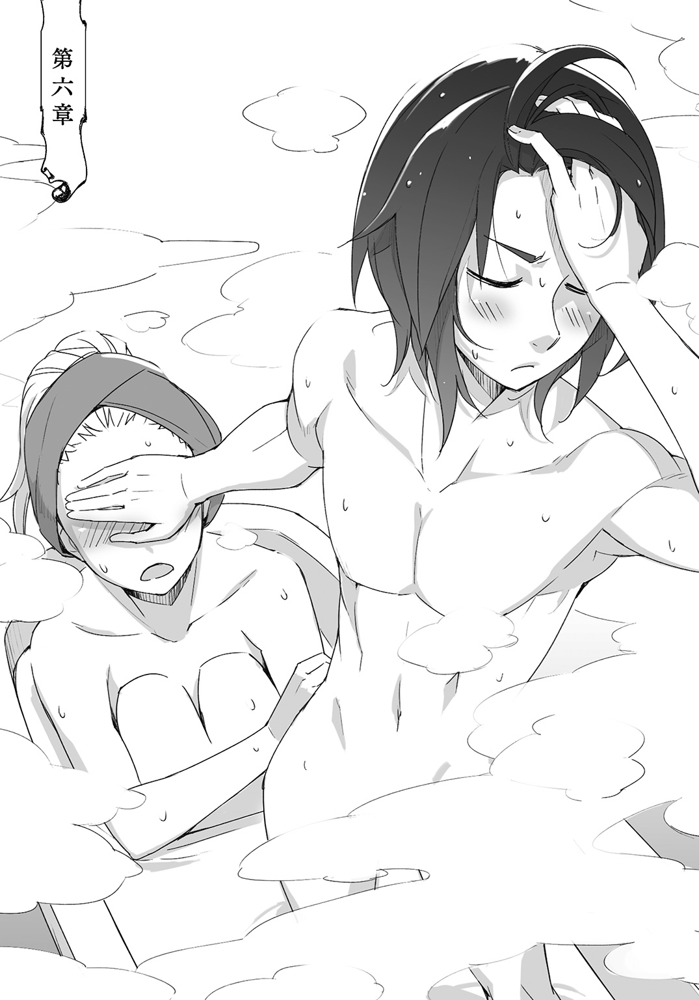
「羊の匂いがする」
「それ麻布だよ」
ふかふかのタオルに顔を押し付けて呟くリリオンに、ランタンは指摘する。
ランタンは住み家に戻ると背囊を逆さまにして買ったばかりの風呂用品をどさどさと広げた。そしてそれをすぐに使う物とそうでない物とに仕分けして整頓しているのだが、リリオンが無邪気に邪魔をしてくる。
少女はランタンの背中にべったりと身体を預けて、色とりどりの小瓶に収められた精油に手を伸ばした。
「これはお花の匂いに、これはオレンジ、これは薄荷。こっちは何かしら、甘くていい香り」
「重いんだけど」
夕飯はまだで、身体をくっつけているものだからリリオンの腹がぐるぐると唸ったのが震動として背中に伝わった。
「先にお風呂？ それともご飯？」
「それとも――」
「んー、他になあに？」
「......何だろうね。先にお風呂にしようか」
ランタンは首を傾げるリリオンを無視して、少女をベッドの上に背負い投げして転がす。すっかりと整頓された風呂用品は脇によけてあった。用途別の複数枚のタオルと石鹼、髪油。
湯に垂らす精油はどれにしようか、とランタンはぱちぱちと瞬きする少女に尋ねる。
「オレンジがいいわ、美味しそうな匂いするから」
「お腹空いたの？ でも食べてすぐお風呂入ると消化に悪いんだよね」
リリオンは身体を起こしてベッドに腰掛け、ランタンはそんな少女に水筒を渡した。
「どうして？」
「ええっと、たしか内臓を動かすための血が、皮膚の方に集まっちゃうんだったかな」
「ふうん、よくわからないわ」
「僕もだよ」
ランタンはリリオンを立ち上がらせて、少女はそのままランタンに抱きついた。汗を洗い流す前の少年の身体には、もともとの体臭が薄いとはいえそれなりの匂いがある。リリオンはそれを胸一杯に吸い込んで満足気にしていた。
「一人で入る？」
「待って、わたしもすぐ用意するから！」
ランタンが冷たく言うと、リリオンは慌てて身体を離して背囊を漁った。ランタンは丸まったその背中を見つめて、何となく後頭部で縛ってあった髪をするりと解く。
数日、濡らしたタオルで拭くことしかしていない少女の髪は脂を纏い重たそうで、ランタンはそれを手櫛で解し広げてやった。
「なにするの。もう、意地悪なんだから」
視界に掛かる髪をリリオンは搔き上げて、胸に買ったばかりの着替えを抱きしめて立ち上がった。それは前合わせのワンピースで、司書の着用していたローブに似た雰囲気があった。
だがきっと風呂上がりに着たらばそれはバスローブにしか見えないだろう。
ランタンはもちろんそんなことは口に出さずに、リリオンを引き連れて浴室へと向かった。
浴室として使っている隣の部屋は、この時間帯になるとさすがに薄暗い。星や月が出ればもう少しましなのだが、今は地平の果てにどうにか残る夕焼けの赤を天井の穴から滲ませているだけである。
「これフックにかけて。そこの壁にあるから」
「はーい」
リリオンに魔道光源を手渡した。壁にあるフックにいつもはランタンが背伸びをしてそれを引っ掛けるのだが、リリオンはいとも容易くそれを引っ掛けた。
ランタンはその間に浴槽の近くにテーブルを引き寄せて水筒やタオルを置き、ばきんと水精結晶を砕いた。溢れ出た水が浴槽に溜まり、半ば程度に水が溜まると爆発でそれを熱した。
湯の中から手を抜いて、ランタンは指先の水滴を払った。まだ何も垂らしていないが湯気には何か甘い匂いがあるような気がする。
ランタンは水面を覗き込んで、その湯気を顔に浴びた。いつもより水量が少ないせいもあり、少し温度が高くなっているようだった。
爆発能力は、どうにも匙加減が難しい。弱める方には特に。
ランタンは痺れる程熱い湯も好きだったが、リリオンはどうだろうか。
ランタンが振り返ると真っ白の裸体があった。肌寒さに肌が粟立っていて、だというのに何一つ隠していないリリオンが仁王立ちをしている。
ランタンは驚くことも恥ずかしがることもできず、ただ呆れてしまった。
「なんでもう脱いでるの？」
「ランタンも。ほら、わたし脱がせてあげるわ」
「いや、いいから」
「ねえ、もう入っていいの？」
「身体洗ってからね。自分で洗える？」
「洗えるわ！」
前に風呂に入ったときは出来なかったくせに、とランタンは肩を竦めた。
そんなランタンにリリオンは頰を膨らませながら手を伸ばす。白く細い指が襟元のボタンを外した。くっきりとした鎖骨が外気に晒されて赤く色づく。
「だからランタンはわたしが洗ってあげるからね。ランタンはわたしを洗って」
ランタンはぐいぐいと服を脱がせようとするリリオンを平気な素振りで宥めて、しかし赤く色づいた肌は寒さではなく羞恥によるものなのだろう。ランタンは気持ちを落ち着かせるように、一つ一つ丁寧にボタンを外す。
鎖骨を満たした少女の視線はついに溢れ、胸を伝い引き締まった腹筋を下っていく。
そこで一度リリオンは顔を上げて、視線が合うと無垢に微笑み、ランタンがベルトに手を掛けると視線を下げた。
「リリオン」
「なに？」
「ちょっと目を瞑って」
「どうして？」
「ちょっとでいいから」
リリオンが眼差しを閉ざした。その隙にランタンは下着から足を抜いて櫛と椅子を手にリリオンの背後へと立った。
肩甲骨の浮き出た白い背中と、瘦せていても丸い小振りな尻。
真っ裸で少女の背後に忍び寄ったランタンは、状況の背徳的な危うさにふと気が付き、慌ててリリオンの髪を一房手に取った。
それを手綱のように引っ張るとリリオンは椅子に腰を下ろした。
「きゃっ！」
可愛らしい悲鳴を上げて振り返ろうとしたリリオンの頭を鷲摑みにする。
「大人しくしててね」
そう言い聞かせると、ランタンはリリオンの髪を梳った。リリオンは気持ちよさそうに甘い声を漏らして猫背になった。背骨が皮膚を内から押し上げる。
「どうしてお風呂に入る前に、髪を梳かすの？」
「その方が綺麗に洗えるからだよ。女の子はちゃんとしないとね。よし、お湯かけるよ」
湯を一度搔き回して桶にたっぷりと掬ってリリオンに浴びせると、それだけで白銀の髪は色を深くした。魔道光源の光はやや黄味がかっていて、それに照らされたリリオンの髪は月の光沢を帯びたが、光沢が湯に洗い流されると象牙色のように映った。
ランタンは石鹼を濡らした麻布に擦りつけて泡立てた。もこもこと真っ白の泡が布を包み込んで、まるで掌サイズの羊を摑まえているようだ。
それをリリオンに渡すと、少女はわあと嬌声を上げた。
「これもいい匂いがする」
「羊の匂い？」
「ちがうわ、えっと、えっとね。泡の匂い！」
「なにそれ？ 髪洗う間に身体を洗っちゃいな」
ランタンは桶に湯を少し掬うとそれに石鹼を溶かした。石鹼湯をリリオンの髪に馴染ませて揉むように頭皮を洗う。嵐熊に切られて少し短くなった少女の髪は、しかしそれでもまだ長い。リリオンの髪を綺麗にするのは大変で、しかしランタンは小さく鼻唄を歌った。
「痒いところはない？」
「んー、おへそ」
「それは自分でどうにかしろ」
手間なのが楽しい。いや手間だなんてそんな風にすら思わなかった。
もしかしたらこれも趣味と呼べるのかもしれない。
「リリオン洗えた？」
「うん。ほら爪も、ちゃんとしたよ」
「じゃあ流すよ」
趣味がリリオンの世話だなんて、ちょっと洒落になりそうもない。
ランタンはくつくつと笑いながら、下らない考えを泡と一緒に洗い流した。
「ん、綺麗になったね」
「ありがとう。じゃあ次はランタンね。わたし洗ってあげる」
「自分で出来るからいいよ。先に入ってて」
ランタンはそう言って掛け湯をして、リリオンを椅子から立ち上がらせた。
するとリリオンは怒るでも拗ねるでもなく、はっきりと傷ついた顔をした。せっかく綺麗になった顔を暗く歪めて、わたしできるのに、と小さな声で呟いた。
「――あー、じゃあお願いしようかな。髪を洗ってもらおうかな」
「いいの？」
「うん。爪立てたら嫌だけど」
「わたし、がんばるわっ」
ぱっと明るくなった声にランタンはほっと胸を撫で下ろして、頭にざばりと湯を浴びた。
「あっもうっ、まだ髪梳かしてないのに」
「男はいいんだよ。適当で」
ランタンは椅子に座りながらそう言ったが、リリオンは少しだけ不満気だった。
けれど気を取り直したのかランタンの背後に立って気合いの入った鼻息をふんと鳴らすと、そっと髪に石鹼湯を垂らした。リリオンの指が髪を搔き分けて頭皮に触れた。爪を立てることなく、指の腹で優しく。
思わず声が漏れる。
「ああ、――気持ちいい......すごく......」
「ほんとう？」
「うん、すごい上手かも」
「えへへ、ランタンがしてくれるのも、すごく気持ちいいのよ」
リリオンの髪の洗い方は、ランタンが少女にしてやった洗い方そのものだった。項の方から頭頂に向かうように頭皮を揉み、耳の後ろまでしっかりと指を這わせる。それが済むと泡で撫でるように髪を磨いた。
ランタンは眠たくなりそうな程の気持ちよさを堪えながら、どうにか身体を洗う。
「かゆいところはない？」
「......へそ」
「わかった！」
「冗談だよ......うわっ、やめ、ひっ！」
背後から伸ばされた手が臍に向かってくる。
リリオンは脚ばかりではなく腕も長い。おまけに石鹼を纏いつるつると滑るので、前面に回り込んでくる腕を摑まえることが難しかった。リリオンは泡だらけになってランタンにしがみつき、ランタンは滑って転びそうになったリリオンを小さな背中に支えた。
「......ちゃんとしようか」
「うん。じゃあ目をつむって」
ランタンが疲れを滲ませて言うと、リリオンは遊び疲れたように頷く。
たっぷりの湯で身体を洗い流すとランタンの肌は黄金に輝いてみえる。リリオンはその美しい身体を抱きすくめた。
「ね、わたしできるでしょ？」
「うん、そうだね。ありがとう。放して、すぐに、今すぐ」
「だいじょうぶ、わたしが入れてあげるからね」
まるで幼子が人形を相手に世話を焼くようにリリオンはひょいとランタンを抱き上げた。
湯面に爪先をそっと入れてあついとリリオンは小さく呟く。
「水でうすめる？」
「......だいじょうぶ」
リリオンは意地を張るようにそのまま湯の中に身体を沈めた。湯は浴槽の半ば程までしか溜まっていないが、二人一緒に入るとそれは肩まで迫り上がった。
「ゔああ」
「んう」
身体を洗う時はさして気にもならなかったが、こうやって浸かってみると確かに熱い。皮膚がじんじんと痺れるような感覚があった。ランタンは低く喉を震わせて呻き、リリオンはより一層強くランタンの身体にしがみついた。きつく閉ざされた唇から妙な吐息が漏れた。
熱いんなら熱いって言えばいいのに。ランタンは抱かれたまま腕を伸ばし、テーブル上の水精結晶を一つ指先に引き寄せた。それを湯の中に沈めて握り砕いた。
結晶の破片が水中で数秒だけきらきらと光っていたが、それはすぐに氷のように溶けてなくなった。溢れ出た水は熱を程良く冷まし、肩までだった水嵩は表面張力が働く程になって身体を動かすと縁から零れる。
余分な水量が流れ出て、ランタンはオレンジの香りの精油を数滴垂らした。
リリオンはそれでようやく気持ちのよさそうな声を上げて、強張らせていた身体から力が抜けた。ランタンを抱きしめる拘束は緩み、だがむしろ少女の柔らかさがいっそうはっきりと感じられる。
ランタンは開き直って少女の胸に背を預けた。どうせ自分がそうしなくても、リリオンはくっつきたがる。リリオンはランタンがもたれ掛かったのと同じように、少年の背に身体を預けて肩に顎を載せる。
互いに互いを支え合ってしばらく微睡むように大人しくしていると、じっとりと全身から汗が噴き出すような感覚があった。
リリオンの顎から滴った汗がランタンの鎖骨の窪みを満たした。
「リリオン、水飲みな。くらくらする前に」
少女の吐息が熱っぽくなっている。ランタンがそう言うとリリオンはテーブルに手を伸ばして水筒を取った。唇から零れる水がランタンの背中を濡らし、その冷たさが心地良かった。
ランタンは水筒を受け取り自らも喉を潤し、少女の膝に手を掛けて立ち上がる。
肌を滝のように湯が流れ落ちて、黄金の肌には血の透けるような紅色が浮かんでいる。
ランタンは淡褐色の眼差しを掌で遮り、汗に張り付いた前髪を搔き上げた。
探索をしていない時には、探索のための用意をしている。
よく食べよく眠ったランタンの身体にはうっすらと脂肪が蓄えられていた。鍛え上げ引き締まった身体が不思議と柔らかそうで、濛々と立ち上がる湯気を纏うその姿を指の隙間から覗き見たリリオンが小さく息を吞んだ。
ランタンは水筒を戻すと手を拭いて、代わりに一枚の紙を手に取る。それを濡らさないように気をつけながら再び湯の中に身体を沈めた。そしてそうすることが当然であるように、少女のちょっと膨らんだ胸に背を預ける。
「ランタン、それって」
「うん、リリオン。読める？」
それは司書から渡された探索者名簿だった。
「わたし読めるよ！ 読んであげようか？」
「じゃあ、お願いしようかな」
けれど文字の読めないランタンは自嘲を腹の底に封じ込め、素知らぬ顔でリリオンを誘導した。少女はランタンに顔を寄せ、少年の持つ名簿に目を通した。
「いっぱいいるのね」
「そう？ 少ないと思うけど」
名簿に記されている名前は二十名程。
探索者の正確な人数をランタンは知らないが、この都市で活動している探索者だけでもその数が一〇〇〇や二〇〇〇では利かないことぐらいは知っている。
「弓使いなんて滅多に見ないし」
「それって、どうして？」
「弓の一番の利点って敵と距離があることだけど、でも迷宮だとその距離がとれないからさ」
例えば探索者の馬鹿げた腕力と、その腕力がなければ引くことのできない強弓は一〇〇〇メートル以上の長距離射撃をも可能にするが迷宮の構造は大抵が閉塞空間であり、そもそも一〇〇〇メートル以上の直線を取れるような迷宮は滅多に見ない。
そしてその半分の五〇〇メートルであっても魔物によってはものの数秒、下手をすれば一瞬で詰められる距離であり、一射外せばもちろんのこと存在に気が付かれた時点で距離の利はないと言っても過言ではない。
それに探索者の腕力ならば近接武器のほとんどが充分な威力を発揮するが、矢を射るにはどうしても腕力だけではなく技術が必要になる。ただ動かぬ的を射るだけの弓術では足りない。例えば俊敏に動き回る魔物の強固な鱗の隙間を縫い、獰猛に襲いかかってくる恐怖に打ち勝ち、そして混戦の最中に味方を射らない技術が。
即物的である探索者はいちいちそんなまどろっこしい技術を習得しようなどと思わない。
「他にもさ。矢は使い捨てで費用は嵩むし、戦闘でどれぐらい消耗するか解らないから余分に持ってかないといけないし、消費し切ったらもうお手上げ」
無論、弓がまったく役に立たないわけではない。
魔物に発見されていない場合には一方的に戦闘を進められるし、ランタンの大嫌いな飛行能力を有する魔物相手にも大いに役立つ。高位探索者にも弓使いはいるのだ。だがやはりそれは単独探索者と同様に稀な存在だった。
結局は取り回しのよい短弓や、習熟の容易な機械弓を副装として用意する探索者がせいぜいである。
「そう思ったら、確かに多いのかもね。それは」
「うん、......じゃあ読むね」
少しもたつきながら名簿を読み上げるリリオンの甘い声を聞きながら、ランタンは声に導かれるように文字を追った。耳には聞き覚えのある単語も、その綴りと結びつかない。知っている単語数が絶対的に足りていないな、とランタンは苦く目を細める。
探索者名、階位、性別と年齢、種族と髪目肌色等の容姿、それに司書の所感が一言添えられている。
「――クロフ。次は――甲種探索者、――赤色、――享楽的な傾向がある、――殺人により」
ランタンは司書の心遣いに感謝しながらも、この名簿で射手の正体が判明するなどとはこれっぽっちも考えていなかった。綴りと音が結びつかないように、名前と顔の一致する探索者などいなかった。記されている容姿情報と司書の所感からぼんやりと射手の姿を想像した。
「......どうしても探索者って、筋肉もりもりで想像しちゃうなあ」
ランタンがふとそんなことを呟くと、リリオンが名簿を読むのをぱたりと止めた。
背中に触れるリリオンの身体が強張ったように震える。
もしかしたらリリオンはこの名簿に記されている探索者全てが、自分のことを狙っていると考えたのかもしれない。
ランタンは名簿を紙飛行機にして濡れないように遠くへと飛ばした。リリオンが背を伸ばしてその行く先を見つめて、ランタンはリリオンと向かい合うように身体を移動させた。
リリオンが背筋を伸ばすと湯面から胸が露わになって、今までランタンの背に隠されていたそれに外気が触れた。
リリオンは驚いたように瞬きをして恥じらいからか、それとも遮るものを失った心許なさからかランタンの胸に顔を寄せた。少女の身体が湯の中に隠される。
「どうしたの？」
心臓の音を聞くような甘える仕草に、ランタンはリリオンの背に左腕を回した。胸元から淡褐色の視線が見上げてきて、ランタンは少女の汗を拭うように髪を搔き上げてやった。
「どうして......」
リリオンが言葉を紡ぐと、唇が肌に触れているのが感じられた。そこにある不安も。
「どうして、わたしなのかしら」
なんで、と重ねられた言葉にランタンは一瞬口を噤んだ。
出会った当初から思えば驚くほど健康になった身体が胸の中で再び細く、頼りなくなってしまったように思えた。
「さあ、なんでだろうね」
ランタンは背に回した手を腰に、髪を搔き上げた手を項に回す。沈みそうな程のリリオンの身体をしっかりと抱え直した。胸に抱く重みはたった九歳の女の子の重みでしかない。
「僕はさ、何度も襲われてるって言ったよね」
「......うん」
「今でこそ恨みを買ってるからだったり、こんな風にお風呂に入れるぐらいには稼いでるからだったりするんだけど。じゃあ一番最初はどうしてだったと思う？ まだ誰にも恨まれてなくて、お金もなくって汚かった頃」
リリオンがきょとんとランタンを見つめた。そんな頃があったの、とそう尋ねるように。
「僕が襲われた理由はね」
ランタンはふと真面目な表情を作って、当たり前のように言った。
「それは僕が魅力的だからだよ」
一番最初、自分に馬乗りになった男の顔は思い出そうとしても、それは黒く塗り潰されていて思い出せない。真っ黒く焼け焦げた顔に表情はない。嫌な臭いだけを覚えている。
ランタンは少女の腰に回していた手を身体を撫で上げるように滑らせ、濡れたその掌で顔を拭ってやった。
リリオンはされるがままにしており、ランタンは形のいい丸い額を指で擽った。
「リリオンは綺麗な顔してるよね」
「え？」
「それに笑うと可愛いから、リリオンのこと掠いたくなったのかも、テスさんも言ってたし」
「わわわ、なっ、なに急に!?」
「ほら笑ってみせてよ」
「......やだ」
さらりと言ったランタンにリリオンは慌てて視線を逸らした。
そしてランタンの胸に額をぐりぐりと押し付けて顔を隠し、茹だったように耳も首も、背中まで真っ赤になっていた。
そんなリリオンの様子にランタンは表情を崩して、してやったりと笑う。
リリオンはランタンの鎖骨を甘く嚙んだ。そして拗ねた視線を向ける。
「うー......、でも、それならランタンの方が狙われちゃうんじゃないかしら？」
「どうして？」
「だってランタンは可愛いし、小っちゃくて持って帰りやすそうだもの」
拗ねた視線をさっと細め、リリオンは胸の中でころころと笑った。それにいい匂いもする、とまったく同じオレンジの香りを漂わせながら言った。
「小っちゃくないよ」
「ランタンが捕まったときは、わたしが助けてあげるからね」
「捕まらないって、小さくないから」
「あら、どうかしら？」
リリオンはぱっと身体を入れ替えてランタンを抱きすくめて立ち上がろうとした。
「ほら――、あ、あれ？」
立ち上がろうとしたリリオンはびくともしないランタンに目を丸くした。ランタンは片手で浴槽の縁を摑んでおり、その指先が溶接されたようにランタンの身体を浴槽内に固定していた。手の甲に緑の血管が浮き出ていて、前腕には筋肉の筋がうっすらと浮かび上がっている。
「だれが僕を捕まえるって？ ふふふ、どれだけの人数を返り討ちにしたと思ってるのさ」
リリオンはランタンの手を剝がそうと隙間に指をねじこもうとする。だが隙間なんてものはどこにもなくてリリオンは浴槽をかりかりと引っ搔いただけだった。
「取れない......」
伊達に来る日も来る日も迷宮に潜り続けているわけではないのだ。戦鎚を振り回し、魔物を殺し、その青い血に染まったわけではないのだ。
リリオンはいい匂いがすると言ってくれるが、ランタンはたまに生臭い死が香る気がする。
「リリオン」
「ううう、なあに？」
リリオンはいよいよ両手を使い指を外そうとし、ランタンの呼びかけにも上の空だった。先程までの不安をすっかり忘れた必死な姿にランタンは頰を緩め、その指先の力も緩めた。
ふいに外れた指先にリリオンが体勢を崩し、ランタンはその手でリリオンを摑んだ。
「大丈夫」
少女を引き寄せ、ランタンは掌を合わせるようにして力強く指を絡める。
「こうしてれば離れることはないよ」
来る日も来る日も迷宮を探索し続けたことに理由なんてない。
だがこうしてリリオンを安心させられるのならば、無駄なことではなかったのだろうとランタンは思った。
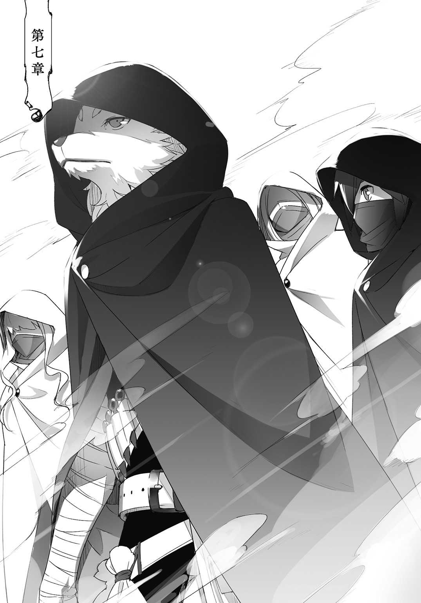
探索者ギルドは大きな建造物で、ランタンの知らない場所は多くあった。
探索受付と買取施設と医務局とギルド銀行と売店。その五カ所がランタンにとっての探索者ギルドの全てだった。探検しようと思ったこともあったが迷子になったので一度で止めた。
探索者ギルドの外観は正に戦闘要塞で、その内部も実は戦闘要塞である。巧妙に擬態されているが有事の際に敵の進行を遮断、分断、遅延、混乱させるように入り組んでいるのだ。あるいは内部蜂起を起こした探索者を封殺するためかもしれなかった。
探索者ギルドは広い。しかし探索者が立ち入りを許可されている区画はその半分に満たない。開かずの扉は幾つもあるし、武装職員が立ち入り規制する通路も幾つもある。それに一定階級以下ならばギルド職員であっても進入を禁じられている区画は探索者が横目に見ることすら許されない。
そんな不可侵区画が多く存在する探索者ギルドには誰でも自由に出入りできるのに、しかし誰にも使われることのない区画も存在する。
過去幾度もの増改築によって記憶の片隅に追いやられ、そしてついに誰からも忘れられた通路や部屋だ。
そういった部屋は幸運にもそれを見つけた人間がひっそりと私的に利用している。
「人払いの結界......？」
そこは静かな廊下だった。
「いえ、ただ訪れる人間が少ないだけです」
呟いたランタンに全身鎧の武装職員が律儀に答えた。
特徴のない鍔付き兜の内側に籠もる声は、声を潜めながらもはきはきとしている。ランタンの声よりも明るいソプラノは第二次性徴前の少年を思わせた。だが身につける鎧を構成するメリハリのある曲線が、その中身が女性であることを告げている。
この武装職員はテスの部下だと名乗った。
ランタンたちはテスや司書に会うために探索者ギルドを訪れたのだが、そのことを予見したかのように話しかけられた時は驚いてしまった。
武装職員に声を掛けられたのは、二人と会う約束など交わしていなかったから取り敢えずあの地下資料室を訪れようと考えていた矢先のことだった。
それは急なことで、叩けば埃の出るランタンは絶対に怒られるのだと疑わなかったし、リリオンはそんなランタンの苦々しい顔に不安そうな顔つきになった。
ついてきてください、と有無を言わさぬ口調もその勘違いに拍車をかけて、誤解が解けたのはつい先程のことだった。
「では私はここで。この角の先にある一番奥の部屋です」
「ありがとうございます」
「お気になさらず、人が来ないうちにお早めに」
ランタンと武装職員は頷き合って、ごく自然に二手に分かれた。
武装職員はそのまま真っ直ぐに、ランタンは廊下を一つ曲がる。武装職員が同僚に話し掛けた声が微かに聞こえた。ランタンたちから注意を逸らすための世間話をしているようだ。
入った廊下は輪をかけて静かだった。閉ざされた扉が幾つかあって、床は影が染みついたように色が暗い。足音の反響が遠くから聞こえるようだった。
武装職員はテスがどのような用事で二人を呼んだのかを語らなかった。もしかしたら知らされていなかったのかもしれないし、二人が従順にも黙ってついてきたからかもしれなかった。
だが二人とも呼ばれた理由を何となく察していた。
繫いだリリオンの手が冷たく、深く静かな呼吸の音色がいやに大きく聞こえた。
ランタンは繫いだ手を強く握ってやった。そして突き当たり扉の前でそれを離す。離しても、手の感触や温かさは残っているだろうかと考えながら。
扉にノックを二回。テスの声が返ってきて、ランタンはリリオンを振り返る。
「さ、行こうか」
「うん」
頷いたリリオンの笑みが硬く、反面にランタンは優しく微笑んで扉を開いた。
「失礼します」
「やあ、いらっしゃい。呼びつけて悪かったね。失礼はなかったかい？」
テスが気さくに声を掛けて片手を上げた。司書は部屋の隅にある椅子に腰掛けていて、優雅に脚を組み替えてヴェールごしの視線を寄越した。そしてその視線をふっと壁際に向けて、ランタンとリリオンは誘導されるようにそちらに視線を向けた。
壁際には緑の髪の黄色い瞳をした女がいた。傭兵探索者のルー・ルゥだった。
リリオンが反射的に左手を背負った大剣の柄に伸ばす。ランタンは警戒心を露わにしたが少女を制するように右手を真横に突きだした。
予想はしていたことだった。だがテスや司書に視線で理由を尋ねた。
テスは困ったような苦笑を漏らして、司書は面倒くさそうに立ち上がって手を叩いた。
「取り敢えず落ち着け。ここで暴れたら蹴り出すぞ。ったく、ただでさえ狭いんだから」
部屋は狭いという程ではなかったが、地下資料室と比較すれば兎小屋である。
部屋にはテーブルがあり、それを挟むようにソファがあって、入って右手と真正面の壁は本棚があり、左手にはティーセットや刀剣類が同じ用途の道具であるように並んでいる。
居心地は良さそうだが、五人の人間には手狭である。
ルーは右手の本棚を背にしており、ランタンとリリオンの二人を黄色い眼差しに捉えるとまず眼を伏せた。そしてゆっくりと深々と頭を下げる。まるで断頭台に首を預けるように。
ランタンもリリオンもふっと緊張を緩めた。
その気配を察したのかルーが怖々と面を上げた。ぱくぱくと唇が動き、音にならない空気の掠れが謝罪を告げているのだと気が付かせる。
「ええっと、よくわかりませんけど。......取り敢えずお話を聞かせていただけますか？ お茶菓子もありますので」
ランタンがそんなことを言うと謝意に染まったルーの瞳がぽかんとしてあどけなさを帯び、司書のヴェールが吹き出した息に大きく揺れた。
「さすがはランタン、気が利くじゃないか。では私が紅茶を淹れてやろう」
テスは大きく笑って、慣れた手つきで紅茶を淹れ始めた。
ランタンがリリオンを促してソファに座らせて司書やルーにも、どうぞというように小首を傾げた。司書はどっかと腰掛け脚を組み、ルーは遠慮がちに腰を下ろした。
ルーの両手首と足首に繫がれていない枷が嵌められている。それは奴隷首輪のように意志を縛るものなのだろうと予想された。
「テスさん、お手伝いは――」
「大丈夫だよ。しかし何故、くふ、お茶菓子を持ってるんだい？」
「はい、先日ご相談に乗っていただいたお礼にと」
ランタンはテスに一声かけてソファに座り、少し緊張している様子のリリオンに触れた。
リリオンは恥じらうような楚々とした仕草で、真向かいの司書に菓子の包みを差し出す。
「ししょさま、この前はありがとうございました」
「ああ、うん、ありがとう、......クッキーか」
「もしかしてお嫌いでしたか？」
いまいち歯切れの悪い司書にランタンが尋ねると、リリオンはしゅんとした様子で胸の前でいじいじと指をこねくり回した。長い睫毛を伏せてその隙間からちらりと司書を窺った。
「そうなんですか、ししょさま」
「いや、そうではないが。探索者から礼にクッキーなど」
「くふふ、いやあ嬉しいものだな。っと前を失礼」
テスが紅茶を用意し、司書の組んだ脚を跨いでソファの真ん中に腰を落ち着けた。司書は恥ずかしがってそっぽを向くように、肘掛けに身体を預けてテスから身を離した。
「探索者からの礼といったら、お礼参りというのが相場だからな。うむ、美味い」
リリオンはほっと胸を撫で下ろしたが、一向に手を出さない司書をおずおずと見つめる。
「ししょさまは、食べないんですか？」
「......私はこれだからな」
司書は自らの口元を覆うヴェールを指差して答える。テーブルの上にある紅茶は四つで、司書の分は用意されていなかった。
「人前で飲食はあまりな。あとでありがたく頂かせてもらうよ。この封蠟は教会のあれだろ？ 修道女が焼いているっていう。なかなかいい趣味をしているじゃないか」
「本当ですか、ししょさま？」
「本当だよ」
「うれしいです、ししょさま」
クッキーはリリオンが選んだ物だった。
生姜を練り込んだそのクッキーは口当たりがさっぱりとして甘みが抑えられている。後味にほんの僅かぴりっとした生姜の風味が感じられる大人の味のクッキーを選んだのは、きっと大人の女性への憧れからなのだろう。
ししょさまししょさまと舌足らずに何度も呼ばれた司書の戸惑いが、ヴェールを透かして伝わってきた。ルーはリリオンを穏やかに見つめて言葉を発せず、テスもそんな司書を一瞥して、だが地下資料室の時のようにからかうことはなかった。咳払いを一つ。
「さてランタン、君を襲ったのはこの女で間違いないか？」
「見た限りでは、そう思えます」
「ではルーよ、この二人と交戦した記憶はあるか？」
テスが尋ねるとルーは二人の顔をじっと見つめて、それからゆっくりと首を横に振った。
先日会った時もそうだったようにルーはやはり記憶を失っているようだった。もどかしげな吐息を漏らして、黄色の瞳が不安に翳った。
するとリリオンがランタンを揺すり、そして視線をルーの手に向けた。
「ああ、そうだ。ルーさん、手を見せてください」
ルーは両手を揃えて掌を差し出した。司書やテスもその掌を覗き込む。
「ああ、まだ残ってた。これ僕の歯形なんですけど、証拠になりませんか？」
ルーの掌には未だに治癒しきらぬ、小さな口に食い千切られた痕跡が残っていた。
「嚙んだ？」
司書が呆然としたように呟く。ヴェールごしの視線が柔らかそうなランタンの唇に注がれて、その奥にある小さく白い、真珠を削りだしたような歯に向けられた。
ランタンは脅かすようにちらりと赤い舌で歯をなぞった。
「ええ、がぶっと。でも、もう一度囓るわけにはいきませんし」
どうしましょうか、と牙を剝くように笑うとリリオンが袖を捲り上げて血管の透ける真っ白な腕をランタンに差し出した。
「わたしのこと、嚙んでもいいよ」
そんなことを言ったリリオンは本気の目をしていたのでランタンは頭を抱えた。
◇◇◇
ランタンがリリオンの腕を嚙むことはなかったし、歯形を取られることもなかった。
ただ本当にルー・ルゥの記憶が失われていることだけが、はっきりと確認された。
ルーに嵌められた枷は行動を縛るものではなく、言葉の真偽を測るものらしい。司書は多くを語らなかったが感情の揺らぎか、あるいは意識そのものを観測しているようだった。
「薬物による記憶の改竄、行動の操作。それともう一つ――」
テスがルーの喉を指差した。
「声帯機能の喪失も確認された。外科的に取り除いたわけではなく、現在のこれも薬物によってだ。テスが呼び出しを公布した後に処置されたようだ」
「つまり、僕らを襲ったのはルーさんの意志ではない、と」
「端的に言うとそうだな」
ランタンが確認するとテスは頷いた。
しかし、だから許してやって欲しい、などとテスは続けなかったし、ルーもそれを望まなかった。変な人だという印象が僅かに薄れる。
探索者にしては珍しいルーの真摯な態度は好ましかった。責任を転嫁して当然の状況だったが瞳には深い後悔があり、ランタンが気遣わしげな視線を向けると首を横に振った。
「もうしわけ、ありませ、ん。不覚を......」
掠れる声でルーはそう呟いた。不覚という単語は喉から絞り出したようだ。そこにある響きは不覚を取った己への怒り。ルーはもどかしそうに意志を発しない喉に触れた。
「ランタン」
リリオンが黙っているランタンの手に触れた。
「かいざんってよくわからないけど、......ルーさんはきっとわたしと同じだったと思うの」
リリオンはそう呟いて、ルーと同じように自分の首に触れた。
リリオンはかつてそこに巻かれた奴隷首輪の効力によりランタンの前に立ちはだかった。
自由意志を奪われて、無理やりに従わされていた。
その時のことを思い出したのか、リリオンの淡褐色の瞳がルーのことを見た。
自分と重ね合わせているのかもしれない。ランタンは一瞬そう思ったが、リリオンの瞳には憐憫も同情もなかった。そこにあるのは理解しようとする優しさだけだった。命令を強制させられることの苦しみを抱くことすら許されなかった、その気持ちを。
「だから、ランタン......ルーさんのこと許してあげて欲しい」
重ねられた手が相変わらず冷たい。
ランタンは大きく溜め息を吐き出して、リリオンはびくっと少年の顔を見た。
「そんな風に言われると、僕が狭量みたいだ。あーあ、そんな風に思われてたんだ」
ランタンは悪戯な笑みをリリオンに向けて、拗ねたように呟く。そして穏やかな視線をルーに向ける。大人びた焦茶色の瞳に映されたルーは戸惑っているようだった。
「襲ったことはお気になさらず、とは言いません。せっかく色々思えるようになったみたいですし、気が済むまで気にしてください。......ですが、まあ大変でしたね、お互い」
ランタンは微笑む。だが笑みの端に好戦的な気配が抑えきれない。
ルーに流れる探索者の血は、その笑みを受けてどうにも滾ったようだった。閉ざした唇の下で震える程に歯を食いしばっているのがわかった。
「探索者に、――いいえ、僕らに喧嘩を売ったことをきっちりと後悔させてやりたいのですが、お手伝いをお願いできますか？」
ランタンとルーは執念深い探索者らしい獰猛な笑みを浮かべて互いに笑いあった。
探索者は執念深いが、同時にさっぱりとした気質も持ち合わせていた。探索中は怒りも哀しみも、さっさと忘れて気持ちを切り換えなければならないことが多い。
一度は殺し合いをした仲であるが殺し合いは探索者の日常に過ぎない。もっともどちらかが生き残って和解するともなると珍しいことだったが、今は矛先を向ける先が別にある。
どちらともなく手を差し伸べてがっちりと握手をして、ルーはなかなかそれを手放さなかった。蛙人族特有の濡れたように冷たいぺたぺたとした肌触りはやはり不思議な感触だ。
ランタンが困っているとリリオンがルーの手をぺちんと叩いて、頰を膨らませて少年の小さな手を自らの物のように両手に包んだ。リリオンの手がはっきりと温かくなっている。
リリオンに睨まれたルーは少しだけ名残惜しげに、だが笑いながら二人を見つめた。
「それで今日ここに呼ばれた理由は、ルーさんと仲直りをするだけではないですよね？」
「ああ、もちろんそうだ。ルーの協力により敵情報が判明した」
「じゃあ、今から殺りに行きますか？」
ランタンは名案だとでも言うように手を打ち鳴らして朗らかに宣言して、司書から盛大な溜め息をもらった。
「くふふ、それはなかなか魅力的な提案だな。だがまあ聞いてからでも遅くはないだろう。探索者たる者、情報収集を疎かにしていけない。そうだろう？」
「ええ、そうですね。失礼しました」
「いやなに、男の子だものな。リリオンのことを思えば君の気持ちもわからないではない」
含み笑いにそう言われてランタンは恥ずかしさに唇を嚙んだ。思いかげず呟いてしまった物騒な言葉は、正にテスの指摘の通りだったのだろう。
温かくなったリリオンの手が、ランタンは嬉しかったのだ。
横目に見るとリリオンが、ランタンとまったく同じに唇を嚙んで恥ずかしげにしていた。
「今回の件はそれなりに大事だ。念には念を入れようじゃないか、不安が綺麗さっぱりなくなるように、徹底的に潰すために」
テスがそう告げると司書がランタンとリリオンに資料を寄越した。
「まずは射手。エイン・バラクロフという乙種探索者だ。顔に見覚えは？」
資料の一枚目にはバラクロフの人相書きがあった。
後ろに撫でつけた白金の髪に狭い額。彫りが深くて、鼻筋の通った鷲鼻と厚い唇が男を傲慢に見せている。ランタンはバラクロフの精密な射撃から神経質そうな優男を想像していたのだが、なかなか野性味のある二枚目だった。唇から頰にかけて凄味のある切り傷があった。
「さあ、ちょっと記憶がないです。でも頂戴した名簿に名前はありましたよね、たしか」
「ああ、バラクロフはここ三年程迷宮から離れて、副業に精を出している。副業は違法薬物の密売。ルーに売りつけていた張本人だ。欠乏症の症状を和らげるためとはいえ非正規売買は余り感心しないな。随分と安く扱っていたようだが、安物買いの何とやらだ」
テスが悪気もなくそう言って、ルーが肩を落として項垂れた。
「まあ医務局で処方しても魔精薬は高いからな......探索者にしてみれば生き死にの問題だから仕方あるまいよ」
司書が独り言のように呟いてルーを慰めた。
「だが混ぜ物ありありの粗悪品だとして、魔精薬の密造など個人でできるものではない。中には絵の具を溶かした色水を魔精薬だと偽って売りつける者もいるが、少なくともルーの所持していた薬はある程度欠乏症を抑えることのできる品質は保っていた」
「大がかりな組織が絡んでいると、そういうことですか？」
「うむ、バラクロフはカルレロ・ファミリーという犯罪組織に身を寄せている」
司書がページを捲ったので、ランタンもリリオンもページを捲った。ランタンは資料の文章を紐解くことができず、リリオンは話を理解しようと努力していたが九歳の女の子には少し難しいようだった。
「牛人族だわ」
資料に描かれた人相にリリオンが呟いた。
顎の四角い赤ら顔に、黒く横広の牛鼻が目を引いた。濃い褐色の短い髪に覆われた頭には黒い角が二本迫り出している。四十絡みの老けた顔をしていたが、人相の横に掛かれた年齢は三一歳となっていた。元甲種探索者。ランタンよりも階級が上の高位探索者である。
ランタンは思わずふむと鼻を鳴らした。
「記してある情報は探索者ギルド追放時のものだ」
フィデル・カルレロ。
身長は角を含めずともリリオンより巨大な二メートルに、体重はそれに見合った一六〇キロ。亜人族の場合は人族と違って肉体にも特徴があるので全身が描かれている。鎧のような筋肉を纏った巨体は燃えるような赤銅色で、下半身は太股の半ばから髪と同じ褐色の毛に覆われてその先端は蹄だった。全身図の横にはその巨体に相応しい巨大な三日月斧が描かれている。
「これが麻薬密売の元締めですか？」
意外な姿にランタンが思わず資料から視線を上げて尋ねた。
カルレロには確かに一組織の親分のような貫禄があったが、どこからどう見ても暴力にものを言わせる武闘派の雰囲気しかなかった。麻薬密売人の元締めにはとても見えない。
「カルレロ・ファミリーの元々のしのぎは傭兵稼業だ」
「傭兵、ですか？」
ランタンもリリオンもつい思わず傭兵探索者のルーを見てしまって、声を出すことのできない彼女は困ったように微笑むばかりだった。
「護衛業と言った方が適当かもしれないな。ランタンはよく襲われるから知っているだろうが、こいつらの手口は簡単だ。暴力を背景に金を巻き上げる。いわゆる恐喝や強盗だな。そしてカルレロ・ファミリーの仕事もそれに類するもの。暴力を背景とした保護だ。悪い奴から守ってやるから金を寄越せとね。もっとも毒を以て毒を制すとはいかない、保護を断れば彼らは暴力を以て金品を要求する。まあ屑の集まりだな」
テスは苛立たしげに資料を叩いた。
「カルレロ・ファミリーについて洗い直したところ構成員五十余名の内、バラクロフを含めた現役探索者の存在が七名、カルレロを含めた元探索者が四名確認された。もっとも現役の大半は名ばかりな探索者だが、置物にするにはそれで充分な効果が見込めるわけだ」
悪党が箔を付けるために探索者登録をすることは珍しい話ではない。探索者証を嵌めたからといって探索者の強さを得られるわけではないが、個人の強弱は外見からでは判別できない。それなりの強面がこれ見よがしに探索者証を装備していれば、それなりの示威効果がある。
もっとも探索者ギルドからしてみればたまったものではないのだろうが。
「傭兵稼業ですか。でもそれがどうして薬物売買に？ ルーさんへのやり口を見ると相当に手慣れているように思えますが」
「バラクロフが身を寄せてから鞍替え、いや事業拡大したようだ。違法薬物と、女衒に」
ぴんと張り詰めた空気を出したのはランタンで、それを打ち破ったのはリリオンだった。
少女は少年の腕を揺すって無邪気に尋ねる。
「ねえねえ、ランタン。ぜげんって、なに？」
「知らな――」
反射的に知らなくてよろしいとランタンは口にしようとして、しかし口籠もった。
リリオンにかかわることを、当人から取り上げるということの残酷さをふと思う。ランタンはルーの顔を見て、それからテスや司書の顔を困ったように見つめた。
どうやって告げようかと悩むように。
結局ランタンは、ちょっと耳の先を赤くした。
「――いこともないか。リリオンみたいな可愛い女の子をさらって、売ったりする仕事だよ」
二人の時はいい。でもこんなこと人前で言うのは恥ずかしい。
ランタンは照れ隠しに猫背になって俯き、リリオンは急に背筋を伸ばして視線を彷徨わせた。
テスが堪えきれないように笑っている。
「くふ、――さて奴らのやり口は古典的なものだ。元々の顧客に無理やりに薬物を売りつけ、抜け出せなくなったところで値をつり上げる。稼げるうちはカモになるし、いよいよとなったら男は使い捨ての兵隊で、女の方はランタンの言う通りさ。それに元探索者の繫がりから探索者には安くそれらを融通したようだな」
「――やっぱり今から殺りにいきましょう」
「ランタン......そんなに私を誘惑するんじゃない。こう見えて欲望には素直な質なんだ」
テスは色っぽく目を細めて、ちろりと唇を舐めた。そんなテスの太股を司書が抓った。
「馬鹿を言ってないで話を続けるぞ。カルレロ・ファミリーの方向転換は組織内部で急激な意識の転換があったというよりは、外部から別の意思が流れ込んできたとみるのが妥当だろう。しかしそれがバラクロフによってもたらされたものかは不明だ。バラクロフが持ち込んだのか、持ち込まされたのか、それともまったく無関係の存在があるのか」
司書は脚を組み替える。
「カルレロ・ファミリーに薬物を流しているのは黒い卵という犯罪結社だ。名前ぐらいは聞いたことがあるだろう？」
「いいえ」
「変な名前ね」
「......余程に育ちがいいのか」
ランタンとリリオンが揃いも揃ってきょとんとすると、司書ばかりではなくテスもルーも驚きを露わにした。黒い卵という組織の悪名はとても有名らしい。
「この国で行われる犯罪の大半にかかわっていると言われるような組織だ。国の深く、貴族とも繫がりがある悪党どもの大元締めだ」
「つまり、そこを潰すということですか？」
「それができたら苦労はしない。ランタン、きみの最終的な目的は何だ」
「......襲ってきた人たちを、――いや、リリオンに降りかかる火の粉を払うことです」
テスも司書も満足気に頷き、ルーが羨むようにリリオンを見た。
「リリオンはカルレロ・ファミリーによって狙われている。理由は不明」
「それはリリオンが可愛いからでしょう」
「その可能性は大いにあるね。だがランタン、君も狙われている。バラクロフはどうやら君にご執心のようだ」
「それはランタンが可愛いからね、きっと」
「――リリオンの言うことは無視するとして、その根拠を教えていただけますか？ 僕を狙ったのはただ邪魔だったからだけでは？」
「これまでの行動と、探索者証からの情報により。詳しくは服務規程により教えられないが、司書様が調べてくださったのだから、まず間違いない」
「ししょさま、すごい！」
リリオンが胸で祈るように手を組んでうっとりと呟いた。司書は面倒そうに無視する。
「それで心当たりは？」
「まったくないです」
ランタンはバラクロフの人相書きを再び見つめて、やはり記憶になくて小首を傾げる。
「まあ君は目立つからな、それも仕方あるまい。ともあれ私たちが狙うのはバラクロフを含むカルレロ・ファミリーだ。別の黒幕が出てこないと決まったわけではないが、これを捕らえることにより状況を詳しく知ることができる」
ちらとテスが意味深な視線を寄越した。
どうして、と湯船に浸かりながら呟いたリリオンが思い出された。
どうしてリリオンでなくてはいけないのか。
「幹部連中を可能な限り生け捕りにしたいが構成員が邪魔だ。そこでランタンに頼みがある」
「頼みだなんて、そんな。僕らが助けていただいているんですからなんでもしますよ。必要なら首に鈴巻いて、ラッパを吹きながら練り歩きましょうか？」
ランタンは悪戯に笑いながら、けれどはっきりと本気でそう言った。
「くふっ、察しがいいな。君には目立ってもらいたい」
「囮ですね」
「ああ、最初の襲撃は探索直後に行われた。性急で粗雑なやり口はランタンへの恨みの深さと、恐れだ。状況を再現すればおそらく再び襲撃はある。こちらでも襲撃を誘うような噂を広めさせてもらう」
「酷い噂ですか？」
「よくある噂さ。ギルド法を破った罰として、高難易度の迷宮送りにされたってね。それにルーも同行させる」
ルーがお願いしますと声もなく口を動かし頭を下げた。
「迷惑をかけた償いと、噂に信憑性を持たせるためでもある。喧嘩両成敗さ。それに迷宮に降りたらば攻略をせねば気が済まないのだろう？ 探索者という生き物は」
「否定はしません」
「だが、ただの囮で本気の怪我をしてしまってはいけないからね。ルーはなかなかやる、連れて行けば役に立つだろう」
「ええ、知っています。殺しきれませんでしたから」
ランタンの言葉にルーは胸に手を当てて照れたように喜んだ。
「では決定だな。さっそくでわるいが早々に攻略してもらいたい迷宮ができた」
できた、と言う言い回しにランタンは眉をぴくりと動かした。
「ある探索班が攻略に失敗してな。つい先日、探索権が返されたんだ」
探索権の自主返納とは、つまり探索に失敗したが未帰還にはならなかったということだ。
迷宮攻略に失敗し、全員が未帰還になった場合には引き上げ屋からギルドへ報告が行き、その後に探索権が強制返納となる。探索権が返納された探索途中の迷宮は、大地図に再掲載され、再び探索の権利が売りに出される。
「最下層まで探索済み、終端の魔物も確認済みだ」
探索権を自主返納する場合には、同時に迷宮の情報もギルドへ報告しなければならない。
攻略途中で投げ出された迷宮はある程度魔物が排除され、そこに至るまでの地形情報もある。こうやって終端の魔物の情報まであることは稀ではあるが、それでも迷宮の情報が充実していることは探索者にとってはありがたいことだった。
「最下層からの撤退ですか。それはそれですごいですね」
例えばあの嵐熊に背を向けることができるかと言われれば、ランタンにはなかなか恐ろしくてそんなことはできない。
「ああ、見事なものだ。全員帰還。六名中、死亡二、重傷一だがね」
「それは、立派ですね」
ランタンは言葉に詰まって、吐き出すように呟いた。リリオンはぎゅっとランタンの腕を摑み、ルーは黙禱するように目蓋を閉じた。
死亡した探索者は荷物になる。亡骸をそのまま迷宮に弔うことは珍しい話ではない。多くの場合ではそうしなければ生き残った探索者を危険に晒すことになるからだ。
だが苦楽を、まさに生死をともにした戦友をたとえ亡骸であっても地上に連れて帰りたいと思うのは人として当然のことで、連れて帰るにしろ諦めるにしろ、その決断はどちらを選択しても間違いではない。
「でも、そんな迷宮ならもう借りられているんじゃないですか？」
再掲載された迷宮は縁起が悪いと見向きもしない探索者もいるが、大抵はすぐに予約が入るほど探索者には好まれる。
それは迷宮に対する情報が充実しているからで、また失敗した探索者よりも実力が上だと喧伝するためだとか、亡くなった探索者への弔いだという考えもある。
「まだ再掲載されてないからな」
「......それって教えちゃダメなやつですよね」
「事情が事情だからな、これぐらいは平気だろう」
黙っていればな、とテスは肩を竦めた。司書は呆れているのか、それとも共犯であると諦めているのか何も言わない。
「お手数をお掛けします。それでその迷宮というのは――」
「これだ」
テスは一枚の資料を二人の前に差し出した。
◇◇◇
迷宮に潜った探索者は、まず初めにその迷宮がどれ程の脅威であるかを調査する。
何も知らない新人と、たまたま難易度評価が正しかった探索が連続した幸運な探索者を除いた、ほぼ全ての探索者がギルドから提示された難易度評価など毛ほども信用していない。
なので初回の探索は臆病なほどに周囲を警戒し、充分すぎるほどの余裕を取り、少しの危険であっても可能な限りの情報収集と精査を行う。場合によっては地上に引き返すこともある。
生きて帰ること。それは初回探索に限らずではあるが、特に攻略ではなく情報収集こそが目的である初回探索では、生きて無事に情報を持ち帰ることが最も重要な目的だった。
初回探索は疲れる。だがそれは精神的な疲労が主であり、肉体的な疲労は程々だ。
それは探索者である射手、――バラクロフも承知していることだろう。
初回探索から戻った程度の疲労状態では、襲撃を誘い出す餌にするには少し弱い。そのためにテスは再掲載迷宮を融通し、またギルド法違反による罰という体裁を偽装した。
丙種探索者六名から成る探索班を死者二名、重傷者一名を出し、撤退及び探索権の自主返納に追い込んだ迷宮は迷宮特区の〇二六番地にある。
低難易度砂漠小迷宮。
それがこの迷宮に下された当初の評価であり、再掲載された場合にも変わることのない評価だった。
迷宮は触れれば崩れそうな駱駝色の砂岩で壁を構成し、天井は触れずとも崩れそうで実際に雨漏りのような流砂を降らせている。試しにそこに目がけて石ころを投げつけると、ごっそりと天井が崩れて危うく生き埋めになるところだった。
地面は風紋の刻まれた波打つ砂地で、それは先を急ぐ探索者たちの足取りを重くする。
迷宮の難易度は地形や気候の険しさだけではなく、出現する魔物によっても変動する。魔物は迷宮の底に近付くにつれてその脅威を増す。だが探索者ギルド先遣偵察隊は一番最初に出現する魔物の強さから迷宮の難易度を推し量らなければならないので、実際の難易度との齟齬の原因となる。
この迷宮の魔物は前任者たちによって殲滅されていたが、彼らの持ち帰った情報の中にはもちろん魔物の情報を含んでいて、再出現の可能性もあるのでランタンも目を通している。
主立った魔物は大鼠の亜種である砂鼠や、砂中を泳ぎ足元から襲いかかってくる魚形の魔物ばかり。上層から中層、下層へと下っていくと魚形の魔物のサイズが小型から中型へと変わり、最後の最後に硬質な外骨格と尾に致死性の毒を有する大蠍の魔物が砂魚を伴って出現したようだが、最低等級の丙種探索者であってもそれほどの脅威にはならなかった。
前任の探索班は個々の実力は丙種なりではあるが組織立った戦闘が優れていたようだ。
だがランタン一人を負かせるほどの実力はない。
再出現があろうとも魔物は脅威にならず、地形の険しさで特筆する点は砂地の不安定さと頭上と足元に生み出される流砂の二つだけで、むしろ厄介なのは地形よりも気候である。立っているだけで汗の噴き出す灼熱の高温と、細かな粒子を巻き上げる向かい風がもっとも探索を困難にするものだ。
けれどそれも探索難易度を押し上げる要素ではなかった。
だが探索者間に広めた噂では、この迷宮は高難易度寄りの中難易度で、前任の探索班はそれなりの実力を有していたということになっている。
ギルド法に違反したランタンたちは、そんな迷宮を少人数で攻略しなければならない。そういった噂が探索者間で伝染病のように囁かれている。
四人の探索者たちはまったく見当もつかぬどこかから差し込む陽射しを遮るようにフードを被り、砂を嚙まないように口元にスカーフを巻き付けていた。
「まるでししょさまみたいね」
熱さに項垂れていたリリオンが気を紛らわせるようにそんなことを呟いた。
「......そうだねえ」
ランタンはスカーフの下でもごもごと頷き、視界に揺れる犬の尻尾からリリオンの顔へと視線を移した。目元だけが露わになったリリオンからはいつもよりも幼さを強く感じる。
それは淡褐色の瞳に宿る隠しきれない無垢な輝きと、少しの戸惑いや不安、暑気疲れが浮かんでいるからだろう。
迷宮を探索する探索者はランタンとリリオン、すっかり声を取り戻した傭兵探索者のルー・ルゥ。そしてギルド法違反者たちの行動を監視するために同行するジャック・マーカムの四名であった。
ジャックはテスの弟だった。ギルド職員の姉を持つがごく普通の乙種探索者であり、本来ならば違反者の監視をするような立場ではないし、しなければならない謂われもない。
そもそもランタンたちのギルド法違反はあくまでもテスの流した噂でしかなく、実際のランタンやリリオンの経歴には傷の一つもついていない。実際には罰せられていないのだからギルド職員が同行することはなく、ジャックは噂に真実味を持たせるためにテスに頼まれ、この灼熱の迷宮を行くこととなった被害者とも言えた。
ランタンは巻き込んでしまった事への申し訳なさを感じていたし、元来の人見知りさや同性の探索者を苦手にしている事実もあって内心ジャックのことを恐れもしていた。それがまた申し訳なさに拍車を掛け、しかしリリオンの手前、表面上は普通にしていた。
ジャックの尻尾はさらさらとした雰囲気のテスの尻尾とは違い、狐の尻尾のようにふわふわとしていて柔らかそうだった。ふわふわしているのは尻尾ばかりではない。血の濃い犬人族であるジャックは全身に毛皮を纏い、大理石模様のそれは首回りが特に豊かで灼熱の砂漠迷宮には辛そうだった。
そのためかジャックはむっつりと黙り込んで黙々と歩いている。
さらさらとふわふわの違いはあるが、歩く後ろ姿はよく似ていた。尻尾が左右に揺れていて、背筋がぴんと伸びている。身体付きはテスとそっくりでいかにも俊敏そうな細く絞り込まれた肉体を革の軽鎧に包んでいる。ただ姉弟の性差が頼もしそうな広い背中に現れていた。
「――ジャックさん」
「なんだ？」
その背中に意を決して声を掛けたが、素っ気ない返答にランタンは一瞬黙った。けれどジャックはランタンの沈黙を気にした様子もなく待っている。事の経緯を説明する時にテスがそうやって言葉を待ってくれたように。
「あの、今回はありがとうございます。その、迷宮に同行してくださって」
「ああ――」
ジャックは振り返りこそしなかったが、ランタンを気に掛けるように僅かに首を巡らせる。
「――別に、姉ちゃんに頼まれただけだから気にしなくていい。どうせ姉ちゃんが無理言ったんだろ？」
「いえそんな、無理を聞いてもらったんです。頼もしくて、優しいお姉さんですね」
「どうだか」
ジャックは苦々しく呟いたようだった。テスに懐いているリリオンは不思議そうにジャックの背中を見つめて、不満気とも思えるような視線をランタンに向けた。
ジャックはそんなリリオンには気が付かず、隣を歩くルーに顔を向ける。
「あんたも大変だったな。大げさに、そんなものまで着けられて」
「いいえ、必要な措置ですわ。わたくしの体たらくを思えば。まだ何か仕込まれているとも限りませんし、いざという時は容赦はいりません」
ルーは手首足首ばかりではなく、首にも枷を嵌められている。
それはいかにも堅固で無骨な造りをした、行動を阻害する道具だった。特に首に嵌められた枷は顎を引くことができない程に太い。奴隷首輪の姉妹品であるそれは本来、罪人に使用される刑具である。それはジャックの装備する腕輪に連動していて念じればルーの意識を容易に蹂躙する魔道具だった。
「ごめんなさい」
「......どうしてお前が謝る？」
「そのような役目を押し付けてしまって」
ランタンもリリオンもその道具に好意的な印象を抱いていなかった。意識を操られることはもちろん、意識を操ることにも。それを部外者であるジャックにさせてしまっていることも申し訳なさを加速させる。
「......お前はさ、あーなんだ」
ジャックが言葉を探して頭を搔いた。言い辛そうにした言葉をルーが笑いながら続けた。
「探索者をするには繊細ですわね。わたくしが言うのも何ですけど、迷宮に来てしまったからにはもう少し気楽に振る舞った方がよろしいかと。いざという時、命を預け損ないますわよ」
「命を預ける――」
ランタンはぽつりと呟く。
「ええ、ランタン様は単独探索者でしたから想像し辛いかもしれませんが、わたくしは傭兵探索者でしょう？ 契約交渉なんて探索班の主宰者としかしませんから、その日に初めて顔を合わせた方々と探索を行うことは当たり前。正直背中を預けるのが不安な御方もおりますけど、迷宮に来たならどうこう言っている余裕なんてありませんし、契約した時点で覚悟は決めます。ジャック様はテス様に言われたからと仰いましたけど、――ここに来た覚悟はご自分のものでしょう？」
「まあ、そうだな。ここに来たのも、腕輪を嵌めるのも。だからお前らが申し訳なく思うのは余計だし、面倒だ」
「あら冷たい言い方しますのね、うふふ」
「ったく、なんだよ」
ルーがジャックに微笑みかけ、ぽんと腕を叩いた。ジャックはフードを目深に被り直して表情を隠す。だが尻尾が落ちつかなげに揺れていて、ランタンは思わず頰が緩んだ。
「でもジャックさまはお仲間がおられますわよね？ 説得は大変でしたでしょう？」
「一月前に中迷宮を攻略したところだからな、今はまだ中休みだ。鈍った身体を鍛え直すにはちょうどいい」
「......一月」
ジャックの言葉にランタンが反応すると呆れた視線が返ってきた。一月に二つも三つも迷宮を攻略するような頭のおかしい探索者の噂話を聞いたことがあるのだろう。ランタンは曖昧に笑って視線を逸らした。
「うふふ、体調管理はしっかりとしませんとね。ちゃんと休むことも探索者の仕事ですのに」
「まあうちは休み中の行動は自由だからな。怪我したりで迷惑かけないことが前提だけど。あんたらみたいな傭兵を雇うつもりはないし」
「あら、これからはお安くしますわよ？ これも何かのご縁ですし」
ルーとジャックの会話を聞いていたリリオンがランタンの外套を引っ張った。
「ねえねえ傭兵探索者と単独探索者ってどう違うの？ どっちも探索班には入ってないんでしょう？」
「それは全くの別物、天と地ほどの差がありますわ！」
ルーがくるりと振り返って、そのまま淀みなく後ろ向きに歩き出す。驚いたような表情でリリオンのことを見て、まるで宝物でも紹介するようにランタンを指した。
「わたくしたち傭兵探索者は諸々の理由により特定の探索班には所属いたしませんが、結局はどこかの探索班と契約を結びませんことには探索をすることはかないません。地上では一人でも、迷宮ではそうはいかないのです。ですが単独探索者は違います。単独探索者、――ランタンさまはお一人で迷宮を攻略する力を持っておられる。この差は絶対に埋めることができない英雄と凡人の差に他なりませんわ」
ルーは僅かに歩調を緩めた。砂に足を取られたわけではない。ランタンとの距離を狭めて、そっと頰に触れようとした。
「ランタン様にお会いしてから、いえ、お身体に触れてから病気の調子がよろしいのです」
「人をそんな薬みたいに。ギルドでの治療が効いたんでしょう」
ランタンは僅か歩みを緩め、自然な仕草でルーの手を払って触らせなかった。ルーは寂しげな笑みを浮かべて、払われた手を胸に抱いた。素っ気ない感触を思い返すように。
「気のせいじゃないわ。ランタンといると、わたし元気になるのよ」
リリオンはルーと並ぶように前に出てランタンの顔を覗き込む。けれどルーと違って後ろ歩きが覚束ないので、ランタンはリリオンの手を取って隣を歩かせた。ルーは二人に微笑みかけて、それから前を向いて歩き出す。
「ルーさんのご病気は、本当に大丈夫なんですか？」
「はい、もともと迷宮では調子がいいんです」
「ああ、それで」
ジャックがふと納得したように頷いた。
「あんたは有名だったよな。傭兵にしちゃ安いし、どんな迷宮でも同行するって」
「ええ、さすがに迷宮に住み着くわけにはいきませんから、数をこなす必要がありましたの。結局は対処療法でしかありませんでしたけど」
「それで魔精薬を」
初めは探索者ギルド医務局や魔道ギルドからそれを処方して貰っていたらしい。だが魔精薬は高額で、傭兵探索者としての収入で薬代を賄えなくなったのは症状が進行したからに他ならなかった。そしてその噂を聞きつけたバラクロフに目を付けられることとなった。
ルーは過去にバラクロフに雇われ一緒に迷宮を探索したことがあった。けれどそれを忘れ、また思い出したのはつい最近のことである。
ルーはそれを語った時、柔和な表情を一変させて爪を嚙んだ。悔しさと、自責から。
「そいつって、どんな探索者だったんだ？」
ジャックが尋ね、ルーが答えた。
「有能な男でしたわよ。指揮者としての才覚はあったように思います。指示は教本的ですが堅実ですし、弓の腕は一級品で後列からの援護は的確で頼もしかったです。が、やや狭量で勇敢さには欠けましたわ。指示に柔軟さはなく、少しでも思い通りにならないとかっかして、何よりもまず己の命が最優先。まあ指揮者なのですから、当然の指示とも言えますけれど――」
「指揮者の器じゃないな」
ジャックは軽蔑するように吐き捨てた。
「そうなのでしょうね。その時はもうわたくし以外も傭兵で固めておりましたから。仲間に見捨てられたのか見捨てたのかはわかりませんけれど」
「傭兵の寄せ集めか。完全に赤字だな。よくやるよ」
その後すぐにバラクロフは探索から遠ざかった。金銭的な困窮も理由の一つだが、最後の探索で彼に雇われた傭兵探索者は全て未帰還となり、彼はただ一人無傷で帰還を果たした。その悪評が、多大なる侮蔑を伴って傭兵探索者の間に広まるのに時間はかからなかった。
ジャックも聞いたことがある話だったのか、何か思いだしたようにああ、あれかと呟く。
「何が、――何が目的で探索者をしていたのかしら？」
「うふふ、哲学ですわね。リリオンさま」
リリオンの疑問にルーがころころと笑った。なぜ笑うのかとリリオンは不思議がり、助けを求めるような視線をランタンに向ける。ランタンは小さく肩を竦めた。
「――自分の価値を確認したかったんじゃないの？ 知らないけど」
「くだらんな」
「一人でやってろって感じですよね」
ジャックの侮蔑にランタンが同意する。
「辛辣ですわね、男の方は。ねえリリオンさま？」
ルーは甘い口調でリリオンに語りかけ、リリオンは少し迷うような素振りを見せた。一度ランタンから視線を外し、それからもう一度ランタンの端整な横顔を見つめる。フードとスカーフに大半を隠され、唯一露出する焦茶色の眼差しは大人びていて少し冷たそうにも見える。
リリオンは恥ずかしそうに小さな声で呟いた。
「でも、そこもいいの」
◇◇◇
話には聞いていたが、実際に最下層の手前にまで辿り着くとこの迷宮の短さに驚かされる。
いくら小迷宮だろうと、魔物の出現がなかったとしても、迷宮口直下からひたすらに歩き続けて三時間と少しで最下層手前に辿り着くというのは驚くべき短さである。
それまでずっとあった煩わしい向かい風がなくなり、足元の砂地は均されたように平らになっていた。灼熱の陽射しはいつしか翳り、気温が僅かに下がった。
おそらくこれも攻略失敗の要因の一つなのだろう。ああなんだ、こんなものか。順調に進みすぎた探索は探索者たちの心に慢心を生み、彼らはそれを最下層にまで持ち込んでしまったのだ。
しかしランタンたちはもちろん慢心しない。それどころか魔精鏡で終端の魔物を確認すると、揃いも揃って苦虫を嚙み潰したように渋面を作った。
「姉ちゃん、勘弁してくれよ......」
「話が違いますわね」
「......飛んでる」
「――？ 迷宮なんだからそんなこともあるわよ」
ただ一人リリオンだけが、ごく素直な反応を見せた。気合いを入れるようにむふと鼻息を荒げる。
人知など及びもしない異空間である迷宮。ここでは地上の常識など何の役にも立たない。
リリオンはその事実をあるがままに受け入れて、生意気にも勇気づけるようにランタンの背中を叩いた。
「まあ、そうなんだけどさ」
しかしランタンは苦々しく呟く。飛行能力を有する魔物はどうしても好きになれない。
「あら、リリオンさまは大物になりますわね。おそらく探索者を逃がしたことで自己を変容させたのでしょう。失敗を繰り返さないように。たしかにそんなこともありますわ、珍しいですけれど」
前任の探索者たちからもたらされた情報の中で、終端の魔物は鰭のある蛇や首の長い鰐と形容されていた。三対六翼の翼を有して、浮遊しているなどとは一言も聞いていない。
彼らは魔精鏡を通して確認した地を這うその輪郭に、砂漠に潜む蛇や蜥蜴、あるいは蠍や百足などというような魔物を想像して最下層に突入した。
その結果が死亡二、重傷一の撤退である。
予定が僅かに狂い、探索者たちはそれを修正するべく戦闘の用意をしながら言葉を交わす。
いや探索者たちではない。ジャックとルーが慣れたように意見を交換し、ランタンとリリオンは興味深そうにそれを聞いていた。
ランタンは探索の経験こそ豊富だったが、それは単独でのことであり、単独探索は特殊な経験でしかなかった。
「まあうだうだ言っても仕方ない。まずは翼を落とすか」
「ええ、そうですわね。ですが再生能力がありますわよ？」
「逃げた探索者を追うためにあの姿になったのなら、逃げないとなったらまた別形態になるんじゃないか？」
「都合良く変化すればよいですが......」
「落とした後、再び飛ばせなければいいだけのことだろ」
「あら頼もしい」
きっとこれが普通の探索者のやり方なんだろうな、とランタンは肌に保護クリームを伸ばしながら思う。
クリームを衣服から露出した皮膚に丹精に塗り込めて、ランタンはそのひりひりするような感覚に顔を顰めた。この熱砂のまっただ中で塗ったそれは、寒さから皮膚を保護する温熱クリームだった。
リリオンはまず左脚、ショートパンツとタイツの隙間にクリームをぺたぺたと塗っている。ランタンが自分の用意を済ませたとみるやいなやリリオンは右脚を差し出した。
「ねえ――」
「それは自分でしなさい」
ランタンは白い太股から視線を逸らし、指先にクリームを掬い取った。上着の裾が短くて露わになったリリオンの腹回りは灼熱の砂漠にあって快適そうだが、これから向かう最下層では腹を冷やしかねない。ランタンは背中側からクリームを塗ってやり、首に巻いていたスカーフを腰に巻いてやった。
「リリオン、目元は避けるんだよ。目が開かなくなるから」
「うん、大丈夫」
リリオンが顔にクリームを伸ばす様子は子猫が毛繕いするように辿々しい。しかしルーがそれをするといかにも女の手入れというような色気が感じられた。リリオンがルーをじっと見ていると、ルーは面白がるように微笑む。
「耳とほっぺが、じんじんしてきたわ」
「人族は不便だな」
ずっと背を向けていたジャックが振り返り、熱っぽく頰を赤くしたリリオンを見て呟く。
ジャックのふわふわの毛皮はいかにも暖かそうで、クリームを塗る必要こそないが毛皮に付着する砂粒を暇つぶしがてらに払っていた。
そしてランタンとリリオンは靴底にスパイクを装着した。爪先の方に五ミリほどの棘が密集している。
ランタンは戦鎚の留め紐を解き、そしてリリオンは大楯を下ろして左手に握り込んだ。
そんな二人を横目にジャックとルーは魔精薬を服用していた。掌に収まる小瓶を一息で飲み干し、空のそれを砂の上に落とした。そして何をするでもない二人のことを不思議そうに見つめる。
「あら、お二人は貰っていませんの？ わたくしはテスさまからいただいたのですが」
ランタンもリリオンも揃って首を振って、それからランタンだけが納得したように頷いた。
「欠乏症って大変なんですね」
ランタンがなんとなしにそう言うと、ルーは少し寂しげな眼差しを向ける。そしておっとりとした口調の彼女にしては珍しく、むっとしたような響きを伴う声でランタンに語りかけた。
「ランタンさま、わたくしは金の亡者とも蔑まれる傭兵探索者ですが、それでも傭兵としての誇りがあります。わたくしたちは何よりも信義が大切ですのよ。これを違えてしまっては、わたくしたちは生きてはいけません。――貴方様はわたくしに、このような誇りを取り戻す機会を与えてくださった」
ルーは黄色の大きな瞳にランタンの顔を映した。まるで太陽を見上げ、視界の全てを光に染め上げるように。
「受けた恩は、何があってもお返しします。わたくしの誇りにかけて」
テスより融通された魔精薬は、傭兵探索者が依頼を遂行するためのものである。ランタンとリリオンを無傷で帰すこと。それがテスから依頼され、そして依頼されずともルーが自らに課した使命であった。
「大船に乗った気持ちでいてくださいな」
探索者らしい荒い笑みを浮かべたルーにランタンとリリオンが圧倒されていると、ジャックが呆れたように声を掛ける。
「それでなんでお前らは飲まないんだよ」
「何でって、持ってきてないですし」
「はあ？ 何でだよ」
「だって、使ったことないから。それってそんなに変ですか？」
逆に問い掛けたランタンに、ジャックははっきりと表情を歪めた。姉のテスよりも色の濃い碧眼がランタンのことを胡散臭そうに、そして気味が悪そうに見つめた。
「変だ。なんだそれ。終端の魔物とやろうってのに肉体を強化しない意味がわからない。なあ？」
ジャックはルーに同意を求めて、ルーが苦笑交じりに頷いた。そんな二人にランタンが唇を尖らせる。
「だって、それでも勝てますし、生き残ってますし。知らなかったから仕方ないじゃないですか」
ふて腐れたランタンが開き直って言い放ち、リリオンに同意を求める。するとリリオンはうんうんと素直に頷いた。
「だってランタンはとっても強いんだもの」
「......お前らおかしいぞ、絶対に」
「ランタンさまはすでに大物ですわね」
さすがに呆れた声音でルーが呟く。
「命知らずなだけだろ。......こいつらと終端の魔物に挑まんといかんのか。勘弁してくれよ」
姉ちゃん、とジャックは姉に向かって悪態を吐き、それは深呼吸のような溜め息となった。
「だがまあ仕方ない。作戦は頭に入ってるな」
「もちろん」
「わたしも！」
「お任せくださいな」
ジャックは腰から大振りのナイフを抜き、くるくると指先で回して逆手に握り込んだ。
「さあ行くぞっ！」
掛け声に合わせて探索者たちは一斉に霧の中へと飛び込んだ。真っ白い視界の中、ランタンは少女の気配に一度触れる。大丈夫だよ、と語りかけるように。
だが誰もが止まることなく霧を駆け抜けた。
霧を抜けたその先に広がるは、真っ白な氷の世界。
◇◇◇
がり、と靴底の棘が氷の大地を削った。磨りガラスを思わせる白く粉噴く氷が足元一面に広がり、その下には深い海を思わせる暗い青さが沈んでいる。もしかしたら実際に凍結した海であるのかもしれない。空間を形作る四方の壁は、襲い来る大波が凍り付いたようだ。
よくよく目を凝らしてみると波の奥深くに身動きの取れない魚影が見えた。それは遙か彼方にあって果たして本当に魚の影であるのかは判断がつかない。ただ死んでいることだけははっきりと理解できる。
灼熱の気配が幻のように消え失せて、探索者たちを襲ったのは肌を刺すような冷気。
砂漠の道中も乾燥した環境にうんざりとさせられたが、一面に広がる氷の世界もそれに負けず劣らずの乾いた世界だった。吐息が真っ白に染まる。大気にある水分の一切が凍てついていた。絶対零度の寒風が吹き荒び、それに撫でられた肌は剃刀を滑らせたように。
「痛い......」
小さく呟いたランタンの言葉が凍る。保護クリームを塗っていなければたちまち氷像になってしまうだろう。灼熱の環境を懐かしく思うほどの過酷な変化だった。
そして人の、生物の生存を許さない空間を生み出しているのは終端の魔物そのものである。
四人の探索者の視線の先、吹き荒れる冷気の中を悠々と泳ぐ異形を構成するは氷。
氷精素霊と呼ばれる意思を持った元素は、あらゆる魔物の例に漏れず探索者へと怖気の走るような殺意を向ける。探索者を逃がしたことによる学習、そして今再び目の前に現れたそれへの憎悪が作り上げた形状は龍の姿。
頭部はその全てが凶悪な顎門であり瞳は存在しない。蛇腹の胴体はうねる度に氷を軋ませ、尾の先端は放射状に膨らんでさながら戦棍のようだった。頸部の下方に葉状の鰭、背側にはそれと連動するように動く翼があり、どちらも生物的な柔らかさを帯びて羽ばたいている。
翼自体が揚力を生み出しているわけではなかったが、飾りでもなかった。翼は浮遊することを望んだ氷精素霊の意志そのものであり、それはきっともう二度と探索者を逃がさぬという決意の形だった。
「リリオン、あれ」
氷精素霊、――氷龍は一切の色を持たず透き通っている。そしてその無色透明の身体の内部に一つ、青みがかった白球を閉じ込めていた。リリオンの淡褐色の瞳が、翼と鰭の中間あたりにあるそれを見つめた。
それは氷精素霊の核。脳であり、心臓であり、魂。それこそが氷精素霊そのものだった。
「あれを、――後ろにっ！」
リリオンが呟き、叫ぶ。
ふっと風の流れが変化した。氷龍がのっそりと身を翻し、右に大きく弧を描いて龍の尾が探索者たちに迫った。その長大さゆえに緩慢と錯覚させられたが、氷上を削り氷煙を噴き上げて迫る尾を避ける余裕はない。
寒さに身体が悴む。
リリオンが一歩前に出て大楯を突き出すように構える。ジャックとルーはリリオンの背中に、ランタンは楯のすぐ内に潜り込んで一緒にそれを支えた。
高密度の氷塊は、あるいは金よりも重いかもしれない。ぶち当たった冷たい衝撃に支える二人の指先が一気に赤くなった。靴底の滑り止めが深く氷に食い込んでみしみしと音を立て、探索者たちを取り囲むように氷の破片が周囲に舞い散っていた。
大楯に直撃した氷の尾が砕けたのだ。ランタンは横目に振りきられた尾の先を見た。破断して短くなったそれの断面が、さながら瘡蓋のように白く霜付いている。霜はみるみると迫り上がって、そこに生み出されたのは戦棍ではなく大鎌の鋭さだった。
「反転！」
ランタンの声にリリオンが即座に反応する。リリオンは氷に埋まった楯の下端を力任せに引っ剝がして、切り返された尾の薙ぎ払いを再び受け止めて大きく息を吐き出した。質量を犠牲に鋭さを得た尾の直撃は先程よりも随分と軽い。
だが再び四散した氷の破片が視界を真っ白に染めている。
「回避っ！」
怒鳴ったのはジャックで、ランタンは咄嗟に反転してリリオンを肩に担ぎ上げて爆発を駆使して大きく跳躍した。ルーも同時に回避行動を取っており、それを命じたジャックが土壇場まで氷龍を引きつけていた。
探索者たちを取り囲んでいた氷の破片を丸ごと喰らうように、氷龍がその巨大な顎門を開いて真上から襲いかかってきていた。ジャックは体勢を沈めてそれを躱し顎下に潜る。そして飛び退くと同時に鰭の一枚を根元から切断した。
離れた位置にいるジャックの舌打ちが聞こえたような気がした。
氷の地面がごっそりと食い千切られ、そして氷龍はその喰らった氷によって失われた尾や鰭を復元している。
「なるほど、そういう原理か」
前任の探索者たちが持ち帰った情報は黄金ほどの価値があり、しかし不完全だ。
氷精素霊が蛇から龍に姿を変えたこともそうだが、例えば回復手段の一つをとってもそれがどのように行われたかまでは前任の探索者たちは確認していない。攻撃も、防御もその全てを見たわけではないのだ。彼らは氷精素霊を本気にさせることなく潰走する羽目になった。
「どういうこと？」
「復元するには地面とか壁とかを取り込まないといけない。つまりあの口は伊達じゃないってこと」
「じゃあ口を壊せばいいの？」
「半分正解。丸っきり元通りになるためには失った氷を補充する必要がある。口を壊しても、他の部位から氷を持ってきて再生するだけだよ」
ランタンとリリオンはすっかりと大楯の内側に身体を隠して、作戦通りにじっとしていた。
「じゃあ、じゃあどうすればいいの？」
「壊して、壊して、壊し続ける。そうすればどんどん口が小さくなるでしょ？ 小さい口だと、たくさんの氷は一度に食べられないから――見るのは僕じゃないよ」
リリオンはランタンの小さな口に視線を向け、少年は少女の尻を引っぱたく。
「ほら観察続けるよ、二人が引きつけてくれてるんだから。もったいないことしない」
「はい」
前任の探索者たちが持ち帰った情報の中で有益だったものは、動体に強い敵意を向けるというものだった。
瞳を持たない氷龍は、しかし探索者たちを何かしらの手段で確実に認識している。その一つが運動量であるらしいと、生き残った者とそうでない者の差から推測がなされた。恐慌しまさに凍り付いた者は助かり、混乱し慌てふためいた者から狙われた。
その習性を利用して終端の魔物を観察する。
普段のランタンはここまで慎重を期して戦うことはない。情報収集は身体を張って戦闘しながら行うことが当たり前で、傷と引き替えに情報を得ることも往々にしてあった。
だが今回の迷宮探索はあくまでも通過点である。いかに怪我を少なく、いや怪我の一つもなく終端の魔物を討伐して、迷宮を攻略するか。それは怪我をすることが当たり前のランタンにとっては、我がことながら冗談にしか聞こえないような試みだ。
「上手いな」
ルーはあの独特の身のこなしと、薬物の呪縛から逃れた冴えた状況判断で氷龍を翻弄している。傭兵探索者として積み重ねた戦闘経験がこれでもかというほどに発揮されていた。
傭兵探索者の役割は戦力の補充、充実にある。
彼らを雇うためにはそれ相応の給金が必要となり、言わばここぞという時に使用する切り札のようなものだった。それゆえに傭兵探索者は一つの迷宮のために雇われるのではなく、一度の探索のために雇われることが多い。
探索において最も戦力が必要となる瞬間、最下層へ赴き終端の魔物と戦う時。それが彼らの稼ぎ時だった。
ランタンも並の探索者相手ならば比べるべくもなく数多の迷宮を攻略し、その数だけ終端の魔物を討伐してきたが、それでもルーの危なげなさには舌を巻くばかりだった。
ルーの行動は極めて冷静沈着で、指先の動き一つに至るまで全てが相手の行動を引き出すためにあるようだった。そしてそれでいて攻める時には躊躇ない積極性も持ち合わせている。
頭上から叩き付けるように羽ばたかれた翼をひらりひらりと躱し、左右から薙ぎ払われる尾を踏み台にして跳び上がり、氷上五メートル付近を浮遊する氷龍の鼻先を蹴り飛ばした。
「どうやってるのかしら？」
体重を感じさせない身体の使い方は、時折物理法則に反しているように見える。
ルーは垂直どころか反っくり返る氷の壁を苦もなく駆け上がって氷龍の頭上を取った。振り下ろした手刀の一撃で翼の一つを硝子のように砕いたが、同時に再生する。
「肉体強化の延長って言ってたけど、噓っぽいね」
魔精による筋力、持久力、瞬発力など肉体の強化と同様に蛙人族の種族的特性が強化されたのだとルーは自らの能力を説明したが、こうやって終端の魔物共々観察するとやはり違和感はある。
「どうして噓を吐いたの？ もしかしてまだ――」
「言葉が悪かったね。えっとほら、僕の爆発みたいに自分で理解できてないだけかも。それにまあ探索者なら能力を秘匿したがるのもわかるよ、敵が多いから。――お、遠距離攻撃だ。重傷者を出したやつだね」
腹下に潜ると翼や鰭の叩き付け。左右、後方に移動すると尾の薙ぎ払い。眼前に身を晒せば突進で、跳躍には嚙み付きが多い。そして程良く距離を取ると。
ルーに向かった敵意をジャックが引きつけた。
氷龍は鎌首を持ち上げるように身体を立たせ、翼を広げた。翼の先端に冷気が渦巻き、それは大気が凍り付いたのかもしれない。それはつららを思わせる氷塊だった。拗くれるように先端が細くなり、羽ばたきに合わせて六つの氷塊がジャックを狙ったが、氷上を疾駆するジャックは的を絞らせなかった。
氷塊はジャックの影を突き刺すばかりで、氷龍はルーを背中に飛び乗らせてしまった。
「やるなあ」
「むう......」
ランタンが褒めると、リリオンが少し不満げな呻き声を上げた。
氷龍の背は丸みを帯びてただでさえ滑りやすそうで、そのうえルーの存在に気が付いた瞬間に大暴れをした。
痙攣するように羽ばたくと氷龍の周囲に寒風が渦巻き、だがルーはまるで気にした様子もなく背中に仁王立ちをしている。靴底が張り付いたように。そこが平地であるように。
両足を肩幅に開いて、胸を張るように背筋を伸ばし、右の拳をきりりと振りかぶった。蛙人族らしくまん丸く頰が膨らみ、ルーは大きな口を小さくすぼめて鋭く呼気を吐き出した。
白い息が銀砂を含むように輝く。
下段突き。杭打ちのような強烈な一撃が炸裂して、無色透明だった氷龍の身体が白く染まった。その白さは微細に入った罅によるもの。指先で触れるだけで砕け散ってしまうような罅が氷龍の全身に刻まれていた。
だがルーは追撃をせずに拳を打ち下ろした反動を使って氷龍から大きく距離を取るように背から飛び降りた。
氷龍の全身が打ち込まれた杭を吐き出すように隆起して尖り、危うくルーは串刺しにされかけた。杭の先端に触れた左の爪先が凍り付いている。
ルーは地面を蹴ってその氷を砕き剝がした。
「今、変だった」
「うん」
リリオンはちゃんと集中して観察している。だが我慢の限界が近いようで、身体を揺すってむずむずしている。
凍った睫毛の下で焦茶の瞳が、広がる罅の違和感を見つめていた。大きな亀裂は一つもなく、毛細血管に血が流れ来むように広がった細かな罅は、内部までは浸食していない。氷龍に入った罅はおそらく衝撃を逃がすために、あえて氷の結合を緩めたのではないかと思えた。
そしてむずがるリリオンの代わりに飛びだした三本の投擲剣を目で追う。それはジャックが放ったものだった。
探索者の膂力で放たれた投擲剣の一本は罅の入った身体に容易に食い込み、もう一本は修復されつつある杭の根元を削っただけで弾かれ、最後の一つは半端に細い杭の中腹に突き刺さった。
氷龍は丸っきり無防備にそれを受けた。
杭は自重に堪えかねるようにぽきりと折れ、氷上に落下するとばらばらに砕ける。
「動体じゃないな、――熱量か」
瞳を持たない氷精素霊は何らかの方法で動体を確認しているかと思われたが、そうではないのだ。感知していたのは運動量ではなく、それに伴う体温の上昇。
金属の投擲剣も、例えばこの大楯も絶対零度に晒されてきんきんに冷えている。背後に潜むランタンとリリオンの体温を搔き消すほどに。氷精素霊は熱量を感知しているがゆえに、これほどまでに二人を見つけられない。
もしかしたら前任の探索者たちは熱量を失った仲間を背負ったからこそ、氷精素霊から逃げ出すことができたのかもしれない。
氷龍はジャックとルーの二人を警戒してのことか、天辺近くにまで浮かび上がった。そして鯨のように悠然と旋回するが、六つの翼が苛立つように荒々しく羽ばたいていた。
氷塊が六、十二、二十四と数を増やして、点で捉えられないのならばと盛大にばらまかれる。やけくそじみた氷塊を避けることはジャックとルーの二人には容易いことだったが、しかし近付くことができなかった。氷上一面に砕けた氷が濛々と氷煙を燻らせ、その中にいる探索者の体温をすでに氷龍は知覚していないだろう。
それはまさに燻し出すための煙。天辺を泳ぐ氷龍を狙って氷煙から飛び出したらば集中攻撃が待っていた。
壁を駆け上がったルーが狙い撃ちにされて、大慌てで氷煙に逃げ帰る。途中までは迫り来る氷塊すら足場にして見事に接近したのだが、弾幕が余りに厚すぎる。
「さてリリオン、寒いのは平気？」
「わたし、大丈夫よ。暑いのより寒い方が得意だもの」
「そっか」
ランタンは大楯を握るリリオンの指を触った。ランタンの指もリリオンの指も等しく体温を失っていた。氷龍を観察するために身動きを取らなかったせいで指先どころか肉体が強張っている。
「リリオン、落ち着いて。深呼吸は......しない方がいいか」
「わかってるわ、防御優先、でしょ？」
大気が冷たくて呼吸するだけで胸が痛む。リリオンは寒さに鼻や頰を赤くして、洟を啜るように呼吸を繰り返した。ランタンはそんなリリオンの目を覆った。霜付いた睫毛を溶かしてやって、少女の冷たい淡褐色の瞳を温めてやる。
「わあ、なに？」
「そう、防御優先。ついでに僕の防御もお願いできる？」
掌を退かすとはっきりと笑った淡褐色の瞳がある。
嬉しさに声を上げることもできずに大きく頷いたリリオンの肩を頼もしく叩き、ランタンは大楯の外に飛び出すと声を張り上げた。
「僕が攻撃を全部引きつけるので、その隙に撃墜よろしくっ！」
びゅうびゅう吹く寒風と、ばりんどかんと破裂する氷塊の音の隙間を縫って声が響く。雌雄の区別も曖昧な子供の声。それは子供らしく自分勝手で、一方的で、それでいて楽しげですらある。
ランタンもリリオンと同じで、ただ観察することに飽き飽きしていたのだ。
もう我慢をする必要もない。
氷煙の中で、二つの赤い灯火が光る。
氷龍が瞳のない頭部で振り返りすらした。その瞬間に氷煙の一切を吹き消す大きな爆炎が立ち上がった。
動き続けた探索者の体温など足元にも及ばない、極寒の環境そのものに影響を及ぼすほどの高温は氷精素霊の殺意を独り占めにして、ランタンは笑った。
眼前に迫るのは無数の氷塊というよりも一つの巨大な塊である。ランタンの小軀にのみ一極集中して打ち出された氷塊は、結合して一つの氷山となった。余りにも巨大な、質量の塊。
笑ったのはランタンばかりではなかった。巨大な質量を前にするランタンの、その前に立ちはだかったリリオンは強く奥歯を嚙み締めて未成熟な犬歯を剝き出しに獰猛な笑みを浮かべる。大剣は収めたまま、大楯を左腕にしっかりと嵌めて、右腕で十字を作りそれを支えた。
「ぐううううっ！」
直撃。食いしばった歯の隙間から呻き声が響き、めりめりと氷山の中に大楯が食い込む。足元の氷は深く巨大な亀裂を生み出して海の青さすらを染み出させ、リリオンの瘦軀が氷山を完全に支えきった半秒の隙間に、ランタンは戦鎚を両手に握り込んでいた。
引き絞られる細い腰。手の甲が項に触れるほどに振りかぶる。爪先の棘に氷を嚙ませ。
「おらあっ！」
戦鎚の鶴嘴が氷面に突き刺さり、そのあまりの勢いに鎚頭全てが氷山の中にごっそりと埋まった。そして内側で炸裂した爆発は氷山を砕くに余りある衝撃と熱を生み出して、自らの力の余波を喰らったランタンは洟を啜った。
ランタンがごしごしと手の甲でそれを拭っていると、楯に隠れてリリオンも同じようにしていた。
そして氷龍は今まさに翼をもがれる瞬間だった。
ジャックの跳躍は犬人族の類希なる身体能力を存分に発揮したものだろう。この極寒の中でジャックの足元は鋼の爪が露出している。それが氷壁を捉え、狩猟者たる犬人族の瞬発力が壁を駆け上がることを可能にした。だが永遠に駆け上がることは不可能で、落下の直前にジャックは両手にナイフを構えて音もなく氷壁を蹴った。
新たに抜き放ったナイフは肉厚で、しかしそれは右のナイフの背に当てられただ支えるために使われている。
ジャックが主戦力に使用している右のナイフは大振りで柄には魔精結晶が仕込んであり、刀身には魔道式が刻み込まれていた。その魔道式に柄から魔精が流れ込み、刀身はランタンの爆炎もかくやという熱を放っていた。
それは赤熱化し氷龍の翼を音もなく融断して斬り飛ばした。腕の振りはない。ただ刀身を支え、跳躍の勢いに任せて押し切ったのだ。だがさすがの熱量も切断の際に奪われて、今は黒く冷え切っていた。
氷龍が残った翼でどうにか立て直そうとして、だがそれを許すルーではなかった。
ルーは天辺にまで一気に駆け上がり、そこから重力に任せて氷龍に襲いかかった。
まるで身投げだ、とランタンは思った。だがそんな不吉さを吹き飛ばすようにルーの身体が伸び上がる。
両腕両脚を目一杯引き伸ばした蛙の跳躍。そしてルーは氷龍に肉薄すると一度身体を丸めた。まるで力を込めるように、両肘と両膝を打ち合わせるように丸くなったかと思うと、今度は裏返るのではないかという程に背を反らした。両手を組み合わせて、尻に触れるのではないかという程に振りかぶって。
「はああああっ！」
まさしく竜骨砕きと呼ぶべき叩き付けが氷龍の身体を砕いた。
自壊し衝撃を殺すために、鼻の先から尾の先まで罅が全身に広がる。だがルーの一撃は氷龍の相殺限界を圧倒的に上回った。全身に広がった罅はついに翼の先にまで到達し、氷龍の浮遊する意志そのものを打ち砕いた。真白く罅が入った翼は形を保てず失われ、氷龍はぐちゃぐちゃに錐もみ回転して墜落する。
「待てっ」
ランタンは追撃を掛けようとするリリオンの外套を引っ摑む。
氷龍は墜落の瞬間、氷上に飛び込むように頭部を下に向けた。全身に入る罅のせいだろう、鼻先が地面に接地した瞬間に氷龍の全身は砕けたように見えた。見えたのだが、果たして、という疑念がランタンの中に湧いた。
再び濛々と立ちこめる氷煙が、まるで水面に飛び込んで飛散した泡沫のようにも見える。
そして氷龍の後を追うようにルーがその氷煙の中に両足を揃えて飛び込んだ。核を踏み砕く気なのだろう。しかしあたりに響いたのは核の砕ける音ではなくざらりとした着水音だった。
「お気を付けを――」
ルーが氷煙の中から転げるように飛びだした。緑の髪が白く凍っていて、両足の鉄靴が氷漬けにされている。そして氷煙を吸い込んでしまったのだろう痛々しさすらある声で叫んだ。
「――液化しましたわ！」
濛々たる氷煙が晴れると、しかしそこにいるのは水龍ではなくやはり氷龍だった。
衝撃を逃がす方法は二種類。自壊し罅を入れるか、あるいは液化するかだ。しかしこの絶対零度の環境下では液化し、またその状態を保つことが難しいのだろう。
氷龍は立ち上った氷煙の分だけ一回りも二回りも小さくなっていた。翼を復元することはなく、だがそれが弱体化という印象を与えないのは、より恐ろしい形になっているからだ。
氷龍、――これはもう龍ではない。
頭部は大鎌のような牙が左右に四本。核は口腔に収められて、それを狙うにはあの牙に身を晒させばならない。頸部にあった鰭は失われ、代わりに全身を覆う鋭い突起が生まれている。蛇腹だった動体は節だって扁平し、その姿は醜悪な百足のそれだった。
ランタンは掲げた戦鎚にただ爆発を巻き起こした。
氷百足は氷上を滑るように音もなくランタンに高速接近して、ランタンは当たり前に牙の内側に小軀を突っ込ませた。牙が閉じるよりもランタンは素早い。靴底に起こした爆発で加速したランタンは、その熱された爪先で氷上を踏みしめる。
溶けて、瞬時に固まる。ランタンは身体の固定をそれに任せて、氷百足の下顎を問答無用に打ち上げる。だが強烈な衝撃にもかかわらず罅が広がることがない。先程とは比べものにならないほどの耐久力。小さくなったのは質量を失ったからばかりではなく、より高密度になったからか。
氷百足はまるでランタンを避けるようにその背後に吹き飛んで、気が付けば尾の先が顔になっている。
「ランタンっ！」
その事に気が付いたリリオンが叫び声を上げる。
身体を一瞬で反転したのではなく、一瞬にして尾と頭部を作り替えたのだ。ランタンは牙が閉ざされ首に触れる寸前に身体を沈めてそれを躱し、しかし振り返って対峙する余裕はなく、その必要もなかった。
氷百足の左右からリリオンとルーが同時に牙の付け根を蹴り上げた。踏み込んだ足元で氷上に罅が入り、蹴りの衝撃で牙が砕ける。
一瞬、ランタンの背後で淡褐色と黄色の視線が不敵に混じり合った。
「やああっ！」
氷百足は襟首を引っ摑まれたように反り返って、その喉元に目がけてリリオンが大剣を抜き放つ。蹴り足をランタンのすぐ傍に踏み込んで、逆側にいるルーを牽制するような大振りが鋭く弧を描いて氷百足の喉笛を切り裂いた。
普通の魔物ならば致命傷となる鋭い一撃も氷精素霊となるとそうはいかない。何せ痛みを感じなければ、血も流さず呼吸もしない。
有効な攻撃は核を覆うその圧倒的質量を奪う、大雑把な一撃だ。
ランタンはねじ切るように靴底の凍結を外し、反転と同時に氷百足との距離を測った。一っ飛びで追いつける距離だ、と爆発一発。ランタンは放り投げられたように氷百足に肉薄すると、力任せにその頭部を打ち据えた。
罅が入り衝撃が分散された。その瞬間にランタンは戦鎚に爆発を巻き起こした。連続した衝撃を分散しきれず、喉笛に刻まれた切れ目が金属的な悲鳴を上げて断裂した。ランタンは舌打ちをこぼす。
これでもまだ砕くには足りない。異常なほどの強固さだった。
切り離した頭部は、しかし核を抱いた真の頭部ではない。
氷百足は氷上に落下した頭部を捕食しようと身を翻し、だがジャックがそれをどうにか防いだ。ジャックの熱式ナイフは氷精素霊相手に頼もしい武器であったが、しかしこの過酷な環境下では思うよう温度が上がらず、また氷を切り裂く度に熱量が奪われた。音もなく氷を融断していたナイフがぎりりと切断音を発した。
ジャックが一度体勢を立て直すために後ろに引いて、ランタンがその傍らに降り立った。
「おい、お前の爆発で融かせないのか？」
ジャックとの問い掛けにランタンは肩を竦める。
爆発には高温が伴ったがそれは一瞬のこと、氷を溶かすためには断続的に熱量を注がなければならなかった。そして熱式ナイフは魔道式に魔精を注いだだけ熱を発し続けたが、柄に仕込まれた結晶の保有する魔精は有限だ。
ジャックは四人の探索者の中で最も堅実に戦闘をこなしていた。氷精素霊の質量を削ぐために地道に氷を切り落として確実な成果を上げ、そして魔道式に魔精を無駄に注ぎ込みその熱によって氷精素霊の注意を引くことも行っていた。
視線の先ではリリオンとルーが競い合うように、そして協力し合って氷百足と戦っていた。リリオンが力任せに斬りつけて、その亀裂目がけてルーが力任せに殴りかかっている。ランタンも人のことは言えないが、あの二人も大概堅実とはほど遠い戦い方をする。
「さて、どうしましょうかね」
「そうだな――？ 一旦戻れっ！」
氷百足が二人の猛攻撃にうんざりしたかのようにとぐろを巻いた。そして四方八方に鋭い棘を突きだして女二人を慌てふためかせている。リリオンが楯を構え、ルーに先導されながらよたよたと後ろ歩きに戻ってきた。
「だいぶ削りましたが、ついに防御を固め始めましたわね」
「ああ、どう攻めるか。相当硬くなってるからな」
四人の探索者は大楯の背後に身を潜め、ランタンはリリオンの強張った首を揉んでやった。戦いに発熱して汗を搔いていた。余り長引かせると怪我はなくとも風邪を引きかねない。
「リリオン」
「大丈夫！」
氷精素霊の周囲に氷塊が生み出される。馬鹿の一つ覚えだな、とジャックが吐き捨てリリオンがそれに備えて楯を掲げる。しかし――ルーがうんざりしたように、あら、と声を漏らし、ランタンは腰のポーチを漁った。
「最悪だ、あんなのありかよ」
氷精素霊はとぐろを解いたかと思うと、自らの周囲、いや口元のすぐ傍に産みだした氷塊をばりんばりんと喰らい始めた。そしてみるみると質量を増大させる。
ランタンは氷精素霊に向かってポーチから取り出した水精結晶を放り投げた。
「おまえ、何を!?」
「だって、太らせた方が食いでがあるじゃないですか」
氷精素霊が氷塊と一緒に水精結晶を喰らった。砕けた結晶から溢れ出したのは、ランタンが風呂に使うための水だった。どうにも不味くて飲料水に向かないその水には何かしらの不純物が混じっているとランタンは信じて疑わず、たった今自分の確信が正しかったと悟った。
氷精素霊が身に纏う無色透明の強固な氷が、細かな気泡を孕んだように白く濁った。
「さあっ、これで壊したい放題だっ！」
赤く燃える瞳のランタンが弾けるように飛び出すと、まるで糸に繫がれたようにリリオンがその背を追った。ジャックがああもうっと背後で呻き声を上げ、ルーが堪えきれぬ笑い声を奏で二人は右に回り込む。
三度、変化した氷精素霊の姿は殺意そのものだった。絞首ロープのように細く捻れたかと思うと、断頭斧のようにぶ厚く扁平する。身体の至る所から大鎌の鋭さが伸び、探索者を裂こうと暴れうねった。
ジャックは魔精を使い切るように熱式ナイフを白熱させ襲いくる鎌を寸断し道を切り開き、ルーが氷精素霊の真後ろに迫った。
突き出た槍の一撃を首枷に受けて砕き、全体重を乗せた強烈な踏み込み。
「――よしっ、リリオン！」
「はいっ！」
交わす言葉はそれだけで充分だった。
リリオンは大楯を前に、突き出される氷の刀槍を破壊し全力疾走。その後ろを駆けるランタンは回り込んで襲いかかる氷の殺意から少女を守った。
そして氷精素霊に肉薄したその瞬間、リリオンとルーが同時に氷に激突した。
前任の探索者たちが潰走したのには幾つも理由がある。灼熱から極寒への急激な環境の変化、予想と違う魔物の出現、絶望的な再生復元能力。
だが最大の理由はただ一つ、それは火力の有無である。
白濁した氷精素霊の全てに罅が入り真っ白になり、そして色を失った。氷は溶けて液化し、それでも殺しきれぬ衝撃が水中を駆け巡り核が溺れるようだった。
「摑まえた！」
ランタンが氷精素霊の中に腕を突っ込み、小さな手に核を握り締める。
瞬間、核から猛烈な冷気が迸る。だがランタンの火力の前には無意味だった。
湯船が壊れるかもしれない、などというような心配のいらない問答無用の一撃。
真っ白な閃光と轟音、そして高熱と爆炎がその手の中に核ごと握り込まれる。
氷精素霊は飛沫を瀑布のように飛び散らせ、水分は一瞬にして沸騰、蒸発してあたりはきらきらと輝いた。
有無を言わさぬ熱量に晒された核は、海のような青色に染まって沈黙した。
ランタンは湯気立つそれをジャックに放り投げた。
「うわ、あっちち、おっ前――」
ランタンの熱をまともに浴びたリリオンはほっぺたを林檎みたいに真っ赤に染めて、爆炎の色を滲ませた淡褐色の瞳をランタンに向ける。
蒸気が凍り付きダイヤモンドダストの燦めきの中でどうしようもなく頰を緩めた。
「さあ、まだまだこれからだよ」
リリオンは力強く頷いて目蓋を閉じ、そして遅れてやって来た魔精の奔流に目を回してランタンにもたれ掛かった。
ランタンはリリオンを抱きかかえ、まだ終わらぬ少女の戦いに思いを馳せる。
今はただこの一時でしかない休息が永遠のものとなるように祈りながら。
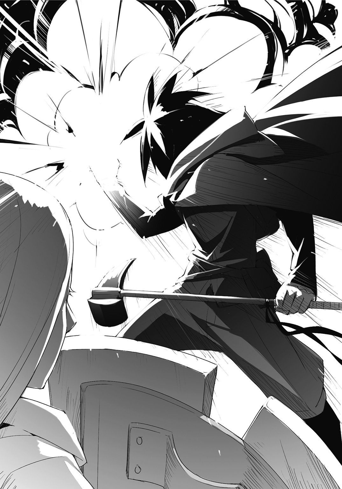
著者紹介
ｍｍ エムエム
一巻発売のどきどきも冷めやらぬままに二巻が発売されました！
ランタン、リリオンに置いて行かれないように早く進化しないと><
illustration
ｋｙｏ キョウ
富山県在住の水瓶座のＡ型で、普段ゲームしながらたまに絵を描かせていただいてます。
よろしくお願いします。
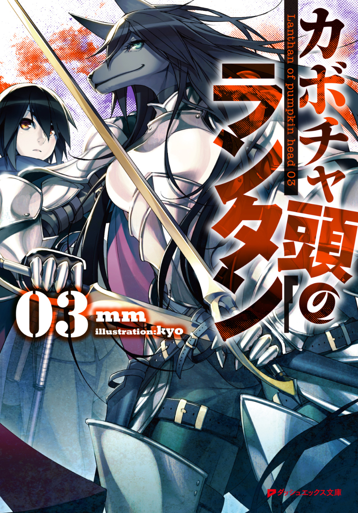
この本は縦書きでレイアウトされています。
また、ご覧になる機種により、表示の差が認められることがあります。
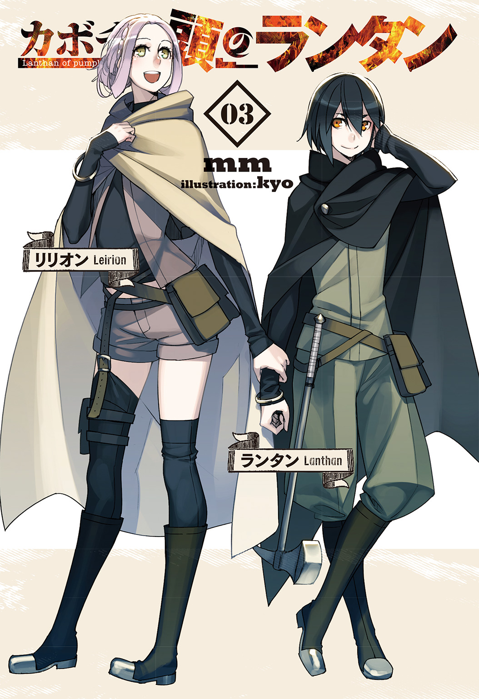
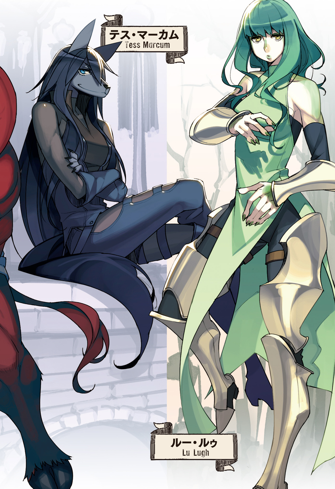
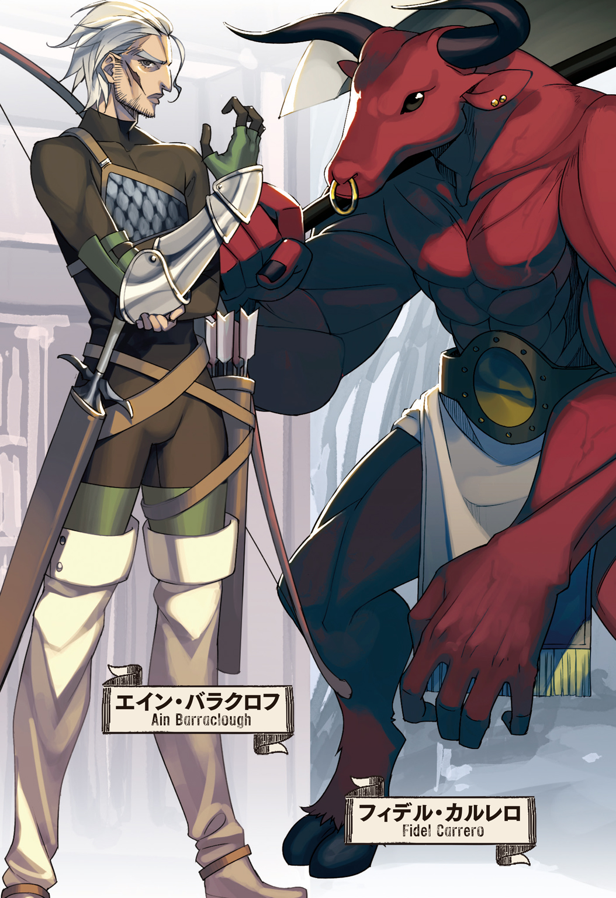
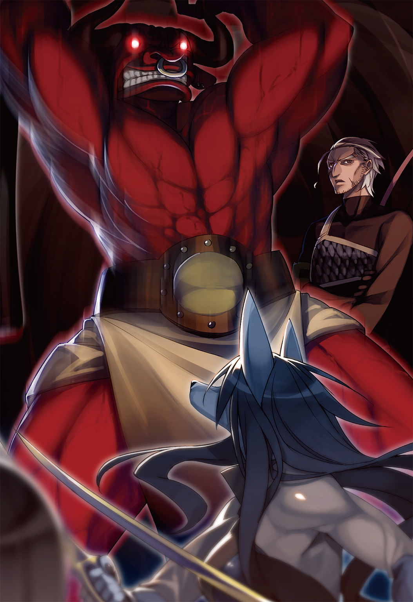
 ダッシュエックス文庫DIGITAL
ダッシュエックス文庫DIGITAL
カボチャ頭のランタン03
ｍｍ
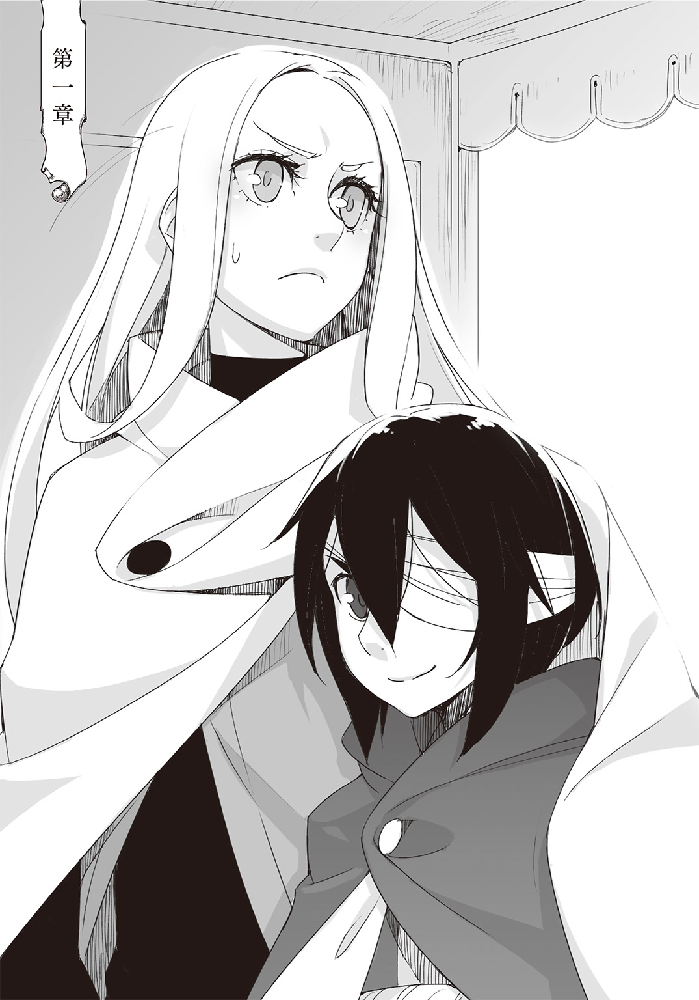
数多くの迷宮があり、その数だけ探索はある。
けれど日帰りの探索などそうあるものではない。
氷精素霊との戦いを終えたランタンたちは海を凍らせたような色合いの迷宮核を回収すると、休息もそこそこに砂漠迷宮を引き返し、その日の内に地上へと帰還を果たした。
探索者として駆け出しのリリオンはさておき、三人の探索者たちはあっと言う間に終わってしまった探索に、何かやり残したことがあるのではと無用の心配を抱いているようだった。
それは三者三様に過酷な迷宮探索に挑み続けてきたことの証である。
しかし何はともあれ地上だ。
ランタンとリリオンは、今回の探索で初めて檻式と呼ばれる方法で迷宮へと送り出され、また戻ってきた。
過去、大罪を犯した者を迷宮送りにするために、罪人を檻に入れて迷宮へと放逐したことに由来する方法だが、現在では迷宮を行き来するための基本的な方法となっている。
過去には罪人を封じるための檻も、今では軽量化のために天井も四方を囲む柵も取り払われて、ただの鉄板と化している。
それでも吊り下げ式に比べると身体の負担は少ないし、地に足が付くので安心感がある。
迷宮口から姿を現した探索者たちの姿を確認して、起重機を操るミシャが表情を硬くした。
夜明け前に出発して、陽が沈みきる前に戻ってきた。太陽は特区を囲む周壁にこそ隠されているが、ミシャの感情を目にできるほどには明るい。
ランタンはリリオンの腕に縋りながら、駆け寄ってくるミシャをフードの下から見つめた。
「ランタンさん、大丈夫っすか!?」
探索者たちは一人も欠けることなく帰還を果たした。リリオンもジャックもルーも、装備が砂にまみれている程度で怪我らしい怪我はないように見える。
だがただ一人、ランタンだけは違った。
探索はいつだって過酷だ。だから疲労も怪我も同然のことで、特に単独探索者だったランタンは終端の魔物を討伐しに迷宮へと挑むと、いつだってボロボロになって帰ってくる。
痛々しい怪我を申し訳程度に隠し、隠しきれぬ疲労を精一杯に誤魔化して笑う。
ミシャは何度もその姿を見てきた。
しかし今日のランタンは仲間がいるからか、丁寧に包帯に包まれていた。
完全に傷が隠されているからこそ、ミシャは心配の分だけ酷い怪我を想像する。疲労は青白さとなって頰に現れている。触れずとも肌の冷たさが伝わるようだった。
ミシャはランタンに駆け寄ると跪いた。ランタンを檻に繫ぎとめる落下防止ロープに、それが繫がれた少年の細い腰に手を伸ばして心配そうな眼差しで見上げる。
フードの中にある顔さえも包帯に覆われていた。左目が完全に塞がれている。そして右腕を吊っていた。リリオンが支えるようにランタンに寄り添っていて、けれどジャックやルーはランタンなどお構いなしに装備に纏わり付く砂埃を払っている。
ランタンはミシャの視線を受け止めると、疲れた顔のまま唇だけで笑った。
「大丈夫だよ」
そしてさも平然そうにけろりと言い放った。
ランタンは本当に辛い時ほど、心配させまいと笑うことをミシャは知っていた。けれどランタンの口元に浮かぶ笑みは強がりでも何でもない笑みである。ミシャは氷のように冷えたロープから手を離した。その指先が悴んで赤い。
「......その、包帯は？」
「んー、ああこれ？ これはただ巻いてるだけ。心配してくれたんだ。へえ、思ったよりも効果があるな」
「......頰が青いですが」
「攻略したせいか、それとも時間経過のせいか知らないけど迷宮が夜になっちゃったんだよ。知ってる？ 夜の砂漠って寒いの。でもそれも都合よかったのかな」
「......」
「あれ、ミシャ？ ねえ、これ外してよ」
ミシャはロープを外さぬまま立ち上がると膝の汚れをさっと払い、ランタン以外のロープを手際よく外して回った。
檻に繫がれたままのランタンは眉を八の字にして立ち竦んでいる。
ミシャは仁王立ちでランタンの前に立ちはだかる。
ああまずい、とランタンは思う。
ミシャは腕を組んでいて、怒気に胸が膨らんでいた。ランタンは所在なさげに視線を彷徨わせ、結局ミシャの爪先を見つめることにした。
「よかった、って何？」
だがその一言だけでランタンは顎を摑まれたように顔を上げる。
ミシャは真っ直ぐに引き絞った薄い唇を、ゆっくりと重々しく開いた。
「いつもはすぐに予約を入れに来るランタンさんがなかなか顔を出さないから、ようやくゆっくり休んでいるんだって私は安心してたのに、急に早朝からの予約を入れて、その日の内に迎えに来いだなんて無理言って、それもギルド経由で。挙げ句によかったってなんなんですか。私を心配させてそんなに楽しい？」
「あの、えっと」
ミシャの言い分はもっともであり、全てである。
急に決まったこの探索を成功させるために、ミシャにはずいぶんと負担を掛ける結果になってしまった。他の手が空いている引き上げ屋に仕事を頼むこともできたのだが、ランタンは他の選択肢など思いつくこともなくミシャを指名してしまった。
当たり前だがミシャはランタンの専属引き上げ屋ではない。迷宮の数だけ引き上げ屋には仕事があり、腕の良いミシャを雇用主であるアーニェが遊ばせておくような真似はしないし、探索者たちも放っておかないだろう。
「怪我している振りなんてどうしてするの！ 私は本当に心配したんだからね！」
仕事用の敬語が抜けたミシャはじっとランタンの目を見つめた。
ランタンの焦茶色の瞳がしゅんとして反省の色を浮かべる。
忙しいミシャが今回の仕事を引き受けてくれたのは、引き上げ屋と密接にかかわる探索者ギルドを経由して仕事を頼んだからという理由だけではない。
ミシャはランタンだから引き受けてくれたのだ。
「あら、流石のランタンさまも引き上げ屋の前には形無しですわね。いいですか、リリオンさま。引き上げ屋の機嫌を損なうべからず。彼らは探索者の生殺与奪の全てを握っておりますからね。安心無事に探索者として過ごしたいのなら、そのことを忘れてはいけませんわ」
ルーがランタンを教材のように指し示しながら、リリオンに探索者としての心得を説いている。ランタンを気遣う振りをして、図らずもミシャを心配させる片棒を担いだリリオンは申し訳なさそうにしながらもどうすることもできず、ただ言葉を嚙み締めるばかりだった。
「ざまあないな。これも日ごろの行いの賜だろ。反省することだな」
ジャックは皮肉げにぽつりと呟き、ランタンは日頃どれほどミシャに心配を掛けていたかに思い至って素直に頭を下げた。
「ごめんなさい」
ミシャはふっと腰を屈めて、ランタンの腰へと腕を伸ばした。
ランタンの殊勝な態度にミシャは、まったくもう、と呟くのがやっとのようだった。これで覗き込んだ顔がほくそ笑んでいたのならば雷を落とすこともできるのだが、ランタンは小癪にも、ありがとう、としおらしく呟くものだからミシャはもう怒ることができない。
ミシャは外したロープを巻きながら一歩二歩と離れる。
そんなミシャを追うようにランタンは視線を動かした。
ランタンの姿は、大人しくしていると本当に探索者には見えない。
「......まったく、もう」
ミシャは毒気が抜かれたように繰り返し、結局は許してしまうのだった。
「でも、どうしてこんな変なことしてるの、......っすか？」
「それはちょっと言えない。ごめんね。でもミシャを心配させるつもりはなかったよ」
ランタンはそれだけははっきりと言った。言葉には素っ気なさにも似た冷淡さがある。姿は探索者には見えないが、こういった冷たさは探索者にはよくあることだった。
「......危険なことは、ほどほどにしといて下さいよ」
「探索よりも危険なことなんてそんなにないよ。ねえ？」
ランタンが同意を求めるとジャックは肩を竦めて、リリオンは危険なことに想像を巡らせているのだろうか小首を傾げた。そしてルーは意味深に微笑んで、頰に手を当てる。
「うふふ、男と女の関係は、時に探索よりも危険ですわよ。ランタンさま」
「――へえ、そうなんですか？」
ランタンはまったくもって純真無垢に聞き返し、それが演技なのかどうかの区別はつかない。ルーは頰に手を当てたまま、あらあらと面白がるように微笑んだ。
不特定多数の探索者と仕事をする傭兵探索者であるルーは、交友関係の狭いランタンには思いもよらないような危険なことをしたことがあるのかもしれない。
「ほらもう。リリオンちゃんがいるんだから、その辺でお終いっすよ」
ミシャが手を叩いて、更に続けようとしたルーの言葉を止めた。
リリオンは小首どころか身体までも傾けて、ルーの言葉の意味を探ろうとしている。
「おとことおんな......？」
呟きを耳にするのと同時にランタンは素早くリリオンの脇腹を擽った。
「きゃっ。もう、なにするのっ？」
「何にもしてないよ」
「うそ、うそよ。くすぐったわ！」
「気のせいじゃない？」
リリオンは飛び退いて驚き、すっかり何を考えていたのかを忘れ去った。ランタンの外套を引っ張ったり揺らしたりして抗議をするのに夢中になっている。
「リリオンちゃん、ランタンさんは怪我人なんだからそれぐらいにして。では、私はもう時間っすから。お代はギルドから頂戴しておりますので」
ミシャは四人分のロープと檻を一纏めに片付けると、起重機に乗り込んだ。
「無理聞いてもらって悪かったね。助かったよ、ありがとう」
「ミシャさん、ありがとう！」
リリオンはランタンの外套を右手に摑んだまま、ミシャへと大きく手を振った。ミシャが笑いながら片手を上げて応える。
「リリオンちゃんも気をつけてね。あんまりランタンさんの真似しちゃダメっすよ。それでは高いところから申し訳ないっすけど、探索お疲れさまでした。先に失礼させて頂きます。では、またご贔屓に」
「うん、またね」
ミシャはランタンに頷き返し、起重機は重厚な車体をゆっくりと翻して次の現場へと去って行った。
その背中にリリオンが背伸びまでして手を振り続け、その腕にはランタンとお揃いにするように包帯が巻かれている。本当はリリオンも怪我をした振りをする予定だったのだが、ミシャに叱られるランタンを見てやめたようだ。
「さて、僕らも行きましょうか――」
ランタンは呟き、包帯が巻かれたリリオンの腕を指で弾いた。
「――手筈通りに」
「ランタンさまは、本当に悪い子ですわね」
ランタンはミシャの姿がなくなったからか、性懲りもなく再びか弱い怪我人の姿を演じた。
ランタンの演技にルーがころころと笑い、ジャックが大きく溜め息を吐いた。
リリオンは思い出したように自らの左腕を見つめて、結局ランタンを支えるように寄り添うことにしたらしい。ぴったりとランタンの横にくっついて肩を抱く。
「僕だってしたくはないですよ」
ランタンは己の肩に掛けられた少女の指先を見つめ、その肩をがっくりと落とした。
弱った獲物を狙うのが、獣の習性である。
◇◇◇
ランタンはミシャを心配させるために怪我人を演じていたわけではない。
そもそも今回の迷宮探索は、迷宮の攻略を目的としたものではなくカルレロ・ファミリーの襲撃を誘い出すための手段に過ぎない。
万全を期して迷宮を攻略し、怪我の一つも負うことがなかったのにもかかわらず、これ見よがしに包帯を巻き付けているのは、どこからかこちらを尾行偵察しているはずのカルレロ・ファミリーを油断させるためである。
負傷を装うなど囮行動としては古典的な手段なのだが、使い古される程度には効果のある手段でもある。
ランタンたちは迷宮特区をのろのろと進む。
辺りには何台もの起重機や集団の探索者たちが行き交っている。帰還した探索者の中には包帯姿のランタンなど霞んでしまうほど酷い怪我を負った者もいた。
自力で歩くことができずに迷宮資源と一緒に荷車に載せられている。
「あれ、楽そうでいいな」
「怪我人に何を言ってるんだ」
「僕も怪我人ですけど」
ランタンは言いながらも自分の振るまいが悪趣味に思えてならなかった。
狙い通りにどこかの誰かを油断させると同時に、誰かに無用の心配をさせている。
ミシャがそうであったように。
「お前のはそういう体だろ」
ジャックがうんざりしたように、仲間に付き添われて運ばれる探索者を横目に見た。装備に使われる鉄とはまた違う、生々しい金属の臭いが強烈に香った。
おそらく助からないだろう。死の臭いに、嗅覚に優れたジャックが鼻を鳴らした。
「すぐ楽になれそうですけれどね」
それは皮肉でも何でもなく、紛れもない事実であり、珍しくもないことだった。
「ねえ、わたし、ランタンのことおんぶしてあげようか？」
「大丈夫だよ、そこまでしなくても」
リリオンが荷車の行く末に視線をやりながら言った。
本物の怪我人とランタンを重ねてしまったのだろう。リリオンはいっそうランタンの身体を抱き寄せる。足が絡みそうなほどに。
「歩きづらいよ」
「はん、怪我人なんだろ？ 我慢しろよ」
「ええ、なかなかの演技ですわ。――視線、いくつかありますわね」
「目立っちゃいるが、どうだろうな。お前を狙っている連中もいるんだろうが、流石にこれが全部ってことはないだろ。にしても、お前嫌われてるなあ」
ジャックが他人事のようにしみじみと呟いた。
好かれていないことは自覚しているし、敵が多いことも現在の立場上、再認識せざるを得ない。だがはっきりと他人の口から言われると、流石のランタンも少しだけ傷つく。
ランタンは何も言わず小さく唇を尖らせた。
「愛されておりますのよ」
ルーの慰めに、それもそれで嫌だな、とランタンは思う。
「でもこれほど熱烈ですと、宿に辿り着くまでに襲われてしまうかもしれませんわね」
「わたしが守るから平気よ！」
「あら、それは心強い」
リリオンはランタンの肩を撫でさすりながら、ぐるると幼犬のように唸って辺りを警戒した。けれど迷宮特区を抜けて上街に入れば、その警戒も無用だろう。
街中で大規模な襲撃はない。強請や恐喝などの小遣い稼ぎとは訳が違うのだ。武装集団が剣呑な気配を帯びたならば、騎士や衛士が黙ってはいない。
「けれど暗殺者でも雇われると面倒ですわよ」
「そっちの警戒はテスさんがしてくれているらしいので」
「姉ちゃんが」
「あらそうですか。......敵に回して一番厄介なのは、やはり探索者ギルドのようですわ」
ルーが顎に手を当てて、低い声で言う。
「厄介、ですか」
「ええ、おそらく暗殺者ギルドに手を回しているのでしょう」
「......暗殺者にもギルドがありますか」
「有名な話ですわよ。もっともどうやって接触するかは知りませんけれど、暗殺者は職人ですからね。組合ぐらいはありますわよ。――ああ、そう言えば彼らに接触する有名な方法が一つありますわね」
「どうやるんですか？」
怖々とリリオンが尋ねた。
「簡単ですわよ。モグリの仕事を行えばよろしいのです。そうすれば所場荒らしの制裁に、彼らは現れますわ」
怖がらせようとする気満々にルーは小さく囁いた。リリオンはぞぞっと震えて、辺りをきょろきょろと見渡しておっかなびっくり首を竦める。
「リリオンは暗殺してないでしょ、誰も」
「......あ！ そうね」
はっとして顔を上げ、リリオンはほっと胸を撫で下ろした。
「大丈夫かよ、お前ら」
「頼もしいじゃないですか、気負いがなくて。リリオンさま、その調子でランタンさまをよろしく頼みますわ。では、わたくしたちは行きましょうか」
「ああ、そうだな。尾行は二人組が二つ。一つは俺らがもらってく。情報は持って帰らせないと意味がないから喧嘩ふっかけるなよ」
「承知してます。ここまで来てそんなことはしないですよ」
「あと寄り道せずさっさと宿に行け。さすがに宿に火を付けるような真似はせんと思うが用心はしとけよ」
ジャックはランタンの鼻先に指を突きつけて睨むような目付きで言う。つっけんどんな物言いだが、ずいぶんと心配してくれているようだった。
「ええ。それでは、お世話かけました」
「まったくだよ。――しかし初対面の奴に迷宮核を預けるか？ あんたならどうするよ」
「......そのようなことを聞かないでくださいませ。傭兵探索者はそのように貴重で、高価で、持ち運びやすく、換金しやすい物を預けてもらえませんわよ」
上街の大きな辻の一つで二手に分かれる。
ランタンたちはギルドの用意した宿に向かい、ジャックたちは攻略報告のために探索者ギルドへと向かうことになっている。
これも戦力の分散、ジャックたちとの関係性の稀薄さを装うための行動である。
複数の探索班が合同で探索を行った場合には両者が余程に親密な関係性を築いていない限り、どちらか片方に迷宮資源を預けるなどということはしない。迷宮資源は命を賭して得た莫大な財産だからだ。持ち逃げでもされたら堪ったものではない。
だがジャックは実際に氷精素霊の迷宮核を所有しており、攻略報告もそれに付随する換金も実行することになっている。
「お二人とも信用してますから」
「あら、うれしい」
「それじゃあ作戦的にダメなんじゃないか？」
「......相手方もそこまで深く考えないでしょう」
「お前なあ......。あ、もしかして報告が面倒だから押しつけたんじゃないだろうな」
ランタンは素知らぬ顔で視線を逸らしリリオンの顔を見上げた。
リリオンは淡褐色の瞳を細めて無邪気に笑った。
「ランタン、攻略報告はめんどうだって言ってたものね」
「さてと行こうか。ではよろしくお願いしますね。ご一緒に攻略報告できないのが残念です。ああ残念だなあ」
ランタンはジャックの悪態を背に受けて、そそくさとその場を後にした。
きっと見張りの者たちからは仲違いしたように見えただろう。
◇◇◇
後を付けてくる者たちの気配をあえて探ろうとは思わなかった。ランタンはジャックたちほど器用ではない。それは人族と亜人族の種族的な差でもあるし、経験の差でもある。
気配を探ろうと思えば、きっと尾行者にそれを勘づかせてしまうだろう。
この尾行者は、以前後を付けてきた二人組とは実力が違う。前の二人組は探ろうとせずとも存在を察知できたが、この尾行者はどこにいるのかまったく判らなかった。殺意や敵意の無さも、察知できない理由の一つだ。
ジャックたちと別れてからほどなく、リリオンはランタンの肩を抱き寄せて外套の内側に招き入れた。そこには少女の体温と匂いが籠もっている。
二人の様子は身長差のせいでよく似合っていた。
そしてリリオンは周囲を警戒する。尾行者に向けられたものではなく、四方八方へと無作為に向けられた警戒心は人にまだ馴れない幼獣のそれだ。
ランタンには微笑ましく思えるが、警戒心に染まった淡褐色の瞳はそれなりの迫力がある。
宿泊予定の宿にランタンを引き込む様子などはやり手の女探索者に見えなくもない。
「流石に中までは入ってこないはず。もういいよ」
「ダメよ。念には念を入れないと」
ランタンが外套から出ようとするとリリオンは巧みにそれを許さなかった。
ランタンは恥ずかしさからフードを目深に被り直し、宿の廊下で宿泊客とすれ違わないことを祈りながら受付を済ませた。
宿はギルドが用意してくれたものだ。
ランタンが迷宮攻略後に宿泊して違和感のない高級宿なので、一泊になかなかの値段がする。探索者も多く宿泊しているが、その割に客層が良いのはやや女々しい造りをしているからだろう。淡い象牙色の壁をした廊下には花が生けてあった。
厳つい男の探索者が宿泊するには、普段使わない胆力を必要としそうだ。
リリオンが精緻な彫刻のある真白い扉を押し開くと、ランタンは少女から逃げ出すように部屋の中へと飛び込んだ。
右腕を吊る丁字帯を解き、頭部の包帯を外した。露わになった左目が光に慣れるまで一秒かかり、焦点を取り戻すのに更に一秒かかった。その間にリリオンの手が未練がましく伸びてきて、ランタンは素っ気なくそれを躱した。
「ああん、ランタン」
「もう念を入れることなんてないでしょ？ 誰も見ちゃいないんだから」
「だからこそよ！」
「もう、なにそれ？」
ランタンは呆れた様子だったがリリオンは真剣だった。手を伸ばしてランタンの外套をひっしと摑んで後を付いてくる。
「――仲睦まじくて結構だが、気を抜くのが少し早いな」
ランタンが備え付けの魔道光源に光を入れると、部屋に入って真正面にあるソファにテスが座っていた。背もたれに腕を回して振り返り、驚くランタンに笑いかけた。
「テスさん！」
「やあ、おかえり」
リリオンが声を上げて、ランタンの背中を抱きつくように押しながら慌しい足取りでテスに駆け寄る。
ランタンは別れ際に話した暗殺者のことを思い出していた。果たしてこのテス・マーカムは本物だろうか。暗殺者ならば変装ぐらいは容易に行うのではないだろうか、と。
けれどそんなランタンの危惧を余所に、リリオンは突然の出迎えに喜んでいる。ランタンを後ろから抱きしめて左右にゆらゆらと身体を揺らしていた。
リリオンを見るテスの視線が優しくて、ランタンは沸き上がった警戒心を緩める。
「ただいま戻りました。ええっと、まず、ちょっと着替えてもいいですか？ 砂塗れなので」
「ああ、構わないよ」
ランタンはその場で脱ぎ始めようとしたリリオンの尻を叩いて脱衣所へ向かった。
装備を外し、外套を脱いで叩くと細かな砂がぱらぱらと零れる。ランタンは自分の髪を乱暴に搔き回して、それから解いたリリオンの髪を優しく揺らして、櫛で梳かしてやった。髪に絡んでいる砂粒が、砂金を撒いたように足元に散らばった。
「髪の毛ぱさぱさだ」
「――こっちのお部屋は？ わあ、すごい！」
脱衣所の向こう側を覗いたリリオンが声を上げると、甘い声が反響した。
「それはまたのお楽しみ。ほらほらテスさん待たしてるんだから」
ランタンはリリオンの顔を濡らしたタオルで拭ってやると、再び尻を叩いた。リリオンは叩かれた勢いのままにぴゅっとテスの元へと駆けてゆく。
「テスさん！ 今日はどうしたんですか？」
「探索を終えたばかりなのに元気だね、怪我もなさそうで何よりだ。うちで用意した部屋に問題があったら面目が立たないから確認をね、しに来たんだ」
「お手数をお掛けして申し訳ないです」
「問題なし。でも、迷宮食は余ってるか？ 宿の食事は避けて自前のものを食べてくれ。あとカーテンは開けないように。窓側のベッドの使用も禁止。ノックも無視していい。それと、まあ、なんだ。――弟は、ジャックは迷惑を掛けなかったか？」
テスは言い淀んだかと思うと、何だか決まりが悪そうにそう言った。ランタンが思わず笑みを浮かべて向かい側に腰を下ろすと、テスは困ったように頰を搔いた。
「迷惑だなんて。ジャックさんにはずいぶんと助けて頂きました。ねえ、リリオン？」
「うん！」
「そうか。うん、それならいいんだ」
テスはほっとしたように何度も頷いた。
ジャックほどの実力ならばそうそう心配など要らないとは思うのだが、家族とはそういうものらしい。ランタンはぶつくさ文句を言っては仏頂面をしていたジャックを思い出した。あれもまた愛情表現の一つなのだろう。
ランタンが一人納得したように頷いていると、テスの隣に座っていたリリオンがランタンの隣に移動してきた。寄り添って、甘えるように腕を絡める。
「じゃあ二人揃ったところで明日の話をしようか。君たちが探索をしている間に下準備は充分に整った」
探索も下準備の一つだ。
ランタンとリリオンを付け狙うカルレロ・ファミリーを壊滅させるための。
「ファミリーの構成員全てに招集命令が出たのを確認した。それに金と薬物で集められるだけ戦力を集めているようだ、今この時も。店仕舞いが近いのを察しているのかね。なかなかの大盤振る舞いさ。是が非でも君を仕留めたいようだ」
「薬中どもの寄せ集めなんて敵じゃないですよ」
「もっともだな。まあ時間稼ぎの捨て駒だろうね」
ルーからもたらされた情報の中に興味深いものがあった。
ファミリーに薬物を卸す組織との取引はエイン・バラクロフが行う。それは月の決まった日であり、決まった時間であり、決まった場所で行われる。
明日の正午。場所は下街の廃倉庫街。
そこがカルレロ・ファミリーが根城にしている彼らの本拠地である。
ルーの記憶は曖昧であったし、消去、改竄された情報は魔道によって精査されたが完璧とは言えない。だが有益な情報であり、ランタンたちはその情報に則って作戦を組み立てた。
小胆でありながら自尊心が強いバラクロフの性格上、弱ったランタンを狙わずにはいられない。だが取引自体も中止することはできない。そして逃げ出すこともできない。
明日を狙い撃ちにしたのはバラクロフの居場所を確定させるためであり、また彼らの取引相手も可能ならば捕らえるためである。襲撃を誘うのは、本拠地待機組と襲撃組の二つに戦力を分散させるためである。
「でも薬中なら上街も下街も関係なく襲ってきますかね？」
思考能力の低下した薬物中毒者など恐るるに足らないが、しかし彼らはそれゆえに無茶なことを平気でする。
「いや、それはないと思う。大勢の中毒者がぞろぞろと街中に入ろうとしても衛士隊が許さないだろうし、よしんば入れたとしても殺しはさておき、人攫いはなかなか難しいからね。流石に目立ち過ぎるし――」
テスはリリオンを安心させるように微笑んだ。
ランタンの小軀ならば容易く袋詰めにできそうだが、リリオンの長身となるとそうもいかない。長い手足は折りたたんだってそれなりの大きさだ。
「――そんなことを許しはしないだろう？」
「ええ、勿論」
「うん、雑魚の相手では準備運動にもならないだろうが、奴らの本拠地ではそれなりの手練れが相手だ」
「蠍人族と蜥蜴人族の探索者でしたよね。襲撃には参加してこない――ですよね」
「ない。バラクロフの護衛のようなものだからね。魔精薬で存分に強化してあるらしい」
「平気です！ わたしも頑張ります！」
うんざりと吐き捨てたテスだが、リリオンがやる気に満ちた声を上げると呵々と笑った。
「くふふ、雑魚を斬ってもつまらんからな。ある程度、手応えがあった方がいいか。しかし、どうにもカルレロの姿だけが確認できないんだ。もしカルレロが不在だったらどちらか一人を譲っておくれ」
「一人と言わず二人ともお譲りしますよ」
うずうずとした剣気を発するテスにランタンが肩を竦めながら呟いた。
「おや、二人だけか？」
「バラクロフは僕がぶちのめしますので。横取りしないで下さい」
テスは目を丸くしたかと思うと、さも楽しそうに大笑いした。眦の涙を拭い立ち上がる。
「ああ、可笑しい。さて笑い疲れないうちに私はもう帰ろうかね」
立ち上がって見送ろうとした二人の頭をテスは撫でる。
「宿の周囲に部下を放っているから、安心してお休み。放火の心配とかは要らないからね」
「それ、ジャックさんも言ってましたよ」
「くふふ。なんたって仲良し姉弟だからな。もっともこの宿に限って言えば火事の心配はいらないだろうけど」
テスがそう太鼓判を押す宿は、その名を水面の満月亭と言う。
ランタンはなるほどと頷いた。
「ではまた明日」
背を向けたままテスは優雅な仕草で手を振った。
リリオンはソファの上に膝立ちになり、頼もしい背中にうっとりと溜め息を漏らした。
◇◇◇
水面の満月亭の最上階を丸ごと占める一室には泳げるほど大きな風呂場がある。
浴槽は巨大な一個の大理石をくり抜いて造った逸品で、湯は天然の水精結晶と火精結晶を惜しげもなく使用した掛け流し。
そして宿泊客が何よりも楽しみにするのは硝子張りの天井から望む夜空であり、水面に反射する星々である。星を映した湯に浸かる贅沢は、噂に寄れば夜空を自由に飛び回るほどの夢心地であるとかないとか。
満月の日の予約は向こう十年埋まっているらしい。
ランタンとリリオンはそれなりの大きさの風呂に二人揃って肩まで浸かりながら、向かい合う二人の間に落ちる魔道光源の光を見つめた。
それは月に見立てられたものなのか、青白く丸い。
贅をこらした最上階以外の浴室はこんなものだ。比べてしまえば侘しいが、決して悪いものではない。
「風情があるのか、ないのか......」
ランタンは水面の偽月を掬うように、両手に湯を溜めて顔を洗った。
風情があろうとなかろうと風呂はやはり気持ち良い。
砂漠迷宮の砂汚れを洗い流し、芯にこびりついた氷精素霊の冷気を溶かし、そしてテスが帰ってからも薄皮のように張り付いたままの警戒心が剝がれていくようだった。
ランタンが湯船の縁に首を預けて熱っぽい溜め息を吐き出すと、大人しくしていたリリオンがそろそろと近付いてきた。水面に反射するランタンの顔を両手に掬って、じゃぶじゃぶと顔を洗った。
「ランタン」
「ん？」
「......どこか調子悪いの？」
リリオンは心配そうに尋ねた。その言葉にランタンは首を捻る。
ランタンは探索者だ。それもそれなりに有能な。だから自分の身体のことは良く理解しているつもりだった。
探索中の自己の体調管理は一歩間違えれば死を招く。
探索を続けるべきか否かの判断は勿論のこと、戦闘中にどの程度の怪我までならば負っても大丈夫か、怪我やそれに伴う出血により、どの程度戦闘能力が低下するか。あるいは死ぬことはないか、とランタンは自分の身体といつも向き合ってきた。
体調は万全に近い。怪我らしい怪我はなく、温かな湯に解されて疲労の回復も順調である。
強いて言えば、左手の指先の霜焼けと思われる痒みが少し気になるぐらいだろうか。
「そんなことはないと思うけど、調子悪そうに見える？」
リリオンは頷いた。確信があるようにはっきりと。
「どこが？」
「だってランタン、お風呂好きなのに――」
リリオンは身を乗り出すように顔を近付ける。四つん這いに近寄ってきて、投げ出されたランタンの太股をむんずと鷲摑みにした。
細い指先が内股に食い込んでランタンは眉を顰めた。
太股にかかる体重の軽さは水の浮力をさっ引いてもずいぶんと軽い。体重を掛け過ぎないようにと遠慮をされているのだ。
「くすぐったいよ」
「――笑ってないわ」
「......これでどう？」
「だめ」
ランタンは指で口角を吊り上げたが、リリオンは一言言って頰を膨らませた。
「ああそう」
自らの頰を弾くように指を外し、ランタンは顎まで湯に沈んだ。
その様をリリオンがじっと見つめる。
観察されているランタンは淡褐色の瞳に自分の表情を映し、それが確かに少女を心配させるような仏頂面であることにようやく気が付いた。そしてやっと笑った。右の口角だけが皮肉げに吊り上がった。
「痛いよ」
リリオンがランタンの太股に爪を立てた。そして素っ気ないランタンの興味を惹こうとするように、何度も揺すった。股関節の近くに引っ掛けられた人差し指が恥ずかしい。
ランタンはリリオンの手を取って自らの方へと引き寄せる。
リリオンはそのまま抱きしめてほしそうにしたが、ランタンは一瞬の逡巡の末に自らの隣へと導く。下街のあの浴室の小さな湯船ならば、少女の裸身を胸に抱きしめただろうか。
リリオンはランタンの手を取って指を絡めた。
「わたし、何かした？ わたし、何か失敗した......？」
リリオンは口元まで手を引き寄せて、もう片方の手を縋るように添えた。
言葉が僅かに震えていた。
芯まで温められた指が悴むように強張っている。
「違うよ」
ランタンは強い口調でリリオンに告げた。
外気に触れて湯気の立つ手を再び沈めて、手を離した。
ランタンは立ち上がった。身体は濡れた黄金のように艶やかで、軽やかな足取りで湯船の縁を跨いで湯から上がった。濡れた髪を搔き上げて、立ち上がる湯気を払うように鎖骨に溜まった水滴を払った。
「探索は完璧だった。ほら、怪我の一つもない。僕も、リリオンも」
ランタンが見上げるリリオンの顔を指差すと、リリオンは慌てて立ち上がった。ランタンの身体が黄金ならば、リリオンの身体は白金だった。色素の薄い身体に整脈の緑が絡みつくように浮いている。
リリオンは言葉もなく何度も頷く。そして怪我のない身体をランタンに見せつけるように両腕を広げた。
二人とも迷宮攻略当日とは思えないほど綺麗な身体だった。
失敗など何もなかった。
もう幾度も見た少女の裸体であるがランタンは咄嗟に背を向ける。
そのまま浴室を後にすると、リリオンが慌てて追いかけてきた。ランタンは振り返ったかと思うと大きなバスタオルで少女の身体を抱きしめ包んでやった。
乾いたタオルがみるみると水分を吸って少女の身体に張り付いた。
おうとつのなだらかな身体の、柔らかな輪郭がはっきりと浮き出る。
「濡れたままだと風邪引くからね。ほら、あとは自分でやって」
「うん」
二人揃っていそいそと身体を拭くが、リリオンは身長と髪の長さの分だけ手間取っている。ランタンは下着を身に付けるとリリオンの背中と髪を拭いてやった。
「ありがとう、ランタン」
「ああ、うん。ねえ、――僕さあ、本当に調子悪そうに見えた？」
「......うん」
「本当に？ よし、まあこんなもんだろ」
もし調子が悪そうに見えたのならば、その原因が自分にあるとは思わないだろう。
ランタンはリリオンの髪をタオルで包み、裸の肩に寝衣を掛けた。リリオンは寝衣の前を合わせながら、そろりとランタンを振り返った。そしておずおずと口を開いた。
「本当はね、不機嫌そうに見えた」
「そっか、......不機嫌か」
ランタンはばつが悪そうに顔を顰めて、まだ乾ききらない頭を搔いた。
不機嫌そうか、とランタンは再び口の中で転がしながら、なぜそう見えたのか考えた。
湿気の籠もる脱衣所から出て、ランタンはリリオンの手を引いてベッドに座らせた。
「別に不機嫌ではないんだけど、どうしようね」
リリオンは、自分こそが不機嫌の理由なのだと感じてしまったようだった。そんなことはない、と伝えるようにランタンは困った笑顔を向けた。
「そうなの？」
水筒から二つのコップに水を注いで、その内の一つをリリオンに渡した。ランタンは唇を湿らせながら少女の隣に腰を下ろす。しっかりと温まった身体に冷たい水が心地良い。
「そうだよ。さっきも言ったけど探索は完璧だった。ほら、リリオンの初めての探索の後はすぐにお風呂には入れなかったでしょ？ あの時は怪我したから」
何気なく言った言葉にリリオンの表情が硬くなった。両手に支えたコップの中味を覗き込むように項垂れた。
「わたしが弱かったから。ランタンが怪我した」
独り言のように呟く。
「今回はジャックさんと、ルーさんがいたから」
リリオンは喉から迸りそうになる叫びを呑み込むように、一息に水を飲み込んだ。ぎゅっと目を瞑って天井を仰ぎ、血管の這う首筋が大きく上下した。
リリオンは自分に自信が持てない。
よく笑う天真爛漫な少女には、けれど深い傷が刻まれている。
今回の探索の成功はルーやジャック、そしてランタンのおかげであり、以前の探索でランタンが怪我をしたのは自分の力が足らなかったからだと思い込んでいる。
「半分正解だけど、半分は不正解。もう百万回ぐらい言ったと思うけど、僕が怪我をするのはいつものことなんだって」
「百万回も聞いてないよ」
「......たくさん言ったってことだよ。右から左に抜けていくのかと思ったけど、ちゃんと聞いてるね。それで今回、僕が怪我しなかったのは確かにジャックさんとルーさんの力は大きいけど、リリオンだって僕のこと守ってくれたでしょう？」
リリオンの大楯に抱かれなければランタンは氷精素霊をあれほどつぶさに観察することはできなかっただろうし、もしリリオンがいなければ戦闘をこなしながら勝機を見つけなければならなかった。
ランタンにとってそれはつまり負傷を覚悟することに等しい。ランタンは痛みと引き替えに敵を知るのだ。
「それに前回と今回の探索の最大の差は終端の魔物だよ。前の熊に比べて、今日の氷の怪物はどうだった？」
「熊と......」
リリオンは片手を頰に当て、上目遣いに嵐熊を思い出そうとした。そして魔道光源の光に目を細めたかと思うと、ぶるっと身体を震わせた。
「弱かった、のかしら？」
リリオンは一瞬言葉に迷い、ランタンの顔色を窺いながら答えた。
ランタンが頷くと、あからさまにほっと胸を撫で下ろした。
氷精素霊の純粋な戦闘能力は、おそらく嵐熊よりも格下である。物理攻撃の無効化や、最下層の気候を支配する影響力、氷弾による大規模な範囲攻撃などは確かに厄介な能力ではあるのだが、それでも嵐熊には届かないだろう。
「熊よりも怖くなかった、でもいいんだよ？」
戦いにおいて大事な要素に相性がある。
氷精素霊の物理攻撃耐性は優れたものだが、ランタンの爆発能力を耐えるには少しばかり足らなかった。氷を溶かす熱と、衝撃力を兼ね備えた爆発は氷精素霊にとっては天敵に近しいものだろう。難を言えば熱の持続時間が瞬間的なことぐらいだろうか。
「わたし、怖くなかったって百万回くらい言ったわ！」
「百万回も聞いてない――ってまあいいか。そんなこんなで、今回怪我しなかったのはそこも大きいよ。あの二人がいなくても、リリオンの大楯は氷精素霊の攻撃を通さなかったし。今日よりも多少無理をすれば、僕一人でも物理耐性を上回れただろうし」
「そっかあ、ランタンはすごいね」
「どうしてそこに......まあ、あんまり長引くのは勘弁だけど。寒いから」
「ランタンは、寒いの嫌い？」
「ほどほどならいいけどね。今回みたいにびゅーびゅー冷たい風が吹くのは嫌だな。リリオンは平気そうだったね」
「あれくらいなら我慢できるよ。んふふ、わたしが温めてあげようか」
リリオンはそう言ってぱっと立ち上がるとランタンの手からもコップを奪い、それをサイドテーブルに置いた。
「風呂入ったばかりで温めるも何も」
ランタンの言葉を遮るように、リリオンはランタンの小軀をベッドに押し倒そうとした。
ランタンは背筋と腹筋に力を込める。背骨が一本の鉄骨のように硬くなり、ランタンは微動だにしなかった。
リリオンの頰がランタンの胸板で潰れ、少女はそのまま顔を擦りつけるようにずり下がった。細い腰に手を回し、ランタンの固められた腹筋に顔を押しつける。髪を纏めていたタオルが外れ、ほんのり湿ったままの髪は象牙の色合いを帯びて柔らかい。
リリオンは裾から手を入れて、ランタンの背中を撫でた。
「すべすべしてる」
「それは温めるとは言わないと思う」
「おへそ、いい匂いがする」
「やめろ」
ランタンは言いながらリリオンの脇腹をがっしりと摑んだ。リリオンは悲鳴を上げて飛び退こうとしたが、ランタンはそれを許さなかった。
「やっ、あはは、やあだぁ。もうっ」
「温めてくれるんでしょう？」
いい反応だな、とランタンは仰向けになったリリオンに馬乗りになる。肉の薄い脇腹を擽ってやるとリリオンはきゃっきゃと笑いながら身を捩った。柔らかな肋骨の軋みや、しなやかな筋肉の震えが指先から伝わってくる。
「もう少し肉を付けなきゃね」
これ以上やると呼吸困難になりそうだった。
寝衣がはだけてしまって赤く火照った胸元が露わだった。荒い呼吸に、悶えるように膨らんだり萎んだりしている。ランタンは視線を逸らしながら、それを隠した。
「はぁっ、ふぅ、ふぅ、もうっ、ランタンいじわる。やめてって言ったのに」
リリオンは荒くなった息を落ち着かせて、薄紅の頰を膨らませて唇を尖らせる。
「でも温かくなったでしょ？」
「わたしが、ランタンを温めてあげたかったの」
不満そうに言ったリリオンはしかし熱っぽい己の身体に気が付き、寝転んだまま両腕を広げた。まるでこれで許してあげるとでも言うような、ませた視線を向けてくる。
抗いがたい誘惑だった。瘦せた少女の身体は、けれどとても柔らかく、温かいのだ。
だがランタンはその慎ましやかな胸に身体を預けるのを堪え、その隣に身体を横たえる。
仰向けだったリリオンはランタンの方へと身体を転がした。瞳には不満を湛えていたが、しかし恥ずかしげなランタンに気が付くと、一転して瞳は悪戯な熱を帯びた。
そして問答無用にランタンを抱き寄せた。まるで甘え下手の子供をあやすように。
風呂で探索の汚れや汗を洗い流した。ならばこれは肉体そのものの匂いなのだろうか。
「ランタンは、寒いから不機嫌だったの？」
「そう言えばそんな話だったね」
リリオンはランタンの身体を撫でながら、そっと尋ねた。
ランタンは白々しく呟いて、諦めに似た溜め息を零した。よく見てるな、と胸の中から少女の顔を見上げる。
「それもあるけど。ちょっとね、不完全燃焼だったんだよ」
リリオンはきょとんと瞬きをした。
「今回の探索、――戦闘は楽だったからね」
それは喜ぶべきはずのものだ。無傷で探索を終えるという作戦目標は完遂できた。そのこと自体にケチを付けるところはない。
だがランタンは不満だったのだろう。リリオンに不機嫌だと指摘されるまで、ランタンはそれを探索が早く終わった事への戸惑いだと誤認していたが、それは戸惑いではなく欲求不満の表れだったのだ。
「慣れというか、これは癖なんだろうね」
「へき？」
自分自身にそのような性質が備わっているとは思ってはいなかった。
それは元々有していた性質なのか、それともこの過酷な世界の中にあって後天的に得た性質なのか。理性と本能がまるで別の方向を向いているような燻りが、不機嫌そうな雰囲気となって発散されていたのだろう。
「物足りなかったんだ」
痛みを伴わない戦闘。怪我のない身体。あっという間に終わった探索。有り余った体力。
眼差しを伏せて呟いたランタンに、リリオンは困惑したように固まり、包容の力を強めた。まるでランタンがふらりとどこかに行ってしまうのを引き止めるように。
伏せた眼差しの中に鬼火のような光があり、リリオンは目を逸らせなくなった。
「まさか自分がそんな人間だとは思ってもみなかった」
「あの......、ランタン？」
リリオンが遠慮がちに名前を呼んだ。ランタンは燃える瞳のまま眼差しを持ち上げた。
「――ランタン」
「僕はね、きっと」
瞳の赤にある壮絶さとは裏腹に、ランタンは穏やかな声音で呟いた。
「戦い足らなかったんだ」
自分が戦いを望むような人間だとは思ってもみなかった。
この世界を生き抜くために仕方なく戦っているのだと、自分自身では思っていた。
とんだ勘違いだ。探索者にあるまじき自己認識にランタンは肩を竦め、笑った。
だが明日の戦いに遠慮は要らない。
仕方なくなんかじゃなく、自分のために、そしてリリオンのために戦う。
笑みは、己を知らぬことへの自嘲ではない。
喜び、恥じらうような微笑みの、その瞳の中で荒れ狂う業火をリリオンは確かに見た。
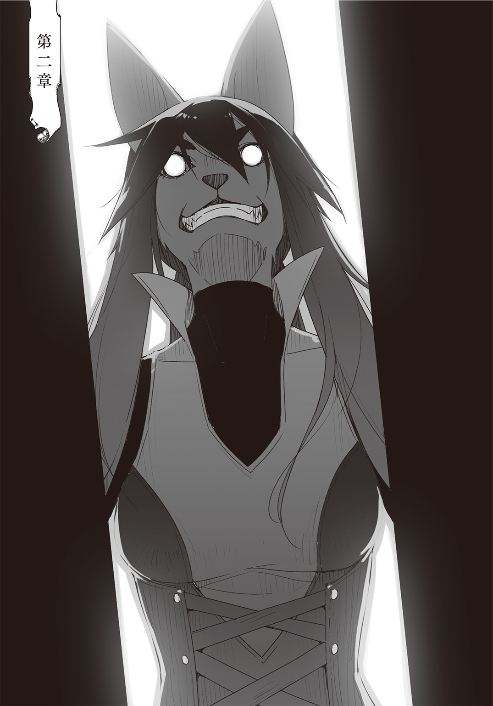
やはり風呂は良い。
ランタンは前夜に入浴したのにもかかわらず、今朝もまた風呂を堪能してしまった。一人で気ままに入浴するため、リリオンを起こさぬように早起きまでした。
たっぷりの汗を流し、身体を温め、心身ともに綺麗さっぱりと言いたいところなのだが昨晩に自覚した欲求不満が汗とともに流れ出すことはなかった。
欲求不満は、今や懊悩とでも呼ぶべきものへと変質していた。
戦いへの欲求は、純然たる暴力への渇望か。それとも死に惹かれているのか。それともただ身体を動かし足らなかった、というだけのことなのか。
風呂の中で考え続けたが答えは出ない。
答えは出ずとも、風呂は気持ちを落ち着かせてくれる。何にしろこのような悩みは身体を動かせばいくらかでも昇華される、と風呂の中で結論づけた自分が妙におかしい。
「......わたしも一緒に入りたかったな」
「昨日入ったでしょ」
「いつでもいっしょにお風呂したいの」
「髪乾かすのが大変だから、今日はちょっとね」
言いくるめるのも面倒なので適当なことを言うランタンに、髪を梳かされているリリオンは頭を固定されて振りかえることもできず、ただほんのちょっと顎を持ち上げた。
そのままくるりとひっくり返って、ランタンを見上げようとするように。
「......ランタンは長い髪は嫌？」
「嫌いじゃないよ。自分が伸ばそうとは思わないけど。ほら、顎引け。前向いて」
ランタンが旋毛を指で押すとリリオンは素直に顎を引いた。
少し湿ったまま眠ってしまったので、リリオンの髪は少し収まりが悪い。砂漠迷宮と極寒の最下層で水分を奪われた影響もあるのだろう。
ランタンは丁寧にリリオンの髪をまっすぐに伸ばしていった。
出会った時、足元にまで届くほど長かったリリオンの髪は身体ごと動かさなければ梳ることができなかった。それは嵐熊に切られてしまって腰元ほどの長さに収まった今も変わらない。頭頂から毛先まで引っ掛かることなく櫛が通るとランタンは満足気に額を拭った。
ベッドの上に櫛を放り出し、代わりに白銀の髪を一房手に取る。
さてどうしたものか、とランタンは一つ考え込んだ。
リリオンの髪を纏める。
いつも三つ編みにしたり、簡単に一つ結びにしたりする。それはランタンの手によるものだった。長く背中に垂らして歩く度に先端が跳ねるそれは快活な印象が愛らしく、だが一度駆ければそれは棚引き、龍の尾のようで優美だった。
ランタンはそれを見るのが嫌いではない。
しかしその反面、戦闘時に血で汚したり、攻撃に巻き込まれたりする心配がある。
事実、嵐熊の風刃によりリリオンの髪は切断されてしまった。
あの最下層でリリオンはその断面を誇らしく掲げたが、女の命を切り取られたことが辛くないわけがない。
これからカルレロ・ファミリーの襲撃を誘う。それが失敗に終わる可能性もない訳ではないが、襲撃があるのならばほぼ確実に乱戦になる。
魔物相手の戦闘ならば余程のことがない限り汚れたり、切られたりすることだけに注意を払えばよいが、こと対人戦闘となると髪を摑まれることもある。それは想像するよりも状況を悪化させる要因となる。
髪を鷲摑みにして探索者の腕力で引っ張れば頭皮ごと髪が毟り取られるぐらいならば運がよく、最悪の場合は頸部を損傷する。脱臼や骨折ばかりではなく、胴体から頭部が失われることも。
「よし、決めた」
幸い、宿を引き払うまでに時間はたっぷりとあった。
ランタンはリリオンの前に回り込むと側頭からの髪を指に絡めた。まるで編み棒に毛糸を絡ませるように。
そんなランタンにリリオンは嬉しげに唇を嚙んで、上目遣いになって視線を寄越した。どんな風にするの、と視線で尋ねはしても口には出さない。
ランタンは指に絡めた銀の髪を丁寧に編み込んでいく。
「痛くない？」
「うん、だいじょうぶよ」
ランタンが尋ねるとリリオンははにかんで答えた。
編み込みが崩れないように少しきつめに編んでいたが、そのことよりもリリオンは自らの髪がランタンの手によって形作られていくことが嬉しいようだった。
ランタンは前髪をある程度、編み終えると一歩後退してリリオンをまじまじと見つめ、満足気に頷いたかと思うと今度は背後へと回った。
「ランタン？」
「うん」
「ねえ、ランタン？」
「うん」
リリオンの問い掛けにランタンはまったく上の空に返事をして、いそいそと髪を編み続ける。やはり時折、距離を取って髪の形を確かめたり、リリオンの顎や頭を手にとって角度を変えたりもした。
リリオンはされるがままで、そんなランタンの様子に大人ぶった笑みを浮かべた。
ランタンはリリオンの笑みに気付きもせずに黙々と髪を編む。
細かい作業がランタンは嫌いではなかったし、リリオンの世話を焼くのも好んでいた。
戦闘時に髪が顔にかからぬように側頭からカチューシャ風に編み込みを施し、それでもまだ長い余った髪をこめかみの辺りで更に複雑に編み込んでシニョンにしていく。
出来上がったシニョンは花弁を幾重にも重ねた花飾りのようだった。崩れぬようにしっかりと纏めて、ランタンは満足気な溜め息を漏らした。
リリオンの頭を撫でて、作業の終わりを伝えた。
「もう、動いていい？」
「いいよ」
「鏡見てくるね！」
「どうぞ」
リリオンは叫ぶように言ってベッドから立ち上がり、備え付けの鏡面に向かった。ランタンはリリオンと入れ替わりに腰を下ろして、ぱきぽきと指を鳴らした。長い髪をきっちりと纏めると、リリオンの背中にほんの僅か中性的な魅力が宿る。
それは瘦せながらも確実に、肉体が探索者の硬質さを帯びつつあるからだろうか。
けれどそれも鏡面の前で真っ直ぐ伸ばした背を、折り曲げたり捻ったりするまでのことだった。後頭部の纏め具合を確かめたいのか四苦八苦していて、しなやかに身体を捩ると脇腹から腰、そして尻から足へと流れる線が驚くほど柔らかそうに思える。
鏡に向かって笑う様子は、どれほど探索者として成長しようと、背が高かろうとリリオンが少女であることを確信させる。
嬉しさと恥ずかしさの入り混ざったはにかみのまま、可愛らしくも複雑なカチューシャ風の編み込みに指を這わせて、そっとシニヨンを掌に包む。
喜んでもらえたようで何よりだ。
じっくりと髪型を堪能したリリオンが子犬のように戻ってきた。
ランタンの目の前に立ち止まると、踵でくるりと回ってみせた。ドレスでも着せたらば、どこかの貴族令嬢に見えるかもしれない。
「どうかしら？」
「掠いたくなっちゃうね」
ランタンは冗談めかしてそう言った。それは本心でもあったが、リリオンはもっと直接的に褒めてもらいたかったようで少しばかり不満気に、それでも口角を緩めた。だがそれがはっきりと笑みを形作ることはない。
リリオンは浅く開いた唇から舌を覗かせて、唇を少し濡らした。
「......ランタン」
リリオンが落ちつかなげに指をこねて、囁くように名を呼んだ。
そして、ごめんなさい、と頭を下げた。纏めた髪は重力に負けることなく、きちんと纏まったままになっている。
ランタンは一瞬戸惑って、それから静かに尋ねた。
「何の、ごめんなさい？」
ランタンは座ったまま、目の前にまで下げられたリリオンの頭部に触れて、おでこを撫でるように顔を上げさせた。ランタンの目は厳しさを湛え、リリオンの顔を見上げる。
リリオンの淡褐色の瞳は感情に移ろうように色を変えた。時に金色にも見える瞳が、今は暗緑色に沈んでいる。
「...わたしが、狙われているから、それで、ランタンに迷惑を掛けて――」
碌でもない理由だと思っていたが、やはり碌でもなかった。けれどこういった無垢さがあるからこそ、ランタンはリリオンを好ましく思うのだろう。
ランタンは手を振ってリリオンの話を遮ると、蹴り飛ばすように靴を脱いでベッドの上で仁王立ちとなった。
そうやってリリオンと目を合わせる。反射的に視線を逸らそうとしたリリオンの頰をぱちんと両手で挟み込んで、視線を逸らすことを許さなかった。
頭突きするように額をくっつけて、暗緑色の瞳の中に飛び込むように。
「それってリリオンに何か非があることなの？」
リリオンは黙っている。ランタンは構わず伝えた。
「違うでしょ？ 悪いのはカルレロ・ファミリーとかいう阿呆どもだよ。そんな奴らのためにリリオンが頭を下げる必要なんてない。それに狙われてるのはリリオンだけじゃなくて僕もだよ。僕らは一蓮托生――」
ランタンはリリオンの頰から手を離した。思わず言った言葉の照れ隠しに苦笑して、肩を竦めた。
「――っていうのは流石に大げさか。でも、もしどうしても謝りたいんなら、寝返りで僕を蹴っ飛ばしたこととか。涎垂らして枕汚したこととか、ぐうぐういびきかいたこととかを謝ってほしいね」
「いびきなんてしてないわ！」
「でも蹴ったでしょ？」
「......蹴ったの？ わたし」
「膝が鳩尾にめり込んだよ。晩ご飯出るかと思った」
「よだれ......」
「出てたよ。夢で何を食べてたのかしらないけど、冷たかったな」
「......ごめんなさい」
「よろしい。じゃあ靴拾って、飛んでっちゃったし」
偉そうに許しを与えたランタンはベッドに尻餅をつくように腰を下ろした。
リリオンはとことこと小走りにランタンの戦闘靴を拾って、いそいそと足元に揃えた。ランタンはズボンの裾を丁寧に仕舞い込みながら足を通し、爪先で床を二度叩いた。
腰に戦鎚を結び、外套を羽織る。
「あ、ランタン包帯！」
「あー、忘れてた。面倒くさいなあ」
「わたしがしてあげるわ」
偽装のための包帯をリリオンに巻いてもらうが、いざという時に外すのが面倒なので腕は吊らない。包帯で隠したのは右目か左目かどちらだっただろうか、と二人揃って頭を捻る。たしか左目だったはずだ。
「さて、行くか」
「うん」
忘れ物がないか確認をして宿を出た。
降り注ぐ陽射しがのどかで、二人揃って天を仰いだ。
それとなく周囲に気を配る。
不審な人影も気配も見当たらない。ランタンは陽射しを遮るようにフードを被った。
さて拐かされようじゃないか、とフードの影で冷たく笑った。
通りで少しだけ買い食いをしながらぶらぶらと散策をして、テスから教えてもらった魔道薬品店で買い物をした。
金貨と魔道薬の交換。ものによるが魔道薬はグラムあたり黄金よりも高価である。買い物は所持重量を減らす意味合いもあったし、戦いへの備えでもあった。
リリオンはきょろきょろと店内を見回している。
乾燥した植物、動物、魔物と液漬けにされたそれら。色取り取りの鉱石。火に掛けられたフラスコや、機械仕掛けの石臼の奏でる音が絶えず耳に聞こえていた。
墨のような独特の臭気がする。
ランタンは司書を思わせる、けれどそれよりももっと野暮ったい真っ黒なローブで全身をぐるぐる巻きにした店主に毒物への耐性を向上させる薬を頼んだ。
カルレロ・ファミリーの扱う薬物の大半は陶酔感や多幸感、あるいは催淫効果を有する麻薬であったが、それ以外の毒劇物の売買も確認されている。生き物を捕らえるのに毒物ほど有効な手段はそうない。
生け捕りにするにしても、死体を持ち帰るにしても。
迷宮で鍛えられる身体機能の向上は毒物への耐性にも及び、ランタンのそれはなかなかのものだが過信はできない。
リリオンに至っては、どれ程まで耐えられるかまるで見当がつかない。
巨人族の血はそれだけでランタンの耐性を上回る可能性もあったが、それこそ過信するわけにはいかなかった。
なのでランタンは大枚を叩いて、かなり高品質の耐毒薬を購入した。
魔道薬には腐敗しない物も存在したが、完成から数時間、あるいは数十秒で効果を失ってしまうものもあった。持ち歩くことはできないが、けれどそれを補ってあまりある効果が期待できる。
しばらくすると薬が満たされた銀の杯が二人に手渡された。液剤は青と緑の蛍光色が絶えず沈殿し、また浮上する、可能ならばこのまま床にぶちまけたい色合いをしていた。
けれどこれは金貨の山である。溢せば拾い集めることができず、三十秒以内に服用しなければ何の効力もない色水へと変質してしまう。
ランタンとリリオンは互いに目配せをして、一気に杯を空にした。
「あ、美味しい......にがい！」
温く、喉越しが滑っているが、口当たりは気体を飲み込んだように軽い。飲みやすくするためか柑橘系の香り付けがされていて、一瞬美味いと錯覚させられるが後味は激烈に苦いような辛いような、味覚を麻痺させる味である。
効果は服用してから二十四時間から四十八時間、服用者の免疫機能を向上させる効果がある。これからの戦いはそう長引くものではない。充分な持続時間だった。
「ごちそうさまです」
ランタンは店主に杯を返却した。リリオンは隣で水筒から水をがぶ飲みしていて、ランタンの視線に気付くと水筒を渡してくれた。店主の前で気が引けたが、ランタンはこびりつく後味を流し去るように清涼な水を呷った。
「いい時間だね」
適当な散策と、物珍しげに薬品を眺めるリリオンと店内を冷やかしていたせいもあって昼を過ぎようとしていた。
それはテスとの約束の時間が迫っていることを意味する。
薬品店を後にすると、時間を調整するように道を選びながら上街と下街を分かつ門までやって来た。リリオンがどこからかこちらを見ているはずのテスを探そうとしたので、尻を叩いて行動を諫める。
本当に見守ってくれているのか不安になるほど完璧な隠行であるが、ランタンは足を止めずに門を潜り抜けた。
◇◇◇
「テスさん、どこにいるんだろうね？」
「どっかにいるでしょ。影も形もないけど」
「ねえ、後ろ見てもいい？」
適当に雑談をしながら下街の廃墟を歩く。返事を聞くより先に振り返ったリリオンを、ランタンは手を引いて先を急がせた。
不自然なのは果たして自分かリリオンか。
リリオンは尾行があろうとなかろうと、落ちつきなく色々なものに興味を示す。例えば空の青さであったり、足元に落ちている不思議な形の石であったりといったものにまで。
「なんかあった？」
「なかった」
「別にそんなきょろきょろと怖がらなくてもいいのに」
「怖がってなんかないわ」
ランタンは意地悪そうな表情で言うと、リリオンは間髪容れずに言い返した。
小声で話しているので、声量が足らない分だけぎゅっとランタンの手を握った。手の甲がみしりと軋んだ。
「怖がってもいいと思うけど」
「怖くないよ。......だってランタンがいるんだもの」
リリオンは頰を膨らませ、唇を尖らせたかと思うと拗ねたように呟いて、それから澄んだ瞳でランタンを見つめながら続けた。
「そうだよ。もしテスさんが来れなくなっても、怖がることはないよ」
ランタンははっきりと頷いた。
嬉しさがあった。けれど、これはなかなか大変なことだ、とも思った。
これから行う戦闘の意味を再確認させられた。
ただ有象無象の悪党や薬物中毒者を叩きのめすだけではない。
傷つきやすく繊細なこの少女から、不安を払うための戦いなのだ。
例えばこうやって手を繫がずとも、ランタンが隣におらずとも自由に外を駆け回れるように。
「ランタンは、怖くはないの？」
「リリオンもいるしね」
ランタンが呟くと、リリオンはむふと鼻息を鳴らした。
「ランタンのことは、わたしが守ってあげるからね！」
「どうもありがとう」
リリオンは意気込むように一歩だけ跳ねるように歩き、ランタンの肩を抱き寄せて寄り添った。守るとか守られるとか、そういったものとはまた別に、ただ一時だけ甘えるように。
一度、人気の多い通りに向かって左右に絨毯を広げる露店を覗き込むように足を止める。
ランタンは外套の下で手を伸ばし、リリオンの脇腹を抓った。
「んうっ」
「釣れたっぽい」
色っぽい声を出したリリオンも、その声に驚いた露店の店主も無視してランタンは小さく呟く。
ランタンたちの歩調に合わせて、歩みを緩めたり足を止めたりする者たちが複数感じられた。リリオンは恥ずかしそうにしながらちらとランタンに視線を寄越した。
「どうするの？」
「ふるいに掛ける。――あんまり面白いものもないね」
世間話をする振りをしながら露店を離れ、そして次第に人気の少ない方へと足を進めた。
後をついてくる者もいるし、こない者もいる。意図して離れていった者も、あるいはどこからか姿を現した者も。
彼らは次第に存在感を露わにしていく。単独だった者たちが合流していくつかの集団となって、けれどまだ襲いかかってくるようなことはない。
「やっつける？」
「後でね」
彼らは意図的にランタンたちに存在を確認させた。獲物を追い立てる猟犬のように。
ランタンは喉を震わせて低く笑った。
猟犬が獲物を追い立てることができるのは、獲物にとって猟犬が脅威であるからだ。
吠え声や、臭い、あるいは足音に恐怖を感じて、本能的に逃げ出すからこそ追い詰めることができる。
ランタンは彼らの敵意や殺意をまるきり無視して、自らの意志でもって足を進めた。
そこはテスと落ち合う約束をした場所だ。
今にも崩れそうな建物に左右を囲まれているが、それなりに拓けている。薬物の取引中だろうはずのバラクロフが万に一つ潜んでいたとしても、少し距離を空けて前方にそびえる四階建ての建造物ぐらいしかこちらを狙える場所はない。
「なんともまあ、好都合な」
思わず零したランタンにリリオンはきょとんと首を傾げた。
ここはランタンが初めてルーと出会い、そして戦った場所である。崩壊した廃墟の瓦礫は火事場泥棒たちの活躍か、それともわざわざ撤去してくれたのか戦闘に支障がないほど小綺麗になっている。
灰色の街並みは、遮る物のない陽の光に晒されて白亜によって造られたようだった。吹き抜ける風がほんのり暖かく爽やかで、何とも穏やかだった。天気も良いし、露店屋台で弁当でも買えばよかった、と思わせるほどに。
「さあて」
ランタンが呟くと、リリオンがその意図を汲み取ったように、けれど名残惜しげに肩から腕を外した。真っ青な空に浮かぶ雲を摑むように大きく背伸びをした。
――いるな。
ランタンが戦鎚に手を掛けると、左右の廃墟からぞろぞろと男たちが姿を現した。
左右の建造物は崩壊の余波で小石でも投げれば崩れるのではないかという有様だった。
ランタンならばそんなところに身を潜めるのは御免だが、彼らに命令を下した者にとって、彼らの命などその程度の価値しかないのだろう。
まるで石の下に潜む昆虫のように、思いがけないほどの人数が建物から吐き出される。
ランタンの顔が引き攣ったのは数に恐怖したからではなく、そのむさ苦しさにうんざりしたからである。
背後から追い立て役たちが合流して、ランタンたちは三方から囲まれてしまった。
包囲網を狭められたらば、いかにも絶体絶命である。
「牽制頼む。――おい、僕らに何か用か？」
リリオンに前方の牽制を任せて、ランタンは振り返った。
追い立て役の一人が舌舐めずりをした。
「わかってんだろ？ 無駄な抵抗は怪我を増やすだけだぜ」
男の視線が左目を塞がれたランタンの顔に、そして包帯を巻かれた右手を見た。
数えることも面倒だがざっと見ただけで五十名以上はいるようだ。その全てが薬物中毒者ではなく、三割ほどは正気を保っている。それらは中毒者の指揮、管理をするカルレロ・ファミリーの構成員か何かだろう。
集団は猟犬と呼んで相応しい規律を以て包囲を狭めてくる。
「いや、犬というよりは魚か」
それは大魚を装う小魚の群れ。
バラクロフは己の身を守るために最大戦力であるカルレロや、幹部たちを身の回りに置いている。
なればこれらは雑魚と言うほかない。
じゃらりと数名が抜剣する。他の者たちはすでに抜き身を構えて、にやついたり無表情だったりしていたが、抜刀音を耳にすると目を剝いて唸り声を上げ始めた。
これは明確な攻撃の意思表示だ。
正当防衛が成立する状態となった、とランタンは判断する。
「リリオン、後ろに抜けるよ」
「はいっ！」
リリオンの大音声に押されたように包囲が半歩広がった。
リリオンはその隙に胸を膨らませるほどに息を吸い込んで、振り回すように大楯を構えた。遠心力で振り返り、鋭く息を吐き出すと全速力で走り出した。
左右を囲む集団はもう追いつくことができない、圧倒的な加速力だった。土埃が蹴り上げられてランタンの姿を覆い隠す。
後方集団は色めき立ち、迎撃を諦めて回避を選んだ者は少数だった。
「はあっ！」
鎧袖一触に十数名もの男たちが蹴散らされた。小魚の群れに鯱が突っ込んで蹂躙するように。リリオンは速度を落とすことなく、男たちに臆することなく真っ直ぐに突き進み、包囲網を突き破った。
急停止から反転。油断無く楯を構える。
そして興奮した淡褐色の瞳が捉えたものは、回避を選んだ幾人を追い込むランタンの姿だった。
装備の質は悪い。獣のごとき反射神経は薬物の効果だろうが、代償に思考能力を失っていて立て直しは遅い。
土埃の影から大回りに背後を取ると、躊躇なく戦鎚を振り回した。狙いは四肢。肩を砕き、同時に下肢を踏み抜く。崩れ落ちる男に一瞥もくれず、狙いは次へ。混乱が解けぬうちに三人を打ち倒し、そこから更にようやく態勢を立て直しつつある四人へと向かった。
磨かれた鎧。それなりの雰囲気がある剣や槍。籠手に固定された楯の表面には削り取った傷があるが、他のに比べて装備が良い。それに装備に着られているような様子もなく、反撃の手は破落戸にありがちな喧嘩殺法でもない。動きに型がある。
どこかで訓練を受けた者の動きだ。
突き出された槍を滑り込んでやり過ごし、身の内に入った。爪先を踏み潰すように震脚。鎧越しに心臓へ肘を通し、意識を飛ばした男を左から迫る男へ突き飛ばした。完全装備の男一人の重量は一〇〇キロを超える。
それが浮かび上がり、矢のような速度で吹っ飛べば恐るべき凶器となる。
直撃した一人はその瞬間に白目を剝き、それでもなお勢い止まずもう一人を巻き込んだ。男たちは縺れ絡まり地面を跳ねた。
最後の一人はそれを横目に見た瞬間、楯の上から戦鎚を叩き付けられて血反吐を吐いた。楯は硝子のように砕け、籠手は裂けて、折れた骨の白さが肉を突き破った。
戦鎚の黒が血に濡れて艶めいた。ランタンはそれを振り払いながらリリオンに尋ねる。
「沢山引く、七人。残りは幾つ？」
「いっぱい」
「減った気しないね」
瞬く間に七名を行動不能にして、だが昨晩に自覚した欲求は満たされない。
もしかしたらそれは戦闘欲求ではなかったのかもしれないし、あるいはこの程度の相手では満足することのできぬ底なしの衝動であるのかもしれない。
しかし高揚感がないわけではない。深い呼吸とは裏腹に心拍数が速まって、急激に負荷のかかった肉体は一気に体温を上げる。
思考は冷静を装っているが肉体は正直だ。
「さて」
リリオンが大楯から大剣を外した。
大剣は刀身に包帯を巻いている。ランタンの右腕のように。
「てめえ騙ってやがったのか！」
ランタンは左目の包帯を乱暴に外すと、声を荒げた男を無視し、肉体の欲求に従い戦いに身を躍らせた。
連中の大半はかなり重度の薬物中毒者だ。ランタンとリリオンの初撃による圧倒的な蹂躙に怖じ気づくことはなく、むしろ巻き起こった暴力に興奮を高めていた。
薬物中毒者たちは先程の男たちより装備の質が数段落ちる。だが肉体は鍛え上げられていた。目が血走っていて、首の太い動脈ははち切れんばかりに膨らんでいる。
猿のように吠え、今にも突っ込んできそうだったが、どうにか踏み留まっている様子を見ると辛うじて統制が取れているのがわかる。
重度の薬物中毒者だが、ただの薬物中毒者ではない。一握りの理性を保っている。
そのように訓練された戦士だった。
正気の人間一人につき五、六名程度の薬中戦士を指揮しているのだ。
ランタンの右振りが一人の腕をへし折った。
籠手ごと腕骨が砕けて、自らの肘が胴体にめり込む。しかし薬中戦士は苦悶の表情を浮かべることはない。痛覚が遮断されていたのか、それとも痛みすらも快楽と誤認させられているのか。それは鬼のような笑みを浮かべる。
薬中戦士たちは互いに支え合い、肉体でランタンの戦鎚を止めた。その瞬間を見計らって、距離を保っていた戦士たちが一斉にランタンに飛びかかった。
引き足が戦鎚に絡みつく肉の重みに縺れる。幾人もの戦士たちが戦鎚に群がっている。
最初から武器の奪取を狙っていたのだろう、迷いのない行動だった。
ランタンが後退を諦めると、更なる追加がやってくる。
「大漁だな」
ランタンは腰を落として右足を踏ん張ると、戦鎚の柄を蹴り上げた。ランタンは戦鎚ごと戦士たちを振り上げる。
その勢いに幾人かの戦士が振り落とされ、ランタンはしがみついたままの三名を地面に叩き付けて昏倒させた。
振り落とされた戦士たちは獣のように四つん這いで着地して、ランタンは一人の顔面に前蹴りを叩き込んだ。
「ふっ」
蹴り込んだ顔面を踏み台にして、大きく後ろに距離を取る。先程までいた場所に大上段から剣が振り下ろされて地面に突き刺さっていた。
「くそっ！」
男は悪態を吐き振り返った。だがその目に映ったのはランタンと入れ替わったリリオンだ。
リリオンは白布を巻いた大剣を立てて構え、刀身の腹で男の肩口を引っぱたいた。
遠くの建物に反響するほどの大きな破裂音を響かせて、男は独楽のように回転しながら吹っ飛んでいく。
地面に落ちてなお転がる男は虫の息だ。
リリオンはそんな男に目もくれず、竜巻のように大剣を振り回して男たちを滅多打ちにしていく。
流石に近寄ることができず、薬中戦士を取り纏める一人が慌てて声を上げた。
「落ち着けっ！」
一声で薬中戦士たちは引き波のように後退する。何人もが満身創痍といった有様だったが意識を飛ばすか、脚を壊さない限り戦いを止めることはないようだった。
「よく見ろ！ こいつら、こっちを殺す気がねえっ！ 何も恐れることなんか――」
大剣に白布を巻いたのも、剣の腹で叩くのも、まさに斬り殺さぬようにという配慮だ。ランタンが爆発を使用しないのも、四肢を狙うのも。
だがそれは男たちのことを哀れに思ってのことでも、人を殺傷する事への躊躇いでもない。
ただ色んなことを証言してもらったり、させたりするために生かしているだけだった。
「――うおあ!?」
いつの間に、と声を出す間もなくランタンは男の膝を蹴っ飛ばし、俯せに押し倒す。倒れた男の首を踏み付けて拘束し、戦鎚を振りかぶった。振り子のような軌道で戦鎚の鶴嘴が、その鋭い先端を男のこめかみに。
「があっ！」
こめかみの薄皮を貫いた瞬間、男は地面を突き放すようにして無理矢理に身体を起こした。
立ち上がり様に握った土をランタンに投げつけて、倒けつ転びつ脱兎のごとく後退した。
男はおそらくこの集団全体の指揮を任されているのだろう。状況判断がよく、力も強く、身のこなしは薬中戦士たちとは比べものにならず、だが訓練を受けたような動きではない。
おそらく探索者崩れだ。
そんな男がランタンを振りかえると、苦々しい表情に隠しきれない恐怖が滲んでいた。
殺す気がない、と高をくくった瞬間に牙を剝いたランタンの戦鎚は紛れもなく致死性の威力を有していた。
躊躇の一切ないランタンの無慈悲さはまさしく死神のそれである。
恐怖を滲ませたのは探索者崩ればかりではない。感情を壊されているはずの薬中戦士たちすらも、その雰囲気に当てられて僅かながら正気を取り戻していた。
「てめえ、ランタンか。単独探索者の。......あの野郎、話が違えっ！」
「単独探索者？ さあ、人違いじゃない？」
ランタンはちらりとリリオンの姿を見て、肩を竦めて空惚けてみせた。
「化け物がっ！ 女も生きてりゃどうなっても構わん！ 手加減するな！」
ランタンの瞳が、熱を帯びて赤く燃えた。
探索者崩れは必死に恐怖を呑み込んで、過去に迷宮に立ち向かった己を思い出すように声を発する。
「一斉に掛かれっ！」
誰かが叫んだ。誰も彼もが叫んだ。恐怖を振り払うように。
薬物に頼ってではなく、自分の意志で恐怖を誤魔化す薬中戦士の攻撃は苛烈であり、侮りを止めた指揮者たちの連携は厄介であり、探索者崩れの身のこなしは目を見張るほどだった。
彼らは力を合わせて果敢にランタンに立ち向かう。
だがランタンはそれ以上だった。
必死な探索者崩れをあくまでも殺さぬように追い詰めながら、その戦鎚が一度閃けば薬中戦士たちの剣が砕け、防具が弾け、骨が折れた。
動ける者は減っていった。
そんなランタンに煽られたようにリリオンが大剣も大楯も振り回して暴れ回る。
驚くほど長い脚の踏み込みと、すらりとした細腕に振り回される大剣の射程距離は男たちの倍はあった。その内側に入ってしまえばと考える者もいたが、そもそもとして暴風圏内に入ることは困難であったし、ランタンがそれを許すはずもなかった。
リリオンは何一つ怖がることはない。男性への恐怖を誤魔化しているのではない。リリオンは恐怖を乗り越えていく。
「動きを止めろっ、囲めっ！ 死ねえっ!!」
探索者崩れが叫んだ。
それはランタンへの罵倒であり、薬中戦士たちへの命令でもあった。
半分以上が行動不能となり、ようやく二十と四名に減った薬中戦士が、三列横隊を組んだかと思うとランタンとリリオンを包囲した。
だがランタンもリリオンもそれを突破することは容易い。それはすでに実証している。
まさか、と思った。
薬中戦士たちは装備した剣や斧といった武器を二人に向かって投げつけてきたのだ。対角線上にいる仲間に当たるかもしれない、などとはまったく考えていない全力の投擲。
狙いは顔から爪先まで満遍なく、僅かな時間差までつけていた。武器がなくなれば防具を、それもなくなれば石を拾って投げつけてきた。
リリオンが楯を構えて身を縮める。がら空きの背中はランタンが守った。
引っ込めた大剣の分だけ薬中戦士たちは包囲を狭める。そして一斉に雪崩れ込んできた。
ランタンの爆発で包囲網を纏めて焼き尽くすにはリリオンが近過ぎた。ランタンはリリオンと背中合わせになって密着すると、少女が大きく肩を上下させて呼吸するのが感じられた。
「魔道......！」
探索者崩れが短杖を構えている。短杖の先端に赤い宝石が幾つも埋め込まれていて、それは激しく発光したかと思うと急激に色を失った。
探索者崩れの眼前に一つの火球が生み出されて、それは瞬く間に膨らみ、男の姿を覆い隠すほどになった。
探索者崩れ自体が魔道使いなのではなく、使い捨ての魔道具を使用したようだった。それもかなり高級な。
放射される熱波が頰をちりちりと焦がすほどの威力。それは近隣に着弾しただけでランタンもリリオンも、そして包囲網も丸ごと焼き払うだろう。
リリオンの生け捕りという命令すら放棄した、破れかぶれの一撃。
轟音。
それは放たれることなく、その場で巨大な火柱を上げて炸裂した。強烈な熱波が突風のように襲いかかり、包囲する薬中戦士すら身を堪えて立ち止まり、ランタンとリリオンは二人揃って大楯の中に身を潜めた。
「暴発？」
ランタンが呟き、リリオンと一緒に顔を出すと探索者崩れの傍らに、フードで顔を隠した人影があった。
「――大人数で幼気な子供たちを取り囲み、あまつさえ魔道を向けるなど不届き千万」
探索者崩れの顔面が焼けただれていた。膨れあがった巨大な火球の中に、後頭部を鷲摑みにされて顔面を突っ込まれたのだ。
探索者崩れは辛うじて息があるというほど重傷なのに、火球の中に突っ込んだはずの腕はまるで無傷だ。
「たまたま通りかかった善良な大人として、卑劣なこの行いを見過ごすわけにはいかない、決して」
人影がそう言うと、ランタンとリリオンは包囲網の外側に連れ出されていた。抗うことができないほどの早業だった。
人影は抱きかかえた二人を、くふふ、と笑いながら降ろした。
「もう大丈夫だ。後は任せなさい」
「え？」
ぽかんとする以外に、できることは何もない。ランタンもリリオンも、残りの戦士たちも。
「な、なんだ貴様は！」
一人がどうにか叫んだ。
恐怖が過ぎて薬物による混迷から完全に抜け出し、正気を取り戻していた。
「私がなんだと聞いたな」
人影は男たちに一歩にじり寄った。爆風の吹き戻した風にフードが外れて、天に向かって突き立つ三角耳が露わになる。
牙を剝いて、獰猛に笑った。
「――正義さ」
正義の使者は当たり前のようにそう言い放つと、問答無用に男たちをぶちのめした。
動く者がいなくなるまで五秒もかからなかった。
◇◇◇
瞬く間に男たちは無力化されて崩れ落ちた。
四肢のいずれも損傷はしていない。ただ芋虫のように地面に這いつくばって蠢き、そして真綿で首を絞められたかのように緩やかに意識を失った。
その顔は安らかですらある。
「すごい」
「こわい」
リリオンとランタンが同時に呟く。
呆気に取られる二人へと、正義の使者は気さくに笑いかけた。
「くふふ、何か悪いことをする予定でもあるのか？ ランタン」
「いいえ、ないです。ね、リリオン」
リリオンはランタンの問い掛けに何度も頷く。
「テスさん！ わたし悪いことしません！」
「うん、それはいいな」
正義の使者ことテス・マーカムは両手の二振りを腰の鞘に収めた。
峰打ちにて二十四名の意識を刈り取った剣に汚れはなく、テスに疲労も見られない。
しゃらんと涼やかに鞘が鳴り、ランタンは思い出したように戦鎚を腰に戻した。
リリオンは大剣から白布を引っ剝がす。
刃を立てておらずとも少しの返り血があった。大楯に大剣を収めると、その白布で楯の表面を拭った。爆発した火球の余波で、表面に付着した血液が焦げついていた。
「二人の戦いっぷりに見とれていたら少し遅れてしまったな。リリオンもずいぶんとおめかしをしているから、余計に。よく似合っているよ」
リリオンの髪は激しい戦闘をこなしても崩れることがなかった。
褒められたリリオンは飛び上がって喜んで、そのおめかしを施したランタンは妙に気恥ずかしかった。
テスもいつもと髪型が違った。前髪はいつもと同じように垂らしているが、後ろ髪を一つに結っている。たったそれだけのことでテスから男性的な凜々しさや精悍さが感じられた。
鷹揚に肩を竦める仕草がよく似合う。
「いやあ、私の出る幕がなくなるんじゃないかと思って慌てたよ」
戦闘に忙しく、途中テスのことはすっかり忘れていた。どこからか乱入のタイミングを図っていたテスを想像してランタンは誤魔化すように頰を搔いた。
「危ないところを助けて頂いてありがとうございます。テスさんがたまたま現れてくれなかったら、黒焦げになっているところでした」
「黒焦げとは、こいつらのことかい？」
ランタンが白々しく言うと、テスはにやりと笑った。最後の火球は確かに脅威だったが、切り抜けられないほどではない。
地面に転がる男たちへ視線を向けた。
テスが打ち倒した者たちは意識がないが、ランタンやリリオンが手を掛けた者たちの中には意識があっても動けない者が何名も存在した。
「さて少し時間に余裕もあることだし、このままではせっかく生け捕りにしたこいつらが鼠の餌になってしまう。回収しやすいようにするから、少し手伝ってくれ」
「はい！」
「わかりました。けど、回収って？」
「私の部下たちが、たまたま偶然ここを通りかかる予定なんだ。休日なんだが、これを見つければ平和を守るためにきっと働いてくれることだろうね」
リリオンはさっそく意識のない男たちを一所に集め始めた。右手に一人、左手に一人摑んでまるで苦にした様子がない。指定された場所に男を運ぶと、ごろんと俯せに引っ繰り返す。
等身大の人形で遊んでいるようにも見えた。
そしてランタンとテスは未だに意識を保ち、苦痛に呻く者たちを手早く昏倒させていく。
意識のある男たちは酷い有様だった。
ランタンは殺してしまった方がマシだったんじゃないか、と思いながら骨折したり、内臓に傷を負ったりして苦しんでいる男たちの頸動脈を踏み付けて失神させた。
「ああ、あ。......おい、くそ」
息も絶え絶えに一人の男がランタンに呼びかけた。
ランタンがそちらに向くと、脚の折れた男がいた。
右脚の臑を突き破って折れた骨が剝き出しになっている。太い血管を傷つけたのか、血溜まりが広がっていた。
土気色の顔は出血のためだが、落ち窪んだ眼窩や瘦せた歯列は薬物の影響だ。
「痛え、痛えんだ。なあ、おい、......殺してくれよ......」
薬物の影響下から脱し、男は痛みを思い出したようだった。
じっと澱んだ視線をランタンに向けてくる。
「こんな足じゃ、もう何にもできねえ。この血じゃ、助からねえし、とどめくれよ。......頼むよ」
「――ダメだ」
黙って男を見ていたランタンの代わりに、テスが告げた。
テスは腰から一振り剣を抜くと、そのまま男の右脚を切り飛ばした。男は何をされたのか理解できないように、何度か目を瞬かせた。そして何秒も経ってから、信じられないというように切断された脚に視線を落とす。見ても、まだ実感が湧かないようだ。
「まだ充分喋れるじゃないか。死ぬのは勝手だが、貴様が死ぬのは取り調べを受けた、その後だ」
膝下の切断面は恐ろしく鋭利だった。出血がまるでなく、医学書に描かれた断面図のようだ。血溜まりに転がる臑は、その男の一部だったことを疑いたくなるほど完璧に分離されている。あるいは痛みさえも。
峰打ちだろうと、そうでなかろうと関係ない。テスの刀身には血脂による汚れがなかった。
テスは返す刀で男の首を峰打ちにして意識を飛ばした。
「ふん、これも探索者崩れだな」
「......そうなんですか？ でも探索者証は」
「見ればわかるさ、仕事だからね」
テスは男の襟首を摑むと男を血溜まりから引きずり出して、投げ捨てるように他の男たちの元へとやった。
死者は一人もいなかった。
ランタンは戦いで搔いた汗とは違う、べったりとした額の汗を拭った。背中に熱が籠もっている。リリオンがランタンの外套を摑んでばさばさと扇いでくれた。
男たちを一所に集めて拘束し終えると、武装を外した。何だかんだと全員が並以上の装備を身に付けていたことが判る。人族もいれば、亜人族もいた。
「だがカルレロ・ファミリーの構成員自体は少ないな。この八名だけだ」
八名のうち五名が探索者証を所有していたが、彼らは実動経験のない名ばかり探索者だった。探索者証はそれを見せびらかすだけで箔がつく。五名全員がそれを手首に嵌めていた。
「そして探索者崩れは六名」
探索者崩れたちの中で腕に探索者証を嵌めているのは四名だけだったが、残りの二名もそれを懐に忍ばせている。
迷宮探索からは長く離れているが、正式に廃業することも探索者証を捨てることもしなかったようだ。
「薬中が四十九名」
武装の下にはいつ洗濯したのかも定かではない衣服に身を包まれたよく鍛えられた身体がある。そしてほぼ全員に古傷、入れ墨、そして注射痕があった。入れ墨は焼き消されていたり、その上から別の図案を彫って上書きしていたりする。無数にある注射痕は皮膚が硬質化し、広範囲に渡るどす黒い鬱血が見られた。
「残りのこれは騎士崩れか。集めも集めて六十八名、嘆かわしいことだ」
ランタンが早々に打ちのめした騎士崩れ五名の装備は特に上等だった。
武具工房の刻印や紋章が削り取られていて、身元を確認できないようになっている。ただ全員が亜人族だった。獣や爬虫類の血が色濃く浮き出ていて、細かな鱗や毛に覆われた皮膚に注射痕は見つけられなかった。
「食い扶持を稼ぐにしても、まったくけしからん」
テスは腕組みをしながら呆れたように呟く。なあそう思うだろう、とランタンたちに同意を求めた。
だがランタンは曖昧に頷いて、リリオンは難しい顔をしながら小首を傾げるだけだった。
さらに所持品を調べた。貨幣はほとんど持っていない。サイコロやカードの束が見つかる。賭けで巻き上げたのか安っぽい装飾品も。そして煙草や、注射器などに混じって薬物も。
粉末状の薬と液剤だ。
テスは粉剤を舌先に乗せ、液剤を一滴指に垂らした。液剤は粘性を帯びていて、油性の絵の具のような濃い青色をしている。臭いを嗅いで、舌先で舐めた。
「粉は興奮剤の類かな。液剤は魔精薬のようだが、なんだこれは。濃いが、酷い質だ」
テスは顔を顰めて地面に唾を吐いた。荒々しい振る舞いだが下品さがなかった。
「ダメだよ、リリオン」
目を細めてちらりと指を舐めたテスの仕草に感銘を受けたのか、リリオンが真似をしようとしたのでランタンは叱った。これはテスだから許される行いであるし、そもそも違法薬物の摂取を許可することはできない。
リリオンは渋々諦めて、それでも興味津々でテスに尋ねた。
「どんな味ですか？」
「嫌な味だ。舌がちょっとピリピリ痺れるような、好きこのんで飲む奴の気が知れない」
「飲まなくてよかったね」
リリオンはしゅんとしてランタンを見た。そしてこくんと頷く。
「けれど、こいつは何で飲まなかったんでしょう？」
「さて、横流しでもしようとしたのかな。まあ、これから聞けばいいさ」
全員を後ろ手に拘束した。
テスは横たわる男たちを一瞥するとファミリー構成員の一人と騎士崩れの一人に一撃をぶち込んで目覚めさせた。
比較的軽傷の者たちだったが、ランタンはその一撃で死んだんじゃないかと思った。リリオンもびっくりして大きく肩を震わせた。剣技とはまったく別の乱暴な一撃だ。
男たちは苦痛に呻いて目蓋を持ち上げ、拘束されていることに気が付くと暴れ、ランタンたちの存在に気が付くとぎくりと身体を強張らせた。
何かを叫ぼうとした瞬間、テスが顔を覗き込んだ。
「発言は許可していない。立て、歩け」
男たちは黙った。そしてテスに襟首を摑まれ、無理矢理に立たせられるとテスの指差した方へと向かって歩き出した。後ろ手に縛られているし、目覚めの一撃の痛みが後を引いているのだろう男たちの歩みは遅かった。
「行こうか。尋問するにも日の下では暑い。天気が良いからな」
テスに促されて男たちの背中を眺めながら、その後ろをついて歩く。ランタンは気にならないが、リリオンはのろのろとした男たちの歩調が遅過ぎて、変な歩き方になっている。壊れかけた玩具のように左右の歩幅がちぐはぐだった。
「身体が重そうだな。余計なものを切り落としてやろうか？」
テスが脅すと、男たちは背中を鋒で突かれたように速度を上げた。テスの言葉はただの脅しとは思えない凄味があった。
速度を上げた男たちと一定の距離を保つためにテスとリリオンが少しだけ歩調を速めて、ランタンだけが小走りになった。リリオンが微笑み、ランタンの背中を押すように肩を抱いて、それを見たテスが嚙み殺すように笑った。ランタンはそっぽを向いた。
向かった先は四階建ての建造物だ。辿り着くとテスが扉を開けて、男たちの背を押して先に入らせた。
建物は吹き抜けになっている。壁は厚く堅牢で、外から見る印象よりも一回りも狭い。内壁を沿うように螺旋状の足場があった。天井にはロープも鎖もない空の滑車がある。
戦いに使われる建物だ。おそらく櫓のようなものなのだろう。縦に細長い窓が一定間隔で開いており、そこから入り込む陽光で内部が照らされている。
空気は冷えていて、埃っぽい床には足跡があり、鉄錆の臭いがした。
「......血の臭い？」
ランタンが小さな声で呟く。
「壁際に並べ、こちらを向け」
リリオンが建物内に漂う不穏な気配に怯えるようにランタンの傍へ身を寄せた。
◇◇◇
構成員の男は人族で、三十歳ほどで、眉が太く目が小さかった。
荒事を生業にしているはずなのに、唇を嚙むようにして口を噤むだけで反抗的な態度は見られなかった。あの魔精薬を所持していた男で、テスが容器を見せてこれは何かと尋ねたら、魔精薬だと怯えながらも素直に答えた。
ランタンを襲撃するにあたってバラクロフから支給されたらしい。
水でも酒でも何でもいいから希釈して、襲撃に参加する者たちに飲ませるように指示を受けたが、男はそれをしなかった。
「何故だ？」
男は過呼吸を起こしたように呼吸を荒げている。焦点の定まらぬ視線がランタンを向いた。
「あああ、あのガキがあんなに強いなんて聞いてなかったんだ！ 数だって揃えたし、薬に頼らなくたって！ それに！」
「それに？」
「あの根性無しが――」
男はバラクロフに使われることを快く思っていないようだった。
ファミリーに後から入ったバラクロフにいいように使われることも、バラクロフがファミリー内部に薬物を蔓延させたことも。
男の話によればファミリーの構成員はほぼ全て薬物に溺れていてバラクロフの駒も同然になっているようだ。仲間には薬物を勧めて、自らだけは正気のままでいる。その事に気が付いた時はもう遅かった。そのようなことを男は語った。
薬物の魔の手は頭首のカルレロにまで及んでいて、それも更に男がバラクロフを嫌う理由だった。男はカルレロを尊敬しているようだった。
嫌ってなお、薬物を餌に襲撃に参加させられてしまったのだという。
男は魔精薬を使い惜しみ、それを横流ししようと考えたそうだ。せめてもの意趣返しとして。
「余計な口を利くな、聞かれたことだけに答えろ。なるほどな。もう組織はバラクロフの手中にあり、か。当のバラクロフは今どこにいる？」
「廃倉庫のアジトだ。手の空いてる奴ら全員集めて、酷くピリピリしていやがった。ここ最近はずっとそうだ。滅多に出歩かない。でかい取引があるからって、神経質になってやがる」
男は饒舌に語り出した。
アジトである倉庫の内部構造や、どれ程の人数が控えているのか、それらの装備はというようなことを。そしてバラクロフの悪口を延々と。
「あいつはそのガキに執心してたんだ。隠してたが怖がってるのが丸わかりだ。嫌って、憎んで、恐れてた。あいつは臆病者なんだ。殺しだって、自分じゃ前に出ない。その癖に護衛を何人も置きやがって――」
「では次の質問だ」
「もう全部話した！ なあっ、これだけ話したんだ、許してくれよ！ ファミリーには戻らない！ この稼業からも足を洗うから、頼む！ 信じてくれ！」
悪口を連ねて気が大きくなったのか、男ははっきりとテスの顔を見据えて捲し立てた。だがテスが冷笑するだけでまったく取り合わないと見るや、その後ろのランタンたちに縋るような視線を向けた。
ランタンは軽蔑の眼差しで返した。
すると男は唯一、戸惑いを見せたリリオンに媚びを売るような卑屈な笑みを向ける。
「――――っ」
その瞬間、ランタンの身体が動いた。
リリオンに救いを求めるその行いは卑屈を通り越して下劣である。
ランタンと男の間にあった距離が、一瞬にして失われた。
ランタンは固めた拳を男の笑みに叩き込んだ。鼻が顔面に陥没し、上の前歯が残らず砕ける。男は後頭部を壁に打ち付けて、苦悶の声を上げて崩れ落ちた。
意識が残っている。男は怯えきった眼差しでランタンを見上げた。それは暴力への恐怖ではなく、得体の知れない何かを目撃したような怯えだった。
ランタンは男に背を向けて、テスに目を伏せてその脇を通り過ぎ、リリオンの隣へと戻った。
リリオンが心配そうにランタンを見つめ、ランタンはあどけなく微笑みを返した。リリオンはほっとしたように表情を緩めた。少しだけ、怖がらせてしまったようだ。
「貴様が全てを話したかどうかは私が決める。仕切り直しだ。――では、次の質問だ。この子たちを襲った目的は何だ」
男に与えられた使命は、子供と女の二人連れを襲うことだった。
女は何が何でも生け捕りにして、ガキは何が何でも殺せ、と言われていた。男はランタンが探索者であることを伏せられていた。ただ途中で探索者崩れが、ランタンが同業者であることに気が付いたらしい。
同業者であることに気付けても、ランタンであることに気付けなかったのはそれだけ探索者ギルドから足が遠のいていたからだろう。噂には聞いても、一目でも見たことがなければランタンの存在は疑わしい。
探索者を襲うのはハイリスクだが、それでも作戦を決行したのは薬物で気持ちが大きくなり、やはりランタンの容貌に侮りを覚えたからである。
「がき？」
ランタンが小さな声で繰り返すと、男はがたがたと震えだした。
許して下さい、と何度も繰り返す。
「くふふ、言葉遣いには気をつけた方がよさそうだな」
「いえ、そうではなくて。......何が何でも殺せ、ね」
ランタンが尋ねると、首の骨が折れそうなほどに頷いた。
その命令だけでバラクロフの憎悪の深さがよく感じられた。あまり気分の良いものではない。ランタンは眉根を寄せる。そんなに憎悪を買うようなことをしただろうか。ランタンにはまったく身に覚えがなかった。
「こっちについて何か聞いているか？」
「捕まえて、売り飛ばすとしか」
「本当に？ 他には何もないか？ 些細なことでもいいぞ」
「女なんて遊んだ後に人買いか娼館に売り飛ばすぐらいしか、――......でも、そう言えば、取り返すとか何とか」
「取り返す？」
バラクロフは、リリオンのことを取り返そうとしている。それはバラクロフが、リリオンを元々自分のものだった、あるいは自分のものになるはずだった、とそう考えているからこその言葉だろう。
ランタンはぐしゃぐしゃと髪を搔き回した。とても苛々した。
「落ち着け」
テスが振り返りもせずに言って、リリオンはランタンの髪を撫でつけた。何度も、優しく。
「......ありがとう」
「ううん」
リリオンはランタンの髪を撫で、背中から少年を抱きしめた。ランタンの胸元辺りで両手を合わせて、自らの方に引き寄せる。ランタンはリリオンにほんの僅か体重を預けた。
「情報の精査は後だな。これで最後だ。数名、毛色の違うのが混ざっていたな」
テスが亜人族の騎士崩れを指差して尋ねた。
「今日、急にバラクロフが連れて行けって。それ以外は知らない、本当だ、本当に知らないんだ。本当に......」
「そうか」
亜人族は横たわっている。
ランタンにはその種族が何か判らなかった。
濃い赤とも茶色ともとれる短毛に全身を覆われている。頭上にはラッパ状の耳があり、顔は小さい丸顔で、くりくりとした目が大きい。鼠や鼬に似ているかもしれない。
それはすでに死んでいる。
この建物に連れ込んで、壁際に立たせ、振り向いた時にはすでに血の泡を吹いていた。とっさに口腔に含んだ毒薬を飲んだのではない。
ランタンたちと戦う以前に遅効性の毒薬を摂取していたのだ。おそらく放置した騎士崩れたちもすでに、あるいは直に亡くなるだろう。
それが自らが望んだ行為なのか、それとも強制させられたのか現時点では不明だった。
「まあ、こんなものだろう。では貴様も死ぬがいい」
テスはあっさりとそう言って鞘を払った。
反りのない細身の刀身が濡れるような輝きを放っている。
「そんな！ 正直に話したのに！ な、なら、案内もするっ！ あいつはこの先に罠も、待ち伏せも――」
「不要。案内役はすでに用意している」
「なんで殺されなきゃならねえんだっ、......なんで」
「ふ、ふ、ふ、ふ。何故、か。私の方が聞きたいね。――悪を生かしておく理由が、何かあるのか？」
男は言葉を失った。
返す言葉がなかったのではない、もう口を利くことができなくなっていた。
テスの手元が霞んだかと思うと、次の瞬間にはすでに鞘に収めるところだった。男は膝から崩れ落ちて、テスの爪先に額を擦りつけるような形でぴくりともしない。
「あれ、殺してない......？」
「まあな。今ので得られた情報などたかが知れている」
確かに男は、全部話した、と宣言してからもカルレロ・ファミリーの情報を幾つも口にした。おそらくまだ隠している情報や、思い出していない情報もあるだろう。
「残念だが、これも回収待ちだ」
テスがふんと鼻を鳴らした。
残念だが、と言った声音には心底悔しがるような拗ねた響きがあった。
「ふああ、やっぱりすごい......」
だが高速の剣技にリリオンが感嘆の声を上げると、テスはいくらか機嫌を取り戻した。
◇◇◇
建物を出てもリリオンは背中に抱きついたままだった。ランタンの旋毛に顎をのせてべったりと体重を掛けてくる。リリオンの身体に陽射しは遮られて、ランタンは影に覆われる形になったがまったく涼しくない。リリオンは太陽よりも暖かい。
そしてその状況をテスに見られ、にやにや笑われ、リリオンよりも身体が熱くなる自分を自覚した。耳の先が痺れるぐらい熱い。
「もう放して」
「どうして？」
「いいから」
ランタンは素っ気なく言ったがリリオンは、ねえねえどうして、としつこい。ランタンは頭上に手を伸ばすとリリオンの鼻っ柱を摘んだ。リリオンは猫のように飛び退き、むずむずしたのかくしゃみを零した。
「風邪かな？ 気をつけないとね。――それでテスさん」
「なんだい？」
「案内役って仰ってましたけど、どなたか来られるんですか？ もしかして司書さまですか？」
「おね、――ししょさまが来てるんですか？」
リリオンはぐしぐしと袖で鼻を擦り、ランタンの両肩に手を置いて背伸びをし、鼻先を赤くした顔を左右に振った。太陽の色を反射した淡褐色の瞳を目一杯に見開いている。
「いいや、あいつは来ないよ。来たがっていたが、実戦じゃ足手まといだからな」
来たがっていたのか、とランタンは少し驚く。
陽を嫌うようにヴェールに包まれた姿や、突出した情報収集能力は完全に事務方の印象しかなく、戦う姿など少しも想像できない。だがテスの友人である。きっと類は友を呼ぶというやつなのだろう。
「個人的な荒事ならお守りをしてやらんでもないが、今回はランタンたちに迷惑を掛けてしまうからなあ」
テスはやるせなさそうに肩を竦めて、残念がるリリオンを慰めた。リリオンはしょんぼりとしながらも納得して、ランタンの肩を揺すった。なんだよ、とランタンは振りかえる。
「鼻がむずむずするわ」
「知らないよ。後ろに下がったのは自分でしょ？」
ランタンは素っ気なくリリオンを一蹴する。リリオンは寂しそうな、拗ねているような顔つきでランタンを睨んだ。そんなリリオンをランタンは睨み返し、けれど甘やかな指使いで赤くなった鼻を擽ってやった。
リリオンは目を細めてふにゃふにゃと呻き、またくしゃみをした。
鼻を啜り、照れたように笑った。
「くふふ、ランタンは悪い男だな」
「テスさんに斬られないように気をつけないと」
「――くふっ、ランタンを斬るのはなかなか骨だろうね。そんな面倒なことはさせないでおくれよ」
「もちろん」
ランタンはリリオンの洟をかんでやりながら、テスに友好的な笑顔を送った。
先の戦闘で全ての手の内を晒したわけではないが、それでもそれなりの働きをランタンはしたと自覚している。
テスはそれをどこからか見ていて、その上で面倒の一言で済ませたのだ。そうでなければ武装職員などやっていられない、と納得しつつもテスの底の知れ無さは恐ろしい。
「――それで結局案内役は」
「ああ、そうだな――、困ったことがあるとりんりん泣いて、私のところに飛んでくる可愛い子なんだが、まだ来ていないようだね。慎重な子だから、遠回りしているのかな？ まあすぐ来るだろう。紹介はその時にね」
はぐらかしたテスに、ランタンとリリオンが揃って首を傾げる。
「知ってる子だから、勿体ぶることもないんだけれどね」
圧勝とはいえ戦闘を経たので、建物の壁に背を預け三人は小休憩を摂ることにした。
弁当などはないが、迷宮食のビスケットがあったので三人でそれを食べた。付け合わせに干し肉やチーズもある。リリオンとテスは我先にと干し肉に手を伸ばし仲良く分け合っている。
ランタンはビスケットの上にジャムを載せた。どうせなら火精結晶コンロでも引っ張り出して紅茶でも沸かそうか。そんなことを考えてしまうほどのどかだった。
「――ランタンはごめんなさいも言わせてくれなかったの」
「へえ、そうか。その事をリリオンは怒っているのか？ 顔、笑ってるぞ」
「えへへ」
リリオンが拳を握ってテスに何やら語っている。それを聞かない振りをしているランタンの肩をテスが突いた。
ランタンは視線だけでそちらを窺うと、リリオンが恥じらうように視線を逸らした。
「――しかし、バラクロフは何を考えているんだろうな」
テスが干し肉を嚙み千切りながら話題を変えた。
「ランタンのことをずいぶんと恐れているようだが、それならばもっと数を集めてもおかしくなかろう。その余裕がなかったとしてもだ。もっと良い装備を持たせるとか、それこそ魔道具を調達するとか。そうなるように仕向けたのは我々だが、ランタン相手に正面戦闘など選ぶか？」
「まあリリオンの生け捕りもあったから、執れる手段が少なかったんじゃないですか？ まともに頭が働く手下も少ないみたいですし。あ、そうだ」
ランタンはわざとらしく手を叩いた。その音に反応してリリオンが顔を上げ、ランタンがわざとらしくゆっくりと目を伏せた。そしてちらりちらりと睫毛の隙間からリリオンに意味深な視線を送った。
「ごめんね、リリオン。僕が狙われているばっかりに、リリオンに迷惑を掛けて」
「――ランタンって本当にいじわるっ！ もう知らないっ！」
リリオンは頰を赤くして両手で顔を覆った。
「知らないことないでしょ？ ねえ、あはは、お揃いだね」
テスはぽかりとランタンを叩くと、呆れたような目付きで嘆息する。
「あんまり意地悪なことをするんじゃない。まったく、ランタンを斬る日も近そうだな」
「意地悪なんかしてないですよ」
ランタンは涼しい顔で言いながら、指の隙間から視線を覗かせるリリオンにこれでもかという笑顔を向けた。そして手にしたビスケットにチーズを乗せて、琥珀色の甘いシロップをたっぷりと垂らした。それはランタンの指に滴るほどだ。
「甘くて美味しいよ」
リリオンはランタンの指ごとそれに齧り付いた。途端に頰が蕩けた。ランタンが指を引き抜くとシロップは綺麗さっぱり舐め取られている。ちょろいな、とランタンは指を拭った。
「まったく、......お、来たぞ」
テスは立ち上がって尻や尾の砂を払った。
逆光に塗り潰された輪郭は犬人族のそれである。三角耳が尖っていて、しゅっとした身体付きで、仁王立ちになった股の間からふわふわの尻尾がゆっくりと左右に揺れていた。
「人を顎で使ってピクニックかよ......」
吐き捨てた舌打ちに唸るような響きがある。
「お弁当とは言えないですが、お一ついかがですか？」
「いらねえ」
現れた案内役ジャック・マーカムは腕組みをして顔を背けた。ランタンはジャックに断られたビスケットをリリオンに食べさせてやり立ち上がる。
「ジャックさん、昨日の今日でまたお世話をお掛けします。お疲れではありませんか？」
「お前らも条件は同じだろ、別に何ともねえよ」
「それもそうですね。今日もよろしくお願いします」
ランタンが頭を下げるとジャックは、ああ、と低い声で呟いた。
リリオンもランタンにならって頭を下げるが、飲み込めていないビスケットにもごもごと口を動かすばかりだ。
「くふふ、改めて紹介しておこうか。弟のジャックだ。昨日は世話になったね。まったく、ぶっきらぼうで悪いな。本当は良い子なんだ」
「......やめてくれよ」
テスがジャックの尻を叩くと、ジャックは口元を歪めて心底嫌そうな顔になった。姉弟仲が悪いのではなく、姉に世話を焼かれるのが恥ずかしくてたまらないのだろう。
テスが口元に拳を当てて、愛おしそうに笑っている。悪い姉だ。
「――姉ちゃん」
「うん、どうだった？」
「姉ちゃんが言ってた通り予定ルートには待ち伏せがあった。火薬の臭いもしたから、きつめの罠も敷設してあるだろうな。犯罪街を突っ切るより、貧民窟を迂回した方が安全だと思う」
「そうか。貧民窟ルートの安全確認は？」
「楽そうなルートは選定してある」
「わかった、頼む」
ジャックは頷いて、ランタンたちを一瞥した。
「案内する。ついて来い。遅れるなよ」
そう告げるなり途端に走り出した。極端に前傾して走る姿が様になっていて格好良い。
「まったく、道案内だというのに。ちょっと行ってくる」
「構いませんよ」
「あ、行っちゃった」
テスが猛然とジャックを追走してあっさりと並び、ランタンとリリオンもほどなくそれに追いついた。
ジャックは後方を確認する様子もなく一定の速度で駆けている。腰の後ろに二振りの大型ナイフが交差させてあり、ズボンの穴から尻尾が飛び出している。
テスとジャックの尻尾は、姉弟なのにずいぶんと印象が違う。
テスの尻尾は毛足が長いがほっそりとした印象で、ジャックの尻尾は中頃から膨らんでどことなく狐の尻尾を思い起こさせた。
テスは狼の血が色濃い狼人族で、ジャックは犬人族。姉弟とはいえ父か母が違うのかもしれないし、あるいはまったく血縁関係がない可能性もある。
けれど尻尾の差はあれど、二人の背中はよく似ていた。走る姿も。
「上を通るぞ」
貧民窟を目前とするとジャックの声が通り過ぎる風景のように、ランタンの耳を掠めた。
眼前に広がる貧民窟は、幾つもの建物とゴミが重なりあって造られている。あるいはそれはバリケードなのかもしれない。
そこの住人以外を拒むように妖しく揺れる襤褸布が貧民窟への入り口を塞いでいる。
ジャックは軽々と壁を駆け上がり、テスは大きく踏み切ったかと思うと一っ飛びに屋根に飛び乗った。壁は四メートル近くある。ランタンとリリオンが下に取り残された。
「リリオン、おいで」
「でも！」
「軽いよ」
ランタンは咄嗟に壁に背を預けて中腰になると、両手を組んで差し出した。リリオンが加速してそこに足を掛けると、ランタンはバネ仕掛けのようにリリオンを跳ね上げた。
武器や背囊のせいもあってなかなかの重さだが、リリオン自体の重さはまだ六〇キロあるかないかだろう。
まだまだ細いな、とランタンは考えながらリリオンの差し出した手に引き上げられて屋根へと上がった。
「あんなに食べてるのにリリオンは軽いね」
「あら、ランタンほどじゃないわ」
ジャックはずいぶんと先に行っていた。テスが振り返って早く来るようにと手を振ったが、待ってくれる気はさらさらないようだった。もっとも屋根の上は開けているので二人を見失うことはまずないのだが。
色も高さも様々な貧民窟の屋根が向こうまで連なっている。複雑なモザイク模様は、きっと抜けたりひび割れたりしたのを適当に補修したからだろう。金属から木材、はては布張りといった色取り取りの屋根が異界の野原のようだった。
貧民窟は下街の廃墟群、その冷たく閑散とした雰囲気とはまるで別の混沌とした雰囲気に満ちている。
屋根だけでこれほど混沌としているのだから、貧民窟の路地はきっと駆け抜けるのには向かないのだろう。そしてそれに加えて犬人族の鋭敏な嗅覚には辛い、有機物の腐敗した据えた臭いをジャックは嫌ったのかもしれない。
ランタンもそれを嗅ぎたいとは思わないから屋根道はありがたい。屋根の下からはそこの住人が煮炊きしているのだろう、食欲を減衰させる奇妙な臭いの煙が所々で立ち上っている。
その面影はないが、ここも元は廃墟群の一つだったのだろう。
崩れた廃墟を土台として、天井の低い掘っ建て小屋を造り、そこから更に思いつきのように増改築を繰り返した多層構造の建築物は一見すると無秩序で統一感の欠片もないが、どこにも焦点を合わせず全体を眺めると貧民窟全体が一戸の建物であることに気が付く。
元の廃墟群を丸呑みにして造り上げられた、何もかもを喰らう街だ。
「きゃっ！」
「気をつけな。場所によっては卵の殻より脆い」
屋根を踏み抜いて、建物に喰われそうになったリリオンが悲鳴を上げた。
その穴から何か声が聞こえたが罵声ではなかった。ここの住人にとって屋根の穴など別に驚くようなことではないのだろう。屋根の場所によっては鳥の糞が落ちただけで穴が開きそうなほどだった。
これ以上速度を上げると屋根が片っ端からズタボロになってしまうので、ランタンたちはなかなかジャックたちに追いつけない。
ランタンは貧民窟から急に反り立つように広がる犯罪街をキャンパスにして、先程よりも小さくなったジャックの背中を見つめた。
「どうして待ってくれないのかしら？」
「さあ？ おしっこでも我慢してるんじゃないの？ リリオンは大丈夫？」
「平気。でも、じゃあ、テスさんも？」
「ジャックさんについてってあげてるとか。姉弟だし」
真夜中にリリオンに起こされた経験があるランタンが適当なことを呟くと、リリオンは息の上がった声で、なるほど、と納得する。
前を走る二人の足運びは柔らかだ。
テスもジャックも、強度も素材も様々な屋根を淀みなく駆け抜けていく。
ジャックが黙々と走って行くのはきっと信用されているからなのだろう、とランタンは思う。一緒に迷宮探索をすれば、その探索者がどの程度の能力を有しているか推し量ることができる。ジャックからすれば、この程度をついて来られないとは思ってもいないのだ。
その期待に応えなくては。
「リリオン、僕の後ろをついておいで。足跡を踏むように」
そう言ってランタンは速度を上げた。
迷宮はその道程で牙を剝くことがある。天井が崩落したり、落とし穴が隠されていたり、火や高熱の蒸気や毒性のガスを噴いたり、視界がなくなったり、上下の感覚がなくなったり。そういったものを回避したり乗り越えたりするのに比べたら、屋根の強度に当たりを付けることぐらいは訳がない。
加速して屋根がぎしぎしと軋んだが、穴は空かなかった。
ランタンたちは少しずつジャックと距離を詰めたが、追いつく前にジャックが屋根から飛び降りてしまった。テスが同じように屋根の下へと姿を消した瞬間、ランタンは立ち止まった。後ろを走るリリオンが止まりきれずに突っ込んでくる。
「行くよっ！」
ランタンはリリオンを抱きとめると爆発を駆使して一気に加速した。屋根が爆風によりばらばらに吹き飛び、片腕に抱いたリリオンは悲鳴を上げることもできずに、ランタンの首に腕を回してぎゅっとしがみついた。
一足飛びに屋根から飛び降りると、そこで二秒弱ランタンたちを待っていた二人が目を見開いて驚いた。
「お待たせしました。お暇ではありませんでしたか？」
「無茶すんなよ。屋根がなくなったら寝るのに困るだろうが」
「修理代は置いてきました。......いや、置いてないな。放り込んでおきましたから」
屋根の大穴に銅貨と銀貨を数枚放り投げた。
広範囲で屋根を破壊された住人はさすがに怒声を響かせたが、それを上回る歓声がここにまではっきりと聞こえてきた。
「神様ありがとう！ これで今日も酒が飲めます！ ――これは俺の金だぞ！ 寄るな寄るなっ！ おらあ！ 殺すぞ！ 死ね！ ああやめて！」
「......疫病神か？」
どこかで盛大な殴り合いが巻き起こったようだったが、ランタンはまったく無関係な顔をしている。神とはそういうものなのかもしれない。
テスが面白がるように弟の顔を見つめている。
ジャックはうんざりしながら逸らした視線をリリオンに向けた。
「おい、大丈夫か？」
「はい、......大丈夫です」
急加速に目を回していたリリオンは自らの頰を叩いて、しっかりとした口調で答える。ジャックは小さく頷いて、ついてくるように身振りで示して歩き出した。
犯罪街と貧民窟の境目辺りらしい。
散歩をするには不向きな不潔さと剣呑さが漂っているが、混沌とはしていない。きっともうどこかの組織の縄張りなのだろう。管理されているような雰囲気がある。
道幅は二人並んで歩くのがぎりぎりで、左右の建物はしんとしていたが人の気配が感じられた。灯りもついていない薄暗い窓から、じっとりと湿った視線が向けられている。
ランタンとリリオンの二人だけで歩いていたら間違いなく襲われていただろうが、先頭と最後尾を歩くマーカム姉弟の堂々たる佇まいはそういった者たちにつけいる隙を与えなかった。
先頭をジャックが歩いている。迷宮で見た時と同様に、頼もしい背中だ。
肩で風を切って歩くジャックにランタンはそっと近付いた。
そして揺れる尻尾を不意に摑んだ。
ジャックの膨らんだ尻尾がランタンの手の中でぎゅっと圧縮される。空気をたっぷりと含んでいて、想像通りにふかふかしていた。掌がくすぐったい。
「うわあっ！ なんだよっ!?」
途端、ジャックは大声を上げて振り返った。慌ててランタンの手から尻尾を取り戻し、守るように手の中に抱きしめる。毛繕いするように尻尾を撫でて膨らませた。
握り潰された尻尾はあっという間に元の柔らかさを取り戻した。
ぐるぐると喉を鳴らして睨むジャックに、ランタンは事も無げに伝えた。
「失礼」
まるですれ違い様に肩がぶつかったように。
その堂々たる開き直りにテスが大笑いして、ジャックが言葉を失った。大きく溜め息を吐き出すと、少しだけ早足になって、ランタンから距離を取るように歩き始める。
最後尾のテスがランタンを追い抜かし、弟の背中をばんばんと叩いて機嫌を取っている。弟の尻尾を軽く触ってやって、ランタンを振り返った。
「くふふ、ランタンの好みはうちの弟みたいな奴なのか？」
「何を言っているのかわかりませんが、触り心地の良さそうな尻尾だなとは思いました。とてもふかふかで、よかったです」
そう言えば何らかの動物や魔物の尻尾を幸運のお守りとして装飾品にしている探索者もいたな、とランタンはぼんやりと思いだした。だがジャックの尻尾は持ち歩くには大きい。
「私の尻尾は触らないのか？」
テスは自分の尻尾を持ち上げて、ランタンに向けて揺らしてみせた。
「綺麗な尻尾だと思います。でも女の人に急に触ったらダメじゃないですか。そんなことはしませんよ」
「あれ、でも......？」
ランタンがもっともらしく言うと、隣でリリオンが不思議そうに首を傾げた。
ランタンはよくリリオンの尻を叩いて発破を掛けたり、脇腹を擽ったりする。もちろん許可を取ったりはしない。
ランタンはテスの漆黒の尻尾を触らせてもらった。ジャックの尻尾は柔らかく綿毛のようだったが、テスの尻尾は家の一本一本がしっとりと瑞々しく、絹のような艶やかな触り心地だった。指の間を滑っていく。
ランタンはうっとりと息を漏らした。
「これは、......すごいです。すべすべだ」
「くふっ、そうだろう、そうだろう。ランタンもなかなか撫でるのが上手じゃないか。んふっ」
褒められたテスが満足気に頷く。ランタンが名残惜しげに撫でるのをやめると、その指先の跡をなぞるように一撫でした。それを見ていたリリオンが慌てたように声を上げた。
「わたしもっ」
「ん？ リリオンも触りたいのかい？ ほうら、触ってもいいぞ」
「わたしも触っていいのよっ、ランタンっ！」
リリオンがテスを遮るようにランタンの前に回り込み、後ろ向きに歩きながら顔を覗き込んだ。無視された形のテスが思わず自慢の尻尾を取り落として、ジャックが躓き転びかけた。
ランタンは何とも言えない表情になり、リリオンはきらきらとした視線をランタンに送っている。
何かを期待するような。
「......リリオンに尻尾ってありましたっけ？」
「ないわよ。おしり見たことあるでしょ」
「......じゃあ、何を触ればいいの？」
「全部！ どこでも触っていいのよ」
「――えーほんとうにーどこにしようかまよっちゃうなー、......ばかっ！」
ランタンは照れ隠しに小さく吐き出して、いつもならば尻を引っぱたくところだが、それもせずに俯いて視線を逸らした。
リリオンは身体を折り曲げてランタンの逸らした視線の中に顔を入れてくる。それでもランタンが目を合わせようとしないので、くるりとステップを踏んで隣に並んだ。
ランタンの袖をねえねえと引っ張る。何度も引っ張る。
「触らないの？」
「触りません」
「どうして？」
「......尻尾がないから」
「おしりでもいいのよ？」
「ダメです」
「尻尾があったら、わたしのこと触ってくれる？」
「尻尾はない」
「――尻尾ってどうやったら生えてくるのかしら？」
「さあ知らない。テスさんなら知ってるんじゃない？」
「ええっ、おいランタン、お前――!?」
いい加減に面倒くさくなったランタンは、教えてくれるってさ、と法螺を吹いてリリオンをテスに嗾けた。そして二人の間をすり抜けてジャックの隣に並んだ。
背後からテスが何か言っていたが、ランタンは勿論無視して空を見上げる。
左右の建物に削られた狭い青空。
ランタンはジャックから胡散臭げに見られていることに気が付くと、にっこりと笑った。
「なんだよ」
「ジャックさんもテスさんも優しいなあ、と思いまして」
「優しい......？ 姉ちゃんが？」
「ええ、とても。困っているところに声を掛けて頂いたばかりではなく、こんな風にお力もかして頂いて。優しいお姉さんをお持ちで羨ましいです」
「姉ちゃんは自分が楽しみたいだけだろ。――無理矢理付き合わされる方にはいい迷惑だよ」
「......ごめんなさい、ありがとうございます」
ジャックは口の中で小さく舌打ちを転がし、しおらしいランタンのことも、背後のテスのことも気にしているようだった。そしてそんな自分を棚に上げて、気にするなとでも言うようにランタンの頭を一発小突いた。
小突かれた頭をテスが鷲摑みにした。
「......どうかされましたか、テスお姉さま」
「ほーう、そういう態度を取るのか」
尖った爪がこめかみに食い込んでいる。それでも涼しい顔でしらばっくれるランタンを、テスが不敵に笑いながら睨み付け、リリオンがおろおろとしていた。
「ほら、もう着いたぞ。姉ちゃんも落ち着けよ」
ジャックは立ち止まり、苦労性な溜め息を吐き出して広がる空を見上げた。
◇◇◇
貧民窟から抜け出して、犯罪街に一歩二歩足を踏み入れた場所にある倉庫街だった。
くすんだ外壁の大きな倉庫が幾つも並んでいるが、くすんだ壁さえもない倉庫もちらほらと散見した。うらぶれた雰囲気と、それ以上に異様な雰囲気が漂っている。
荷物を預ける気には到底ならない。犯罪街の連中も同じように考えているのか、人の賑わいというものがまるでなかった。あるいはカルレロ・ファミリーの支配下だからこそ、近寄ろうとしないのかもしれない。
頭上に影が差した。
ランタンは反射的に回避行動を取ろうとしたが、テスもジャックも平然としているのでそれをどうにか堪える。思いがけず緊張している自分に気が付いた。
ただゆっくりと空を見上げた。
壁にルー・ルゥがいた。この距離まで接近に気付くことができなかった。
影がなければ察知できないほどの気配の薄さは、出会った当初の不気味さを思い出させる。
だが気配こそ稀薄であるがルーの瞳にはしっかりと意識が感じられた。
多少、顔色が悪いが正気である。
「――こんにちは、ルーさん」
ルーがそのまますっと立ち上がり、不満気に、それでいて軽やかに壁を蹴った。足音もなく着地をすると、首を撫でて、枷との隙間に入り込んだ緑の髪を払った。
「昨晩ぶりですわね、ランタンさま。驚かそうと思いましたのに失敗しましたわ。ジャックさま、言いまして？」
「言ってねえよ」
どうやらルーはジャックに口止めをしていたらしい。
「ジャックさんがお手伝いに来て下さった時点で何となく判りますよ」
ランタンは内心の驚きを悟らせぬようにそう言い放った。ただ一人目を丸くして驚いているリリオンが、尊敬の眼差しをランタンに向けた。
「テスさんも言ってくれればいいのに」
「人生に驚きは必要だろう？」
「それは今じゃなくていいです」
ランタンはリリオンをちらりと見た。
わざわざルーやテスに驚きを提供してもらわなくても、リリオンと一緒にいれば驚きに満ちた日常に事欠かない。今この時でさえ、そうだ。
「それにジャックさんにも言いましたけど、昨日の今日でお身体は大丈夫ですか？」
「あら、ご心配ありがとうございます。でも体力はあり余っておりますのよ」
「......少し顔色が悪いですよ」
蛙人族のごく僅かに黄緑がかった肌は、血の気を失うと黄土色を帯びる。それは死者を想像させる。
「あれほど憎んだ魔精欠乏が、身を隠すのに役に立つのです」
魔精は探索者の力の源。すなわち魔精とは生命の源でもある。魔精による強化なくして探索者が迷宮に挑むことは適わない。ルーのこの気配の稀薄さは、生命力の稀薄さである。
ランタンは気遣わしげな表情で言葉を探した。
「それにこんな大役を、このわたくしに任せて頂けたのですから断る理由はありませんわ」
「......無理したらダメですよ」
ルーは小さく頷いて、それからふっと視線を上げると破顔した。
ランタンがその視線を追いかけて振りかえるとリリオンが腰に手を当て、頰を膨らませてランタンをじっと見つめている。無理したらダメなんてどの口で言うのか、と不満げな瞳が雄弁に語っていた。
ランタンは視線を逸らす。テスが小さな音で指を鳴らした。
「さて、ルーよ。早速で悪いが向こうの様子はどうだ」
ルーはバラクロフの監視を早朝からずっとしてくれていたらしい。ルーならば万に一つ見つかったとしても、バラクロフと面識があり、また魔精薬を求めに来たという言い訳が利く。
「先程、取引相手とおぼしき男が入りましたわ。数は一。流石に倉庫内の様子は窺えませんが、かなりの人数が詰めておりますわね。わたくしが知っている時とはまるで違いますわよ。ほら、ご覧になって下さいまし」
影からこっそりと顔を出して倉庫の一つを窺うと、その倉庫の前に二人の男が控えていた。見張りを立てているのだ。
よく手入れされた抜き身の剣を下げていて、扉に背を預けているが油断しているという風ではなかった。戦闘によって磨かれた、そのための肉体を軽鎧に包んでいて、下らぬ与太を飛ばしているのか肩を揺らして笑みを浮かべていた。
それは自らの実力への自信による余裕だ。
手首に探索者証が揺れている。彼らが襲撃班に加わっていたら、もう少し早くテスが合流していただろう。それなりのやり手だ。
「なかなかの手練れですわよ。巡回している見張りはいくらか間引きいたしましたが、あれをわたくし一人で相手にするのは荷が勝ちますわね」
「現役の探索者だな、名は知らんがギルドで最近も見た記憶がある。ふうむ」
テスは顎に手を当てて少し考え込んだかと思うと、ふとジャックの顔を見た。
「おい、ジャック」
「俺が相手するのか？ 別にいいけど」
「いや、そうじゃない。――今日は案内役ありがとうな。よし、じゃあお前は帰れ」
テスは急にそう言ったかと思うと回収した探索者証をジャックに押しつける。ジャックはあからさまに戸惑って驚きを呑み込むと、今度はむっとして眦を吊り上げた。
「ちょっと姉ちゃん、なんでだよ。あと、なんだよこれ」
「拾った探索者証。これをギルドに届けてくれ、ちゃんとできたら小遣いをやろう」
ジャックは無言になって、ぶんむくれたような視線をテスに向けた。
そんなジャックにテスは笑いかけ、がっと肩に腕を回して顔を引き寄せる。そして弟に何事か囁きかけた。ジャックは渋々といった様子で頷いた。
「やっぱり小遣いを先に渡しておこう。ちゃんとできる子だからな、お前は。では頼んだぞ」
「......わかったよ。ランタン、姉ちゃん頼んだぞ」
「頼まれました。怪我なくお返ししますよ」
「いや、暴走しそうだったら止めてくれ」
「それは僕には無理です」
「おや、なんだ。つれないじゃないか」
ジャックに笑いかけたランタンに、テスが頭に手を置いてわしわしと頭皮を揉んだ。そしてジャックに優しい視線を向ける。
「ジャックのおかげでずいぶんと楽ができたよ。礼はまた後でな」
「......別に、いらねーよ」
ランタンの頭から手が離れ、テスはそのままジャックの頭をくしゃくしゃと撫でる。
ジャックはむっつりと黙ったまま、けれどされるがままにしていた。それは何とも可愛げがあって、ランタンはぺこりと頭を下げて笑いを堪える顔を隠した。
「今日はありがとうございました。ほら、リリオン」
「ありがとうございました」
「いらねえって言ってるだろうが」
ジャックはふいと顔を背けて、探索者ギルドへと向かっていった。
「優しい弟さんですね」
「くふふ、可愛いだろう。ま、二人にはちょっと負けるかな」
テスは照れたように微笑んで、二人の頭をぽんぽんと撫でた。
内緒話の内容は気になったが、わざわざ聞かせないように話したことを教えてくれるとは思えない。ランタンもルーもそんなことは承知していた。
「ねえテスさん、ジャックさんと何を話してたの？」
「ん、お前がいると私の斬る分が減るから帰りなさいってね。まあ、そんなところさ」
冗談とも本気ともつかぬ口調でテスはリリオンを煙に巻いた。
「さて、どう攻めようか。何か案がある者はいるか？」
テスがぐるりと三人の顔を見渡した。
ランタンは荒事によく巻き込まれるのだが、降りかかる火の粉を払うことはあっても自らが率先して攻めるという経験に乏しい。
腕組みをして、難しい顔で思案して自信なさげにぽつりと呟く。
「建物ごと、潰しますか？ 一網打尽にできますよ」
他の廃倉庫は今にも崩壊しそうだったが、バラクロフが籠もっている倉庫は流石にしっかりしていた。天井も壁も揃っているし、外側からも補強が確認できる。内に入り込めば別だが、外側からではランタンの爆発をもってしても一気に破壊することは難しいかもしれない。
「それはまた派手なことだが、バラクロフが死んでしまっては元も子もない」
「じゃあ、どうするの？」
「うむ、それはだなリリオン」
小首を傾げたリリオンに、テスは勿体ぶって間をたっぷり空けてから、はっきりと告げた。
「もちろん正面から入るに決まっている」
「......ああ、やっぱり」
「なぜ正義である我々がこそこそしなければならないのだ。それでは道理が通らん」
なるほど完璧な理論だ、とランタンが己を納得させて、リリオンがまじめに深く頷いた。
ルーはもう何も言わない。こそこそと作戦会議をしていても、テスの言葉は完璧であるのだから。
ふっとテスの姿が三人の視界から搔き消えた。三人は慌てて建物の陰から飛び出して、その時すでにテスは見張りとの距離を零にしていた。
陽射しに煌めいた二振りの白銀が見張り二人の喉を刺し貫き声を奪い、脊椎に必要最低限の斬り込みを入れて運動能力を奪った。
二人がゆっくりと崩れ落ち、喉元から鋒が引き抜かれた。
けれどそこから血が溢れることはなく、ただ呼吸が抜ける音が微かな口笛のように鳴るだけだった。見張りは自分が何をされたか認識していないだろう。あるいは何故、自分が生きているのかも。
その絶技に、ランタンはテスの理論が完璧であるその理由を知って、リリオンが感嘆の吐息を漏らしてテスに駆け寄っていった。
「これ、僕ら必要ないんじゃないの？」
「なにを仰いますかランタンさま、これはわたくしたちの戦いですわよ」
「......それも、そうですね。でも、本当にあまり無理はしないで下さいよ。壁歩きは相当魔精の消費が激しいようですし。便利そうですけど、扱いも難しそうだし」
「......なにを仰っているの？ あれは蛙人族の――」
「重力操作とか、そのような魔道でしょう？ 上から下、......ええっとたぶん頭から足元に向かって重力が働くのかな。あとは触れた物の重さとかも変化させられるのか。引力とか斥力とかもありますか？」
「なぜ、それを」
「見ればわかりますよ」
ルーは壁や天井を歩いても、髪や衣服が乱れることがない。それは常に足元に向かって垂れている。この世界の林檎はつねに真下へ落ちるとは限らないが、ランタンの常識に照らし合わせればルーのそれははっきりとした違和感である。
「見ただけで、わたくしのことを」
「ええ、なにか理由があるのかもしれないですけど。出し惜しみはダメですよ。僕たちの戦いなんだから」
探索者は己の手の内を隠したがる。
自らの底を知られることは、色んな意味で恐ろしい。だがそういったものをさらけ出さねば生き残れないのも迷宮の真理だ。ゆえに探索者は本来、真に信頼しあえる仲間とだけ探索をするのである。
テスはランタンたちを手招いた。リリオンが無言でぶんぶんと手を振っているので、ランタンは小走りになって駆け寄った。
「一先ずの邪魔は消えたが、横やりを入れられてもつまらん。ルーはここで見張りを。どうせ周囲に散っているのが集まってくるだろうから、それまでは休憩だ」
テスは懐から探索者ギルド印の魔精薬をルーに渡した。
「頃合いを見計らって入ってこい」
「かしこまりました。務めを果たさせて頂きます」
ルーは魔精薬を胸に当て、腰を折って恭しく任務を拝命する。
そしてランタンとリリオンの二人にはもう、何をするべきかを説明する必要がなかった。
テスは獰猛に笑う。
「さあ行くぞ。――皆殺しだ」
テスは両開きの金属製扉の隙間に鋒を滑り込ませ、抵抗もなく鍵を断ち切った。
ここから先は誰も彼もを殺さないように、などと悠長なことは言っていられなかった。
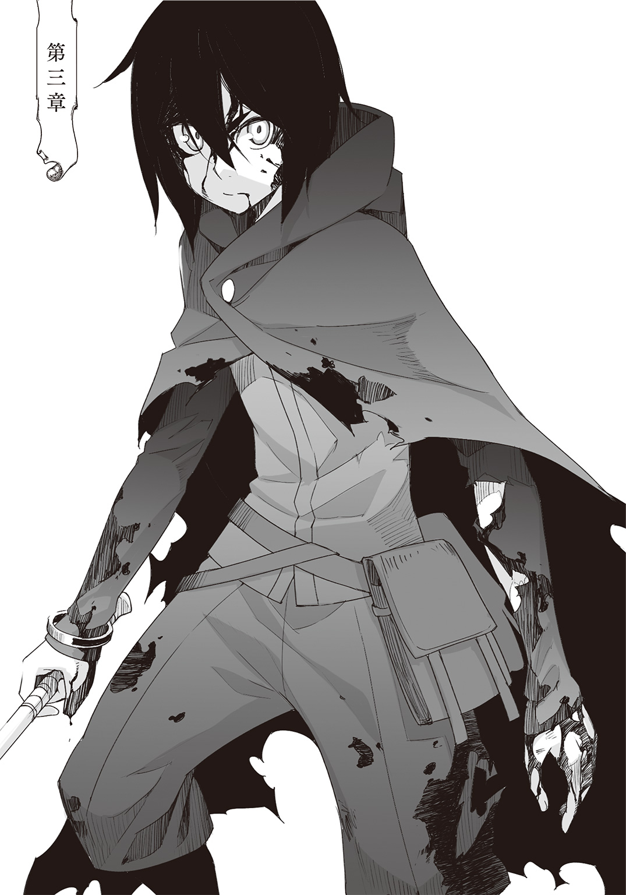
テスは金属製の扉を臆することなく開いた。蝶番が悲鳴のような軋みを上げる。
天井は高く、採光窓が並んでいるが全て塞がれていた。壁の高い位置にぐるりと張り巡らされた金網の通路は荷物置場になっているのか、何やらごちゃごちゃと積み重ねられている。
思ったよりも狭いと感じたのは、空間が区切られているからだった。
奥にも大きな扉がある。
踏み込むと安物の古い魔道光源特有の光量が少なく薄黄色に褪せた光と、むわっとする放熱が三人の身体を撫でた。
だが倉庫内は意外と清潔だった。
僅かに鼻につく化学的な臭いが、そう思わせるのかもしれない。
ランタンとテスが揃って顔を顰めた。
テスはその化学的な臭気により、ランタンは倉庫内に存在する人の多さに。
襲撃を誘っておいてよかった、と切に思う。襲撃に加わっていた六十八名がここに追加されたら、ランタンはそのあまりのむさ苦しさにやる気を失っていただろう。
おそらく三桁を超える数の、暴力的な容貌をした男たちがそこにはいた。
全員、身体が膨らんだように大きくて、露出した肌にははっきりと浮き出た筋繊維とそれに絡みつく太い血管が見て取れた。
だが男たちは暴力的な容貌とは裏腹に彫像のように静かで、ただ入ってきた三人に向けて無感動な視線を寄越すばかりだった。
無数の黒目が一斉にこちらを向く様は極小さな昆虫の群れが蠢くようで、生理的な嫌悪感や不気味さをかき立てるものだった。
ひ、とリリオンが小さな悲鳴を上げた。
男たちはすでに防具を纏い、思い思いの武器を手にしている。戦う準備が万端に整っていた。
「くっ、はっはっはっ！」
笑い声が響いた。
耳障りな哄笑はいかにも演技がかっているが、そこに込められた感情は本物だろう。愉悦、憎悪、苛立ち、そして僅かな恐怖が隠しきれずにある。
下手な役者だ、とランタンは笑う男に冷たい視線を向ける。
目が合った。
男は奥歯を嚙むように口を閉じて、目玉が零れ落ちそうなほどに目を見開いた。それがきりきりと吊り上がった。深い深い、憎しみの瞳だ。
油で後ろに撫でつけた白金色の髪が、はらりと一筋額に落ちている。狭い額、濃い眉毛、黒灰色の瞳、彫りが深く、鼻筋の高い鷲鼻、唇は厚く、笑った時に見えた歯は探索者にしては珍しく全て揃っていて白い。頰に凄味のある傷痕があり、左右のもみあげから顎までを覆う濃い髭が顔の輪郭に男らしさを添えている。憎悪を湛える目がはっきりとした二重だ。
エイン・バラクロフは人相書きで見た時よりも、実際に見た方が色男だった。
もっと神経質そうな優男かと思っていたが、なかなか野性味溢れる二枚目である。
細かな鱗を重ねた胸当てをしており、右手には肘までを覆う手甲を嵌めて、背には弓、腰には矢筒と剣を吊している。
倉庫内にあった哄笑の残響が波引くように消えていった。その代わりにテスが肩を揺らして、くつくつと笑った。堪えきれぬというように。
男の眼球がぐるんと動いて、ランタンからテスへと移動した。
「何がおかしい！」
「この様子ではどうやら我々は誘い込まれたようだな。あの襲撃は準備万端に整えようという時間稼ぎか。くふふふ、我々が来るのをずうっと待っていてくれたのか？ そこでそうやって、我々が入ってきたら高笑いして出迎えようと、どきどきしながら待っていたのか？ それなりに急いでは来たのだが、もっと早く来てやればよかったな」
ここに至る一連の流れに不自然さを感じていたのかもしれない。テスは慌てた様子もなく、嘲るような口調でバラクロフを煽った。
「ふっ、ざっ、けるなあっ！」
「ふざけてなどいない」
場の空気がテス一人に支配されていた。
勝ち誇ったように高笑いをしたバラクロフは怒りに顔面を赤く染めていた。
「乙種探索者エイン・バラクロフ。貴様は遵守すべき探索者ギルド法を犯した。探索者ギルドの一員でありながら反社会勢力に身を置き、あまつさえ迷宮を攻略する僚友へと刃を向けた。その罪、知らぬとは言わせん」
テスは剣の一振りを真っ直ぐにバラクロフへと向けた。断罪の刃は清廉さを湛えるように白く、艶めかしいほどに薄い刀身が鏡のように光った。
「探索者ギルド、治安維持局、第三部隊隊長テス・マーカムの名に於いて貴様を捕縛する。抵抗は無駄と知れ」
バラクロフの唇の震えが大きくなり、頰の傷が引きつった。唇が捲れ上がり牙を剝くように口を開いた。
「――こっのっ、ギルドの犬めっ!!」
「口の利き方には気をつけた方がいい。私への侮辱はギルドへの侮辱と同じだ。これで貴様を斬るべき理由が一つ増えたな。浅はかなことだ」
「どの口が、貴様あっ！ 俺の策にはまったくせに、浅はかなのはどちらか教えてやるっ！ 殺せえっっ！」
バラクロフは喚くように指示を出した。今まで生け捕りを徹底していたリリオンもこちらにいるというのに、怒りに我を忘れていた。
バラクロフは腰元から何かを取り出すと力任せにそれを砕いた。
足元に散らばる破片の音は硝子に似ている。だが握り潰した瞬間に色を失ったその特性は魔精結晶のものだ。
例えば火精結晶は火や熱を封じ、同じように砕けば封じたそれを放出する。なれば今、バラクロフの握り潰した結晶は何だろうか。それは火も水も風も雷も発生させなかった。
目に見えるものではなかった。
「この臭い、......あの魔精薬の臭いに似ている。平気か？」
「身体に異状はないです」
テスが鼻をひくつかせて小さく呟く。つんと鼻の奥に響く臭いだ。
今まで沈黙を保っていた男たちが身体を震わせた。深呼吸して胸を膨らませ、すると皮膚に浮いた血管が目に見えて脈動した。筋肉が痙攣するようにぶるぶる震えてもう一回り膨らんで、男たちは暴力的な容貌に相応しい凶相を顔に張り付けた。
一瞬で一変したその形相は、あの薬中戦士たちの顔と重なってみえた。獣というか魔物というか、理性を剝ぎ取られてしまっている。興奮して歯を嚙み鳴らし、涎を垂らした。
魔精薬の服用方法は基本的に経口か注射だ。けっして空気中に散布して摂取できるようなものではない。迷宮でそれが可能なのは、あくまでも迷宮には高濃度で魔精が漂っているからに過ぎない。
地上でそれを再現しようと思えば、一体どれほどの魔精が必要になるだろうか。
男たちの変化にバラクロフが余裕を取り戻した。
「殺れっ！」
理性はなくとも、男たちはバラクロフの命令に従順に従う。ランタンたちへ一斉に向かってきた。
テスの指摘した通り、バラクロフはここでランタンたちを待ち構えていたようだった。
だがバラクロフの守護を任されているはずの幹部たちの顔はなく、また最高戦力であるはずのカルレロの姿もなかった。
ランタンは戦鎚を手の中でくるりと回して、リリオンが構えた楯を軽く叩いた。リリオンはびくりと身体を震わせる。ランタンの顔を見つめて大きく瞬きした。それからランタンに聞こえるほどの大きな深呼吸をした。
「......くさい」
「今さらだな。格好良いテスさんに見とれるのもいいけど、僕もいる。忘れないでよ」
「うん！」
リリオンは身体の強張りをゆっくり吐き出した。
遠目からバラクロフが弓を構えていた。複合材の屈曲型短弓は黒い本体に赤い弦が張られている。まるで毒蛇のようだった。
きん、と金属的な響きの弦鳴り。矢は薬中戦士たちをあっという間に追い抜いてランタンの目の前に迫った。躱せばリリオンを直撃するそれを、ランタンは戦鎚で払った。砕けた矢の破片に目を細めて、ランタンは身体を沈めた。
先頭を駆ける男の臑を鶴嘴で貫き、放り投げた。後続がそれに巻き込まれ、だが男の重量を屁とも思わず前進する。だがすでにランタンは場を離れていた。
そこでどっしりと待ち構えていたリリオンが三名の突撃を楯で受け止めた。当たり負けはしていない。
ランタンは一瞬だけ振り返りそれを確認すると、男たちの間をすり抜けて混戦のど真ん中で戦鎚を振るった。
あれほどテスに挑発されたというのにバラクロフの狙いはランタンにあった。リリオンから離れたのはその狙いを一身に引きつけるためでもあるし、混戦の中で少女が誰に気兼ねすることなく大剣を振り回せるようにという配慮だった。
男たちは仲間を傷つけることにまるで頓着していない。
ランタンは手近な男に戦鎚を叩き付けた。男が剣で受け、それが砕ける。戦鎚はそのまま止まらず男の胴を狙ったが、男は左脚を一歩退いて半身になり左腕で防いだ。
男は戦鎚を払うと、折れた剣で殴りかかるように斬りつけてきた。ランタンはそれを潜り込むように躱し、男に肉薄する。ランタンの手が蛇のように伸びて男の喉を握った。気道を握り潰し、そのまま振り回した。
飛来した矢をそれで払い、また別の男からの攻撃の盾にした。死体に刀槍が二本も三本も突き刺さり、そのままランタンを刺し貫こうと迫ってくる。ランタンは舵を切るように死体から手を離した。
ぐるん、とその場で回転した死体に武器を絡め取られる。だが武器を失って即座に徒手格闘に男たちは切り換えた。
鱗のように角質化した拳だこが眼前に迫り、ランタンは首を回してそれをやり過ごす。肩で男の手首をかち上げ、自身は沈んだ。踏み込み、鳩尾に畳んだ肘を叩き込む。吐き出された血反吐を慌てて躱す。
一歩後退、左右からの二人は戦鎚の餌食だ。
「――ふう」
男たちを難なく仕留めた。だが動きがいい。
正気を失って闇雲に戦った薬中戦士たちとは実力が違った。正気を失ったまま的確に行動してくる。それは戦い方が身に染みついているということなのだろう。
だが結局は個人での戦いに過ぎない。彼らに連携というものはほとんど見られなかった。
ランタンは男たちとの戦闘をこなしながら、バラクロフへの注意も怠らず、また視界の端でリリオンを見つめる。テスさんは、と確認は一瞬だけしてすぐに逸らした。
テスへの心配など、身の程知らずがすることだ。
その手に握った二振りの剣は男たちの防具の隙間へ水のように滑り込み、そこにある命を刺し貫いた。襲いかかる剣戟はまるで彼女を捉えることができない。これほどの混戦であっても彼女の剣技は澱むことがなく、むしろ一人また一人と葬る度に更なる冴えをみせるようだった。
そしてそれでいながらテスもリリオンを気にしてくれている。
テスは番犬のように少女の死角を補い、一定の距離以上離れなかった。
助けられてばかりだ、と思いながら袈裟懸けをしゃがむように避けて、また撃ち込まれた矢を飛び退いて躱した。すると目の前で男が斧を振りかぶっている。誘導された。
いくらかも人数を減らしたが、どこに避けてもまだ敵がいる。
振り下ろされた斧をランタンは戦鎚で受け止めた。柄が掌に食い込むほどに重たい一撃にランタンの足が止まった。そこを目がけて別の男が背中に目がけて剣を薙ぎ払った。
「くっ」
ランタンは両手で支えていた戦鎚から左手を離し、斧の柄を取って引き倒すように位置を交換した。斧の男の背中に剣が半ばまで斬り込まれて、ランタンは胴に前蹴りを叩き込む。後ろの男を巻き込んだ斧の男は吹っ飛び、ランタンの手の中に斧だけが残った。
伸びたままの蹴り足に剣が振り下ろされる。ランタンは腰を捻って伸びきった足を引き寄せて、斬り下ろしを辛うじて避けるとそのまま回転して男の顎を蹴り飛ばした。
虎の亜人だ。
顎が砕け、牙が撒き散らされ、首が折れた。仰け反るように崩れ落ちる。その瞬間。
「なっ――!?」
その身体が背中を突き上げられたように跳ね起きた。
身体を起こした勢いで両の腕が大きく弧を描いて振り回される。あまりの速度と勢いに男の肩肘が脱臼する。虎爪の両手は挟み込まれれば致命傷になりかねない。それはまさしく虎の爪と同様に鋭い。
退くには脱臼した分だけ伸びた腕が邪魔をする。なれば踏み込め。
手に持った斧の重さを利用して、ランタンは背骨を捩るように前傾した。右肩を前に突き出し、後をついてくる左手の斧が加速する。
「うらあっ！」
胴体を両断し、ランタンは斧を手放した。そして男を貫いた矢がランタンを狙い、ぶわりと翻った外套に絡め取られた。あの日の廃墟での戦闘の再現だった。
ランタンは矢を折り慌てて引き抜く。今度は完全に穴が開いてしまった。
斧はバラクロフの方へと回転して飛んでいったが、直撃することはなかった。バラクロフはランタンを睨んで微動だにしない。ただ放射される殺意が激しさを増した。
「血の色が、濃い......」
その場に残った虎の半身から溢れた血が酸化したような色をしていた。
縞模様の入った橙色の体毛が、ぐっしょりと濡れている。
「ああもう」
悪態を吐いたランタンにバラクロフは次々と矢を放った。
バラクロフはテスやリリオンをまるっきり無視してランタンばかりを狙っている。
「くそう、何なんだよ」
ランタンは悪態を吐きながら、横目にバラクロフを睨んだ。どれだけ見てもやはり記憶の中にバラクロフの顔は思い当たらない。一体いつ、何をしてこれほどの恨みを買ったのか想像もつかなかった。
嫌な男だ、と思ったのは身に覚えのない憎悪を向けられることへの苛立ちと、バラクロフの振る舞いのせいだ。
男たちへの援護と、ランタンへの牽制。ここぞというタイミングでランタン自体を狙う射撃は正確無比と言っていい。この混戦の中で男たちへの誤射は一つもない。男たちを貫いてランタンに襲いかかった矢の幾つもが、バラクロフの狙い通りなのである。
ルーの話を思い出した。バラクロフは探索班の指揮者だった。
指揮者は時に仲間に死を命じる。それは探索班が迷宮を攻略するため、犠牲者を最小限にするため、目的を果たすために必要だからだ。
だから仲間たちもそれに従う。
だがバラクロフのこれは、そういったものではない。
ただ一人、戦闘の外側にいる。戦士たちの全てがバラクロフにとっては駒である。自立する囮であり、己を守る盾である。バラクロフの第一目的はランタンの殺害のようだが、戦士たちはバラクロフが生き残るために使われている。
ランタンは乱戦の中を遊撃する。ランタンの小軀は男たちの中にあって埋もれてしまう。だがそれでもバラクロフはランタンを見つけ出す。それは妄執であるし、ランタンの通り道で男たちが崩れ落ちていくからでもある。
気が付けば壁際まで来てしまった。反転するとバラクロフの笑みが見えた。勝利を確信するような、頰の裂ける笑みだ。また誘導されたようだ。
バラクロフが矢をばらまく。後ろは壁で、前から取り囲むように九人も。前列五、後列四の二列横隊がまるで射られた矢束の一部であるかのように猛然と襲いかかってきた。
「はっ」
ランタンは攻撃的に笑った。
ランタンの小軀に陽炎のごとき揺らめきが立ち上り、何もかもが突き刺さるその直前に大気が爆ぜた。爆音は、静寂にも似た耳鳴りを呼び寄せる。真白い閃光の中で、ランタンの瞳が鮮やかな赤を湛えて浮かび上がった。
地震でも起きたように倉庫全体が震えて、採光窓の尽くが粉砕した。魔道光源の光が不規則な明滅を繰り返し、壁や床は焦げ付き、煮え立ち、硝子化してひび割れる。
急速な燃焼により膨張した大気が巻き起こす爆圧が矢を明後日の方向へと吹き飛ばし、男たちの身体は炭化し、骨は砕け、内臓が破裂した。
「出し惜しみは、するものじゃあないね」
ランタンは自ら発した熱でひび割れた唇に舌を這わせる。
爆発能力は強力で、それ故に高揚感の呼び水でもある。だがこれに溺れてはいけない。そうなれば獣も同然。
ランタンは頰を引きつらせたバラクロフに牙を剝いて笑いかけた。
興奮と喜びは別だ。戦うことに興奮しても、それは喜んでいることにはならない。その証明はまた今度考えるとして、取り敢えず今はそうなのだ。
ランタンは昨晩の葛藤に終止符を打ち、左右に視線を走らせる。
爆発の破壊力を間近で見たのにもかかわらず、男たちが死んだ男の穴を埋めるように向かってきた。だがそこにバラクロフの矢はなく、人数も二人。
爆発の衝撃は失せ、だがランタンの周囲に滞留する熱波に肌を焼きながら男たちが吠える。
ランタンが戦鎚を薙ぐと、男たちの胴体が弾け飛び、その頭部だけが慣性と重力によって落下しながら前進する。すれ違い様にランタンと目があった。まだ戦おうとしている。ランタンは、ふん、と鼻を鳴らした。いい根性をしている。それが薬物の影響であったとしても。
ランタンは更なる制圧能力をもってバラクロフに向かった。今までは数減らしと攪乱の意味も込めて倉庫内を駆け回っていたが、もう我慢ならなかった。
迫り来るランタンにバラクロフが険しい顔つきで慌てたように矢をつがえ、けれども正確に射った。何度も、何度も。ランタンはそれらを戦鎚で叩き落とし、また男たちを盾にして最短距離を進んだ。
風切り音が耳を撫でる。一つの矢が耳朶を揺らした。微かに触れたのかもしれない。耳朶がほのかに熱を持っている。だがランタンは止まらない。
ランタンは矢のように真っ直ぐ進んだ。皮肉げに頰を歪め、バラクロフに肉薄する。
「......っ!?」
速い。つがえた矢を放すのが。
もっと引きつけて射れば避けるのは困難だったかもしれない。ランタンは首を傾げただけでそれを躱し、戦鎚を横に薙いだ。バラクロフが手首を翻し、弦の震えも収まらぬ弓でランタンの一撃を受けた。
弓は流石のしなやかさだった。
今まで叩いたことのない奇妙な感覚が伝わる。押し返してくるような反発力と、どこまでも衝撃を呑み込む柔軟性がランタンの一撃を完全に殺した。ランタンは思わず目を見開いた。弓の品質も素晴らしさもあったが、バラクロフの手首の強さもあってのことだった。
腐っても探索者と呼ぶべき体捌きは弓で戦鎚を受けて体勢を崩しながら、腰元の剣を抜いた。
ランタンは手首を返して弓を弾き、抜き打ちの一撃を止める。衝突に火花が伴い、押しつけられた剣が戦鎚に巻き付くように滑る。巻き落とし。
ランタンは戦鎚を引っ張られて身体が泳ぎ、バラクロフは力任せに剣を斜めに振り上げる。
速い。
ランタンはがら空きの胴を庇うように、左の掌でそれを受けた。
一瞬を更に細かく切り取った刹那、掌で剣が完全に停止した。それで充分だった。ランタンは体勢を立て直すと同時に爪先を跳ね上げて剣の鍔元を蹴り飛ばした。
必殺の一撃を止められたバラクロフが苦々しげに距離を取り、けれどランタンの手から滴る血を見て歪な笑みを浮かべた。掌の切れ込みは薄皮一枚。
「毒......？」
だがこの上ない笑みだった。
小さく呟いたランタンは転がる剣の欠片を蹴り上げて、左手に握り込むと爆発で包み込んだ。加減ができない。ランタンは熱した金属片を半秒手の中に握り、バラクロフの方へとそれを放り捨てた。
傷口を熱して塞ぎ、毒を焼いたのだ。耐毒薬も服用しているが、念を入れるに越したことはない。
ランタンは火傷で引き攣る皮膚を無理矢理伸ばすように何度も手を握っては開いた。乾いた血がひび割れて剝がれる。痺れるように痛むが、それだけだ。
バラクロフの笑みが凍った。
「な――、なんなんだよっ、お前はっ、お前が、お前のせいで――」
僕がお前に何かしたか、と喉奥まで迫り上がった言葉をランタンは呑み込んだ。
「何故、あの子を狙う。ついでに僕のことも」
「目障りなんだよおっ！」
ランタンが一歩前へ踏み出すと、バラクロフは鋒を向けたものの気圧されたように後退った。じとりと額に脂汗が浮いて、目の焦点は定まっていない。この空間の中にあって正気を保っているのはランタン、リリオン、テス、そしてバラクロフの四名だけだったが、その眼球運動が薬物中毒者のそれに似て痙攣する。
この状況で問い質しても答えは返ってこない。
ランタンは疾走った。
「ああああああああああああああああああああああっ!! 来るなああっ！」
接近するとバラクロフが絶叫を迸らせ、それに引き寄せられるように生き残った男たちがランタンに群がった。
ランタンとバラクロフの間に割り込んだ男は戦鎚の一撃に胴をくの字に折られて反吐を吐き散らし、それでも戦鎚にしがみついた。目鼻口耳から溢れた血の色が濃い。男たちの中には何人かそういう者がいて、彼らの全てがしぶとかった。
指が折れ、あるいは引き千切れても戦鎚を放さない。また別の男が剣を腰だめに構え、あるいは槍を引き絞り、手斧を振りかぶった。同士討ちが発生しようともお構いなしだった。
「ええいっ、鬱陶しい！」
ランタンは組み付いた男を盾に剣を防ぎ、バラクロフへと視線を戻す。だがそこには振り回される槍の穂先があった。ランタンは仰け反り、そのまま後転して振り下ろし槍を避け、立ち上がり様に突き出されたそれを奪った。
「ランタンっ!!」
槍を床に突き刺して、その上に飛び乗るように身体を持ち上げる。
駆け寄ってきたリリオンが大剣をぶん回して辺り構わず何もかもを撫で斬りにした。
槍ごと。
ランタンは短槍よりも短くなった槍を手に空中に放り出され、バラクロフを探した。
バラクロフは背を向けて逃げ出そうとしている。ランタンは腰を切って槍を投げ、それはバラクロフを掠めて、その背後にある扉にぶち当たった。外した。鐘を突いたような空洞音が高く響く。投擲攻撃はどうにも苦手だ。
ランタンが血溜まりに着地すると、振り向いたバラクロフの唇が震える。何事か呟き、それがランタンの耳に届くことはなかったが呪詛であることは間違いなさそうだった。
ランタンが足元の水気を嫌い爆発を発すると、バラクロフは扉の向こう側へと消えた。
「――なかなか派手じゃないか、ランタン」
「僕に触ると火傷しますよ」
追おうとしたランタンの背に声が掛けられ、思わず足を止め振り返った。
「それはなかなか魅力的な誘惑だな」
ランタンは身体に纏う熱を払うように外套をはためかせ、靴底にこびりついた焦げ付きを床に擦りつけて剝がした。
テスが剣を腰に戻しながら、ゆったりと首を回す。
死屍累々。
軽い口調で話しかけてきたテスの背後には夥しい数の骸があった。そして一目見るだけでテスが手を下したものとそうでないものの区別がついた。
「君たち二人はやはり魅力的だ」
一刀の元に倒れほとんど傷のない骸と、獣が食い散らかしたようなそれら。
「――この程度ならば子守は必要ない、そうだろ？」
ランタンはいつの間にか視界から外してしまったリリオンを見つめる。
リリオンはただ一人、誰の助けを借りることなく男たちと戦っていた。もう最後の三人だ。
大剣を振りながら後退し、男の踏み込みを牽制する。その牽制をかいくぐった別の男は、高速の斬り返しをどうにか盾で受け止めて、その場に踏ん張った。それがいけなかった。
「ふうっ！」
威嚇する猫のような息吹。金属製の盾をリリオンが押し切った。男が両断される。
残り二人。リリオンは大楯を引き寄せて、突き出された槍を防ぐ。楯に角度を付けて槍の穂先を受け流すと、そのまま柄を滑るように突進した。直撃、そして楯を薙ぎ払う。
ぶ厚い大楯を叩き付けられた男は衝突事故に巻き込まれたように錐もみしながら壁際まで吹き飛んで動かない。
最後の一人が、足元の剣を蹴り上げて二刀流になった。犬人族の戦士だ。頭上の耳と下肢に獣の遺伝子を強く発現させている。ぐるぐると唸り声を上げて、恐ろしげな顔つきでリリオンを睨み付けている。
リリオンは楯を前に構え、大剣を肩に担ぐ。
「過保護だな」
加勢に向かおうとしたランタンをテスが静止した。
「できないことを手助けしてやるのは優しさだが、できることをやらせないのは傲慢でしかないよ」
「......わかってます」
「うん、――見ていればよく判るよ。よく我慢している、色々なことをね。それは君たち二人が一緒にいるためには必要なことだ。いつでもどこでも君があの子を守り続けるというのは――、ランタンならば、もしかしたらできるかもしれない。けれどそうなればリリオンは一緒にはいられないよ」
犬人族の戦士はかなりの強敵だった。彼の二刀流はテスとは違い、荒く重たい連撃だ。楯に防がれようとお構いなしにその上から剣を叩き付け、血溜まりをまるで意に介さない流れるような足捌きでリリオンを翻弄している。
「爆発を駆使すれば、バラクロフを殺れたんじゃないか？」
「それでは色々聞けませんので」
剣撃に合わせて楯を突きだした。戦士の両腕が弾かれて、大きく後ろに後退した。リリオンが追撃を掛け、攻守が交代した。
「やるなあ、今の踏み込み。力任せのぶん回しだけど、あの速度と威力だと内側に入るのは難しいな」
手練れの戦士をリリオンは圧倒している。大剣の振り回しが、二刀流の手数を上回っていた。ただ戦いに没頭して、ランタンたちに見られていることにも気が付いていない。
「僕はあまり、いらなかったかもしれませんね」
テスはランタンの頭をくしゃりと搔き回した。
「すっかり冷めて、冷たくなってしまったようだな。ランタンがバラクロフを引きつけてくれたおかげで、私もあの子もずいぶんと好きにやらせてもらえたよ」
「......引きつけたと言いますか、勝手に引っついてきただけですよ」
「おや、モテる男はさすがだな」
「ほんと困っちゃいますよ。――悩みが多くて」
ランタンが表情を緩めて肩を竦めるとテスは喉を震わせて笑う。
そんなテスにランタンは言った。
「一体何を考えているんですか？ バラクロフを逃がして」
「リリオンにずいぶんと食われてしまって、実は物足りないのだ。奴も出てこないし」
テスは自らの腹をぽんと叩いた。何か考えがあるわけではなく、テスは本当に欲望に忠実なだけなのかもしれない。ランタンは呆れたようにじとりとテスを睨んで尋ねる。
「これらが前菜ならば、主菜はなんでしょう」
「もちろん牛だろう。料理は私たちがしなければならんがね。――ほうら、大丈夫だったろう？」
「そう、ですね」
視線の先でリリオンが犬人族の戦士を打ち破った。
リリオンの猛攻に耐えきれず剣が根元から砕け、男は楯の下を潜るような低い姿勢でリリオンの足を狙ったが襤褸雑巾のように蹴り上げられた。そして両断された。
リリオンは切り裂いたままの形で、大きく肩を上下させて息をしている。
「呼んであげな」
「――リリオン！」
ランタンが名を呼ぶと、リリオンはびくんと身体を震わせた。振り向くと頰に一筋の血が付着していた。ランタンは一瞬斬られたかと驚いたがただの返り血だった。リリオンは大剣から血を振り払って、ランタンに駆け寄る。
足元の血溜まりや骸をスキップするように跳び越えた。
滑って転んだら悲惨だな、と思っていると案の定滑った。ランタンもまたリリオンに歩み寄っており、転ぶ直前にその身体を抱きとめる。
ランタンが手を伸ばして頰の血を拭う。リリオンは身体を折りたたんでランタンの髪に頰を寄せた。
「よく頑張ったね」
「んー」
背を撫でてやるとリリオンは甘えるように声を漏らした。
細い腰、動悸する心臓、汗で湿った身体は熱っぽい。
「おい、デザートにはまだ早いぞ」
テスが呆れたように言った。
◇◇◇
「何人かしぶといのいませんでした？」
「いたな。リリオンが最後に斬ったあれもそうだ」
犬人族の戦士は上半身と下半身に分断されて、それでもしばらく胸が上下に動いていた。今はもう動かぬその骸が沈む血溜まりは煮詰めた以上に濃い、暗い色をしている。
「紫の血だな」
それは慢性魔精中毒者に発現する特徴の一つだった。魔物の血が青いのは血液が魔精の溶媒として優秀な物の一つだからだ。人の血であっても長期間に渡り、魔精を摂取し続けると血の色が変化する。血の赤と、魔精の青が混じり紫色に。
慢性魔精中毒の症状は凶暴性や攻撃性の増加、ずば抜けた生命力などがある。
魔精を取り過ぎると魔物になる、というのはただの脅し文句だが、慢性魔精中毒者が魔物じみているというのはランタンも聞いたことがあった。
「十に一人ぐらいか。あの魔精薬の影響だろうな」
「ええ、敵ではありませんでしたが。ですが散布する魔精薬など聞いたことがありません」
「......わたし、そういうのわからなかったわ」
リリオンが二人の会話には入れずに、しゅんとして、気を引こうとするようにランタンの外套をちょんと摘んだ。
ランタンはそんなリリオンの腰に手を当てて慰めた。
一生懸命に戦っていたリリオンには、男たちの違和感を気にする余地などなかったのだ。
リリオンの戦闘は純粋だ。ランタンのようにあれこれと考えを巡らせることはなく、バラクロフのような感情に囚われることはない。
戦闘から一歩離れれば、まだまだ悩める少女であるのだが。
「そういったものも含めての調査だよ。私はこれでも仕事中なんだから」
「え、そうだったんですか？ てっきり趣味を楽しんでおられるのかと」
「否定はしないよ。まだ私が楽しむには足りないがね――」
バラクロフの逃げ去った扉の向こう側から、獣の雄叫びが聞こえた。金属扉がびりびりと波打って、その向こう側から全身が総毛立つような重圧が放たれる。
それは迷宮最奥の白い霧の前を思わせた。
鬼が出るか蛇が出るか。いや決まっている。扉の向こうにいるのは牛である。
「どうやら、用意が整ったようだな」
「言っている場合ですか。リリオン、下がるよっ！」
「はいっ！」
雄叫びとは真逆の華奢な返事をリリオンが返すと同時に、三人が大きく後ろに跳躍した。
瞬間。
分厚い金属扉が内側から爆破されたように拉げて弾け飛んだ。
迫り来る一枚をテスが斬り飛ばし、もう一枚をランタンが殴り飛ばした。それはリリオンの頭上を飛び越えて背後に落ちる。そして何度も跳ね転がりながら床を滑り、入ってきた扉を吹っ飛ばして外に抜けた。
流れ込んだ外気には血の臭いが混じっている。外にルーの姿はなく、何人もの倒れる姿があった。外でも戦闘が行われていたことは明白である。
「何とも乱暴な」
「......あんな真似したらダメだよ」
「もうっ、わたしそんな事しないわ」
ランタンは視線を戻し、現れたそれをまじまじと見つめた。
ファミリー頭首フィデル・カルレロの威容を。
「まるっきり魔物だな」
テスが思わずというように呟いた。
リリオンが視線を上げ、ランタンは喉が露わになるほど顔を上げた。
真っ黒く塗り潰されたような眼球がぎょろりと辺りを睥睨する。
司書から教えられた情報では身長二メートル、体重一六〇キロのはずだ。だがカルレロの巨軀は、それから大きくかけ離れていた。疾うの昔に成長期を過ぎたカルレロの身長が二メートル半に迫るほどとなっている。
どうやったのか教えてほしい、とランタンは思う。
その上背に相応しい体格は、赤銅から削り出したかのようである。全身の、特に首や肩の筋肉が尋常でなく発達しており、剝き出しになった真っ赤な上半身には一つまみの脂肪も存在しない。皮膚を透かして浮かび上がる筋肉の塊が、皮下に寄生した別の生物のようだ。
こめかみの辺りから迫り出す野太い角がいかにも威圧的であるが、それよりも目を引くのがその手に握った長柄の半月斧である。
カルレロの巨軀のせいで普通の大きさのように錯覚させられるが、その斧頭はランタンの胴体ほどもある。並の探索者ならば持ち上げることも叶わず押し潰されてしまうような、巨大な力の塊。
カルレロはそれを軽々と振り回し、巻き起こった斧風がランタンの髪をばさりと揺らした。カルレロは荒々しく鼻息を吹き出した。それは怒りに熱されて白い蒸気となる。
カルレロは正気を失った眼差しで辺りを見回した。倉庫内に散乱した骸を、そしてその中に立つ三人を睨み付けて慟哭の叫びを上げた。ランタンは雄叫びの中に混じる、掠れて震えたような音色に眉根を寄せた。
カルレロ・ファミリーは元々カルレロの人望によって纏められていた組織だ。
「おおおおおおっ！ おおおおおおおおおおおっ!!」
言葉は失われている。かつてルーが発声を封じられたように、それよりも乱暴な方法で。
カルレロの背後にバラクロフが潜んでいた。
「そうだ、あいつらがお前の息子たちを殺したんだ。憎いだろう、殺したいだろう」
バラクロフがカルレロに語りかける。言葉が重なるごとにカルレロの顔が色を濃くし、どす黒く、憤怒に染まっていく。バラクロフの意のままに。
「――いきます」
ランタンは囁くように伝えると足元の手斧を蹴り出して、同時に疾走し跳躍する。
「ぬぅんっ！」
半月斧による下段の薙ぎ払いは、倉庫の床材を吹き飛ばした。
風の魔道もかくやという爆風が手斧どころか床に転がる骸や血溜まりを壁際まで押し飛ばす。ランタンは風を受け外套を膨らませて更に高く跳ぶ。一気に上昇し、外套に孕んだ空気を抜き、天井を蹴りカルレロを強襲した。
カルレロの横面を吹っ飛ばすように振るった戦鎚が、跳ね上がった半月斧に阻まれる。切り返しの速度がテスの一刀に匹敵した。隕石のような衝撃が全身を駆け巡る。爆発を使用していたら、その炎熱が自らに押し返されていただろう。
ランタンは打ち負かされて吹き飛ばされ、どうにか着地をしたものの踏鞴を踏んだ。
迷宮から遠ざかった元探索者への侮りがあったのかもしれない。体格差が覆されることはなく、純粋な力比べでは完全にカルレロに分があった。額や首に汗が滲む。
カルレロが吠え、その横合いからバラクロフが矢を射った。ランタンはそれを戦鎚で迎え撃つが、テスが怒鳴った。
「上だっ！」
視線を上げる間もなく転げるように後ろへ引いた。ランタンの影が頭上から襲いかかってきた何者かに砕かれる。そして立ち上がり様に察知した殺意に、ランタンは首を守るように戦鎚を立てた。襲いかかってきた何かを止め、だが長柄の後端を握ったカルレロの薙ぎ払いが迫っている。
衝撃。それは柔らかさと、冷たい汗の匂いだった。
割れた採光窓から飛び込んできたルーが半月斧とランタンの隙間に滑り込んで、ランタンの小軀を抱きすくめる。
無重力に似た浮遊感は吹き飛ばされた衝撃とルーの魔道の影響を受けているためだ。
ランタンはルーの胸に抱かれて、彼らの攻撃圏内から脱した。
ルーの魔道を以てしてもカルレロの一撃は殺しきれない。彼女はカルレロの一撃を首枷で受け止めた。犯罪者を拘束するために作られた堅牢強固な首枷が破壊されている。
「ぐっ、――遅くなりましたわ」
ルーはランタンを降ろすと外れた顎を嵌め、唇を濡らした血を拭い、顎に手を当ててばきりぼきりと頸椎を鳴らした。先の一撃で骨がずれたのだろう。頰を膨らませて、息を一気に吐き出す。首から肩に掛けての筋肉群が収縮し頸椎があるべき形に収まった。
ルーの肌は汗に濡れている。蛙人族の皮膚は濡れると独特の質感を帯びた。ぺったりと吸いつくようで、それでいてぬるりと滑るような。
その肌に幾つもの怪我が浮いていた。
テスが追撃を牽制しながら、戻ってきた二人に声を掛けた。
「くふふ、おかえりランタン。それにルーも」
「......ただいま」
リリオンはテスに腕を摑まれていた。今からでもランタンに飛びかかりそうなほどだ。
「ランタンっ、大丈夫っ!?」
「おかげさまでね。――ありがとうございます、助かりました」
ランタンがルーに視線を向けると、微笑みが返ってきた。頼もしい仲間が一人増えた。
だが敵は二人増えた。バラクロフの護衛、その傍を固めていたとされるファミリー幹部である。
一人は蜥蜴人族だ。
目元まで裂けるような顎門を開き、青い舌が舌舐めずりをした。胸から下腹部までを防御する鞣し革の軽鎧を身につけて、剝き出しの腕や背中は鰐にも似た濃緑の鱗板に覆われている。それは延髄から脊椎、そして尾骨上にかけて厚さを増し、まるで背びれのようになっていた。
それは天然の鎧だ。
ランタンの頭上から落ちてきてその勢いで叩きつけた大鉈が床にめり込み、また自身の重量ですり鉢状に陥没していた。のっそりと立ち上がって、固そうな尻尾が床を叩いた。天井からぱらぱらと破片が落ちる。威嚇の威力ではない。
もう一人は人族のようにも見えるが、事前情報によれば蠍人族だ。
ひょろりと背が高いのだが、その手に握られた極細い刺突剣が重たそうに見えるほどの酷い猫背で、頭髪のないのっぺりとした顔は色が悪く黄みがかった砂色をしている。変拍子で左右に揺れて、ランタンたちをどこか茫洋とした眼差しで見つめていた。
蜥蜴とは正反対の冷淡さがむしろ不気味である。
カルレロほどの脅威はないと思いたい。だが二人からは見た目以上に、独特の存在感が感じられた。相応の使い手なのだろう。肌が粟立つ。
「ルー・ルゥッ、貴様あっ！」
ルーの姿を見てバラクロフが怒鳴り声を上げた。
「今さら顔を出したかと思えば、これは一体どういうことだっ！」
「どうもこうもありますか、ご覧の通りですわよ」
「――っ、貴様が苦しんでいる時、薬をくれてやった礼を忘れたかっ！」
ルーが髪を搔き上げた。おっとりした垂れ目が、冷淡な光を帯びてバラクロフを貫く。
「あなたから施しを受けたことなどありませんわ。対価はきちんと支払いました。あれはれっきとした取引ですわよ。それに、まがい物を摑ませたのはそちらでしょう？ うんざりしますわね、わたくし自身にもですが」
ルーは手首の探索者証に触れた。それは探索者の誇りである。
「守銭奴との誹りを頂く傭兵探索者を謀ったこと、後悔するには遅くてよ」
バラクロフはぎりぎりと歯嚙みしたかと思うと、大きく息を吸った。殺せ、と発したその言葉はもう言葉の体を成していないほどに荒れ果てている。
「おい」
「なんでしょう？」
「カルレロは貰っていくぞ」
テスが好戦的に喉を鳴らした。そこには隠しきれない獰猛さがあって、ランタンは反射的に頷いた。テスの毛皮がぶわりと膨らんで立ち上がった。それは喜びであるのかもしれない。
怖い人だ。おそらく、この空間の中で最も。
「お気に召すままに、どうぞ」
「すまんな。――だがもし危なくなったら呼べ。どうにかしてやる」
頼もしく、けれど投げ遣りにそう言った瞬間、テスが疾駆した。
刹那の間にカルレロに肉薄している。だがカルレロも反応していた。
浅い角度で切り上げられた半月斧がテスを両断しようと襲いかかる。しかしテスは速度を落とさずそのまま半月斧に突っ込んで、斧頭に手を添えると軽々とそれを跳び越えた。抜刀。カルレロの顔面に放たれた刺突は鋭い。
高速の平突きは、しかしカルレロの顔面を滑った。カルレロは驚くべき反応速度で血も滲まぬ薄皮一枚だけを斬らせて避けた。かと思われた時、テスの背後に隠されていた左の剣が角を目がけて振り下ろされた。躱された右の剣が連動して振り上げられる。
狼の顎門そのものだ。それは角の根元に食らいつき、嚙み切った。
「くふ、面の皮は厚いようだが貴様のモノは何とも柔いな。いくら大きくとも、それでは私を満足させられない」
角を切り落とした澄んだ音に負けず劣らず、冷たく冴えた声でテスが嘲笑った。床に落ちた角を突き刺して、それを放り投げる。
テスは右の剣を口に咥え、角を手に取った。
「ふっ!!」
光線のような投擲だった。それは目にも止まらぬ速さで、カルレロの脇腹を掠めて奥の部屋へと投げ込まれた。耳を劈くような衝撃音と悲鳴が聞こえた。
「どこの誰かは知らないが、戦場にあって高みの見物とは趣味が悪い。――くふふ、客か、主か、それともまた別の知り合いか？ あとでゆっくりと話を聞こうじゃないか」
テスの鋭い視線に晒されたバラクロフが、縋るようにカルレロを見た。
「ぐるるるううああああっ!!」
だがカルレロは咆哮して、半月斧を振り回した。もうすでに言葉は理解していないだろうが、角を失った以上の怒りに暴走している。半月斧は壁を破砕し、巻き込まれ掛けたバラクロフが転ぶようにそれを避け、テスはさっさと奥の部屋へと歩いて行った。
奥の部屋がちらりと見える。そこは倉庫とは思えぬほどに清潔だ。実験室や手術室を思わせる。おそらくそこでバラクロフの手駒は生み出されたのだろう。
だが処置は完全ではない。
薬物による洗脳は不完全だ。怒りによって手綱が千切れ、カルレロの至近はバラクロフにとっても安全な場所ではなくなった。バラクロフは忌々しげにその背を睨み、吐き捨てた。
「こっの、単細胞の馬鹿が！」
馬でも鹿でもなく牛だろうに、とランタンは取り留めもないことを考えながら、テスがカルレロを引き受けてくれたので気兼ねなくバラクロフへと走った。だが同時に蜥蜴と蠍がその行く手を阻んだ。
蠍がランタンに迫って刺突剣を突き出した。耳元で大気が穿たれた音が鳴り、その鋒がぐにゃりと曲がり、側頭部を削ぎ落とさんと撓った。ばっと髪が散った。
ランタンは身体を傾かせて戦鎚を振る。猫背によって差し出された頭部は、けれど高い位置にあり、腹部は弧を描いて遠い。なれば突き出された腕を、と思えば肘が外転し刺突剣が引き戻される。それはランタンを背後から刺し貫こうとした。
「ちっ」
ランタンはその場で急停止して、戦鎚の勢いを力任せに方向転換した。刺突剣をどうにか受け、鍔迫り合いが始まる。酷く瘦せている蠍だがその圧力はランタンの動きを封じた。ただ力が強いだけではなく、技術があるのだ。
視界の端で蜥蜴が大鉈を振りかぶっている。だがそれが振り抜かれることはない。
楯を構えたリリオンが蜥蜴に突っ込んでその巨体を吹き飛ばした。浮かび上がった緑の巨体は、しかし尻尾を巧みに使って体勢を立て直す。だがそこにルーの追撃が入った。身の内にまで潜り込むと、蜥蜴の喉元を食い破るような掌打を撃ち込んだ。
蜥蜴が呻き声を上げて、お返しとばかりにルーへ肘を振り下ろした。ルーは腕の交差にそれを受け止め、駆け寄ったリリオンの横薙ぎに蜥蜴が離れる。
ランタンはそれを見ながら安堵しつつ、自らの身体に爆炎を纏った。蠍が後退しつつ爆風を切り裂き、入れ替わりにバラクロフの射った矢が爆炎の突き抜けた。
だがそこにランタンはいない。
自らの爆風に乗って真横にすっ飛んだランタンは壁を走り、バラクロフへと躍りかかった。
「ベルムドッ！」
しかしそれを蠍が邪魔をする。戦鎚の一撃を止められて表情が歪む。ランタンは鍔迫り合いを避け、乱暴に戦鎚を振り切って後ろに跳ぶと、さらに蜥蜴を蹴って距離を取った。
「なかなかやる」
苦々しく呟いたランタンにバラクロフは勝ち誇ったように笑った。
「――あなたのことじゃないわっ！」
だがリリオンが大剣を向け、まるで叱るように怒鳴った。呼吸を整えていたランタンは思わず笑ってしまう。ルーも口元を押さえている。
ぽかんとしたバラクロフの表情が、赤く染まった。
それは怒りというよりは羞恥なのだろう。
「あら、辛辣。でもたしかに、あなたは何も変わりませんものね。たまにはご自分が前に出てはいかが？ 勇気を示さねば探索者はついてきませんわよ。よくご存じでしょう？」
くすくす笑うルーが、あからさまに挑発した。
「ぐ、がっ、ああっ、どいつもこいつもっ、黙れっ。俺に指図をするなっ。何の知能もないっ、野蛮なっ、カスどもがっ!! 俺の言うことを聞いていればいいものをっ！ 群れなきゃ何もできないくせしやがってっ!!」
蜥蜴と、ベルムドと呼ばれた蠍はバラクロフを守るように立ちはだかっていた。
「何かの冗談か？ それはお前だろう。薬物で意志を奪って、そうやって作った兵隊たちに囲まれているじゃないか。もう囲むほどもいないけど」
ランタンが呆れるように言い放つと、その背後で怒りと羞恥に赤く染まり歪んでいたバラクロフが頰を痙攣させた。
そして癇癪を起こしたように腰元から取り出した魔精薬を砕いた。
床に叩きつけ、握り潰し、蜥蜴と蠍に投げつけた。魔精を封じたありったけの結晶が、破片となって色を失っていく。魔精の臭いが鼻についた。
「ぶち殺せっ!!」
獣の叫び声がランタンの脳髄に刺さるようだった。
バラクロフの散布した魔精薬が、飽和して靄となるほどに漂っていた。
感覚の異常拡大。それは魔精酔いの症状に他ならない。
◇◇◇
高濃度の魔精はランタンたちには魔精酔いをもたらしたが、蜥蜴と蠍にはまた別の変化を与えた。
そう、それは変化である。
二人の肉体が一回りも二回りも膨らんだ。筋肉が断裂し、即座に再生し、肥大化する。筋肉を納めきれない皮膚が弾け、溢れ出た濃紫の血が瘡蓋となり、あっという間に剝離した。
瘡蓋と一緒に蜥蜴の鱗が生え替わった。その下から新たに生まれた鱗は更に厚みを増して、荒々しくささくれ立つ。蠍もまるで脱皮でもしたかのように、外骨格に似た硬質の皮膚を瘡蓋の下から露わにした。
揺れる視界の中で目にしたその変化に、ランタンはテスの言葉を思い出した。
「まるっきり、魔物だな」
魔精薬をたらふく浴びた蜥蜴と蠍は、まさに魔物の様相と成り果てていた。
揺れる視界の中、ランタンは警戒を切らさぬままリリオンとルーに目を向ける。
リリオンは深く腰を落として楯を構えている。それは楯に寄りかかっているに過ぎない。まだまだ探索者としての経験が足りないリリオンは、魔精酔いの影響が大きい。膝を突かないだけで大したものだ。
そしてルーの方は胸元を押さえて苦しんでいた。額に血管が浮き、苦悶するように眉間に皺が刻まれた。瞳が充血し、黄色い虹彩にさえ赤が混じる。
くっきりと筋の浮き出した手の甲は、胸元を押さえているのではなく爪を立てているがためのことだった。
「は、はははっ。なんだ、なんだっ、偉そうな口を利いてその様か！」
ルーのそれはランタンの知る魔精酔いの症状とは違った。
「俺がどれだけ貴様に薬を食わせたと思っているんだ。はっはっはっ、身体は正直だな、浅ましい傭兵がっ！ ――ランタンを殺せっ！」
それはルーの体内に蓄積された違法魔精薬の残滓が引き起こした症状。声を閉ざされ、意識もなくランタンに襲いかかったあの時のルーが顔を出そうとしているのかもしれない。
ルーの首枷は失われている。それはルーの行動を抑制するものであり、また違法薬物による洗脳から彼女を守るためのものでもあった。
蜥蜴と蠍が恐ろしい速度で迫った。蜥蜴が地を蹴る度に床材が砕け、蠍の歩法は水面を滑るがごとく。バラクロフがランタンに弓を向けた。三本も四本も纏めて矢を番えて、弦が切れそうなほどに引き絞った。
ルーがランタンを見た。胸に爪を立てる手が、それを引っ搔くように振り上げられる。
ランタンは奥歯を嚙み締め視界を安定させる、踏み込みは大きく一歩。力を緩めれば落としてしまいそうに感じるほど重たくなった戦鎚を力任せに握り込んで逆袈裟に振り上げた。
ルーが近い。呼吸が耳に感じられ、劈くような金属の音色と破壊音が鳴り響く。
「――――おらあっ！」
ランタンは蜥蜴の大鉈を弾き返して、その胸板に額を叩き付けた。ランタンの狙いは蜥蜴ただ一人で、後の攻撃に対してはまるで意識を払ってはいない。頭突きの衝撃で魔精酔いが吹き飛ぶが、軽い脳震盪でくらくらした。
ランタンは無防備だ、だが。
ルーが探索者証を翳して蠍の刺突剣を逸らす。激しい火花が散って、鋒が鈍い。ルーが纏う重力のためだ。細い剣の撓りが足りず、ルーの首を切り裂くには届かない。
そしてリリオンが一斉に飛んできた矢を切り払った。巨大な胸板に押し返されて後退するランタンを楯の内側に抱きしめる。
ランタンは額から垂れた血を拭い、一息吐いた。
ルーが蠍の手首を取った。だが刺突剣を奪うには至らない。臑を折るように下段蹴りで蠍の足を払う。しかし蠍の尻尾が床にしがみつくように突き刺さっていた。
頰を膨らませ、鋭く吐き出す。ずるり、と床に埋まる蠍の針が姿を現す。
技によって刺突剣を逸らし、力でもって蠍を浮かし、魔道によってそれを投げ飛ばした。頭突きに踏鞴を踏んだ蜥蜴が、投げ飛ばされた蠍を胸に抱いて尻餅をつくように転んだ。
バラクロフの愉悦が引き裂かれる。
「馬鹿なっ、何故だ......」
驚愕に表情を強張らせたバラクロフに、ルーが告げる。
「何故？ 愚問ですわね。わたくしを知ってくださる殿方を、殺す女がどこにおりますか」
ルーはそう言ってランタンを見た。
奇しくもルーはバラクロフの散布した魔精によって、欠乏した魔精を回復させた。顔を出した禁断症状の衝動を抑え込んで。
ランタンは楯の中でリリオンと向かい合っていた。魔精酔いで苦しむ少女の口の中に気付け薬を放り込み、問答無用にその口を押さえている。がり、と丸薬が砕け、リリオンは涙を湛えた。長い睫毛の上に載った珠の涙を、ランタンが優しく拭う。
「よし、もう泣いてないね。――また助けられましたね。頼りになるなあ」
ランタンはすんすんとしゃくり上げるリリオンの尻を叩いた。リリオンはしゃくり上げるのをやめて、赤くなった鼻をごしごしと腕で擦る。
「リリオンもだよ。――二人に蜥蜴の方を任せてもいい？ 僕とは相性悪いみたい」
割れた額からの出血は止まった。だが未だにじんじんと痛む。革鎧の硬さよりも、その下に隠された鱗の硬さが額に残っている。その上更に脂肪層が分厚く胸骨にまで届かなかった。
「ええもちろん、ランタンさまのお望みならなんなりと」
「わ、わたしだって！」
ランタンの言葉に二人は即座に頷いて、戦闘は再開された。
蜥蜴は蠍を胸に乗せたまま尻尾の力だけで立ち上がり、蠍は蠍でその胸板を踏み台にしてすでに駆け出している。
リリオンは真っ正面から蜥蜴とぶつかった。大鉈を大剣で受け止めて、それ自体が武器である凶悪な爪や牙を大楯で押し込む。力比べはややリリオンの分が悪いか。
だがルーが翻弄するように横に回った。尻尾が別の生き物のようにルーへと襲いかかる。鱗の凶悪な尻尾はおろし金のようで、それを拘束するためには自らも怪我を負う覚悟をしなければならない。
だがルーは躊躇などしなかった。
叩き付けるような一撃をルーは両腕の手甲で受け止めて、斥力が発生したようにそれを弾き返すと蜥蜴の胴体に飛び掛かった。
「殴れっ！」
ランタンの声に、リリオンがふっと腰を落とした。膝を抜いて真下に落ちる重心移動が、制圧力に変換される。
その場で突き出された左の大楯が、それにのし掛かる蜥蜴を押し返した。
数多の迷宮で、数多の探索者と戦いを共にしたルーは咄嗟に合わせる。
足を踏ん張り、鱗が突き刺さるのも気にせず胴回りの拘束を強める。ルーの頰が丸く膨らんで、鋭い息吹と共に前傾姿勢だった蜥蜴を力任せに引っこ抜いた。そしてそのまま後方に倒れ込むように腰を反らして、蜥蜴の巨体を問答無用に放り投げる。
「わっ、あれだ！ 投げっぱなし、何とか！」
あまりにも豪快なルーにランタンが歓声を上げた。
蜥蜴は後頭部から受け身もとれずに床に墜落して、ばちんと尻尾を叩いて起き上がった。間を空けずに大楯が突っ込む。
リリオンがルーに負けじと大楯をぶん投げたのだ。蜥蜴はそれの直撃を受け止めて、距離を詰めたリリオンの上段斬りを恐るべき反射速度で回避した。
目標を失って大剣の鋒が床を切り裂く。リリオンはそれを軛として突っ込み過ぎる上体を引き戻す。体重が後ろに残り、腰が回る。常人ならば全身がばらばらになってしまいそうなほどの速度が、少女の軟らかな肉を駆け巡った。
上段蹴り。
「てやあっ！」
鞭のような一撃を側頭に受けて蜥蜴が堪らずに血を吐き、ぐらつく。そしてリリオンの頭上を飛び越えて、ルーが更なる追撃を加えた。両足を揃えた跳び蹴りが、蜥蜴の太い首に突き刺さる。
重力の魔道。自らを重たく、相手を軽く。
ルーの重たい蹴りに蜥蜴が倉庫の外にまで吹っ飛んでいった。
「行くわっ！」
そう一声上げるとリリオンが犬のように蜥蜴を追いかけて、空中で身体を捻り軽やかに着地したルーは大楯を拾い上げてそれらを追った。
「リリオンをお願いしますっ！」
「お任せあれ！」
リリオンが外に消えていく瞬間、後ろ髪を引かれるような気持ちになった。
「いってらっしゃい」
――過保護だな。
テスの声が聞こえる。ランタンは蠍の猛攻を受けながら、思わず笑った。過保護で何が悪い。リリオンを心配することは当たり前のことだ。
「――くそっ、いかれ女どもめ！」
なれば今するべきことはリリオンを追うことではなく、怒鳴り散らすこの男を叩きのめし、黙らせ、捕らえることだ。
だが、そのためにはまずこの蠍をどうにかしなければならない。
ランタンは蠍の操る刺突剣に防戦を強いられていた。
戦鎚で受けた刺突の一つ一つが撞木で撞かれたような重さだった。肥大化してなお細身に見えるのは外骨格が肉を押さえつけているからであり、押さえつけられたその肉が荒縄のように絞り込まれているからだ。そしてその肉体の真価は一撃の威力ではなく引きの速さにあった。
踏み込む隙が少な過ぎる。
枯れ枝のように細い刺突剣は、けれどランタンの戦鎚を受けてびくともしない。その品質の高さもさることながら、攻撃を受け流す蠍の技術が素晴らしく高い。肘や手首の関節が柔らかく、可動域は三六〇度を優に超えている。
また刺突剣だけに気を取られていると、第三の腕とも呼べる尾が襲いかかってくる。それは幾つもの節が連なり、その先端には勾玉のような鋭い毒針を有していた。
蠍人族の生得的な特性を十全に使いこなしている。
それだけに何故バラクロフにいいように使われているのかと思ってしまう。バラクロフはランタンから距離を取り荒々しく矢を放つ。どれほど怒り狂おうとバラクロフは安全圏から出てくることがない。
戦鎚で矢を払い、尾を迎撃する。圧倒的に手数が多い。
「ちっ」
刺突三連撃。突き出される剣の軌道は同じ、だがほんの僅かな手首の返しでその鋒は変幻自在な動きを見せた。
頭部、喉、そして心臓。それが半秒にも満たない間に詰め込まれる。
ランタンは首を傾ける。耳の端が切り落とされ、引きの剣が頰を掠める。首狙いの一撃を肩で反らす。そして後退するも、体格の分だけ蠍の追い足が速い。
心臓突き。
躱し損ねたそれが肋骨を撫でて脇腹を深く切り裂いた。
「ぐっ」
血が溢れ、苦痛の呻き声を上げて、だがここで退くわけにはいかない。
追い打ちをかける蠍にランタンはむしろ接近した。どうせ追いかけっこになったら敵わないのだ。長大な射程の内側に入り込み、柔軟な関節すら届かぬ至近に。
懐には入ってその全身から爆炎を吹き上げる。血で湿った服が乾き、立ち上った炎が蠍を包み込んだ。
炎に紛れてランタンは更に深く踏み込む。蠍が炎の中で脇を開き、肘を持ち上げた。炎を切り裂き接近する刺突剣の音色が、項に触れた。
爆炎から逃さぬように爪先を踏み潰し、膝に掌打を叩き込んで、背中から大きく弧を描いた戦鎚のぶん回しが、頭上にある蠍の顔面にめり込んだ。蠍が縦に回転して吹っ飛んでいく。
あと一〇〇分の一秒遅かったら、延髄を切断されていた。
「ふう」
息を吐き、ランタンはその場で戦鎚を切り上げる。身に纏っていた炎が散り散りになり、闇雲に射られた矢が無造作に払われる。
ランタンは肩を上下させながら傷を確かめる。耳や頰、そして項の傷は無視していい。肩も浅い。脇腹の怪我は内臓が零れるほど深くはないが、焼いて止血をするには範囲が広い。だが経験上、これならば放っておいても当分死なないことをランタンは知っていた。
だが戦闘が長引けば失血の影響は免れない。
「――役立たずが何をしているっ！ 寝てるんじゃねえっ、俺の言うことを聞けっ、命令に従えっ！ 俺を――俺を守れよっ!!」
バラクロフはついに矢を撃ち尽くしたのだろう弓を投げ捨てると、ヒステリックに怒鳴った。蠍はランタンの一撃を受けて顔面が陥没していた。
皮膚がひび割れた硝子のようにばらばらと落ちて、がくがくと震えながらどうにか立ち上がった。
「――お前が来いっ！」
「黙れっ！」
怒鳴ったランタンに、バラクロフが叫び返した。
だがランタンが駆けると、表情を引き攣らせ蠍の方へと逃げ出す。
どこまでも、こいつは。
ランタンの瞳が赤く燃える。それはあるいは蠍に対しての哀れみかもしれない。蠍はバラクロフの接近を感じて、砕かれた膝を、そして極度の猫背を真っ直ぐ伸ばしてその背にバラクロフを隠した。
鍛え上げられた身体。刺突剣を掲げる所作の滑らかさ。
それらは蠍の、いや剣士ベルムドの鍛錬の結晶。
喉に深い傷がある。それは声帯を奪われたからだ。
刺突剣の構えは美しく、そこから放たれた刺突は今まで目にした中で最速だった。
背骨から腕、そして刀身に至るまで一直線上に伸びた。
速過ぎて躱すことはできない。戦鎚で受けるには、戦鎚自体の重さが邪魔で間に合わない。
「いっ――」
ランタンはそれを左の掌で受け止める。
ちくりとした痛みがあり、その後にあったのは背筋まで凍るような冷たさだった。刺突剣が人差し指と中指の中手骨の隙間を通る。
掌を貫通して、甲から鋒が突き出た。だが僅かに剣筋を反らした。
二撃目。ベルムドが刺突剣を引こうとする感覚が、骨肉の内側に伝わった。
冷たさが、焼きごてを突き入れたように熱に変わる。
「――たいっ！」
ランタンは爆発加速を駆使して、刺突剣が引き抜かれるよりも速く、剣の根元まで掌を押し込んだ。小さな手を目一杯に広げて、鍔ごとベルムドの手を握った。節だった剣士の指。
「たあっ！」
ランタンの手の中で爆発が起こり、ベルムドの手首から先が炭化して切り離された。ランタンはそのまま踏み込んで、ベルムドの胴体に戦鎚を叩き込んだ。
ベルムドは再び猫背になったように、大きく折れ曲がった。血反吐を吐き、硬質な皮膚が砕け、内臓に損傷を負った。手応えは紛れもなく致命傷を与えたことを伝えてくる、
だが倒れない。倒れていないだけだったが、それでも。
掌を下に向けると刺突剣が重力に引かれてずるりと落ちる。抜ける時の方が遥かに痛い。食いしばっていないと奥歯が鳴りそうだった。
刺突剣が抜けて地面に転がる。ベルムドは身体を痙攣させた。
力無く床に垂れ下がっていた尾が、跳ね上がるようにランタンに伸びた。ランタンは手首を返し、戦鎚の鶴嘴でそれを防ぐ。尻尾の節間に鶴嘴が突き刺さり、爆発によって引き千切れ、吹き飛んだ。
そこから零れた血が黒かった。一瞬、ランタンの視線が奪われる。
「え？」
左肩を刺されていた。それは千切った尾よりも細く、小さい。だがその尻尾はベルムドの腰元から伸びていた。二本目の尾。作り物ではない。今まで隠されていたそれは、生まれ持ってのものなのだろう。そうでなければこれほど繊細に動かせるはずがない。
何かが注入される感覚があった。判っている、毒だ。
「は――、はははははっ！」
バラクロフが快哉を叫んだ。蠍がついに白目を剝いて崩れ落ち、肩から毒針も抜けた。俯せに倒れる蠍の腰元に、抜けきれず折れた注射針が刺さっていた。バラクロフが握り込んだ拳の中に、注射容器があった。
蠍の最後の一撃は、あの黒い血は、その薬によるものか。
「これで貴様も終わりだっ！」
ランタンの瞳が、更なる凄味を帯びる。刺された左肩をぐるりと回した。針は骨に触れた。患部には激痛と高熱。だが全身が冷えている。筋肉が重たくなったような錯覚がある。少量ならば身体が麻痺する程度だろうが、多量になれば身体の機能が停止しそうだった。
「ふむ」
事前に服用した耐毒薬がなければ死んでいただろうと思う。
瞳が夕焼けのように赤く燃えて、だが冷徹である。
「ひ」
見つめられたバラクロフが言葉を失った。
「終わるのはお前だ。毒ごときで探索者を殺せると思うなよ」
ランタンは背筋を伸ばして、ゆっくりと歩いてバラクロフに近付いた。
一歩歩くごとに身体が重くなった。
一歩一歩近づくごとにバラクロフの腰が引けた。
「ば、化け物めっ！」
ランタンを見るバラクロフの表情に剝き出しの恐怖があった。歯の根が嚙み合わずカチカチと音が鳴り、小剣の柄を握ったが鞘を払うことができない。
ランタンに向ける憎悪は、恐怖を隠す仮面だったのかもしれない。
「その化け物と戦うのが探索者だろ？」
バラクロフの腕には探索者証が揺れていた。だがバラクロフは戦う意志を見せなかった。バラクロフは一人では戦えなかった。ずっと、あの廃屋に矢を撃ち込んだその時から。
バラクロフが千切れた尾に躓いて尻餅をついた。
ランタンはそのまま歩き、バラクロフの左手を踏んだ。
「逃げるな。もう、無駄だから」
そのまま腰を屈め毒液に濡れる尾を拾い、ランタンはバラクロフの左手を床に縫い付けた。
バラクロフが悲鳴を上げようとしたが、ランタンが喉を摑んで黙らせる。喉を摑む左手には穴が開き、止めどなく血が流れている。
握力は半減し、だがバラクロフはそれを解けなかった。
バラクロフの右肩を無造作に脱臼させた。
「さて」
ランタンは生半可な毒では死なない。耐毒薬を服用したから。だがベルムドの毒は強力で、辛いことには変わりがない。
ランタンはふうふうと肩で息をして、額に浮いた汗を拭った。
薬物で洗脳した上に声帯まで切り取ったベルムドは、バラクロフにとってはさぞ手を焼く相手だったのだろう。ならば小胆なこの男が持っていないはずがない。
ベルムドが万が一己に牙を剝いた時の備え、蠍毒の血清、解毒薬を。
紅蓮の瞳でバラクロフを覗き込み、ランタンはゆっくりと男の喉から手を離した。
「探索者でないお前は、耐えられないだろ？」
◇◇◇
脂汗を滲ませるバラクロフの眼前で、彼の腰元から抜き取った解毒薬をこれ見よがしに揺らしてみせた。初めは恐怖に顔を引き攣らせていたが次第に反応が鈍くなっていく。瞳孔が縮瞳し、顔から血の気が引いていく。唇が紫色だ。
ランタンはそれでもバラクロフに注射をするか迷う素振りを見せた。
「は、ひゃや、ひゃやく......」
「どうしよっかな」
そんな子供っぽい嫌がらせをしたのは、ランタンもまた毒の影響を多分に受けているからだった。血の巡りが悪い。思考能力がだいぶ低下している。
ランタンの受けた毒はベルムドの毒針から受けたものばかりではない。あの刺突剣にも毒が塗布されていた。リリオンやルーに蜥蜴を任せたのはそのためでもある。
耐毒薬は本当によく効くものだった。複数種類の毒の脅威から身体を守ろうと、身体の内で強化された免疫機能が全力で稼働している。みるみると体力が減っていく。
「いっ、――ふん、冗談だよ」
ふと正気に戻ったのは、これ以上の時間経過を咎める、肉体の諫言だったのだろう。物言わぬそれは痙攣という手段でランタンの意識を引き戻した。
ランタンはまず先にバラクロフへと投薬して様子を確かめ、それから自身の手首の血管に注射を打った。手を握っては開き、また強く握り込むとバラクロフを殴りつけて気絶させた。
顎の骨が折れて前歯があらかた失われてしまったが、それは毒の影響で力の制御が上手くできなかったからだ。
苛立ちをぶつけたせいでは、決してない。
「よく効くな、これ」
解毒薬が速やかに血中の毒素を無効化した、などと都合の良いことは起こらない。けれどだいぶ楽になったような気がした。一先ずの脅威が去ったことに安心したのかもしれない。
ランタンは戦鎚を腰に戻して、外套を脱ぐと血まみれの身体を乱暴に拭った。左肩の怪我は穴が開き、腫れている。血止め薬を押し込むこともできないので、脇腹の傷だけを血止めした。
奥の部屋からは未だに剣戟が鳴り響いている。テスの笑い声が時折聞こえて、加勢する必要はまったくなさそうだった。それに今のランタンが助けに入っても、足手まといにしかならないだろうという程度の判断力は戻ってきていた。
ゆっくりと倉庫の中を見渡す。
微かな生命の気配はベルムドから発せられたものだった。ベルムドの意識はすでにない。だが這いずるように炭化した腕や、千切れた尾さえも使いバラクロフへと近付こうとしている。
その痛々しさにランタンは顔を顰めた。
流れ出る血の黒さは、重篤化した紫の血だろう。バラクロフが最後に注射したものは高濃度の違法魔精薬か何かだ。腰元に深く突き刺さる注射針は、骨髄に達しているのではないかと思われる。
それがベルムドを本当に魔物へと変貌させようとしていた。
黒い血がタールのように傷口を覆い、ぼこぼこと泡立っている。再生しようとしていたが、だがそれは不完全だ。再生した肉体が、別の生物を無理にくっつけたかのように拒否反応を起こし、欠落する。
ランタンが手を下さずとも、放っておけばその内に全身が腐肉のように崩れ落ちるだろう。
ランタンはベルムドに近付いた。ベルムドの刺突剣を拾い、その軽さに驚く。
ランタンの炎に炙られたため、ベルムドは白く濁った目をしていた。もうなにも見えていないそれが、昔を懐かしむように虚空を見つめている。それだけがベルムドが人であったことを思い出させる。ベルムドの身体はそれほどまでに変質してしまっていた。
戦鎚では、こういうのは向かないな。
ランタンは刺突剣でベルムドの首を刎ねた。異形の肉体が大きく痙攣してやがて動かなくなり、剣士の頭部が床に転がる。ランタンは鋒にべったりと付着した黒い血を苦々しく見つめ、手の中に残る手応えに笑った。
下手だ。骨の隙間を通す真似はできなかった。
ランタンは鋒から視線を外し、ふとバラクロフに向き、刺突剣を投擲した。
「誰だ」
黒装束がバラクロフを手に掛けようとしていた。
刺突剣はまったく牽制にならず、ランタンは痛む身体を酷使して黒装束に戦鎚を振り抜いた。黒装束は危なげなくそれを躱し、だがランタンが身に纏う爆炎に大きく距離を取った。
「話に聞くよりも、ずいぶんと慈悲深い。自らを憎むものを、なぜ助ける？」
黒装束がランタンに問う。
抑揚のない、性別の区別がつかない声は素性を探らせないためのものだろう。
「まだ必要だからだよ。それで、お前は誰だ。その格好、判りやすく暗殺者だけどさ。お喋りにきたのか？」
手甲から突き出た刃が両腕に備わっている。採光窓から覗く夕焼けに反射して、すでに血に濡れているようだった。
ランタンは軽口を叩きながら、呼吸を整えていた。一度戦鎚を振っただけで息が上がった。出血の影響もあるが、気を抜くのが早過ぎた。
「うそうそ、わかってるよ。お喋りじゃないことぐらい。口封じでしょ？」
黒装束は足元に転がった刺突剣の、その鍔を爪先に引っ掛けて蹴り飛ばした。
ランタンの投擲よりも遥かに正確に、それは矢のようにバラクロフへと向かった。
ああくそ、息を整える時間がほしい。
ランタンはそれを弾いた。いや弾かされた。
刺突剣が奥の部屋まで吹き飛んでいくのを横目に、切り返しの戦鎚が鶴嘴の内側にバラクロフの首を引っ掛ける。
力任せに引き倒し、そのまま床を引きずった。黒装束の暗器がバラクロフの髪を散らした。
意識を失った男の何と重いことか。
黒装束がぐらりと傾いたランタンの、怪我をした脇腹を蹴りで狙った。ランタンはバラクロフと位置を入れ替えるように踏み込んで爪先を避けて、臑を甘んじて受け入れた。
灼熱のような痛み。
ランタンは黒装束に左手を突き出した。爆発を発動させる必要もなく、黒装束が後ろに引いた。爆発能力をかなり警戒している。
「今の、踏み込んで、受けるか」
黒装束の爪先に刃物の輝きがあった。蹴り込まれたら肝臓を貫かれていたかもしれない。
「その男など、ついでに、過ぎん」
装束を透かして、冷ややかな視線がバラクロフに注がれた。
「安心しろ、お前は、殺さないように、言われている。生きているなら、達磨でもかまわん、とも」
「ああそう。なんだ、やっぱりお喋りじゃないか」
「お前の次は、巨人の、女だ。喜べ、一緒に、いられるぞ。なんなら、手足の数も、揃いに」
踏み込みはなかった。だがランタンが爆発を背負えば、黒装束との距離は一瞬で消失する。
怪我から血が噴き出すほどの大振り。切り返しの力は出血で失われて、ランタンはただ戦鎚を握る握力のみに全力を注いだ。
ランタンの攻撃全てに爆発が巻き起こり、その反動で強引に戦鎚を切り返した。
身体がねじ切れそうだ。
その全てを黒装束は避けた。
「あたら、――ぬ？」
黒装束の太股を刺突剣が貫いていた。縫い止められた黒装束の顔にランタンは戦鎚を振り抜いた。感触は骨ではない。装束の下に面頰をしていたのか、金属質の手応えがあった。だが黒装束は声にならぬ呻き声を上げ、標本のように床に伏した。
ランタンは振りかえる。向こうの部屋から、テスがひょっこりと顔を出した。
「呼ばれてはいないが、――余計な世話だったか？」
ランタンは返事もできずに荒い呼吸を繰り返す。
そんなランタンにテスが追い払うように手を振った。
「行っておやり。こちらももう終わりだから」
ランタンは頷いて、黒装束の顔面を蹴り込んで昏倒させ、早足に倉庫を出た。腰に戦鎚を結び、喉に指を突っ込んで詰まった血を吐き、夕焼けに目を細めた。
身体がやはり重たい。再びの出血をどうにか誤魔化す。
太陽も重たげで、もうずいぶんと傾いていた。血と汗に濡れた身体に風が冷たいような気がする。ランタンは細めた目を、そのままぎゅっと閉じて、ゆっくりと持ち上げた。
視界は良好。頰を叩いて、気合いを入れた。
またずいぶんと怪我をしてしまったのでリリオンが心配してしまうかもしれない。せめて頰ぐらいは血色が良くなればいいと思う。
リリオン。あの子は無事だろうか。頑張っているだろうか。
あの子はきっと今も直向きに戦っている。
ランタンが見ていないところでも、リリオンは頑張れる子だ。
怖いものが沢山あるくせに、怖くない振りをして強がってみせるが、リリオンにはそれらに立ち向かう勇気がある。
リリオンは良い子だ。
ランタンは倉庫の外にある戦いの爪痕を追った。
どこまで移動しているのだろうか。二人と蜥蜴が押し合い圧し合いしたのだろう。地面は陥没し、大蛇がのたうったような轍があり、廃倉庫の壁には穴が開き、あるいは崩れ落ちてすらいた。魔物同士が戦ったような有様だった。
「鉈だ」
蜥蜴が使っていた大鉈が落ちている。その先にはリリオンの大楯も落ちていた。酸化して紫かどうかも定かではない血の跡があり、大剣も投げ出されている。
まさか素っ裸にはなってないだろうな、とランタンは声が聞こえる方へと顔を向けた。
◇◇◇
蜥蜴の尾が鉤尻尾になっていた。半ばで折れ、自らの鱗が楔のように傷口に埋まっている。あれはリリオンの大剣をもって、切断できなかった証だった。
「お手をっ！」
「はいっ！」
その尻尾が強烈に薙ぎ払われる。壁際に追い詰められたリリオンは、頭上から差し出された手を摑んだ。
壁に張り付くルーはリリオンの手を摑むと、一息に引き上げる。薙ぎ払いが壁を抵抗無くぶち破った。
ルーはリリオンを蜥蜴の背後に放り投げると、崩れ落ちる壁を蹴った。ルーが足場にした壁の欠片だけ落下速度が緩まっている。そして蜥蜴に飛び掛かった。
尾を振り回したままに旋転した蜥蜴が爪を立てる。
ルーは限界まで腕を振り上げた。そして拳を固める。
衝突。凶爪の掌打がルーの鉄槌と鬩ぎ合った。押したのはルーだ。だが蜥蜴はルーの拳を握り砕くように、手を握り締めた。
「甘くてよっ！」
握らせたのだと言わんばかりにルーが重心を落とした。軸芯をずらされた蜥蜴が大きく傾げ、だが転倒しないのは強靱な足腰とやはり尻尾の支えがあってこそ。その尻尾をリリオンが蹴っ飛ばした。
転倒する蜥蜴に合わせてルーが更に沈む。蜥蜴の側頭に膝を添えて、頭部を地面と挟み込んだ。切り立った脛当てがこめかみの肉を抉る。
頭蓋の軋みがランタンの耳にまで届き、だがそれでも蜥蜴はルーの手を放さない。それどころかルーの身体を引き寄せて、鰐のように変貌した獰猛な顎門に頭蓋を捕らえようとした。
ルーは右腕を顎門に差し出す。つっかえ棒のように腕を立て、頭をすんでの所で引き抜いた。だが腕が抜けない。
強烈な咬合に肘までを覆う手甲が嫌な音を立てた。上顎を支える手首の角度がきつくなり、下顎に生えた牙が二の腕に深々と食い込んだ。青い舌がのたうつようにルーの腕を舐る。
「こんのっ！」
ルーがきつく顔を歪め、握られた左手を引いた。
手首が脱臼し、指が幾つも妙な方向を向いている。ルーはそれの指を歪に揃え、蜥蜴の目の中に突き入れる。堪らず蜥蜴が口を開いた。
それは声なき悲鳴だ。
蜥蜴が暴れる。身体を振り回し、ルーの指が眼窩から零れた。だが僅か、ほんの爪の先っぽが眦の鱗に引っ掛かる。折れた指でルーは自重を引き寄せた。そしてささくれ立つ鱗をものともせずに、その背中に組み付いた。両足で胴を締め、両の肩を抱え込んだ。おろし金のような鱗がルーの身体を削った。だが離さなかった。
歯を嚙みならす蜥蜴の真正面から向かうリリオンの淡褐色の瞳が夕陽に色づく。蜥蜴が藻搔き、その太い首が差し出されるその一瞬をリリオンは逃さなかった。
蜥蜴の頭部を抱え込み。リリオンの細い腕が首に巻き付く。もう離すまいとするようにリリオンが腕を交差させた。
前方裸締め。
リリオンの細さと、あまりの首の太さにフックが僅かに緩い。蜥蜴は首を振って抜け出そうとするが、鱗が返しのようになっている。リリオンの腕に鱗の棘が刺さり、赤が滲む。
リリオンはそのまま持ち上げようとするが、蜥蜴が踏ん張ってそれを持ち堪えた。持ち堪えようとした。
「ふうっ！」
技は力の中にある。リリオンは背中を三日月のように反らし、組み付くルーごと蜥蜴を持ち上げた。リリオンの顔が真っ赤に染まっている。まるでリリオンの方が首を絞められているようだった。
ぶ厚い鱗や発達した筋肉、極太の頸椎が蜥蜴の意識を断ちきることを防いでいた。
それにやはり尻尾の支えがあった。第三の足である尻尾が辛うじて蜥蜴を支えている。
「リ――」
名を呼ぼうとして、舌が縺れた。しかしリリオンの瞳が反応した。こちらを見たわけではないが、大きな瞬きをした。ランタンは喉をがならせて、無理矢理に声を出した。
「リリオン頑張れっ！」
声が掠れる。走れば絶対転ぶ。思考は鈍く、言葉を錬る余裕はない。
「ルー、太れ！」
ランタンの馬鹿みたいな言葉の意味をルーが察知した。
ルーの周囲で景色が歪む。急激な重力変動が巻き起こり、それは自重ばかりではなく蜥蜴の重ささも倍加していく。尻尾が重量を支えきれず潰れ、ルーが抱え込む両肩は脱臼し、地面が陥没した。
ルー自体も増加した重力に耐えるのに必死だった。強力な魔道の行使で身の内にある魔精が失われ、同時に重力の影響で血の気が引いて顔色は青い。どうにか蜥蜴から落ちないようにと四肢が震えている。
「うううううっ！」
そして蜥蜴とルーの重量を支えるリリオンの顔がもっと赤くなった。
嚙み締めた歯の隙間から呻き声が漏れて、踏み締めた足元に深い亀裂が生まれて、リリオンの細い華奢な腕に蜥蜴の首がめり込んでいく。蜥蜴の尻尾が大地から離れて、蜥蜴の意識が肉体から離れていく。
蜥蜴が顎を上げた。
緩かったフックがきつく締め直されて、気道と頸動脈が同時に圧迫される。
魔物のごとき蜥蜴であるが、脳への酸素供給が断たれてしまっては為す術がなかった。あれほどにしぶとかった蜥蜴がほんの三秒もかからずに呆気なく失神した。ぐったりと頭部を落とし、鉄柱のような尻尾が弛緩した。
ルーが蜥蜴の背から落ち、蹲るようにどうにか着地をした。だが立ち上がることができないほどに消耗している。
リリオンは絞め続けた。リリオンは必死で、まだ戦っているのだ。
「リリオン――」
転んでもいい。ランタンはリリオンに駆け寄って、名を呼んだ。リリオンはランタンの方をはっきりと見て、ぱちぱちと細かな瞬きを繰り返す。赤く染まった顔は息を止めていたのと、だらだらと鼻血を流していたからだった。
「――もう落ちてる。放していいよ」
リリオンはそう言われて、首の拘束を解いた。重々しい音を響かせて蜥蜴が崩れ落ちる。
胸を大きく膨らませて呼吸を繰り返す。荒々しい呼吸は、疲労と興奮のためだ。
「やったわ！ ランタンっ！」
血と汗にまみれたリリオンは、そんなものが何だと言わんばかりに大輪の笑顔を浮かべた。
ランタンはその顔に手を添えた。熱を持っている頰は腫れ、唇も切れている。血を流し続ける鼻は少し歪んでいるようにも見えた。幼さの残る顔への怪我は痛々しい。
だがそれゆえに笑顔が鮮烈だった。
「ちゃんとランタンに教えてもらったようにできたわ！」
徒手格闘、こと組み技にかんしてはランタンがベッドの上でくっつきたがるリリオンを押し退けたり、からかったりしながら、遊び半分で教えたものだった。ランタンは何度も頷きながら、リリオンの出血を拭ってやった。
「他には怪我してない？」
「これ！」
リリオンは見せびらかすように右腕を差し出した。前腕部に関節が一つ増えている。
「折れちゃった」
「その割には平気そうだね。痛くないの？」
「我慢してるの」
リリオンがあっけらかんと言い放つと、息を整えたルーがくすくす笑いに再び息を乱しながら、重たげに身体を起こした。立ち上がることもできないようだ。
「ルーさんも、ご無事で何より」
ランタンはルーに手を伸ばした。
「いえ、ランタンさま。お任せ下さいましたあなたの宝物、傷を負わせてしまいましたわ」
「――そういう意味で言ったんじゃ。......まあ、探索者は傷つき磨かれていくものですし」
「ランタンさまがそうやって磨かれたように、ですか？ お身体が冷えておりますわよ」
血の気の失せたルーもまた、体温が低下していた。だがランタンの身体はそれ以上に冷たくなっている。リリオンがランタンの頰に残る冷たさにようやく気が付き、身体に刻まれた傷を見て慌てた。
「ランタン怪我っ――」
伸ばされた手を取り、ルーに目配せを送った、するとルーは頷いて、自らの指の脱臼や骨折を手慣れた様子で治した。そしてリリオンの肘を両手でがっちりと固定する。ランタンは一気に折れた右腕を引き伸ばした。
「――いたあーいっ!?」
「折れた腕を出すんじゃないよ、まったく。取り敢えず接いだけど、添え木作らないと」
「わたくしの手甲を使われますか？ 割れてしまいましたから、挟むには丁度よろしいかと」
「ありがとうございます。縛りますので、そのまま支えて下さい」
リリオンを無視して、リリオンの腕を雁字搦めに固定した。リリオンは眦に涙を溜めて、それでも心配げな視線をランタンに向けた。
「ランタンは、本当に大丈夫なの？」
「大丈夫だよ。ちょっと穴が開いたぐらいだから。――こっちは他に問題なかった？」
リリオンもルーも僅かに首を傾げ、それから頷いた。
「そうか、ならまあ今はいいや。テスさんのところに戻ろうか」
ランタンが蜥蜴を運ぼうと手を伸ばした。
間近で見ると蜥蜴も酷い有様である。鱗板が剝がれ、砕け、肉が覗いている。鞣し革の革鎧は肉体の肥大化と戦闘に耐えきれずに前掛けのように垂れていた。
露わになった上半身を見て、ランタンは咄嗟に視線を逸らした。
「わたくしが運びますわよ」
蜥蜴の胸には女の乳房があった。獣系の亜人ならば雰囲気で判らなくもないが、爬虫類系の亜人は外見から性別の区別を付けるのが難しい。
「この人、とっても強かったわ」
「うん」
「あの男に守るべき価値をわたくしは見いだせませんが。......女は男に狂いますからね」
「そんなものですか？」
「ええ、それはもう。もちろん逆もありますけれど。よいしょっと」
ルーが蜥蜴を肩に担ぎ上げる。身体が揺らいだが、歩けないほどではない。ルーの足取りはしっかりとしていた。
途中でリリオンが投げ出した大剣と大楯、そして蜥蜴の大鉈を拾った。
そのずっしりとした重さに、リリオンが悩ましげな吐息を零した。
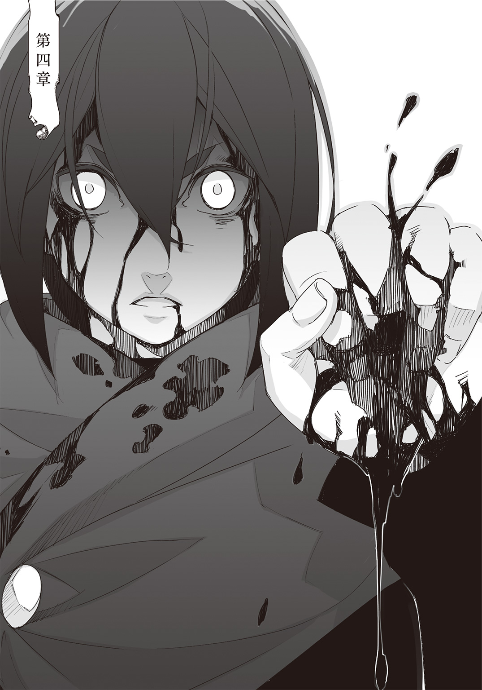
カルレロの巨軀が無惨にも切り刻まれていた。
二本の角と、右目、左の肘から先が失われていた。鋼のような肉体にも大小様々な切り傷があり、全身を汗と紫の血で染めていた。流れ出た血の分だけ身体が萎んでいる。膝と足首の腱が両足とも断ち切られている。
辛うじて上下している胸がカルレロが生きていることを伝えている。だが、それだけだった。痛みに呻くことも、憎悪に唸ることも、怒りにのたうつこともなく、死体のように意識を失っている。
「お疲れさま、みんなよく頑張ってくれた」
テスの身体から、闘気と錯覚させるような熱が迸っていた。
搔き上げた髪が汗に濡れていて、テスの全身を包む漆黒の毛並みをいっそう色濃く艶めかしている。テスの鎧も血で汚れていたが、それは全てカルレロの返り血でテス自身には一筋の傷もないようだった。
「くふふ、カルレロごときでは私に触れることはできんよ。素面ならば、あるいは違ったかもしれないがね」
テスはそう言うと三人の怪我の状況を尋ねた。よくやったな、とランタンとリリオンの頭を撫でた。リリオンの髪型は崩れてしまっている。
「激しい戦いだったようだな。それにランタンも」
テスはリリオンの髪に触れ、そしてランタンの頰を撫でる。頰から汗を拭うように掌を滑らせて首筋に指を掛けた。体温と汗を確かめ、テスはにやりと笑った。
ランタンはぞくりと震える。
「冷たいな。なあ、ルー。こういう場合はどうすればいいと思う？」
ルーはカルレロの隣に蜥蜴を降ろしながら、そうですわねえ、と空惚けるように微笑む。
「冷たいのなら、暖めればよろしいかと」
「だな」
テスはランタンの首根っこを摑むと、無造作にリリオンへと押しつけた。
「男を暖めるのは女の特権。その権利はリリオンに譲ってやろう」
「何を――わ！」
ランタンが抗議の声を上げた。だがリリオンはランタンの身体を抱き寄せた。慎ましやかな胸を枕にするようにランタンの頭部を導き、左腕だけで器用にランタンの身体を抱きしめた。
ルーが少しだけリリオンを羨ましそうに見て、テスは肩を震わせて声もなく笑っている。
テスは大きく深呼吸をして息を整えると顔を上げた。睨み付けるランタンの視線を真っ正面から受け止めて、悪戯な笑みを返した。
「うちの支給品で悪いが取り敢えず飲んでおけ。二本しかないから、ルーは私と分けるか」
テスは腰元から銀の容器を取って、親指で弾くように蓋を開けた。
受け取ったランタンはそれを半分飲んで、リリオンがそこから更に半分飲んだ。
「全部飲んでいいんだよ」
「ううん、残りはランタンにあげる。飲ませてあげるね」
リリオンはそっとそれをランタンの唇に当てた。一口目は気が付かなかったが、銀の容器が唇に暖かく感じるほど体温が下がっていた。ランタンが素直に唇を開けると、リリオンはゆっくりと容器を傾けた。
その銀の容器が持つ暖かさは、もしかしてリリオンの唇の暖かさか。
ふとそんなことを思ったら、ぽっと身体が熱を持った。
薬が効いたのだろう、とランタンは唇を拭う。
「さて、と」
倉庫内には膨大な数の人が倒れていた。薬物中毒の戦士たちの中には死にきれぬものもいたようだが、生者も死者も皆等しく壁際に追いやられて折り重なっている。そんなだだっ広い倉庫内に、整頓されたように並べられている者たちがいる。
カルレロを筆頭にバラクロフ、蜥蜴、そしてベルムドが並べられている。
それこそが生者の証であるように、テスは蜥蜴の手足を拘束した。
ベルムドには布が掛けられていて、姿を隠されている。布の盛り上がりは、それだけ見ると頭部と身体が繫がっているように見えた。
遺体の上に刺突剣が、一輪の花のように置かれている。
リリオンが慰めるようにランタンの髪に頰を寄せた。
「バラクロフ以外は、魔物化していると言っていいな。特にこいつは、他のより進行してる」
テスがベルムドへ視線を向けた。ランタンが注射のことと、その後のベルムドの変化を伝えると、テスは深く頷く。
「しかたがないことだよ。おそらく生け捕りにしても、助からなかっただろうしね。研究所の連中に生きたまま切り刻まれるよりはだいぶマシさ」
「わたくしも、こうなっていた可能性がありますのね......」
ルーがぞっとしたように身体を抱きしめた。
「前に一度、医務局のお医者さんに脅されたことがあります。迷宮に潜ってばっかりだと魔物になるぞって。あれって脅し文句じゃないんですか？」
「脅し文句だよ、ただの。人に限らずだけど、生物の魔物化は昔から研究されている。その中で迷宮に対象を置き去りにするって手法も研究されていた」
「有名ですわよね、それ」
ルーが何とも言えない声音で呟き、リリオンは目を輝かせた。
「どうなったの？」
「食われた。ここならば安全だろうと迷宮口直下でだらだらと過ごしていたら、奥から魔物が這い出てきて研究者ごとぱくっと。まあ今となっては笑い話だな。それから護衛を置くようになって実験は続けられたが、地上で魔精を浴びるって実験結果と変わらなかった。身体機能の上昇、保若効果、あとは凶暴化もあるが、魔物化にはほど遠い。進行は早かったらしいがな」
「凶暴化......」
「うちの悩みの種だな。探索者も暴力傾向が強くなる。手に入れた強さを使いたくなるのは構わんが、それを弱者に向けるから質が悪い。まったく雑魚を斬ってもつまらんだろうに」
鼻息荒く憤慨するテスに、ランタンは曖昧な笑みを浮かべた。暴力傾向が強くなる、というのは自覚がないわけではなかった。それを結果として弱いものに向けている事実にも。
自分の中にある衝動は、もしかしてこれのせいか。
テスは四人から、そして壁際で呻く薬物中毒者達に視線を動かした。
「こいつらは実験に使われていたんじゃないかな。ファミリーに、というかバラクロフに薬を融通していた相手、黒い卵の連中ならやりかねん話だ。――こっちの問題もあるし、まったく」
四人とは別に二人の男が転がされていた。一人はランタンが殴り飛ばした黒装束である。
両手の刃は取り上げられて、その他様々な暗器とともに脇に並べられている。その中の一つに顔を隠していた黒頭巾があった。黒頭巾には額当てと面頰が縫い付けられていたが、ランタンの打撃に面頰は砕けている。
男の顔はこれといった特徴が見られない。茶色の髪に、太くも細くもない眉毛、ちょっとだけ丸い鼻。もしかしたら鼻から下に特徴があったのかもしれないが、どす黒く腫れていて元がどうだったか判別ができない。
黒装束は手足に枷を嵌められていた。腕は後ろ手に回されて肘の上下、手首、親指を、下肢は膝の上下に足首を特殊な縛法で雁字搦めにされている。迷宮作法の結び目は外れがたく解きやすいが、これは外れにくいし解きにくい。探索者相手に治安維持活動する武装職員のやり方だった。それに猿ぐつわも嚙まされている。
黒装束は凡庸な見た目であるが、テスがかなり警戒していることがよく判った。
「暗殺者、ですよね？ 仮装趣味の薬中ではないですよね？」
まだ陽は沈んでいない。その中でこの黒装束はむしろ目立つのではないかとランタンは思う。テスが肩を竦めて、ぽりぽりと頭を搔いた。
「暗殺者ギルドの人ですか？」
うろ覚えの知識をひけらかすようにリリオンが辿々しく、物騒な名前を口に出した。
テスは苦笑して、さてどうかな、とはぐらかした。
「ランタンはこいつは何か言っていたか？」
「確か、バラクロフの口封じはついでで、僕と――リリオンを捕らえに来たと」
「ほう、二人をか。となるとバラクロフはただの仲介役で、二人を捕らえてこれの依頼主なりなんなりに渡す手筈になっていたのか」
「ですが、バラクロフはランタンさまを殺そうとしておりましたわ。なれば無関係とは言いませんが、バラクロフの依頼主とは別の相手という可能性は」
「それもあるな。もっともバラクロフのランタンに対する憎悪は、契約など無視するほど強そうだったが」
「僕には恨まれるようなことをした記憶が、まるでないのですけれど」
「くふ、なかなかの有様だと思うが？」
「......それはつい先程のことですし、歯を折ったぐらいで人を殺そうなどとは思いません。普通の人は」
「冗談だよ。ま、それも目立つ者の宿命だ。私も新人の頃にはやっかまれたものだよ」
テスは嘯いて、もう一人の男の顔を覗き込んだ。
その男には意識があったが、口を利くことはできそうになかった。
腹にカルレロの角が突き刺さっていて、背中に先端が顔を出していた。テスが投擲したものだ。角で蓋をした傷口からはほんの僅かな出血が見られるだけだったが、いざ角を抜けば失血死は免れないだろうし、そもそも刺さった場所が上下左右の何れかに僅かでもずれていたら、この苦痛を感じることもなく死んでいただろう。
狙ってやったのだろうか。ランタンはテスの投擲を思い出し、自分の闇雲なそれと比較して肩を落とした。
「これは犬人族ですか？」
くすんだような薄茶色の毛並みに、それよりも僅かに濃い水玉模様が首筋に散っているのが鎧の隙間から確認できる。耳は丸型で大きく、縁取ったように目元が黒く、突き出した鼻先、口には牙が並んでいて顎が発達していた。でろん、と舌を垂らしていて呼吸が荒い。
倒れた身体に潰された尻尾の先端が箒のように膨らんでいた。
「いや、猫人族だよ。これはハイエナ族だな」
「ハイエナ、これが」
男の身なりはかなり上等だった。流石に全身装備ではなかったが、部分部分で装備した鎧は銀に磨かれていて夕陽を反射して輝いている。腰に吊していた長剣と短剣が隣に並べられている。ランタンが鍔を爪先に引っ掛けて、刀身を晒すと質の良い鉄が顔を覗かせた。
「ぐ、が、貴様」
男がランタンを睨み付けた。口の端から血を垂らしながら、一声発するだけでも相当な苦痛を要するのだが、男はそれでも構わずに続ける。
「我が、剣を、足蹴に」
「ごめんなさい。確かに失礼なことをしました。恥ずかしく思います」
男に言われて、ランタンははっとした。ランタンも自分の戦鎚を蹴られたら物凄く嫌だ。
ランタンはリリオンの抱擁から抜け出して、素直に頭を下げた。
「ぐうっ、......ふう、ふう」
ランタンを叩き切ろうとするかのように力を込めた男は、結局立ち上がることもできずに身体の力を抜いた。呼吸に痰が絡むような、ぜいぜいとした水音が混じり始めた。
「このプライドの高さ。どこかの貴族付きの騎士ですわね。鎧に紋章などございませんか？」
「残念ながら削ってある。......なあ、お前、毒など飲んでいないだろうな」
下街での襲撃。そこにいた騎士崩れのことを思い出して、テスが尋ねる。男の呼吸が一際荒くなり、まるで深呼吸でもするように大きく口を開いた。
「死ねると思うなよ」
その口の中にテスが手を突っ込んだ。男は舌を嚙み切ろうとしたのだ。手を嚙み付かれたテスは顔を顰める。男はテスの手ごと舌を嚙み千切ろうとした。
テスは男の咽頭深くに指を掛け、そのまま男の首を捻った。真後ろを向くほどに頸椎を捩られて男が白目を剝く。
そしてぐったりと動かなくなった。テスは舌打ちをして涎に濡れた手を男の体毛で拭う。
「舌を嚙み切ろうとしたって事は、死ぬ用意はしていなかった。だが――主のために死のうとした。紋章は削られたのではなく、自分で削ったのか」
「それって、何が違うんですか？」
「紋章を削られるということは騎士団を追放されるということだ。何かしらの問題を起こして、騎士位を剝脱される。それはとても不名誉なことだ。それを自分で削るなんて、普通はしない。紋章の削られた装備を身に纏うなど余程の恥知らずか、――忠義者にしかできないことだ。この男は自分で紋章を削り、自分の出自を隠したんだろうね」
「......鎧、脱げばいいのに」
「そこが忠義者の悩ましいところだな。こいつ、家にかなり入れ込んでいるんだろう。鎧を身につけることで、そこの一員であることを実感できる、と。まあ、想像でしかないけどね」
「当たらずとも遠からずかもしれませんわよ。わたくしたちが探索者証を身に付けるのも似たようなところがありますもの」
ルーの言う、わたくしたち、が傭兵探索者のことを指すのか、それとも探索者全体のことを指すのかランタンには判断を付けることができなかった。
◇◇◇
「このあとって、どうすればいいんですか？」
ランタンは倉庫の中を見渡して、テスに尋ねた。死者に生者ばかりではなく、他にも色々なものが転がっているし、隠されているだろうと思われた。
ランタンが最も欲しているのは情報だ。特にバラクロフの脳内にある。
だが魔物の素材のように、魔精結晶のようにそれを肉体から取り外して背囊に詰め込むということはできない。取得に刃物を用いることもある、という共通点はあっても。
「そりゃあもちろん運ぶよ」
「四人で手分けしてですか？」
ランタンはうんざりと表情を歪めた。
「まさか、そんな面倒なことはしたくない。まあランタンがどうしてもと言うのなら、――いや、それでも嫌だな」
「僕も嫌です」
「それはよかった」
ほっとしたように胸に手を当てて笑ったテスの犬耳がぴんと立った。笑った目の形が、そのまま細められる。くつくつと喉を鳴らした。
「くふふ、――ジャックに小遣いをはずんでやらねば。手伝いがやってきたぞ」
テスは顎をしゃくると倉庫の外へとランタンたちを連れ出した。
ジャックが手伝いにやってきたのだろうか。だがジャック一人が来たからといって、戦闘ならば百人力だが、運搬作業が楽になるとは思えなかった。ランタンは外に出ると、ちょっとだけ背伸びをして遠くを見ようとした。
「肩車する？」
「いりません」
リリオンに言われて、ランタンは踵を降ろした。両足をべったり地面に着けると、振動が近付いてくることが判った。
「さすが、いいタイミングだ」
足裏に伝わる振動は、足音と車輪。薬物中毒者たちのおかわりが来たわけでも、暗殺者の追加がやってきたわけでもなさそうだった。足裏にだけ伝わる振動が耳に聞こえる足音になり、それは整然とした規律のある音色を奏でている。
「ランタン、ルー、適当に口裏を合わせろ。ルーは私の横に」
よく判らないまま二人が頷き、のけ者にされたリリオンがねだるように小首を傾げる。
「わたしは？」
「そうだな、うーん、いつも通りに。にこにこしていなさい」
「はい」
耳に痛いほどに聞こえる足音が、戦士の集団となって実体を現した。装甲馬車が四台もある。まるでちょっとした戦争にでも赴くような重装備だ。馬車を守るように隊列を組む戦士たちも、鎧で全身を包んでいる。
それらが倉庫の前で一斉に停止した。
テスが一歩前に出て、ランタンたちの姿を背に隠した。
「テスっ！ テス・マーカム隊長！」
装甲馬車から男が飛び出して、怒鳴り声を上げた。男の鎧はテスがギルド内で装備している鎧によく似ていたが、それよりもはるかに重い作りをしていた。武装職員の男は、そんな重装鎧をがしゃがしゃと鳴らしながらテスに駆け寄ってくる。
こめかみに痙攣する血管が遠くからでも見てとれた。
それは隠す気もない苛立ちだろう。リリオンが驚いたようにランタンを強く抱いた。それほどの苛立ちにテスが気付かないはずはないが、テスは平然として男に挨拶をした。
「おや、ケイヒル隊長ではないですか。これは奇遇ですね。六番隊の持ち回りが下街の警邏とはいえ、このようなところまで。ご苦労様です」
ケイヒル隊長と呼ばれた男はランタンの目には四十歳前後に映った。
ケイヒルは額が広く、いかにも苦労していそうな薄い頭髪に、消えることのない眉間の皺が男の哀愁を感じさせる渋い男だった。
隊長と呼びかけられたからにはテスと同格の武装職員であるのだが、テスは年齢不詳の血の濃い亜人族であることを差し引いても、ケイヒルよりも一回り以上若々しく見える。
だがテスからはケイヒルへの親しみが感じられた。もっともケイヒルのこめかみの血管は今にもはち切れんばかりの苛立ちに膨らんでいたが。
ケイヒルの鼻筋が膨らんで、荒々しい鼻息を吹き出した。もしかしたらそれは深呼吸の代わりだったのかもしれない。ケイヒルが口を開いた。怒鳴り声は迫力があったか、落ち着いた声は色気のある渋い低音だった。
「......状況の説明をしてもらいたいのだが」
「ふむ、そうですね。まずケイヒル隊長がこちらへ来られた理由を教えていただきたい。こんな外れは管轄外でしょう？ そのほうが情報の摺り合わせがしやすい」
ケイヒルは口の中で悪態を嚙み潰した。テスはケイヒルが来た理由を知っている、というかジャックを用いて呼びつけた張本人だ。ケイヒルもそのことを察しているようだったが、それ以上にテスの性格を知っているようだった。ケイヒルは諦めに口を開いた。
「下街で探索者を含む六十八名の武装集団を発見したと応援要請が入った」
「六番隊が今週の下街当番ですからね。誰が要請を出したのか知らないが、適切な判断だ」
「内五名が死亡。更にその近くの建物内にて二名発見。内一名死亡。生存している者の大半が重傷で、その中には探索者も含まれていた。応援を呼んだのはお前の部下だ、休日中のな」
「さすが私の部下。今度、褒めてやろう」
「現場ではかなり強力な魔道の行使も確認された。大規模な戦闘行動があったのは間違いない。お前が、やったんじゃ、ないのか」
ケイヒルは絞り出すようにテスを問い質した。それは戦闘をやったのか、それとも部下への命令をやったのか、どちらともとれる。
テスは口元に深い笑みを浮かべるばかりで答えなかった。
「その後、現場検証中に、たまたま通りかかった探索者の証言によりっ、どうせお前が何か面倒事を起こしてっ、ここに来たのは判ってるんだよっ！ その探索者はお前の弟だ！」
「ほう、それはなんとも。いや、姉弟の行動は似るものですからね」
ケイヒルの血管はたぶん切れた。ケイヒルは一言一言区切りながら、けれど深く言い聞かせるような響きで怒鳴る。
ぜいぜいと肩で息をした顔は、夕陽のせいではなく真っ赤に染まっている。
「部下の前でそのように声を荒げて。まったく、何をそんなに苛ついているのですか？ 禿げますよ？」
「......俺の髪のことは言うな。殺すぞ」
ぞっとするような低い声で言ったケイヒルに、テスは余裕の表情で肩を竦めた。
「そうですね。では私の話でもしましょうか。最初の六十八名だかの戦闘に参加した事実は認めます。私も非番でしたが、たまたま通りかかったところ、戦いに出くわしまして。それもどうやら一方的に襲っているようだったので、これを助けるためにやむを得なく。ケイヒル隊長も同じ場面に出くわせば、わたしと同じ行動を取ったでしょうね。いえ、ケイヒル隊長ならば、もっと上手にやるでしょうが」
「ああ、......そうだろうよ。大抵の奴はお前よりも上手くやれるだろうよ」
「襲われていたのは探索者でした。探索者はギルドの宝ですので、これを守るのもまたギルド職員として当然の行動です」
ケイヒルはルーへと視線を向ける。ルーは嫋やかに微笑みを返した。
「探索者、彼女が襲われていたのか」
「いいえ、襲われていたのは彼らです」
ケイヒルが怪訝そうに眉を顰めた。
それは恐るべきテスの技術の賜だ。小軀のランタンだけでなく、長身リリオンまでも自らの気配の中に隠したのだ。ルーを脇に置いたことや挑発的な話術はランタンたちからケイヒルの意識を遠ざけるための手段だったのだろう。
「ほら、おいで」
促されて前に出た二人を胡乱げに見つめたケイヒルは、リリオンの腕の中に守られているのがランタンだと気が付くと目を丸くした。
「おいっ！」
「なんでしょう？」
「これ、――ランタンじゃないか!? これが一方的に襲われていた？ 襲っていたじゃなくてか？ 助けなんかいらないだろう！ って言うか重傷者はこいつの仕業だろうが！ 魔道もそうか!?」
捲し立て詰め寄るケイヒルに、流石のテスも苦笑いをしている。
ひどい言われようだ。まるで人を厄災みたいに、とランタンは内心むくれる。だがランタンよりもリリオンが憤慨している。むっと頰を膨らませて、ケイヒルを睨んでいた。
それに気が付いたランタンは表情を緩めた。そして友好的で、ほんの少し恐怖を感じられるような微笑みを口元に浮かべた。
「はじめまして、ケイヒル隊長さま。テスさんには危ないところを助けていただきました。もしテスさんがいなかったらと思うと――」
ケイヒルは得体の知れないものを見るような表情でランタンを見ている。だがランタンは構わず続けた。こっそりとリリオンの腰に手を当てて合図を送った。
「だから、テスさんをそんなに怒らないでください」
「おねがいします」
ランタンの言葉に続けてリリオンが頭を下げた。ランタンの言葉とは違い、本心から。二人が揃って視線を上げて、上目遣いにケイヒルを見つめる。
幼い視線に晒されたケイヒルはうっと呻いた。
「ああ、いや、そうか。わかった、頭を上げてくれ。マーカム隊長、ご苦労だった」
ケイヒルが声を掛けると、リリオンが安堵して微笑む。ケイヒルは戸惑いっぱなしだった。
「これを助けないわけにはいかないでしょう？」
「......その場での、お前の正当性は判った。それでその後は？ 彼女との関係はなんだ？」
「そうですね、二人を助けた後、武装集団から違法薬物の使用を発見。尋問したところ大がかりな犯罪組織の存在が明らかになったため、その場でランタンとリリオンの二人に協力を頼みました」
助けた相手に協力を頼むという矛盾に、ケイヒルはもう言葉を挟まなかった。
「ここから先は中で話しましょうか」
「――マリアーノ、必要数を連れて周囲を封鎖しろ。残りを回収組と待機組に分けておけ」
集団の中から一歩前に出た武装職員は完全武装だ。隊長との差なのだろう鎧はケイヒルよりも簡素で、その代わりに顔をすっぽり隠す兜を装備していた。
「了解しました」
鎧の奥の声は若々しい。さっそくきびきびと指示を飛ばし始めた。
「待機を多めにしておくといいよ。――では、中へ」
テスの後についてケイヒルが倉庫へ一歩足を踏み入れると、眉間の皺が深くなった。
「多いな」
「ええ、ですのでこのルー・ルゥにも協力を頼んだのです」
「ケイヒルさま、傭兵探索者をしておりますルー・ルゥと申します」
「傭兵か」
「ええ。うふふ、今回の件でお給金を頂戴しようとは思っておりませんのでご安心を。人助けは当然のことでございますものね」
「この三人のおかげで無事に犯罪組織を壊滅することができました」
テスは誇らしげにリリオンの肩を抱いた。リリオンが照れて頰を染め、ケイヒルは呆れた視線をテスに向けた。
「ずいぶん端折っただろう、お前。まあいい。それでこいつらは何だ」
「元探索者フィデル・カルレロを頭首としたカルレロ・ファミリーという組織ですね。取り敢えず確認が取れただけでも探索者はカルレロ本人を含む、そこの四名。有象無象の中にもいるでしょうが」
ケイヒルは倉庫の内部にまで足を進めて、カルレロの首筋に触れた。それからその右に連なる、三人に視線を滑らせる。
「ずいぶん酷い姿だな」
ケイヒルの呟きは三人の怪我のことを指しているのか、それとも魔精薬によって変貌した姿のことを指しているのか。あるいはその両方かもしれないが、深くは尋ねなかった。
「生け捕りは三人か」
「――申し訳ありません、僕の力不足で」
ランタンが本心から謝ると、ケイヒルは首を振った。
「テスに比べればだいぶマシだから気にするな。昔のこいつなら全員殺してた。これも、俺はてっきりテスが殺したもんだと思ったしな」
「それぐらいの分別はつきますよ」
「ふん、それなら応援を待つだけの分別もほしかったね。......ま、お前に言うだけ無駄か」
「......私を何だと思っているのですか」
「狂戦士、処刑人、死神」
「黙れ禿げ」
「うるせえ、ぶち殺すぞ」
「――ケンカしたらダメっ！」
剣呑な気配を察したリリオンが二人の間に割って入った。
ランタンはそんなリリオンを褒めてやり、大人なのにね、と語りかけると泣く子も黙る武装職員の頂点二人が気まずそうに顔を見合わせた。
ケイヒルは言葉に詰まって押し黙り、けれどテスはリリオンの隣に並んで肩を抱いた。さもこちら側の人間であるかのように。
「まったく大人気ないですよ。私にとやかく言うよりも、我らの仕事に協力してくれた彼らに一言あってしかるべきでしょうに。そんなだからやれ横暴だの何だのと言われるんですよ」
「おま――」
信じられないものを見るような目付きで、ケイヒルが横暴極まりない武装職員を見た。
喉から引き攣った声を漏らし、だがリリオンが心配そうな視線を向けるのでテスへの罵声をどうにか呑み込む。
「たしかにそうだな。協力に感謝を。諸君らがおらねば、事態はもっと悪化していただろう」
ケイヒルは折り目正しくランタンたちに頭を下げた。
「いえ、そんな。本当に、助けていただいたのは僕らですから」
「そうか、ああ、それならばいいんだ」
ケイヒルがふっとテスに視線を向ける。苛立ちでも怒りでもなく、懐かしむように。
テスは首に手を当てて無視するように顔を背けている。もしかしたら恥ずかしがっているのかもしれなかった。
「それで、残りのこの二人は――」
ケイヒルが黒装束たちを指差した時、テスがはっとして背筋を伸ばした。
「何か来ますね」
「ああ？ 遅れていた医療馬車だろ」
「私の耳の良さはご存じでしょう。ギルドの馬車なら車輪の音色を聞き分けられますよ。――歩兵は無し、八頭立てで、ずいぶんと重い」
「うちの封鎖を破ったのか。戦闘車両か？ にしても八頭立てとは豪勢だな」
「さすがにそこまでは、一旦外に出ましょう」
テスとケイヒルの表情が揃って険しくなった。
不穏な気配を感じ取ったのかリリオンが表情を強張らせる。
ランタンはリリオンの手をぎゅっと握った。
「大丈夫だから、そんな顔しない」
ランタンは夕陽に瞳を染め、勇気づけるように笑いかけた。
リリオンの頷きと、ケイヒルの部下が飛び込んでくるのは同時だった。
◇◇◇
どうやら倉庫の前に馬車が着けられたらしい。軍馬の嘶きや、重い車輪の軋みがランタンの耳にも聞こえた。
外で待機している武装職員たちがざわめき、ケイヒルが舌打ちをした。
「封鎖はどうした。突破されたのか？」
「それが馬車に貴族の紋章があり――」
「どこのだ？」
「――サラス伯爵家です」
その名を聞いてテスとケイヒルの表情がいっそう険しくなった。叱咤するような表情を向けていた部下に、一転して理解のある眼差しを向けた。
「面倒なのが来ましたね」
「ああ。通さんで欲しかったが、貴族相手なら無理な話だな」
テスとケイヒルが言葉を重ねる中、ルーがぽつりと呟く。
「サラス伯爵ですか......」
「知ってるんですか？」
「それなりに、いえ、かなり有力な貴族ですわよ。大きな農場や荘園を幾つも経営していて軍部に強い影響をもっておりますわ」
「農場なのに、軍に影響があるんですか？」
「補給の重要さは探索者も軍も変わりませんわよ。それにサラス家の兵隊は精強で有名ですから。兵農一体。平時は田畑を耕しているのですけれど、その練度は侮れませんわ」
「ルーさん博識ですね。貴族の事なんて、僕はあんまり判らないな。住む世界が違うし」
「わたしも」
ランタンとリリオンが尊敬の眼差しで見つめると、ルーは照れるというよりも困ったような表情になった。八の字に垂れ下がった眉は物憂げな雰囲気すらある。
「わたくしたち亜人にとっては、それ以上に有名ですからね」
ルーはやるせなさそうに肩を竦めて、黒装束の隣に伏す騎士に哀れみの視線を落とした。
「俺らが出る。お前らは相手をしなくていい。しかし何をしに来たのか」
「これの関係者でしょう」
テスはハイエナの騎士の襟首を摑んだ。ルーの視線を引き千切るように、テスは砂袋でも持ち上げるように乱暴に引き上げた。
「なんだこれは？」
「騎士です」
「見りゃわかる。どこの騎士だ」
「さあ？ どうにも鎧を磨き過ぎたようで紋章が見当たらない」
ハイエナの騎士はその毛皮をびっしょりと冷や汗で濡らしている。テスが腹部の角に軽く触れると、騎士はびくんと跳ねて意識を取り戻した。
「サラス伯爵を知っているか？」
意識の中でサラス伯爵と聞いた瞬間に、僅かに薄目を開いた。瞳が濁っている。尻尾がぐったりと垂れ下がっていて、虫の息といった感じだった。テスは構わずに問い質した。
「お前の主か？」
テスは騎士を片腕で眼前に吊り上げる。腹に埋まった角が心臓の鼓動に合わせて微かに揺れている。騎士は呻くばかりで答えなかった。答えられなかったわけではない。ランタンの目にはそのように見えた。
僅かに騎士の指先が動いたが、テスが首を摑む手に力を込めると痙攣したようにそれ以上動かせなくなった。
「では行きましょうか。待たせて文句を付けられてもつまらない」
「連れて行くのか？」
「何かの役に立つでしょう。ほら、自力で立て、騎士の意地を見せてみろ」
騎士は地面に降り立つと、がくがくと膝を震わせたがそれでも立ってみせた。テスが後ろ手に拘束し、その背を押したが騎士は歩かない。
「テスさん、僕らは」
「ここにいなさい。探索者を守るのが私たちの仕事だよ。いらない面倒を、――ち、せっかちな。格好がつかないじゃないか」
テスは安心させるように二人に微笑んで、まるで楯を構えるように騎士を前に突きだした。
テスとケイヒルが壁となってランタンたちを背中に隠した。鎧越しでもケイヒルの背中の厚みが尋常ではないことが感じられる。
体格以上に大きな背中だ。その背の向こう側から、声が掛けられる。
「動くな」
鎧を鳴らし、四人の騎士が倉庫の中に雪崩れ込んできた。落ち着いた、だが辛気臭い声音が、妙にはっきりと鼓膜を揺らした。冷たい声だ、とランタンは思う。
背筋に触れる氷の冷たさだ。
握ったリリオンの手から、僅かに体温が失われるのをランタンは感じた。
四人の騎士はまるで不穏な気配が実体を持ったようだった。
「いきなり来て動くな、とはおかしなことを言う」
冷笑を含んだテスの言葉に騎士たちは毛ほども感情を露わにしなかった。
リリオンがその姿を見て恐れたのも頷ける。
騎士とは職業戦士である。
貴族に雇われて、仕える主の領地を、ひいては国を守る軍人である。そこには規律があり、統率された一個の集団であるがために揃いの鎧に身を包む習慣があった。
テスがギルド内で装備する犬頭の兜も個性的で目立つが、この騎士たちは四人がそれ以上に個性的で、どこか異形じみた鎧を身につけている。ハイエナの騎士が身につける鎧とは、まるで姿形が違っている。
騎士が個人的な装備を許されるということは、それだけの実力と地位を有していることに他ならない。
それが四人も。
ランタンは二人の背中ごしに、警戒心も露わに目を凝らした。
目を見張るような大柄な一人は艶のない漆黒の鎧に身を包んでいる。
兜には山羊のように後ろへ伸びる四本角。鎧には波紋や木目にも似た模様がうっすらと透けている。以前にグラン武具工房で見せてもらったことのある積層鍛造の鋼と同じ類の物だろうか。だがそれはランタンが目にした鋼とは、どこか雰囲気が違っている。
鎧の素材は金属ではなく、生物的な雰囲気があった。
生命の気配ではなく、死の匂いが感じられる。金属ではない。使われている素材は鱗か。
だが一般的な鱗の使われ方はしてない。通常、鱗鎧と呼ばれるものは布地に金属片やまさしく鱗を縫い付けて作られるが、この騎士の鎧は板金鎧のようだ。おそらく幾百幾千もの鱗を重ね合わせて作った塊を、寸断して板状にしたか、それとも塊を切削加工したのかといったところだろう。
どれ程の数の獣や魔物が、この一個の鎧に使われているのかまるで想像がつかなかった。
上半身もごつごつとしているが、下肢を包むそれはよりいっそう節だっていて大樹の根を思わせる。根をうねらせて歩行する植物系の魔物の姿を容易に想像させた。
その逞しい下肢は、背負う刃物の重さを感じさせない。
カルレロの半月斧に比肩する、肉切り包丁思わせる大刀。柄がランタンの腕よりも太く、もしかしたらその鎧に使われた鱗は竜種のものかと想像させる迫力があった。抜き身のまま背負われた刃は拭いきれぬ青い血に汚れている。
大刀の騎士がいたかと思えば、ランタンと同じほどの体格をした騎士もいる。
胸甲のなだらかな膨らみから、その中身が女であることが察せられた。
兜には一切の隙間が無く、ただ眉間の辺りに赤い宝石が埋め込まれている。それは単眼の蛇のようだ。
だが宝石が埋め込まれているのは兜ばかりにではない。鎧にも幾つもの色取り取りの宝石が埋め込まれていて、夕陽の光をきらきらと反射していた。その宝石の一つ一つは、魔道の行使を手伝う媒体だろう。
その騎士は腰元に短杖とも戦棍とも取れる武器をぶら下げていた。鳥籠のような先端の中に、やはり宝石が納められている。二つの丸い宝石に入った赤い罅が、それを眼球のように錯覚させた。
不気味さで言えば、もう一人もそれに負けず劣らずに不気味である。
蛇腹の鎧に包んだ長身は、大刀の騎士に匹敵するが、出会った時のリリオンほどに細身の身体が背の高さよりも目についた。そして何よりも腕が六本ある。肩口より生えている二本の腕は普通の長さだが、背側から垂れている四本の腕は爪の先を地面にするほど長い。
それは引き上げ屋の店主であるアーニェを思い出させるが、アーニェのそれが生まれつきの六本腕に対し、その騎士の長い腕は鎧の一部である。細かな蛇腹の節からは薄暗く青い燐光が零れている。
動く鎧などの物質系魔物を解析することで生み出された魔道義手と呼ばれるものだが、このような形状のものをランタンは初めて目にする。
四肢の何れかを失う探索者は少なからずいるが、魔道義手を装着する探索者は多くない。四肢を欠損した時点で探索者を止めてしまうからだ。それに魔道義手は高価で貴重であるし、戦闘に堪えるものとなるとその希少性は跳ね上がる。
失われた腕の代わりに、このような異形の腕を付けようなどと考える者は、探索者の中にも少ないだろうし、そもそもこの騎士には腕が健在なのである。
六本腕の騎士は六本以上の細身の剣を背や腰に吊していて、その他にも様々な形状の刃物を鎧に括り付けていた。
その三人の騎士たちは沈黙の誓いを立てたように無言を貫いている。それがより一層の不気味さを感じさせる。
だが最も不気味なのがテスとケイヒルの二人と言い争っている騎士である。
その騎士の兜は鼻から上を覆う物で口元が露わになっている。
やや顎の張った輪郭は女のそれで、浅黒い皮膚と肉厚の唇からは大きな犬歯がはっきりと確認できる。その兜は前面だけを覆う仮面のような形状なのだろう。頭上には橙色の大きな丸耳があり、頭部の高い位置で結んだ金と黒の髪が房飾りのように豊かだった。
虎人族の女騎士である。
女騎士の両肩には獅子が牙を剝いている。右左で雌雄に分かれており、それは二頭分の毛皮から作られた外套かと思われたがそうではなかった。雌雄同体の双頭の獅子を外套に仕立て上げているのだ。
彫刻の精緻な板金鎧。宝石の騎士よりも大きく弧を描く胸甲は母性すら感じさせる。腰には豹柄の腰巻きをして大小の曲刀を二本差しにしていた。
やや野性味溢れる出で立ちであったが、三人の騎士よりは普通の姿である。
だがランタンはその女騎士を見ていると、どうにも拭いきれぬ違和感を抱いてしまう。それが何に由来するのかまったく判らない。だがランタンにはそれがどうにも気持ちが悪い。
「――なぜこの男を騎士殿にお渡ししなければならないのか、その理由を聞かせていただきたい」
「理由を述べる必要はない。貴君らは我らにその男を引き渡せばよいのだ。さあ」
テスとケイヒルが剛柔織り交ぜて女騎士を探っているが、騎士の語り口はまるで変化がなかった。感情がないわけではない。ただなんとも面倒くさそうに、抑揚無くぼそぼそと同じ台詞を繰り返すのだ。
まるで手応えのないやり取りにケイヒルはどうにか抑えているが、テスがほんの少し苛々しているようだった。
女騎士はその漏れ出た恐ろしい気配に当てられても無反応だった。
その女騎士が、不意に黙り込んだ。そして一歩後ろに下がり、四騎士が左右に割れた。滑らかな動作で胸に手を当て、腰を折った。
それは紛れもなく臣下の礼である。
「ランタン......っ」
リリオンが痛いほどにランタンの手を握った。掌にじっとりと汗を搔いている。ランタンはリリオンを宥めながら、自身も耐えがたい不快感を覚えていた。胸騒ぎなどという言葉では到底言い表せない、女騎士から感じた気持ちの悪さを何倍にも拡大したような感じだった。
果物の腐臭にも似た、甘ったるい臭いが鼻をついた。
倉庫内に誰かが入ってきた。
臭いがいっそうきつくなった。ルーが鼻を押さえる。ランタンは込み上がる吐き気を堪えるのに必死だった。臭いのせいだけではない。向けられた視線の粘つきに、身に覚えがあった。
「......サラス伯爵ですわ。ランタンさま、堪えて」
小さな声でルーが囁き、ちらとそちらを向くとルーの瞳の中に燃えるように赤い燐光が反射した。それはランタンの目の色だった。
「大丈夫ですよ、そこまで考え無しじゃないですし」
格好悪い、と思う。
その気持ちはランタンを冷静にさせる。それはリリオンと出会ってから感じるようになった自意識である。ランタンはいつものような不敵な笑みを浮かべる。生意気な感じでルーに肩を竦めて、不安げに眼差しを伏せるリリオンに向かって気取ったように片目を瞑った。
サラス伯爵が、小姓に肩を借りながら歩みも重く向かってきた。
伯爵は老人である。聖職者のように髪はなく、けれど顔に老人のような染みや皺がなかった。極度の肥満で、顔についた脂肪が皮膚を内側から押しているからだ。
首を確認できないほどについた脂肪が顎で層となり、それは溶け出した蠟のようである。
ぶよぶよと太った身体に真っ白な法衣を身に付けていて、肩から赤い布を垂らしていた。ゆったりしたその服装も肉体の緩みを隠すにはいたらず、やはり全身が溶け出したような印象をランタンに与えた。
足を完全に持ち上げることができないのだろう。ずず、ずず、と靴底を擦る音が倉庫内に響いた。伯爵は小姓の肩に手を置いていて、その重みに小姓の身体は傾いでいる。
「ひ」
リリオンが小さな悲鳴を漏らした。ランタンは能面のような表情で小姓を見つめた。
それは豚人族の少年かと思ったが、そうではなかった。猪人族の少年である。
見間違えたのは猪人族の誇りとも呼べる牙が抜き取られていて、全身の体毛が剃られ、産毛までもが焼かれていたからだった。小姓には眉も睫毛もなく、ピンク色の皮膚は肌を炙られたためかもしれない。
ランタンが見ていることに気が付くと少年は照れたようにはにかんだ。リリオンと同い年ぐらい幼い笑顔だったが、その口には牙だけではなく歯が一本も生えていない。
そして小姓は身体を傾けてなどいなかった。伯爵は小姓を右に置いている。右手を左肩に掛けて、握り込めないのではないかと思える太った指が肩に食い込んでいた。
まだ幼い小姓の左肩が、骨格から沈んでいる。長い年月を掛けて、持続的に負荷がかからなければそのようなことにはならない。背筋を伸ばしてまっすぐ立っても、左右の鎖骨の位置がまったく違う。
そして甘い臭いは伯爵からも、小姓からもした。
「当家の者が、迷惑を掛けたようだね」
伯爵はテスとケイヒルの前で立ち止まり、あくまでも穏やかな声音でそう言った。それは優しげで、知的さすら感じさせる。肉に潰されるように細まった目に笑みを浮かべると好々爺のようでもあり、毛も生えそろわぬ赤子のようでもあった。
目蓋の細い隙間から、舐め回すような視線がランタンを襲った。気合いを入れて、ランタンはそれを無視する。
この手合いは反応するだけ喜ばせることになる。昔もそうだった。
「ええ、困りますよ、言う事を聞いていただけなくて。この一帯はすでに探索者ギルドの管理下に置かれています。いくら伯爵とはいえ、あまりにも横暴ではありませんか？ それにサラス伯爵自らがこのような場所までお出でになるとは、これは一体どういう訳ですか？」
テスすらも守るように一歩前に出て、ケイヒルが伯爵に言った。物腰は柔らかいが、有無を言わせぬような迫力がある。
「うむ、そちらの言い分はもっともだ。だからこそ私自らが出向いたのだ。――それに君たちは何か勘違いをしておるようだな」
「勘違い、ですか？」
「ああ、そうだ。迷惑を掛けたのは、そちらのお嬢さんが捕まえてるその男の事だよ」
伯爵は僅か顎をしゃくって、顎は肉に埋まり首との区別がつかないが、ハイエナの騎士を指した。
ハイエナの騎士は薄目を開けて、言葉無く喘いでいる。
「この男が、ですか。身元を示す物を所持しておりませんで難儀しておりましたが」
「それは当家の恥である。――当家の恥は当家にて処理させていただきたい」
「処理ですか」
ケイヒルがほんの少しだけ不敵に笑った。
「なんとも物騒な物言いをされますね。ですが我々には探索者が関与する事件への、優先的な捜査権を与えられております。恥ずかしながら、我々はこの男にかんして何も摑んではおりませんので、お渡ししてしまっては職務怠慢を疑われかねない。場合によっては伯爵さまを探索者ギルドへお招きすることになりかねません」
「無理は承知のこと。何も黙って渡せと言っているわけではない。その男はシェバ・ジという。当家に務めていた騎士見習いだ。いや、――騎士見習いだった、だな。叙任して騎士となったのが半年前。それは正式に確認を取ってくれて構わん。そして当家から抜け出したのが三ヶ月前だったか」
「脱走騎士ですか。脱走の理由をお尋ねしても？」
「......恥を晒せと言うか。怖い男だな、君は」
「光栄です、伯爵」
ケイヒルは眉一つ動かさずに言葉を返した。伯爵の頰が僅かに動く。ケイヒルの顔をよくよく見るために、下目蓋を下げたのだ。右半面がどろりと溶け出したように。
「シェバは悪い友人とつるんでおった」
視線がケイヒルを通り過ぎ、ランタンたちを舐め、奥で伏すカルレロたちに向けられる。
「個人的な付き合いならばまだ目を瞑ったものを。......装備品の横流し、軍の情報の漏洩。その見返りに少々の小金と女、そして薬物を得ていたようだ。その薬物を用いて騎士内部の規律を乱し、友人付き合いを咎めた使用人に手を掛けた挙げ句、騎士見習い数名を唆して逃げ出しおった」
伯爵は溜め息を吐き出した。
「我らが摑んでいるのはまだそこまでだ。処理の結果は、わかり次第そちらへ伝えよう」
「なるほど、伯爵自らがそう言って頂けるのならば、お渡ししてもいいかもしれない」
「......まだ何かあるのかね」
一つ伯爵の声が低くなった。貴族としての威厳とも違う、だが妙な威圧感のある声だった。
「失礼。我らとしても伯爵家と事を構える気はありません。ですがサラス伯爵の臣下へのご厚情は有名であられますからな。我々としても此度の事件でギルドの宝である探索者に多大なる損害を被っている。手心を加えないという保証はありますか？」
「無論」
その一言で女騎士が動いた。
踏み込み一つで距離を潰し、ケイヒルの脇を素通りした。獅子の外套が左回りに翻り、その姿を覆い隠した。
剣気が膨れあがる。それでいて湖底に沈められたような冷たさが肌に触れる。
外套の影の中で深く腰を沈め、右手が柄に触れている。房飾りのような髪が右回りに振り回された。
脱走騎士を後ろ手に拘束したままのテスが、跪くほどに体勢を低くした女騎士を見下ろしている。身動き一つしないのは、避けられないからではなく、避ける気がないからだった。
女騎士は腰を切り鞘を払う。
淡く弧を描く曲刀がハイエナの騎士シェバ・ジの膝を躊躇無く両断した。
「ぐああああっ！」
切断面は、まさに虎が食い破ったような荒さだった。シェバが叫び声を上げて、膝から血を流した。床に垂れた血にテスの靴が汚れた。テスは血溜まりの中で、平然と仁王立ちしている。膝下を失ったシェバの身体が沈み、自然と腕を捻り上げるような形になった。
「これで如何か？」
「......よろしいでしょう。お渡ししろ」
ケイヒルがテスを振りかえると、女騎士の刀が、鞘に収められることなく再び振るわれた。
今度はシェバの両肘を断った。振り抜き様に散った血がテスの胸を汚した。
女騎士はようやく刀を鞘に収めた。
女騎士の背後から伸びた魔道義手がシェバを受け止める。義手の騎士はシェバの重さを感じさせることなく魔道義手を操り、蛇のような滑らかさで宝石の騎士へとシェバを差し出した。
指先にも宝石が納められている。傷口に触れると血液が固まった。瘡蓋ではない。凍結させられている。腹部に刺さる角に人差し指を触れると、見る間に霜付いて粉々に砕けた。
そっとシェバの口元に触れると、唇が氷着し痛みに呻くこともできなくなった。
言葉もなく女騎士が背を向けた。その背にテスがようやく声を掛けた。
「忘れ物だ」
そう言って手に持った二本の腕を放った。緩く弧を描いたそれは女騎士の外套を汚す寸前、大刀の騎士が手を伸ばして大きな掌に腕を受け止め、小枝でも摑むように片手で二本とも摑んでしまった。腕に残った血が押し出されるように溢れた。
「君と違って、礼儀がなっていないようだね」
伯爵がケイヒルに向けて呟いた。テスがつんと鼻先を上げた。
喉奥で一つ笑い、牙がちらりと覗いた。
「面白い冗談だ、伯爵」
テスはシェバを指差す。
「ご自分の管理不行き届きを棚に上げられて、なにを仰いますか。それにご自慢の騎士も、このような振る舞いをするようでは」
胸の血汚れを掌で拭い、血溜まりから出て床に足を擦りつける。
「鎧の整備代はうちへ回してくれたまえ」
「――不要。戦いを生業にする私たちにとって血溜まりなど産湯に等しい。そうだろう、騎士殿？」
ほんの僅か、女騎士が頷いたような気がした。
女騎士から感じられる不気味さの理由がほんの少しわかったような気がした。生気の薄さだ。それは魔道欠乏症だったルーから感じるそれと似て非なるもの。生きる意思の稀薄さが、女騎士からは感じられた。
戦うことが生きることに直結する日々を送っているランタンからすると、生きる意思がなくこれほどの身のこなしをする女騎士はまるで理解のできない生き物だった。
「お前たち、それを連れて下がれ」
伯爵が追い払うように手を振ると、女騎士を除いた三人がシェバを運んでいった。
「まだ何かご用が？」
「ふっふっふ、立場が変わったな」
顎の肉を揺らして伯爵が笑った。
「なに、そう身構えなくともよい。シェバは脱走騎士であるが、未だに当家のものであることには相違ない。そちらの探索者のお嬢さん方に多大な迷惑を掛けてしまった。その事で謝罪したいだけなのだ。何も問題あるまい」
小姓の顔が痛みに歪んだ。伯爵の指が深く肩を握ったのだ。小姓が歩幅も小さく、歩き出した。伯爵はもうケイヒルもテスも見えてないように、ランタンたちに近づき始めた。
「おや、お嬢さんかと思ったら男の子だったか」
多分に白々しさを感じさせた。伯爵は紛れもなくランタンのことを以前から認識している。
「仲直りの握手をしようじゃないか。私は足が悪い、こちらへ来てはくれないか？」
血溜まりの前で足を止め、伯爵は小姓の肩から手を放した。
やはり小姓の肩は沈んでいる。伯爵と揃いの白い法衣がべったりとした脂汗で濡れていて、布地が張り付いた肌の黒々とした痣を透かしていた。
伯爵は肉に埋まった顔でも判るような満面の笑みを浮かべていた。極度の肥満ゆえにただでさえ早い呼吸を、堪えきれぬ興奮に激しく荒げている。
ランタンの肢体を遠慮なく舐め回す、欲望に塗れた視線。ランタンは物理的な圧力すら感じさせる、その視線を知っている。
奴隷だったランタンが品定めされた時、まったく同じ視線を感じた。鋼鉄の扉に付けられた覗き窓から、裸身のランタンを飽くこともなく眺めていた視線そのものだ。
当時の相手の顔は確認していないが間違いなく同一人物だと、怖気の走るような既視感がランタンに確信を与えた。
ランタンはその場で左の手を有らん限りの力で握り締めた。肩の傷から再び出血し、掌を貫通した穴に中指の爪をねじこんだ。
「失礼」
ランタンは心臓の鼓動に合わせて血が流れ出す掌を伯爵に向けた。
「戦士ではない伯爵さまを血で汚すわけにはいきませんので」
睨むことも笑うこともなく、ランタンはそう言った。
仲直りも遠慮します、とは流石に口に出さなかったが、声の端々に冷淡さはにじみ出ている。もっと無関心をよそおいたかったが感情の制御が難しかった。
伯爵はランタンの冷たさに触れただけで満足気に震えた。ランタンがその場から一歩も動かぬと見ると、名残惜しげに視線を引き剝がす。そしてその視線が向かったのはリリオンだった。ランタンはリリオンの手を、有らん限り優しく握った。
「――ダメです」
口を開き掛けた伯爵に先んじてランタンが告げた。
「まだ、何も言ってはおらぬが」
「女の子に対する配慮が足りないようですね。戦いを終えたばかりで、手も洗っていない。女の子なんだから、そんな手で男性に触れるのは恥ずかしいに決まっているでしょう」
「私は気にしないが」
「伯爵さまが気にせずとも、こちらが気にするのです。ほら、恥ずかしがって口も聞けない」
ランタンはリリオンを見上げた。安心させるように微笑む。夕焼けを反射する淡褐色の瞳は、ランタンの瞳の色に染め上げられた。
「君は握ってるじゃないか」
「ええ、だからもう空いている手はありません」
ランタンは指を絡めて、はっきりと言い放った。燃える赤の瞳が伯爵を見据える。伯爵が皺の少ない太った顔に、初めて汗を搔いた。業火に炙られたように。
「――あらあら伯爵さまは若い子がお好きですのね」
ルーが場違いに明るい声を上げた。胸の前でぱちんと手をたたき合わせて、おっとりとした笑みを頰に浮かべる。
「わたしくだってこんなに傷ついているのに、ほったらかしだなんて」
「......いやこれは申し訳ない。ならば――」
「でもわたくしは仲直りの握手などいりませんわ。お若い殿方ならまだしもご老人との触れ合いなんて腹の足しにもなりませんもの。そうですわね、装備品の整備代と治療費を頂戴してよろしいかしら？ あら、小姓さんがずいぶんと肌が赤くて、火照っていらっしゃるみたい。よほど懐が温かいのでしょうね」
そしてしれっとそう言ってのけた。
まったく遠慮することのなくルーは伯爵の顔を見て微笑んだ。黄色い瞳は氷のようだ。
伯爵は小姓に目配せをした。小姓は慌てて懐に手を入れ、腰帯に挟み込んだ金貨を取り出した。戸惑うように伯爵とルーに視線を往復させている。
水を差された伯爵はつまらなそうに、脂肪を揺らした。そして小姓が金貨を差し出す。
「ケイヒルさま、代わりに受け取っていただいてよろしい？」
ケイヒルは僅かな哀れみを小姓に向けて、金貨をゆっくりと摑み取った。
「足りない分は負けてさし上げましょう。仲直りですものね、歩み寄りが大切ですわ」
ランタンの隣から一歩も動くことなく、ルーは笑った。
黄色の目の奥は一つも笑っていない。
「――今日の所はこれで失礼させてもらおう。肩を」
小姓は伯爵の隣に身を寄せると、その沈んだ肩を差し出した。二人が歩き出し、その影を踏まぬように女騎士が後に続いた。
女騎士は一度ちらりと振り返り、そこにいる全てを無感動に一瞥する。
「さらばだ」
そして抑揚無くそう言い捨てて、去って行った。
「ああ、嫌な臭いだこと。......リリオンさまは、平気そうでしたわね」
伯爵たちが倉庫街へ出ると、ルーがうんざりしたように呟いた。ランタンも重く息を吐き出し、リリオンは不安げなまま小さく首を傾げる。
「臭い、しないわ」
「あら、鼻声」
鼻血が鼻の奥に詰まっているようだった。ランタンがハンカチを添えてやったが、奥で固まってしまって出てこない。リリオンは縋るようにランタンを見つめる。
そんなリリオンにランタンは意地悪く言った。
「あー、もう一生このままだね」
「やだっ。わたしもっとランタンの匂いかぎたい......」
なんだそれ、とランタンは顔を顰めるとルーがころころと笑う。リリオンは情けなく眉を八の字にしていた。
そんな三人を見てテスが腰を折るほどに笑った。ざらりと垂れた髪を搔き上げると、険しかった表情が和らいでいた。
「いやあ、さすがは探索者たちだ。度胸が違いますね。ケイヒル隊長」
「俺ぁ胃が痛くて堪らんぜ。ルー・ルゥさんよ、こいつはどうすんだ」
ケイヒルはずしりと重い一纏めの金貨を持て余している。ルーは軽く肩を竦めた
「そうですわね。お金に罪はありませんが、正直あまり使いたくはありませんわ。教会に寄進するか、孤児院にでも差し上げましょうか」
「いいのか？」
「わたくしたちにとって汚れた金貨でも、関係のない方々からすればただの金貨ですもの」
ケイヒルは納得したように、それをしまった。
そして所在なさげに立ち竦む部下に指令を出した。
「おら、邪魔者は消えたから外の奴ら呼んで回収作業にかかれ。生きている奴から順次運べ。死んだ奴は腐りそうな奴から運べ。これ以上臭くなったら堪らん」
「了解しました」
リリオンはずっとランタンと手を繫いだままだった。掌には冷や汗も脂汗も搔いていたが、ランタンもそれを離そうとは思わなかった。
結ばれた手と手。これが別つことはない。本心からそう思ったが、口には出せなかった。
「いやあしかし、ランタンもよく我慢したね。怖い気配が漏れ出ていたぞ」
「僕だってそんな無茶なことはしませんよ。戦いで疲れてるし、怪我してるし」
ランタンの眼差しはすっかり焦茶色に色を落ち着かせていた。目蓋が重たくて、眠たげな目をしている。ランタンはのんびりとした欠伸を吐き出し、欠伸混じりにテスとケイヒルにふと思ったことを伺った。
「ちょっと知りたいことがあるのですけれど、よろしいでしょうか？」
「うん、何だい？」
「――貴族殺しって、どれぐらいの罪になりますか？」
ランタンはゆらっとリリオンに寄り添った。膝に力が入らず、血を失って軽くなった体重すら支えられなかった。リリオンが咄嗟にランタンの身体を抱きかかえる。
「ランタン冷たい......！」
疑問の答えを知ることなく、ランタンの意識が途切れた。
◇◇◇
意識を失ったのはほんの数分のことだった。
目覚めたランタンは揺り籠に揺られているような、再びの眠りへと誘う小気味良い振動に抗って目蓋を持ち上げた。
リリオンの顔を、ほとんど真下から見上げる。
細い鼻が高く、ほんのちょっとだけ歪んでいた。
「リリオン」
呼びかけると一度大きく揺れて、リリオンがはっとランタンを見た。
どうやら自分はリリオンに抱きかかえられているらしい。倉庫から外に出ていて、どこかに連れて行かれる途中のようだ。倉庫内には戦いとあの甘い臭いが籠もっていたせいもあり、外の空気が心地良い。少しだけリリオンの汗の匂いも鼻についた。
「あー、寝ちゃったみたい」
ランタンがのほほんと言うと、リリオンは胸の上に乗せるようによいしょとランタンを抱え直した。乗せるほどの膨らみがなくて、ランタンはリリオンの肩を摑んだ。
「寝ちゃったみたいじゃないでしょ、もうっ！」
リリオンは頰を膨らませた。その脇からテスやルーがランタンの顔を覗き込んだ。
「はいはい、次からはちゃんとベッドで寝るよ。大丈夫だから降ろして」
「ダメ、わたしが運んであげるからね。大人しくしてるのよ」
ランタンは物凄く恥ずかしい気持ちになった。テスとルーがくすくすと笑っている。ランタンは彼女たちから視線を逸らして、うんざりとして溜め息を吐き出した。
「僕はどこに運ばれるの？」
「――医療馬車だ。本当は倉庫前に着ける予定だったんだが、どうにも馬が嫌がったらしい」
尋ねたランタンにテスが答えた。
探索者の癖で怪我の治療は街へ戻ってから、という意識がどうしてもある。医者が前線まで来てくれるのか、とランタンは探索者ギルドの戦力に驚いた。探索者ギルドやはりただの職業組合ではない。下手な騎士団よりも余程に装備も人員も整っているのではないだろうか。
「それに道幅も狭いからな、結構いいやつを寄越してくれたみたいだし」
倉庫街の外れまでランタンは運ばれてきた。
そこには二連結にされた大型の箱馬車が立ち往生している。角で曲がりきれずに、つっかえてしまっていた。後ろに下がるにも馬が興奮してしまっているし、巨大な箱馬車を押し引きする人員も足りていない。
どうやら戦地処理に多くが駆り出されてしまったようだった。
「何をやってるんだ......。ルー、疲れているところ悪いが手を貸してくれ」
「このぐらいなら、わたくし一人でも軽いですわよ」
テスがあたふたしている御者と武装職員を叱咤しながらルーを引き連れて馬車の後ろに回っていった。
箱馬車はあからさまに軍用で頑丈な造りをしている。かなり背が高くて、ちょっとした建造物のようだった。そしてその馬車を引く四頭の輓馬は、牛と交配しているんじゃないかと思うほどに巨大で筋肉質だった。
ぶるぶると鼻先を振り回して嘶いている。
探索者に立ち向かう武装職員ですら手を焼いていた。
「......馬でかい」
ランタンが呟く。リリオンは赤ん坊を抱くように、ランタンを片腕に抱え直して平然とその馬に近付いた。
もっと巨大で凶暴な魔物が平気なくせして僅かに怖じ気づいているランタンの横で、リリオンが無造作さに手を伸ばして馬の首をがしがしと撫でた。馬は一瞬驚いたように震えたが、途端に大人しくなってリリオンに撫でられるがままにされている。
「ランタンも触る？」
「触らない」
「どうして？ 大人しいのに」
「触らないから」
巨大な箱馬車をゆっくりと後退し始めた。ルーが押して、武装職員たちが引いて、テスが何やら指示を飛ばしている。ゆっくり、ゆっくりと馬車が下がり始めると、リリオンは馬の鼻先を押すように撫でた。
「ほら、後ろ下がるのよ」
かっぽかっぽと馬がのろのろと後退りをして、どうにかこうにか箱馬車が角から脱した。
「なんか手慣れてるね」
「ふふん」
リリオンは自慢げに笑いながら馬車の後ろに回る。
背の高い二つの長方形の箱が縦に並んでいて、連結部分は蛇腹の幌に覆われている。後部には跳ね上げ式の扉があって、スロープが伸びていた。
テスが手招きをしている。
「先生、怪我人です。お願いします」
「おー、テスか。なんだお前がやった奴か？」
「私がやれば先生の手を煩わせることはありませんよ」
「ああ？ 馬鹿言っちゃいけねえよ、俺だって経の一つぐらいは上げられるぜ」
「おや、それは失礼」
テスは軽く笑い、それから振り返った。
「じゃあ私は少し戻る、さすがに丸投げじゃ申し訳ないからね。安心をし。顔は怖いけど、いい先生だから、――よろしくお願いしますね。決して経を上げることのないように」
おう、と返事を受けてテスは颯爽と倉庫へ戻っていった。
箱馬車は外から見るよりもさらに広く感じた。リリオンが立ち上がっても頭をぶつけることがない。ランタンは手を伸ばして天井に触れた。かなり頑丈な造りをしている。連結部分は貫通していて、左右の壁際に折りたたみ式のベッドが備え付けられていた。
奥行きがかなりある。最後尾のルーがリリオンの背を支えた。
一番奥でベッドの一つを椅子代わりにしている白衣の男がいた。輓馬に負けず劣らずの立派な体格をしている。
「おう患者はどれだって......あーあー酷えなこりゃ」
ランタンを見て、リリオンを見て、ルーを見て面倒くさそうに頭を搔いた。
ギルド医は三人から追い剝ぎのように装備を剝ぎ取り、押し倒すようにベッドに座らせた。
「あ、あの......」
ようやくリリオンから降ろしてもらえたランタンは、戸惑いながらも何かを言うとしたがギルド医は黙らせるようにランタンの首を摑んだ。手が大きく、指が太く、皮が厚い。首をへし折られるかという感じで、脈拍を測られた。
「目ぇ見せて、――はい、口開けて、あーって」
「あー」
「口閉じて、これ何本に見える？」
「三本です」
「うん、正解。意識はちゃんとしてるな」
ギルド医は不可解そうに頷いた。
意識がちゃんとしているはずがないとでも言いたげだった。
「あの、すみませんが、僕よりも先にこの子の手当てをお願いしてもいいですか？」
ランタンはギルド医の指を握って、言葉を遮った。ギルド医は気にした様子もなくランタンの表情を窺った。
「ちゃんとしてねえのかな、やっぱり。誰がどう見てもお前の方が重傷だぞ。そっちの子が例えば服の下で内臓が零れてもいない限りは。零れてねえよな？」
ギルド医に聞かれてリリオンは何度も頷いた。
だがランタンは首を横に振って治療を拒否した。
ここまでリリオンに抱えられてやってきた自分が言えることではないかもしれない。
だが、だからこそ言わねばならない。
「傷の大小の関係ではありません」
「......じゃあなんだ？」
「意地です」
ランタンは澄ました顔で一言だけ、だがはっきりと言った。ギルド医は驚いた表情になって、それからすぐに厚い唇をにっと歪めて笑みを作った。そして大きく頷いて、なるほどなあ、とランタンに負けじとはっきり言った。
「怪我人に男も女もねえよ。だけどお前の言い分はもっともだ。怪我した女を差し置いて、治療を受けるなんざ男のするこっちゃねえよな。そりゃそうだ」
ギルド医は納得したようで、リリオンを手招きした。
リリオンはランタンの顔を、文字通りの顔色を窺って遠慮をしようとしたが、ランタンは頑なだった。ここで渋れば渋るほどにランタンの治療が遠のくことを悟ったリリオンは、諦めたようにギルド医に向き合った。
「安心しな。こいつは死にゃしねえよ」
ギルド医はランタンを指差した。
「なんたって医務局の常連さんだからな。――わかるか？ 常連ってことは必ず生きて帰ってくるってことだ。殺しても死なないって評判なんだぜ」
確かにランタンは医務局によく世話になっているが、そんな評判は初めて聞いた。リリオンを安心させるための方便だろうか。だが時折、実験動物を観察するような目で見られていることにランタンは気付いていた。
変な噂が立っていたら、利用しづらくなるからやめてほしい。ランタンはリリオンの治療を眺めた。
ギルド医はリリオンの顔を拭いて、口を濯がせた。
「はい、口開けて、舌引っ込めて、そうそう丸めるみたいに、そのまま」
口内を覗き込んだ。
「歯は折れてないけど内頰の傷が深いな。まあいいや。じゃあ、これ口に含んで。麻酔だから飲むなよ」
リリオンが口の中に麻酔液を溜め、三十秒後に吐き出す。麻酔が効いているのか微妙な表情をしているリリオンの鼻を、ギルド医はおもむろにつまんで捩った。リリオンが電撃を浴びたように座ったままの状態から、尻で踏み切って跳び上がった。
「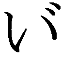ったーいっ！」
「あれ、麻酔の効きが悪いのか？」
リリオンは悲鳴を上げて、洪水のような鼻血を垂らした。出血を止めようと上を向こうとしたが、窒息するぞ、とギルド医がそれを許さなかった。鼻血は口腔にまで溢れて、リリオンはそれをバケツに吐き出した。そして再び口を濯いだ。
「血の臭いがする」
「へえ、よかったね。匂いかげるようになって」
ランタンが他人事のように言うと、リリオンはこくんと頷いた。
「次は軟骨の位置を戻すぞ。鼻が曲がったまんまじゃ格好がつかないからな」
ギルド医は先の細い鉗子を取り出すと、何故だかランタンの方を向いた。そして野良犬でも追い払うように手を振った。
「見ててやるなよ」
「どうしてですか？」
「今からこいつを鼻に突っ込むからだよ」
ギルド医は脅すように鉗子をカチカチと鳴らした。リリオンは震え上がり、絶望的な顔でランタンのことを見つめる。
「見たらやだ」
「目、瞑ってるよ」
「見たらダメだからね」
「はいはい」
僕だってそんなみっともない顔を見られたくはない。ランタンは目を閉じて、更にその上から手で目蓋を押さえた。
治療は鉗子を鼻に突っ込み内側から軟骨を挟んで、それを引っ張って治すのだろうと思う。鼻の内側は粘膜になっている。そこを捏ねくり回すのだから治療風景は想像できても、その痛みたるや想像を絶するものである。暗闇の中でリリオンの悲鳴だけが谺している。
「うっし、綺麗に真っ直ぐだ。触ると歪むから触るなよ」
ランタンはうっすらと目を開けると鉗子は片付けられていて、リリオンの口回りもすっかりと拭われていた。リリオンの目が赤いのは泣いたからかもしれない。ギルド医は固定用のテープで、リリオンの鼻を固定した。
テープは眉間から鼻筋を通りすっぽりと鼻全体を覆っている。
リリオンが視線だけでちらちらとランタンの表情を窺っている。
「わたし、......変じゃない？」
「変じゃないよ」
「ほんとう？」
「うん、そのテープ格好良いね。僕もしてもらおうかな」
半ば本気で言ったランタンにリリオンはようやくほっとしたように表情を緩めた。
ギルド医はてきぱきと口腔の裂傷に軟膏を伸ばし、右腕の骨接ぎを手直していく。いくつかの錠剤をリリオンに飲ませて、骨折を固定しながらランタンに視線を寄越した。
「お前の意地を守るためには次は――」
「ルーさんどうぞ」
ルーも、リリオンに比べれば軽傷であるがやはり幾つもの怪我を負っている。魔道の行使による魔精欠乏もあって平気そうな顔をしていても顔色の悪さは隠せない。
「では、わたくしは大人の意地を張らせていただこうかしら。子供が無理するものではありませんわよ。さすがに血を流し過ぎですわ」
「ああ、そうだな。これ以上は俺も医者として後回しにはしたくねえな」
「......では、お言葉に甘えまして」
ランタンはそう言って服を脱ごうとした。だがランタンがボタンを外すよりも速く、ギルド医がランタンの衣服を切り裂いていく、出血により服が傷口に張り付いていた。躊躇したギルド医に変わって、ランタンは無表情にベリベリとそれを剝がす。
傷口を見てギルド医が顔を顰めた。ランタンとルーは息を呑む。
肋骨の下端から脇腹を撫で背中にまで繫がる切創があった。そして左肩には貫通こそしていないものの穴が開いている。
患部は黒いほどの紫に染まっていて、大きく腫れて炎症を起こしていた。穴からはまだ染み出すような出血が見られる。それは骨にまで届く傷だった。
「これは、確かに意地だわな。横になれ。ああもう、ベッドを汚すことなんぞ気にするな」
ギルド医はランタンを寝かせると、心配そうなリリオンをベッドから退かした。まずざぶざぶと患部を洗った。血を落とした患部は、その傷口をはっきりと露わにした。
ランタンが今更ながら自分の怪我の様子を確かめて、嫌そうに表情を歪める。患部を確認すると痛みが増すような気がするから不思議だった。
「ええっと、脇腹は剣で斬られました。肩のは蠍人族に刺されました。両方とも毒付きですけど、解毒薬は打ってあります」
ランタンはそう言って、思い出したように掌をギルド医に向けた。
「ここにも穴が一つ。でも事前に耐毒薬を服用しているので平気です。備えあれば憂い無しですね」
「......平気じゃねえし、憂いもあるわ！ 馬鹿かよ、あーもう、探索者って奴はこれだから嫌になるぜ」
ギルド医は白衣を脱ぎ捨てると腕まくりをして、改めてランタンの脈拍や体温を測り、手を握らせて握力を確かめて、さらに様々な質問をして思考能力を試した。ランタンはてきぱきと答えているつもりだったが。呂律が甘えるように柔らかかった。
ポケットにしまっていた解毒薬を思い出したように取り出すと、遅い、と物凄く怒られる。
「後回しにした俺も同罪だけどよ。......だから大丈夫だって、死にゃしないよ」
ギルド医は不安そうな顔をするリリオンに告げた。
ランタンがギルド医に好き勝手にやられている間、リリオンはずっとランタンの手を握っていた。
リリオンの手の温かさに、ランタンは自分の身体がこの上なく冷たくなっていることを自覚させられた。リリオンは右手でランタンの手を握りしめて、左手で手を温めるようにずっと撫でていた。
撫でていた手が、ふと止まった。
ギルド医が注射器を構えた。注射針が妙に長く、太い、ベルムドの刺突剣を思い出した。先端の鋭さはどちらも負けてはいない。
「何ですか、それ、あの」
「何って注射だよ」
ギルド医は当たり前のことを聞くなとでも言いたげな、乱暴な手つきでランタンの胸を消毒し始めた。
嫌な予感がする。
消毒ならば針を刺す位置にするべきである。ランタンの知る注射部位は腕であり、手の甲であり、内股であり、あるいは尻である。それかもしくは患部にするべきで、患部は左肩、左手、そして脇腹だ。
胸は注射を指す場所ではないと思う。注射針の長さは心臓に届くほどだ。
「男の意地の見せ所だぞ。おら、いくぞ」
待って、と言う暇もなく胸に注射針が突き立てられた。本当に胸に、心臓に刺された。痛みはほとんどなかったが、ランタンはリリオンの手に縋った。
リリオンは怖がってぎゅっと目を瞑る。ランタンは怖過ぎて目を逸らすこともできない。胸に針が突き立っていて、液体が注入される。
「これ、なに、いれてるの？」
「心臓を動かす薬」
ランタンが怖々尋ねると、ギルド医は楽しげに答えた。
「とまってたの？」
「まあ、ちょっとだけな」
針を抜いて注射の跡に小さなガーゼを貼り付けた。
「神経毒だな。筋肉が弛緩するタイプの。あんまり無茶するなよ、まったく本当に探索者って奴は」
ギルド医は先程も言った言葉を再び繰り返した。無茶をする探索者を咎めていて、それでいて同時に探索者の生命力に呆れを感じているようだった。
そして改めて左の肩に麻酔を打たれて、もうそこを見つめる事はしなかったが、傷の中をほじくり回されて治療をされた。
「神経切れてなくてよかったな」
ギルド医の太い指がランタンの傷を閉じていく。脇腹も掌も、まるで雑巾のように縫われた。最後に封をするように軟膏を塗りガーゼで覆った。そして起き上がろうとするランタンをベッドに押し止めた。
「点滴打つから寝てろ。速度いくつにするかなあ......、血ぃ足んねえしじゃぶじゃぶいれちゃうか」
何やら怖い独り言を言いながらギルド医はてきぱきとランタンに点滴を打った。針を腕に刺し固定する。じゃぶじゃぶ流れ込んでくる感覚はない。
「リリオンも点滴してもらえば？ ベッドまだ沢山あるし」
「ううん、ランタンのこと見てる」
リリオンはベッドに腰掛けてランタンの顔を覗き込んだ。二人とも無言で互いの瞳をじっと見つめている。リリオンはぱちぱちと瞬きをして、ランタンの頰を撫でて、頰を抓った。痛みを感じないのは麻酔の影響だろうか。
「これ貼ってやんな。――さて、あと一人っと疲れたなあ。あーあー、これもまた顔色悪い。こっちは血じゃなくて魔精だな」
ギルド医はルーを招き寄せて、何やらぶつくさ言っている。ランタンの治療に余程労力を要したようだ。
「何もらったの？」
リリオンが渡されたのは、リリオンの鼻に貼られているテープと同じ物だった。リリオンは起き上がりかけたランタンのおでこを押さえて、寝かしつける。そして鼻にそっとそれを載せた。それから指でなぞるように張り付ける。
テープはやや硬く、反発力があって鼻腔が広がる。それに炎症を抑えるための冷感が鼻の通りをよくしてくれた。
ただリリオンとお揃いにするためだけでなく、それなりの理由があってこれを寄越したのかもしれない。
ランタンはテープを貼ってもらった鼻をこしょこしょと触った。
「どう、変じゃない？」
「かっこいいよ、ランタンは何でも似合うね」
「まあね」
ランタンは言ってから照れたように目を瞑った。
リリオンがはにかんで、少しだけ身体が熱くなるような感覚をランタンは自覚した。
心臓に打ち込んだ薬や点滴が早速効果を発揮しているのだろう。
「......ね、ランタン、寒くない？ わたし、温めてあげようか？」
リリオンは言うが早いかランタンの身体を撫でた。ランタンは上半身裸でベッドに寝かされている。リリオンの掌が頰から滑り落ちて、胸元を擦った。ランタンは体温の上昇を悟られたかと思ったが、リリオンの手の方が温かかった。
「なかなか温かくならないわ」
ただひたすら真面目な表情で、リリオンはせっせと身体を擦っている。
「――男を温めるにゃいい方法があるぜ」
「教えなくていいです！」
ギルド医の笑いを堪えきれない声音に碌でもない予感を抱いたランタンは、起き上がりこそしなかったが大声を上げた。
「まだ何も言ってねえだろ」
「ランタンは、知ってるの？」
「え、いや」
「ねえ教えて。わたし温めてあげるから」
「――......知らない」
リリオンはずいっと顔を寄せて、なおもランタンの身体を揺すった。
それを見てギルド医は腹を抱えて大笑いしている。
どうやらルーの治療も一段落ついたようで、彼女もランタンの顔を覗くようにリリオンの隣に腰を下ろした。視線の高さに二つ並ぶとリリオンの小尻が貧相に見える。点滴のせいで寝返りを打てないランタンは、無視を決め込むように目を再び瞑った。
「どうして教えてくれないの？ ねえルーさんは知ってる？」
「そうですわね。教えて差し上げてもよろしいのですけれど、三人でするにはちょっとベッドが狭いかしら」
「大丈夫、ランタンは小さいから」
「うるさい。小さくないし」
ランタンが困っていると、ギルド医は呼吸困難になりそうなほどに大笑いした。
「――おや、先生楽しそうですね。もう治療は終わったんですか？ 止めを刺してないでしょうね」
「馬鹿言うんじゃねえよ、そういうお前こそ早いな。ケイヒルに全部おっかぶせてきたのか？」
「いや、気を遣われました」
「そうか、あれも世話焼きだからな」
テスは軽く肩を竦め、そしてランタンに向けてにやりと笑った。リリオンばかりではなく、ルーまでもが一緒になってランタンの身体に触れている。
「くふっ、これは何とも色っぽい状態じゃないか」
まったく色っぽくなどはない。
ランタンにとってのこの瞬間こそが今日、最も追い詰められ、緊迫した事態であった。テスはランタンの顔を覗き込み、薄目を開けたランタンと視線を交わらせると意味深に笑う。
「私も混ざっていいか？」
「......もう勘弁してください」
「ふむ、自慢の毛皮が役に立つかと思ったが、まあしかたあるまい。怪我に障っても馬鹿らしいからな」
テスはリリオンの頭をぽんと撫でた。せっせと手を動かすリリオンが、きょとんとテスを見上げた。
「だがその姿は、目に毒だな」
テスは天井に備えられた棚から綿毛布を一枚取り出して、リリオンに渡した。リリオンは言われずとも毛布をランタンの身体に掛けた。隠されてしまった身体からルーは名残惜しそうに手を引く。
ランタンがほっとして大きく息を吐き出すと、三人が揃って心配そうに顔を覗き込んだ。ランタンは恥ずかしげに毛布を引き上げて顔を隠した。
「大丈夫だから」
それだけ言うと、大きく欠伸をした。
「お、やっと薬が効いてきたか。頑丈なのも考えもんだな」
ギルド医がそんなことを言い、点滴の速度を弄った。
「今日はよく頑張ったな。少し眠るといい」
テスが優しく労って、ルーが鼻まで覆った毛布を呼吸が苦しくないように肩口に掛け直した。子供にそうするように、胸元をゆったりと叩いた。
リリオンに手を握られたまま、ランタンは抗いきれぬ睡魔に夢も見ない深い眠りへと引き込まれる。
◇◇◇
ぶつりと断裂した記憶の空白に驚きがなかったのは、冷たい消毒の匂いが同じだったからかもしれない。
身体は動かなかったが、ランタンは視線だけを巡らせて辺りを見渡した。
見覚えのない部屋だが、およその予想はできる。
身体を横たえるベッドは馬車に備え付けられていた物よりも上等だが、高級宿のものよりは質素で、だが清潔だった。おそらく探索者ギルドの医務棟の一室なのだろう。こぢんまりとした部屋だが、個室待遇である。
部屋の片隅に荷物が纏められており、カーテンを透ける月の光に間延びした影を作っていた。壁に立てかけられた戦鎚と大楯の影が、それぞれの持ち主が並んで寄り添っているような雰囲気を醸し出している。
ランタンは病衣に着替えさせられていた。前を合わせるだけのひらひらした病衣は少し心許ない。身体中に湿布やガーゼが貼られており、ミイラみたいに包帯でぐるぐる巻きにされていた。多少の疼痛があったが目覚めと同時に痛みがあることには慣れているし、痛みを感じられるということは感覚が戻ってきているということだった。
痛みに安心を覚える自分にランタンは呆れた。
隣にもう一台ベッドがあった。部屋の広さから考えて、後から足し入れたものだと推測できたが、そのベッドは空だった。ただシーツに乱れがあり、掛け布団も乱暴に捲られていた。
そこで眠っていたはずの少女は、当たり前のようにランタンの隣にいた。
しょうがない子だ、と思ったがランタンも人の事は言えないのでただ苦笑する。そして苦笑がふと固まった。
身体を動かしたら、滑らかな皮膚に触れた。
よもやダメな大人たちに男の身体を温める方法を教えられたのか、と恐る恐る布団の中を覗くと、はだけた病衣があった。ランタンはほっとしたが、それでもリリオンは温めるようにくっついている。
ランタンは大きく身体を動かすことはできなかったが、片手で前合わせの留め紐を結んでやった。そして頰を擦りつけて、リリオンを撫でてやった。
リリオンは眠りながらも眉間に皺を寄せていて、心配するような表情をしている。
だがランタンがしばらくそうしているとリリオンが擽ったそうな呻き声を漏らして、ほっとしたように寝顔を緩めた。寝顔から不安の影が払われて、その口元には笑みも浮かんだ。
リリオンからは、これは風呂に入っていないな、というような匂いがする。
頑張った匂いだ。
「そっか......」
目覚めに驚きがなかったのは、この匂いのせいか。ランタンはふと呟き、それから身体を包む少女の温もりに気が付いた。体温が混じり合っていて、自分とリリオンの区別がなくなったみたいだった。
ランタンはしばらくリリオンの寝顔を見つめ、それから眠気を思い出したように目をとろんとさせて、小さく欠伸を漏らした。
何もかも片がついた、というわけではなかったが一段落は着いたのだ。
穏やかなリリオンの寝顔にランタンは迷宮の攻略とはまた違う満足感を覚えた。
なんか変な感じがするな、とランタンはひっそりと恥じらい、戸惑った。
なんなんだろうな、これは。
ランタンは誰に見られるわけでもないのに顔を隠すように俯いて、リリオンの薄い胸を枕に再び眠りについた。
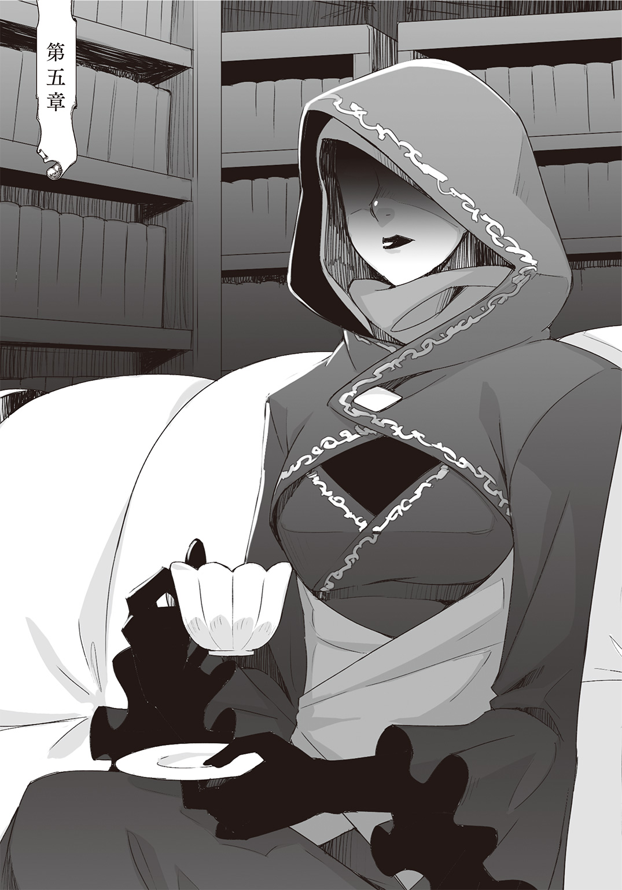
そろそろ太陽が中天にかかる。空にいくつかの薄い雲が散っていた。夏の到来を感じさせる陽射しは汗ばむほどだったが、吹く風にはまだまだ春の爽やかさが存分にあった。
そんな爽やかさの中で私服のミシャが微妙な顔つきになっている。
首まである服を着ているので、少し暑いのだろうか。ランタンは首を傾げる。
「何というか、もうちょっと誘い方どうにかならないっすか？」
「でも、ミシャ仕事あるでしょ？ だから結構考えた末の行動なんだけど」
「はあ......、もういいっす」
迷宮には行かないけれどミシャをちょっと貸してください、と引き上げ屋の店主であるアーニェに頼んだら大笑いされた。その後、お金は払います、と続けたら物凄く呆れられた。何か拙かっただろうか、と困惑していたら今度は心配された。
けれどそんなランタンはアーニェのお墨付きでミシャを食事に誘うことができた。
「それで私に何かご用っすか？」
「一緒にご飯食べながら、少しお話ししようと思って」
ランタンはふと、デートみたいだね、と呟いた。ミシャはぽかんとして立ち止まった。
「ほら、ミシャさん早く、早く」
そんなミシャにリリオンが駆け寄って手を取った。リリオンはミシャの葛藤などお構いなしに引きずっていく。ランタンは助けを求めるミシャを見捨ててぽつりと零した。
「これはデートじゃないな、こぶつきだし」
「何か言った？ ランタンっ」
「何も言ってないよ」
振り返ったリリオンに振り回されて、ミシャが目を回している。迷宮探索から遠ざかっているためかリリオンの体力は有り余っているようだった。ミシャの肩が外れそうだ。
流石のランタンもミシャに助け船を出した。
「ミシャの腕千切れそうだよ。せっかく医務局に通わなくてよくなったんだから」
「......医務局って、やっぱりまた怪我してたんっすか？」
「やっぱりってなんだよ」
「してないの？」
「いや、したけど」
「はあ......、あれから何があったんです？ ――やっぱり噂は本当なんっすか？」
「噂？」
ミシャはリリオンの手から抜け出し、ランタンを振り返った。
ランタンは小首を傾げ鸚鵡返しにする。
「知らないっすか？ ええっと搔い摘んで言いますと、少年探索者が犯罪組織を壊滅に追い込んだっていう噂です。ランタンさんって明言はされてないっすけど、少年の探索者ってランタンさんぐらいしかいないし」
「そんなことはないよ。十五、六ぐらいの探索者はいるよ」
運び屋兼業のいわゆる探索者見習いがほとんどだが。
「......十二、三歳ぐらいの探索者は他にいないでしょう」
言い返されてランタンは言葉に詰まった。だがはっとしてリリオンに視線を向けた。
「ここにいる」
十二、三歳どころではない。リリオンは九歳の探索者だ。
「あーはいはい、そうっすね。リリオンちゃんは少年じゃないし、ランタンさんよりも――」
その先を言わなかったのはミシャの優しさなのかもしれない。
「それで噂の真偽はどうなんっすか」
「......半分以上噓だけど、似たようなことはした。ほら、前の探索終わりの時にさ、理由を話すって言ったでしょ？ ようやく一段落ついたんだよ。それのせいでずっとミシャに会えなかったし」
「ミシャさん、わたし、その噂聞きたい」
「そうっすね、例えば――」
その噂とやらを道すがら聞かせてもらった。
噂にはいくつかの種類があったが、噂の主が少年探索者であることは一貫していた。
「女の人を助けるためとか、魔物を街に放とうとする陰謀を食い止めるためとか、反探索者同盟の暗躍を防ぐとか、まあ色々っすよ」
リリオンは噂を聞いてきゃっきゃっと喜んでいたが、ランタンは単純に楽しめなかった。
確かにこれは自分のことを言っているのかもしれない。噂の内容には、はっとするほど核心に迫っているところもあった。もちろん呆れてしまうほどに創作の部分もあったが。
「いや、これが評判よくて。なんでも吟遊詩人が詩にするとか、劇にするとか」
それを聞いてランタンの食欲は一気に失せた。
顔にありありとうんざりした表情を浮かべる。
だがせっかくミシャを誘ったのだからとそれなりに小洒落た店に入り、心付けをはずみ中庭を望む個室を用意してもらった。見事な造園の中庭には小川が流れている。
涼やかなせせらぎが聞こえてきた。
「お魚いるかな？」
「テーブルの上にはいるね」
「大きい魚っすねえ。こんなに頼んで食べられるんっすか？」
噂話に渇いた喉を食前酒で潤したミシャが、テーブルの上の状態を呆れたように眺める。
主菜は魚と肉と肉。
テーブルの中央、大皿にでんと盛られた一匹の魚は鯛に似ているがやたらと大きい。赤い鱗が香ばしく揚げられているのは調味油を回しかけられたからで、それをぱりぱりと切り裂くと真っ白い身がふっくらと蒸し上げられている。
添えられているライムを搾ると、口にする前から涎が溢れる。失せた食欲が戻ってきた。
肉の二種類は鴨と羊だ。鴨の方はもも肉を低温の油脂で煮たコンフィと呼ばれる料理でこれは探索者に馴染みのある食べ物だった。調理した後、肉を取り出さずそのまま冷やし油脂を凝固させると保存食になる。迷宮ではそれを再加熱して食べるのだ。肉がほろっと崩れると、凝縮された旨味が溶け出すようだ。
羊の方は肋肉のステーキだった。香辛料はほとんど使われていないが独特の獣臭さが少なく、齧りつくと肋から肉がするりと剝がれる。脂が甘くて、少しミルクのような風味がした。
リリオンは唇をぬらぬらさせながら夢中で骨にしゃぶりついていた。
副菜に青菜のサラダ、山盛りの蒸し芋、チーズの盛り合わせ、川魚のマリネなどがテーブルを埋め尽くすように並んでいる。目を瞑って適当にフォークを突き刺しても、空振りすることはないほどだった。
ミシャは鴨をむしゃむしゃ咀嚼して、リリオンの口元を見てこっそりと自分の唇を拭った。ごっくんと飲み込み、薄い唇をちらと舐める。
「それで、結局ランタンさんたちは何をされてたんっすか？」
「ああ、それはね――」
大魚の頭部から骨を外すと、ぺりぺりと背骨を剝がした。
さてどこから話そうか。
ランタンはすっかり穴の塞がった左手でナイフをくるりと回す。
「ランタン、食器で遊んじゃダメよ」
叱られてしまった。
ランタンは脂で濡れるリリオンの唇を黙らせるように拭い、さらに考えを巡らせているとミシャが大人びた笑みを浮かべた。
「初めから、ちゃんと話してほしいっすよ」
◇◇◇
何もかもを包み隠さずミシャに話したわけではなかった。
あの倉庫の戦いを終え、生き残りを捕らえ尋問をし、様々な背後関係が明かされつつあったが、ランタンたちに全てが開示される訳ではなかった。
それはテスからも司書からもケイヒルからも明言されている。ランタンたちは完全な被害者で、そして捜査協力者として扱われることになったが、それでも。
事の問題はケイヒルがやって来た時、あるいはテスと関係を持ったあの時からランタンたちの手を離れていたのかもしれない。だがリリオンと二人だけでは、ここまで多くの情報を得ることができなかったことも確かだ。
ランタンは食事を摂りながら、ぽつりぽつりとミシャに事の顚末を語った。
カルレロ・ファミリーのことはそのままに、違法魔精薬のことは隠して、肩や掌に穴を開けられたことを何気なく話したら、ミシャは咥えていたパリパリの鱗せんべいを落っことした。
「穴ってランタンさん、大丈夫だったんすか？」
ランタンはそんなミシャに掌を向ける。ミシャは相変わらず心配してくれて、そしてやっぱり怒っているようだった。
ミシャに向けた掌は、まさしく降参の証だ。
「傷も残らなかったし――」
「ほら、わたしの鼻も真っ直ぐ。これで匂いもかげるわっ」
「匂い？ リリオンちゃんも女の子なんだから、あんまり無理しちゃダメっすよ」
「――毒も抜けたし」
「毒って、もうっ、その話は聞いてないっすよ！」
「今、言ったところだからね」
入院したのは一日だけだったが、それからしばらくを上街で過ごすことになった。
今日も探索者ギルドに用意してもらい、連泊している宿からミシャを迎えに行ったのだ。
退院こそ許されたものの、毒の後遺症を完全に取り除くためと経過観察のために何度も医務局へ足を運ばなければならなかった。
探索者が怪我をした場合は、一度治療を受けたら後は放置して自然治癒力に治るのを任せる。
余程の大怪我でなければそれで間に合ってしまうし、場合によっては治療もせずに放置してしまう。探索者になろうとする人間の多くは、そもそもとして医者にかかる習慣を持たない。
今まで大丈夫だったのになぜ今さら医者に行かねばならないのか、と平気で嘯く。医者に行く金を使うぐらいなら御馳走を食べて、酒を飲んで寝て過ごす。医者にかかるぐらいならば死んだ方がマシだ、と喚く過激な者もいる。
探索者とは、そういう面倒くさがりな生き物だ。
医務局常連のランタンもそんな探索者の例に漏れず、一度治療を受けたらもう医務局に近寄らない。それでも常連になってしまうのは迷宮へ赴く頻度が、他の探索者の追随を許さぬからであり、怪我をしても生きて帰ってこられるほどしぶといからでもある。
そんなランタンが足繁く医務局に通うものだから、診察するギルド医に代わる代わる小言を言われてしまった。うんざりした顔をすると小言が長引くので、ランタンはもちろん真面目に聞く振りをしてやり過ごした。
「本当に、ちゃんと治してもらったんすよね。ちゃんとお医者さまの言うことは聞かないといけないっすよ」
「治ったよ、見てみる？」
言うが早いかランタンは上着のボタンを外して、襟首をぐいっと下げて左肩を晒した。
長い鎖骨がくっきりと形を浮かび上がらせた。毒を打ち込まれた直後はどす黒く変色し腫れていた左肩は、すっかりと元の白さを取り戻して傷痕すら見られない。
時間を巻き戻したような治癒力はギルド医の小言を黙らせるほどだったが、その代わりに彼らの好奇心を煽った。
危うく切り刻まれてホルマリン漬けにされるところだった、とランタンが笑い、肩を隠すと、それに釘付けだったミシャははっとして顔を赤らめる。
「探索者さんって見せびらかすみたいに古傷がいっぱいありますけど、ランタンさんは綺麗なもんっすよね」
「おかげで箔がつかないけどね」
「ランタンはそのままでいいの。ねー、ミシャさん」
「ねー、リリオンちゃん」
リリオンが同意を求めると、ミシャは何度も頷いた。
そんなもんかな、とランタンは首を傾げた。
「そもそもとしての怪我がなければ、もっといいっすよ」
半眼に睨みながら言われて、ランタンは少しだけ反省した。
「気をつけるよ。だからミシャも気をつけていて」
それが本題だった。
「残党がまだいるかもしれない。僕の知り合いだっていうだけで狙われる可能性もあるから」
「ああ、確かに。でもうちも探索者さん相手の商売っすから、そういうのは慣れてますよ」
「それでもだよ。僕がいないところだと、僕は何もしてあげられないし」
向けられる心配には無頓着なくせにランタンは真剣な眼差しをミシャに向けた。
「ありがとう。でもね、本当に大丈夫っすよ。ほら、うちの店主は――」
「綺麗だから？」
ミシャが言葉に迷った隙に、リリオンが口を挟んだ。
「ああ、確かにアーニェさん美人だもんね」
妖艶な雰囲気のアーニェを頭に思い描いて、ランタンはしみじみと頷いた。
あの六本腕こそ初めて目にした時はびっくりしてしまったが、柔らかそうな肉のついた腕が滑らかに動く様子は色っぽい。あの腕のためにアーニェは大胆に背中の開いた服を着ているのだが、振り返った時に目にする白い背中からは、リリオンの白い背中からはまるで感じられない色香が感じられるのだ。
「......ランタンさん、何か変なこと考えてる？」
「いいえ」
ランタンは咄嗟に首を振った。
「まあ、いいですけど。ランタンさんも男の子だし。――確かに美人ですけど、そこじゃないっすよ。ほら、......腕が六本でしょう。今でもその事をぐちぐち言ってくる人もいますし、私も詳しく知らないんっすけど、昔その事で貴族と揉めたみたいで」
ミシャは迷うような素振りを見せながら呟いた。
貴族。その一言でランタンもリリオンも表情を硬くした。
「それって――サラス伯爵のことか？」
本当はミシャにサラス伯爵のことを伝えるつもりはなかった。犯罪組織と違って、伯爵は立場ある貴族だ。ランタンの知り合いだからといって追い込みをかけるような、無茶な行動を取る可能性は少ない。
だから教えて、無駄に心配させる必要はないと考えていた。
それに今回の事件にサラス伯爵はかかわっていないことになっている。探索者ギルドと伯爵の間で政治的な取引があったようだが、詳しくはランタンも教えられていない。
ミシャは思わず唾を飲んで、ランタンとリリオンの顔を不安げに見つめた。そして頷いた。
「もしかして、今回の――」
「本当は秘密だけど、そう。そうかアーニェさんも、そうだったのか」
「――はい。しかし、そうですか」
ミシャはしばし考え込むように黙った。ランタンがどのように声を掛けようかと思案していると、ミシャは勢いよく顔を上げて口元に笑みを作った。
「わかりました。でも、大丈夫ですよ。大丈夫だったから、引き上げ屋を営んでいるんっすからね。うちの店をなめないでください」
そしてどんっと胸を叩いた。
「お二人こそ、何か困ったことがあったら頼ってください。店主の年齢をばらしたら怒られますけど、お二人とは年季が違うっすよ。それに私にも」
頼もしく笑ったミシャに、リリオンは何度も何度も頷いた。
「そっか、うん、わかった。――でも心配は心配だよ」
「これでランタンさんに、私がどんな気持ちでいるのか、ちょっとはわかってもらえたみたいっすね」
丸い目を寂しげに細めて笑うミシャからは、アーニェが纏う大人びた色気が感じられた。
それは凄味であるのかもしれない。
◇◇◇
「上街に滞在されてるんなら、もっと早く会いに来てくれてもよかったのに」
ミシャは少しだけ唇を尖らせた。ミシャのそんな仕草は何だか新鮮だった。
「他にも色々あって忙しかったから。迷宮にも全然行けなかったし。ミシャにも顔見せたいな、って思ってたよ。ずっと」
ミシャはちらりと片眉を上げた。
「その台詞、誘う時に言ってほしかったっすね。迷宮よりも先であれば、なおいいっすよ」
「なるほど。こほん、――僕はミシャに会うために迷宮に挑むのかもしれない。他に誘い方を知らないから――うわっ！」
ランタンが真面目くさった顔でミシャに甘言を繰り出すと、リリオンがランタンの脇腹をぎゅっと抓った。
「ちょっとその指で僕に触らないでよ」
リリオンは脂で濡れた指を口に咥えて、拗ねるように嚙んだ。
実年齢はさておき、リリオンがそうやって睨むと妙な迫力がある。真っ直ぐに通った鼻筋も、裂傷の治った唇も、憂いのなくなった淡褐色の眼差しも、一つ一つが修羅場を潜り抜けて少しだけ大人びたかもしれない。
だがランタンはリリオンの外面に騙されるようなことはないので、つんと無視する。
構ってもらえないリリオンは寂しげにうんうん唸った。
ランタンは魚のほぐしみをフォークに掬うとリリオンの口にそれを突っ込んで黙らせる。ライムを搾り過ぎたようだ。リリオンが口をすぼめた。
「また、そうやって苛めて。ほらリリオンちゃん、お水」
「......大人びてはないな」
ミシャに世話を焼かれるリリオンを見てランタンは小さく呟いた。コップを両手に持って、喉を白々と晒して水をこくこく飲んでいる。そんなリリオンを見るミシャの目は優しい。
「今は宿住まいなんっすよね」
「うん、ギルドに用意してもらったところ」
ミシャは少し言い淀んだ。薄い唇を嚙んで、まず溜め息が出たのはなぜだろうか。
ランタンはくりくりと丸いミシャの目を覗き込む。
リリオンがぷはとコップから口を離した。ランタンは唇の滴を拭ってやり、リリオンはありがとうミシャさん、と水をくれたミシャに感謝を述べる。
ミシャは微かに頰を綻ばせた。
「これを機に、上街に越してこられてはどうっすか？ そんな風に襲われて、迷宮に行かなくたって怪我をして、ランタンさんが強いのは知ってますけど。リリオンちゃんもいるんだし」
下街には多くの探索者が居住しているが、けれど上街に住処を構える探索者がまったくいないかというとそうではない。根無し草の探索者にとって宿暮らしは珍しい話ではない。
貧困に喘ぐ駆け出しの探索者ならば大部屋での雑魚寝も当たり前だが、懐が潤えば個室を借りる。借家住まいや、根を下ろすように居を構える探索者もいないわけではないが、宿には宿の利点がある。
金さえ払えば身の回りの世話を焼いてもらえるし、探索中は長期間家を空けることになる探索者にとって、常に人がいる宿は泥棒の心配が少ないのでありがたい。もっとも手癖の悪い従業員がいないわけではなかったが。
「考えない訳じゃないけど、ちょっとね」
リリオンにとって、上街に定住することがいいことなのかランタンには判らなかった。
確かに下街は買い物に行くのにも不便だし、治安も悪い。けれど人目を気にせずに生活することができる。それは巨人族の血が流れるリリオンにとって無視できない利点だとランタンは考えていた。
一目見てリリオンをそうだと看破した人物をグランしか知らないが、おそらくすれ違う人々の中には気が付いている人間もいると思う。ランタンたちの耳にまだ届かないだけで、悪意のある噂もきっとあるのだ。
食事をあらかた食べ終えて、皿の上には骨だけが山盛りになった。見計らっていたように給仕の男がやってきて皿を下げ、代わりにデザートが運ばれてきた。
「ちょっと、なんなんですか？」
「んー、上げ膳据え膳は人を堕落させるからね。それに隣の部屋に知らない人がいると思うとちゃんとくつろげないし」
「神経質なんだから、もう。リリオンちゃんは平気？ 大変じゃない？」
運ばれてきたチョコレートケーキに夢中だったリリオンがはっと顔を上げて笑った。
「ランタンと一緒なら、どこでも楽しいわ。悪い人たちだって、やっつけられるもの」
あっけらかんと言われて、ランタンとミシャは揃って黙ってしまった。
そんな二人にリリオンは何か拙いことを言ったのかと困惑した表情になった。
「そっか、よかったっすね。リリオンちゃん」
初めて会った時のおどおどした様子を思い出したのか、ミシャが感慨深そうに頰を緩めた。ランタンは澄ました顔をしていたが、それが照れ隠しであることを悟っているのだろう。
ミシャは笑いながらケーキを口に運んだ。
「ランタンさんも食べたらどうです？ 固まってないで」
そう言ってミシャがランタンにケーキを差し出した。はい、と持ち上げられたフォークにランタンは渋々と食らいつく。
「うん、美味しい」
「わたしのもランタン食べて！ はい、あーん」
「自分の分あるよ」
「いいから、あーんして！」
開けた口にケーキを突っ込んでリリオンは満足気にしている。
そんな二人を見ながらミシャがふと疑問を口にした。
「結局、お二人が狙われた理由は何なんでしょうか？」
「ああ、――それを知るために、またこの後にギルドへ行かなきゃいけないんだよ」
◇◇◇
探索者ギルドに通ったのは治療のためだけではなく、事情聴取を受けるためでもあった。
それはテスの行動の正当性を確固たるものにするためであるし、ランタンたちの行動を探索者ギルドが保証するためでもある。
またバラクロフに魔精薬を融通していたのが広域犯罪組織、黒い卵であることが確定すると、事件を探索者ギルド内だけで裁くことが不可能な大事になったからでもある。
黒い卵とは国賊であるようだった。
さすがに黒い卵についてランタンの知る情報などたかが知れているが、迷宮探索もそうであるように、どんな現場であれ情報の多さは正義であるらしい。
ともあれ広域犯罪組織の壊滅ともなると、探索者個人では手も足も出ない。
後はもう衛士隊やら騎士団やら探索者ギルド治安維持局やらの仕事である。
ランタンにできることは噓偽りなく、多少テスと口裏を合わせることもあったが、見聞きした事実を報告するだけだった。バラクロフ側からの証言と食い違いが出たが、立ち位置によってものの見方は変わるものなので、それはランタンの知ったことではない。サラス伯爵のことも正直に告げたが、揉み消されてしまったのでどっこいどっこいだと思う。
関係者の中でただ一人の正直者であるリリオンの聴取はテスが強権を発動したので何も問題は起こらなかった。
「今までご苦労だったな」
「なんだか、その言い方だともう用済みだって感じですね」
ランタンはくすりと笑って、司書に頭を下げた。
「お世話をお掛けしました。治安維持局の皆さんも優しかったですし」
「テスが睨みを利かせてたからな」
それにしたってよくしてもらった。
怪我の治療費は請求されることはなかったし、宿代だってギルド持ちだ。
そればかりか報酬もあった。
反社会的な探索者の一部には、ギルドから懸賞金がかけられているらしい。
報酬はカルレロらにかけられた懸賞金と、現場に残った大量の装備品などの換金可能な物品である。重要な証拠品となるものは許されないが、いくつかは持ち帰ることを許可された。
ランタンたちはそれの受け取りは拒否して、そのままギルドに買い取ってもらった。装備はどれも高品質だったが装備する気にはならないし、サイズも合わない。
カルレロの半月斧やベルムドの刺突剣、蜥蜴の大鉈には特に高値がついた。バラクロフの弓は高品質のものであるが、探索者における射手人口を考えると需要と供給の法則に従って買い取り額は低くなる。あれはバラクロフのためだけに作られたものだ。
全てを合わせると中々の金額になった。迷宮探索で得られる収入にはとどかなかったが。
それら報酬を得られるのはランタンとリリオン、そしてルーである。その三人だけが捜査協力者として申請された。
ジャックの存在はテスが握り潰した。今回の件でジャックの功績は大きいが、それよりもジャックの名が今回の事件に刻まれることをテスは嫌ったようだった。
事件は一段落がついたが、終わってはいない。テスなりの心遣いなのだろう。
なので報酬を得た三人は報酬を四等分しようと考えたが、ジャックは受け取りを拒んだ。
曰く、姉ちゃんから小遣いもらったから、だそうだ。
ジャックへの分はテスに渡した。テスも、職務を全うしただけだ、と初めは受け取らなかったが、司書やケイヒル隊長、ギルド医の先生、それに治安維持局の部下たちに食事でも奢ってあげてくださいと無理矢理押しつけた。
「なるほど、それならばテスにたかってやらねばな。ふふふ」
司書が口元に手を当てて、喉を震わせて笑った。その姿は不思議と気品を感じさせる。ひらひらとした服の揺らめきだけがそう思わせるのだろうか。
ランタンはちらりと司書の顔を窺った。
「一段落つきましたしね」
ランタンはぽつりと呟いて、カップを傾けた。
資料室でランタンと司書は二人、差し向かいに座って紅茶を嗜んでいた。
リリオンもテスも、ルーの姿もない。紅茶は司書が淹れてくれた。この前だけではなく、いつもテスが淹れるのかもしれない。
紅茶の用意をする司書の動きはどうにもぎこちなく、司書の淹れた紅茶はちょっと熱過ぎて、ちょっと濃い。石榴を搾ったように僅かな酸味があり、濃くても渋くないのは茶葉が良いからなのだろう。
司書は口元のヴェールを外している。
その口元は美しい。薔薇の色味を帯びる頰はミルクのように滑らかで、だが甘い印象を与えないのは頰から顎にかけての輪郭が鋭いからだろう。子供のように紅茶を冷ます唇は、なんというか冷笑が似合いそうなほど優美だ。
「聞いていいですか？」
「何をだ？」
ランタンは自分の唇を指差しながら、首を傾げた。
「今日はされてないんですね」
「ああ、喉の調子が良いからな。それに長く話をするのにあれは邪魔だ」
「喉、悪いんですか？」
「呼吸器全般がな。生まれた時からの付き合いだから、気にしなくていい。さて、まずどこから話そうか」
ランタンが心配そうにすると、司書は面倒くさそうに手を振った。心配されることよりは、同情されることに飽き飽きしているようだった。
紅茶で唇を湿らせて、テーブルの上にぶ厚い資料を広げた。
「今回の件の顚末書だ。――なかなかよくできた物語だよ。読んでみるか？」
文字の読めないランタンはふるふると首を横に振った。内容はある程度、把握している。
「ランタンも共著者のようなものだからな。テスもそうだし、ギルド長もそうだ。伯爵も一枚嚙んでいる。編纂した者は上から下から板挟みで大変だっただろうな」
司書は皮肉げに口元を歪めた。
「司書さまは、全てをご存じなのですか？」
「まさか。神でもあるまいに全てを知ることなど不可能だ。だが私はお前の知らないことを知っているし、お前が聞けば私はお前に教えてやりたいと思う」
何故、と聞くのは野暮な気がした。
「教えて下さい。司書さまの知る全てを」
だからランタンは頭も下げず、フードの影に隠される司書の眼差しを見つめた。そんなランタンに司書は満足気に、にんまりとした笑みを浮かべた。
「私の推測も入るが、構わんか？」
「はい」
「では大きなところから話していこうか。この度の件の首謀者はカルレロ・ファミリーの客分エイン・バラクロフとなっているがそれは間違いだ。首謀者は広域犯罪組織黒い卵、そしてサラス伯爵家。この二つの組織だ」
司書は二本の指を立てた。手袋に包まれた指は、それでもその細さがはっきりと判る。
「黒い卵という組織はそもそもとしてその源流を魔道ギルドにあった一つの研究団体に持つ。魔道ギルドの活動が多岐にわたることは知っているか？」
ランタンは赤子のように無垢な顔で首を横に振った。
「魔精による現象の発現、これをすなわち魔道と呼ぶわけだが、彼らは何も魔道ばかりを研究しているわけではない。元々は地を知り、星を見る。またあるいは生を殺し、死を癒す。地学、天文学、薬学、医学、哲学などを学んでいた学者集団だ。彼らはこの世の全てを探る探究者であるわけだが、往々にして好奇心というものは理性を殺す。......探索者であるお前に講釈を垂れる必要もないだろう。魔精が人に与える恩恵とは何だ？」
「......探索者に限った話で言うのならば、肉体の強化」
「そうだ。研究室に閉じこもっていた青白い顔の学者連中が、皮肉なことに強い肉体に囚われたのだ。比類なき腕力、並ぶ者なき脚力、老いを知らぬ生命力。彼らは完璧な人間を作ろうとして――」
僅か司書が言い淀んだ。
「理性を失った探究者たちは非人道的な研究実験を繰り返すようになった。どれだけ魔精を摂取すれば、どれだけ生命力が増すのか。魔精量をグラム単位で調節し、必要な分だけ老若男女、健常者、病人、障害者、あらゆる人種、種族を用いて比較し、生きたまま切り刻んだ。水に沈め、火にかけ、毒をうち、皆殺しにした。研究の発展のために」
「でも、そんなこと許されないでしょう？」
思わず口を挟んだランタンに司書は頷く。
「もちろん許されない。研究が明るみとなり、魔道ギルドそのものが一度解体されて首輪がつけられた。かかわった研究者は残らず吊された。ただ蓄積された実験結果と思想だけが残った。人の口に戸は立てられない、好奇心は理性を殺す。その実験結果に心奪われた者たちが、黒い卵を結成した。当初の完璧な人間がどんな概念だったのか。それを知る者はいないが、黒い卵はそれを不死者であると定めた」
「不死者、......永遠の命。なんというか、陳腐ですね」
「話としてはな。だが手の届きそうな所にそれがあれば、陳腐などとは言っていられないよ。それは人に架せられた一種の命題のようなものだ。黒い卵に限らず、研究者に限らず、永遠の命を求める者は実際に多い。それで破滅した貴族なんかは数え切れないほどだ」
司書は首に触れて、細い鎖を手繰り寄せた。
「これ、何か判るか？」
小指の爪ほどの小さな宝石。無色透明の硝子玉のようにも見える。
だがランタンは一目見てそれが何であるか理解した。
「魔精結晶ですよね、宝石加工してある。でも――」
「お前は見向きもしないだろう？ こんな屑結晶」
「そんなことは」
なくはない。
けれどその魔精結晶を司書はわざわざ宝石にしたのだから、何か特別な思い入れがあるのだろう。ランタンは口を噤んで、曖昧に笑いながら紅茶に視線を落とした。
「これは魔精の薄い、いやほとんど無い結晶だな。魔精の色は青色だ。青は濃くなればなるほどに黒に近付く。黒い卵という名は、超高濃度、超高純度の魔精結晶を指しているんだ。一口食べれば永遠の生を与える秘薬だな」
司書は気まずげなランタンをからかうように、宝石をしまわずに胸の前に垂らした。
「黒い卵は不死者を創り出すため、研究結果を基に様々な独自研究を行った。人に手を加えたり、不死の秘薬を調合しようとしたりな。その結果として様々な違法薬物を創り出し、それを元手に莫大な資金と、貴族とのパイプを得ることになった。そして不死の研究だけではなく様々な犯罪に手を染めるようになった」
例えば殺人も彼らの仕事の一つだった。倉庫での戦いの中に現れたあの暗殺者は、暗殺者ギルドの者ではなく黒い卵に所属する暗殺者だったらしい。
「あれも奴らの研究の一環だったな」
淡々と語っていた司書の言葉に軽蔑が混じった。
超人的な身のこなしをした暗殺者にも、当たり前のように薬物処理の痕跡が見つかった。身体能力の強化は当然で、証言されたらば不利になる記憶は不可逆的に消去されていた。
「さて、前置きが長くなったがカルレロ・ファミリーも黒い卵の実験の場に過ぎない。彼らの中に多く紫の血を発症していた者がいたことは、お前も知っているだろう。人間の魔物化というのも奴らのアプローチの一つだ」
魔精との親和性には個々人でばらつきがあるように、人族と亜人族というような種族間、あるいは生物間でも差が確認されている。そして最も親和性の高い生物は、迷宮より生み出されし魔物である。
「人間という器に、どれだけ魔精を注ぎ込んでも不死にはならない。注ぐ側から抜けてしまうし、極度の魔精酔いを起こして死んでしまうこともある。拡大された感覚の負荷に脳が耐えきれずにな。ゆえに奴らはまず器を整える事を考えた。すなわち負荷に耐えられる肉体と、より魔精との親和性が高い肉体」
「それが魔物化ですか」
蠍人族の剣士ベルムドのあの恐ろしい生命力を思い出して、ランタンは表情を歪めた。かの剣士の技量はランタンを上回っていた。それに勝てたのはランタンが怪我を恐れず踏み込んだからというよりは、ベルムドが死を恐れなかったからではないかとランタンは思う。
不死に近付けば近付くほどに、肉体の損傷に無頓着になる。
あるいは不死に近付けば近付くほどに、死に惹かれるのかもしれない。
もう動くことのできなかったベルムドの首を刎ねたことが、そう思わせるのか。
しかたがないと割り切るようにしているが、殺しは好きではない。
「ああ、そしてそれと魔精薬の研究も兼ねていたようだな。一瓶で血を紫に染めるような高濃度高吸収率の物が押収された。ランタンの証言を読ませてもらったよ。骨髄で血が作られているなんて、よく知っているな」
「半端にしか知らなかったですよ。骨髄って腰の辺りにしかないと思ってたし」
「ふっ、変な奴だな、お前は。黒い卵のことを知らないかと思ったら、医学者でなければ知らないようなことを知っていたり」
褒められたのだと思う。ランタンは照れ隠しに紅茶を啜った。だいぶ温くなってしまったが、それでも香りが良い。司書も同じタイミングで唇を湿らせた。
「黒い卵については判りました。カルレロ・ファミリーも、まあ被害者のようなものだということも。司書さまのお話を聞くに僕らの立場は、黒い卵の実験場にたまたま足を踏み入れただけ、とも取れるのですけれど」
「残念ながら違う。ランタンとリリオンは狙われていた。これは確実だ」
胃を鷲摑みにされたような気分だった。
「やっぱり僕だけではないんですね」
「お前は私の話を聞いて、自分が黒い卵に狙われるような人間だと考えているのか？ 奴らは大抵の人間は刻み尽くした。特定の個人を欲するには、それなりの特殊さが必要になる」
司書は手袋を外した。
司書はリリオンに負けず劣らず白い指をしていた。爪の形が完璧に整えられていて、ほっそりとした指がランタンの顎をつつと持ち上げた。司書の視線が観察するように肌を撫でた。
「こう見えても元単独探索者ですよ、僕って。僕みたいのが生き残れたのは、魔精との親和性が高いからだと彼らが考えてもおかしくはないはず」
自分の本当の特殊性がどこにあるかぐらいは知っている。
ここではない別のどこかの世界を生きていた記憶がある。記憶はないが確かに世界を渡った感覚がある。あるいはそれがランタンの妄想である可能性も否定はできないが、その意識はランタンの根底にあるものだった。
まだリリオンにも、誰にも言ったことはない。だから司書にだって言わない。
「ほら、それに僕って顔がいいから。他の人よりも」
ランタンは司書の指を食むふりをした。ちら、と赤い舌を伸ばすと司書は驚いたように指を引っ込めて、ランタンはこの上ない無邪気さを装って満面の笑みを浮かべてみた。
司書の唇が引き攣り、その隙間から舌打ちを失敗したのが見えた。とても動揺している。
「確かに人並み外れて質が悪いな」
「ちょっとした冗談ですよ。僕は普通の人間ですけれど、何故か変な人たちに目をつけられやすいんです。司書さまもご存じでしょう？」
ランタンは軽口を叩きながら、心を落ち着ける。
司書はランタンがゆっくりと息を吸い、それを吐き出すまで言葉を挟まなかった。
「お前はそれでいい。今のところ調べる術はないからな。だがリリオンが狙われる理由について心当たりはあるだろう？」
ああ、と胸が痛い。
司書は知っているのだ。きっとテスも知っているのだろう。そしてランタンが意図的にそれを黙って隠し続けていることを知りながら、そのことを露ほども顔に出さずに手助けをしてくれていたのだ。そしてそれを咎める気もない。
「それは、――それはあの子に巨人族の血が流れているからですか？」
司書は頷いた。
ランタンは奥歯を嚙み、乱暴に跳ねた心臓を押さえつける。
「ギルドは、どこまであの子のことをご存じなのですか？」
「目が怖いぞ」
「......すみません」
「少なくとも私はお前たちの敵じゃない。探索者ギルドもな。ギルドがどこまで摑んでいるか。それは私も全てを把握できているわけではないが」
司書はランタンの手首に揺れる探索者証を指差した。
「それを装着した時、巨人族に類するものであるという情報はギルドに知れた。医務局を利用したことで、どの程度の混血かということもな。四分の一の血統。それを知っているのは上層部だけだ。リリオンのことを知った一般職員には箝口令が敷かれている」
「ですけれど、黒い卵にはそれが知られたわけですよね」
「ああ、そうだな。ギルドから漏れたのかもしれないし、たまたまリリオンを目にして気が付いたのかもしれないし、前から知っていたのかもしれない」
「外見から、どうやってそれを知れるのでしょうか？ 前に一度、一目見ただけでリリオンが巨人族だと言い当てた人がいます」
ランタンが尋ねると司書は驚いたようだった。
「一目見て？ それは誰か、聞いても？」
「グラン・グランという武具職人さんです。僕が懇意にさせてもらってる」
名を聞いて司書は納得したようだった。
「あれはまた特殊な例だな。名工グランといったら物を見る目は確かだし、あの御仁のことだ。巨人族の国まで鉄の買い付けに行ったこともあるのだろう。一度、本物の巨人族を見たからこそできる芸当だ。実際に巨人族を目にしたことのある人間など、どれ程もいないよ」
けれど、それでも判る人がいるのだという。
「リリオンを見て違和感を覚える人間は少なからずいる」
「違和感？」
「......嫌悪感だ」
「どうして？ あの子は綺麗で、とても可愛いのに」
ランタンはむっとして思わず言い返した。
「ふふふ、あの外面のおかげでいくらも緩和されているのは確かだがな」
ランタンの物言いに司書は苦笑し、そしてやるせなさそうに肩を竦め、足を組み替えた。
「けれどこれは人族、亜人族は生まれつき備わっている感覚だ。生理的嫌悪感。支配されていた時代から積み重なり、受け継がれ、遺伝子というものに深く刻み込まれてしまった恐怖だ。天敵に対する。――ランタンにはまったくないようだが」
ランタンの遺伝子は、この世界の遺伝子からは隔絶している。
なぜならば異邦人で、この世界の血が一滴も身体に流れていないから。
ランタンはかつてこの世界に落っこちてきたことを呪った。
何故こんな理不尽な目に遭わなければならないのかと。
だが司書の話を聞いて、もし自分がいなかったら、と考えた時、あれほど呪った理不尽がすとんと胸の中に収まった。
自分に甘えてくるリリオンの笑顔が思い浮かんで、喜びと、ほんの少し悔しく思ったのは何故だろうか。
「まあ、しばらくは安心していていいはずだ。嫌悪感を、即座に巨人族に結びつけられる者は少ないし、無駄にリリオンのことが広まるのはあちらとしても本意ではないだろうからな」
「しばらく、ですか。そうですね、それで黒い卵が実験対象として僕らを欲しているのだということは理解できました。ですがサラス伯爵家は、どのように関係してきますか？」
「お前は伯爵のことをどの程度、知っている？」
「ルーさんから少し聞きました。荘園や農場をいくつも持っていて、軍に顔が利くって。あとルーさんはあまり好きではないようでした。奴隷商に足を運ぶような人間だから当然だと思いますけど」
ランタンは一度、あの男に会ったことがある。窓越しに一方的に見られただけだが。
「ルーの毛嫌いか。......サラス伯爵は元は豪農の出だ。爵位を金で買い、今の地位に就いている。元平民である伯爵は、いわゆる友愛派の貴族として知られている」
巨人族が差別されるように、人族と亜人族の間にも差別問題は多くある。巨人族と戦うために手を取り合う以前、人族は亜人族を魔物のように扱っていたらしい。その名残を今もまだ留めている。
亜人族が就ける職業も慣例的に制限されているし、同じように働いていても賃金に格差があることは珍しくなかった。特に貴族の中には亜人族はほとんどいなかった。
半面、探索者は比較的差別の少ない職業である。例えば迷宮資源の値段は迷宮資源の価値だけで決まるし、引き上げ屋の代金は人数と重量だけで決まる。探索で生死を分かつのは己の能力と運の良し悪しで、死ぬ時は人族だろうと亜人だろうと問答無用に死ぬ。
迷宮には等しく慈悲がない。
だがそこにもまったく差別がないわけではない。探索班は人族、亜人族で集まる傾向がみられるし、亜人族の中でも単一種族の探索班が多い。
友愛派である伯爵は差別問題の解決に積極的に取り組み、彼の領地では亜人族を積極的に雇用している。
「建前上はな。言っただろ？ 豪農の出だって、やつは慈善事業で亜人を雇っている訳じゃない。普通の貴族とは違って、農業のなんたるかを知っている。その上で、人族よりも頑強である亜人族を働かせている。雇用状況は悪くない。食事が出て、寝るところがある。賃金は雀の涙だが、亜人だけだから皆平等だ。伯爵の農場は外から見ると監獄に見えるが、働く者にとっては楽園さ。偽りの、だがな」
サラス伯爵は友愛派として名高く、一部では彼を聖人だと湛える者もいる。彼の働きは亜人にだけ向けられるのではなく、広く弱者に向けられるからだ。例えば教会への多額の寄付であったり、孤児院や傷痍軍人の療養所を運営したり、また先天的に肉体の内外に過不足を有するがゆえに、社会や肉親にさえ見捨てられた者たちへの保護にも私財を投じている。
まるでそういった者たちを領地に搔き集めるように。
「伯爵はリリオンを欲している――」
「――そこに流れる血を、ですか？」
司書の言葉をランタンが繫いだ。司書は一拍、間を置いて捕捉を入れる。
「正確には巨人族の血と人族の血が混じっているから、だろうな」
伯爵を讃える者がいる一方で、ルーのように伯爵を蛇蝎のごとく嫌っている者もいる。
それは伯爵が慈愛を持って弱者を助けているのでも、かといって打算として亜人族を雇用しているからでもない。
人族と巨人族の混血。二本の尾を持つ蠍人族。六本腕の蜘蛛人族。
伯爵が物珍しい生物を収集しているだけだと気が付いている者も大勢いるのだ。
いや、伯爵はそれを隠そうともしていない。
「連れてきた四騎士は一部では有名だ。噂では先天的に肉体の一部を欠損している。他の騎士団員も似たようなものだ。大半は亜人で、全員が何かしらの問題を抱えている。はべらせている小姓も、似たようなものだ」
猪人族の小姓、歯を抜かれ、毛を剃られた伯爵の杖。歯のない彼の食事は果実ばかりで、あの甘い臭いは、もう取り返しのつかない病の臭いらしい。そう遠くないうちに、視力を失い、四肢を失い、伯爵好みの身体になって、命を失うのだろう。そのあとどのような扱いを受けるかをランタンは聞いたが、思い出したくなかった。
「さて、ここで問題になるのがやはりお前だ。テス曰く、伯爵はリリオンよりもお前に執着しているようだった。それは何故か？」
「......僕は過去、奴隷だったことがあります。そこが正式な許可を受けているのか、そうでないのかは知りませんが、そこに伯爵が買い付けをしに来たことがあります」
はっきりと覚えている。窓越しに向けられた視線に裸身を晒す羞恥と屈辱を。肌の粟立つような恐怖と、心が壊れそうなほどの嫌悪感を。
「その時は、どういう訳か取引が成立することはありませんでした。おそらくは値をつり上げるためでしょうけど。一目見て気に入った、とは聞かされましたが」
得意げに伯爵の本性を語った男は、ランタンがそれをしっかりと理解できるとは思っていなかったのだろう。だがランタンは理解できた。辿々しく聞き取った内容の、その醜悪さをはっきりと理解した。
爆発能力は、その絶望を引き金にしたのかも知れない。
異邦人であるランタンがほんの数ヶ月で知った、知りたくもない事実を、この世界には知らぬ人間も多いのだと思うと、誰にともなく不満が込み上げてきた。
それでいてリリオンには知ってほしくないとも思う。
「――逃がした魚は大きいか。しかしそれだけか......、ふむ、お前自身が知らないことを伯爵は知っている可能性があるのかもしれないな」
絶望を思い出したランタンは紅茶を一息で飲み干した。のそりと鎌首を擡げた激情とともに。
「うん、良い子だ」
優しい声音がランタンの時を一瞬止めた。
その言葉が己に向けられたのだと気が付くと、ランタンは濡れた唇を乱暴に拭って、視線を彷徨わせる。黒髪が揺れて、覗いた耳の先が赤い。
「殴り込みに行くと言いだしたらどうしようかと思った。私にはお前を止める術はないからな。それにいくらランタンでも一人で弑するのは難しいだろう」
「......それほど向こう見ずではありません」
「くっくっくっ、さて、本当かな？ ああ、テスからの伝言がある。貴族殺しの罪はもれなく死罪だから気をつけるように、と」
「他にはなかったですか？」
「――殺る時は誘うように、とも。まったく似た者同士め」
ランタンが悪戯にはにかむと、司書は頭を抱えた。
「しかし黒い卵と伯爵貴族ですか、その二つには繫がりはなかったんですか？ もしあったら彼らの間で僕とリリオンの取り合いになりますよね」
「そう、そこなんだよ。はっきり言って不明だ。だが黒い卵と伯爵の間に繫がりはある。確実に。やつらの実験などいかにも伯爵好みだからな。だから――」
「構いませんよ、どうぞ」
「――黒い卵がさんざん実験し尽くした後のお前たちを、伯爵は受け取る手筈になっていたか。もしくは互いに互いを騙しあっていたか、だ。私としては後者だと思うが」
司書には確信があるように、そう言った。
「なぜ伯爵は、危険を冒してまで姿を現したのか」
ランタンが視線で尋ねると、司書は顚末書を叩いた。まるで扉を叩くように。
「ここには記されていないが、罪を犯した騎士を裁くためだとか言っていたそうだな。あんなものは茶番に過ぎん。先程の話を聞いて判った。伯爵はお前を見に来たんだ」
「嫌なことを言わないでください」
「聞いたのはお前だろう。あれは偏執的な蒐集家だ。一度逃がしたことでより執着心が増したのか、我慢できなくなったんだ。どうしても見て、話し、触れたくなったんだ。できるだけ傍で。お前に限っては、他者に弄られる前の状態で傍に置きたいと思ったんだろう」
ランタンは首筋や二の腕にぷつぷつと鳥肌が立った。
そしてぎゅっと身体を抱きしめると、だらしなく椅子に背中を預けて、ずり落ちるように足を投げ出した。
「あーもー、ぶっ殺しに行っていいですか？」
「......ダメに決まっている」
子供のように頰を膨らませるランタンに、司書の唇が甘く溶けた。
◇◇◇
隣に来なさい、と司書に招かれたので席を立った。ランタンがテーブルをとことこと右回りに避ける間に、司書は腰を浮かして一人分横にずれる。
隣に座ると良い匂いがする。やはりこの人は探索者とは違うな、と思う。化粧品の匂いか、それとも香水か。ランタンにはあまり馴染みのない香りだ。
顚末書を下敷きにして、テーブル上に奴隷首輪と命令指輪の一式が置かれている。それはかつてリリオンを縛っていたものだ。一度、探索者ギルドに換金を願ったがやんわりと断られたために、背囊の底に隠していた。
司書は命令指輪を装備すると、奴隷首輪を手に持った。
「ほら、顎を上げろ」
ランタンは一瞬躊躇ったが、従順に顎を上げた。司書は両手の手袋を外していて、女の指がランタンの首に奴隷首輪を巻いた。巻き込んだ後ろ髪を指で外し、首輪を結ぶと結び目が自動的に縒られる。
爪も入らないほどに、ぴったりと首に巻き付いた。
首が苦しい。ランタンの細い首に巻かれた銀糸の首輪は、氷のようにひんやりとして、生物的な鼓動を伝えてくる。首輪は異物であると同時に、自分の肉体に寄生するほどに馴染んだ。
この上なく不愉快な感覚だった。
「笑え」
司書の一言に頰の筋肉が引き攣る。自らの意志ではなく、身体の内側から小さな生き物が筋肉を持ち上げているような感じがした。物凄く不愉快だったが、口角が持ち上がりランタンは笑った。
口元に笑みを張り付けたまま、苦しげな声で呟く。
「何か、判りますか？」
「これが相当な強制力を持つことは判るな。指輪を通して伝わってくるお前の抵抗を、軽く封じることができる。さて、次は何をしてやろうかな」
司書は心なし弾んだ声で、笑みを浮かべるランタンの頰を嬲るように叩いた。柔らかな頰がぺちぺちと音を立てる。
「......やめてください」
「外せるのなら、自分で外してみな」
ランタンは奴隷首輪に触れた。結び目は無くなって、隙間に爪も入らない。これを外そうと思ったら、首の肉を抉って隙間を作るしかない。あるいはランタンならば、爆発能力によって外すことはできる。奴隷首輪自体を焼いてしまうのだ。
「この距離だと、司書さまを巻き込んでしまいますよ」
「......指輪を装備している限り、私を害せないはずだろ？」
「ええ。でも僕は首輪を外そうとしているだけですから。その余波のことなどは知らないですよ、わざとやる訳じゃないし」
「なるほど、そういう方法もあるのか」
司書は納得したように頷いた。けれどもランタンの首輪を外してはくれなかった。
「これの入手経路とそれに至る経緯を、もしお前が私に教えてもいいと思ったのならば教えてくれ」
奴隷首輪は装着したまま、けれど司書の命令はランタンの自主性に任せるものだった。
ランタンは少しだけ迷ったが、自分とリリオンの出会いを語った。それに苦しさはなかった。迷ったのは馴れ初めを話すようで恥ずかしかったからだ。
それを誤魔化すように、ランタンの言葉は熱を帯びた。リリオンの境遇に憤り、叩きのめした相手を蔑んで、手を差し伸べることを躊躇った己を情けなく思った。
ランタンが全てを語り終えた時には、奴隷首輪は緩み、外れていた。もしかしたら語り始めたその時には、司書はもうすでに縛めを解いていたのかも知れない。
語り尽くして疲労の混ざった溜め息を吐くランタンの首から、司書は首輪をするりと抜いた。それを指輪に通して一つに纏める。
「お前がこれをギルドに持ち込んだことは記録されていた。換金しなかったことも」
そして首輪と指輪の一式を再びテーブルに置いた。
「お前たちには運もある。高位魔道具は、迷宮由来品でもない限り足が付きやすい。万に一つ、リリオンが正式な契約を経た奴隷だった場合、これを証拠に返還を求められる可能性もあった。むろん法廷で争うこともできるが、勝つことはなかなか難しいだろう」
首輪の外されたランタンの首には蚯蚓腫れのような赤さが一周している。ランタンの抵抗する意志に反応して、首輪が首を絞めたのだ。それはリリオンの首にも見られた。
「安心しろ。記録は抹消した。担当した鑑定士も、ずいぶんお前を買っているようだ。あとはこれを廃棄してしまえばいい。相手がどのような弁を弄そうと、へまを犯さない限りあの子は自由だ」
「......でも、変な噂がずいぶんと流れているようなんですけれど、大丈夫でしょうか？」
今回の件にはかなり厳重な情報統制がなされている。それは政治的な圧力によるところが大きい。特にサラス伯爵のことは闇に葬られたと言ってよかった。
しかしそれにもかかわらず多くの噂が出回っていた。荒唐無稽なものから、勘の鋭い者ならば真実に気付くのではないかという程、真に迫るものまで。
「心配は要らない。尾鰭がつき始めているが、基本はギルドで流布した噂だからな」
「何故そんなことを。おかげで凄く大変だったんですよ」
「大変？」
探索者ギルドを訪れて早々に見知らぬ探索者から声を掛けられた。
馴れ馴れしく絡んでくるという感じではなく、まるで友人に出会ったように手を上げて挨拶をされた。ただそれだけだったが、そんなことは初めてだった。何人もの探索者がそんな風にランタンと、そしてリリオンに挨拶してきたのだ。
そして一つの探索者の集団が、ランタンたちを取り囲んだ。勧誘か、それとも喝上げか。ようやく日常に戻ったのかとランタンがほっとしたのも束の間、その集団は事もあろうにランタンたちに友好的かつ尊敬の念を込めて話しかけてきたのだ。喝上げの方がましだった。
ランタンがそれを語ると司書はさも楽しそうに、それで、と続きを要求した。
「司書さまが発信源なんだから知ってるんでしょう、どうせ。僕らが、探索者のためにカルレロ・ファミリーを成敗した事になってるって。握手まで要求されてリリオンは怖がっちゃうし、僕なんか見直したって言われたんですよ。何ですか見直したって！ 僕の悪い噂とかも流してたんですか」
「広めたのはギルドで、私じゃない。それに、それは責任転嫁というものだ。今までの振る舞いを改めるといい」
むっとしているランタンに司書は肩を揺らして笑う。
「それに見下げられた訳じゃないんだからいいじゃないか」
そしてランタンを宥めるように首の赤さを撫でた。ランタンは押し黙った。
「噂を流した理由は色々ある。伯爵への嫌がらせというのが一つ、色々な種類の噂を先んじて広めることで真実を覆い隠すためというのが一つ、お前の行動は色々目立つから悪い噂が流れる前にというのが一つ。何も噓ばかりじゃないさ。リリオンは探索者で、お前が戦った理由は探索者のためだろ」
言い返せなかった。だが首からするりと離れていく手を取った。
少しだけ疑うような眼差しを司書に向ける。
その眼差しには子供のいじましさがある。リリオンがいればランタンは大人ぶるが、大人と相対するとランタンは年相応に幼くなった。
「......ありがとうございます。けれど、どうしてそこまで？」
「善意、と言えばお前は信用するか？」
「します」
司書が問い、ランタンは即答した。司書は満足気にランタンの手を撫でる。
「そういう素直さは助けたくなる。お前だって、そうだったんじゃないか？」
リリオンがまさしくそうだ。だが自分はリリオンほど素直ではない、とランタンは思う。
頷き、けれど自嘲するような笑みを浮かべたランタンの手を司書は優しく振り解き、眉根に寄った皺を指で弾いた。
さして痛くもないけれど、ランタンは眉間を撫でる。
そうやって恥ずかしげに伏せた眼差しを隠した。
◇◇◇
長く喋って司書は少し苦しげに喉元に触れた。小さな咳を二回して、紅茶をほんの少し口に含んで染みこませるように飲んだ。溜め息のような呼吸を聞いて、ランタンは少し休もうかと提案したが司書は首を振った。
「ランタンと二人で話せる機会も少ないだろうからな」
差し向かいから、隣に移ったまま座っていてランタンは身体を少し傾けている。フードに隠された司書の横顔を心配気に見ていたが、司書はそれを無視して資料をぱらぱらと捲った。
資料はカルレロ・ファミリーの概要についてかなりのページを割いている。
カルレロ・ファミリーは黒い卵の研究に使われただけの、哀れな贄であったのか。
黒い卵と伯爵は、生きたままのランタンとリリオンを欲していた。
だがカルレロ・ファミリーは、客分でありながらそれを統治していたエイン・バラクロフは、ランタンを殺そうとしていた。
「そうだな、バラクロフのこともお前は知っておいた方がいいかもしれない」
黒い卵の研究のために、バラクロフに内部から蚕食されたかと思われてたカルレロ・ファミリーだったが、実際にファミリーを掌握していたのは頭首のカルレロだった。
ランタンの目には洗脳されて正気を失ったカルレロは牛頭人身の魔物そのものに映った。
だがカルレロは正気を失う間際まで探索者であった頃から変わらずに豪放磊落であり、情に厚く、仲間と見なした者に甘かった。ファミリーの構成員たちはカルレロを親父と慕い、カルレロは構成員たちを息子と呼んだ。ファミリーというものは、ただの組織ではなく、まさしく家族を表していた。
そんな中でバラクロフは、どうしようもなく我が儘で手のかかる末の息子だったようだ。
バラクロフはカルレロを支配して意のままに操っていると考えていたようだが、カルレロにとってはその内にある感情さえも見え透いた子供の駄々でしかなかった。
あえて薬物による洗脳を受け入れたのは、カルレロはそれに対抗できると考えていたからだ。その考えは甘いとしか言いようがないが、過去に実績を持つ探索者ならば正常な判断として薬を受け入れることは充分にありえた。
その結果、今もなお抜けきらぬ薬物の影響で正気と狂気を行ったり来たりしている。
それを聞いた時ランタンは呆れるどころか脱力してしまった。
考え無しというか、親バカというか。子供の我が儘を聞くことを度量と勘違いしたダメ親父だとしか思えない。ランタンは脱力し、妙な腹立たしさに苛立ち、そしてリリオンをあんまり甘やかしちゃダメだと自省した。
そしてリリオンはまだ子供だし、女の子だしと誰にともなく言い訳もした。
だが立場が変われば見方も変わる。蠍の剣士ことベルムド・ドマにとっては、異形の二尾である己を受け入れてくれたカルレロは、真に尊敬するべき父親であったようだ。
ランタンの手にかかってベルムドは死亡してしまったので他者の供述を元にした推測でしかないのだが、ベルムドは過去にサラス伯爵の領地にいたことがあるようだった。
二尾という特徴は伯爵の嗜好に合致しており、またベルムドの使用する剣技は探索者が好む技とはかけ離れている。正確無比の剣捌きは騎士のものである。おそらくベルムドも、サラス伯爵領からの脱走騎士である。そしてカルレロに匿われたのだ。
検死解剖されたベルムドの身体は複数回の手術と膨大な量の薬物によって汚染され、変質していた。声が出なかったのはやはり声帯を摘出されたからで、失われた声帯の代わりに奴隷首輪と似た効力を持つ魔道具が埋め込まれていた。
ベルムドはバラクロフを毛嫌いしていたようだ。もしかしたらバラクロフとサラス伯爵の関係を薄々察していたのではないかとも思う。あるいはカルレロからの愛情を奪われたと感じたのか。何にせよバラクロフからは警戒され、結果声も思考も奪われてしまった。
彼の中で最後まで守ったものが何だったのか、ランタンは少し考えたが、答えはもうわからなかった。
そしてリリオンとテスによって捕えられた蜥蜴女、スヴェア・アウロフにも処置が施されていた。彼女もまた肉体の一部を失っていた。ベルムドのように声帯ではなく、また手術によってでもなかったが、彼女からは生殖機能が失われていた。
ランタンは知らなかったのだが、女性探索者には子を望めない者が多いのだという。
迷宮という環境や、男性的な仕事であることのストレス。迷宮に挑むために服用する月の物を止めたり、跳ばしたりする薬の影響。そして戦闘による物理的な損傷。そうなってしまう理由は多岐にわたる。
アウロフもそういった女性探索者の一人だった。
アウロフは不妊治療の一環として、バラクロフに肉体を差し出したようだ。
魔物化による肉体の再生に、彼女は望みを託したのだろう。
アウロフの薬物汚染もカルレロやベルムドと負けず劣らずに酷いものであったが、彼女の正気を取り戻すことはより困難だった。バラクロフに治療を望んだ以前から、彼女はもう正気ではなかった。おそらく宿した命ごと、それを失った瞬間に。
フィデル・カルレロ、スヴェア・アウロフ、ベルムド・ドマ、そしてカルレロ・ファミリーの構成員たちは探索者ギルド医務局と魔道ギルドの連名で運営される研究機関へと運ばれていった。そこでなければ魔精薬に汚染された彼らから情報を得ることは困難であったし、また同時に彼らは検体でもあったからだ。
紫の血を発現するほどの慢性魔精中毒者である彼らを、研究員たちは嬉々として受け入れたのだという。その研究機関がどのように彼らを治療するのかはこれっぽっちも知らないし、知りたいとも思わなかった。
黒い卵の話を聞いたためか、嫌な想像ばかりが頭を過ぎる。ふと手の中にベルムドの首を刎ねた感触が戻ってきた。
あの行いが正しいとは思わないが、苦しみを断ち切ったのだと思えば多少気は楽になる。
ランタンは手を温めるようにカップを包み持ち、老人のように紅茶を啜った。司書がそんなランタンにフードの奥で目を細めたような気がした。
今回の事件の中で全ての元凶とされるエイン・バラクロフの聴取はひとまず終了したことになっているが、その実まだ続いているようだった。
バラクロフはサラス伯爵家と黒い卵、二つの組織と繫がりが確認された。
今この時も続く聴取、いや尋問によってバラクロフは頭蓋骨の内側に収めた情報の全てを可能な限り正確に出力させられているらしい。それがどれ程の時間を要するか判らないが、それが終わったとしても彼が解放されることはない。
「それだけ徹底的にやっても、ここに事実は記されんがな」
記されなかった事実のいくつかを、規則破り上等の正義の使者であるテスから聞いた。
とはいえランタンたちも治療や聴取で忙しく、テスに至っては忙殺という言葉が相応しいほどに後始末に追われていた。顔を合わせる時間はあっても短く、世間話程度しか話せていない。それにテスはリリオンに気を遣っていた。
例えばいつもランタンと一緒にいるリリオンがこの場にいないのは、テスに誘われてギルド地下に備えられている練武場で稽古をつけてもらっているからだ。
「先程のお前の話を聞いた上での推測だがな」
リリオンがこの街に来た。あの三人の襲撃者崩れによって連れて来られた理由は、そもそもとしてバラクロフにリリオンを売り払う、あるいは引き渡すためであった。ランタンの手にかかればどうという相手ではなかったが、あの三人はそれなりに信用されている運び屋だったようだ。
迷宮における運び屋ではない。法に触れる物や人を、金銭によって指定された場所に届ける運び屋である。
「バラクロフは貴族の三男として生まれた。領地も持たぬ下級貴族で、すでに爵位を失い没落しているが、やつは未だに自分が特別な人間であると思い込んでいた。そこを黒い卵に狙われた。奴は貴族としての自分が行うはずだったことをファミリー内でしていたんだ。権力の代わりに薬物を用いて他者を傅かせ、悦に浸っていた」
貴族による横暴はサラス伯爵の例を見ても明らかだが、あれもまた特殊な一例であるし、サラス伯爵ですら貴族の義務を果たしていると言えた。貴族は特権を持つがゆえに平民に対して義務を背負っている。
バラクロフはそのことを理解していなかったようだ。
「それにより発散されていた欲望は、けれどいつか空しさを感じるようになり、新たな欲望に火をつけることになった。貴族としての復権だな。リリオンは、そのための贄だ」
バラクロフはリリオンを伯爵に献上することで、取り立ててもらおうと考えたようだ。いや、正確に言うのならばハイエナの騎士シェバ・ジにそのような事を持ちかけられた。
彼もまたリリオンの存在を使って脱走の罪と赦してもらおうと画策していた。少なくともバラクロフはそう認識している。
だがその目論見は運び屋たちの裏切りによって、破綻してしまった。運び屋たちは一方的に取引の意志を翻したのである。
司書がランタンに問う。
「なぜ運び屋たちはリリオンを手放さなかったのだと思う？ バラクロフとの取引は金銭的にも悪い話ではなかったし、奴らはリリオンが巨人族だとも知らされていなかった」
運び屋たちの真意は、ランタンが消し炭に変えてしまったのでもう知ることはできない。
「......それだけリリオンが魅力的だったから」
運び屋たちはリリオンの身体に黄金を見たのだと、そう思った。
リリオンの身体能力はずば抜けている。土壇場での瞬間的な出力はランタンすら上回るかも知れない。迷宮によって鍛えられたランタンを、まだ探索者として踏み出し始めたばかりのリリオンが。それは腕力だけの話ではない。
リリオンの戦闘能力は、すでに丙種の域を脱している。まだたった二度しか探索をしたことがないのにもかかわらず、戦い方を知っているのだ。それは恐ろしいことだ。
あの子に流れる血がそれを可能にするのならば、人が巨人を恐れるのも頷ける。
「リリオンはそれほどなのか」
「ええ僕なんかあっと言う間に追い越されそうですよ」
「――なるほど。お前よりも稼げるとなれば、黄金を産む鵞鳥どころの話ではないな」
運び屋たちは一度取引の場には現れ、土壇場で取引を翻意にした。
ならば何故、大切な商品であるリリオンに暴力を振るっていたのか。
それはやはり巨人族の血に起因する恐怖のためなのだろう。運び屋たちにとってリリオンは商品であると同時に、得体の知れぬ恐怖の塊だったのだ。あるいはもしかしたらその事実を知っていたら、暴力を振るわれていなかったかもしれない。
そしてそれでいて結局リリオンを手放すことを拒んだのは、リリオンの魅力が恐怖を上回ったからなのだ。
ここは、この都市は迷宮探索の発祥地である。探索者として一旗揚げるには、これ以上の都市はそうない。皮肉なことだが運び屋たちはバラクロフたちと同様にリリオンをきっかけと見なし、またリリオンと同様に、ちゃんとした探索者になりたい、というような願望を抱いていたのかも知れない。
そしてランタンと出会った。
だがリリオンと運び屋たちで、その後の結果は全くの別である。
人生とはまったく予測がつかないものだ。
ランタンが達観しきった老人のように呟くと、冷静な司書が思わずというように吹きだした。小さく咳き込みながら口元を押さえる。
「ちょっと、そんなに笑わなくても」
「っ、......はあ、子供が何を言っているんだ」
司書は絞り出すように呟いて、再び咳を零した。
「もう、本当に大丈夫ですか？ ほら、紅茶もう冷めてるから飲んでください」
ランタンは遠慮がちに司書の背中をさすりながら、その掌に伝わる華奢な感触にリリオンを思い出した。
リリオンはまだ華奢で、瘦せ過ぎている。だけど掌に蘇った出会った当初のリリオンの感触は、きっかけがなければ思い出せないほどに薄れていた。あれから何度もリリオンと触れ合って、毎日一緒にいるからこそ変化に鈍感だったのかも知れない。
リリオンはずいぶんと柔らかくなった。
単純に肉付きがよくなったということもあるし、鍛えられたというのもある。あの子が願った、ちゃんとした探索者に一歩一歩近付いている。
「ああ、ありがとう。まったく、お前が笑わせるから」
「笑われたように感じたんですけど」
「知らん」
司書は素っ気なく言ってそっぽを向いた。
「あ」
ランタンは拗ねながら紅茶に手を伸ばして、一つ声を漏らした。けれど何もなかったようにカップを手に取った。
何も言っていませんよ、と言うようにカップを傾けたのは、そっぽを向いたはずの司書が振り返ったからだった。
「あ、なんだ？ 続きを言え」
「知りませんよ」
「言え」
顎を摑まれて、無理矢理顔を向けさせられた。
「強引ですね。......ちょっとバラクロフに聞きたいことがあったのを思いだしただけです」
喉元過ぎれば何とやらですっかり忘れていたが、バラクロフが自分へと向けた憎悪は何だったのだろうか。
「まあ話を聞く限り、リリオンに対して障害だからなんでしょうけど」
「違うな」
司書は即座に否定した。ランタンはぴくりと眉を動かす。そんなランタンに司書は断言するように答えた。
「奴の憎悪の根源は嫉妬だ」
「嫉妬？」
難しい顔をしていたランタンは拍子抜けしたように、きょとんと小首を傾げる。
「今回の事件には多くの探索者が被害者としてかかわっていた。だがそもそもとして迷宮探索に際して薬物を摂取する者は少なくない。うちの医務局でも取り扱いがあるしな。何故だと思う？」
「薬物の種類にもよりますが、概ねは戦力の補強と治療のためです」
「違う。薬物に頼るのは勇気を絞り出すためだ。そうしなければ迷宮に潜れない者は多い」
バラクロフの話はどうなったのだろう、とランタンは探るような目付きになったが司書は構わずに続けた。
「迷宮は怖い。お前は単独探索者だったわけだが、例えばテスが探索者に鞍替えしたとしよう。あれの戦力は、自分と比べてどうだ？」
「上だと思います、かなり」
探索者ギルド治安維持局第三部隊隊長の肩書きは伊達ではない。治安維持局に第何部隊まであるのかは知らないが、テスと同格の人間が複数名いるとなるとギルド内で悪さをする気はまったく起きなくなる。それぐらいテスの底は知れない。
「かなり、か。まあいいさ。......さて、そんなお前よりも強いテスだが、だがそれでもテスは単独探索者にはならない。なぜか？」
「僕と違って――」
ランタンは司書を指差した。それからジャックや、ケイヒルの顔も思い浮かんだ。
「――一緒に迷宮に行ってくれそうな人が居るからじゃないですか？ 僕は友達いないし」
司書は黙ってしまった。ランタンは慌てて付け足す。
「あと、ええっと、色々とリスクが多いですから。怪我のこととか、所持重量とか。引き上げ代も割高ですし」
他に何かあったかな、とランタンが言葉を重ねると、司書は肩を竦めて、小馬鹿にするように、哀れむように鼻で笑った。ランタンが睨むと、悪いな、と悪びれずに言った。
「そんなに細かいことではない。理由はただ一つ、恐怖。テスに限らず、誰も彼もが迷宮に一人で潜る、そこに一人でいることが、どうしようもなく怖いんだ。数を恃んでも、それは消えない。だから薬物を使って勇気を振り絞る。いや、恐怖を誤魔化すんだ」
それは、とランタンは何か言おうとしたが言葉に詰まった。恐怖は自分も感じていた。だが単独で迷宮に挑んだ。
否定するのは簡単だったが、司書の言葉には真剣さが感じられた。
司書の胸元で色のない魔精結晶が揺れる。
「迷宮は異界だ。あそこは本来、人が居るべき場所ではないのだと、私は思う」
ランタンは少し眉を下げた。
司書の言葉は真剣であるのだが、ランタンは納得もしがたかった。ランタンの感じる恐怖と、司書の言う、他の探索者たちの感じる恐怖には隔たりがあるような気がした。
「だからこそ単独探索者だったお前は、多くの探索者から注目を集めた。それが勇気であるのか、それともただの蛮勇か、とね」
「じゃあ今は失望されたかも知れませんね。もう普通の探索者ですし」
「ランタンが単独で迷宮に潜り、いくつもそれを攻略した事実は消えないよ。多くの探索者がお前の中に勇気を見て、それに憧れたのさ。そして――同時に嫉妬も」
それは静かな言葉だった。だが司書はふいに意地悪く唇を歪め、稚気を込めて呟く。
「知ってるか？ 嫉妬って」
「知ってますよ、それぐらい」
ランタンがその稚気に対抗するように、子供らしく唇を震わせた。そして寝物語の続きをせがむように司書を急かした。
「それで、結局どのようにそれが、バラクロフに関係するんですか？」
「くくく、やっぱり知らないじゃないか。拗ねるな拗ねるな。――バラクロフはお前に嫉妬していた。家が没落して、奴は一時探索者だった時期がある。その時の様子は」
「知ってます。ルーさんから少し聞きました。だいぶ酷かったって」
倉庫内で対峙した時も、ルーから教えられた印象から成長していなかった。
「そう、横暴だった。そこでも貴族のように振る舞い、探索者から総スカンを食らった。結果としてバラクロフは迷宮に潜らなくなったが、理由はそこではない。横暴な振る舞いも、それによる探索者との確執も、探索者を止めたのも、全ては恐怖に付随した出来事に過ぎない。だがバラクロフはそれを認めることができなかった」
呼吸を一つ。ランタンも溜め息のような吐息を漏らした。
「そんな折にランタンが現れた。単独で迷宮に挑み、それに勝利し続けるお前を。単独探索者であるお前は多くの探索者からの注目と、賞賛を集めた。バラクロフは、そんなお前を妬んだ。勇敢なお前を、一人でも戦うことのできるお前を、理想の体現であるお前を。奴はお前を羨ましく思っていたんだ」
司書はそう言って言葉を結んでしまった。
ランタンはその言葉を嚙み砕いて呑み込み、どうにか昇華しようと思ったが、胃もたれを起こしたようなうんざりとした表情が自然と浮かんだ。
「......僕、関係なくない？ 八つ当たりですよね」
「そう、八つ当たりだ。だが憎しみは深い。良くも悪くも、ランタンはそれだけ人を引きつける。それになんだ、奴は扱う武器の性質上、他者がいてこそというところもあるからな。弓の扱いは貴族の嗜みだが、まあ、そういったところも関係しているのかもな」
「そんなん知らないよ......」
バラクロフが感じていた恐怖は、死への恐れではない。
あれは自分が傷つくことを恐れていた。
戦うことそのものを恐れていた。
ランタンはどっと疲れを感じて、投げやりな溜め息を吐き出すと椅子に背を預けた。司書がそんなランタンの頭に手を伸ばしてぐしゃりと撫でた。ランタンは司書に寄り添うように、無抵抗だった。抵抗する気力もなかった。
「碌でもないが、人間なんてそんなものさ」
慰めにしては、ひどく素っ気なくて冷淡である。
「リリオンと一緒にいれば、もっと色々と面倒事に巻き込まれるぞ」
司書は脅すようにランタンに告げる。ランタンは冷笑も漏らさなかった。
「それがどうかしましたか」
司書は満足気にランタンを撫でた。愛おしそうに髪に指を絡ませる。
司書が手を引いたのと同時に、扉が爆発したように開いた。ランタンは驚いて顔を上げ、司書が縋るようにランタンの腕を摑んだ。
「ランタンっ、ただいま！」
リリオンが満面の笑みで叫んだ。頰が赤くて、髪が少し濡れていて、しなやかな腕をぶんぶんと振っている。その後ろにはテスとルーが控えていた。
「なになに？ 何してたの？」
司書は慌ててランタンの腕を放した。苦虫を嚙み潰したように顔を歪め、舌打ちした。
リリオンは階段を三段飛ばしにして転げ落ちるように走った。髪型をテスとお揃いにしており、後頭部の高いところで一つ結びにしている。それが流れ星のように尾を引いた。
「おかえり」
「んー、ただいまっ！」
リリオンは階段を下った速度のままランタンに子犬のように駆け寄って、隣に尻をねじこんでくっついて座った。司書が抗議の声を上げたがまるでお構いなしだ。
リリオンの身体からは熱気と汗の匂いがした。
「どうだった？」
「たくさん負けたわっ！」
「勝ちは？」
「ゼロよ！」
リリオンはかなり楽しく稽古をつけてもらったようだった。
テスは事後報告の事務仕事で、リリオンは怪我の療養で鈍った身体を鍛え直すという名目だ。一度も勝てなかったらしいが、リリオンは悔しさなど微塵も感じさせず満足気だった。
それだけ彼我の実力差が隔絶していたということなのだろう。
「二刀流教えてもらっちゃった。あとルーさんにも！」
「ごきげんよう、ランタンさま。リリオンさまに遊んでいただきましたわ」
ルーがおっとりと微笑んだ。だが柔らかい微笑には疲労が隠しきれない。
戦いが終わった後ルーにはランタンたちよりも厳しい聴取が待っていた。被害者の立場ではあるが違法魔精薬を摂取したことに代わりないし、またカルレロらほど酷くはないが彼女にも薬物の爪痕は刻まれたままだ。そして彼女の持病である魔精欠乏症のことも。
けれど今のルーは欠乏症よりも、リリオンの相手をした疲労の方が強そうだった。
リリオンはランタンにくっついて赤子のように身体を擦りつけている。ランタンはそれから逃れようと司書にもたれかかり、司書はすっかり困っていた。
テスとルーが対面に座った。
「ありがとうございます。――リリオン、ルーさんからは何を教えてもらったの？」
ランタンはリリオンを乱暴に押し退けて、司書から離れた。リリオンは大型の猫のように、ランタンと司書の足の上にごろんと身体を横たえる。ずいぶんと興奮しているようだった。
身体が物凄く熱い。背中を擽ってやると、リリオンは楽しげに身体を捩らせた。
「関節技とか、寝技とか！ 今度ランタンにもしてあげるね！」
「いらないです」
「でも、すごいのよ！」
司書の膝の上からくるんと首を巡らせて、リリオンは目をきらきらさせた。
「すんごいの！」
「......そんなにすごいの？」
ランタンが聞き返すとリリオンは何度も頷いた。
いったいどんなことをルーは教えたのだろうか。そしてどんなことをされるのだろうか。
ランタンがルーに目配せを送っても、ルーは意味深に微笑むだけだった。
「......ルーさんは、今日はどうしてこちらに？」
「お二人が今日ギルドに来られるということだったので、ご挨拶に」
ルーはすっと居住まいを正した。ランタンはリリオンの尻を叩いて、起き上がらせる。ちゃんと座りなさい、と隣に座らせた。
「実は魔道医療研究所の方にしばらくご厄介になることになりましたの」
それはバラクロフらが収容されている研究所だ。もしや、とランタンが表情を曇らせるとルーは慌てて手を振った。
「想像されているようなことではありませんわ。ちゃんとまたお日様の下に戻ってこられます、彼らと違って。ほら、わたくしは欠乏症がありますでしょう？ ありがたいことにその治療研究に参加させていただけることになりましたの」
「え、そうなんですか？ でも大丈夫ですか？」
驚きと心配を同時に表したランタンをテスが笑った。
「負の側面を見せ過ぎたかな。あそこはそんなにおっかない場所じゃないぞ。技術の進歩に犠牲は付きものだが、どれを犠牲にするかはちゃんと選別しているさ。探索者ギルドとしても有能な探索者を無下に扱うことはないよ」
「なら、いいですけど」
ランタンは頷いた。テスも司書も信用している。だが探索者ギルドを頭から信用することはできない。たしかに負の側面を見過ぎたようだ。
「ランタンさま、リリオンさま。あらためてお礼を。わたくしはお二人に出会わなければ、今頃は魔物に成り果てていたでしょう。あの時あの場所で、わたくしを生かしてくださった慈悲にいつか必ず報いたいと思います」
ルーは胸に手を当てて、そして心臓を差し出すようにその手をランタンに向けた。
「欠乏症が治り、また探索者として働ける時が訪れた暁には、どうか迷宮にお供させてくださいませ。必ずやお役に立ちます。一命に変えても」
ランタンはその手を取らなかった。
「ルーさんを仕留めきれなかったのは、慈悲でも何でもなくルーさんの実力ですよ。そのお力を貸していただけるのはありがたいです。だけど――」
ルーの黄色の瞳が不安げにランタンの眼差しを見つめた。
「――役に立っても、死なれたら嫌だ」
ランタンはぷいと横を向いて、ねえとリリオンに同意を求めた。
「そうよ、ルーさん。死んじゃったら、わたしも嫌よ。哀しくなるから」
リリオンは何度も頷いて、先程まで元気いっぱいだったのにしゅんとしてしまった。
「ランタンさまは、探索者になかなか酷なことを仰りますわね。わたくしたちは死ぬことも仕事の内ですのに」
「約束してくれないなら、その手は取らない」
「――約束します。だから、意地悪なさらないで」
「はい、じゃあ約束ですよ」
ランタンはようやくルーの手を取った。ひんやりしていて、手に吸い付く。暖かいリリオンとの対比でいっそう冷たく思えた。もしかしたら本当に緊張していたのかも知れない。
「また、ふふふ、ジャックさんも誘いましょうか」
ランタンがそう言うと、ルーは目をぱちくりとさせて困ったような苦笑を浮かべた。
「あれ、嫌でしたか？」
「まさか、嫌ではありませんわよ。けれどもしかしたら少しの見解の相違がありそうで......」
しかたありませんわね、とルーは小さく呟いた。
「ルーさん、またいろいろ教えてね」
「ええ、もちろん」
ルーはリリオンを手招きし、その耳元に口を寄せた。
「いいこと、リリオンさま。今日お教えした技は、良い感じになった二人っきりの夜に、ベッドの上でしかけると効果的ですわよ。ランタンさまも昇天間違いなしですわ」
「――何を教えたんですか!?」
ランタンが慌ててルーに手を伸ばしたが、ルーはするりとその手から逃げ出した。
「さあ、何でしょうね。わたくしが教えてあげてもよろしいのですが」
「じゃあ私も参加しようかな。リリオンはどうする？」
「する！」
艶然と微笑んだルーに、テスが至極真面目な表情で続き、リリオンは何のことかまったく分かっていなかったが元気よく手を上げた。
毒で朦朧としていた医療馬車でのことを思い出し、ランタンは、幻覚じゃなかったか、と頭を抱えた。
「お前らなあ」
司書だけが唯一の良心で、三人に向けて呆れた視線を向ける。
「安心しろ、その時はちゃんと誘ってやるから。それとももう済ませたのか？ 私たちが来た時、二人ともなかなか妖しい雰囲気だっただろ。わざわざ隣に座って、いったい何をしてたんだ？ 風紀の乱れは治安の乱れだ。隊長としてこれを無視するわけにはいかん」
別に妖しいことはしていない。首輪を付けられたり、命令されたりもしたが。
テスの執拗な言葉攻めに、司書は呻き声を上げて苦しげに黙った。二人とも仲良しだ。
リリオンがただでさえ近い顔をぐっと近づけた。吐息が顔に当たる。睫毛が絡まりそうだ。
淡褐色の瞳が吸い込まれそうなほどに綺麗だった。
「ランタンもししょさまも、何をお話していたの？」
「......そうだねえ」
ランタンはリリオンの首に手を回した。このまま引き寄せれば唇が触れるかもしれない。
「人について、かな」
人間というものはどうしようもない。
ランタンはリリオンを引き寄せて、額を合わせた。
だけれども全てがそういうわけではない。
きょとんとして何度も瞬きをするリリオンを見ていると、ランタンはそう思うのだ。
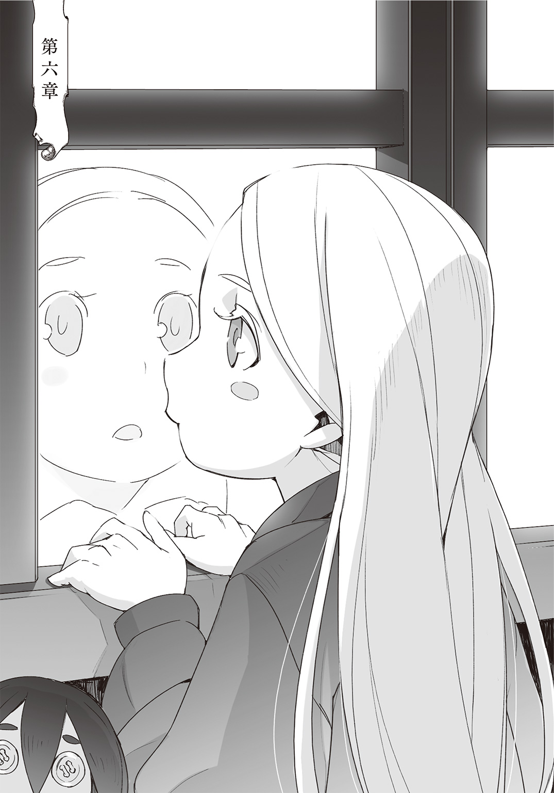
巨人族の国はいわゆる世界の果てにある。
正確に言うのならばそこは巨人族の国ではなく巨人族自治領であり、世界の果てというのも人類が観測した限りにおいての果てである。
遥か過去に世界を支配した巨人族も、今はその生存を管理される存在となり、永遠に春の訪れない厳冬の大地に封じ込められている。
太古の大戦において追い詰められた巨人族は、大地を割って連合軍の追撃を防いだ。殿を務めた巨人戦士が命を賭した一撃は大陸を両断し、海にまで繫がった。
その爪跡には海が流れ込み、それは大陸と自治領の間に横たわる縁海となった。
大陸を割った巨人戦士の大剣の柄頭であると目される小島が縁海にぽつりと浮かび、東西から流れ込む海流がそれにぶつかり巨人族すら呑み込む大渦を生み出している。
渡航困難な縁海は巨人族の脱走及び再侵攻を現在に至るまで妨げ続けているし、対岸の都市では常に監視の目を光らせ続けている。
そして自治領以北に広がるは極寒の砂漠だ。その砂漠は有史以来、巨人族を含む全人類の侵入を阻んでいる。
延々と、いや真の世界の果てにまで永遠に続く砂漠は、常に大時化の大海のように波打ち荒ぶっている。
動植物の気配は一つも確認されず、ただ肌を切り裂く風と身動きを奪う冷たさと、世界の果てからやってくる魔物とおぼしき何かの蠢きがあるばかりだった。
頻繁に起こる流砂に呑み込まれれば助かる術はなく、時折巻き起こる砂嵐に呑み込まれれば死を願うしかなく、砂漠は人族の管理から逃れようとした巨人族を幾千も埋葬して、遺品の一つも吐き出すことはなく広がり続けている。
あの砂漠迷宮など霞んでしまうような。
あの氷龍の生み出した極寒など生温いほどの。
それは踏み行った者を決して返さない不帰の砂漠であり、生命を呑み込む墓標のない墓地であり、巨人族を囲う檻である。
巨人族は沿岸部に集落を形成して生活を営んでいる。
巨人族の頑強な肉体を生かし自治領に広がる針葉樹の森を伐採し木材を、凍土雪山を掘り返して鉱石資源を輸出して生きている。
自治領には迷宮も生まれた。
だが巨人族が迷宮を攻略することは許されていなかった。迷宮の魔精を浴びて巨人族が力を取り戻すことを人々が恐れたからであるし、そもそもとして巨人の体格では迷宮へ下ることはできなかった。
攻略されない迷宮はやがて崩壊し、それと同時に魔物を吐き出す。巨人族はそれに立ち向かう者たちも制限されている。
厳冬の環境で、強制労働に等しい作業に従事し、戦う力を奪われ、緩慢な絶滅へと近付きつつある巨人族が住まうところ。
それがリリオンの生まれた場所だった。
家は集落の外れにあった。
遊び相手は人形しかおらず、背伸びをしても届かないほど高いところの窓を椅子によじ登って覗き込むと、いつも灰色の空と疲れた顔をした巨人族が見えた。子供たちも僅かにいる家畜の世話をしたり、木々を切ったり運んだりする手伝いをしており、窓から覗く視線に気が付くと表情を歪めて顔を背けた。
リリオンは一日の大半を家の中で一人で過ごした。少しの寂しさはあっても、辛さを感じなかった。明け方近くに仕事へと向かった母が、帰ってきてくれるから。
母を待つ時間をリリオンは愛していた。
半巨人族でありながら、魔物と戦う戦士として認められている母が誇らしかった。疲れた母がいつ帰ってきてもいいように、幼かったリリオンは人形を話し相手にしながら、掃除をしたり、洗濯をしたり、料理を作ったりして母を待った。
嫌な顔をされても窓の外を眺めた。
外気の冷たさが窓硝子を透かして頰を刺したが、苦にはならなかった。
早くても夕方、遅ければ日付が変わった。知らず眠ってしまうことはあってもリリオンはずっと母を待ち、そして母は帰ってきた。
戦いに疲労して、それでも帰ってくるとリリオンを抱きしめてくれた。
母からは戦いの匂いがした。汗と鉄と血の香り。
少しも恐ろしさは感じなかった。
母は優しかった。
リリオンよりも何倍も大きかったが、他の巨人族のような威圧感を感じなかった。
身体の至る所に古傷があり、両手を合わせて指は七本しかなく、縛っていた髪を解くと乾いた青い血の塊がばらばらと零れることもあった。赤い血の塊であることも。
母はよくリリオンを撫でてくれた。大きな手に小さな櫛を持って、お揃いの白銀の髪を梳いてくれた。リリオンがせがめば七本の指で器用に髪を編んでくれた。けれど、どれだけせがんでも戦いの話は聞かせてくれなかった。
母の戦う姿を思い描くと胸が高鳴った。どうしても胸の高鳴りを押さえきれなくなって、家を飛び出したのは六歳になる誕生日の十日前。珍しく晴れた日だった。
鉱山を一つ掘り潰して、それでもなお掘り進んで作られた採掘場には迷宮がよく生まれた。
見上げるほど大きな母が、戦士たちに囲まれると小さく見えた。
だが一番強くて、美しかった。
先陣を切る母は屈強な戦士たちを導いて、助けていた。
胸に思い描いた姿よりも戦う母はずっと格好良くて、そして家を抜け出したリリオンを叱る姿は何よりも怖かった。あんなに怒られたことはかつてなかった。
誕生日まで良い子にしていないとお祝いはなしよ、と言われたのでそれが十日前の出来事だったとよく覚えている。
良い子に十日を過ごして、誕生日に剣を貰った。それは巨人族にとっては果物ナイフのようなものだった。けれどそれが自治領にある最も小さな刃物で、幼いリリオンにとってそれは抱えなければならないほど大きかった。
母は二刀流だった。けれどリリオンは一振りしか剣を貰えず、もう一振りをねだったら鍋の蓋を渡された。それは楯の代わりだ。剣と蓋を持て余すように抱えるリリオンに、母は笑って言った。
――それはリリオンを守るものよ。
その日からリリオンは誰にも見つからないように家の裏で剣を振り続けた。母の帰りを待つ用意を済ませたら、厳冬の曇り空の下に飛びだして一人でずっと。
休みの日には母に成果を見せびらかした。
いろいろなことを教えてもらった。
そして次の誕生日を迎えた明くる日、リリオンはついに片手で剣を振れるようになった。剣をもう一振りねだったら、母は巨木を削り、身の丈ほどもある楯を作ってくれた。鍋蓋は卒業だと笑っていた。
次の誕生日が近付いた明くる日、母は帰ってこなかった。
剣の練習を終えて家の中に戻り窓の外を見つめ、不安の中で眠ってしまった。そんなリリオンを母はいつもベッドに運び、目覚めるまで寄り添ってくれていた。
目覚めた時、家の中には冷たさと、床に横たわる自分の身体だけがあった。
母は帰ってこなかった。何日も帰ってこなかった。
やがて訃報を届けに戦士が一人来た。
母は迷宮で果てた。
巨人族では入れない迷宮に、半巨人族の母は入れたから。それを攻略するように命じられたから。最強の戦士である母は一人で迷宮に向かった。
母は死んだ。
迷宮に殺された。迷宮に追いやった巨人族に殺された。
リリオンはもう、そこにはいられなかった。
誕生日の日、リリオンは母の思い出を鞄に詰め込んで家を出た。
迷宮を攻略する探索者という職業があることは知っていた。迷宮で力を得た人族が、巨人族に打ち勝ったことも知っていた。
伝説も、史実も、御伽噺も、母はリリオンに色んなお話をしてくれた。
リリオンだけが可能な、自治領からの逃げ出し方も。
それは簡単なことだった。日に何度かある輸送船に乗ればいいのだ。それは木材や鉱物や魔物の素材を対岸の都市に輸送するものだ。
どう足搔こうとも巨人族が密航することは不可能なので監視の目は緩かった。
初めて乗る船に目を回しながら、リリオンは故郷を捨てた。
ようやく八歳になったばかりだった。
◇◇◇
ベッドの上で向かいあって座り込み、リリオンは震える声で言葉を紡いだ。
ランタンはリリオンに、司書から聞いたことのほとんどを伝えた。
巨人族の血がリリオンの肉体から失われることはない。血はきっとこれからも今回の出来事のように厄介事を引き寄せるだろう。
そして、それらを一つ一つ解決していくしか二人にできることはない。
否が応でも、そうやって生きていかなければならないのだ。
リリオンはまだ幼い少女であるが、自らのことを知っておかなければならないと思ったし、それを知っても大丈夫だとランタンは思った。
リリオンはランタンの言葉を聞き終えると、うん、と一つ頷いて、何かを飲み込むように息を吸い込んでしばらく黙った。
それから、あのね、と言って堰を切ったように話し出した。
それはランタンの知らない、リリオンの今までの話だった。
幼い少女が一人、未知の土地へ足を踏み入れて、傷つきながら進む話だ。
膝を突き合わせて、手を握っていた。リリオンの指先は話をしている間、ずっと冷たかった。まるで少女の生まれた土地の冷たさそのもののように。
自治領対岸の都市にも迷宮特区はあったが、迷宮そのものは乏しかった。おそらく自治領に厄介事を押しつけているからだろう。その都市の運営目的はあくまでも自治領の監視と管理であり、迷宮探索に戦力を割く余裕を持たなかった。
そこではリリオンの望みを叶えられなかった。
リリオンは母以外と言葉を交わしたことは少なかった。生まれついての天真爛漫さもその時は形を潜めていて、孤独の不安と少女らしい恥じらいと、自分とさして大きさの変わらない人々の姿に戸惑っていた。リリオンは誰に話しかけることもできず、もう一度、輸出される物資に紛れて、都市を離れた。
それだけがリリオンの知る現状を打破する方法だった。
だが一度目は上手くいっても二度目は上手く行かなかった。密航はすぐにばれて、リリオンはまず一度目の危機に出会った。
その当時ですらリリオンは、ランタンよりも背が大きかった。成年の容貌に幼気を兼ね備えたリリオンは、乗車に対する対価を要求された。
彼らの望むものが何だったのかリリオンは判らなかったが、それでも恐ろしさを感じたのはリリオンが女の子だったからかもしれない。その話を聞くランタンは表情を強張らせたが、結末を聞いてほっと胸を撫で下ろした。
暴力を振るわれて、逃げ出すことができたのは巨人族の血による強靱な肉体と母の教えのおかげだった。がむしゃらに逃げ出すうちに、家から持ち出した何もかもをなくしてしまった。
大切にしていた人形も、母が髪を梳いてくれた櫛も、色々な思い出の品も。
「わたし、男の人が怖い」
リリオンは恐怖を認めた。
探索者も、道行く人々も、優しくしてくれたグランも、頼もしいジャックも、みんな怖い。
リリオンの歯がカタカタと鳴った。それを恥じるように歯を食いしばった。
目的はあっても、当てのない放浪の旅は一年以上も続いた。
人の世の常識も、金もなく、泥水を啜り、残飯を漁り、人に慣れることもできずに影から影を行くようにこそこそと過ごした。見窄らしくなろうともリリオンが女である限り、襲いかかろうとする者はいた。
戦う母に憧れたはずなのに、リリオンは戦うこともできずにただ逃げ惑うばかりだった。
その恐れがリリオンを助けたのだとランタンは思った。
やがてリリオンは奴隷商人に捕らえられて、運び屋の男たちに引き渡された。
そこにどのような取引があったのかは定かではないが、それもまた一つのきっかけだったのだ。その奴隷商ではなかったら、託された運び屋の男たちが別の者だったら、シェバやバラクロフが目を付けなかったら、リリオンとランタンは出会えなかったかもしれない。
いや、違う。
ランタンは今とは別の未来を即座に否定した。
それからのリリオンの話は聞くに堪えなかった。
だがランタンはリリオンのことをもっと知りたかったし、リリオンは過酷な道程を吐き出し続けた。自らの足跡を振り返るように。
リリオンは恒常的な暴力の嵐に晒されることになった。
その時のリリオンはすでに女ですらなかった。骨に皮と旅垢を纏った人の形をした荷物でしかなかった。平手で頰を張られ、拳を落とされ、足蹴にされた。何かをしても、何もしなくても運び屋たちはリリオンを傷つけた。殴られる理由をリリオンは知らなかった。
そしていつしか理由を考えることもやめた。
リリオンが暴力を振るわれた理由をランタンは教えなかった。巨人族の血が嫌悪感を呼び起こすということだけは、まだどうやって説明していいか判らなかった。
「ランタンを初めて見た時、女の子だと思った」
急にそんなことを言われてランタンは眉を顰める。
肩に触れる艶やかな黒髪も、折れてしまいそうなほどの華奢な身体つきも、睨んでも怖くない焦茶色の瞳も、それはリリオンの知る男とはまるで違っていた。
出会い、言葉を交わしたあの夜。
ランタンはリリオンに冷たかった。
冷たく振る舞おうともリリオンはランタンに暖かさを感じた。
誰にも頼ることのできなかったリリオンは思わず手を伸ばした。
思った通りに、思った以上に女の子みたいな小さい身体は太陽のように暖かかった。
手を伸ばせば触れることができる、ぎゅっと抱きしめることもできる小さな太陽。
リリオンにとって抵抗する気力も湧かない恐怖の権化であった運び屋たちをいとも簡単に打ち倒したその姿は、憧れた母の姿に似ていた。
家から持ち出したものは全て失ってしまって、それでも胸に隠していた想いを思い出した。
――強くなりたい。
「ランタン、わたし強くなりたい。探索者になって、強くなって、それから――」
手を繫いでいなかったらリリオンは顔を覆い隠していただろう。
顔が白くなるぐらい歯を嚙み締めて、絞り出すようにランタンに吐露した。
「――それからママを殺した奴らを、めちゃくちゃにしてやりたい......！」
それは復讐だ。迷宮に対する、巨人族に対する。
リリオンは何度もしゃくりあげた。ぽろぽろと大粒の涙が零れた。
「......ランタンに、嫌われたくない」
リリオンは自分が胸に抱いた感情の性質を理解していた。
「嫌いにはならないよ。嫌いになる理由がない」
ランタンは腕を引いてリリオンを胸に抱いた。涙がじんわりと胸に吸い込まれて重たい。
「リリオンを泣かす奴は、僕が全員叩きのめしてやる」
ランタンはリリオンの頭を撫でて、背中をあやして、そのまま押し倒した。
小さな頭部に腕枕をして、顔を寄せる。
充血した目の中で淡褐色の瞳が何度も瞬きをして、その度に大きな涙の粒が零れ落ちた。
「ランタン」
リリオンは涙を止めるようにしゃくりあげながら、名を呼んだ。
初めての迷宮は怖かった。
思ったよりも広かったけれど狭い箱の中に閉じ込められたような圧迫感があった。繫いだランタンの手だけが暖かくて、先を導いてくれるその小さな手は当てのない旅路の中で出会うことのできなかった心強さだった。
「ママとお揃いだから、この髪が好き。ママは綺麗だってほめてくれて、戦いから帰ってくるといつも髪を梳いてくれた」
嵐熊に切られた時は無我夢中だった。戦いが終わって、ふと気が付いた。
過酷な旅の中で髪は擦り切れ、だが整えることもできずに伸ばしっぱなしにしていた。
「先っぽの方は、ママが撫でてくれた髪だって思ったら、わたし、わたし......」
ランタンは最初の迷宮、最下層でのリリオンの混乱を思い出した。
ランタンを守るために断ち切られてしまった三つ編み。横たわったそれから髪紐だけをするりと抜き取った、自分の振る舞いを、はっきりと思い出した。
ほんの僅かな表情の変化にリリオンは首を振った。
「わたし、ランタンに撫でてもらってうれしかった。本当よ。だからママにごめんなさいって言ったの。ランタンのお膝で眠っちゃったから、夢の中で。ママは何も言わなかったけど、撫でてくれて、髪を結んでくれた」
目覚めた時、夢が現実になったのだと編まれた髪にリリオンは思った。
それがランタンの手によるものだとわかっても、寂しくはなかった。
ランタンは手を伸ばし、頰にある涙の跡を拭って、そのままリリオンの髪に触れた。
「僕はね、昔、奴隷だったことがあるんだ」
ランタンは過去を語ることが好きではない。
けれどリリオンに自分のことを知ってほしくなった。
「一度言ったことがあるよね。記憶があやふやだって。僕は親の顔も覚えてないし、生まれた所もここじゃないどこかってことしか判らない。気が付いたら売り物になってた」
ランタンがそう言うとリリオンは涙を引っ込めるぐらいに驚いて、また大きな瞬きをした。
「売れ残っちゃったけどね」
「――うそよ」
「どうして？」
「だって、わたし、お金持ちだったら、ランタンほしい」
声はまだ湿っぽかった。舌が縺れるように、リリオンはランタンに言った。
ランタンは小さく笑った。
「リリオンにだったら、大人しく買われてたかもね」
ランタンの頰に浮かんだ小さな笑みは、途端に意地悪な笑みに代わった。
それだけでリリオンはランタンが大人しくしていなかったことを悟ったようだった。
「だって相手が伯爵だったからね」
ランタンはリリオンに顔を寄せた。鼻と鼻が触れる。瞬きをすると睫毛が相手を引っ搔く。
「もしも僕がそのまま大人しく売られていても、リリオンとは出会えていたんだよ」
ランタンはもっと近くまでリリオンを抱き寄せた。
心臓の音が重なる。瞳が互いの虹彩に染まった。
笑みを作った唇から漏れた吐息が、まるで口付けをするように触れ合った。
囁きは甘い。
「僕とリリオンが出会ったのは、運命だったのかもね」
言ったランタンが顔を真っ赤にして、照れ隠しに、いや、胸にある愛おしさに身を任せてリリオンをぎゅっと抱きしめた。
ランタンの胸の中で白銀の髪から覗く耳が同じように赤い。
「――ランタン」
「今日はもう、何も言っちゃダメ」
「......うん」
心臓は早鐘のようで、二人とも太陽のように火照ってしまい、寝付くのに時間が掛かった。
それでも二人はそのまま朝まで、抱きしめ合ったままだった。
――おはよう。
目覚めた時に、当たり前のようにそう言える朝がそこにあった。
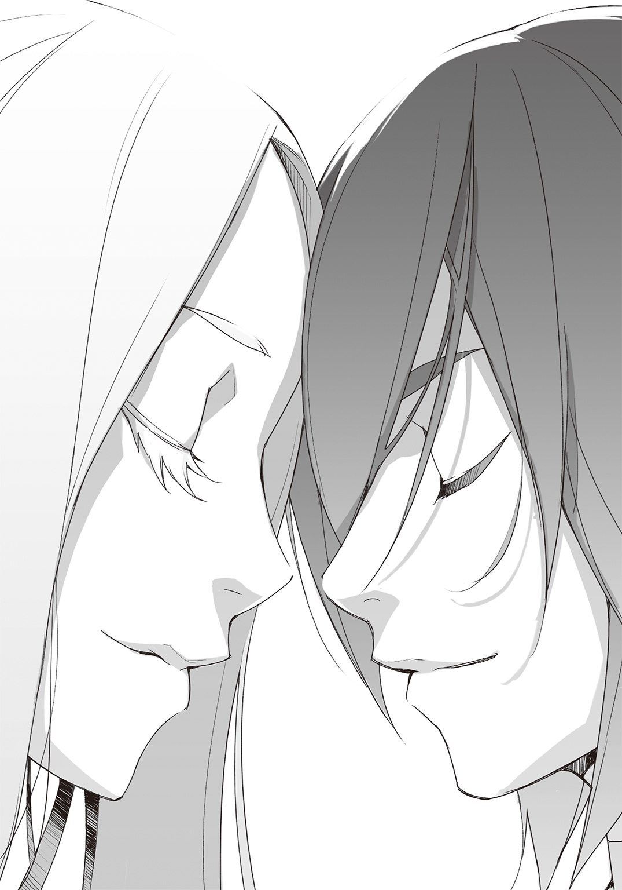
著者紹介
ｍｍ エムエム
ｗｅｂ版からずいぶんと改稿しちゃった！
八割ぐらい（もしかしたらもっと！）かな？
なんだか新鮮な気持ちでした。けど疲れた><
illustration
ｋｙｏ キョウ
富山県在住の水瓶座のＡ型で、普段ゲームしながらたまに絵を描かせていただいてます。
よろしくお願いします。
ダッシュエックス文庫DIGITAL
カボチャ頭のランタン 合本版
著者 ｍｍ
© mm 2017
２０１７年１月31日発行
この電子書籍は左記を底本としています。
ダッシュエックス文庫
「カボチャ頭のランタン01」２０１５年１月28日発行 第１刷
「カボチャ頭のランタン02」２０１５年３月30日発行 第１刷
「カボチャ頭のランタン03」２０１５年８月30日発行 第１刷
発行者 茨木政彦
発行所 株式会社 集英社
〒１０１－８０５０
東京都千代田区一ツ橋２丁目５番10号
０３－３２３０－６０８０（読者係）
制作所 株式会社ＩＣＥ
本作品の全部また一部を無断で複製、転載、改竄、インターネット上に掲載すること、および有償無償に関わらず、本データを第三者に譲渡することを禁じます。なお個人利用の目的であっても、コピーガードを解除しての複製は、法律で禁じられています。